Questão 1 · Ciclo Básico Graduação em Medicina · 4000201352A inervação da língua é rica e bem variada quanto à sua porção motora e sensitiva, com diferenças entre a geral – tato e temperatura – e especí ca – paladar –. Assinale a alternativa que contenha o principal nervoso responsável pela motricidade da língua e pela sensibilidade especial dos dois terços anteriores.
A N. hipoglosso e n. corda do tímpano.
B N. hipoglosso e n. facial.
C N. glossofaríngeo e n. hipoglosso.
D N. glossofaríngeo e n. corda do tímpano.
E N. hipoglosso e n. lingual.
Revisar: possível letra faltando em enunciado
Questão 2 · Ciclo Básico Graduação em Medicina · 4000201351A língua apresenta uma risca vascularização necessária para o funcionamento adequado da musculatura que controla os seus movimentos. Qual é a artéria responsável pela irrigação da raiz da língua?
A A. sublingual.
B A. profunda da língua.
C A. lingual.
D Aa. dorsais da língua.
E A. sublingual e a. profunda da língua.
Questão 3 · Ciclo Básico Graduação em Medicina · 4000201350A musculatura intrínseca da língua é importante, em especial, na alteração do formato da língua porque eles não se inserem em ossos. Assinale a alternativa
A O músculo longitudinal superior está localizado inferiormente à túnica mucosa do dorso da língua, curvando a língua longitudinalmente para cima e elevando o seu ápice.
B O músculo transverso está localizado inferiormente ao longitudinal superior e suas fibras estão dispostas no eixo laterolateral da língua.
C O músculo vertical tem suas fibras interpostas com o transverso e atua no achatamento da língua.
D O músculo longitudinal inferior está localizado inferiormente ao longitudinal superior e tem as mesmas funções.
E A atuação conjunta dos músculos vertical e transverso resulta em um alongamento e estreitamento da língua, podendo empurrá-la contra os dentes incisivos.
Questão 4 · Ciclo Básico Graduação em Medicina · 4000201349A musculatura extrínseca da língua é importante em especial na alteração de sua posição e eles se originam a partir de um osso. Assinale a alternativa correta acerca deles.
A O músculo palatoglosso atua como o arco palatino mais posterior e insere-se também na faringe, em que adquire a função como músculo longitudinal interno.
B O músculo genioglosso ocupa um espaço relativamente pequeno da língua e insere-se na espinha geniculada da mandíbula.
C O músculo hioglosso insere-se na região lateral da língua e atua para a sua protusão e elevação de suas laterais.
D O músculo estiloglosso tem origem no processo estiloide e insere-se lateralmente na língua, auxiliando na elevação de suas laterais e retração.
E O principal músculo extrínseco é o longitudinal superior, que atua para curvar a língua longitudinalmente para cima.
Questão 5 · Ciclo Básico Graduação em Medicina · 4000201348A língua é, essencialmente, um órgão muscular recoberto por uma túnica mucosa. Essa característica faz com que a sua musculatura seja um componente muito importante para a sua função. Assinale a alternativa correta acerca da musculatura lingual.
A Há a musculatura extrínseca da língua formada por músculos que se originam exteriormente e a sua única função é de mudança do formato da língua.
B A principal função dos músculos intrínsecos da língua é a alteração de sua posição.
C O funcionamento dos músculos da língua é complexo e não podem ser resumidos a ações simples, podendo ter funções diferentes e antagônicas em suas partes.
D Um dos músculos intrínsecos é o genioglosso, que compõe a maior parte da língua e apresenta formato de leque.
E Um dos músculos extrínsecos é o longitudinal superior, que constitui à camada fina de músculos orientada longitudinalmente localizada abaixo da túnica mucosa no dorso da língua.
Questão 6 · Ciclo Básico Graduação em Medicina · 4000201347Qual das estruturas abaixo corresponde a uma projeção existente na túnica mucosa do assoalho da cavidade oral abaixo da face inferior da língua? Essa estrutura está associada ao frênulo lingual e apresenta o óstio do ducto salivar submandibular.
A Sulco terminal da língua.
B Sulco mediano.
C Papila sublingual.
D Papilas circunvaladas.
E Papilas fungiformes.
Questão 7 · Ciclo Básico Graduação em Medicina · 4000201346O palato constitui a separação entre as cavidades nasal e oral e é dividido em duas partes: a porção dura, que apresenta esqueleto ósseo, e a mole, sem parte óssea. O palato mole ca suspenso e tem a sua posição controlada pela ação de músculos, que permitem com que ele bloqueie a comunicação entre as cavidades provisoriamente. Assinale a alternativa tópico.
A A contração do músculo levantador do véu palatino bloqueia o istmo faríngeo, o que não permite a comunicação entre a orofaringe e a nasofaringe.
B O músculo palatoglosso forma o arco palatino mais anterior e é um dos músculos extrínsecos da língua, auxiliando na elevação de sua porção lateral.
C O músculo palatofaríngeo forma o arco palatino mais posterior e atua como um músculo longitudinal da faringe, encurtando-a.
D O músculo tensor do véu palatino também age na abertura da tuba auditiva, permitindo a comunicação entre a cavidade timpânica e a nasofaringe.
E O músculo tensor do véu palatino atua na elevação do palato mole durante a deglutição para impedir com que o alimento passe para as cavidades nasais.
Revisar: possível letra faltando em enunciado
Questão 8 · Ciclo Básico Graduação em Medicina · 4000201345O palato é um componente comum das cavidades nasal e oral, atuando como assoalho e teto, respectivamente. Em sua face superior, é recoberto por epitélio respiratório e, na inferior, por epitélio digestório. Isso permite a ele que adquira uma complexa vascularização e inervação. Quanto a esse tópico, assinale a alternativa correta.
A Posteriormente aos dentes incisivos, abre-se o forame palatino maior, que dá passagem aos vasos e nervo de mesmo nome.
B O nervo responsável pela inervação sensitiva de todo o palato é o nasopalatino.
C Todos os músculos palatinos são inervados pelo nervo mandibular (NC V₃).
D A principal fonte de vascularização do palato é por parte das artérias palatinas menores, que passam através do forame palatino menor, medial ao terceiro molar.
E O nervo palatino maior inerva sensitivamente a maior parte do palato duro, com exceção da porção mais anterior que é feita pelo nasopalatino.
Questão 9 · Ciclo Básico Graduação em Medicina · 4000201344Um dos músculos do palato mole está inserido, também, na parte cartilaginosa da tuba auditiva, o que faz com que a sua contração também resulte na abertura da luz da tuba. Assim, ele permite a comunicação entre o ambiente interno da orelha média e o externo, equalizando a pressão. Qual é esse músculo?
A M. levantador do véu palatino.
B M. tensor do véu palatino.
C M. palatoglosso.
D M. palatofaríngeo.
E M. da úvula.
Questão 10 · Ciclo Básico Graduação em Medicina · 4000201343A condução do alimento da cavidade oral para a orofaringe é uma das etapas da deglutição, que envolve a elevação do palato mole para permitir a passagem do bolo alimentar. Como se chama o espaço entre a cavidade oral e a orofaringe?
A Cóanos.
B Fauces.
C Fenda tonsilar.
D Arcos palatinos.
E Vestíbulo da boca.
Questão 11 · Ciclo Básico Graduação em Medicina · 4000201342O vestíbulo da boca é o espaço localizado entre a face interna dos lábios e bochecha e a gengiva e os dentes. Abaixo está uma imagem que apresenta o lábio superior levantado. Assinale a alternativa que contenha a estrutura indicada corretamente. Figura 22: Vestíbulo da boca. Fonte: Estratégia Imagens.

A Frênulo do lábio.
B Frênulo da língua.
C Túnica mucosa alveolar.
D Gengiva labial superior.
E Túnica mucosa labial.
Questão 12 · Ciclo Básico Graduação em Medicina · 4000201341A cavidade oral é o meio de entrada siológico do alimento no sistema digestório, que é transportado, através da faringe e do esôfago, em direção ao estômago durante a deglutição. Assinale a alternativa correta acerca desse espaço.
A O vestíbulo da boca é o espaço entre os dentes e a gengiva e os lábios e a bochecha, sendo externo ao restante da cavidade.
B A cavidade própria da boca é o espaço similar a uma fenda entre a superfície labial dos dentes e gengiva e a túnica mucosa interna dos lábios e bochecha.
C A rima da boca é a estrutura que permite a comunicação da cavidade oral com a orofaringe.
D O vestíbulo da boca é o espaço entre os arcos dentais mandibular e maxilar cujo teto é o palato.
E Quando a boca está em repouso, a língua ocupa a maior parte do vestíbulo da boca.
Questão 13 · Ciclo Básico Graduação em Medicina · 4000201340Há vários músculos da faringe e a sua atuação em conjunto é importante para as etapas da deglutição e modi cação do conduto da voz para alterá-la. Assinale a alternativa
A O músculo estilofaríngeo entra na camada interna na abertura entre os músculos constritores superior e médio.
B O único músculo da faringe que recebe inervação motora pelo n. glossofaríngeo é o músculo estilofaríngeo.
C Os músculos longitudinais da camada interna se unem próximos à sua inserção, inserindo-se em conjunto nas margens posterior e superior da cartilagem tireóidea.
D O músculo salpingofaríngeo é um dos componentes da camada externa da faringe, atuando na elevação da laringe.
E A atuação dos músculos constritores da faringe é na formação de uma crista peristáltica para empurrar o bolo alimentar ao esôfago.
Questão 14 · Ciclo Básico Graduação em Medicina · 4000201339Qual dos seguintes nervos é o principal responsável pela inervação sensitiva da faringe?
A N. glossofaríngeo.
B N. facial.
C N. hipoglosso.
D N. vago.
E N. acessório.
Questão 15 · Ciclo Básico Graduação em Medicina · 4000201338Os músculos da faringe assumem diferentes funções que são importantes siologicamente para a sua condução de ar e de alimento pelas mesmas vias, modificando-a estruturalmente. Assinale a alternativa que contenha as afirmativas corretas. I - O primeiro músculo constritor da faringe a se contrair durante a deglutição é o superior. II - A origem do músculo constritor superior é na rafe pterigomandibular. III - Os músculos da camada interna são longitudinais e atuam na depressão da laringe para que ocorre a obstrução do ádito da laringe. IV - Os músculos faríngeos recebem inervação do plexo faríngeo, que contém fibras dos nervos vago (X) e glossofaríngeo (IX). V - A contração dos músculos constritores da camada externa da faringe resulta em seu encurtamento e aumento de largura.
A I, II e III, apenas.
B I, II e IV, apenas.
C Todas as afirmativas estão corretas.
D II e V.
E III, IV e V.
Questão 16 · Ciclo Básico Graduação em Medicina · 4000201337Os músculos da camada interna da faringe atuam na elevação da laringe e diminuição do comprimento do órgão. O músculo salpingofaríngeo é um deles. Onde é a sua origem?
A Ligamento estilohioideo.
B Cornos maiores do hioide.
C Parte cartilagínea da tuba auditiva.
D Processo estiloide do temporal.
E Rafe pterigomandibular.
Questão 17 · Ciclo Básico Graduação em Medicina · 4000201336Vários músculos compõem as paredes da faringe e atuam para a manutenção da sua siologia. O músculo constritor superior é um deles. Onde é a sua origem?
A Ligamento estilohioideo.
B Cornos maiores do hioide.
C Parte cartilagínea da tuba auditiva.
D Processo estiloide do temporal.
E Rafe pterigomandibular.
Questão 18 · Ciclo Básico Graduação em Medicina · 4000201335A deglutição é um processo anatomicamente complexo que envolve a coordenação de várias estruturas faríngeas e laríngeas para que o alimento seja adequadamente conduzido. Assinale a alternativa correta acerca desse processo.
A O primeiro passo é a compressão do bolo alimentar contra o palato duro, que resulta na contração dos músculos da língua e transferência do conteúdo para a nasofaringe.
B A posição primária do palato antes da deglutição é estar aberto e com bloqueio da nasofaringe para que o bolo alimentar não ascenda.
C Há contração dos músculos faríngeos longitudinais e supra-hioideos para que ocorra o rebaixamento da laringe durante a deglutição.
D Há contração sequencial involuntária dos três músculos constritores sequenciais que empurra o bolo para o esôfago.
E Os músculos constritores da faringe atuam simultaneamente para a diminuição da luz da faringe para impedir que o alimento entre na laringe.
Questão 19 · Ciclo Básico Graduação em Medicina · 4000201334A imagem abaixo apresenta uma vista da parede lateral da faringe e de todas as estruturas e projeções da mucosa. Próximo à conexão com a cavidade nasal, está a estrutura apontada. Qual é o seu nome? Figura 14: Vista da parede lateral da faringe. Fonte: Estratégia Imagens.
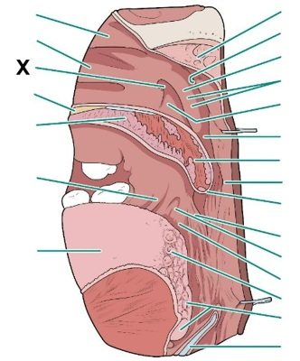
A Óstio da tuba auditiva.
B Óstio do ducto lacrimonasal.
C Tonsilas palatinas.
D Tonsila faríngea.
E Prega salpingofaríngea.
Questão 20 · Ciclo Básico Graduação em Medicina · 4000201333A faringe, como é o principal meio de entrada tanto de ar quanto de alimentos, apresenta um tecido linfático rico que forma um anel tonsilar presente na fossa tonsilar entre os arcos palatoglosso e palatofaríngeo?
A Tonsila faríngea.
B Tonsilas tubária.
C Tonsilas palatinas.
D Tonsilas linguais.
E Tonsilas laríngeas.
Questão 21 · Ciclo Básico Graduação em Medicina · 4000201332A faringe é um órgão que atua na condução de alimento para o esôfago e de ar para faringe, estendendo-se desde a sua comunicação com as cavidades nasais até o início do esôfago. Quais são os seus limites superior e inferior?
A Base do crânio e margem superior do osso hioide.
B Margem inferior da cartilagem cricoidea e margem inferior da vértebra C VI.
C Margem superior da vértebra C III e margem inferior da vértebra C VII.
D Osso palatino e margem superior do osso hioide.
E Base do crânio e margem inferior da vértebra C VI.
Questão 22 · Ciclo Básico Graduação em Medicina · 4000201331A faringe é um órgão com atuação tanto no sistema digestório quanto do respiratório, porque serve como via de condução para o alimento e para o ar. Esses elementos assumem destinos diferentes de acordo com a conformação assumida. A imagem abaixo apresenta uma imagem de uma faringe com a sua parede posterior seccionada e aberta, como um livro. Assinale a alternativa que contenha, corretamente, a estrutura apontada. Figura 11: Vista posterior da faringe seccionada Fonte: Estratégia Imagens.
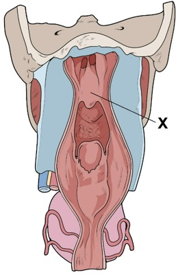
A Úvula.
B Palato mole.
C Recesso faríngeo.
D Tonsila faríngea.
E Prega salpingofaríngea.
Questão 23 · Ciclo Básico Graduação em Medicina · 4000201330A transdução olfatória envolve receptores específicos conhecidos como receptores olfatórios, que são ativados na presença do ligante e desencadeiam um sinal elétrico. Esse reconhecimento é, então, transmitido pelos axônios do neurônio receptor até o SNC. Assinale a alternativa
A O funcionamento dos receptores olfatórios é com base na ativação de proteína G e da adenilil ciclase.
B A ativação dos receptores olfatórios desencadeia a despolarização da célula com abertura de canais de sódio e cálcio.
C Os diferentes receptores olfatórios usam o mesmo tipo de segundo mensageiro, o que faz com que cada célula possa expressar apenas um receptor.
D Dos mais de 300 genes de receptores olfatórios, cada neurônio sensorial expressa apenas um gene dos receptores.
E Cada receptor olfatório é específico para apenas um odorífero, o que faz com que a sinalização individual de uma célula seja suficiente para transmitir a informação do cheiro.
Questão 24 · Ciclo Básico Graduação em Medicina · 4000201329Há, na cavidade nasal, um epitélio no dedicado à olfação pelo reconhecimento de substâncias odoríferas. Assinale a a rmativa correta acerca da fisiologia da quimiorrecepção.
A Há células caliciformes que secretam o muco para que as partículas consigam se aderir e difundir-se até os receptores.
B As células receptoras olfatórias são neurônios, o que significa que a sua perda resulta na ausência irreversível da olfação.
C Diferentemente do epitélio respiratório, não há uma camada de líquido que separa a luz das células epiteliais, o que permite o alcance das partículas do ar.
D Há glândulas serosas que secretam o seu conteúdo na luz da cavidade nasal, o que forma uma camada de secreção serosa que recobre o epitélio e serve como solvente para as substâncias.
E A área do epitélio olfatório é significativamente grande em humanos, ocupando a maior parte da cavidade nasal.
Questão 25 · Ciclo Básico Graduação em Medicina · 4000201328Histologicamente, após o vestíbulo do nariz, há duas áreas distintas funcional e estruturalmente na cavidade nasal. Uma delas é a área respiratória, cuja função associa-se mais ao transporte e processamento do ar. Assinale a alternativa correta acerca desse epitélio.
A Apresenta um epitélio estratificado pavimentoso, como a traqueia, e atua no aquecimento do ar.
B O aquecimento do ar é resultado de uma diminuição da área de superfície com a presença das conchas nasais.
C A presença de conchas nasais que compartimentalizam a cavidade é importante para criar um fluxo turbulento que facilita a precipitação de partículas.
D Apresenta um epitélio pseudoestratificado colunar com células neuronais sensitivas que emitem seus processos dendríticos na luz da cavidade.
E A lâmina própria apresenta poucas alças capilares em decorrência da grande exposição dessa região a traumas.
Questão 26 · Ciclo Básico Graduação em Medicina · 4000201327As células receptoras olfatórias atuam como transdutores do sinal químico da concentração de substâncias presentes no ar para o sinal elétrico conduzido pelos axônios do nervo olfatório (NC I). Tipicamente, elas parecem ser os únicos neurônios prontamente substituídos após o nascimento, o que permite o reestabelecimento da olfação mesmo em casos transitórios de anosmia. Assinale a alternativa
A As células receptoras são neurônios bipolares que emitem um processo dendrítico apical para a luz da cavidade nasal.
B Os receptores olfatórios são proteínas acopladas a proteína G que atuam na ativação da adenilil ciclase.
C No muco olfatório, há proteínas de ligação a odorantes que são capazes de se ligar a substâncias e carregá-las até os receptores.
D Uma única célula é suficiente para transmitir as informações necessárias em decorrência da presença de grande quantidade de receptores olfatórios.
E O domínio basal das células receptoras emite um axônio não mielinizado para convergir com outros e formar o nervo olfatório.
Questão 27 · Ciclo Básico Graduação em Medicina · 4000201326A área olfatória é um dos componentes da cavidade nasal e atua na olfação em decorrência da presença de células receptoras especializadas e uma cor castanho-amarelada característica. Algumas patologias são capazes de alterar a sua ação e promover anosmia. Assinale a alternativa que contenha as afirmativas corretas. I - A lâmina própria da mucosa olfatória é diretamente contígua com o periósteo adjacente. II - A área olfatória está nas porções mais superiores da cavidade em decorrência da lâmina cribriforme formar o teto. III - Para que ocorra a olfação, o ar deve se direcionar para os espaços mais superiores da cavidade, próximo ao recesso esfenoetmoidal. IV - As células receptoras são os próprios neurônios bipolares que projetam processos celulares ciliares com receptores para as substâncias. V - As células receptores são células epiteliais especializadas que fazem sinapse com os neurônios que compõem o nervo olfatório.
A I, II e IV, apenas.
B I, e IV, apenas.
C II, III e V, apenas.
D II, III e IV, apenas.
E I, II, III e IV.
Questão 28 · Ciclo Básico Graduação em Medicina · 4000201325Há dois grupos de função da cavidade nasal, associada a áreas com histologia distinta. Uma delas é a região olfatória, associada à sensibilidade a partículas olfatórias. Onde ela está localizada e quais são suas características histológicas?
A A área olfatória está presente no vestíbulo do nariz e é, histologicamente, distinta em decorrência da ausência de células caliciformes.
B A área olfatória está presente nos cóanos e as células receptoras olfatórias são neurônios bipolares com processos apicais que formam cílios com vários receptores.
C A área olfatória está presente no teto e nas partes superior das paredes medial e lateral da cavidade nasal, não apresentando células caliciformes.
D A área olfatória está presente no teto e na parte superior das paredes medial e lateral da cavidade nasal, apresentando células epiteliais receptoras específicas sem a presença de neurônios.
E A área olfatória está presente na maior parte da cavidade, com exceção do teto e das porções superiores, e apresenta grande número de células caliciformes.
Questão 29 · Ciclo Básico Graduação em Medicina · 4000201324A cavidade nasal é uma das vias de entrada de ar no organismo em direção à faringe. Exercendo uma função importante de processamento qualitativo do ar em virtude do aquecimento e turbilhonamento, que facilita a deposição de partículas na camada de muco do epitélio. Uma parte dessa cavidade é o
A O vestíbulo do nariz é o início da cavidade nasal a partir da narina com o epitélio continuado com o da pele.
B O vestíbulo do nariz é a porção mais posterior da cavidade nasal, permitindo a sua comunicação com a nasofaringe.
C O vestíbulo do nariz é recoberto por epitélio pseudoestratificado colunar, assim como o restante do trato respiratório superior.
D O vestíbulo do nariz constitui os espaços entre as conchas nasais por onde o ar pode transitar e atuar na olfação.
E O vestíbulo do nariz é recoberto por epitélio estratificado pavimentoso, assim como a traqueia.
Questão 30 · Ciclo Básico Graduação em Medicina · 4000201323Há diversas funções associadas à cavidade nasal, que atua como via de condução de ar, assim como espaço para drenagem de secreções dos seios faciais e de líquido lacrimal. Todo esse conteúdo direcionado para essa cavidade é transportado para outros locais. Uma estrutura anatômica associada são os cóanos. Assinale a alternativa correta sobre eles.
A Cóano é o espaço presente na porção externa do nariz que o comunica diretamente com o ambiente externo, revestido por um epitélio estratificado pavimentoso, continuação da pele.
B Cóano é orifício delimitado pela asa do nariz lateralmente que permite a entrada de ar para a cavidade nasal.
C Cóanos são os espaços delimitados entre as conchas que constituem as vias possíveis para a passagem de ar.
D Cóanos são as aberturas posteriores da cavidade nasal que comunicam a sua porção posterior com a nasofaringe.
E Cóano é o espaço da cavidade nasal revestido pela túnica mucosa respiratória de epitélio pseudoestratificado.
Questão 31 · Ciclo Básico Graduação em Medicina · 4000201322Para o estudo dos seios da face, é importante o seu conhecimento anatômico para identi cá-los no exame físico e nos exames de imagem. Uma ferramenta útil para a sua análise é a tomogra a, que permite a visão de secções da cavidade nasal e dos seios associados. Assinale a alternativa que contenha o seio indicado nessa tomografia computadorizada coronal. Figura 35: TC coronal de seios da face. Fonte: Estratégia Imagens.

A Seio esfenoide.
B Seio frontal.
C Seio maxilar.
D Células etmoidais anteriores.
E Células etmoidais posteriores.
Questão 32 · Ciclo Básico Graduação em Medicina · 4000201321A cavidade nasal é um ponto importante na via de drenagem dos seios da face, atuando como centro de comunicação da luz dos seios. Assim, clinicamente, ele se torna importante também porque é a fonte da infecção dessas estruturas. Abaixo está presente uma secção sagital da cavidade nasal com abertura dos seios. Assinale a alternativa que contenha o seio indicado. Figura 33: Seios da face. Fonte: Estratégia Imagens.
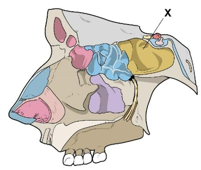
A Seio esfenoidal.
B Seio frontal.
C Seio maxilar.
D Células etmoidais anteriores.
E Células etmoidais posteriores.
Questão 33 · Ciclo Básico Graduação em Medicina · 4000201320A cavidade nasal é um ponto importante na via de drenagem dos seios da face, atuando como centro de comunicação da luz dos seios. Assim, clinicamente, ele se torna importante também porque é a fonte da infecção dessas estruturas. Abaixo está presente uma secção sagital da cavidade nasal com abertura dos seios. Assinale a alternativa que contenha o seio indicado. Figura 31: Seios da face. Fonte: Estratégia Imagens.
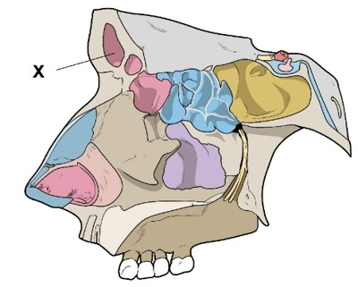
A Seio esfenoide.
B Seio frontal.
C Seio maxilar.
D Células etmoidais anteriores.
E Células etmoidais posteriores.
Questão 34 · Ciclo Básico Graduação em Medicina · 4000201319Há algumas regiões do organismo mais susceptíveis a hemorragias traumáticas em decorrência da proximidade dos vasos à superfície ou a um uxo elevado de sangue. Um espaço conhecido de plexo anastomóstico arterial é a área de Kiesselbach. Assinale a alternativa correta acerca desse área.
A Está na parte anterior do septo nasal e recebe vascularização preferencial da artéria mandibular.
B Está na parte posterior do septo nasal e recebe vascularização de ramos das artérias oftálmica, maxilar e facial.
C Está na parede lateral da cavidade nasal e recebe vascularização apenas das artérias etmoidais anteriores e posteriores.
D Está na parede lateral da cavidade nasal e recebe vascularização de ramos das artérias oftálmica, maxilar e facial.
E Está na parte anterior do septo nasal e recebe vascularização de ramos das artérias oftálmica, maxilar e facial.
Questão 35 · Ciclo Básico Graduação em Medicina · 4000201318A cavidade nasal atua não somente na condução do ar, sendo importante também como via de drenagem dos vários seios da face e vias lacrimais. Em qual espaço da cavidade está localizada a abertura do ducto lacrimonasal, que transporta o líquido lacrimal da órbita para o nariz?
A Meato nasal inferior.
B Meato nasal superior.
C Meato nasal médio.
D Recesso esfenoetmoidal.
E Meato nasal comum.
Questão 36 · Ciclo Básico Graduação em Medicina · 4000201317A cavidade nasal atua não somente na condução do ar, sendo importante também como via de drenagem dos vários seios da face e vias lacrimais. Em qual espaço da cavidade está localizada a abertura que se comunica com o seio frontal?
A Meato nasal inferior.
B Meato nasal superior.
C Meato nasal médio.
D Recesso esfenoetmoidal.
E Meato nasal comum.
Questão 37 · Ciclo Básico Graduação em Medicina · 4000201316A estrutura da cavidade nasal é muito importante para a condução do ar, modi cando-o qualitativamente, e, também, para a olfação, visto a presença de receptores sensoriais capazes de reconhecerem moléculas, o que cria o cheiro de um objeto. Qual dos seguintes ossos não participa da formação do seu teto?
A Etmoide.
B Esfenoide.
C Frontal.
D Nasal.
E Palatino.
Questão 38 · Ciclo Básico Graduação em Medicina · 4000201315As conchas nasais são lâminas projetadas para o interior da cavidade que aumentam muito a superfície de troca para o aquecimento do ar, o que é importante para uma respiração mais e ciente. A partir de qual parede eles se projetam e qual é o espaço delimitado entre a concha nasal superior e a média?
A Projetam-se da parede lateral da cavidade nasal e o espaço é o meato nasal médio.
B Projetam-se da parede medial da cavidade nasal e o espaço é o meato nasal médio.
C Projetam-se do teto da cavidade nasal e o espaço é o recesso esfenoetmoidal.
D Projetam-se da parede lateral da cavidade nasal e o espaço é o meato nasal superior.
E Projetam-se da parede medial da cavidade nasal e o espaço é o meato nasal superior.
Revisar: possível letra faltando em enunciado
Questão 39 · Ciclo Básico Graduação em Medicina · 4000201314A cavidade nasal é dividida por projeções com concavidades, as conchas nasais, que delimitam vias de passagem de ar, os meatos nasais. A estrutura dessas conchas é óssea, o que dá muito rigidez e sustentação para a passagem de ar continuada. Qual é o osso que forma as conchas nasais superior e média, respectivamente?
A Osso etmoide e esfenoide.
B Osso esfenoide para ambas.
C Osso frontal e etmoidal.
D Osso palatino e etmoide.
E Osso etmoide para ambas.
Questão 40 · Ciclo Básico Graduação em Medicina · 4000201313A cavidade nasal é uma importante via de condução do ar, modi cando-o qualitativamente nos aspectos de temperatura e partículas para torná-lo mais adequada ao ambiente pulmonar. A sua estrutura é na e alterações pequenas podem di cultar a respiração e deixá-la inadequada, como no desvio de septo. Quais são os componentes do assoalho da cavidade nasal?
A Vômer e lâmina perpendicular do osso etmoide.
B Lâmina cribriforme do osso etmoide e osso palatino.
C Lâmina medial do processo pterigoide e concha nasal inferior.
D Processo palatino da maxila e lâmina horizontal do palatino.
E Processo frontal da maxila e lâmina horizontal do palatino.
Questão 41 · Ciclo Básico Graduação em Medicina · 4000201312A anatomia do nariz é composta por uma interconexão de vários ossos e cartilagens para a composição das paredes da cavidade nasal. Qual é o osso indicado na imagem da parede lateral? Figura 22: Ossos da parede lateral da cavidade nasal. Fonte: Estratégia Imagens.
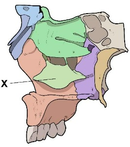
A Concha nasal inferior.
B Lâmina cribriforme do osso etmoide.
C Crista esfenoidal do osso esfenoide.
D Osso lacrimal.
E Osso palatino.
Questão 42 · Ciclo Básico Graduação em Medicina · 4000201311A anatomia do nariz é composta por uma interconexão de vários ossos e cartilagens para a composição das paredes da cavidade nasal. Qual é o processo ósseo indicado na imagem do septo nasal? Figura 20: Ossos do septo nasal. Fonte: Estratégia Imagens.
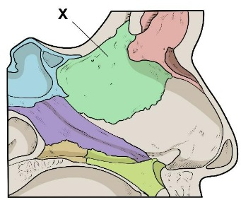
A Lâmina perpendicular do osso etmoide.
B Crista esfenoidal do osso esfenoide.
C Lâmina cribriforme do osso etmoide.
D Concha nasal inferior.
E Vômer.
Questão 43 · Ciclo Básico Graduação em Medicina · 4000201310A anatomia do nariz é composta por uma interconexão de vários ossos e cartilagens para a composição das paredes da cavidade nasal. Qual é o osso indicado na imagem do septo nasal?
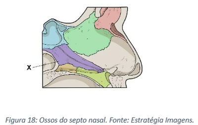
A Lâmina perpendicular do osso etmoide.
B Crista esfenoidal do osso esfenoide.
C Lâmina cribiforme do osso etmoide.
D Concha nasal inferior.
E Vômer.
Questão 44 · Ciclo Básico Graduação em Medicina · 4000201309A audição é uma função que depende de várias estruturas, tanto neurossensoriais quanto encefálicas, o que permite vários níveis de falha que devem ser pensados pelo médico ao lidar com uma perda auditiva. Qual é o nervo que leva a informação sensorial do órgão espiral de Corti para o sistema nervoso central?
A Nervo coclear.
B Nervo vestibular.
C Nervo vago (NC X).
D Nervo facial (NC VII).
E Nervo corda do tímpano.
Questão 45 · Ciclo Básico Graduação em Medicina · 4000201308Qual dos seguintes componentes celulares ou de matriz não está associado à percepção de sons na cóclea?
A Células ciliares sensitivas.
B Células falângicas.
C Células pilares.
D Membrana tectórica.
E Cúpula.
Questão 46 · Ciclo Básico Graduação em Medicina · 4000201307Uma importante propriedade das ondas mecânicas é a sua capacidade de propagação em diferentes meios, tanto gasosos, líquidos ou sólidos. Essa característica é aproveitada na orelha, o que permite a mudança do meio de vibração para que sejam percebidas pelas estruturas sensoriais. Qual é o principal meio de propagação nas orelhas média e interna, respectivamente?
A Ar e sólido.
B Ar, somente.
C Sólido e líquido.
D Líquido e sólido.
E Líquido, somente.
Questão 47 · Ciclo Básico Graduação em Medicina · 4000201306A propagação de ondas mecânicas na estrutura sensorial da orelha envolve a transição entre diferentes meios, o que ocorre entre as porções externa, média e interna do órgão. Qual é a estrutura que permite a entrada do estímulo na orelha interna e onde ele se propaga?
A A janela oval permite a passagem da vibração dos ossículos para a rampa vestibular com a perilinfa.
B A janela redonda permite a passagem da vibração dos ossículos para a rampa timpânica com a perilinfa.
C A membrana timpânica secundária permite a passagem da vibração dos ossículos para a rampa vestibular com a endolinfa.
D A membrana timpânica secundária permite a passagem da vibração dos ossículos para a rampa timpânica com a perilinfa.
E A janela oval permite a passagem da vibração dos ossículos para a rampa vestibular com a endolinfa.
Questão 48 · Ciclo Básico Graduação em Medicina · 4000201305A audição é um processo complexo de um aparelho de percepção na das ondas sonoras propagadas pelo ar, que envolve a sua conversão entre diferentes meios para a percepção por células sensitivas ciliadas. Com a idade, ocorre a degeneração progressiva das estruturas, o que pode ocasionar perda de função. Qual é a primeira faixa de frequência afetada na presbiacusia e onde é a sua sensibilidade?
A Sons com frequência aguda, percebidos na base da cóclea.
B Sons com frequência grave, percebidos na base da cóclea.
C Sons com frequência intermediária, percebidos na base da cóclea.
D Sons com frequência aguda, percebidos no ápice da cóclea.
E Sons com frequência grave, percebidos no ápice da cóclea.
Questão 49 · Ciclo Básico Graduação em Medicina · 4000201304Os otólitos são pequenos cristais compostos de carbonato de cálcio e proteínas presentes siologicamente em uma estrutura na orelha interna, mas que podem se desprender e causar o quadro de vertigem posicional paroxística benigna (VPPB), conhecido popularmente como labirintite. Onde eles estão presentes fisiologicamente?
A Órgão espiral de Corti no ducto coclear.
B Membrana basilar do ducto coclear.
C Cristas ampulares nos ductos semicirculares.
D Máculas do utrículo e sáculo.
E Distribuídos na endolinfa dos ductos semicirculares.
Questão 50 · Ciclo Básico Graduação em Medicina · 4000201303Patologicamente, pode ocorrer o desprendimento de otólitos no mácula do utrículo que atuam para a sua sensibilidade e podem deslocar-se para os ductos semicirculares, causando a vertigem posicional paroxística benigna, mais conhecida popularmente como labirintite. Qual é o ducto semicircular que é o mais acometido clinicamente em prevalência em decorrência de sua anatomia e qual é a sua estrutura de sensibilidade?
A Posterior e mácula.
B Lateral e cristas ampulares.
C Anterior e órgão espiral de Corti.
D Posterior e cristas ampulares.
E Lateral e mácula.
Questão 51 · Ciclo Básico Graduação em Medicina · 4000201302A vertigem posicional paroxística benigna (VPPB) é uma patologia importante relacionada ao desprendimento de pequenos cristais da mácula do utrículo – estrutura responsável pela sensibilidade de movimentos lineares da cabeça –. Eles se direcionam para os ductos semicirculares e podem causar suas alterações. Como é o funcionamento das cristas ampulares como órgão sensorial?
A Há uma massa gelatinosa de glicoproteínas e polissacarídeos, a cúpula, que recobre o epitélio sensitivo e ela é a responsável pelo atrito e deslocamento dos estereocílios no movimento.
B O movimento é detectado diretamente por vibrações no líquido da endolinfa, que são capazes de causarem movimentações nos estereocílios.
C O movimento é detectado a partir do deslocamento dos estereocílios que causa despolarização independente da direção ou sentido de deflexão.
D A deflexão dos estereocílios ocorre apenas em um sentido, ou seja, somente há sinalização do ducto semicircular em um tipo de movimento angular.
E O funcionamento dos cílios é por meio da deflexão em contato direto com os otólitos dispersos no meio líquido da endolinfa.
Questão 52 · Ciclo Básico Graduação em Medicina · 4000201301A sensibilidade da orelha interna ocorre a partir de células ciliadas especializadas capazes de detectarem o som e movimentos da cabeça. Assinale a alternativa correta acerca de seu funcionamento.
A As células ciliadas se despolarizam quando seus cílios são movimentados pela perilinfa em que estão inseridos, mas não há distinção do sentido do movimento.
B As células são estereociliadas que são capazes de detectarem o sentido do movimento porque há um cinocílio que define a polaridade e assimetria de sua distribuição.
C Há um corpúsculo basal na base de todos os estereocílios, o que os permite a detecção do sentido do movimento.
D Os estereocílios estão presentes apenas nas células ciliadas vestibulares, não sendo utilizadas na percepção do som.
E A sinalização desencadeada pelos estereocílios quando se movimentam é apenas a de hiperpolarização da célula, o que sinaliza para a diminuição da sinapse com os neurônios aferentes.
Questão 53 · Ciclo Básico Graduação em Medicina · 4000201300Há três tipos de regiões sensoriais presentes no labirinto membranoso que são responsáveis pela percepção de diferentes situações. Assinale a alternativa que contenha os termos, em ordem, que completem o seguinte texto: “A região sensitiva dos ductos semicirculares é _______________, que detecta a aceleração angular da cabeça. A do utrículo e do sáculo são ____________________, que detectam a posição e o movimento linear da cabeça. A do ducto coclear é _________________, que atua como receptor de som.”
A Crista ampular, máculas e órgão espiral de Corti.
B Modíolo, cristas ampulares e órgão espiral de Corti.
C Máculas, órgãos espirais de Corti e janela oval.
D Órgão espiral de Corti, cristas ampulares e mácula.
E Crista ampular, mácula e janela oval.
Questão 54 · Ciclo Básico Graduação em Medicina · 4000201299Muitas patologias são associadas a alterações em componentes do labirinto, tanto vestibular e coclear, que apresentam contribuições importantes na interação do homem com o ambiente. O que é o labirinto ósseo?
A É um osso esponjoso na orelha interna em um formato complexo de espirais e semicírculos interligados preenchido por endolinfa.
B É um osso esponjoso na orelha média em formato complexo de espirais e semicírculos interligados preenchido por endolinfa.
C Cavidade óssea na orelha interna em formatos complexos de espirais e semicírculos interligados preenchido por perilinfa.
D Cavidade óssea na orelha média em formatos complexos de espirais e semicírculos interligados preenchido por perilinfa.
E Série de sacos e ductos comunicantes revestidos por uma membrana que contém endolinfa.
Questão 55 · Ciclo Básico Graduação em Medicina · 4000201298O labirinto membranoso da orelha interna é preenchido por endolinfa e é uma importante forma de transmissão de ondas mecânicas para a sensibilidade a sons, mas também exerce papel importante na detecção de movimentos da cabeça de acordo com a movimentação da linfa. Qual é o componente do labirinto membranoso que se conecta diretamente aos canais semicirculares e apresenta uma área sensitiva de detecção de velocidade linear?
A Ductos semicirculares.
B Ducto coclear.
C Utrículo.
D Sáculo.
E Rampa do vestíbulo.
Questão 56 · Ciclo Básico Graduação em Medicina · 4000201297O labirinto da orelha interna é importante para a função de audição e de equilíbrio, em decorrência da presença de órgãos sensoriais especializados em um sistema complexo de líquidos que movimentam os cílios de células ciliadas. Qual é o componente do labirinto membranoso responsável pela sensibilidade do som?
A Ductos semicirculares.
B Ducto coclear.
C Utrículo.
D Sáculo.
E Rampa do vestíbulo.
Questão 57 · Ciclo Básico Graduação em Medicina · 4000201296O labirinto da orelha interna é muito importante tanto para as funções de audição quanto de equilíbrio, em decorrência do papel muito importante desse órgão de detectar a velocidade e aceleração da cabeça. Qual é o componente do labirinto membranoso responsável pela sensibilidade da aceleração angular da cabeça?
A Ductos semicirculares.
B Ducto coclear.
C Utrículo.
D Sáculo.
E Cápsula ótica.
Questão 58 · Ciclo Básico Graduação em Medicina · 4000201295Alguns indivíduos possuem hiperacusia relacionada a alterações no músculo estapédio. Ele está presente no interior da cavidade timpânica e insere-se em um dos ossículos. Qual é o ossículo em que ele se insere e qual é a sua função?
A Insere-se no estribo para diminuir a sua amplitude oscilatória e, então, a transmissão de som.
B Insere-se no martelo para aumentar a sua amplitude oscilatória e, então, a transmissão do som.
C Insere-se na bigorna para diminuir a sua amplitude oscilatória e, então, a transmissão do som.
D Insere-se no estribo para aumentar a sua amplitude oscilatória e, então, diminuir a transmissão do som.
E Insere-se na bigorna para aumentar a sua amplitude oscilatória e, então, diminuir a transmissão do som.
Questão 59 · Ciclo Básico Graduação em Medicina · 4000201294O conhecimento da disposição dos ossículos no interior da orelha média é importante para compreender o processo de transmissão das ondas sonoras para o órgão sensitivo na orelha interna. Qual é o ossículo responsável direto pela transmissão à orelha interna e qual é a estrutura com qual ele tem contato para realizá-la?
A Estribo e membrana timpânica primária.
B Estribo e janela do vestíbulo.
C Bigorna e janela do vestíbulo.
D Bigorna e membrana timpânica primária.
E Martelo e janela do vestíbulo.
Questão 60 · Ciclo Básico Graduação em Medicina · 4000201293O antro mastoideo é uma cavidade no processo mastoideo do osso temporal para o qual se abrem as células mastoideas e que está recoberto interiormente por mucosa. Mantém uma relação anatômica importante com a cavidade timpânica da orelha média. Por isso, pode ser acometido e gerar uma mastoidite concomitante à otite média. Qual é o seu posicionamento com relação a essa cavidade?
A A abertura para o antro está no assoalho da cavidade timpânica, apresentando relação com o bulbo superior da veia jugular interna.
B A abertura para o antro com as células mastoideas está presente na parede medial, aproximando-os das estruturas labirínticas.
C O ádito do antro está na parede lateral da cavidade timpânica, próximo aos ossículos da audição.
D O ádito do antro está na parede posterior da cavidade timpânica, próximo ao canal do nervo facial.
E O ádito do antro está na parede anterior da cavidade timpânica, próximo à abertura da tuba auditiva.
Questão 61 · Anatomia do Sistema Urinário · 4000201292R.J., um homem de 75 anos, apresenta-se na clínica com sintomas de micção frequente, noctúria(intensa necessidade de se levantar para urinar durante a noite) e disúria(dor ao urinar). Uma avaliação inicial sugere que R.J. possa ter um problema vascular envolvendo a bexiga. Sabendo que a bexiga recebe seu suprimento sanguíneo de várias fontes, qual das seguintes a rmações é a mais correta?
A A artéria vesical superior, um ramo da artéria ilíaca interna, é a principal fonte de suprimento sanguíneo para a bexiga.
B A artéria renal, um ramo da aorta abdominal, fornece a maior parte do suprimento sanguíneo para a bexiga.
C A artéria pudenda interna, um ramo da artéria ilíaca interna, é a principal fonte de suprimento sanguíneo para a bexiga.
D A artéria uterina, em mulheres, ou a artéria vesical inferior, em homens, fornece a maior parte do suprimento sanguíneo para a bexiga.
Questão 62 · Anatomia do Sistema Urinário · 4000201291R.L., um homem de 57 anos, apresenta-se ao consultório com di culdade em iniciar a micção e sente que não esvazia completamente a bexiga. Você suspeita de uma condição que envolva a inervação da bexiga. Sabendo que a bexiga é inervada tanto pelo sistema nervoso autônomo como pelo sistema nervoso somático, qual das seguintes afirmações é a mais correta?
A Uma lesão no nervo pudendo pode afetar a capacidade de R.L. de iniciar a micção, pois esse nervo fornece a inervação simpática responsável pelo relaxamento do esfíncter interno da uretra e contração da bexiga.
B Uma lesão nos nervos esplâncnicos sacrais (S2-S4) pode afetar a capacidade de R.L. de reter a urina, pois esses nervos fornecem a inervação somática responsável pelo controle voluntário do esfíncter externo da uretra.
C Uma lesão nos nervos lombares (L1-L2) pode afetar a capacidade de R.L. de iniciar a micção, pois esses nervos fornecem a inervação parassimpática responsável pelo relaxamento do esfíncter interno da uretra e contração da bexiga.
D Uma lesão no nervo pudendo pode afetar a capacidade de R.L. de controlar voluntariamente a micção, pois esse nervo fornece a inervação somática responsável pelo controle do esfíncter externo da uretra.
Questão 63 · Anatomia do Sistema Urinário · 4000201290M.J., um homem de 50 anos, chega ao consultório reclamando de di culdade para urinar. Após a consulta inicial e exames, é diagnosticado com uma lesão do nervo pélvico. Sabendo que a uretra recebe inervação do sistema nervoso autônomo e somático, qual das seguintes afirmações é a mais correta?
A Uma lesão no nervo pélvico não afetará a capacidade de M.J. de iniciar a micção, pois a inervação simpática da uretra é responsável pela iniciação da micção.
B Uma lesão no nervo pélvico pode interferir na capacidade de M.J. de iniciar a micção, pois a inervação parassimpática da uretra é responsável pela contração do músculo detrusor da bexiga, o que permite a expulsão da urina armazenada na bexiga.
C Uma lesão no nervo pélvico não afetará a capacidade de M.J. de controlar voluntariamente a micção, pois a inervação somática da uretra é responsável pelo controle voluntário da micção.
D Uma lesão no nervo pélvico pode interferir na capacidade de M.J. de controlar voluntariamente a micção, pois a inervação parassimpática da uretra é responsável pelo controle voluntário da micção.
Questão 64 · Anatomia do Sistema Urinário · 4000201289L.R., um homem de 55 anos, chega ao seu consultório queixando-se de dor lombar intermitente que irradia para a região inguinal. Após a avaliação, você suspeita de cólica renal, possivelmente devido a um cálculo no ureter. Sabendo que a dor ureteral é frequentemente causada pela distensão do ureter e que esta é percebida devido à sua inervação, qual das seguintes a rmações sobre a inervação do ureter é a mais correta?
A A inervação do ureter é exclusivamente parassimpática, com a maior parte da inervação vindo dos nervos esplâncnicos sacrais.
B A inervação do ureter é exclusivamente simpática, com a maior parte da inervação vindo dos nervos esplâncnicos lombares.
C A inervação do ureter é tanto simpática quanto parassimpática, com a inervação simpática vindo principalmente dos nervos esplâncnicos lombares e a inervação parassimpática vindo principalmente dos nervos esplâncnicos sacrais.
D O ureter não tem inervação direta e a dor é percebida somente quando a distensão ureteral causa dor referida nos órgãos adjacentes.
Questão 65 · Anatomia do Sistema Urinário · 4000201288J.F., um homem de 58 anos, chega ao consultório reclamando de dor na região lombar e nas costas, irradiando para a parte inferior do abdômen. Um exame de ultrassom revela a presença de uma pedra no ureter, causando obstrução e hidronefrose (dilatação da pélvis e dos cálices do rim). Com base em seu conhecimento da vascularização do ureter, qual das seguintes a rmações é a mais correta?
A A principal fonte de suprimento sanguíneo para o ureter é a artéria ilíaca interna, portanto, a dor pode estar relacionada à pressão da pedra sobre essa artéria.
B A principal fonte de suprimento sanguíneo para o ureter é a artéria renal, portanto, a dor pode estar relacionada à pressão da pedra sobre essa artéria.
C A vascularização do ureter é segmentar, originada de várias fontes, incluindo as artérias renal, gonadal (testicular em homens e ovariana em mulheres) e as artérias ilíacas internas e externas, portanto, a dor pode ser causada pela obstrução da drenagem venosa em qualquer um desses segmentos.
D O ureter não possui suprimento sanguíneo próprio e, em vez disso, depende exclusivamente da drenagem venosa para nutrir suas paredes, portanto, a dor pode ser causada pela obstrução dessa drenagem.
Questão 66 · Anatomia do Sistema Urinário · 4000201287M.G., um homem de 52 anos, chega ao consultório queixando-se de dor no anco esquerdo que se irradia para a região inguinal. Você suspeita de uma condição renal e sabe que os rins recebem inervação de diferentes fontes. Sabendo que o sistema nervoso desempenha um papel crucial na regulação das funções renais, qual das seguintes afirmações é a mais correta?
A Os rins recebem inervação exclusivamente do nervo vago, portanto uma lesão neste nervo poderia ser responsável pelos sintomas de M.G.
B Os rins recebem inervação predominantemente do sistema nervoso parassimpático através do plexo renal, portanto uma disfunção neste sistema poderia ser responsável pelos sintomas de M.G.
C Os rins recebem inervação predominantemente do sistema nervoso simpático através do plexo renal, portanto uma disfunção neste sistema poderia ser responsável pelos sintomas de M.G.
D Os rins recebem inervação exclusivamente do sistema nervoso entérico, portanto uma lesão neste sistema poderia ser responsável pelos sintomas de M.G.
Questão 67 · Anatomia do Sistema Urinário · 4000201286P.S., uma mulher de 45 anos, chega ao consultório com histórico de hipertensão mal controlada. Após uma avaliação minuciosa, você suspeita que uma possível causa para a hipertensão de P.S. seja uma estenose (estreitamento) da artéria renal. Você decide então encaminhá-la para uma angiogra a renal para confirmar seu diagnóstico. Antes do procedimento, você decide revisar a anatomia vascular renal para orientar sua interpretação dos resultados. Considerando as diferenças estruturais entre as artérias renais e as veias renais, qual das seguintes afirmações é a mais correta?
A A artéria renal esquerda é mais curta que a artéria renal direita, enquanto a veia renal esquerda é mais curta que a veia renal direita.
B A artéria renal esquerda é mais longa que a artéria renal direita, enquanto a veia renal esquerda é mais longa que a veia renal direita.
C A artéria renal esquerda é mais longa que a artéria renal direita, enquanto a veia renal esquerda é mais curta que a veia renal direita.
D A artéria renal esquerda é mais curta que a artéria renal direita, enquanto a veia renal esquerda é mais longa que a veia renal direita.
Questão 68 · Farmacocinética Absorção Distribuição Metabolismo e Excreção · 4000201285J.D., 65 anos, sexo masculino, diagnosticado com insu ciência renal crônica, faz uso de um medicamento específico para controlar a hipertensão arterial. Durante a consulta, o médico avalia a possibilidade de ajustar a dosagem do medicamento. No que diz respeito à excreção do fármaco no organismo de J.D., assinale a alternativa correta:
A A insuficiência renal crônica de J.D. não deve afetar a excreção do fármaco, portanto, não é necessário ajustar a dosagem.
B A excreção do fármaco no organismo de J.D. pode ser acelerada devido à insuficiência renal, o que pode requerer um aumento na dosagem do medicamento.
C A insuficiência renal crônica pode levar a uma excreção reduzida do fármaco, potencialmente resultando em acúmulo do medicamento no organismo de J.D., o que pode requerer um ajuste na dosagem.
D A excreção do fármaco ocorre principalmente através do fígado, portanto, a insuficiência renal crônica de J.D. não deve afetar a excreção do medicamento.
Questão 69 · Farmacocinética Absorção Distribuição Metabolismo e Excreção · 4000201284J.R., um paciente masculino de 45 anos, está recebendo um medicamento para controlar sua pressão arterial elevada. O fármaco em questão é metabolizado no fígado, passando por duas fases distintas de metabolização. No que diz respeito à metabolização de fármacos, assinale a alternativa correta:
A A Fase I de metabolização envolve processos de conjugação, que geralmente tornam o fármaco mais solúvel em água e, portanto, mais fácil de ser excretado.
B A Fase II é uma etapa não sintética que pode envolver reações como oxidação, redução e hidrólise.
C A Fase I geralmente envolve a alteração química do fármaco por reações como oxidação, redução e hidrólise, enquanto a Fase II envolve a conjugação do fármaco ou de seus metabólitos com compostos endógenos para formar um produto mais polar e, portanto, mais facilmente excretado.
D As Fases I e II de metabolização não têm relação com a excreção do fármaco e ocorrem somente no intestino.
Questão 70 · Farmacocinética Absorção Distribuição Metabolismo e Excreção · 4000201283P.M., 53 anos, sexo masculino, recentemente diagnosticado com hipertensão, foi orientado por você, seu cardiologista, a usar um medicamento anti-hipertensivo diariamente. Durante a consulta de acompanhamento, P.M. pergunta sobre como o medicamento é processado pelo corpo. Você decide explicar a ele sobre a metabolização de medicamentos. Assinale a alternativa que melhor explica a metabolização de um fármaco:
A Metabolização é o processo pelo qual o corpo excreta um fármaco, eliminando-o do corpo através dos rins.
B Metabolização é o processo pelo qual o corpo absorve um fármaco, movendo-o do local de administração para a corrente sanguínea.
C Metabolização é o processo pelo qual o corpo altera a estrutura química de um fármaco, geralmente tornando-o mais solúvel em água e mais fácil de ser excretado.
D Metabolização é o processo pelo qual o corpo identifica um fármaco como uma substância estranha e produz anticorpos para combatê-lo.
Questão 71 · Farmacocinética Absorção Distribuição Metabolismo e Excreção · 4000201282A.P., 58 anos, sexo masculino, com histórico de diabetes tipo 2, apresenta-se no consultório com um episódio recente de dor no peito. Exames subsequentes confirmam um infarto do miocárdio. O cardiologista prescreve um medicamento antiplaquetário para reduzir o risco de outro evento cardíaco. A.P. expressa preocupação em relação à velocidade com que o medicamento chegará ao seu coração após a ingestão. Sobre a distribuição do medicamento antiplaquetário no corpo de A.P., assinale a alternativa correta:
A A distribuição do medicamento começa imediatamente após a ingestão, alcançando o coração e o sistema circulatório em segundos.
B O medicamento é distribuído uniformemente por todo o corpo, independentemente da necessidade terapêutica do paciente.
C A distribuição do medicamento depende de vários fatores, incluindo fluxo sanguíneo, afinidade do medicamento pelos tecidos e capacidade do medicamento de atravessar as membranas celulares.
D A distribuição do medicamento é um processo aleatório e imprevisível, tornando impossível determinar quando o medicamento atingirá o coração.
Questão 72 · Farmacocinética Absorção Distribuição Metabolismo e Excreção · 4000201281J.L., 67 anos, sexo masculino, foi diagnosticado recentemente com hipertensão e seu médico prescreveu um novo medicamento anti-hipertensivo, o qual deve ser tomado via oral duas vezes ao dia. J.L. vem à sua consulta e pergunta por que ele não pode simplesmente tomar uma injeção uma vez ao mês, em vez de ter que lembrar de tomar o comprimido duas vezes ao dia. Ele está especialmente interessado em saber por que o medicamento oral não funciona imediatamente após a ingestão. Sobre a absorção do medicamento anti-hipertensivo no organismo de J.L., assinale a alternativa correta:
A A absorção do medicamento acontece imediatamente após a ingestão e a concentração do fármaco no sangue de J.L. aumenta imediatamente para o pico.
B A absorção do medicamento ocorre no estômago de J.L. imediatamente após a ingestão, mas a quantidade de fármaco no sangue de J.L. não aumenta até que o medicamento seja completamente absorvido.
C A absorção do medicamento começa no trato gastrointestinal de J.L. após a ingestão, com a concentração do fármaco no sangue aumentando gradualmente até atingir um pico.
D A absorção do medicamento não começa até que o fármaco chegue ao fígado de J.L., onde é metabolizado e depois lançado na corrente sanguínea.
Questão 73 · Farmacocinética Absorção Distribuição Metabolismo e Excreção · 4000201280M.C., 45 anos, sexo masculino, foi diagnosticado com hipertensão arterial sistêmica. Seu médico prescreveu um medicamento anti- hipertensivo que deve ser tomado diariamente. Depois de tomar o medicamento regularmente por um mês, M.C. retorna ao consultório para uma avaliação de rotina. Seu médico verifica que a pressão arterial de M.C. está controlada e decide manter a mesma medicação e dosagem. Com base nesse cenário e em seus conhecimentos sobre farmacocinética, assinale a alternativa correta:
A A eficácia do medicamento na redução da pressão arterial de M.C. está diretamente relacionada com a biodisponibilidade do medicamento.
B A concentração do medicamento no sangue de M.C. deve permanecer constante, independentemente de quanto tempo ele tome a medicação.
C M.C. está tomando o medicamento há muito tempo para que a meia-vida do medicamento seja relevante para o tratamento.
D Se M.C. parar de tomar o medicamento de repente, não haverá nenhum efeito residual do medicamento em seu corpo.
Questão 74 · Farmacocinética Absorção Distribuição Metabolismo e Excreção · 4000201279L.M., 58 anos, sexo feminino, com histórico de diabetes tipo 2 e hipertensão, vem ao consultório para revisão de seus medicamentos. Atualmente, L.M. está tomando metformina 500mg duas vezes ao dia e losartana 50mg uma vez ao dia. Recentemente, ela vem relatando episódios de tontura e cansaço. L.M. expressa preocupação sobre se os medicamentos estão funcionando corretamente. Com relação à farmacocinética dos medicamentos que L.M. está tomando, assinale a alternativa correta:
A A farmacocinética se refere ao estudo dos efeitos de um medicamento no corpo, incluindo seu mecanismo de ação.
B A farmacocinética se refere ao estudo de como o corpo afeta um medicamento, incluindo processos de absorção, distribuição, metabolismo e excreção.
C A farmacocinética se refere apenas ao estudo da excreção de um medicamento, o que poderia explicar os sintomas de L.M.
D A farmacocinética se refere apenas ao estudo de como um medicamento é absorvido pelo corpo, o que não seria relevante para a situação de L.M.
Questão 75 · Ciclo Básico Graduação em Medicina · 4000201278Uma das estruturas mais importantes para a patogênese da otite média é a tuba auditiva. Qual é a sua principal função?
A Transmissão das ondas mecânicas da membrana timpânica à cóclea.
B Manutenção da pressão na orelha média e via de drenagem de líquidos.
C Diminuição da amplitude oscilatória do estribo.
D Detecção de alterações no posicionamento da cabeça de acordo com o deslocamento de fluidos em seu interior.
E Transmissão das ondas sonoras do pavilhão auditivo até a membrana timpânica.
Questão 76 · Ciclo Básico Graduação em Medicina · 4000201277A diferenciação entre os compartimentos auriculares é importante clinicamente porque as suas manifestações, patogênese e estruturas afetadas são diferentes. Qual das seguintes estruturas não está presente na orelha média?
A Nervo corda do tímpano.
B Músculo estapédio.
C Ossículos da audição.
D Músculo tensor do tímpano.
E Cóclea.
Questão 77 · Ciclo Básico Graduação em Medicina · 4000201276No exame otoscópico, é possível visualizar a interface entre a orelha externa e média, que constitui a membrana timpânica. Qual é o ossículo que ca em maior contato com essa estrutura e a projeta com alterações na concavidade e qual é o sentido normal que ela aponta do cabo à cabeça?
A Martelo e anterossuperior.
B Bigorna e anterossuperior.
C Estribo e anteroinferior.
D Martelo e anteroinferior.
E Bigorna e posterossuperior.
Revisar: possível letra faltando em enunciado
Questão 78 · Ciclo Básico Graduação em Medicina · 4000201275No exame da orelha externa, a identi cação de alterações no pavilhão auricular é descrita conforme a localização da lesão. Há termos que se referem às estruturas do pavilhão. Qual é a indicada abaixo na imagem por X? Pavilhão auricular. Fonte: Estratégia Imagens.
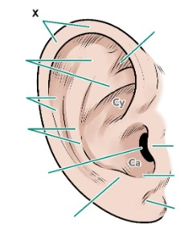
A Hélice.
B Anti-hélice.
C Trago.
D Lóbulo.
E Meato acústico externo.
Questão 79 · Ciclo Básico Graduação em Medicina · 4000201274No exame da orelha externa, a identi cação de alterações no pavilhão auricular é descrita conforme a localização da lesão. Há termos que se referem às estruturas do pavilhão. Qual é a indicada abaixo por X na imagem? Pavilhão auricular. Fonte: Estratégia Imagens.
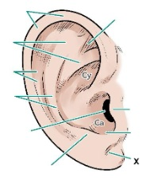
A Hélice.
B Anti-hélice.
C Trago.
D Lóbulo.
E Meato acústico externo.
Questão 80 · Ciclo Básico Graduação em Medicina · 4000201273A conjuntiva é uma importante membrana mucosa que reveste exteriormente o olho e a superfície interna das pálpebras e garante proteção e um funcionamento adequado da estrutura. É a estrutura ocular que mais frequentemente sofre de in amação e infecções, caracterizando os quadros de conjuntivite. Qual é o tipo de epitélio apresentado?
A Epitélio simples colunar com células caliciformes.
B Epitélio simples colunar com células ciliares.
C Epitélio estratificado pavimentoso não-queratinizado.
D Epitélio estratificado colunar com células caliciformes.
E Epitélio estratificado colunar com células ciliares.
Questão 81 · Ciclo Básico Graduação em Medicina · 4000201272O cristalino é considerado a lente do olho e alterações em sua elasticidade e estrutura podem levar a doenças, como a presbiopia e a catarata. De qual tecido embrionário o cristalino se origina e o que é a sua cápsula?
A Mesoderma embrionário e lâmina basal espessa.
B Neuroectoderma e lâmina basal espessa.
C Ectoderma superficial e camada de células epiteliais cuboides e fibrosas.
D Neuroectoderma e camada de células epiteliais cuboides e fibrosas.
E Ectoderma superficial e lâmina basal espessa.
Questão 82 · Ciclo Básico Graduação em Medicina · 4000201271Uma das causas mais comuns de cegueira é a degeneração macular relacionada à idade (DMRI), bem associado a componentes genéticos e ambientais que progridem para perda de visão central. A área afetada por essa patologia é a mácula lútea. Qual é essa estrutura no olho?
A Depressão pequena e rasa na retina no polo posterior do olho associada à acuidade visual.
B Local de convergência dos axônios na retina das células ganglionares para a formação do nervo óptico projetado do bulbo.
C Área da retina de cor amarelada que circunda a fóvea associada ao processamento da sinalização das células fotorreceptoras da fóvea.
D Túnica vascular associada à retina nas porções mais posteriores do olho, responsável pela irrigação das células fotorreceptoras.
E Túnica fibrosa associada à retina nas porções mais posteriores do olho, responsável pela manutenção da forma do olho.
Questão 83 · Ciclo Básico Graduação em Medicina · 4000201270Uma das possíveis afecções que podem ocorrer e potencialmente causar cegueira é o descolamento da retina. Caso não seja solucionada rapidamente, a área descolada pode sofrer necrose com consequente perda dos circuitos neuronais que levam à inatividade da área afetada. Por que pode ocorrer facilmente esse descolamento em comparação com outros tecidos?
A Há duas camadas epiteliais na retina originadas a partir do cálice óptico que tinham um lúmen preexistente entre elas, o que pode auxiliar no estabelecimento desse espaço.
B A luz do epitélio retiniano é o humor aquoso, para o qual está direcionado, mas há uma fragilidade na associação do epitélio ao estroma em decorrência da ausência de lâmina basal.
C Há duas camadas epiteliais na retina originadas a partir da vesícula do cristalino, com um lúmen preexistente entre elas, o que pode auxiliar no reestabelecimento desse espaço.
D Logo interiormente à camada neural da retina, existe uma camada de tecido conjuntivo frouxo com poucas fibras que pode sofrer a tração e criar um espaço.
E Abaixo da camada de células epiteliais pigmentadas da retina, existe uma camada de tecido conjuntivo frouxo com poucas fibras que pode sofrer a tração e criar um espaço.
Questão 84 · Ciclo Básico Graduação em Medicina · 4000201269O daltonismo é uma doença que cursa com a perda da diferenciação de algumas cores em decorrência de alterações na sensibilidade das células fotorreceptores. Quais são as células da retina associadas à percepção das cores e acuidade visual e em qual camada elas estão localizadas?
A Cones e camada neural da retina.
B Bastonetes e camada neural da retina.
C Cones e epitélio pigmentar da retina.
D Bastonetes e epitélio pigmentar da retina.
E Células ganglionares e epitélio pigmentar da retina.
Questão 85 · Ciclo Básico Graduação em Medicina · 4000201268A histologia da íris é organizada de tal forma que há duas camadas epiteliais adjacentes em sua superfície posterior com lâminas basais em sentidos opostos. A camada mais anterior é o mioepitélio pigmentar anterior, com projeções basais orientadas radialmente e associadas entre si para a formação de uma unidade contráctil. Qual é a função dessas células?
A Realizar a midríase, aumento do diâmetro pupilar, sob sinalização do sistema nervoso parassimpático.
B Realizar a miose, aumento do diâmetro pupilar, sob sinalização do sistema nervoso simpático.
C Realizar a midríase, aumento do diâmetro pupilar, sob sinalização do sistema nervoso simpático.
D Realizar a miose, diminuição do diâmetro pupilar, sob sinalização do sistema nervoso parassimpático.
E Realizar a midríase, diminuição do diâmetro pupilar, sob sinalização do sistema nervoso simpático.
Questão 86 · Ciclo Básico Graduação em Medicina · 4000201267O glaucoma é uma das afecções oftalmológicas mais significativas que cursa com redução da acuidade visual e pode progredir para cegueira se não tratado adequadamente. Um dos tipos é o agudo, de história aguda de dor súbita, redução da acuidade visual, fotofobia e visão de halos coloridos. Concomitantemente, há náuseas, vômitos e cefaleia como sintomas de outros órgãos. Essa patologia ocorre porque há obstrução de uma das vias de drenagem do conteúdo da câmara anterior do olho, o que resulta em aumento da pressão intraocular (PIO). Qual é esse conteúdo e onde está localizada essa estrutura de drenagem?
A Humor vítreo e ângulo iridocorneal.
B Humor aquoso e processos ciliares.
C Humor aquoso e ângulo iridocorneal.
D Humor vítreo e fibras zonulares.
E Humor aquoso e epitélio pigmentado da íris.
Questão 87 · Ciclo Básico Graduação em Medicina · 4000201266Qual é a estrutura que permite ao olho movimentar-se livremente na órbita sem que ocorra aderência ao tecido adiposo periorbital circundante?
A Espaço episcleral.
B Membrana conjuntival.
C Cápsula de Tenon.
D Membrana de Descemet.
E Câmara anterior do olho.
Questão 88 · Ciclo Básico Graduação em Medicina · 4000201265Assinale as alternativa que contenha as afirmativas corretas acerca da histologia da córnea. I. A membrana de Bowman é a membrana basal anterior da córnea, atuando como barreira física que não se regenera em lesões. II. A membrana de Descemet é a continuação da de Bowman logo abaixo da conjuntiva, tornando-se espessada e adquirindo a capacidade de regeneração. III. O estroma da córnea apresenta fibras em lamelas ortogonais às adjacentes, o que confere transparência. IV. O epitélio da córnea é estrati cado pavimentoso não-queratinizado, com as suas células-tronco originadas do limbo corneoescleral. V. O estroma da córnea apresenta broblastos e melanócitos, responsáveis pela síntese da matriz colágena organizada em bras, no tecido pouco vascularizado.
A I, II e III.
B I, II, III e IV.
C I, II e V.
D III, IV e V.
E I, III e IV.
Revisar: possível letra faltando em enunciado
Questão 89 · Ciclo Básico Graduação em Medicina · 4000201264Complete o seguinte texto com os termos corretos: “O estroma da córnea é a sua camada mais espessa e é _______________, as suas fibras estão organizadas em feixes ______________ às lamelas adjacentes, o que confere transparência.”
A Avascular e ortogonais.
B Avascular e oblíquos.
C Vascular e ortogonais.
D Vascular e irregulares.
E Avascular e irregulares.
Questão 90 · Ciclo Básico Graduação em Medicina · 4000201263Diferentemente de outros tecidos, o epitélio da córnea, mesmo exposto continuamente aos raios ultravioletas sem a proteção da melanina, tem uma baixa incidência de câncer. As células desse tecido apresentam ferritina nuclear uma proteína que armazena ferro e diminui o dano ao material genético por radicais livres. Qual é o tipo de epitélio que recobre a córnea e onde está localizado o seu sítio de células-tronco?
A Epitélio estratificado pavimentoso não-queratinizado e centro da córnea.
B Epitélio simples cuboide e centro da córnea.
C Epitélio simples colunar e junção corneoescleral.
D Epitélio estratificado pavimentoso não-queratinizado e junção corneoescleral.
E Epitélio estratificado pavimentoso queratinizado e junção corneoescleral.
Questão 91 · Ciclo Básico Graduação em Medicina · 4000201262Complete o seguinte texto com os termos que podem ser inseridos e formam uma afirmativa correta: “A camada _______ do cálice óptico, formado do __________, é a responsável pela formação do ______________.”
A Externa, neuroectoderma e epitélio pigmentar da retina.
B Externa, ectoderma superficial e epitélio pigmentar da retina.
C Interna, neuroectoderma e cristalino.
D Interna, ectoderma superficial e cristalino.
E Externa, neuroectoderma e camada neural da retina.
Questão 92 · Ciclo Básico Graduação em Medicina · 4000201261Qual das seguintes estruturas do olho tem a sua formação embrionária a partir do ectoderma superficial?
A Corpo vítreo.
B Cristalino.
C Epitélio da íris.
D Epitélio da retina.
E Esclera.
Questão 93 · Ciclo Básico Graduação em Medicina · 4000201260A túnica vascular do bulbo do olho é, como o seu nome indica, ricamente vascularizada e recebe ramos da artéria oftálmica para a sua irrigação. Quais das artérias se direcionam ao corpo ciliar e à íris?
A a. lacrimal.
B a. supraorbital.
C a. supratroclear.
D aa. ciliares posteriores longas.
E aa. ciliares posteriores curtas.
Questão 94 · Ciclo Básico Graduação em Medicina · 4000201259A artéria central da retina é uma importante fonte de vascularização para a retina, a túnica interna do bulbo, que é o responsável pela transdução do sinal luminoso para um sinal elétrico compreendido pelo neurônio. Alterações na vascularização da retina são importantes marcadores de doenças, que podem ser conferidas pelo exame de fundo de olho. A artéria central da retina é um ramo de qual outra artéria?
A A. oftálmica.
B A. ciliar posterior longa.
C A. lacrimal.
D A. supraorbital.
E A. supratroclear.
Questão 95 · Ciclo Básico Graduação em Medicina · 4000201258Uma das estruturas mais importantes da inervação do olho corresponde ao gânglio ciliar, que recebe bras de mais de um nervo craniano, e corresponde a um centro de corpos celulares de neurônios pós-ganglionares parassimpáticos direcionados ao olho. Qual das seguintes funções não é atribuível a essa estrutura?
A Inervação sensitiva da córnea a partir de fibras do nervo nasociliar.
B Inervação parassimpática do músculo esfíncter da pupila.
C Inervação simpática dos vasos sanguíneos intraoculares.
D Promoção da miose.
E Inervação motora dos músculos extrínsecos do bulbo.
Questão 96 · Ciclo Básico Graduação em Medicina · 4000201257Qual dos seguintes nervos cranianos é o responsável pela inervação dos músculos extrínsecos do bulbo, com exceção do m. reto lateral e do m. oblíquo superior?
A Nervo óptico.
B Nervo oculomotor.
C Nervo troclear.
D Nervo oftálmico.
E Nervo abducente.
Questão 97 · Ciclo Básico Graduação em Medicina · 4000201256No exame neurológico, é importante a noção de qual músculos são inervados por cada nervo para testá-los. O nervo craniano abducente (VI) inerva um dos músculos extrínsecos do bulbo. Como o olho ca quando há uma compressão com disfunção do nervo abducente ipsilateral?
A Olhar em depressão e abdução.
B Olhar em abdução.
C Olhar em elevação e abdução.
D Olhar em adução.
E Olhar em elevação e adução.
Revisar: possível letra faltando em enunciado
Questão 98 · Ciclo Básico Graduação em Medicina · 4000201255Quais dos seguintes músculos são inervados pelo nervo troclear (IV)? I. Reto superior. II. Reto inferior. III. Reto medial. IV. Reto lateral. V. Oblíquo inferior. VI. Oblíquo superior. Assinale a alternativa correta.
A I, II e V.
B I, II e VI.
C V, apenas.
D VI, apenas.
E III e IV.
Questão 99 · Ciclo Básico Graduação em Medicina · 4000201254Quais são os movimentos de rotação do olho causados pela contração do m. reto inferior?
A Elevação, adução e rotação lateral.
B Depressão, abdução e rotação medial.
C Elevação, abdução e rotação lateral.
D Depressão, adução e rotação lateral.
E Depressão, adução e rotação medial.
Questão 100 · Ciclo Básico Graduação em Medicina · 4000201253Qual das alternativas abaixo apresenta dois movimentos causados pelo m. reto superior?
A Elevação e adução.
B Elevação e abdução.
C Depressão e adução.
D Depressão e abdução.
E Elevação e rotação lateral.
Questão 101 · Ciclo Básico Graduação em Medicina · 4000201252O m. oblíquo superior é uma das estruturas importantes da movimentação do bulbo, mas, em decorrência de sua estrutura mais complexa que os músculos retos, é difícil prever quais são os seus movimentos. Quando os dois olhos se direcionam medialmente, qual é a sua função principal?
A Elevação.
B Depressão.
C Adução.
D Abdução.
E Rotação medial.
Questão 102 · Ciclo Básico Graduação em Medicina · 4000201251Uma série de músculos atuam para a movimentação dos bulbos. Qual é o principal músculo responsável por realizar a inciclodução (rotação medial) do olho e qual é o outro tipo de movimento causado por ele?
A m. oblíquo superior e depressão.
B m. oblíquo inferior e depressão.
C m. oblíquo superior e elevação.
D m. oblíquo inferior e elevação.
E m. reto medial e elevação.
Questão 103 · Ciclo Básico Graduação em Medicina · 4000201250Quais músculos cuja contração concêntrica resulta na posição do olho vista na imagem a seguir? Olhos direcionados para cima. Fonte: Estratégia Imagens.

A m. reto superior e m. oblíquo superior.
B m. reto inferior e m. oblíquo inferior.
C m. reto superior e m. oblíquo inferior.
D m. reto superior e m. reto lateral.
E m. reto superior e m. reto medial.
Questão 104 · Ciclo Básico Graduação em Medicina · 4000201249Quais músculos cuja contração concêntrica resulta na posição do olho vista na imagem a seguir? Olho. Fonte: Estratégia Imagens

A m. oblíquo superior e m. oblíquo inferior.
B m. reto lateral e m. oblíquo superior.
C m. reto lateral e m. oblíquo inferior.
D m. reto medial e m. oblíquo superior.
E m. reto medial e m. oblíquo inferior.
Questão 105 · Ciclo Básico Graduação em Medicina · 4000201248A pressão intraocular (PIO) é um componente importante na causalidade e desenvolvimento de algumas patologias oculares, o que torna importante o conhecimento de sua formação para entendê-las. Há uma relação importante com o humor aquoso e a sua produção e drenagem. Qual é a estrutura responsável, respectivamente, por esses processos?
A Corpo ciliar e ora serrata.
B Fóvea central e mácula lútea.
C Mácula lútea e corpo ciliar.
D Corpo ciliar e ângulo iridocorneal.
E ngulo iridocorneal e corpo ciliar.
Questão 106 · Ciclo Básico Graduação em Medicina · 4000201247O conhecimento de patologias dos olhos não é importante apenas para oftalmologistas, porque há muitas afecções que cursam em conjunto com outras síndromes clínicas e podem ser afetadas. Um exemplo é a correlação de uveíte anterior com muitas doenças reumatológicas, como a espondilite anquilosante a artrite reumatoide. Qual é essa estrutura chamada de úvea que é afetada? Uveíte. Fonte: Estratégia Imagens.

A Cavidade anterior do olho delimitada pela córnea e a íris que comporta o humor aquoso.
B Cavidade posterior ao cristalino que comporta o humor vítreo.
C Espessamento anular da camada vascular que sustenta o cristalino.
D Túnica interna do olho que corresponde à parte sem fotorreceptores.
E Túnica vascular do olho, presente entre a fibrosa e retina.
Questão 107 · Ciclo Básico Graduação em Medicina · 4000201246Qual é o meio de refração com maior dioptria do olho, o que significa que ele é o principal refringente para a formação da imagem na retina?
A Córnea.
B Cristalino.
C Humor aquoso.
D Humor vítreo.
E Conjuntiva.
Questão 108 · Ciclo Básico Graduação em Medicina · 4000201245Abaixo está uma imagem com uma representação esquemática da estrutura do olho. Qual é a estrutura marcada com o número 1? Túnica vascular do bulbo. Fonte: Estratégia Imagens.

A Íris.
B Corpo ciliar.
C Cristalino.
D Limbo da córnea.
E Coroide.
Questão 109 · Ciclo Básico Graduação em Medicina · 4000201244Uma das estruturas mais importantes para a função adequada e que ca bem aparente externamente é a íris. Qual é a sua principal função?
A Revestimento externo e proteção da superfície do olho.
B Diafragma contráctil fino com uma abertura central para regular a quantidade de luz que entra na câmara.
C Suprimento de nutrientes para a córnea, que atua como diafragma.
D Suprimento e irrigação da esclera, que atua como meio refrativo convergente.
E Fixação da lente do cristalino e a secreção do humor aquoso.
Revisar: possível letra faltando em enunciado
Questão 110 · Ciclo Básico Graduação em Medicina · 4000201243Um dos componentes importantes da túnica vascular do olho é a íris. Qual é a disposição das bras dos músculos que realizam a sua midríase e qual é o sistema nervoso autônomo responsável?
A Radial e simpático.
B Circular e parassimpático.
C Circular e simpático.
D Radial e parassimpático.
E Longitudinal e simpático.
Questão 111 · Ciclo Básico Graduação em Medicina · 4000201242Qual das alternativas abaixo apresenta a melhor definição de esclera?
A Esqueleto fibroso externo transparente avascular do bulbo ocular com grande dioptria.
B Esqueleto fibroso externo opaco com pouca vascularização que ocupa a maior parte da túnica.
C Mucosa transparente que reveste o bulbo ocular.
D Espessamento muscular e vascular da camada posterior ao limbo da córnea.
E Túnica vascular que reveste a retina.
Questão 112 · Ciclo Básico Graduação em Medicina · 4000201241Qual das seguintes estruturas é um componente da túnica fibrosa do bulbo do olho?
A Íris.
B Coroide.
C Corpo ciliar.
D Esclera.
E Conjuntiva.
Questão 113 · Ciclo Básico Graduação em Medicina · 4000201240O conteúdo da órbita é, espacialmente, separa do exterior das pálpebras, o que permite a contenção da propagação de infecções entre os dois espaços. Qual é a principal estrutura que separa os ambientes?
A Septo orbital
B Comissura medial das pálpebras.
C Ligamento palpebral medial.
D Saco conjuntival.
E Tarsos.
Questão 114 · Ciclo Básico Graduação em Medicina · 4000201239As pálpebras são componentes importantes do olho e o seu comprometimento pode levar a alterações do bulbo ocular. O que são os tarsos das pálpebras e qual é o seu papel?
A São faixas densas de tecido conjuntivo que dão a sustentação da estrutura para as pálpebras.
B Fibras da parte palpebral do músculo orbicular do olho que realizam a aproximação das pálpebras.
C Glândulas que produzem uma secreção lipídica lubrificante da margem das pálpebras, o que impede a sua adesão.
D Glândulas sebáceas associadas aos cílios importantes para a lubrificação da pele das pálpebras.
E Faixa densa de tecido conjuntivo que liga as pálpebras à margem medial da órbita, posicionando-as.
Questão 115 · Ciclo Básico Graduação em Medicina · 4000201238Um componente muito importante para o funcionamento do olho é a sua integração com as pálpebras. O que é o saco conjuntival e qual é a sua importância?
A Espaço virtual entre a túnica mucosa conjuntival das pálpebras e a musculatura, o que permite a livre movimentação dos músculos sem a sua aderência.
B Espaço entre as túnicas conjuntivais do bulbo e das pálpebras, que permite a livre movimentação das pálpebras sobre a superfície do bulbo.
C Espaço entre as túnicas conjuntivais do bulbo e das pálpebras, que adere a pálpebra sobre a superfície do bulbo e limita o seu movimento.
D Espaço no bulbo entre a conjuntiva e a esclera que permite a livre movimentação da mucosa sobre a camada de tecido conjuntivo.
E Espaço no bulbo entre a conjuntiva e a esclera, o que permite a formação de um ambiente com ação de convergência dos raios luminosos.
Questão 116 · Ciclo Básico Graduação em Medicina · 4000201237Um dos componentes importantes para a manutenção da função do olho é a limpeza de agentes agressores, o que é realizado pelo uxo normal de líquido lacrimal. Qual é o sentido normal de drenagem desse uido e quais são as estruturas em sequência por qual ele passa?
A Inferomedial: dúctulos excretores da glândula lacrimal papila lacrimal saco lacrimal ducto lacrimonasal.
B Inferomedial: papila lacrimal dúctulos excretores da glândula lacrimal saco lacrimal ducto lacrimonasal.
C Inferolateral: dúctulos excretores da glândula lacrimal papila lacrimal saco lacrimal ducto lacrimonasal.
D Inferolateral: saco lacrimal dúctulos excretores da glândulas lacrimal papila lacrimal ducto lacrimonasal.
E Superolateral: ducto lacrimonasal dúctulos excretores da glândula lacrimal papila lacrimal saco lacrimal.
Questão 117 · Ciclo Básico Graduação em Medicina · 4000201236Para que o olho consiga exercer adequadamente as suas funções, é importante que ele permaneça lubri cado e com uma limpeza constante de partículas que podem agredi-lo, o que é realizado pelo aparelho lacrimal. O produtor do líquido lacrimal é a glândula lacrimal. Onde ela, geralmente, está localizada?
A Parte superolateral da órbita na fossa da glândula lacrimal.
B Parte superomedial da órbita na fossa da glândula lacrimal.
C Parte lateral do fórnice inferior da conjuntiva.
D Profundamente ao ângulo médio do olho.
E Meato nasal inferior.
Revisar: possível letra faltando em enunciado
Questão 118 · Ciclo Básico Graduação em Medicina · 4000201235Qual é osso componente da órbita indicado na imagem abaixo? Ossos da órbita. Fonte: Estratégia Imagens.
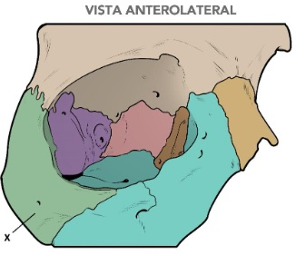
A Zigomático.
B Frontal.
C Esfenoide.
D Etmoide.
E Lacrimal.
Questão 119 · Ciclo Básico Graduação em Medicina · 4000201234Quais são os componentes formadores da parede superior – teto – da órbita?
A Processo frontal do zigomático e asa maior do osso esfenoide.
B Processo frontal do zigomático e asa menor do osso esfenoide.
C Parte orbital do osso frontal e asa menor do osso esfenoide.
D Parte orbital do osso frontal e lâmina orbital do etmoide.
E Processo frontal do zigomático e parte orbital do osso frontal.
Questão 120 · Ciclo Básico Graduação em Medicina · 4000201233A órbita é uma cavidade importante para a proteção dos bulbos dos olhos e outras estruturas acessórias à visão, como as pálpebras, os músculos extrínsecos do bulbo do olho, a inervação e a vascularização. Essa estrutura apresenta paredes mediais e laterais que apresentam uma relação que confere à órbita um eixo normal. Assinale a alternativa
A As paredes mediais das duas órbitas são, grosseiramente, paralelas.
B As paredes laterais são paralelas às mediais.
C As paredes laterais formam um ângulo, grosseiramente, perpendicular.
D O eixo óptico normal dos dois bulbos é paralelo e com sentido anterior.
E Os eixos das órbitas divergem em cerca de 45°.
Questão 121 · Ciclo Básico Graduação em Medicina · 4000201232Qual das alternativas abaixo corresponde à melhor definição de órbita?
A Cavidade óssea no esqueleto da face similar a uma pirâmide de base quadrangular no sentido anterolateral e ápice no sentido posteromedial.
B Estrutura óssea no esqueleto da face similar a uma esfera para o aporte do olho.
C Cavidade óssea no esqueleto da face similar a uma pirâmide de base circular no sentido anterolateral e ápice no sentido posteromedial.
D Cavidade óssea no esqueleto da face similar a uma pirâmide de base quadrangular no sentido anteromedial e ápice no sentido posterolateral.
E Cavidade óssea no esqueleto da face similar a uma pirâmide de base circular no sentido posteromedial e ápice no sentido anterolateral.
Questão 122 · Microbiologia · 4000201231Qual das micoses sistêmicas a seguir é causada por um fungo que invade e está presente nos tecidos na forma de bolor?
A Paracoccidioidomicose.
B Aspergilose.
C Histoplasmose.
D Criptococose.
E Candidíase.
Questão 123 · Microbiologia · 4000201230A seguinte imagem é corada com tinta de nanquim e é utilizada para o diagnóstico de uma micose importante oportunista em pacientes com AIDS. Assinale a alternativa que contenha essa doença. Coloração com tinta de nanquim. Fonte: Estratégia Imagens.

A Paracoccidioidomicose.
B Aspergilose.
C Histoplasmose.
D Criptococose.
E Candidíase.
Questão 124 · Microbiologia · 4000201229João, de 53 anos, residente e natural de São Paulo – SP é um paciente que chega à consulta com um quadro de tosse persistente acompanhado de cefaleia há 1 semana. Foi receitado um medicamento apenas sintomático com suspeita principal de síndrome gripal. O paciente evolui mal com náuseas, vômito e prostração intensa e vai ao pronto-socorro. Lá, apresenta-se com febre, queda do estado geral, confusão mental e rigidez de nuca. É realizada uma punção lombar do líquido cefalorraquidiano, que estava turvo e com aumento de pressão. Na análise laboratorial, há aumento da celularidade com leveduras encapsuladas com brotamentos. A investigação mostra que, no hemograma, a quantidade de linfócitos T CD4+ estava diminuída. Qual é a principal hipótese para o agente causador do quadro no paciente?
A Cryptococcus neoformans.
B Mycobacterium tuberculosis.
C Paracoccidioides brasiliensis.
D Candida albicans.
E Malassezia furfur.
Questão 125 · Microbiologia · 4000201228Qual é a espécie fúngica que é mais frequentemente isolada a partir de árvores do gênero
A Histoplasma capsulatum.
B Candida albicans.
C Cryptococcus neoformans.
D Cryptococcus gatti.
E Paracoccidioides brasiliensis.
Questão 126 · Microbiologia · 4000201227Uma das micoses mais significativas é a criptococose, causada por alternativa correta acerca dessa infecção.
A Micose causada por fungo com dimorfismo térmico muito associada à solo com detritos vegetais.
B Micose causada por fungo com dimorfismo térmico associada a ambientes com fezes de morcego, como cavernas.
C Micose oportunista significativa em pacientes com AIDS e associada a ambientes com eucaliptos ou fezes de pássaros.
D Micose oportunista significativa em paciente com AIDS e associada a ambientes com fezes de morcego, como cavernas.
E Micose oportunista significativa em paciente com AIDS de fungo componente da microbiota humana normal.
Questão 127 · Microbiologia · 4000201226Qual é a doença infecciosa fúngica oportunista que causa o quadro abaixo e está associada a envolvimentos de outros sistemas? Exame de orofaringe. Fonte: Estratégia Imagens.
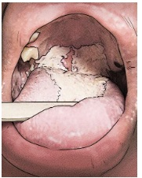
A Candidíase.
B Pitiríase versicolor.
C Histoplasmose.
D Paracoccidioidomicose.
E Criptococose.
Questão 128 · Microbiologia · 4000201225Quais são as características morfológicas típicas dos fungos causadores da candidíase?
A Brotamentos múltiplos com aspecto de roda de leme.
B Leveduras em brotamento com pseudo-hifas.
C Leveduras intracelulares uninucleadas.
D Leveduras encapsuladas com brotamento único.
E Hifas septadas e ramificadas regularmente.
Questão 129 · Microbiologia · 4000201224Na micologia, o conhecimento da estrutura morfológica microscópica dos fungos é muito importante para a sua identi cação. Dentre os fungos abaixo, qual é aquele que, caracteristicamente, apresenta pseudo-hifas e células leveduriformes como sua forma invasiva?
A Criptococcus neoformans.
B Malassezia furfur.
C Histoplasma capsulatum.
D Candida albicans.
E Paracoccidioides brasiliensis.
Questão 130 · Microbiologia · 4000201223Muitas infecções fúngicas são suspeitadas a partir de elementos da anamnese que coincidam com a epidemiologia da doença. Alguns são associados a determinados doença. Qual é o
A Solo ácido com matéria orgânica vegetal decomposta, principalmente plantas de café.
B Solo úmido rico em nitrogênio enriquecido com fezes de morcego ou aves.
C Solo seco com matéria orgânica vegetal decomposta.
D Patógeno oportunista componente da microbiota humana normal.
E Patógeno oportunista presente em ambientes nosocomiais apenas.
Questão 131 · Microbiologia · 4000201222Uma infecção ser intracelular não significa que ela é viral, porque há outros patógenos com fatores de virulência que os permitem viver e replicar-se no interior das células humanas. Qual das seguintes espécies apresenta germinação dos conídios após a fagocitose para a formação de leveduras? Leveduras intracelulares. Fonte: Estratégia Imagens.
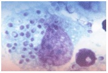
A Histoplasma capsulatum.
B Paracoccidioides brasiliensis.
C Blastomyces dermatitidis.
D Malassezia
E Staphylococcus aureus.
Questão 132 · Microbiologia · 4000201221Uma das patologias fúngicas mais prevalentes no Brasil corresponde à paracoccidioidomicose, causada por espécies do gênero Paracoccidioides
A Hifas hialinas septadas com artroconídios.
B Hifas pigmentadas septadas curtas.
C Leveduras associadas em cachos com pseudo-hifas.
D Leveduras arredondadas com múltiplos brotamentos de istmo estreito.
E Levedura arredonda com único brotamento.
Questão 133 · Microbiologia · 4000201220João, de 43 anos e agricultor, residente e natural do oeste paulista relata um quadro de tosse e cansaço progressivo ao longo de 1 ano. Há 6 meses, iniciou escarros hemoptoicos associados a quadros esporádicos de febre e mal-estar. A radiogra a simples de tórax mostrou consolidações bilaterais localizadas centralmente que poupam ápices e bases, em um aspecto de “asa de borboleta”. O exame microscópico direto do escarro mostrou a presença de células ovais com múltiplos brotamentos de base estreita. Qual das infecções fúngicas a seguir deve ser a hipótese principal? Radiografia convencional de tórax com aspecto de asa de borboleta. Fonte: Estratégia Imagens

A Paracoccidioidomicose.
B Candidíase.
C Histoplasmose.
D Criptococose.
E Tuberculose.
Questão 134 · Microbiologia · 4000201219A imagem abaixo corresponde a um exame microscópico com coloração de metenamina de prata de Grocott-Gomori com uma morfologia típica de uma espécie de fungo patogênica aos humanos. Assinale a alternativa que corresponda à doença causada por esse fungo. Fungo com coloração de metenamina de prata de Grocott-Gomori. Fonte: Estratégia Imagens.

A Dermatofitose.
B Paracoccidioidomicose.
C Candidíase.
D Criptococose.
E Histoplasmose.
Questão 135 · Microbiologia · 4000201218A maduromicose, ou micetoma eumicótico, é uma micose subcutânea que pode causar limitações e deformações importantes principalmente pelo rompimento de planos teciduais e destruição local do músculo e osso. É fonte de um diferencial importante com outros micetomas, porque o seu agente etiológico é fúngico, o que di culta o tratamento medicamentoso. Os micetoma actinomicótico é causado por bactérias que assumem uma morfologia similar a fungos, mas a resposta ao tratamento é muito mais eficaz. Qual é a característica comum que agrupa esses patógenos sob o mesmo nome de micetoma?
A Lesões queloides.
B Agregados de células filamentosas em matriz extracelular dura, os grãos.
C Nódulos de padrão de linfangite ascendente com ulceração.
D Placas eritematosas descamativas.
E Pápulas verrucosas.
Questão 136 · Microbiologia · 4000201217Uma das micoses subcutâneas que existem no Brasil corresponde à doença de Jorge Lobo, porque o seu primeiro caso foi descrito em Recife em 1931 pelo dermatologista de mesmo nome. O seu agente etiológico foi denominado de características clínicas peculiares apresentadas nessa patologia?
A Placas eritematosas descamativas.
B Nódulos de padrão de linfangite ascendente com ulceração.
C Úlceras únicas de bordas irregulares e conteúdo purulento.
D Lesões queloides.
E Máculas eritematosas descamativas.
Questão 137 · Microbiologia · 4000201216Na análise histopatológica de um nódulo indolor de aumento progressivo, veri cou-se a presença de granulomas e abcessos que envolvem estruturas peculiares conhecidas como grânulos. O seu conteúdo corresponde a um grande agregado de hifas septadas com modi cações na parede celular e clamidoconídios, somado à secreção de uma matriz extracelular rígida semelhante a cimento. Qual é o nome dessa patologia?
A Esporotricose.
B Dermatofitose.
C Pitiríase versicolor.
D Micetoma eumicótico.
E Micetoma actinomicótico.
Questão 138 · Microbiologia · 4000201215Um dos fungos patológicos mais importantes é o em hifas estreitas, septadas e hialinas com conídios dispostos em rosetas. Em contraste, sua forma leveduriforme, apresentada na infecção tecidual, consiste em células ovais ou em formato de charuto com um brotamento geralmente único. Qual é o tipo de micose causado e como é a apresentação de lesões?
A Micose superficial e nódulos em padrão de linfangite ascendente.
B Micose cutânea e placas eritematosas com descamação.
C Micose subcutânea e placas eritematosas com descamação.
D Micose cutânea e nódulos em padrão de linfangite ascendente.
E Micose subcutânea e nódulos em padrão de linfangite ascendente.
Questão 139 · Microbiologia · 4000201214Manuel, de 50 anos e residente da área rural de São Paulo, apresenta uma queixa de lesões escuras e pruriginosas na pele. Elas se iniciaram há 1 ano com pápulas pequenas edemaciadas no dorso da mão com aumento gradual e evolução para uma área mais extensa de placa escamosa com hiperqueratose. O paciente procurou atendimento apenas com o aparecimento de nova lesão no outro membro superior também de aspecto papular, porque sua esposa achava que estava com câncer. Foi realizado um exame direto, com hidróxido de potássio, que revelou células escleróticas pigmentadas redondas com uma divisão septal interna. Qual é a doença apresentada por seu Manuel?
A Esporotricose.
B Dermatofitose.
C Carcinoma basocelular.
D Cromoblastomicose.
E Micetoma.
Questão 140 · Microbiologia · 4000201213João, de 25 anos e residente da área rural de São Paulo, descreve um ferimento na palma de sua mão com um galho após cair de uma árvore. Durante a semana seguinte, a região ao redor da lesão evoluiu com edema, úlceras e secreção purulenta. Na primeira consulta, foi prescrito a utilização de um antibiótico tetracíclico, mas não houve sucesso no tratamento. No retorno, o paciente evoluiu com outros nódulos e úlceras no membro superior em um padrão linfático nodular ascendente. Foi realizado um exame histopatológico na lesão que não identi cou bacilos ou elementos fúngicos. Somente na cultura, foram identi cadas hifas nas e septadas com conídios depositados em rosetas. Qual é a doença apresentada por seu João?
A Esporotricose.
B Dermatofitose.
C Pitiríase versicolor.
D Cromoblastomicose.
E Micetoma.
Questão 141 · Microbiologia · 4000201212Na análise da etiologia da acordo com a espécie causadora. Qual é o tipo em que há formação de artroconídios no interior da haste do pelo sem espaços vazios e qual é o nome geral dessas patologias?
A Ectótrix e dermatofitoses.
B Endótrix e dermatofitoses.
C Fávico e Piedra.
D Ectótrix e pitiríase.
E Endótrix e pitiríase.
Questão 142 · Microbiologia · 4000201211Uma amostra de biópsia de pele de uma lesão dermatológica de placas eritematosas elevadas com descamação e diminuição central da in amação em uma área de alopecia é enviada para a realização de exame microscópico direto. Quais são as estruturas do patógeno, caso ele exista, que é esperado encontrar?
A Hifas septadas e hialinas com artroconídios em cadeia ou dissociados que invadem o estrato córneo.
B Hifas pigmentadas com células leveduriformes na superfície do extrato córneo.
C Hifas curtas e curvas com células leveduriformes agrupadas em cachos na superfície do extrato córneo.
D Células leveduriformes hialinas agrupadas em cadeias que invadem o estrato córneo.
E Células leveduriformes com brotamentos agrupadas em cachos que invadem o estrato córneo.
Questão 143 · Microbiologia · 4000201210Você recebe o encaminhamento de um paciente com descrição de seja a sua apresentação clínica?
A Mácula hipercrômica isolada na palma de mãos ou pés.
B Mácula hipercrômica isolada abaixo do couro cabeludo com descamação e preservação do cabelo.
C Placa eritematosa elevada com escamação na área com alopecia. O eritema diminui centralmente.
D Placa eritematosa elevada com escamação na área com alopecia. O eritema aumenta centralmente.
E Mácula hipocrômicas sem descamação na área de alopecia.
Questão 144 · Microbiologia · 4000201209Qual dos seguintes gêneros fúngicos abaixo é um dos causadores de dermatofitoses?
A Trichosporon.
B Malassezia.
C Piedraia.
D Candida.
E Trichophyton.
Questão 145 · Microbiologia · 4000201208Os fungos do gênero redor da haste. Assinale a doença causada por esses patógenos.
A Tinea nigra.
B Pitiríase versicolor.
C Piedra branca.
D Piedra nigra.
E Dermatofitoses.
Questão 146 · Microbiologia · 4000201207Uma das micoses super ciais corresponde à Tinea nigra, causada por melhor descrição do quadro clínico dessa patologia.
A Máculas hipo ou hipercrômicas com bordas regulares distribuídas na parte superior do tronco e face.
B Máculas hipercrômicas isoladas na palma de mãos ou pés.
C Nódulos pastosos branco acastanhados ao redor dos pelos.
D Nódulos pequenos e escuros ao redor da haste do pelo de consistência dura.
E Anel de escamação inflamatória com pouca inflamação central.
Questão 147 · Microbiologia · 4000201206A pitiríase versicolor é uma alteração dermatológica autolimitada que causa um quadro de exantema macular hipo ou hipercrômico. Como é possível realizar o diagnóstico dessa patologia? Pitiríase versicolor. Fonte: Estratégia Imagens.
A Exame direto com KOH a 10%: blastoconídios agrupados em cachos de uva com hifas curtas e curvas septadas.
B Exame direto com KOH a 10%: hifa septada e ramificada com a presença de artroconídios.
C Exame direto com NAOH a 10%: blastoconídios agrupados em cachos de uva com hifas curtas e curvas septadas.
D Exame direto com NAOH a 10%: hifa septada e ramificada com a presença de artroconídios.
E Exame direto com KOH a 10%: hifas septadas hialinas com artroconídios.
Questão 148 · Microbiologia · 4000201205Algumas doenças mais significativas causadas por fungos correspondem a micoses super ciais, dentre as quais está a pitiríase versicolor. Quais são as alterações encontradas nessa patologia e quais são as espécies associadas?
A Máculas hipo ou hipercrômicas e
B Máculas hipo ou hipercrômicas e
C Exantema bolhoso e
D Exantema bolhoso e
E Máculas hipo ou hipercrômicas e
Questão 149 · Microbiologia · 4000201204O que correspondem as formas anamórficas dos fungos?
A Formas de reprodução assexuada que correspondem à maior parte dos fungos encontrados como patógenos.
B Formas de reprodução sexuada que correspondem à maior parte dos fungos encontrados como patógenos.
C Formas filamentosas responsáveis pela formação das estruturas de reprodução sexuada, não relacionadas ao parasitismo humano.
D Formas de reprodução assexuada que corresponde à morfologia dos fungos não encontradas nas patologias.
E Formas de reprodução sexuada que corresponde à morfologia dos fungos não encontradas nas patologias.
Questão 150 · Microbiologia · 4000201203Qual é o principal filo do reino Fungi causador de doenças em humanos?
A Ascomicetos.
B Basidiomicetos.
C Glomeromicetos.
D Zigomicetos.
E Blastocladiomicetos.
Questão 151 · Microbiologia · 4000201202Houve uma grande confusão na taxonomia dos fungos com relação a diversas espécies que receberam duas denominações, uma para a forma anamór ca e outra para a teleomór ca, o que provoca uma discordância na comunicação. Qual é a diferença entre ambas as formas?
A O teleomorfo corresponde ao estágio sexual reprodutivo de um fungo, encontrado na maior parte das micoses humanas.
B O anamorfo corresponde ao estágio assexual reprodutivo de um fungo, encontrado na maior parte das micoses humanas.
C O teleomorfo corresponde ao estágio assexual reprodutivo de um fungo, encontrado na maior parte das micoses humanas.
D O anamorfo corresponde ao estágio sexual reprodutivo de um fungo, cuja nômina foi padronizada mesmo não sendo a forma comum nas micoses.
E O teleomorfo corresponde ao estágio assexual reprodutivo de um fungo, cuja nômina foi padronizada mesmo não sendo a forma comum nas micoses.
Revisar: possível letra faltando em enunciado
Questão 152 · Microbiologia · 4000201201Os fungos são seres complexos com mecanismos diversos de reprodução que conferem determinada propriedade à espécie. Assinale a alternativa correta acerca do ciclo de vida dos fungos.
A A sua forma anamorfa está relacionada à formação de esporos sexuados.
B Os blastoconídios são células formadas a partir do brotamento assexual de uma célula parental.
C A formação de esporos ocorre apenas na reprodução sexuada.
D A forma de reprodução sexuada de algumas espécies patogênicas é com a formação de pseudo-hifas.
E A forma encontrada no ser humano durante as infecções é, predominantemente, a que realiza a reprodução sexuada.
Questão 153 · Microbiologia · 4000201200Qual é o significado do termo dimórfico aplicado aos fungos patogênicos?
A Podem se dividir por divisão assexuada, por brotamento, ou sexuada, por plasmogamia.
B Apresentam dois tipos de esporos sexuais: artroconídios e conídios.
C Crescem tanto na forma de levedura quanto filamentosa com a variação de algum componente do ambiente.
D Podem se apresentar na forma de levedura ou de pseudo-hifas de acordo com a variação de temperatura.
E Formação de blastoconídios como esporos assexuais.
Questão 154 · Microbiologia · 4000201199As infecções fúngicas tomam uma importância médica mais significativa com o advento das terapias imunossupressoras e patologias que cursam com imunode ciência, como a AIDS. Assinale a alternativa abaixo que contenha um fator diferencial entre células fúngicas e de outros patógenos.
A Parede celular fúngica é composta por quitina, polímero de N-acetilglicosamina.
B Membrana celular rica em colesterol.
C Células autotróficas.
D Formação de endósporos para a reprodução.
E Meios complexos de movimentação.
Questão 155 · Microbiologia · 4000201198Um dos possíveis usos da titulação de anticorpos virais para diferentes antígenos virais é o acompanhamento e identi cação da fase da doença, visto que o padrão de expressão de anticorpos pode mudar durante a história natural. Qual dos seguintes vírus apresenta essa mudança característica que pode determinar o estado do indivíduo para os antígenos virais e anticorpos?
A Hepatite B.
B Hepatite A.
C HIV.
D Influenza.
E Coronavírus.
Questão 156 · Microbiologia · 4000201197Você atende um paciente e suspeita fortemente de uma possível etiologia gripal para o quadro apresentado pelo paciente. Após solicitar os exames, os resultados retornam 4 dias após com IgM positiva especí ca para o vírus que você suspeitava. Qual é significado disso no quadro?
A A paciente está no início do processo de infecção viral e ainda não entrou na convalescença.
B A infecção primária ao vírus foi a pelo menos 6 meses, tempo necessário para o desenvolvimento de IgM.
C A infecção secundária ao vírus ocorreu há, aproximadamente, 2 semanas.
D A viremia ainda é significativamente alta.
E A infecção primária ao vírus deve ter ocorrido recentemente.
Revisar: possível letra faltando em enunciado
Questão 157 · Microbiologia · 4000201196A identi cação de muitos vírus pode ser di cultada porque não é possível observá-lo diretamente no microscópio óptico e o seu material genético pode ser escasso em alguns casos. Alguns vírus com material genético integrado ou em baixas concentrações não apresentam biomoléculas su cientes para uma positividade nos testes laboratoriais. Qual o procedimento que pode ser utilizado para um melhor aproveitamento dessas amostras?
A Southern blot.
B Reação de polimerase em cadeia.
C Hibridização fluorescente
D ELISA
E Western blot.
Revisar: possível letra faltando em enunciado
Questão 158 · Microbiologia · 4000201195O diagnóstico de infecções virais é diferente do de bactérias, em decorrência de sua siologia e proporções. Assinale a alternativa que não corresponda a formas de identificação possíveis da presença de vírus.
A Biópsias de tecido com alterações celulares características.
B Imunofluorescência de biópsias com antígenos virais.
C Microscopia óptica de secreções.
D Ensaio de imunoabsorção enzimática.
E Hibridização fluorescente in situ
Questão 159 · Microbiologia · 4000201194O herpes-zóster é uma doença infecciosa causada pelo vírus HHV-3 (Herpesvírus humano 3), que se caracteriza por manifestações de eritemas bolhosos e vesiculares com distribuição em dermátomos. Assinale qual é o tipo de infecção dessa doença.
A Infecção aguda.
B Infecção persistente produtiva.
C Infecção citolítica latente.
D Infecção persistente latente-recorrente.
E Infecção inaparente.
Questão 160 · Microbiologia · 4000201193Um dos componentes da morfologia dos vírus com efeito mais aparente em sua epidemiologia e forma de transmissão é o envelope viral. A sua presença confere qual propriedade aos vírus?
A Maior resistência a ambientes secos, ação de detergentes e de pH com transmissão geralmente fecal-oral.
B Maior resistência a ambientes secos, o que permite a transmissão por via respiratória ou fômites.
C Maior fragilidade a ambientes secos, ação de detergentes e de pH com transmissão por gotículas respiratórias ou secreções.
D Maior fragilidade a ambientes secos e resistência a ação de detergentes e pH, o que permite a transmissão fecal-oral.
E Maior resistência a ambientes secos e fragilidade a ação de detergentes e pH, o que os torna mais transmissíveis pela via aérea.
Questão 161 · Microbiologia · 4000201192Muito da manifestação clínica de infecções virais não está associado à patogênese do vírus em si, mas à resposta do sistema imune a essa infecção. Assinale a alternativa que
A Indução de citólise após a infecção por perturbação funcional do tecido.
B Formação de imunocomplexos de anticorpos e partículas virais com deposição e ativação constante do complemento.
C Ligação do anticorpo ao antígeno com inibição da interação das partículas virais com seus receptores celulares.
D Produção acentuada de citocinas pró-inflamatórias sistêmicas.
E Produção de sintomas sistêmicos prodrômicos de mal-estar.
Questão 162 · Microbiologia · 4000201191Muitos vírus apresentam um papel conhecido na promoção de tumores e são conhecidos como oncogênicos. Assinale a alternativa incorreta
A Ativação ou presença de genes de estimulação de crescimento.
B Indução da produção de citocinas estimulantes de proliferação, como IL-2.
C Inibição de proteínas inibitórias do ciclo celular e de proliferação, como p53 e RB.
D Indução de proteínas inibitórias da apoptose, como Bcl-2.
E Genes que se ligam a proto-oncogenes e inibem a sua expressão.
Questão 163 · Microbiologia · 4000201190A infecção celular por alguns vírus, como o HIV, ocorre sem que a maior parte das células seja destruída. A infecção permanece sem a destruição com produção de partículas virais que são liberados a partir de sua membrana plasmática por exocitose ou brotamento. É interessante para o vírus esse tipo de relação porque o seu maquinário de reprodução permanecesse acessível por bastante tempo e, então, mais vírus são produzidos. Assinale a alternativa que corresponda a esse tipo de infecção.
A Persistente latente.
B Transformadora.
C Citolítica.
D Persistente produtiva.
E Abortiva.
Questão 164 · Microbiologia · 4000201139Durante as etapas da infecção viral no organismo, assinale a afirmativa correta acerca do tecido-alvo do vírus.
A O tecido-alvo corresponde ao ponto primário de replicação viral, o que acarreta o pródromo.
B O tecido-alvo é aquele que permite ao vírus a disseminação para o restante dos tecidos do organismo, o que caracteriza a viremia.
C O tecido-alvo corresponde ao ponto primário de replicação viral, o que acarreta a convalescência.
D O tecido-alvo do vírus pode ser alcançado após a disseminação do vírus, o que acarreta os sintomas específicos.
E O tecido-alvo do vírus corresponde ao ponto de replicação secundário, atingido após a disseminação do vírus por viremia.
Questão 165 · Sistema Urinário · 4000201138Sobre a reabsorção que ocorre no túbulo proximal do néfron, assinale a alternativa correta:
A No túbulo proximal a água acompanha a reabsorção de potássio.
B A enzima anidrase carbônica II é essencial para a quebra de bicarbonato em dióxido de carbono e hidroxila, permitindo, assim, a reabsorção do ânion.
C No túbulo proximal do néfron o sódio é reabsorvido por meio do transportador NKCC2.
D A maior reabsorção de todo o sódio, de toda a água e de todo o bicarbonato acontece no túbulo proximal.
E A reabsorção de potássio ocorre majoritariamente pela via transcelular.
Questão 166 · Sistema Urinário · 4000201137Sobre os diferentes componentes do néfron, assinale a alternativa correta:
A Os néfrons corticais apresentam alças de Henle mais longas, em comparação aos néfrons medulares.
B O ramo descendente fino da alça de Henle apresenta baixa permeabilidade à água.
C As células que compõem o túbulo convoluto distal são colunares.
D O segmento espesso ascendente do néfron é permeável à água.
E É no ducto coletor que o hormônio anti-diurético age.
Questão 167 · Sistema Urinário · 4000201136Sobre os corpúsculos renais, assinale a alternativa correta:
A As fendas de filtração são espaços que ocorrem entre os prolongamentos primários dos podócitos.
B A barreira de filtração glomerular é constituída pelos podócitos e pelo endotélio fenestrado, apenas.
C O espaço capsular é o espaço virtual entre o folheto interno e o folheto externo da cápsula de Bowman.
D Os prolongamentos secundários dos podócitos se fixam à membrana basal por meio de desmossomos.
E Os podócitos são as células que apresentam receptores que, quando estimulados, induzem a contração ou o relaxamento da arteríola aferente.
Questão 168 · Sistema Urinário · 4000201135Sobre a formação da bexiga e da uretra no embrião, assinale a alternativa correta:
A Os ureteres se desenvolvem conjuntamente com a bexiga urinária.
B A bexiga urinária está inicialmente ligada ao alantoide, mas depois que ocorre a obliteração deste, apenas um cordão fibroso permanece.
C Ao nascimento, o úraco dá origem ao ligamento umbilical medial.
D A cloaca, que originará a bexiga urinária, é formada a partir do intestino médio.
E A bexiga urinária começa a se desenvolver apenas quando o rim definitivo já se desenvolveu.
Questão 169 · Sistema Urinário · 4000201134Sobre os sistemas renais que aparecem durante o desenvolvimento embrionário, assinale a alternativa correta:
A O pronefro é originado a partir dos nefrótomos.
B Os três sistemas renais que se desenvolvem no embrião, são, em ordem cronológica: o pronefro, o metanefro e o mesonefro.
C O mesonefro se origina a partir da região cervical.
D A excreção de urina acontece já a partir do pronefro.
E A partir do surgimento do broto uretérico a urina começa a ser excretada.
Questão 170 · Sistema Urinário · 4000201133Sobre a inervação da bexiga urinária, assinale a correta:
A Os troncos vagal anterior e posterior participam da inervação parassimpática da bexiga urinária.
B As fibras simpáticas se originam a partir da região lombar da medula espinhal, apenas.
C As sinapses que as fibras simpáticas pré-ganglionares realizam com os neurônios pós-ganglionares podem ocorrer na parede da bexiga urinária.
D As fibras parassimpáticas estimulam relaxamento do músculo esfíncter interno da uretra e contração da parede da bexiga urinária.
E As sinapses que as fibras parassimpáticas pré-ganglionares realizam ocorrem, necessariamente, na parede da bexiga urinária.
Questão 171 · Sistema Urinário · 4000201132Sobre a irrigação e a drenagem venosa da bexiga urinária, assinale a alternativa correta:
A A irrigação da bexiga urinária é promovida por ramos da artéria ilíaca externa
B Parte da irrigação da bexiga urinária é promovida pelas artérias vesicais superiores, ramos da divisão anterior da artéria ilíaca interna.
C Nas mulheres há participação das artérias vaginais na irrigação da bexiga.
D As veias vesicais superiores são tributárias das veias umbilicais.
E Os plexos venoso e vesical apresentam a característica de não serem contínuos entre si; eles estão relacionados à drenagem não só da bexiga, mas também da próstata, das glândulas seminais e dos ductos deferentes.
Questão 172 · Sistema Urinário · 4000201131Ao se estudar as vias urinárias é possível perceber a diferença estrutural da uretra masculina em relação à uretra feminina. Sobre a anatomia da uretra feminina, sua irrigação e sua vascularização, assinale a alternativa correta:
A Assim como na uretra masculina, a uretra feminina apresenta seu óstio interno envolvido por um esfíncter interno.
B Um dos fatores que predispõem uma ocorrência maior de infecção urinária nas mulheres em relação aos homens é o tamanho da uretra.
C A artéria vaginal é um ramo direto da artéria aorta.
D A veia pudenda interna é tributária da veia ilíaca interna.
E A artéria pudenda externa ajuda a irrigar a uretra feminina.
Questão 173 · Sistema Urinário · 4000201130Ao se estudar as vias urinárias é possível perceber a diferença estrutural da uretra masculina em relação à uretra feminina. Sobre a anatomia da uretra masculina, assinale a alternativa correta:
A A parte prostática da uretra está envolvida pelo esfíncter uretral interno.
B A parte esponjosa da uretra é a mais larga e a mais dilatável.
C Há apenas duas constrições presentes na uretra masculina: o óstio interno da uretra e o óstio externo da uretra.
D As glândulas bulbouretrais se localizam na altura das partes intramural e prostática.
E A fossa navicular da uretra está localizada na parte membranácea.
Questão 174 · Sistema Urinário · 4000201129Sobre a anatomia da bexiga urinária, assinale a correta:
A A bexiga urinária é um órgão retroperitoneal.
B A bexiga urinária localiza-se, primariamente, no abdômen, e, apenas depois da puberdade ela se encontra quase que inteiramente na pelve menor.
C Não há mecanismos que impeçam o refluxo urinário da bexiga para os ureteres pois o componente gravitacional é suficiente para que a urina tenha um fluxo unidirecional.
D A morfologia da bexiga urinária é constante.
E Na parte interna da bexiga urinária observa-se uma túnica serosa.
Questão 175 · Sistema Urinário · 4000201128Sobre os ureteres, assinale a alternativa correta:
A As camadas de músculo encontradas nos ureteres é igual a encontrada no TGI: uma camada longitudinal externa e uma camada circular interna.
B O estreitamento mais apertado que ocorre nos ureteres é aquele que passa pelo cruzamento da artéria ilíaca comum.
C Na parte abdominal os ureteres passam sobre as artérias e veias testiculares/ováricas.
D Na transição para a parte pélvica, os ureteres passam logo abaixo das artérias e veias ilíacas externas.
E No homem, o ureter passa por baixo do ducto deferente.
Questão 176 · Sistema Urinário · 4000201127Sobre a inervação dos rins e das glândulas suprarrenais, assinale a alternativa correta:
A A ação do simpático nas glândulas suprarrenais culmina com a liberação de catecolaminas.
B As ações do sistema parassimpático predominam nos rins e nas glândulas suprarrenais.
C As glândulas suprarrenais e os rins são inervados por ramos do plexo renal.
D O plexo celíaco emite ramos que inervam as partes superiores dos rins.
E Os troncos vagal anterior e posterior participam da inervação dos rins.
Questão 177 · Sistema Urinário · 4000201126Sobre a irrigação e as drenagens venosa e linfática das glândulas suprarrenais, assinale a alternativa correta:
A A veia suprarrenal esquerda é uma tributária da veia cava inferior.
B Assim como há geralmente três artérias que suprem as elevadas demandas metabólicas das glândulas suprarrenais, há três veias que realizam a drenagem desse órgão.
C A artéria suprarrenal média pode não estar presente em algumas pessoas.
D A linfa das glândulas suprarrenais vão diretamente para os linfonodos celíacos.
E As artérias suprarrenais superiores são provenientes de ramos provenientes diretamente da aorta.
Questão 178 · Sistema Urinário · 4000201125Sobre as artérias e veias renais, assinale a alternativa correta:
A As artérias renais encontram-se numa posição anterior em relação às veias renais.
B Cada artéria renal dá origem a cinco artérias que irrigam cinco partes diferentes do rim.
C Na região da coluna renal, as artérias interlobares são ramos das artérias arqueadas.
D As veias renais se projetam anteriormente em relação à veia cava inferior.
E As artérias suprarrenais superiores são provenientes de ramos das artérias renais.
Questão 179 · Sistema Urinário · 4000201124Sobre a anatomia dos rins, assinale a alternativa correta:
A Na face superior dos rins estão localizadas as glândulas suprarrenais, órgãos endócrinos circundados apenas por tecido conjuntivo.
B A pirâmide e a coluna renais estão localizadas no córtex do rim.
C Os ureteres são tubos formados por tecido conjuntivo. Eles conduzem a urina formada nos rins para a bexiga.
D Cada cálice maior do rim forma dois ou três cálices menores.
E O rim esquerdo apresenta seu ápice próximo da linha da vértebra T XII, enquanto o rim direito apresenta seu ápice próximo da linha da vértebra T XI.
Questão 180 · Sistema Digestório · 4000201123Sobre a drenagem venosa dos intestinos, assinale a alternativa correta:
A A veia esplênica têm tributárias que drenam partes do intestino delgado.
B A veia cólica média é tributária da veia mesentérica inferior.
C As veias pancreaticoduodenais são tributárias da veia esplênica.
D A veia porta do fígado é formada pelas veias mesentérica superior e inferior e pela veia esplênica.
E A veia mesentérica inferior sempre desemboca na veia esplênica.
Questão 181 · Sistema Digestório · 4000201122Sobre a drenagem linfática dos intestinos, assinale a alternativa correta:
A A drenagem linfática do cólon ascendente, do cólon transverso e do cólon ascendente tem como destino intermediário os linfonodos mesentéricos superiores.
B Dos linfonodos mesentéricos superiores a linfa se direciona para os linfonodos para-aórticos.
C A partir da flexura esquerda do cólon a drenagem linfática muda de destino intermediário.
D Dos linfonodos mesentéricos inferiores a linfa se direciona para o ducto torácico.
E A parte proximal do reto é tem sua linfa drenada pelos linfonodos inguinais.
Questão 182 · Sistema Digestório · 4000201121Sobre a inervação dos intestinos, assinale a alternativa correta:
A As fibras parassimpáticas pré-ganglionares realizam sinapses nos gânglios mesentérico superior e no gânglio mesentérico inferior.
B A inervação dos intestinos acompanha a irrigação promovida por ramos da aorta.
C A origem dos neurônios parassimpáticos permanece a mesma ao longo de todo o trajeto dos intestinos.
D O plexo hipogástrico inerva o cólon transverso, o cólon descendente e o cólon sigmoideo.
E As fibras simpáticas pós-ganglionares partem da parede dos órgãos.
Questão 183 · Sistema Digestório · 4000201120Sobre a inervação do estômago, assinale a alternativa correta:
A Os neurônios pós-ganglionares simpáticos emitem informações que tem como objetivo inibir o processo de digestão.
B As fibras parassimpáticas pré-ganglionares fazem sinapses com os neurônios pós ganglionares nos gânglios celíacos.
C As fibras parassimpáticas pré-ganglionares chegam aos gânglios celíacos por meio dos nervos esplâncnicos.
D Do tronco vagal posterior, do qual parte uma porção das fibras parassimpáticas pré-ganglionares, parte os ramos que inervam a região do fígado.
E As fibras simpáticas pré-ganglionares fazem sinapses com as fibras simpáticas pós-ganglionares na parede do estômago.
Questão 184 · Sistema Digestório · 4000201119Sobre a drenagem linfática do estômago, assinale a correta:
A A drenagem linfática da parte posterior do estômago ocorre pelos linfonodos esplênicos, apenas.
B O conteúdo linfático drenado pelos linfonodos próximos à região do estômago se direciona para o dúcto linfático direito.
C O piloro e a curvatura menor do estômago são drenados pelos mesmos linfonodos.
D A região da curvatura maior do estômago tem sua drenagem linfática realizada apenas pelos linfonodos gastromentais.
E O conteúdo linfático drenado pelos linfonodos próximos à região do estômago se direciona, inicialmente, para os linfonodos celíacos.
Questão 185 · Sistema Digestório · 4000201118Sobre a irrigação e as drenagens venosa e linfática do esôfago, assinale a alternativa correta:
A A irrigação e a drenagem venosa da traqueia não guardam relação com a irrigação e com a drenagem venosa do esôfago.
B A drenagem venosa promovida no esôfago ocorre unicamente das veias ázigos e hemiázigos para a veia cava superior.
C A drenagem linfática da parte cervical do esôfago ocorre para os linfonodos mediastinais, também.
D O tronco celíaco está envolvido na irrigação do esôfago.
E A aorta é responsável por parte da irrigação da porção torácica do esôfago.
Questão 186 · Sistema Digestório · 4000201117Sobre os ligamentos formados por peritônio e as subdivisões da cavidade peritoneal, assinale a alternativa correta:
A É no ligamento hepatogástrico que há a passagem para a tríade portal.
B Os ligamentos hepatogástrico e hepatoduodenal são assim diferenciados porque a consistência do peritônio que os forma é diferente.
C Os limites anterior e posterior do forame omental, são, respectivamente, o ligamento hepatoduodenal e a veia cava inferior.
D Os sulcos paracólicos são espaços de comunicação entre o espaço infra cólico direito e o espaço infra cólico esquerdo.
E Os sulcos paracólicos direito e esquerdo drenam apenas para a pelve.
Questão 187 · Anatomia do Sistema Digestório · 4000201116Ao estudarmos a cavidade abdominal reconhecemos que os órgãos ali presentes não estão apenas “pendendo” em seu interior, mas são sustentados por boas extensões de peritônio. Sobre ele, assinale a alternativa correta:
A O peritônio é constituído por epitélio pavimentoso estratificado.
B A dor referida por pacientes que têm seu peritônio parietal acometido é geralmente bem definida, em contraste com a dor provocada no peritônio visceral, que é mal definida.
C Entre o peritônio parietal e o peritônio visceral há quantidade considerável de líquido, o que permite lubrificação das faces peritoneais.
D O omento é uma prega de peritônio que fixa os intestinos à parede abdominal.
E Os espaços infracólicos esquerdo e direito são delimitados pelo mesocolo transverso.
Questão 188 · Sistema Digestório · 4000201115Sobre o intestino posterior, um dos constituintes do intestino primitivo, assinale a correta:
A A linha pectínea marca a transição de epitélio colunar (proveniente da endoderme) para epitélio pavimentoso estratificado (proveniente da ectoderme)
B O septo urorretal é formado por uma fenda entre o alantoide o intestino médio.
C O canal anal é irrigado pelas artérias retais superior e inferior, todas provenientes da artéria mesentérica inferior.
D Separações incompletas do intestino posterior com o seio urogenital costumam gerar variações anatômicas fisiológicas.
E A membrana cloacal é rompida apenas depois da décima quinta semana de gestação.
Questão 189 · Anatomia do Sistema Digestório · 4000201114Sobre o processo de formação do pâncreas, assinale a alternativa correta:
A As porções dorsal e ventral do pâncreas se unem imediatamente após a rotação do duodeno.
B O processo de formação do ducto de Wirsung envolve a projeção de uma dilatação do pâncreas unificado na papila maior do duodeno.
C O broto ventral do pâncreas tem sua formação induzida pelo endoderma.
D Os genes PAX4 e PAX6 estão envolvidos com a formação de linhagem celular endócrina do pâncreas.
E O ducto pancreático acessório é originado pela porção distal do ducto pancreático dorsal.
Questão 190 · Sistema Digestório · 4000201113Em relação ao processo de formação do fígado e do duodeno, assinale a alternativa correta:
A O processo de rotação das alças intestinais primitivas auxilia no processo de formação do duodeno.
B Desde o início de sua formação o duodeno está localizado no lado esquerdo da cavidade abdominal.
C O duodeno é irrigado unicamente pela artéria celíaca.
D O mesoderma do septo transverso origina o ligamento falciforme do fígado e o omento menor.
E As células hematopoiéticas, as células de Kupffer e as células do tecido conjuntivo do fígado são originadas da endoderme que recobre o intestino anterior.
Questão 191 · Sistema Digestório · 4000201112Em relação ao processo de formação do intestino delgado e do intestino grosso, assinale a alternativa correta:
A A rotação em sentido horário que as alças intestinais primitivas realizam ocorre em torno de um eixo formado pela artéria celíaca.
B O processo de herniação das alças intestinais primitivas ocorre depois do processo de rotação que elas realizam.
C A artéria mesentérica superior é responsável pela irrigação do intestino médio.
D O intestino posterior dá origem ao cólon ascendente, ao cólon transverso, ao cólon descendente e ao reto.
E Apenas depois da décima quinta semana é que o intestino primitivo retorna à cavidade abdominal.
Questão 192 · Sistema Digestório · 4000201111No que diz respeito ao processo de formação do estômago, assinale a alternativa correta:
A Após sofrer uma rotação de 90º no eixo crânio-caudal, a porção ventral originará a curvatura maior.
B O crescimento desproporcional do estômago altera a disposição inicial dos mesogástrios ventral e dorsal.
C O intestino médio é a região que dará origem ao estômago. Seu processo de formação envolve o desvio dos polos cranial e caudal da linha média.
D Após sofrer uma rotação de 180º, a região dorsal passa por um crescimento e origina a curvatura maior.
E O mesogástrio ventral dá origem ao omento maior.
Questão 193 · Sistema Digestório · 4000201110No que diz respeito ao processo de formação do esôfago, assinale a alternativa correta:
A O revestimento muscular de todo o esôfago é inervado pelo mesmo plexo, a saber: plexo esplâncnico.
B Desde o início da formação do esôfago já é possível observar a presença de epitélio pavimentoso estratificado.
C Inicialmente o esôfago encontra-se numa região mais anteriorizada, em relação à traqueia. Por volta da décima semana ocorre, então, uma rotação de 180º que acaba por deixar o esôfago na posição posterior à traqueia.
D A camada submucosa termina de ser formada antes das camadas musculares.
E O septo traqueoesofágico é responsável pela separação do divertículo respiratório da porção dorsal do intestino anterior.
Questão 194 · Sistema Digestório · 4000201109O processo de embriologia do sistema digestório é complexo e marcado por inúmeros sinalizadores e reguladores moleculares. Sobre isso, assinale a alternativa que corresponde ao sinalizador envolvido na diferenciação do esôfago e do estômago:
A SOX2
B PDX1
C CDXC
D CDXA
E SHH
Questão 195 · Sistema Digestório · 4000201108A composição histológica presente no TGI é bastante variada devido ao fato de que há regiões especializadas em secretar, em contrapartida a regiões cuja especialização é absorver. Sobre a histologia do intestino delgado assinale a alternativa correta:
A A mucosa intestinal é composta por epitélio do tipo pavimentoso estratificado.
B A quantidade de células caliciformes permanece constante ao longo de toda a mucosa intestinal.
C As glândulas duodenais apresentam um epônimo: glândulas de Lieberkühn.
D As vilosidades são projeções citoplasmáticas que aumentam a superfície de contato entre as células e o quimo.
E As glândulas presentes na lâmina própria têm a característica de serem tubulosas.
Questão 196 · Sistema Digestório · 4000201107A composição histológica presente no TGI é bastante variada devido ao fato de que há regiões especializadas em secretar, em contrapartida a regiões cuja especialização é absorver. Sobre a histologia do estômago, assinale a alternativa correta:
A Na região do fundo gástrico, a superfície da mucosa é rugosa e apresenta reentrâncias denominadas fossetas gástricas.
B Na região do corpo gástrico observa-se epitélio colunar estratificado.
C A lâmina própria da camada mucosa apresenta glândulas gástricas, na região do fundo gástrico.
D As células principais, que são secretoras de HCl, estão localizadas acima das glândulas gástricas.
E As glândulas cárdicas são compostas por células secretoras de HCl.
Questão 197 · Sistema Digestório · 4000201106A composição histológica presente no TGI é bastante variada devido ao fato de que há regiões especializadas em secretar, em contrapartida a regiões cuja especialização é absorver. Sobre a histologia do esôfago, assinale a alternativa correta:
A As glândulas mucosas presentes no esôfago encontram-se presentes na lâmina própria.
B Acima da lâmina própria do esôfago está presente o epitélio pavimentoso estratificado.
C A lâmina própria do esôfago é constituída por tecido conjuntivo denso modelado.
D Sempre que um corte histológico de esôfago é observado é possível observar músculo estriado esquelético.
E A transição entre a mucosa do esôfago e a do estômago é marcada pela presença de epitélio pavimentoso simples e, abruptamente, observa-se epitélio colunar simples.
Questão 198 · Sistema Digestório · 4000201105Sobre a anatomia do intestino grosso e suas relações, assinale a correta:
A O cólon transverso é a parte mais móvel do intestino grosso. Ele é uma víscera secundariamente retroperitoneal.
B À tênia livre fixam-se os mesocolos transverso e sigmoide.
C As tênias do colo são faixas de músculo liso que se formam a partir do ceco
D Os cólons ascendente e descendente são secundariamente retroperitoneais e, portanto, são imóveis.
E O cólon ascendente encontra acima de si o lobo direito do fígado e vira a esquerda na denominada flexura esplênica.
Questão 199 · Sistema Digestório · 4000201104Sobre a irrigação do intestino delgado e do intestino grosso, assinale a correta:
A A artéria apendicular é um ramo direto da artéria mesentérica inferior.
B As artérias retais superior, média e inferior não compartilham da mesma origem.
C Anastomoses são muito comumente encontradas na irrigação do intestino grosso. Exemplo disso é a anastomose da artéria cólica direita com a artéria cólica média, que irriga o cólon transverso.
D A artéria cólica média irriga a maior parte do cólon ascendente.
E Da artéria mesentérica superior parte a artéria cólica esquerda, responsável pela irrigação do cólon descendente.
Questão 200 · Sistema Digestório · 4000201103O jejuno e o íleo compõem a segunda parte do intestino delgado e é neles que a maior parte dos nutrientes é absorvida. Sobre o jejuno e o íleo, assinale a alternativa correta:
A Em comparação com o íleo, o jejuno apresenta poucos nódulos linfoides.
B No jejuno é possível encontrar acidentes anatômicos denominados de tênias: tênia mesocólica, tênia omental e tênia livre.
C A veia mesentérica superior realiza drenagem do jejuno, ao passo que a veia mesentérica inferior realiza drenagem do íleo.
D Os vasos retos presentes no jejuno e no íleo dão origem às junções arteriais denominadas de arcos arteriais.
E No jejuno encontram-se os vasos retos curtos, enquanto no íleo encontram-se os vasos retos longos.
Questão 201 · Sistema Digestório · 4000201102Sobre a anatomia do duodeno e suas relações com os diversos órgãos, assinale a alternativa correta:
A A parte superior do duodeno é revestida por peritônio tanto anteriormente quanto posteriormente.
B Os ductos colédoco e pancreático principal desembocam na denominada papila menor do duodeno.
C A artéria pancreaticoduodenal superior supre o duodeno proximal, enquanto a artéria pancreaticoduodenal inferior supre o duodeno distal.
D A parte proximal da região superior do duodeno tem o ligado hepatogástrico fixado inferiormente.
E A cauda do pâncreas passa superiormente à parte horizontal do duodeno.
Questão 202 · Sistema Digestório · 4000201101Sobre a vascularização do estômago, assinale a alternativa correta:
A Apenas as veias gástricas acompanham as artérias no que diz respeito à posição e ao trajeto.
B O caminho final de drenagem venosa do estômago passa necessariamente pela veia esplênica, antes de chegar à veia porta.
C A veia gástrica curva drena o sangue da região posterior do estômago.
D Os três principais ramos que formam a veia porta são: veia mesentérica superior, veia mesentérica inferior e veias pancreaticoduodenais.
E É para a veia mesentérica superior que a veia gastromental direita realiza drenagem. Da mesma forma, as veias pancreáticas também realizam drenagem para a veia mesentérica superior.
Questão 203 · Fisiologia do Sistema Digestório · 4000201100Sobre a irrigação do estômago, assinale a alternativa correta:
A A irrigação da curvatura menor se dá pela artéria gástrica direita, apenas.
B A artéria hepática comum dá origem às artérias pancreaticoduodenais superior e inferior.
C As artérias gastromentais esquerda e direita são responsáveis pela irrigação da curvatura maior.
D A artéria gástrica posterior se origina da artéria gástrica esquerda.
E Apenas a artéria gástrica posterior irriga a região do fundo gástrico.
Questão 204 · Sistema Digestório · 4000201099O estômago ca localizado entre o esôfago e o intestino delgado e é nele que o processo de digestão, iniciado por enzimas presentes nas glândulas salivares, se intensifica. Sobre sua anatomia, assinale a alternativa correta:
A A irrigação do estômago parte do tronco celíaco.
B A parte anterior do estômago tem relação com o lobo esquerdo do fígado, com a parede anterior do abdômen e com o baço.
C A parte posterior do estômago tem relação com o pâncreas, apenas.
D A posição do estômago permanece a mesma, independentemente da posição em que a pessoa se encontra.
E A incisura angular fica localizada à direita da linha mediana.
Revisar: possível letra faltando em enunciado
Questão 205 · Sistema Digestório · 4000201098Doenças que podem envolver o esôfago como a doença do re uxo gastro-esofágico (DRGE) demandam conhecimentos precisos sobre a anatomia do órgão acometido. Sendo assim, assinale a alternativa correta sobre a anatomia do esôfago:
A No terço superior do esôfago há tanto músculo estriado esquelético quanto músculo liso.
B No terço inferior do esôfago há apenas músculo liso.
C O esôfago entra no estômago à direita da linha mediana.
D É denominada de linha H o acidente anatômico que marca a transição da mucosa esofágica para a mucosa gástrica.
E As paredes do esôfago encontram-se continuamente dilatadas em uma pessoa normal.
Questão 206 · Sistema Digestório · 4000201097Doenças decorrentes de desbalanço entre a secreção gástrica e os fatores protetores da mucosa gástrica são muito frequentes na população. Nesse sentido, muitos fármacos foram desenvolvidos para amenizar os sintomas decorrentes da acidez. Sendo assim, assinale a alternativa correta:
A Os inibidores mais potentes da produção de ácido gástrico são os supressores da bomba de prótons da célula parietal. Um exemplo deles é o omeprazol.
B Os fármacos antagonistas de receptor H2 atuam nas células enterocromafim (ECL), impedindo a liberação de histamina.
C As prostaglandinas agem unicamente em células epiteliais superficiais, estimulando a secreção de muco e bicarbonato, que são fatores protetores da mucosa.
D Os anti-inflamatórios não esteroidais (AINE) são de uso recomendado para pacientes que tenham úlcera péptica pois eles agem estimulando as prostaglandinas.
E Os inibidores da bomba de prótons e os antagonistas de receptor H2 apresentam muitos efeitos colaterais nos pacientes, o que os torna a segunda opção de para o tratamento.
Questão 207 · Sistema Digestório · 4000201096Os fármacos procinéticos são aqueles que estimulam a motilidade do TGI. Sobre eles, assinale a alternativa correta:
A Os agonistas de receptor 5-HT4 inibem a motilidade intestinal.
B Efeitos adversos dos fármacos que são agonistas de receptor 5-HT4 podem ser constipação e náuseas.
C Opioides são fármacos que podem ter diarreia como efeito colateral.
D Fármacos como a metoclopramida, inibidores de dopamina têm efeito de estimular a motilidade intestinal.
E A motilina é um neurotransmissor com função de aumentar a motilidade intestinal.
Questão 208 · Sistema Digestório · 4000201095A secreção de bile é fundamental para o processo de digestão de gordura. Sobre o processo de formação desse uido, assinale a alternativa correta:
A A bile é constituída principalmente por fosfolipídeos.
B Tanto a bile isotônica quanto a bile hipertônica são produzidas na vesícula biliar.
C A bile é produzida apenas no momento em que ocorre a alimentação.
D Alterações de quantidade dos componentes da bile podem predispor a precipitação de cálculos na vesícula.
E A maior parte dos sais biliares é perdida nas fezes.
Questão 209 · Sistema Digestório · 4000201094A secreção do suco pancreático e do suco biliar se dá por meio dos hormônios CCK e secretina, que promovem a alcalinização e a digestão de macronutrientes. Sobre esse processo, assinale a alternativa:
A A fase gástrica é a mais importante na produção do suco pancreático.
B O inibidor de tripsina e o ambiente ácido dos grânulos das células acinares previnem a ativação das enzimas ali presentes.
C A célula que compõe os ácinos pancreáticos são epiteliais e não são polarizadas.
D A secreção pancreática é inicialmente mucinosa.
E A água que compõe o suco pancreático é proveniente das células acinares.
Questão 210 · Sistema Digestório · 4000201093Os macronutrientes (carboidratos, proteínas e lipídeos) são os componentes básicos para uma vivência saudável. Desbalanços nos seus níveis podem gerar sérios problemas de saúde. Sobre o processo de absorção de lipídeos, assinale a alternativa correta:
A A digestão de lipídeos começa na boca, por meio de uma enzima denominada de lipase lingual
B A bile é responsável pela digestão de gorduras no duodeno.
C Os produtos de digestão dos lipídeos são reesterificados nos enterócitos e, de lá, caem na linfa.
D Os produtos de digestão dos lipídeos são absorvidos pelos enterócitos e, sem sofrer nenhuma modificação, caem na circulação linfática.
E Os produtos de digestão dos lipídeos ficam livres no lúmen intestinal e, de lá, são absorvidos pelos enterócitos.
Questão 211 · Sistema Digestório · 4000201092Os macronutrientes (carboidratos, proteínas e lipídeos) são os componentes básicos para uma vivência saudável. Desbalanços nos seus níveis podem gerar sérios problemas de saúde. Sobre o processo de absorção de proteínas, assinale a alternativa correta:
A A maior parte das proteínas é digerida no estômago.
B As proteínas começam a ser digeridas no estômago, e terminam de ser digeridas no intestino delgado, restando apenas aminoácidos, que são absorvidos pelos enterócitos.
C A enteropeptidase é a enzima responsável por ativar todas as enzimas digestivas inativas provenientes do suco pancreático.
D Todas as enzimas digestivas que vêm do pâncreas são endoproteases.
E Os enterócitos apresentam proteases que terminam o processo de quebra de proteínas, formando aminoácidos em seu interior.
Questão 212 · Sistema Digestório · 4000201091Os macronutrientes (carboidratos, proteínas e lipídeos) são os componentes básicos para uma vivência saudável. Desbalanços nos seus níveis podem gerar sérios problemas de saúde. Sobre o processo de absorção de carboidratos, assinale a alternativa correta:
A A dextrinase cliva unicamente a dextrina e a maltose.
B A maltose e a dextrina podem ser clivadas pela maltase.
C A sacarase cliva unicamente a sacarose e a maltose.
D Glicose, galactose e frutose entram nos enterócitos por meio do mesmo cotransportador (SGLT1).
E Os monossacarídeos passam do enterócito para a circulação portal por meio do GLUT 2.
Questão 213 · Sistema Digestório · 4000201090Os processos de absorção de íons e de água no tubo digestivo podem ocorrer ou pela via paracelular ou pela via transcelular. Sobre esses processos, assinale a alternativa correta:
A A passagem de sódio do enterócito para o interstício torna-o mais eletropositivo em relação ao lúmen do intestino. Essa tensão elétrica favorece a passagem de ânions como fosfato e cloreto pela via transcelular.
B A absorção de água se dá por meio do efeito osmótico gerado pelos íons absorvidos. Essa absorção é predominantemente transcelular, em todo o intestino delgado.
C O ferro+2 é encontrado na forma livre no lúmen do intestino delgado e é absorvido para o enterócito por canais de ferro (via transcelular).
D A absorção de cálcio mais efetiva ocorre pela via transcelular, processo que é facilitado pela presença de calcitriol.
E O bicarbonato auxilia no tamponamento do quimo ácido proveniente do estômago. Ele é absorvido pela via transcelular e passa para a circulação através de canais de bicarbonato.
Questão 214 · Sistema Digestório · 4000201089A absorção de nutrientes provenientes da alimentação ocorre quando estes passam da luz do intestino para a circulação. Sobre o epitélio absortivo, assinale a correta:
A O epitélio absortivo é constituído por enterócitos, somente.
B As microvilosidades têm uma barreira física formada por glicoproteínas, por glicolipídeos e por polissacarídeos.
C A camada de água não agitada tem uma característica básica, o que auxilia na absorção de ácidos graxos e peptídeos, por exemplo.
D A absorção de nutrientes pelos enterócitos se dá a partir da membrana basolateral. De lá, os nutrientes passam pela membrana lateral e caem na corrente sanguínea.
E Há uma diminuição de permeabilidade no sentido proximal→ distal do intestino delgado.
Questão 215 · Sistema Digestório · 4000201088Um dos padrões motores que o intestino grosso apresenta consiste no movimento de massa, no qual há contração de grandes extensões do cólon, principalmente distal. Sobre a fisiologia desse padrão motor e do reflexo de evacuação, assinale a correta:
A O aumento de pressão no reto que principia o reflexo de evacuação é exclusivamente passivo.
B O reflexo de evacuação desencadeia uma resposta inicial de relaxamento do esfíncter anal externo (EAE) e do músculo puborretal.
C O estiramento que o reto sofre recebe como resposta o relaxamento do esfíncter anal interno (EAI). Esse processo é mediado pelo nervo pudendo.
D O quadro de incontinência fecal é muito associado a lesões do nervo pudendo.
E O reflexo de evacuação que ocorre após as refeições é denominado de ortotáxico.
Questão 216 · Sistema Digestório · 4000201087O trânsito do alimento ao longo do tubo digestivo se dá por meio de padrões motores que ocorrem de maneira diferente, dependendo do órgão em questão. Sobre esses padrões, assinale a correta:
A A sístole antral é o processo por meio do qual o quimo é triturado no estômago.
B As haustrações são o padrão de movimentação mais comum no intestino delgado. Elas permitem uma mistura maior do quimo com as secreções lançadas ali.
C As segmentações são o padrão de movimentação mais comum no cólon. Elas permitem, no cólon proxima,l a reabsorção de água e de eletrólitos.
D O ritmo elétrico basal (REB), responsável pelo estímulo do peristaltismo é o mesmo no intestino delgado e no intestino grosso.
E A gastrina é um hormônio que inibe a motilidade gastrintestinal.
Questão 217 · Sistema Digestório · 4000201086No processo de digestão, constata-se que o suco gástrico apresenta papel essencial não só por liberar ácido clorídrico no lúmen do estômago, mas também fator intrínseco (FI), enzimas e muco. Sobre esses componentes, assinale a alternativa correta:
A O fator intrínseco é produzido pelas células principais e é essencial para absorção de vitamina B12.
B O pepsinogênio é o precursor da pepsina, enzima que começa a digestão das proteínas. Ele é produzido nas células principais e, no interior destas, dá origem à enzima ativa.
C Uma das explicações sobre o processo de inflamação da parede do estômago (denominado gastrite) é a de que ocorre diminuição da espessura da mucosa que o reveste.
D A secretina e a colecistoquinina inibem a produção de pepsinogênio pelas células principais.
E A lipase gástrica é muito relevante na digestão de gorduras, não só nos recém-nascidos, mas também nos adultos.
Questão 218 · Sistema Digestório · 4000201085Ao se analisar a siologia da digestão, constata-se um papel bastante importante do suco gástrico, que apresenta, dentre outros componentes, ácido clorídrico. Sobre a produção do ácido clorídrico do suco gástrico, assinale a alternativa correta:
A A célula parietal não apresenta mudança em sua morfologia para secretar HCl.
B A estimulação da secreção de HCL é unicamente parácrina.
C A célula parietal é estimulada a secretar HCl por meio da gastrina, da acetilcolina e da histamina.
D A célula parietal produz HCl e o libera diretamente no lúmen do estômago.
E Anti-histamínicos específicos para receptor H2 inibem completamente a secreção de
Questão 219 · Sistema Digestório · 4000201084Sobre a fisiologia do músculo liso presente no TGI, assinale a correta:
A As células musculares lisas que compõem o TGI são do tipo multi-unitárias, ou seja, se contraem a partir de um estímulo elétrico específico para cada uma delas.
B As oscilações do potencial de membrana das células musculares lisas são chamadas de ondas lentas ou ritmo basal elétrico e são geradas pelas células marca-passo do TGI.
C São as ondas lentas que geram o estímulo para a peristalse. As contrações fásicas e tônicas são geradas por estímulo elétrico de outra célula especializada (célula estrelada).
D Tanto a contração fásica quanto a contração tônica ocorrem por meio da entrada de cálcio nas células musculares. Depois do estímulo por esse íon, os níveis de cálcio voltam aos níveis basais.
E As ondas peristálticas originadas na região de marca-passo apresentam a mesma intensidade e velocidade ao longo de todo o estômago.
Questão 220 · Sistema Digestório · 4000201083A motilidade gastrintestinal é um fenômeno aparentemente simples, mas que envolve interações nervosas extremamente complexas e muito bem orquestradas. Nesse sentido, assinale a correta sobre o processo de deglutição:
A Na fase faríngea, ocorre a contração do esfíncter esofagiano superior
B Na fase esofagiana, ocorre o relaxamento do esfíncter esofagiano superior
C Na fase esofagiana, o componente gravitacional é o mais importante para que o bolo alimentar chegue ao estômago.
D Na fase faríngea há relaxamento dos músculos constritores da faringe
E Na fase esofagiana há, relaxamento do esfíncter esofagiano inferior e do fundo gástrico
Questão 221 · Sistema Digestório · 4000201082Os hormônios gastrina, colecistoquinina e secretina são liberados, respectivamente, em quais células?
A Células G (duodeno e antro), células I (duodeno e jejuno) e células S (duodeno e jejuno)
B Células G (duodeno e antro), células PP (pâncreas), células delta (pâncreas)
C Células parietais (estômago), células I (apenas duodeno) e células PP (duodeno e jejuno)
D Células D (estômago), células I (duodeno e jejuno) e células S (apenas jejuno)
E Células enterocromafins (estômago), células I (duodeno e jejuno) e células S (duodeno e jejuno)
Questão 222 · Sistema Digestório · 4000201081“As funções do SGI, além de serem reguladas de maneira autônoma pelo SNE, também o são por hormônios e parácrinos sintetizados no próprio TGI” (Margarida Aires de Melo, 4ª edição, p. 875). Sendo assim, assinale a alternativa correta sobre a secretina:
A Estimula secreção de HCL pelas células gástricas
B Estimula relaxamento do piloro, aumentando a velocidade de esvaziamento gástrico
C Estimula a secreção de bicarbonato tanto pelas células dos ductos pancreáticos quanto pelas células dos ductos biliares.
D Estimula o relaxamento do esfíncter de Oddi para liberação da bile
E Estimula secreção de gastrina
Questão 223 · Sistema Digestório · 4000201080Ao se estudar as classificações funcionais do sistema nervoso, vê-se que este é dividido em somático e visceral, e que a parte eferente deste último é denominada de sistema nervoso autônomo. Tendo em vista as relações entre sistema nervoso autônomo e sistema nervoso entérico, assinale a correta:
A A inervação parassimpática do SGI é realizada apenas pelo nervo vago.
B A inervação parassimpática do SGI é constituída em sua maioria por fibras eferentes.
C As fibras eferentes simpáticas pré-sinápticas fazem sinapses com os plexos intramurais.
D As fibras eferentes parassimpáticas pré-sinápticas fazem sinapses nos gânglios simpáticos celíaco, mesentéricos superior e inferior e hipogástricos superior e inferior.
E As fibras pós-sinápticas eferentes são noradrenérgicas.
Questão 224 · Sistema Digestório · 4000201079Em se tratando da regulação neuro-hormonal do TGI, sabe-se que há inúmeros neuromoduladores e neurotransmissores vitais ao funcionamento desse sistema. Assim sendo, assinale a alternativa que contém a afirmativa correta sobre as ações da acetilcolina:
A Contração da musculatura lisa e relaxamento do esfíncter pilórico.
B Contração da musculatura lisa e do esfíncter pilórico.
C Relaxamento do esfíncter esofagiano inferior e aumento da secreção pancreática.
D Aumento da secreção salivar e relaxamento da musculatura lisa.
E Relaxamento da musculatura lisa e vasoconstrição.
Questão 225 · Ciclo Básico Graduação em Medicina · 4000201078No exame físico dermatológico, você se depara com uma mancha de bordas regulares, de cor violácea com 2,1cm de diâmetro, plana e que não desaparece à digitopressão. Com base nesses dados, trata-se de qual achado?
A Petéquia
B Pápula
C Mácula
D Úlcera
E Nenhuma das afirmativas acima
Questão 226 · Ciclo Básico Graduação em Medicina · 4000201077No exame físico dermatológico, você se depara com uma mancha de bordas regulares, de cor esbranquiçada com 1,7cm de diâmetro, plana. Com base nesses dados, trata-se de qual achado?
A Pápula
B Petéquia
C Mancha
D Úlcera
E Nenhuma das afirmativas acima
Questão 227 · Sistema Endócrino · 4000201076Sobre a embriologia da derme, qual tecido se origina no mesmo folheto embrionário?
A Unhas
B Epiderme
C Pâncreas
D Ossos
E Nenhuma das afirmativas acima
Questão 228 · Sistema Endócrino · 4000201075Sobre a embriologia das glândulas sebáceas e sudoríparas, qual tecido se origina no mesmo folheto embrionário?
A Sistema nervoso central
B Córtex adrenal
C Tireoide
D Artérias e veias
E Nenhuma das afirmativas acima
Questão 229 · Sistema Endócrino · 4000201074Sobre a embriologia da epiderme, qual tecido se origina no mesmo folheto embrionário?
A Medula adrenal
B Tireoide
C Pâncreas
D Rins
E Nenhuma das afirmativas acima
Questão 230 · Sistema Endócrino · 4000201073Sobre a embriologia da adrenal, qual fator de transcrição/gene/proteína a abaixo NÃO participa da formação dessa glândula?
A SF1
B DAX1
C GLI3
D PAX8
E Nenhuma das afirmativas acima
Questão 231 · Sistema Endócrino · 4000201072Sobre a embriologia da tireoide, qual transcrição/gene/proteína a abaixo NÃO participa da formação dessa glândula?
A HHEX
B NXK-2
C TFF2
D PAX8
E SF-1
Questão 232 · Sistema Endócrino · 4000201071Em relação ao processo embriológico da medula adrenal, assinale a alternativa em que o órgão advém do mesmo folheto embrionário que o medula adrenal:
A Glândula mamária
B Tireoide
C Pâncreas
D Fígado
E Nenhuma das afirmativas acima
Questão 233 · Sistema Endócrino · 4000201070Em relação ao processo embriológico do córtex adrenal, assinale a alternativa em que o órgão advém do mesmo folheto embrionário que o córtex adrenal:
A Medula adrenal
B Paratireoide
C Sistema linfático
D Neurohipófise
E Nenhuma das alternativas acima.
Questão 234 · Sistema Endócrino · 4000201069Em relação ao processo embriológico dos testículos, assinale a alternativa em que o órgão advém do mesmo folheto embrionário que os testículos:
A Sistema nervoso central
B Sistema nervoso periférico
C Glândulas sebáceas
D Pâncreas
E Nenhuma das afirmativas acima.
Questão 235 · Sistema Endócrino · 4000201068Em relação ao processo embriológico dos ovários, assinale a alternativa em que o órgão advém do mesmo folheto embrionário que os ovários:
A Ureter
B Músculo liso
C Medula adrenal
D Sistema nervoso central
E Nenhuma das alternativas acima
Questão 236 · Sistema Endócrino · 4000201067Em relação ao processo embriológico do tireoide, assinale a alternativa em que o órgão advém do mesmo folheto embrionário que o tireoide:
A Artérias e veias
B Tecido adiposo subcutâneo
C Neurohipófise
D Córtex adrenal
E Nenhuma das afirmativas acima
Questão 237 · Sistema Endócrino · 4000201066Em relação ao processo embriológico do fígado, assinale a alternativa em que o órgão advém do mesmo folheto embrionário que o fígado:
A Pâncreas
B Epiderme
C Glândula mamária
D Córtex adrenal
E Nenhuma das afirmativas acima
Questão 238 · Sistema Endócrino · 4000201065Em relação ao processo embriológico da hipó se, assinale a alternativa em que o órgão advém do mesmo folheto embrionário que a neuro-hipófise:
A Cabelo
B Tecido adiposo
C Sistema linfático
D Uretra
E Nenhuma das afirmativas acima
Questão 239 · Sistema Endócrino · 4000201064Em relação ao processo embriológico do pâncreas, assinale a alternativa em que o órgão advém do mesmo folheto embrionário que o pâncreas:
A Fígado
B Epiderme
C Glândula mamária
D Córtex adrenal
E Nenhuma das afirmativas acima
Questão 240 · Sistema Endócrino · 4000201063Sobre a drenagem pancreática, qual dessas veias não fazem parte da drenagem do pâncreas?
A Veia esplênica
B Veia pancreatoduodenal superior
C Veia pancreatoduodenal inferior
D Veia mesentérica superior
E Veia mesentérica inferior
Questão 241 · Sistema Endócrino · 4000201062Sobre a irrigação pancreática, qual dessas artérias não faz parte da irrigação do pâncreas?
A Artéria pancreaticoduodenal superior
B Artéria panceraticoduodenal inferior
C Artéria esplênica
D Artéria gastroduodenal
E Artéria mesentérica inferior
Questão 242 · Sistema Endócrino · 4000201061O pâncreas é um órgão com diversas funções endócrinas e exócrinas fundamentais para a homeostase do organismo. A respeito da anatomia desse órgão, qual a disposição do pâncreas em comparação à bolsa omental:
A Totalmente anterior ao estômago
B Totalmente posterior ao pâncreas
C É uma cavidade preenchida por líquido
D É formada pelo mesentério
E É formada superiormente pelo omento menor
Questão 243 · Sistema Endócrino · 4000201060O pâncreas é um órgão com diversas funções endócrinas e exócrinas fundamentais para a homeostase do organismo. A respeito da anatomia desse órgão, qual a disposição do pâncreas em comparação ao baço:
A A porção mais próxima é a cabeça do pâncreas
B O baço é retroperitoneal
C O pâncreas é peritoneal
D Ambos são retroperitoneais
E Nenhuma das afirmativas acima
Questão 244 · Sistema Endócrino · 4000201059O pâncreas é um órgão com diversas funções endócrinas e exócrinas fundamentais para a homeostase do organismo. A respeito da anatomia desse órgão, qual a disposição do pâncreas em comparação ao duodeno:
A O pâncreas tem 1/3 de sua massa parcialmente retroperitoneal
B O pâncreas tem 2/3 de sua massa parcialmente retroperitoneal
C O duodeno é totalmente retroperitoneal
D O duodeno é parcialmente retroperitoneal.
E O pâncreas é peritoneal.
Questão 245 · Sistema Endócrino · 4000201058O pâncreas é um órgão com diversas funções endócrinas e exócrinas fundamentais para a homeostase do organismo. A respeito da anatomia desse órgão, qual a disposição do pâncreas em comparação ao estômago:
A Totalmente anterior ao estômago
B Somente a cabeça pancreática está anterior ao estômago
C Somente a cauda pancreática está anterior ao estômago
D Totalmente posterior ao estômago
E Somente a cauda pancreática está posterior ao estômago
Questão 246 · Sistema Endócrino · 4000201057Sobre a irrigação da tireoide, a artéria tireóidea inferior é ramo de qual artéria?
A Artéria carótida comum
B Artéria carótida interna
C Artéria carótida externa
D Artéria subclávia
E Artéria vertebral
Questão 247 · Sistema Endócrino · 4000201056Sobre a irrigação da tireoide, a artéria tireóidea superior é ramo de qual artéria?
A Artéria carótida comum
B Artéria carótida interna
C Artéria carótida externa
D Artéria subclávia
E Artéria vertebral
Questão 248 · Sistema Endócrino · 4000201055O quiasma óptico e a hipó se são estruturas dispostas muito próximas umas às outras. Com isso, uma possível complicação do aumento do volume hipo sário é a compressão dos nervos ópticos causando alterações visuais. Nesse contexto, assinale a alternativa que corresponde ao comprometimento visual normalmente esperado no caso de comprometimento do quiasma óptico:
A Hemianopsia bitemporal
B Hemianopsia binasal
C Anopsia direita ou esquerda
D Escotoma direta ou esquerda
E Nenhuma das afirmativas acima
Questão 249 · Sistema Endócrino · 4000201054As artérias hipofisárias são ramos de que artéria?
A Artéria cerebral média
B Artéria cerebral anterior
C Artéria cerebral posterior
D Artéria carótida externa
E Artéria carótida interna
Questão 250 · Sistema Endócrino · 4000201053Relacione corretamente o sítio de produção de cada hormônio: I. LH II. Prolactina III. TSH IV. ADH V. Ocitocina
A Adenohipófise: Prolactina; Neurohipófise: TSH, ADH, FSH; Hipotálamo: Ocitocina
B Adenohipófise: Ocitocina; Neurohipófise: TSH, ADH, FSH; Hipotálamo: Prolactina
C Adenohipófise: Prolactina, TSH, ADH, FSH; Neurohipófise: Nenhum; Hipotálamo: Ocitocina
D Adenohipófise: TSH, FSH, Prolactina; Neurohipófise: Nenhum; Hipotálamo: Ocitocina
E Adenohipófise: Ocitocina e Prolactina; Neurohipófise FSH; Hipotálamo: TSH, ADH, FSH
Questão 251 · Sistema Endócrino · 4000201052Em relação a hipófise, qual das consequências abaixo pode estar presente em uma lesão de haste hipofisária.
A Aumento da síntese GH
B Diminuição na síntese de TRH
C Aumento da síntese de prolactina
D Aumento da síntese de ACTH
E Diminuição na síntese de CRH
Questão 252 · Sistema Endócrino · 4000201051Em qual osso craniano está contida a estrutura que a abriga a hipófise?
A Osso esfenoide
B Osso etmoide
C Osso temporal
D Osso occipital
E Osso frontal
Questão 253 · Sistema Endócrino · 4000201050Qual das seguintes estruturas é a primeira a ser comprimida no caso de aumento de volume da glândula pituitária?
A Artéria carótida interna
B Nervo abducente
C Quiasma óptico
D Nervo troclear
E Nervo oculomotor
Questão 254 · Sistema Endócrino · 4000201049Em relação à hipófise, qual o nome da cavidade óssea que essa glândula se encontra?
A Sela túrcica
B Seio cavernoso
C 3º ventrículo
D Seio esfenoidal
E Forame espinhoso
Questão 255 · Sistema Endócrino · 4000201048Em um excesso de aldosterona, qual eletrólito será mais excretado no rim?
A Cálcio
B Magnésio
C Sódio
D Potássio
E Nenhuma das alternativas acima
Questão 256 · Sistema Endócrino · 4000201047Onde ocorre a conversão final dos produtos intermediários da síntese de Vitamina D?
A Fígado
B Rim
C Pâncreas
D Tireoide
E Hipófise
Questão 257 · Sistema Endócrino · 4000201046Na diabetes insipidus, qual hormônio possui papel central na fisiopatologia da doença?
A GLP-1
B Insulina
C ADH
D Aldosterona
E Glucagon
Questão 258 · Sistema Endócrino · 4000201045Assinale a alternativa correta a respeito do seguinte grupo de hormônios: Cortisol, DHEA-S, DHEA, androstenediona
A São hormônios produzidos pela neurohipófise
B São hormônios esteroides
C São hormônios sintetizados na medula adrenal
D São hormônio da sintetizados pela zona glomerulosa do córtex adrenal
E Nenhuma das anteriores
Questão 259 · Sistema Endócrino · 4000201044Assinale a alternativa correta a respeito do seguinte grupo de hormônios: Adrenalina, dopamina e noradrenalina
A São hormônios sintetizados pela adenohipófise
B São hormônios esteroides
C São hormônios derivados de aminoácidos
D São hormônio sintetizados no córtex adrenal
E Nenhuma das anteriores
Questão 260 · Sistema Endócrino · 4000201042Assinale a alternativa correta a respeito do seguinte grupo de hormônios: Prolactina (PRL), ACTH, LH e FSH, TSH e GH
A São hormônios produzidos pela neurohipófise
B São hormônios esteroides
C São hormônios peptídicos
D São hormônio da glândula pineal
E Nenhuma das anteriores
Questão 261 · Sistema Endócrino · 4000201039Relacione corretamente os hormônios da coluna 1 com as classificações da coluna 2: 1. Estradiol I. Hormônio(s) esteróide(s) 2. Adrenalina II. Hormônio(s) peptídico(s) 3. Tetraiodotironina III. Hormônio(s) derivados de aminoácidos 4. Grelina 5. Glucagon
A I - 1, 4 e 5; II - 2 e 3; III - NA
B I - 1; II - 4 e 5; III - 2 e 3
C I - 2 e 3; II - 1 e 4; III - 5
D I - 4 e 5; II - 1 e 2; III - 3
E I - NA; II - 1, 4 e 5; III - 2 e 3
Questão 262 · Sistema Endócrino · 4000201036Qual dos seguintes hormônios é um hormônio derivado de aminoácido?
A Testosterona
B Grelina
C Estradiol
D Dopamina
E Progesterona
Questão 263 · Sistema Endócrino · 4000201033Qual dos seguintes hormônios é um hormônio peptídico?
A ACTH
B Desidroepiandrosterona
C DHEA-S
D Testosterona
E Progesterona
Questão 264 · Sistema Endócrino · 4000201030Qual dos seguintes hormônios é um hormônio esteroide?
A FSH
B Insulina
C Cortisol
D Noradrenalina
E Triiodotironina
Questão 265 · Sistema Endócrino · 4000201029A respeito das lipoproteínas, assinale a alternativa que as classifica corretamente em ordem crescente de tamanho:
A HDL, LDL, VLDL, Quilomicron
B Quilomicron, HDL, VLDL, LDL
C LDL, VLDL, HDL, Quilomicron
D LDL, VLDL, Quilomicron, HDL
E Quilomicron, HDL, LDL, VLDL
Questão 266 · Sistema Endócrino · 4000201028Paciente do sexo feminino, 9 anos, natural e procedente de São Paulo-SP. A mãe da paciente relatou que há 3 semanas a paciente apresenta aumento do apetite, aumento de sede e aumento de volume de urina. Há 1 mês, teve quadro de infecção viral na orofaringe. Além disso, foi relatada uma perda de 4kg ao longo desse período. A partir somente da história, assinale a alternativa que expressa o processo metabólico e seu estado na paciente?
A Glicose intramuscular aumentada
B Aumento na expressão de GLUT4
C Gliconeogênese diminuída
D β
E Nenhuma das afirmativas acima
Questão 267 · Sistema Endócrino · 4000201026Paciente do sexo feminino, 59 anos, natural e procedente de Campinas-SP. Relatou que há 6 meses a paciente apresenta aumento do apetite, aumento de sede e aumento de volume de urina. Além disso, foi relatada uma perda de 7kg ao longo do último ano e que ultimamente a paciente percebeu que “perde o chinelo” ao andar pela casa. A partir somente da história, qual seria sua hipótese diagnóstica para essa paciente?
A Diabetes mellitus do tipo 1
B Diabetes mellitus do tipo 2
C Hipertireodismo
D Hipocortisolismo
E Hipercortisolismo
Questão 268 · Sistema Endócrino · 4000201024Paciente do sexo feminino, 9 anos, natural e procedente de São Paulo-SP. A mãe da paciente relatou que há 3 semanas a paciente apresenta aumento do apetite, aumento de sede e aumento de volume de urina. Há 1 mês, teve quadro de infecção viral na orofaringe. Além disso, foi relatada uma perda de 4kg ao longo desse período. A partir somente da história, qual seria sua hipótese diagnóstica nessa paciente?
A Diabetes mellitus do tipo 1
B Diabetes mellitus do tipo 2
C Hipertireodismo
D Hipotireodismo
E Hipocortisolismo
Questão 269 · Sistema Endócrino · 4000201021A respeito do GLP-1, qual seu principal sítio de síntese:
A Intestinal
B Gástrica
C Pancreática
D Hipofisária
E Adrenal
Questão 270 · Sistema Endócrino · 4000201019A leptina é um importante hormônio que atua na regulação de mecanismos da fome e saciedade, além de regular vias energéticas. Em relação a esse hormônio, assinale a alternativa que aponta corretamente seu local de síntese majoritária:
A Pâncreas
B Fígado
C Tecido adiposo
D Tireoide
E Hipófise
Questão 271 · Sistema Endócrino · 4000201017Como você espera estar o per l eletrolítico de um paciente com produção excessiva de aldosterona, ou seja, portador de hiperaldosteronismo?
A Hipernatremia, hipercalemia, hipertenso
B Hipernatremia, hipocalemia, hipertenso
C Hiponatremia, hipercalcemia, hipertenso
D Hiponatremia, hipocalemia, normotenso
E Hipernatremia, hipocalemia, normotenso
Questão 272 · Sistema Endócrino · 4000201013Em relação à doença de Addison, qual dos seguintes sinais pode estar presente nessa condição?
A Aumento do volume cervical
B Hipotensão postural
C Ansiedade e nervosismo
D Exoftalmia
E Obesidade centrípeta
Questão 273 · Sistema Endócrino · 4000201011Qual dos seguintes sinais estão presentes no hipocortisolismo?
A Hiperpigmentação na pele
B Obesidade centrípeta
C Face em lua
D Tremor e nervosismo
E Oftalmopatia
Questão 274 · Sistema Endócrino · 4000201009Qual dos seguintes sintomas não está relacionado ao hipotireoidismo?
A Hiperpigmentação
B Sonolência diurna
C Letargia
D Bradicardia
E Ganho de peso
Questão 275 · Sistema Endócrino · 4000201006Em relação ao hipotireodismo, qual dos seguintes sinais está presente nessa condição?
A Mixedema (edema duro)
B Exoftalmia
C Tremor fino de bases
D Face em lua cheia
E Hipotensão postural
Questão 276 · Sistema Endócrino · 4000201002Em relação ao hipercortisolismo, qual dos seguintes sinais está presente nessa condição?
A Face em lua cheia
B Face leonina
C Mixedema pré-tibial
D Tremor fino de base
E Hipotensão postural
Questão 277 · Sistema Endócrino · 4000200999Assinale a alternativa que correlaciona corretamente as adipocinas com seu local preferencial de produção:
A IL-6 - subcutâneo
B Leptina - visceral
C IL-1 - subcutâneo
D Adiponectina - visceral
E TNF
Questão 278 · Sistema Endócrino · 4000200996Qual exame abaixo é um marcador indireto de insulina?
A Glucagon
B Peptídeo C
C Glicemia em jejum
D Hemoglobina glicada
E Glicemia aleatória
Questão 279 · Sistema Endócrino · 4000200994Qual dos hormônios abaixo é produzido majoritariamente no tecido adiposo?
A GLP-1
B IGF-1
C Leptina
D Glucagon
E Grelina
Questão 280 · Sistema Endócrino · 4000200993Qual paciente possui perfil de acumulação visceral de gordura e qual possui obesidade grau I, respectivamente? I. Mulher ocidental, IMC: 27kg/m², Circunferência abdominal: 76 cm II. Mulher ocidental, IMC: 46kg/m², Circunferência abdominal: 112 cm III. Mulher oriental, IMC: 29kg/m², Circunferência abdominal: 79 cm IV. Mulher oriental, IMC: 22kg/m², Circunferência abdominal: 65 cm
A I e II
B II e III
C III e II
D I e IV
E IV e III
Questão 281 · Sistema Endócrino · 4000200992Quais das alternativas abaixo se encaixam na definição de síndrome metabólica? Adote: CA: circunferência abdominal Glicemia em jejum: <99 mg/dL HDL: > 40 mg/dL em homens e > 50 mg/dL em mulheres Triglicérides em jejum: <150 mg/dL
A CA em homem: 85cm; normotenso e HDL em jejum: 55 mg/dL
B CA em homens: 97cm; hipertenso e triglicérides em jejum: 170 mg/dL
C CA em homens: 102cm; normotenso e triglicérides em jejum: 183 mg/dL
D CA em homens: 90cm; hipertenso e HDL em jejum: 33 mg/dL
E CA em homem: 92cm; normotenso e triglicérides em jejum: 162 mg/dL
Questão 282 · Sistema Endócrino · 4000200991Em relação à diabetes gestacional, qual a explicação fisiopatológica da doença?
A Resistencia insulinica
B Destruição de células pancreáticas
C Resistência à ação do hormônio antidiurético
D Insuficiência na síntese do hormônio antidiurético
E Nenhuma das afirmativas acima
Questão 283 · Sistema Endócrino · 4000200990Em relação à somatostatina, qual o papel desempenhado desse hormônio na hipófise? I. Inibição dos lactotrofos II. Inibição dos tireotrofos III. Inibição dos somatotrofos IV. Inibição dos gonadotrofos V. Inibição da síntese de todos os hormônios da adenohipófise
A I e II
B I e III
C II e III
D III e IV
E Somente V
Questão 284 · Sistema Endócrino · 4000200989Em relação a somatostatina, qual o papel desempenhado desse hormônio nas células das ilhotas pancreáticas?
A Inibir somente as celulas F
B Inibir somente as celulas delta
C Estimular somente as células alfa
D Estimular somente as células delta
E Nenhuma das afirmativas acima
Questão 285 · Sistema Endócrino · 4000200988A tireoidectomia é uma opção derradeira quando a glândula tireoide saudável está comprometida e oferece risco de disseminação de células cancerosas por qualquer via que seja. Nesse sentido, tendo em mente a anatomia da tireóide e dos tecidos adjacentes, qual hormônio extra-tireoidiano pode ser afetado devido a uma provável complicação da cirurgia?
A PTH
B LH
C Adrenalina
D Leptina
E Calcitonina
Questão 286 · Sistema Endócrino · 4000200987LYMS, feminino, 25 anos. Paciente relata ansiedade, nervosismo e tremor no de base há 2 semanas. Relata recentemente uma infecção viral na orofaringe há 4 semanas. Após encaminhamento ao endocrinologista, foi feita a hipótese de tireoidite subaguda. No momento do diagnóstico, como se espera que esteja o perfil dos hormônios do eixo hipotálamo-hipófise-tireóide?
A TSH: aumentado T4 total: diminuído T4 livre: diminuído
B TSH: diminuído T4 total: aumentado T4 livre: aumentado
C TSH: aumentado T4 total: diminuído T4 livre: aumentado
D TSH: diminuído T4 total: aumentado T4 livre: diminuído
E TSH: aumentado T4 total: aumentado T4 livre: aumentado
Questão 287 · Sistema Endócrino · 4000200986A respeito das desiodases, qual das conversões abaixo é função das D3?
A T4 em T3
B T3r em T2
C T3 em T3r
D T4 em T3r
E T3 em T4
Questão 288 · Sistema Endócrino · 4000200985Qual dos hormônios abaixo simula o papel do TSH durante a gravidez?
A Lactogênio placentário
B Cortisol
C Prolactina
D Estrogênio
E hCG
Questão 289 · Sistema Endócrino · 4000200984MSJ, 30 anos, natural e procedente de São Paulo - SP. Grávida de 16 semanas. Sem queixas. Paciente em retorno para apresentar exames realizados a pedido do médico obstetra realizando pré-natal. Exames normais, com exceção do TSH, como ilustrado a seguir. TSH (VR na população geral: 0,3 a 4,0 mUI/L): 0,02 mUI/L T4 livre (VR na população geral: 0,7 a 1,8 ng/dL)|: 1,2 ng/dL T4 total (VR na população geral: 4,5 a 12,6 ng/dL): 10,5 ng/dL A partir desses dados, qual seria sua hipótese diagnóstica?
A Eutireoidiana
B Hipotireodismo primário
C Hipotireodismo secundário
D Hipertireoidismo primário
E Nenhuma das alternativas
Questão 290 · Sistema Endócrino · 4000200983A respeito da produção de hormônios andrógenos, assinale a alternativa que indica corretamente o local de produção desse hormônio na glândula adrenal:
A Zona Glomerulosa
B Zona Reticulada
C Zona Fasciculada
D Medula adrenal
E Cápsula renal
Questão 291 · Sistema Endócrino · 4000200982A respeito da produção de cortisol, assinale a alternativa que indica corretamente o local de produção desse hormônio:
A Zona Glomerulosa
B Zona Reticulada
C Zona Fasciculada
D Medula adrenal
E Cápsula renal
Questão 292 · Sistema Endócrino · 4000200981A respeito da produção de aldosterona, assinale a alternativa que indica corretamente o local de produção desse hormônio:
A Zona Glomerulosa
B Zona Fasciculada
C Zona Reticulada
D Medula adrenal
E Cápsula renal
Questão 293 · Sistema Endócrino · 4000200980Sobre a produção de catecolaminas, qual é o aminoácido usado como precursor para síntese desses hormônios?
A Valina
B Fenilalanina
C Tirosina
D Leucina
E Glutamina
Questão 294 · Sistema Endócrino · 4000200979A respeito da produção de aldosterona, assinale a alternativa que indica corretamente o local de produção desse hormônio:
A Zona Glomerulosa
B Zona Fasciculada
C Zona Reticulada
D Medula adrenal
E Cápsula renal
Questão 295 · Sistema Endócrino · 4000200978A insulina exerce diversos processos ante ao metabolismo como um todo, dentre eles está relacionada uma importante redução de um determinado eletrólito na corrente sanguínea, devido a migração da concentração extra para intracelular. Qual é esse eletrólito?
A K
B Na
C Ca
D Mg
E PO
Questão 296 · Sistema Endócrino · 4000200977O pâncreas é um importante órgão endócrino responsável pela síntese e secreção de diversos hormônios, a partir de estruturas como as ilhotas de Langerhans. Além disso, o pâncreas possui uma parte exócrina que auxilia no processo digestivo. A respeito da via final de secreção do pâncreas exócrino, em que porção duodenal se encontra a papila maior de Vater?
A 1ª porção duodenal
B 2ª porção duodenal
C 3ª porção duodenal
D 4ª porção duodenal
E Canal pilórico
Questão 297 · Sistema Endócrino · 4000200976No estudo anatômico dos órgãos abdominais, o peritônio muitas vezes acaba servindo como uma referência para descrever a posição anatômica do órgão em relação a essa membrana serosa. Nesse sentido, assinale a alternativa que indica corretamente a posição do pâncreas:
A Primariamente retroperitonial
B Secundariamente retroperitoneal
C Intraperitoneal
D Apenas a cabeça pancreática é retroperitoneal
E Apenas a cabeça pancreática é intraperitoneal
Questão 298 · Sistema Endócrino · 4000200975O pâncreas é um órgão endócrino fundamental para que ocorra diversos processos no organismo, dentre os hormônios sintetizados e secretados pelo pâncreas está a grelina pancreática. Assinale a alternativa que indica os tipos celulares que são responsáveis pela produção desse hormônio:
A Células alfa
B Células beta
C Células delta
D Cèlulas F
E Células epsilon
Questão 299 · Sistema Endócrino · 4000200974O pâncreas é um órgão endócrino fundamental para que ocorra diversos processos no organismo, dentre os hormônios sintetizados e secretados pelo pâncreas está o polipeptídeo pancreático. Assinale a alternativa que indica os tipos celulares que são responsáveis pela produção desse hormônio:
A Células alfa
B Células beta
C Células delta
D Células F
E Células epsilon
Questão 300 · Sistema Endócrino · 4000200973O pâncreas é um órgão endócrino fundamental para que ocorra diversos processos no organismo, dentre os hormônios sintetizados e secretados pelo pâncreas está a somatostatina pancreática. Assinale a alternativa que indica os tipos celulares que são responsáveis pela produção desse hormônio:
A Células alfa
B Células beta
C Células delta
D Células C
E Células epsilon
Questão 301 · Sistema Endócrino · 4000200972O pâncreas é um órgão endócrino fundamental para que ocorra diversos processos no organismo, dentre os hormônios sintetizados e secretados pelo pâncreas está o glucagon. Assinale a alternativa que indica os tipos celulares que são responsáveis pela produção do glucagon: O pâncreas possui uma parcela endócrina responsável por sintetizar e secretar diversos hormônios. As principais células endócrinas contidas nas ilhotas pancreáticas (ilhotas de Langerhans) são as células alfa, beta, delta, F ou PP e células epsilon.
A Células alfa
B Células beta
C Células delta
D Células C
E Cèlulas G
Questão 302 · Sistema Endócrino · 4000200971O pâncreas é um órgão endócrino fundamental para que ocorra diversos processos no organismo, dentre os hormônios sintetizados e secretados pelo pâncreas está a insulina. Assinale a alternativa que indica os tipos celulares que são responsáveis pela produção da insulina:
A Células alfa
B Células beta
C Células delta
D Células C
E Células I
Questão 303 · Sistema Endócrino · 4000200970Durante a gravidez, o corpo da mulher passa por diversas modi cações mediadas principalmente por hormônios. Dentre essas mudanças, está a resistência insulínica mediada por essas alterações hormonais. Nesse contexto, assinale a alternativa que NÃO é responsável pelo aumento da resistência à insulina durante a gravidez:
A Lactogênio placentário
B Cortisol
C Prolactina
D Estrogênio
E hCG
Questão 304 · Sistema Endócrino · 4000200969Sobre o ciclo de secreção do fisiológico de cortisol, em que hora acontece o menor nível de secreção desse hormônio.
A 8:00
B 16:00
C 18:00
D 20:00
E 0:00
Questão 305 · Sistema Endócrino · 4000200968Sobre o ciclo de secreção do fisiológico de cortisol, em que hora acontece o pico de secreção desse hormônio.
A 8:00
B 16:00
C 18:00
D 20:00
E 0:00
Questão 306 · Sistema Endócrino · 4000200967O PTH é um hormônio produzido pelas glândulas paratireoides. A respeito desse hormônio, assinale a alternativa correta:
A Aumenta excreção de cálcio
B Possui efeito fosfatúrico
C Diminui o cálcio sérico
D Inibe a 1-
E Aumenta os níveis de remineralização óssea
Questão 307 · Sistema Endócrino · 4000200966Dentre os diversos eixos hormonais existentes, há o eixo GH-sistema IGF — relacionado, entre outras coisas, ao crescimento longitudinal durante a na criança e adolescente. A respeito do local de síntese do IGF-1, assinale a alternativa que indica corretamente onde ocorre a produção da maior parcela desse hormônio:
A Fígado
B Adenohipófise
C Tireoide
D Neurohipófise
E Pâncreas
Questão 308 · Sistema Endócrino · 4000200965O GH é um dos hormônios produzidos e secretados pela hipó se, mas especi camente na adenohipó se. A respeito do transporte desse hormônio, qual é a forma mais abundante encontrada na circulação sanguínea?
A GHBP
B Albumina
C Forma livre
D Transtiretina
E TBG
Questão 309 · Sistema Endócrino · 4000200964Em relação aos hormônios tireodianos T3 e T4, qual é a forma mais abundante encontrada na circulação do organismo humano?
A Ligada à albumina
B Ligada à tireoglobulina
C Ligada à TBG
D Forma livre
E Transtiretina
Questão 310 · Sistema Endócrino · 4000200963A respeito das desiodases, qual é o papel principal das D1 e D2?
A T4 em T3
B T3 em T3r
C T3 em T2
D T4 em T2
E T3 em T4
Questão 311 · Sistema Endócrino · 4000200962HSM, feminino, 40 anos. Paciente relata cansaço, queda de cabelo e sonolência diurna excessiva há 6 meses. Foi feita investigação e feito o diagnóstico de doença de Hashimoto. No momento do diagnóstico, como se espera que esteja o per l dos hormônios do eixo hipotálamo-hipófise-tireoide?
A TSH: aumentado T4 total: diminuído T4 livre: diminuído
B TSH: diminuído T4 total: aumentado T4 livre: aumentado
C TSH: aumentado T4 total: diminuído T4 livre: aumentado
D TSH: diminuído T4 total: aumentado T4 livre: diminuído
E TSH: aumentado T4 total: aumentado T4 livre: aumentado
Questão 312 · Sistema Endócrino · 4000200961A tireoide é uma glândula responsável pela liberação de alguns hormônios como as tironinas T3 e T4. Além da tireoide, outros tecidos também são capazes de realizar captação de iodo, a partir do NIS (Natrium Iodide Symporter) e podem ser relevantes para tratamentos como radioterapia. Dentre os tecidos abaixo, assinale a alternativa que indica um tecido que também expressa esse transportador: I. Fígado II. Glândulas mamárias III. Glândulas salivares IV. Paratireoides
A I e IV
B I e II
C II e III
D I e III
E II e IV
Questão 313 · Sistema Endócrino · 4000200960O sistema neuro-endócrino é responsável pela regulação de diversos hormônios, esses por sua vez são responsáveis pela modulação de múltiplos processos no organismo. Em relação a esse sistema, o hipotálamo e a hipó se possuem uma íntima relação no balanço dos hormônios secretados por esta última, como no caso da prolactina. Nesse contexto, assinale a alternativa que aponta o modulador, que em condições fisiológicas, é responsável pela inibição da produção de prolactina:
A Acetilcolina
B TRH
C Dopamina
D Serotonina
E Noradrenalina
Questão 314 · Sistema Endócrino · 4000200959Os hormônios esteroides são essenciais para a homeostase dos processos metabólicos do organismo. Em relação à síntese, esses hormônios são derivados do colesterol e passam por diversos produtos intermediários e etapas de conversão até que se chegue no hormônio demandado. Nesse sentido, a aromatase (CYP19) é uma enzima fundamental para esta via que ocorre na glândula adrenal. Assinale a alternativa que aponte todas as conversões em que essa enzima participa: I. Pregnenolona → Progesterona II. 11-Desoxicortisol → Cortisol III. Testosterona → Estradiol IV. Androstenediona → Estrona
A Apenas I
B II e III
C Apenas III
D III e IV
E Apenas IV
Questão 315 · Sistema Endócrino · 4000200958A hipó se ou glândula pituitária, também conhecida popularmente como “glândula mestra”, é responsável pela síntese e secreção de diversos hormônios. Devido a características diferentes, a mesma glândula foi dividida em duas regiões distintas: a adenohipó se e a neurohipó se. Assim, assinale a alternativa que correlaciona corretamente o hormônio sintetizado na hipó se e seu respectivo sítio de produção:
A Prolactina - Adenohipófise
B Ocitocina - Neurohipófise
C GH - Neurohipófise
D ADH - Adenohipófise
E Nenhuma das alternativas acima
Questão 316 · Sistema Endócrino · 4000200957A insulina é uma incretina, hormônio que faz parte da regulação dos níveis de glicose no sangue, produzida pelas células- pâncreas. Esse hormônio é essencial para diversos processos metabólicos no organismo, dentre eles está a entrada e saída de glicose nas células do tecido muscular esquelético. Nesse sentido, assinale o transportador modulado pela insulina para entrada de glicose nos músculos, miocárdio e tecido adiposo (GLUT - Glucose Transporter):
A GLUT1
B GLUT2
C GLUT3
D GLUT4
E GLUT5
Questão 317 · Anatomia do Sistema Cardiovascular · 4000200871M.C.P, mulher de 65 anos, com histórico de hipertensão mal controlada, se apresenta ao pronto-socorro com dor intensa e abrupta na região do tórax, que ela descreve como "rasgando" e que irradia para as costas. O exame físico mostra pressão arterial significativamente mais alta no braço direito em comparação com o braço esquerdo. Um exame de imagem de emergência é realizado e revela a presença de uma dissecção da aorta ascendente. Com base no caso clínico apresentado e em seus conhecimentos, qual das seguintes opções é a principal causa da dissecção da aorta neste paciente?
A Aterosclerose
B Infecção da parede da aorta
C Integridade estrutural prejudicada da túnica média da aorta
D Coagulação intravascular disseminada (CIVD)
Questão 318 · Anatomia do Sistema Cardiovascular · 4000200870L.P.S., mulher de 56 anos, apresenta-se ao consultório com queixas de falta de ar progressiva, especialmente durante atividades físicas, e episódios ocasionais de palpitações. Ela também relata um histórico de febre reumática na infância. O exame físico revela um sopro diastólico na ponta do coração e a presença de brilação atrial no eletrocardiograma. Após realizar um ecocardiograma, a paciente foi diagnosticada com estenose mitral. Com base no caso clínico apresentado e em seus conhecimentos, qual das seguintes opções é a principal causa da estenose mitral nesta paciente?
A Degeneração mixomatosa da válvula mitral
B Calcificação senil da válvula mitral
C Febre reumática
D Lesão valvar após infarto agudo do miocárdio
Questão 319 · Anatomia do Sistema Cardiovascular · 4000200869E.S.S., mulher de 56 anos, apresenta-se à clínica com uma queixa principal de falta de ar progressiva nos últimos 6 meses, especialmente ao fazer esforços. Ela também relata palpitações ocasionais e uma sensação de "coração acelerado". A paciente menciona um histórico de febre reumática na infância, mas não houve mais episódios desde então. No exame físico, você nota um sopro cardíaco sistólico no ápice do coração, que se irradia para a axila. Um ecocardiograma é realizado, o qual revela insu ciência mitral significativa. Com base no caso clínico apresentado e em seus conhecimentos, qual das seguintes opções é a principal causa da insuficiência mitral nesta paciente?
A Prolapso da válvula mitral
B Lesão da válvula mitral secundária à febre reumática
C Endocardite infecciosa
D Miocardiopatia dilatada
Questão 320 · Anatomia do Sistema Cardiovascular · 4000200868J.M.L, mulher de 67 anos, com histórico de hipertensão e diabetes mellitus, chega ao consultório relatando episódios de falta de ar durante atividades físicas moderadas e palpitações frequentes. Ela também relata episódios ocasionais de tontura e desmaio. O exame físico revela um pulso em martelo d'água e um sopro diastólico decrescente ouvido no terceiro espaço intercostal esquerdo (foco aórtico). Um ecocardiograma é realizado e revela dilatação do ventrículo esquerdo e regurgitação aórtica significativa. Foi feito o diagnóstico de insuficiência aórtica. Com base no caso clínico apresentado e em seus conhecimentos, qual das seguintes opções é a principal causa de insu ciência aórtica neste paciente?
A Degeneração do tecido valvular aórtico
B Infarto agudo do miocárdio
C Estenose mitral
D Hipertensão pulmonar
Questão 321 · Anatomia do Sistema Cardiovascular · 4000200867J.F.S., uma mulher de 72 anos, vem ao consultório com queixas de falta de ar e cansaço fácil durante atividades físicas que antes eram realizadas sem esforço. Ela também menciona episódios ocasionais de tontura e aperto no peito. Ela tem um histórico de hipertensão bem controlada, mas não fuma nem tem histórico de diabetes ou dislipidemia. O exame físico revela um sopro cardíaco sistólico e o ecocardiograma mostra um espessamento da válvula aórtica, com uma área valvar de 0,8 cm² (área normal é de 3,0 a 4,0 cm²), consistente com estenose aórtica severa. Com base no caso clínico apresentado e em seus conhecimentos, qual das seguintes opções é a principal causa de estenose aórtica nesta paciente?
A Endocardite infecciosa
B Doença reumática
C Miocardiopatia hipertrófica
D Degeneração e calcificação da válvula aórtica
Questão 322 · Anatomia do Sistema Cardiovascular · 4000200866J.L.R., um homem de 32 anos, chega ao pronto-socorro apresentando febre, dor torácica e falta de ar. Ele relata que teve uma infecção de garganta há cerca de uma semana e agora se sente geralmente indisposto e com baixa energia. Um eletrocardiograma (ECG) mostra alterações não especí cas e a ecocardiogra a revela uma leve disfunção sistólica do ventrículo esquerdo. A dosagem de troponina sérica está elevada e os exames de sangue indicam in amação. Diante destes achados, é considerada a possibilidade de miocardite. Com base no caso clínico apresentado e em seus conhecimentos, qual das seguintes opções descreve corretamente a fisiopatologia das alterações celulares que ocorrem na miocardite?
A Acúmulo de líquido no espaço pericárdico devido ao aumento da permeabilidade vascular, com migração de neutrófilos e formação de um exsudato inflamatório.
B Estenose das artérias coronárias causada pelo acúmulo de placas de ateroma.
C Inflamação e necrose do miocárdio causada por resposta imunológica ao agente infeccioso.
D Obstrução de uma artéria pulmonar por um coágulo sanguíneo, geralmente originado nas veias das pernas.
Revisar: possível letra faltando em enunciado
Questão 323 · Anatomia do Sistema Cardiovascular · 4000200865L.C.F., uma mulher de 52 anos, chega ao pronto-socorro com dor torácica intensa e aguda que piora ao se deitar e melhora ao se inclinar para frente. Ela relata que sentiu sintomas de gripe há cerca de duas semanas. A dor é acompanhada de febre baixa e fadiga. O eletrocardiograma (ECG) é realizado e mostra alterações difusas na elevação do segmento ST. O ecocardiograma não mostra derrame pericárdico significativo. Uma análise do líquido pericárdico é realizada, e os resultados sugerem pericardite viral. Com base no caso clínico apresentado e em seus conhecimentos, qual das seguintes opções descreve corretamente a fisiopatologia da pericardite?
A Acúmulo de líquido no espaço pericárdico devido ao aumento da permeabilidade vascular, com migração de neutrófilos e formação de um exsudato inflamatório.
B Estenose das artérias coronárias causada pelo acúmulo de placas de ateroma.
C Obstrução de uma artéria pulmonar por um coágulo sanguíneo, geralmente originado nas veias das pernas.
D Estreitamento da válvula aórtica, dificultando a saída de sangue do ventrículo esquerdo para a aorta.
Questão 324 · Anatomia do Sistema Cardiovascular · 4000200864J.F.S., homem de 68 anos, com histórico de doença arterial coronariana e infarto do miocárdio há 5 anos, procura atendimento médico devido a fadiga progressiva, falta de ar ao fazer esforços e edema dos membros inferiores. Relata ainda episódios de dispneia noturna paroxística. Ao exame físico, apresenta estase jugular, ritmo cardíaco irregular e hepatomegalia. Os exames laboratoriais revelam níveis elevados de peptídeo natriurético do tipo B (BNP). Um ecocardiograma mostra dilatação e hipertrofia do ventrículo esquerdo, bem como uma fração de ejeção reduzida (35%). O paciente é diagnosticado com insuficiência cardíaca. Com base no caso clínico apresentado e em seus conhecimentos, qual dos seguintes é a principal alteração celular/molecular que contribui para a hipertrofia e dilatação do ventrículo esquerdo observada nesse paciente?
A Aumento da proliferação de miócitos
B Redução na apoptose de miócitos
C Hipertrofia dos miócitos remanescentes e fibrose após perda de miócitos por apoptose
D Redução na proliferação de fibroblastos e deposição de matriz extracelular
Questão 325 · Anatomia do Sistema Cardiovascular · 4000200863R.G.S., mulher de 72 anos, com histórico de diabetes mellitus tipo 2 e hipertensão arterial sistêmica, é levada ao hospital por seus familiares devido à falta de ar progressiva, especialmente à noite, e inchaço nas pernas e pés. Ela tem histórico de infarto agudo do miocárdio há 10 anos e vem apresentando uma série de internações hospitalares por insu ciência cardíaca congestiva nos últimos anos. Ao exame, a paciente está taquipneica, com frequência cardíaca de 110 bpm e pressão arterial de 150/90 mmHg. Na ausculta cardíaca, percebe-se a presença de estertores crepitantes bilaterais e um terceiro ruído cardíaco (B3). Exames laboratoriais revelam níveis elevados de peptídeo natriurético tipo B (BNP). O ecocardiograma revela dilatação do ventrículo esquerdo e diminuição da fração de ejeção (35%). Com base no caso clínico apresentado e em seus conhecimentos, qual das seguintes opções melhor descreve o processo de remodelamento cardíaco observado nessa paciente com insuficiência cardíaca crônica?
A Atrofia e redução do tamanho do miocárdio.
B Hipertrofia e dilatação do miocárdio sem alterações na função cardíaca.
C Hipertrofia do miocárdio sem alterações na forma ou tamanho das câmaras cardíacas.
D Hipertrofia e dilatação do miocárdio, resultando em disfunção cardíaca.
Questão 326 · Anatomia do Sistema Cardiovascular · 4000200862R.P.S., uma mulher de 68 anos com histórico de hipertensão e diabetes, apresenta dispneia progressiva e edema de membros inferiores há 2 meses. O exame físico revela pressão arterial de 140/90 mmHg, ritmo cardíaco regular de 90 batimentos por minuto, crepitações em ambas as bases pulmonares e edema +2/4 em ambos os membros inferiores. O ECG mostra sinais de hipertro a ventricular esquerda e o ecocardiograma revela uma fração de ejeção de 35%. A paciente é diagnosticada com insu ciência cardíaca com fração de ejeção reduzida (ICFER). Com base no caso clínico apresentado e em seus conhecimentos, qual dos seguintes mecanismos neuro-hormonais contribui para a redução do débito cardíaco nesta paciente?
A Aumento da atividade do sistema nervoso simpático.
B Diminuição da atividade do sistema renina-angiotensina-aldosterona (SRAA).
C Diminuição da atividade do sistema nervoso simpático.
D Aumento da atividade do sistema natriurético.
Questão 327 · Anatomia do Sistema Cardiovascular · 4000200861A.A.N., uma mulher de 70 anos com um histórico de hipertensão, é trazida ao pronto-socorro por seus familiares devido a um início súbito de falta de ar e fadiga que se desenvolveu ao longo do último dia. No exame físico, ela apresenta ritmo cardíaco irregular, batimentos cardíacos rápidos, e edema nas pernas. O exame pulmonar revela crepitações bilaterais nas bases. O ECG mostra brilação atrial e o ecocardiograma revela uma fração de ejeção de 30%. A paciente é diagnosticada com insu ciência cardíaca com fração de ejeção reduzida (ICFER). Com base no caso clínico apresentado e em seus conhecimentos, qual dos seguintes mecanismos está mais diretamente relacionado à ativação do sistema renina-angiotensina-aldosterona (SRAA) nesta paciente?
A Aumento da atividade simpática levando à liberação de renina
B Redução do fluxo sanguíneo renal levando à liberação de renina
C Hipovolemia levando à liberação de renina
D Hiponatremia levando à liberação de aldosterona
Questão 328 · Anatomia do Sistema Cardiovascular · 4000200860M.A., mulher de 68 anos, com histórico de hipertensão arterial sistêmica e diabetes mellitus tipo II, chega à consulta com queixa de falta de ar progressiva, pior ao se deitar, e inchaço nos membros inferiores que vem aumentando nas últimas semanas. Ela também relata ganho de peso e fadiga. Ao exame físico, nota-se distensão jugular e crepitações basais bilaterais à ausculta pulmonar. Um ecocardiograma é realizado e revela uma fração de ejeção do ventrículo esquerdo de 35% (o normal é acima de 55%). Esses achados são compatíveis com insuficiência cardíaca com fração de ejeção reduzida. Com base no caso clínico apresentado e em seus conhecimentos, qual das seguintes opções melhor explica a relação entre a Lei de Frank-Starling e a redução do débito cardíaco na insuficiência cardíaca?
A A insuficiência cardíaca aumenta a pré-carga, levando a uma maior distensão do miocárdio e, consequentemente, a um maior débito cardíaco, de acordo com a Lei de Frank-Starling.
B Na insuficiência cardíaca, a incapacidade do coração de bombear sangue suficiente leva a uma menor distensão do miocárdio, resultando em um débito cardíaco reduzido.
C Na insuficiência cardíaca, a Lei de Frank-Starling é alterada, de modo que um aumento da distensão do miocárdio não leva a um aumento proporcional do débito cardíaco.
D A insuficiência cardíaca não tem relação com a Lei de Frank-Starling.
Questão 329 · Sistema Imune e Hematológico · 4000200859Assinale a alternativa verdadeira a respeito dos linfócitos B:
A Os linfócitos B, espécie de linfócito produzida nos órgãos linfoides secundários, são responsáveis pela fagocitose de microrganismos invasores.
B Para desempenharem as suas funções imunológicas, os linfócitos B necessitam das células apresentadoras de antígenos (APCs), sendo incapazes de reconhecer antígenos solúveis presentes no meio.
C É possível diferenciar, ao microscópio óptico, os linfócitos B dos linfócitos T presentes no sangue pelas características da morfologia nuclear e do citoplasma dessas células.
D Os linfócitos B respondem às infecções mediante a produção de imunoglobulinas, ou anticorpos solúveis, que tornam os organismos invasores mais suscetíveis à ação do sistema imune.
E É sabido que os linfócitos B possuem ação citotóxica sobre as células próprias infectadas por vírus ou portadoras de mutações tumorais, estimulando a apoptose dessas células “doentes”.
Questão 330 · Sistema Imune e Hematológico · 4000200858Marque a alternativa correta em relação aos linfócitos do tipo T:
A Os linfócitos T, que recebem esse nome por serem produzidos no timo, são leucócitos responsáveis pela resposta imune adaptativa.
B A principal função dos linfócitos T é integrar a resposta imune adaptativa celular e regular a função dos demais leucócitos.
C É sabido que os linfócitos do tipo T CD4 são os principais coordenadores da resposta imune, reconhecendo antígenos de patógenos invasores e ativando as demais células por meio de citocinas.
D Os linfócitos T são fagócitos profissionais, participando da imunidade inata por meio da endocitose e consequente destruição de microrganismos invasores.
E A principal função dos linfócitos T é a de secretar imunoglobulinas, ou anticorpos solúveis, que neutralizam toxinas e tornam patógenos mais suscetíveis à ação do restante do sistema imune.
Questão 331 · Sistema Imune e Hematológico · 4000200857Assinale, entre as assertivas a seguir, aquela que está correta em relação aos macrófagos teciduais:
A Os macrófagos são células fagocíticas profissionais derivadas dos neutrófilos da circulação sanguínea.
B A principal função dos macrófagos é a de eliminar microrganismos patogênicos através da produção de anticorpos solúveis.
C Mediante a estimulação por citocinas inflamatórias, os macrófagos são capazes de liberar seus grânulos citoplasmáticos contendo histamina e desencadear uma reação alérgica.
D Os macrófagos são os principais responsáveis pela síntese e pela reabsorção da matriz extracelular de colágeno.
E Por meio da formação de pseudópodes, os macrófagos capturam patógenos no interior de seu citoplasma e os eliminam utilizando espécies reativas de oxigênio e enzimas digestivas.
Questão 332 · Sistema Imune e Hematológico · 4000200856Marque a alternativa correta a respeito da função dos basófilos:
A Os basófilos são leucócitos muito abundantes no sangue periférico, e estão relacionados aos processos alérgicos de hipersensibilidade. Atuam mediante a liberação de grânulos citoplasmáticos contendo espécies reativas de oxigênio.
B Os basófilos são células anucleadas presentes nos tecidos extravasculares, que se encontram repletas por grânulos citoplasmáticos contendo histamina, um mediador inflamatório.
C Os basófilos são fagócitos profissionais, que atuam combatendo infecções bacterianas por meio da incorporação citoplasmática e consequente destruição dos patógenos.
D Os basófilos são os leucócitos menos frequentes no sangue, uma vez que residem nos órgãos linfoides secundários, estando relacionados à produção de anticorpos solúveis que combatem patógenos invasores.
E Os basófilos são granulócitos presentes no sangue e relacionados aos processos alérgicos. Os grânulos citoplasmáticos desses leucócitos contêm histamina e citocinas inflamatórias que estimulam a resposta alérgica.
Questão 333 · Sistema Imune e Hematológico · 4000200855Assinale a alternativa que descreve corretamente as funções dos monócitos:
A Os monócitos são as células responsáveis pela produção de anticorpos, ou imunoglobulinas, moléculas que realizam a imunidade humoral.
B Os monócitos atuam nos processos da imunidade adaptativa celular, estimulando a apoptose de células próprias infectadas por vírus ou portadoras de mutações tumorais.
C Os monócitos são auxiliares das hemácias no transporte sanguíneo de oxigênio, produzindo interleucinas que estimulam a função eritrocitária.
D Os monócitos são os precursores sanguíneos dos macrófagos teciduais, células que atuam na fagocitose de microrganismos e na apresentação de antígenos.
E Os monócitos atuam nos processos de alergia, liberando citocinas inflamatórias e moléculas vasodilatadoras contidas nos seus grânulos citoplasmáticos.
Questão 334 · Sistema Imune e Hematológico · 4000200854Qual das afirmativas a seguir é verdadeira a respeito dos eosinófilos?
A Os eosinófilos são os leucócitos mais abundantes no sangue periférico, e a sua concentração aumenta agudamente durante infecções bacterianas, processo conhecido como eosinofilia.
B Os eosinófilos são fagócitos profissionais, capazes de responder a infecções por meio da emissão de pseudópodes e a incorporação das células invasoras.
C A principal função dos eosinófilos é a produção de interleucinas que atuam na resposta às infecções virais, inibindo a replicação dos vírus no interior das células parasitadas.
D Sabe-se que os eosinófilos são fundamentais na deflagração da resposta alérgica, atuando na imunidade contra parasitos macroscópicos, como os vermes, por meio da ativação de outras células e da produção de substâncias tóxicas contra os invasores.
E Os eosinófilos atuam na imunidade celular, produzindo substâncias que estimulam a apoptose de células humanas infectadas por patógenos intracelulares.
Questão 335 · Sistema Imune e Hematológico · 4000200853Qual das afirmativas a seguir é verdadeira a respeito dos neutrófilos?
A Em condições normais, não são encontradas formas imaturas de neutrófilos, como bastonetes, na circulação. A presença desse tipo de célula indica doença e requer investigação médica.
B Os neutrófilos são os principais protagonistas da imunidade humoral, atuando na produção de anticorpos, ou imunoglobulinas, que atacam microrganismos invasores.
C A função dos neutrófilos é a de fagocitar e destruir patógenos microscópicos, como bactérias e fungos, que estejam causando um processo infeccioso ao organismo.
D Os neutrófilos são as principais células apresentadoras de antígenos, agindo como um gatilho que alerta o restante do sistema imune para a presença de um patógeno invasor.
E A principal tarefa desempenhada pelos neutrófilos é a deflagração da resposta alérgica, processo no qual essas células liberam citocinas inflamatórias e histamina para responder à presença de uma molécula estranha.
Questão 336 · Sistema Imune e Hematológico · 4000200852Qual das afirmativas a seguir é verdadeira a respeito das hemácias?
A As hemácias são capazes de atravessar a barreira endotelial íntegra, levando oxigênio até o interstício, por meio do processo conhecido como diapedese.
B Observa-se nas hemácias humanas um núcleo fortemente basofílico, o que indica a intensa atividade metabólica dessas células.
C As hemácias possuem um tempo médio de vida de apenas 120 dias na circulação, período após o qual elas são destruídas pelo baço.
D A principal fonte de energia para a atividade das hemácias é a glicose, através do processo de fosforilação oxidativa.
E A presença de hemácias imaturas, conhecidas como reticulócitos, na circulação é sempre indicativa de processos patológicos, demandando investigação médica.
Questão 337 · Sistema Imune e Hematológico · 4000200851Leia atentamente o parágrafo a seguir, que descreve uma célula do tecido conjuntivo: “Derivada dos monócitos da circulação sanguínea, essa grande célula nucleada possui diversos prolongamentos ameboides utilizados para a endocitose de outras células e de partículas do meio. É capaz de se unir com outras células do mesmo tipo, formando arranjos multinucleados conhecidos como células gigantes.” A descrição acima faz referência a um:
A Fibroblasto.
B Macrófago.
C Mastócito.
D Fibrócito.
E Plasmócito.
Questão 338 · Sistema Imune e Hematológico · 4000200850Veja a seguinte descrição, que faz referência a um tipo de célula do sangue: “Célula nucleada e esférica, extremamente rara no sangue periférico em condições normais. Naturalmente incolor, quando submetida à preparação histológica de Giemsa apresenta grânulos citoplasmáticos grosseiros fortemente corados em roxo, que obscurecem a visão do núcleo celular.” A descrição faz referência a um:
A Eosinófilo.
B Neutrófilo.
C Monócito.
D Linfócito.
E Basófilo.
Questão 339 · Sistema Imune e Hematológico · 4000200849Leia com atenção o parágrafo abaixo, que se refere a uma célula do sangue: “Pequena célula nucleada esférica, apenas ligeiramente maior do que as hemácias. Naturalmente incolor, ao ser tratada com a preparação de Giemsa apresenta núcleo fortemente basofílico que ocupa quase todo o volume citoplasmático e tem formato circular. Não se observam granulações no citoplasma.” A descrição faz referência a um:
A Basófilo.
B Monócito.
C Neutrófilo.
D Eosinófilo.
E Linfócito.
Questão 340 · Sistema Imune e Hematológico · 4000200848Observe a descrição a seguir, relativa a uma das células do sangue: “Célula nucleada, grande e esférica, naturalmente incolor ao microscópio. Quando tratada com a preparação histológica de Giemsa, possui núcleo basofílico em formato de rim e ausência de granulações citoplasmáticas.” A descrição faz referência a um:
A Eritrócito.
B Linfócito.
C Neutrófilo.
D Monócito.
E Basófilo.
Questão 341 · Sistema Imune e Hematológico · 4000200847Veja a seguinte descrição, que faz referência a um tipo de célula do sangue: “Célula nucleada e esférica, normalmente pouco presente na circulação. Quando corada pela preparação de Giemsa, observamos nela um núcleo basofílico bilobulado, em formato de ferradura, e múltiplos grânulos citoplasmáticos que se coram em vermelho”. A descrição faz referência a um:
A Neutrófilo.
B Linfócito.
C Eosinófilo.
D Monócito.
E Eritrócito.
Questão 342 · Sistema Imune e Hematológico · 4000200846Leia com atenção o parágrafo abaixo, que se refere a uma célula do sangue: “Célula nucleada e esférica, bastante abundante na circulação. Quando completamente madura, seu núcleo possui formato trilobular. No citoplasma, observam-se múltiplos grânulos naturalmente incolores, mas que nas preparações histológicas possuem a nidade pelo corante azul de metileno.” A descrição faz referência a um:
A Linfócito.
B Neutrófilo.
C Eritrócito.
D Monócito.
E Eosinófilo.
Questão 343 · Sistema Imune e Hematológico · 4000200845Observe a descrição a seguir, relativa a uma das células do sangue: “Célula discoide bicôncava, de pequenas dimensões e anucleada. Ao microscópio, possui uma coloração avermelhada, mais intensa na periferia. É o elemento mais comum em uma lâmina de esfregaço sanguíneo.” A descrição faz referência a um(a):
A Hemácia.
B Linfócito.
C Neutrófilo.
D Eosinófilo.
E Monócito.
Questão 344 · Sistema Imune e Hematológico · 4000200844Veja a figura a seguir, que representa o corte histológico do pâncreas de um rato, no qual foi injetado o corante vital azul tripan: Figura: Pâncreas, coloração hematoxilina-eosina. Fonte: Arquivos Estratégia Med. As células em preto, que fagocitam e acumulam o corante são:

A Neutrófilos.
B Linfócitos.
C Macrófagos.
D Monócitos.
E Células acinares.
Questão 345 · Sistema Imune e Hematológico · 4000200843Analise atentamente a ilustração abaixo, que representa uma lâmina de esfregaço sanguíneo corada com Giemsa: Figura: Células do Sangue. Fonte: Arquivos Estratégia Med. A célula nucleada no centro da ilustração é denominada:

A Linfócito.
B Basófilo.
C Neutrófilo.
D Eosinófilo.
E Monócito.
Questão 346 · Sistema Imune e Hematológico · 4000200842Veja a figura a seguir, que representa uma lâmina histológica de esfregaço sanguíneo: Figura: Células do sangue, coloração Giemsa. Fonte: Arquivos Estratégia Med. As duas células nucleadas da figura são classificadas como:
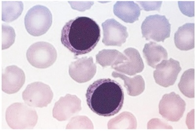
A Monócitos.
B Linfócitos.
C Neutrófilos.
D Basófilos.
E Eosinófilos.
Questão 347 · Sistema Imune e Hematológico · 4000200841Observe a imagem a seguir, que representa uma lâmina de esfregaço sanguíneo corada com Giemsa: Figura: Células do sangue. Fonte: Arquivos Estratégia Med. A grande célula nucleada presente na imagem é classificada como:
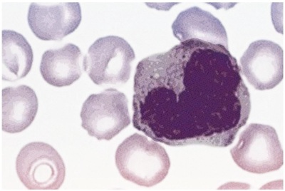
A Eritrócito.
B Basófilo.
C Eosinófilo.
D Neutrófilo.
E Monócito.
Questão 348 · Sistema Imune e Hematológico · 4000200840Analise atentamente a ilustração abaixo, que representa uma lâmina de esfregaço sanguíneo corada com Giemsa: Figura: Células do Sangue. Fonte: Arquivos Estratégia Med. A célula grande nucleada presente no centro da imagem é denominada:

A Eritrócito.
B Neutrófilo.
C Basófilo.
D Monócito.
E Eosinófilo.
Questão 349 · Sistema Imune e Hematológico · 4000200839Veja a figura a seguir, que representa uma lâmina histológica de esfregaço sanguíneo: Figura: Células do sangue, coloração Giemsa. Fonte: Arquivos Estratégia Med. As três células nucleadas no centro da imagem são denominadas:
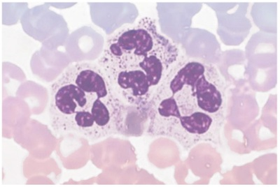
A Neutrófilos.
B Basófilos.
C Eosinófilos.
D Eritrócitos.
E Linfócitos.
Questão 350 · Sistema Imune e Hematológico · 4000200838Observe a imagem a seguir, que representa uma lâmina de esfregaço sanguíneo corada com Giemsa: Figura: Células do sangue. Fonte: Arquivos Estratégia Med. As células representadas são classificadas como:
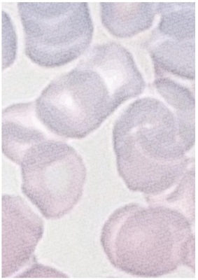
A Eritrócitos.
B Neutrófilos.
C Linfócitos.
D Monócitos.
E Plaquetas.
Questão 351 · SemiologiaPropedêutica Médica · 4000200837Quais estruturas costumam se localizar na fossa ilíaca direita?
A Fígado e baço.
B Baço e apêndice vermiforme.
C Cólon transverso e bexiga.
D Ceco e apêndice vermiforme.
E Bexiga e ceco.
Questão 352 · SemiologiaPropedêutica Médica · 4000200836Assinale a alternativa que melhor define o conceito de descompressão brusca positiva (DB+):
A DB+ é a queda da pressão arterial em mais de 20 mmHg quando o paciente assume a posição ortostática.
B DB+ é a presença de dor à palpação da região abdominal.
C DB+ é a queda da saturação arterial de oxigênio, experienciada de maneira rápida pelo paciente.
D DB+ é a presença de dor após a liberação de uma pressão realizada pelo examinador sobre o abdome do examinado.
E DB+ é ausência de movimentos respiratórios.
Questão 353 · SemiologiaPropedêutica Médica · 4000200835Qual das estruturas abaixo é frequentemente palpável na fossa ilíaca esquerda?
A Cólon ascendente.
B Fígado.
C Baço.
D Cólon sigmoide.
E Rim esquerdo.
Questão 354 · SemiologiaPropedêutica Médica · 4000200834Ao examinar um paciente do sexo masculino de 60 anos, tabagista e portador de hipertensão arterial sistêmica, você identi ca uma massa palpável e pulsátil na região hipogástrica, que emite um sopro sistólico mediante ausculta com estetoscópio. Marque a alternativa que contém a hipótese diagnóstica mais provável para esse caso:
A Hepatomegalia.
B Esplenomegalia.
C Neoplasia de cólon.
D Aneurisma de aorta abdominal.
E Abdome agudo obstrutivo.
Revisar: possível letra faltando em enunciado
Questão 355 · SemiologiaPropedêutica Médica · 4000200833Você é chamado à enfermaria para examinar um paciente que possui o diagnóstico de neoplasia do trato gastrintestinal com metástase peritoneal próxima à região da cicatriz umbilical. Como é esperado que estejam a percussão e a palpação da área acometida pelo tumor?
A Espera-se que a região de implantação tumoral emita som maciço à percussão e apresente massa palpável aderida à parede abdominal.
B É esperado que a região de implantação tumoral seja timpânica à percussão e não apresente massa palpável.
C Espera-se que a região de implantação apresente macicez móvel à percussão, que muda de localização conforme o paciente altera seu decúbito, e ausência de massa palpável.
D É esperado que a região de implantação tumoral seja timpânica à percussão e apresente massa palpável aderida à parede abdominal.
E Espera-se que a região de implantação tumoral seja maciça à percussão e apresente coleção líquida palpável na região da cicatriz umbilical.
Questão 356 · SemiologiaPropedêutica Médica · 4000200832Em qual setor do abdome é possível palpar o baço de tamanho normal?
A Hipocôndrio esquerdo.
B Fossa ilíaca esquerda.
C Epigástrio.
D Flanco esquerdo.
E O baço de tamanho normal não é palpável.
Questão 357 · SemiologiaPropedêutica Médica · 4000200831Em qual setor do abdome é realizada a palpação do fígado?
A Hipocôndrio esquerdo.
B Hipocôndrio direito.
C Epigástrio.
D Hipogástrio.
E Flanco esquerdo.
Questão 358 · SemiologiaPropedêutica Médica · 4000200830Em que consiste o sinal de Giordano e o que ele indica ao examinador?
A O sinal de Giordano é a percussão dolorosa da região lombar do paciente, utilizando a borda hipotenar da mão para aplicar um estímulo moderado que normalmente não seria doloroso. Indica a presença de inflamação da cápsula renal.
B O sinal de Giordano é a presença de dor e interrupção respiratória mediante pressão do examinador sobre o ponto vesicular. Indica a presença de colecistite.
C O sinal de Giordano é a percussão maciça do espaço de Traube, que normalmente encontra-se desocupado. Na maioria dos casos, indica a presença de esplenomegalia.
D O sinal de Giordano é a palpação do fígado com a borda distando mais de 2 cm do rebordo costal direito. É indicativo de hepatomegalia.
E O sinal de Giordano consiste em uma área percussão maciça disposta em um semicírculo ao redor de uma área central de percussão timpânica. É indicativo de ascite.
Questão 359 · SemiologiaPropedêutica Médica · 4000200829Você recebe no ambulatório um paciente com queixa de aumento de volume abdominal e deseja esclarecer se esse aumento é decorrente de ascite. Assinale a alternativa que contém três técnicas semiológicas que revelam a presença de ascite:
A Sinal de Giordano, semicírculo de Skoda e ausculta das alças intestinais.
B Sinal do piparote, percussão do espaço de Traube e palpação do cólon sigmoide.
C Sinal de Murphy, ausculta das alças intestinas e pesquisa de sopros vasculares.
D Sinal de Giordano, percussão do espaço de Traube e pesquisa de macicez móvel.
E Sinal do piparote, semicírculo de Skoda e pesquisa de macicez móvel.
Questão 360 · SemiologiaPropedêutica Médica · 4000200828Quais são os limites anatômicos do espaço de Traube, utilizado para a pesquisa de esplenomegalia?
A Limite superior: diafragma. Limite inferior: rebordo costal direito. Limite lateral: linha axilar anterior. Limite medial: linha mediana.
B Limite superior: epigástrio. Limite inferior: hipogástrio. Limites laterais: flanco esquerdo e flanco direito.
C Limite superior: linha horizontal no nível mais alto da crista ilíaca. Limite inferior: ligamento inguinal esquerdo. Limite lateral: osso do quadril. Limite medial: hipogástrio.
D Limite superior: diafragma. Limite inferior: rebordo costal esquerdo. Limite lateral: linha axilar anterior. Limite medial: lobo esquerdo do fígado.
E Limite superior: linha horizontal no nível mais alto da crista ilíaca. Limite inferior: ligamento inguinal direito. Limite lateral: osso do quadril. Limite medial: hipogástrio.
Questão 361 · SemiologiaPropedêutica Médica · 4000200827Em qual área da região abdominal é esperado que se encontre som maciço à percussão, sem que isso represente alteração patológica?
A Hipocôndrio esquerdo.
B Epigástrio
C Hipocôndrio direito.
D Flancos.
E Fossa ilíaca.
Questão 362 · SemiologiaPropedêutica Médica · 4000200826Assinale a alternativa que contém os dois principais sons pesquisados durante a ausculta da região abdominal:
A Murmúrios vesiculares e ruídos hidroaéreos.
B Ruídos hidroaéreos e bulhas.
C Ruídos hidroaéreos e sopros vasculares.
D Sons de Korotkoff e sopros vasculares.
E Murmúrios vesiculares e sopros vasculares.
Questão 363 · SemiologiaPropedêutica Médica · 4000200825Quais dos seguintes achados devem ser valorizados durante a inspeção do abdome?
A Alterações da pele ou da pilificação.
B Presença de lesões ou cicatrizes.
C Circulação colateral venosa.
D Descrição do formato do abdome.
E Todas as alternativas.
Questão 364 · SemiologiaPropedêutica Médica · 4000200824Qual o motivo para a inversão da ordem habitual de exame físico (inspeção, palpação, percussão e ausculta) para inspeção seguida de ausculta, quando se realiza o exame do abdome?
A É apenas uma convenção para facilitar a comunicação entre os observadores, sem significado fisiológico.
B O motivo para essa inversão da ordem habitual é que a palpação ou a percussão do abdome são fatores que interferem na ausculta, podendo alterar o padrão dos ruídos hidroaéreos.
C A razão para que a ordem habitual do exame físico seja invertida no exame abdominal é que os dados da ausculta dessa região são sempre mais relevantes na descrição dos quadros, devendo ser colocados em evidência.
D A ausculta é realizada antes da palpação e da percussão porque ela é o dado que demonstra a localização dos órgãos abdominais e orienta a palpação e percussão do examinador.
E Realiza-se a ausculta do abdome primeiro porque os dados obtidos com esse exame são de menor relevância para os quadros, e devem ser logo eliminados do “checklist” do examinador.
Questão 365 · SemiologiaPropedêutica Médica · 4000200823Em um paciente com doença pulmonar obstrutiva crônica com padrão de en sema pulmonar, como é esperado que estejam o frêmito toracovocal (FTV), a percussão e a ausculta da região acometida pela doença, respectivamente:
A FTV aumentado, som timpânico à percussão e murmúrios vesiculares presentes.
B FTV diminuído, som submaciço à percussão e murmúrios vesiculares presentes.
C FTV aumentado, som submaciço à percussão e murmúrios vesiculares diminuídos.
D FTV diminuído, som submaciço à percussão e murmúrios vesiculares diminuídos.
E FTV diminuído, som timpânico à percussão e murmúrios vesiculares diminuídos.
Questão 366 · SemiologiaPropedêutica Médica · 4000200822Em um paciente com condensação pulmonar decorrente de pneumonia, como é mais provável que estejam o frêmito toracovocal (FTV), a percussão e a ausculta da região condensada, respectivamente:
A FTV aumentado, som submaciço à percussão e murmúrios vesiculares ausentes com estertores finos na expiração.
B FTV reduzido, som timpânico à percussão e murmúrios vesiculares ausentes sem ruídos adventícios.
C FTV aumentado, som timpânico à percussão e murmúrios vesiculares presentes sem ruídos adventícios.
D FTV reduzido, som submaciço à percussão e murmúrios vesiculares presentes com estertores finos na expiração.
E FTV reduzido, som claro pulmonar à percussão e murmúrios vesiculares presentes com estertores finos na expiração.
Questão 367 · SemiologiaPropedêutica Médica · 4000200821Qual dos seguintes achados é considerado eminentemente patológico na ausculta pulmonar?
A Murmúrios vesiculares.
B Som laringotraqueal.
C Respiração brônquica.
D Atrito pleural.
E Ausculta da voz abafada.
Questão 368 · SemiologiaPropedêutica Médica · 4000200820Marque a alternativa que contém um exemplo de ausculta pulmonar normal:
A Murmúrios vesiculares presentes, ausculta da voz normal, sem ruídos adventícios.
B Murmúrios vesiculares abolidos, ausculta da voz claramente distinguível, sem ruídos adventícios.
C Murmúrios vesiculares presentes, ausculta da voz normal, presença de atrito pleural.
D Murmúrios vesiculares diminuídos, ausculta da voz normal, estertores finos em bases pulmonares bilateralmente.
E Murmúrios vesiculares presentes, ausculta da voz claramente distinguível, roncos altos durante a inspiração em base esquerda.
Questão 369 · SemiologiaPropedêutica Médica · 4000200819Considere o seguinte achado de exame físico pulmonar: “Som timpânico à percussão em ápices e bases pulmonares bilateralmente”. A qual dos pacientes a seguir é mais provável que pertença o exame supracitado:
A GFA, 12 anos, sexo masculino. Internado no Pronto Socorro há 1 dia por pneumonia lobar à direita.
B HBF, 70 anos, sexo masculino. Tabagismo 50 anos-maço. Internado na enfermaria há 7 dias por doença pulmonar obstrutiva crônica descompensada.
C VAS, 20 anos, sexo masculino. Internado na enfermaria da cirurgia geral no 3º dia pós-operatório de apendicectomia. Sem queixas.
D HD, 29 dias de idade, sexo masculino. Admitido ao Pronto Socorro com sinais de dispneia e diagnosticado com bronquiolite.
E BNT, 20 anos, sexo feminino. Admitida ao Pronto Socorro por crise asmática aguda, controlada com broncodilatadores. Estável e com alta programada.
Questão 370 · SemiologiaPropedêutica Médica · 4000200818Você, estudante de Medicina, está na aula de Semiologia treinando a percussão do tórax em seus colegas de turma, preparando-se para ir ao ambulatório examinar pacientes. Ao percutir a região do quinto espaço intercostal direito de seu parceiro de exame (um estudante jovem, hígido e sem comorbidades), você observa um som maciço advindo daquela área. Qual a mais provável origem desse som?
A Área cardíaca.
B Bolha aérea gástrica.
C Derrame pleural.
D Parênquima hepático.
E Cavitação aérea decorrente de tuberculose pulmonar ativa.
Questão 371 · SemiologiaPropedêutica Médica · 4000200817Durante a percussão do tórax de um paciente internado na enfermaria, você, estudante de Medicina, escuta um som submaciço localizado na base pulmonar esquerda. O restante do pulmão apresenta som claro pulmonar à percussão. Qual dos seguintes diagnósticos é mais provável de estar acometendo a base pulmonar esquerda desse paciente?
A Enfisema pulmonar.
B Pneumonia.
C Derrame pleural.
D Pneumotórax.
E Cavitações aéreas.
Questão 372 · SemiologiaPropedêutica Médica · 4000200816Como é denominada a vibração palpável decorrente da transmissão da voz ao longo do parênquima pulmonar, e em qual situação você esperaria que ela estivesse aumentada?
A Murmúrio vesicular, aumentado em casos de derrame pleural.
B Frêmito toracovocal, aumentado em casos de enfisema pulmonar.
C Frêmito toracovocal, aumentado em casos de consolidação pulmonar.
D Ausculta da voz, aumentada em casos de derrame pleural.
E Murmúrio vesicular, aumentado em casos de enfisema pulmonar.
Questão 373 · SemiologiaPropedêutica Médica · 4000200815Assinale a alternativa que descreve a técnica correta de pesquisa da expansibilidade torácica:
A A expansibilidade torácica é adequadamente avaliada apenas pela inspeção do movimentos respiratórios, não sendo necessário rotineiramente pôr as mãos no paciente.
B A expansibilidade torácica é avaliada com maior sensibilidade colocando as mãos sobre o dorso do paciente e observando o afastamento rítmico dos dedos. Devido às estruturas interpostas, não é possível avaliar a expansibilidade na região anterior do tórax.
C A expansibilidade torácica pode ser avaliada tanto na região anterior quanto na região posterior do tórax, e consiste em posicionar as mãos do examinador ao redor do paciente e observar o afastamento rítmico dos dedos conforme o examinado respira.
D A expansibilidade torácica é avaliada mediante as características fonéticas da respiração auscultada, que muda seu padrão sonoro conforme o tórax expande mais ou menos.
E A expansibilidade torácica é avaliada por meio da percussão do tórax, que se torna mais timpânico conforme a magnitude dos movimentos respiratórios se intensifica.
Questão 374 · SemiologiaPropedêutica Médica · 4000200814Qual a primeira etapa do exame físico pulmonar?
A Ausculta.
B Percussão.
C Expansibilidade torácica.
D Palpação do frêmito toracovocal.
E Inspeção estática e dinâmica.
Questão 375 · SemiologiaPropedêutica Médica · 4000200813Qual a referência utilizada na prática para localizar o segundo espaço intercostal durante o exame físico?
A O segundo espaço intercostal se localiza na região superior à fúrcula esternal.
B O segundo espaço intercostal é o espaço no qual é possível palpar o
C Abaixo do apêndice xifoide do esterno podemos localizar o segundo espaço intercostal.
D Considera-se que o espaço intercostal na mesma altura dos mamilos é o segundo espaço.
E O segundo espaço intercostal se localiza lateral à junção do corpo do esterno com o manúbrio esternal.
Questão 376 · SemiologiaPropedêutica Médica · 4000200812A pesquisa de frêmitos faz parte do exame cardíaco, constituindo parte da etapa de palpação. Entre as alternativas abaixo, qual a melhor definição de frêmito no contexto do exame do coração?
A Frêmitos são o aspecto palpável de um sopro cardíaco.
B Frêmito é o som do choque da ponta do ápice do coração contra a parede torácica, representando a contração cardíaca.
C Frêmitos são ruídos aéreos que indicam a presença de ar dentro da cavidade pericárdica.
D Frêmito é o som decorrente do atrito pericárdico.
E Frêmitos são ruídos decorrentes da atividade cardíaca que indicam o funcionamento normal do coração.
Questão 377 · SemiologiaPropedêutica Médica · 4000200811Em qual das áreas de ausculta é mais indicado pesquisar um sopro que tem origem em uma das valvas semilunares do coração?
A Foco mitral.
B Foco aórtico.
C Foco tricúspide.
D Ausculta do abdome.
E Ausculta do dorso.
Questão 378 · SemiologiaPropedêutica Médica · 4000200810O tempo de enchimento capilar (TEC) é um sinal que pode indicar má perfusão periférica nos pacientes, fazendo parte do exame físico geral. Em qual dos locais abaixo é mais indicado fazer a pesquisa do TEC?
A Face.
B Dorso da mão.
C Abdome.
D Leito ungueal.
E Antebraço.
Questão 379 · SemiologiaPropedêutica Médica · 4000200809A ausculta cardíaca é uma etapa fundamental do exame do coração, capaz de oferecer muitas informações valiosas para o diagnóstico. Imagine que você, estudante de Medicina, ausculta um paciente e não encontra nenhuma alteração no exame. Entre as alternativas abaixo, qual seria a maneira mais correta de registrar essa informação no prontuário?
A Bulhas rítmicas, normofonéticas, em dois tempos (B1 e B2), sem sopros.
B Bulhas rítmicas taquicárdicas (FC=110 bpm), em dois tempos (B1 e B2), sem sopros.
C Bulhas rítmicas taquicárdicas (FC=115 bpm), em três tempos (B1, B2 e B3), ritmo de galope, sem sopros.
D Bulhas rítmicas hipofonéticas, em três tempos (B1, B2 e B3), ritmo de galope, sem sopros.
E Bulhas rítmicas, normofonéticas, em dois tempos (B1 e B2), com presença de sopro sistólico (++/4+) em foco mitral.
Questão 380 · SemiologiaPropedêutica Médica · 4000200808Uma parte fundamental do exame cardíaco é a inspeção das veias jugulares. Uma distensão das veias jugulares, quando o paciente está deitado a 45º, pode indicar qual dos processos abaixo:
A Hipotensão sistêmica.
B Hipertensão venosa.
C Perfusão de extremidades adequada.
D Hipotensão venosa.
E Redução da volemia.
Questão 381 · Sistema Locomotor · SemiologiaPropedêutica Médica · 4000200807Assinale a alternativa que melhor descreve o mecanismo de surgimento da quarta bulha (B4) na ausculta cardíaca:
A A quarta bulha é um sopro audível na estenose aórtica, que decorre da tentativa de ejetar o sangue forçosamente contra a valva aórtica enrijecida durante a sístole ventricular.
B A quarta bulha é o som fisiológico produzido pelo desdobramento da primeira bulha em dois sons quando ela é auscultada durante a inspiração.
C A quarta bulha tem origem no choque do sangue ejetado pela contração atrial contra a massa de sangue represada no ventrículo no fim da diástole.
D A quarta bulha é um sopro bastante característico que ocorre durante a diástole, também chamada de sopro em ruflar, é decorrente do enrijecimento da valva mitral nos casos de estenose mitral.
E A quarta bulha é o som decorrente do fechamento da valva pulmonar no início da diástole ventricular.
Questão 382 · Sistema Locomotor · SemiologiaPropedêutica Médica · 4000200806Assinale a alternativa que melhor descreve o mecanismo de surgimento da terceira bulha (B3) na ausculta cardíaca:
A A terceira bulha representa o fechamento das valvas atrioventriculares do coração no início da sístole ventricular.
B A terceira bulha é causada pela desaceleração brusca do sangue que se choca contra a parede ventricular durante a fase de enchimento rápido do ciclo cardíaco.
C A terceira bulha representa o fechamento das valvas semilunares do coração no início da diástole ventricular.
D A terceira bulha é um sopro audível em casos de insuficiência mitral, nos quais a valva mitral não é capaz de se fechar adequadamente e deixa refluir sangue para os átrios durante a sístole ventricular.
E A terceira bulha tem origem no choque da ponta do ápice cardíaco contra a parede torácica durante a contração ventricular.
Questão 383 · Sistema Locomotor · SemiologiaPropedêutica Médica · 4000200805Marque a alternativa que associa corretamente os fenômenos siológicos que dão origem aos sons auscultáveis durante o exame cardíaco normal, chamados primeira bulha (B1) e segunda bulha (B2):
A B1 – Fechamento da valva mitral. B2 – Fechamento da valva tricúspide.
B B1 – Fechamento da valva pulmonar. B2 – Fechamento da valva aórtica.
C B1 – Fechamento das valvas aórtica e pulmonar. B2 – Fechamento das valvas mitral e tricúspide.
D B1 – Fechamento das valvas mitral e tricúspide. B2 – Fechamento das valvas aórtica e pulmonar.
E B1 – Fechamento da valva aórtica. B2 – Fechamento da valva mitral.
Questão 384 · Sistema Locomotor · SemiologiaPropedêutica Médica · 4000200804Durante o exame cardíaco, a pesquisa do você esperaria encontrar o ictus cordis em um paciente saudável?
A No 4º ou 5º espaço intercostal, próximo à linha hemiclavicular esquerda.
B Na fossa supraclavicular esquerda.
C No 4º ou 5º espaço intercostal, junto à borda esquerda do osso esterno.
D Na fúrcula esternal.
E No 4º ou 5º espaço intercostal, na região da linha hemiclavicular direita.
Questão 385 · Sistema Locomotor · SemiologiaPropedêutica Médica · 4000200803A frequência respiratória é um importante parâmetro a ser avaliado durante o exame físico, sendo um indicador de descompensação quando está muito alterada. Qual das seguintes patologias pode levar a um aumento da frequência respiratória?
A Hipotireoidismo.
B Bronquite crônica.
C Intoxicação por opioides.
D Pneumonia.
E Rebaixamento do nível de consciência.
Questão 386 · Sistema Locomotor · SemiologiaPropedêutica Médica · 4000200802Durante o exame físico dos pacientes, é importante que se avalie a frequência cardíaca e suas alterações. Qual é a faixa de frequência cardíaca considerada normal em adultos sadios?
A 60 a 100 batimentos por minuto.
B 60 a 80 batimentos por minuto.
C 80 a 100 batimentos por minuto.
D Acima de 100 batimentos por minuto.
E Abaixo de 60 batimentos por minuto.
Questão 387 · Sistema Locomotor · SemiologiaPropedêutica Médica · 4000200801A medida da temperatura dos pacientes pode ser utilizada para diagnosticar febre, que sugere a instalação de determinadas doenças. Quais das seguintes situações clínicas podem cursar com a presença de febre?
A Infecções.
B Doenças inflamatórias.
C Doenças autoimunes.
D Neoplasias.
E Todas as alternativas.
Questão 388 · Sistema Locomotor · SemiologiaPropedêutica Médica · 4000200800Assinale a alternativa que constitui um erro de técnica durante a palpação dos pulsos arteriais periféricos:
A Palpar simultaneamente os pulsos equivalentes contralaterais.
B Palpar o pulso utilizando o dedo polegar.
C Calcular a frequência de pulso contando o número de pulsos por 30 segundos e multiplicando o valor obtido por 2.
D Palpar os pulsos do membros no sentido de distal para proximal.
E Analisar a ritmicidade e a intensidade dos pulsos.
Questão 389 · Sistema Locomotor · SemiologiaPropedêutica Médica · 4000200799Qual a importância de realizar, sobretudo em pacientes idosos, a aferição da pressão arterial em decúbito dorsal seguida por uma medida da mesma pressão em pé?
A Prover maior conforto ao paciente durante o exame.
B Testar a funcionalidade do esfigmomanômetro contra a gravidade.
C Verificar o equilíbrio do paciente.
D Aumentar a fidelidade do exame ao realizar duas medidas.
E Realizar o diagnóstico de hipotensão postural.
Questão 390 · Sistema Locomotor · SemiologiaPropedêutica Médica · 4000200798A medida da pressão arterial é parte fundamental do exame físico geral, devendo ser realizada para a grande maioria dos pacientes. Quais valores de pressão arterial são utilizados como corte para o diagnóstico de hipertensão arterial sistêmica?
A Pressão sistólica maior do que 120 mmHg e diastólica maior do que 80 mmHg.
B Pressão diastólica maior do que 120 mmHg e sistólica maior do que 80 mmHg.
C Pressão sistólica maior do que 140 mmHg e diastólica maior do que 90 mmHg.
D Pressão diastólica maior do que 140 mmHg e sistólica maior do que 90 mmHg.
E Pressão sistólica maior do que 180 mmHg e diastólica maior do que 120 mmHg.
Questão 391 · Sistema Locomotor · SemiologiaPropedêutica Médica · 4000200797Como é realizado o cálculo do índice de massa corpórea (IMC)?
A IMC = Peso (Kg) / Altura² (m).
B IMC = Circunferência Abdominal / Circunferência do Quadril.
C IMC = Peso (Kg) / Altura (cm).
D IMC = Peso (g) / Área de superfície corpórea (m²).
E IMC = Circunferência do Quadril / Circunferência Abdominal.
Questão 392 · Sistema Locomotor · SemiologiaPropedêutica Médica · 4000200796O estado de hidratação do paciente pode ser percebido ao exame clínico, mas existem diversas situações que di cultam essa análise. Assinale a alternativa que contém uma situação que pode falsear o diagnóstico de desidratação:
A Hemorragia.
B Alterações senis.
C Diarreias e vômitos.
D Redução da ingesta hídrica no paciente acamado.
E Febre persistente.
Questão 393 · Sistema Locomotor · SemiologiaPropedêutica Médica · 4000200795Durante o exame físico geral, é importante classificar o paciente quanto à presença de dispneia no momento da consulta. Qual o conceito que melhor define dispneia?
A Número aumentado de incursões respiratórias por minuto.
B Número reduzido de incursões respiratórias por minuto.
C Presença de líquido nos alvéolos do pulmão.
D Redução da amplitude dos movimentos respiratórios.
E Relato subjetivo de “falta de ar” por parte do paciente ou alteração visível do padrão respiratório.
Questão 394 · Sistema Locomotor · SemiologiaPropedêutica Médica · 4000200794Qual dos seguintes parâmetros se traduz na coloração azulada clinicamente observável na pele e nas mucosas, denominada cianose?
A Aumento do nível sérico de cálcio.
B Redução da filtração glomerular.
C Queda na concentração de hemoglobina.
D Elevação da proteína C reativa.
E Queda na saturação de oxigênio da hemoglobina.
Questão 395 · Sistema Locomotor · SemiologiaPropedêutica Médica · 4000200793Marque a alternativa que contém o parâmetro laboratorial responsável pela coloração amarelada presente na pele e nos olhos de alguns doentes, chamada icterícia:
A Hiperbilirrubinemia.
B Elevação do hematócrito.
C Creatinina elevada.
D Hiperglicemia.
E Hipercalemia.
Questão 396 · Sistema Locomotor · SemiologiaPropedêutica Médica · 4000200792Em qual região deve ser preferencialmente realizada a inspeção do estado de palidez dos pacientes?
A Pele do dorso.
B Esclera ocular.
C Palma das mãos.
D Dobras cutâneas.
E Pele sobre o olécrano.
Questão 397 · Sistema Locomotor · SemiologiaPropedêutica Médica · 4000200791A avaliação do estado geral do paciente é normalmente a primeira parte do exame físico, e consiste em:
A Medir o peso e a altura do paciente.
B Realizar o interrogatório sobre diversos aparelhos (ISDA).
C Registrar a impressão inicial que o médico tem do paciente.
D Avaliar o estado neurológico do paciente, graduando-o na escala de coma de Glasgow e na escala RASS.
E Examinar a pele, mucosas e pulsos arteriais.
Questão 398 · Sistema Locomotor · SemiologiaPropedêutica Médica · 4000200790Em que consiste a investigação sobre os diversos aparelhos (ISDA)?
A Investigação direcionada e objetiva guiada pelos sistemas do paciente, de forma a rastrear queixas não trazidas pelo doente que possam ser úteis no diagnóstico atual ou sirvam para orientá-lo em outro processo patológico.
B Questionamento exaustivo acerca de todos os órgãos e sistemas, que deve ser realizada para todos os pacientes.
C Exame físico minucioso, geralmente realizado no sentido da cabeça aos pés, e contendo inspeção, palpação, percussão e ausculta de todos os órgãos relevantes nesse caminho.
D Exame clínico e solicitação de exames complementares sobre os diversos sistemas que compõem o organismo do paciente, de forma a compreender o panorama geral da situação de saúde do doente.
E Questionamento geral a respeito dos sistemas do paciente, sem buscar ativamente algum sintoma.
Questão 399 · Sistema Locomotor · SemiologiaPropedêutica Médica · 4000200789Qual das informações a seguir deve ser perguntada durante a investigação de hábitos e vícios da anamnese?
A Tabagismo.
B Presença de Hipertensão Arterial na família.
C Cirurgias prévias.
D Imunizações.
E Antecedentes obstétricos.
Questão 400 · Sistema Locomotor · SemiologiaPropedêutica Médica · 4000200788Na seção de antecedentes familiares da anamnese, o médico questiona acerca do estado de saúde dos integrantes da família imediata do paciente. Qual das seguintes doenças chama mais atenção, pelo seu componente genético, quando mencionada em um parente de 1º grau do paciente?
A Diabetes Mellitus.
B Doença renal crônica.
C Insuficiência cardíaca congestiva.
D Traumatismo cranioencefálico.
E Infecções bacterianas.
Questão 401 · Sistema Locomotor · SemiologiaPropedêutica Médica · 4000200787Os antecedentes pessoais do paciente são importante parte da anamnese, fornecendo ao médico informações valiosas. Considerando a divisão clássica da anamnese, assinale a alternativa que contém um aspecto que deve ser perguntado durante a investigação dos antecedentes pessoais:
A Naturalidade do paciente.
B Histórico de câncer na família.
C Motivo principal da consulta médica.
D Medicamentos em uso.
E Idade do paciente.
Questão 402 · Sistema Locomotor · SemiologiaPropedêutica Médica · 4000200786Durante a descrição de um sintoma trazido pelo paciente, é importante que o médico caracterize adequadamente diversos aspectos relevantes da queixa. Qual das alternativas abaixo contém aspectos que devem ser interrogados na investigação de um sintoma?
A Duração.
B Localização.
C Quantidade.
D Qualidade.
E Todas as alternativas.
Questão 403 · Sistema Locomotor · SemiologiaPropedêutica Médica · 4000200785A identi cação é a primeira parte de uma anamnese médica, permitindo que o pro ssional de saúde conheça o paciente que está sendo cuidado. Pertencem à identificação do paciente os seguintes dados abaixo, exceto:
A Idade.
B Sexo.
C Ocupação.
D Peso e altura.
E Naturalidade.
Questão 404 · Sistema Locomotor · SemiologiaPropedêutica Médica · 4000200784Na prática médica, como se diferenciam os conceitos de sintoma e de sinal?
A Os sintomas são alterações de menor relevância para a doença atual, enquanto que os sinais são as alterações consideradas mais relevantes.
B Sintomas são queixas de causa psíquica (como tristeza, ansiedade etc.) e sinais são queixas físicas (como cefaleia e síncope, por exemplo).
C Os sintomas são alterações pregressas, fazendo parte do histórico do paciente, e os sinais são alterações atuais do organismo.
D Os sintomas são as queixas referidas pelo paciente (dor, náuseas, astenia) e os sinais são as alterações percebidas pelo médico (hipertensão, febre).
E Sintomas são queixas que fazem parte de um conjunto (síndrome), e sinais são alterações isoladas percebidas pelo médico.
Questão 405 · Sistema Locomotor · SemiologiaPropedêutica Médica · 4000200783A articulação do tornozelo ocorre entre tíbia, fíbula e tálus, sendo este último pertencente aos ossos do tarso. Classi que a articulação do tornozelo de acordo com a sua morfologia:
A Articulação sinovial do tipo plana.
B Articulação sinovial do tipo gínglimo.
C Articulação sinovial do tipo selar.
D Articulação sinovial do tipo elipsoidea.
E Articulação sinovial do tipo esferoidea.
Questão 406 · Sistema Locomotor · SemiologiaPropedêutica Médica · 4000200782Além da ação dos músculos adjacentes, a articulação do joelho também é fortalecida por poderosos ligamentos, localizados tanto no interior quanto no exterior da cápsula articular. Qual das alternativas abaixo cita corretamente os ligamentos externos do joelho?
A Ligamento da patela, ligamento colateral tibial, ligamento colateral fibular, ligamento poplíteo oblíquo e ligamento poplíteo arqueado.
B Ligamento talofibular anterior, ligamento da patela, ligamento poplíteo anterior, ligamento poplíteo posterior e ligamento poplíteo lateral.
C Ligamento cruzado anterior e ligamento cruzado posterior.
D Menisco medial e menisco lateral.
E Ligamento da patela, ligamento tibiofemoral, ligamento colateral tibial, ligamento colateral fibular e ligamento colateral posterior.
Questão 407 · Sistema Locomotor · SemiologiaPropedêutica Médica · 4000200781A articulação do joelho é uma das mais importantes do membro inferior, sendo um frequente alvo de lesões traumáticas ou degenerativas. Classifique a articulação do joelho de acordo com a sua morfologia:
A Articulação sinovial do tipo esferoidea.
B Articulação sinovial do tipo gínglimo.
C Articulação sinovial do tipo selar.
D Articulação sinovial do tipo elipsoidea.
E Articulação sinovial do tipo plana.
Questão 408 · Sistema Locomotor · SemiologiaPropedêutica Médica · 4000200780A articulação do quadril é fundamental para a sustentação do peso do corpo e para a mobilidade do membro inferior. Assinale a alternativa que classifica corretamente a articulação do quadril:
A Articulação sinovial do tipo gínglimo.
B Articulação sinovial do tipo esferoidea.
C Articulação fibrosa do tipo sindesmose.
D Articulação cartilaginosa do tipo sínfise.
E Articulação sinovial do tipo selar.
Questão 409 · Sistema Locomotor · 4000200779Qual músculo do compartimento posterior da perna é o mais forte efetor da flexão plantar do tornozelo?
A Músculo sóleo.
B Músculo gastrocnêmio medial.
C Músculo gastrocnêmio lateral.
D Músculo plantar.
E Músculo poplíteo.
Questão 410 · Sistema Locomotor · 4000200778O nervo isquiático se rami ca na altura da fossa poplítea, dando origem a ramos que inervam a perna e o pé. Assinale a alternativa que correlaciona corretamente os nervos derivados do isquiático e o compartimento da perna que eles suprem:
A Nervo tibial anterior– Compartimento anterior da perna. Nervo fibular profundo – Compartimento lateral da perna. Nervo tibial posterior– Compartimento posterior da perna.
B Nervo tibial anterior – Compartimento anterior da perna. Nervo fibular – Compartimento lateral da perna. Nervo tibial posterior – Compartimento posterior da perna.
C Nervo tibial superficial – Compartimento anterior da perna. Nervo fibular – Compartimento lateral da perna. Nervo tibial profundo – Compartimento posterior da perna.
D Nervo fibular superficial – Compartimento anterior da perna. Nervo fibular profundo – Compartimento lateral da perna. Nervo tibial – Compartimento posterior da perna.
E Nervo fibular profundo – Compartimento anterior da perna. Nervo fibular superficial – Compartimento lateral da perna. Nervo tibial – Compartimento posterior da perna.
Revisar: possível letra faltando em enunciado
Questão 411 · Sistema Locomotor · 4000200777Assinale a alternativa que descreve corretamente os principais músculos da região posterior da coxa e suas ações em conjunto:
A Músculo bíceps femoral, músculo semitendíneo e músculo semimembranáceo. Realizam extensão do quadril e flexão do joelho.
B Músculo tríceps femoral e músculo semitendíneo. Realizam extensão do quadril e flexão do joelho.
C Músculo bíceps femoral, músculo grácil e músculo adutor magno. Realizam flexão do quadril e extensão do joelho.
D Músculo bíceps femoral, músculo semitendíneo e músculo semimembranáceo. Realizam flexão do quadril e extensão do joelho.
E Músculo tríceps femoral e músculo semitendíneo. Realizam flexão do quadril e extensão do joelho.
Questão 412 · Sistema Locomotor · 4000200776O músculo glúteo máximo forma a maior parte do volume da região glútea, recobrindo quase todos os músculos ali presentes. Cite as duas principais funções do glúteo máximo:
A Extensão do quadril e rotação lateral da coxa.
B Abdução da coxa e rotação medial da coxa.
C Abdução da coxa e rotação lateral da coxa.
D Flexão do quadril e flexão do tronco.
E Flexão do quadril, abdução da coxa e estabilização do joelho.
Questão 413 · Sistema Locomotor · 4000200775Marque a alternativa que descreve a principal artéria da região ântero-medial da coxa, sua origem proximal e continuação distal no membro inferior:
A Artéria femoral, origina-se da artéria ilíaca externa e continua distalmente a partir da região do joelho como artéria poplítea.
B Artéria obturatória, origina-se a partir da artéria ilíaca interna e continua distalmente a partir da região do joelho como artéria tibial anterior.
C Artéria femoral, origina-se da artéria ilíaca interna e continua distalmente a partir da região do joelho como artéria poplítea.
D Artéria obturatória, origina-se a partir da artéria ilíaca externa a continua distalmente a partir da região do joelho como artéria poplítea.
E Artéria femoral, origina-se a partir da artéria ilíaca externa e continua distalmente a partir da região do joelho como artéria femoral profunda.
Questão 414 · Sistema Locomotor · 4000200774Qual a função geral dos músculos do compartimento medial da coxa e o principal nervo que confere motricidade a eles?
A Adução da coxa e nervo femoral.
B Abdução da coxa e nervo isquiático.
C Flexão do quadril e nervo isquiático.
D Extensão do quadril e nervo obturatório.
E Adução da coxa e nervo obturatório.
Questão 415 · Sistema Locomotor · 4000200773Qual músculo do compartimento anterior da coxa é o principal flexor do quadril?
A Músculo quadríceps femoral.
B Músculo sartório.
C Músculo pectíneo.
D Músculo vasto intermédio.
E Músculo iliopsoas.
Questão 416 · Sistema Locomotor · 4000200772O nervo femoral é o maior ramo do plexo lombar, atuando na motricidade e sensibilidade do membro inferior. Assinale a alternativa que descreve duas das funções do nervo femoral:
A Inervação sensitiva da pele da região lateral da perna e do pé, por meio dos ramos cutâneos laterais, e inervação motora de músculos do compartimento anterior da coxa.
B Inervação sensitiva da pele da região posterior da coxa, por meio do ramo denominado nervo cutâneo femoral posterior, e inervação motora de músculos do compartimento anterior da coxa.
C Inervação sensitiva da pele da região anterior da coxa, por meio dos ramos cutâneos anteriores, e inervação motora dos músculos do compartimento medial da coxa.
D Inervação sensitiva da pele da região lateral da perna e do pé, por meio do nervo safeno, e inervação motora dos músculos do compartimento medial da coxa.
E Inervação sensitiva da pele da região anterior da coxa, por meio dos ramos cutâneos anteriores, e inervação motora de músculos do compartimento anterior da coxa.
Questão 417 · Sistema Locomotor · 4000200771Os ossos da perna, tíbia e fíbula, estão unidos por uma membrana interóssea forte, análoga à encontrada no antebraço unindo rádio e ulna. Classifique esse tipo de articulação de acordo com a sua morfologia:
A Articulação cartilaginosa do tipo sínfise.
B Articulação sinovial do tipo plana.
C Articulação fibrosa do tipo sutura.
D Articulação fibrosa do tipo sindesmose.
E Articulação sinovial do tipo trocoidea.
Questão 418 · Sistema Locomotor · 4000200770A tíbia é o maior osso da perna, formando a estrutura rígida popularmente conhecida como “canela”. Assinale a alternativa que descreve corretamente três dos principais acidentes ósseos da tíbia:
A Côndilos na região inferior, tuberosidade da tíbia na região anterior e maléolo medial na região inferior.
B Côndilos na região inferior, tuberosidade da tíbia na região posterior e maléolo lateral na região inferior.
C Côndilos na região superior, tuberosidade da tíbia na região anterior e maléolo medial na região inferior.
D Côndilos na região superior, incisura fibular na região superior e maléolo lateral na região inferior.
E Côndilos na região superior, incisura fibular na região superior e maléolo medial na região inferior.
Questão 419 · Sistema Locomotor · 4000200769O fêmur é o osso mais longo que possuímos, e está localizado na região da coxa, unindo o osso do quadril à tíbia. A respeito do fêmur, marque a alternativa que descreve corretamente três dos principais acidentes ósseos presentes nele:
A Cabeça do fêmur na região superior, côndilos na região inferior e trocânter menor na região lateral.
B Cabeça do fêmur na região superior, trocânter maior na região lateral e trocânter menor na região medial.
C Cabeça do fêmur na região inferior, trocânter maior na região medial e trocânter menor na região lateral.
D Trocânter maior na região lateral, côndilos na região superior e colo do fêmur na região superior.
E Trocânter maior na região medial, trocânter menor na região lateral e côndilos na região inferior.
Questão 420 · Sistema Locomotor · 4000200768O púbis é o osso da região do quadril responsável por compor o limite anterior da pelve óssea, articulando-se com o seu par contralateral bem na linha mediana. Como é denominada a articulação entre o púbis esquerdo e o direito?
A Sínfise púbica.
B Articulação púbica posterior.
C Sinostose púbica.
D Articulação púbica anterior.
E Sutura pubiana.
Questão 421 · Sistema Locomotor · 4000200767O ísquio é uma das porções do osso do quadril, que ao longo da vida se funde ao ílio e ao púbis para formar uma estrutura única. O ísquio possui uma protuberância posterior que recebe o peso do corpo na posição sentada, assinale-a:
A Forame obturado.
B Túber isquiático.
C Espinha isquiática.
D Acetábulo.
E Linha glútea posterior.
Questão 422 · Sistema Locomotor · 4000200766Em adultos, o osso do quadril normalmente é uma estrutura única com os seus componentes, ílio, ísquio e púbis, fundidos entre si. Entretanto, o nome dos ossos originais é utilizado para designar as partes do osso do quadril. Nesse contexto, assinale a alternativa que descreve três dos principais acidentes ósseos do ílio:
A Espinha ilíaca anterossuperior na região anterior, face auricular na região lateral e porção superior do acetábulo na face medial.
B Crista ilíaca na região superior, túber isquiático na face posterior e porção superior do acetábulo na face lateral.
C Espinha ilíaca anterossuperior na região anterior, face auricular na região medial e porção superior do acetábulo na face lateral.
D Crista ilíaca na região inferior, túber isquiático na face anterior e porção inferior do acetábulo na face medial.
E Espinha ilíaca anteroinferior na região anterior, face auricular na região lateral e porção inferior do acetábulo na face medial.
Questão 423 · Sistema Locomotor · 4000200765Devido à ação da gravidade, as veias super ciais do membro inferior são importante local de formação de varizes. Assinale a alternativa que descreve as principais veias superficiais do membro inferior, seu trajeto usual e local de desembocadura:
A A veia safena magna é mais lateral, e desemboca na veia femoral na região anterior da coxa. A veia safena parva é mais medial, e desemboca na veia poplítea na região posterior do joelho.
B A veia safena magna é mais medial, e desemboca na veia poplítea na região posterior da coxa. A veia safena parva é mais lateral, e desemboca na veia femoral na região anterior da coxa.
C A veia basílica é mais medial, e desemboca na veia femoral na região anterior da coxa. A veia safena magna é mais lateral e desemboca na veia poplítea na região posterior do joelho.
D A veia safena magna é mais medial, e desemboca na veia femoral na região anterior da coxa. A veia safena parva é mais medial e desemboca na veia poplítea na região posterior do joelho.
E A veia basílica é mais lateral, e desemboca na veia poplítea na região posterior da coxa. A veia safena magna é mais medial e desemboca na veia femoral na região anterior da coxa.
Questão 424 · Sistema Locomotor · 4000200764Os ossos do tarso compõem a região posterior do pé, participando da sustentação do peso do corpo e da mobilidade. Cite os ossos integrantes do tarso:
A Tíbia, fíbula, tálus e calcâneo.
B Fíbula, tálus, calcâneo, cuboide e falanges proximais.
C Tálus, calcâneo, falanges (proximais, médias e distais)
D Tálus, calcâneo, cuneiformes (lateral, intermédio e medial), escafoide e semilunar.
E Tálus, calcâneo, navicular, cuboide e cuneiformes (lateral, intermédio e medial).
Questão 425 · Sistema Locomotor · 4000200763Quais são os ossos que compõem a parte livre do membro inferior?
A Fêmur, tíbia, fíbula, ossos tarsais, ossos metatarsais e falanges.
B Ílio, ísquio, fêmur, tíbia, fíbula, ossos carpais e falanges.
C Sacro, ílio, fêmur, tíbia, fíbula, ossos tarsais, ossos metatarsais e falanges.
D Fêmur, tíbia, fíbula, ossos metacarpais e falanges.
E Sacro, fêmur, tíbia, fíbula, ossos carpais, ossos metacarpais e falanges.
Questão 426 · Sistema Locomotor · 4000200762A camada profunda dos músculos intrínsecos do dorso é composta por uma musculatura diversa que se adere intimamente à coluna vertebral e às costelas, protegendo as vértebras e realizando movimentos. Assinale a alternativa que contém três músculos que pertencem à camada profunda da musculatura intrínseca do dorso:
A M. levantador da escápula, m. levantador das costelas e m. multífido.
B M. esplênio do pescoço, m. multífido e m. longuíssimo do dorso.
C Mm. romboides, m. grande dorsal e m. longuíssimo do dorso.
D M. multífido, m. semiespinal e mm. rotadores.
E M. semiespinal, mm. romboides e mm. rotadores.
Questão 427 · Sistema Locomotor · 4000200761Todos os músculos intrínsecos do dorso possuem uma origem comum da sua inervação, sendo inervados principalmente por:
A Ramos derivados do plexo braquial.
B Ramos derivados do plexo lombossacral.
C Ramos anteriores dos nervos espinhais.
D Ramos dos nervos intercostais.
E Ramos posteriores dos nervos espinhais.
Questão 428 · Sistema Locomotor · 4000200760Os integrantes da camada intermédia da musculatura intrínseca do dorso possuem um tendão comum que se xa inferiormente, e formam em conjunto o músculo eretor da espinha. Cite as três colunas musculares que compõem o eretor da espinha:
A M. iliocostal, m. longuíssimo do dorso e m. espinal.
B M. trapézio, m. escaleno posterior e m. espinal.
C M. longuíssimo do dorso, m. esplênio da cabeça e mm. romboides.
D M. trapézio, mm. romboides e m. escaleno posterior.
E M. longuíssimo do dorso, m. serrátil posterior inferior e m. esplênio do pescoço.
Questão 429 · Sistema Locomotor · 4000200759Os músculos intrínsecos do dorso formam a camada mais profunda da musculatura dorsal, e estão divididos em três camadas: super cial, intermédia e profunda. Assinale a alternativa que contém os músculos da camada super cial dos músculos intrínsecos do dorso:
A M. trapézio, mm. romboides, m. levantador da escápula e m. latíssimo do dorso.
B M. esplênio do pescoço e m. esplênio da cabeça.
C M. redondo menor, m. infraespinhal, m. supraespinhal, m. subescapular.
D M. redondo maior e m. latíssimo do dorso.
E M. esternocleidomastoideo, m. longo do pescoço e mm. escalenos.
Questão 430 · Embriologia do Sistema Digestório · 4000200758Sobre a embriogênese do canal anal, assinale a alternativa correta:
A O terço superior do canal anal se desenvolve a partir do intestino posterior, enquanto o restante se desenvolve a partir a fosseta anal.
B Até o ânus o epitélio é não queratinizado, passando a ganhar esse aspecto apenas na pele.
C O local em que o ânus muda de epitélio colunar para pavimentoso estratificado é na linha anocutânea.
D A linha anocutânea indica o local de junção do epitélio derivado do ectoderma da fosseta anal e do endoderma do intestino posterior.
E Apenas o terço superior do reto possui vascularização provinda a artéria retal superior.
Questão 431 · Embriologia do Sistema Digestório · 4000200757No período embrionário, a cloaca estrutura importante da formação do reto. Acerca dessa estrutura, julgue as alternativas em verdadeiro ou falso, e assinale a alternativa correta: 1) A cloaca recebe dorsalmente o alantoide, um divertículo digitiforme; 2) Incialmente, a cloaca é dividida nas partes dorsal e ventral pela membrana cloacal; 3) Com o seu desenvolvimento, a cloaca passa a ser dividida em 3 partes: o reto, a parte cranial do canal anal e o seio urogenital; 4) O seio urorretal é formado pelo endoderma da cloaca e pela ectoderma da fosseta anal.
A F-F-F-F
B F-F-F-V
C V-F-F-F
D F-F-V-F
E V-F-V-F
Questão 432 · Embriologia do Sistema Digestório · 4000200756Sobre os derivados do intestino inferior, assinale a alternativa correta:
A O intestino posterior é responsável por dar origem ao terço esquerdo do cólon transverso, descendente, sigmoide, reto e todo o canal anal.
B O mesentério do sigmoide desaparece ao longo da vida intrauterina.
C O cólon descendente mantém seu mesentério, por isso, é intraperitoneal na vida adulta.
D O intestino posterior só forma estruturas do trato gastrointestinal.
E Todas as estruturas derivadas do intestino inferior são irrigadas pela artéria mesentérica inferior.
Questão 433 · Embriologia do Sistema Digestório · 4000200755Qual o nome da estrutura que é o primórdio de ceco e do apêndice?
A Mesogástrio dorsal
B Dilatação cecal
C Ducto onfaloentérico
D Alça do intestino médio
E Divertículo do apêndice
Questão 434 · Embriologia do Sistema Digestório · 4000200754Como sabemos, as porções do delgado e do cólon possuem diferentes relações em relação ao peritônio, fato que é definido na embriologia. Sobre esse tema, julgue as alternativas em verdadeiro ou falso, e assinale a alternativa correta: 1) Na vida intrauterina, o crescimento do cólon pressiona o duodeno contra a parede abdominal posterior, causando a absorção do mesentério duodenal, do forma que o duodeno para a ser praticamente retroperitoneal. 2) O cólon ascendente e o ceco se fundem ao peritônio parietal na parede abdominal posterior, tornando-se retroperitoneais. 3) O jejuno e o íleo mantém seus mesentérios, e por isso, são intraperitoneais.
A V-V-V
B V-V-F
C V-F-V
D F-F-V
E F-F-V
Questão 435 · Embriologia do Sistema Digestório · 4000200753A herniação da Alça do Intestino Médio é um processo siológico que ocorre no desenvolvimento. Sobre esse processo, assinale a alternativa correta:
A À medida que o intestino cresce ele forma uma alça intestinal em formato de U, que se projeta para dentro do celoma embrionário na parte distal do cordão umbilical.
B A herniação da alça intestinal ocorre pela falta de espaço dentro da cavidade abdominal para o intestino médio, que cresce lentamente.
C A alça do intestino médio possui uma porção proximal e uma distal e é suspenso pelo mesentério ventral.
D A porção proximal da alça do intestino médio forma o ceco.
E O ducto onfaloentérico é a estrutura que está ligada ao ápice do intestino médio, onde as porções proximal e distal se juntam.
Questão 436 · Embriologia do Sistema Digestório · 4000200752Qual das estruturas abaixo não é derivada do intestino médio?
A Duodeno
B Ceco
C Cólon Ascendente
D Reto
E Cólon Transverso
Questão 437 · Embriologia do Sistema Digestório · 4000200751Acerca do desenvolvimento do tecido pancreático, assinale a alternativa correta:
A O parênquima pancreático é derivado do ectoderme dos brotos pancreáticos, que forma uma rede de túbulos.
B Os ácinos pancreáticos, responsáveis pela função endócrina do pâncreas, se desenvolvem ao redor de ductos pancreáticos primitivos.
C A secreção de insulina e glucagon começam no mesmo período, com cerca de 20 semanas de gestação.
D A presença de tecido celular ectópico (pâncreas ectópico) geralmente culmina em sintomatologia importante no início da vida.
E Em situações de diabetes mellitus gestacional, as células beta do pâncreas ficam hipertrofiadas devido à alta exposição à glicose, o que gera maior necessidade de produção de insulina.
Questão 438 · Embriologia do Sistema Digestório · 4000200750Sobre o desenvolvimento do pâncreas, assinale a alternativa correta:
A O pâncreas se desenvolve a partir dos brotos pancreáticos dorsal e ventral de células endodérmicas, sendo que sua maior parte deriva do broto ventral.
B O broto pancreático dorsal dá origem ao processo uncinado e à cabeça do pâncreas.
C O ducto pancreático se forma da partir do broto ventral e da parte distal do ducto do broto dorsal do pâncreas.
D A parte distal do ducto do broto dorsal persiste como o ducto pancreático acessório, que se abre na papila menor do duodeno.
E A rotação do estômago, duodeno e mesentério ventral faz com que o pâncreas assuma posição intraperitoneal.
Questão 439 · Embriologia do Sistema Digestório · 4000200749Sobre o desenvolvimento embriológico do baço e suas funções na vida intrauterina, julgue as alternativas em verdadeiro ou falso, e em seguida assinale a alternativa correta: 1) A rotação do estômago para esquerda durante sua formação é responsável pela fusão do mesentério esquerdo com o peritônio do rim esquerdo, que explica por que a artéria esplênica segue curso tortuoso posterior à bolsa omental e anterior ao rim esquerdo; 2) O baço funciona como o centro hematopoiético na vida fetal tardia, perdendo esta função na vida adulta; 3) O baço acessório ocorre em cerca de 10% das pessoas, porém ele não resguarda nenhuma funcionalidade.
A F-F-F
B V-F-F
C V-V-F
D F-V-F
E V-V-V
Questão 440 · Embriologia do Sistema Digestório · 4000200748Durante o parto normal, um sinal de alarme para a possibilidade de sofrimento fetal é a saída de mecônio. Sobre esse produto, assinale a alternativa
A O mecônio é o conteúdo intestinal do feto e normalmente só é eliminado após o nascimento.
B A a principal preocupação associada à liberação de mecônio é a infecção pulmonar por aspiração líquido.
C A síndrome de aspiração meconial é evento potencialmente grave para o feto, podendo levar a sequelas.
D O mecônio possui coloração verde-escura por conta da bile.
E Nem sempre a liberação de mecônio é sinônimo de gravidade.
Questão 441 · Embriologia do Sistema Digestório · 4000200747Sobre a formação embrionária do fígado e da vesícula biliar, julgue as alternativas em verdadeiro e falso, e em seguida, assinale a resposta correta: 1) O divertículo hepático da origem às seguintes estruturas: fígado, vesícula biliar e ductos da via biliar; 2) O divertículo hepático se estende para o septo transverso, uma massa de mesoderma esplâncnico que separa as cavidades pleural e peritoneal. 3) O fígado é formado pela parte caudal maior do divertículo hepático, enquanto a vesícula biliar é formada pela parte cranial menor; 4) A hematopoiese começa no fígado a partir da sexta semana de vida, enquanto a formação da bile começa na décima segunda semana de vida.
A V-F-F-V
B V-V-F-F
C F-F-V-V
D V-F-F-F
E F-F-F-V
Questão 442 · Embriologia do Sistema Digestório · 4000200746Acerca do desenvolvimento do duodeno, assinale a alternativa correta:
A O duodeno possui origem exclusiva do intestino anterior.
B O duodeno começa a se formar na oitava semana, a partir da porção cranial do intestino médio.
C Apesar de ser formado pelo intestino anterior e intestino médio, a irrigação do duodeno é feita apenas pelo tronco celíaco.
D A junção da porção do intestino anterior com a porção do intestino médio do duodeno ocorre na origem do ducto colédoco.
E O duodeno em formação cresce rapidamente, ganhando formato de C que se projeta dorsalmente.
Questão 443 · Embriologia do Sistema Digestório · 4000200745Qual das estruturas abaixo não é derivada do intestino anterior?
A Esôfago
B Estômago
C Intestino Grosso
D Fígado
E Pâncreas
Questão 444 · Histologia do Sistema Digestório · 4000200744Sobre os seios de Rokitansky-Aschoff, assinale a alternativa
A São divertículos profundos presentes na mucosa da vesícula biliar.
B Sua presença pode facilitar a formação de cálculos.
C Indiretamente, estão associados ao desenvolvimento de colecistite aguda.
D Sempre são patológicos.
E Sua formação resulta do aumento da pressão na vesícula biliar e da lesão recorrente desse órgão.
Questão 445 · Histologia do Sistema Digestório · 4000200743Sobre os aspectos histológicos da vesícula biliar, assinale a alternativa correta:
A Os colangiócitos são células muito semelhantes às células absortivas do intestino, por isso, possuem numerosas e desenvolvidas microvilosidades na sua região apical.
B A mucosa da vesícula biliar é formada de epitélio simples colunar e a lâmina própria é rica em capilares fenestrados, pequenas vênulas e vasos linfáticos.
C A muscular externa da vesícula biliar está organizada longitudinalmente, e sua contração é responsável por encaminhar a bile ao ducto cístico.
D Apesar de ter origem embriológico de um tubo do intestino anterior, a vesícula biliar não possui muscular da mucosa, nem submucosa.
E Externamente à muscular da mucosa, temos a serosa da vesícula biliar, que consiste numa camada de mesotélio suportada por tecido conjuntivo denso.
Questão 446 · Histologia do Sistema Digestório · 4000200742Sobre o reto e o canal anal, assinale a alternativa correta:
A Apesar de a mucosa do reto ser igual a dos demais seguimentos no cólon, ele difere do restante do órgão por possuir as pregas verticais do reto.
B O canal anal é dividido em três zonas, de acordo com a artéria que irriga cada uma dessas zonas.
C A zona colorretal está no terço superior do canal anal e é formada por epitélio colunar simples, assim como as outras porções do cólon.
D A zona de transição anal, encontramos a transição do epitélio colunas simples para o epitélio pseudoestratificado pavimentoso.
E A zona pavimentosa é revestida pelo epitélio pseudoestratificado pavimentoso e é continuo com o da pele perianal.
Questão 447 · Histologia do Sistema Digestório · 4000200741Sobre a camada muscular externa do intestino grosso, julgue as alternativas em verdadeiro ou falso, e em seguida, assinale a alternativa correta: 1) Assim como na maior parte do trato gastrointestinal, no cólon, a cama muscular é composta por uma camada circular interna de circular interna e uma camada externa; 2) Do ceco ao reto, a camada externada está condensada em feixes longitudinais proeminentes, formando as tênias do cólon; 3) A formação das saculações durante as contrações do cólon deriva do fato de as tênias penetrarem na camada muscular interna de forma irregular; 4) A muscular externa do intestino grosso possui como movimento único o peristaltismo.
A V-F-F-F
B V-V-V-F
C V-F-V-F
D F-F-V-F
E F-F-V-F
Questão 448 · Histologia do Sistema Digestório · 4000200740Embora possua a mesma estrutura básica que em outros locais, a lâmina própria do intestino grosso possui alguns componentes e peculiaridades adicionais. Acerca dessas caraterísticas adicionais, assinale a alternativa correta:
A No cólon, existe uma camada de colágeno entre a lâmina basal do epitélio e dos capilares venosos absortivos fenestrados que participam da regulação do transporte de água e eletrólitos.
B Existe uma bainha de fibroblastos pericriptais, que constitui uma população de fibroblastos imaturos, que se diferenciam para ser tornar neutrófilos.
C O GALT que se continua com o íleo é mais escasso no intestino grosso.
D Os vasos linfáticos são muito mais numerosos e proeminentes na lâmina própria do intestino grosso, em relação ao delgado.
E No intestino grosso, as placas de Peyer também exercem papel imunológico importante.
Questão 449 · Histologia do Sistema Digestório · 4000200739Sobre a mucosa do intestino grosso, em comparação com a mucosa do intestino delgado, assinale a alternativa correta:
A A principal função das células secretivas intestinais é a secreção de água e eletrólitos.
B A mucosa do cólon apresenta uma superfície lisa, desprovida de pregas circulares e vilosidades.
C As células caliciformes estão em menor número no intestino grosso, do que no intestino delgado.
D As células que compõem o intestino grosso são as mesmas que compõem o intestino delgado.
E As vilosidades são mais proeminentes no intestino delgado do que no intestino grosso, ao passo que o primeiro é principal ponto de absorção do bolo alimentar.
Questão 450 · Histologia do Sistema Digestório · 4000200738A submucosa do duodeno possui uma característica especial, que é a presença de glândulas submucosas. Como são conhecidas essas glândulas?
A Glândulas de Liberkhün
B Glândulas de Kerckring
C Glândulas de Paneth
D Glândulas de Meissner
E Glândulas de Brunner
Questão 451 · Histologia do Sistema Digestório · 4000200737Sobre as células caliciformes do intestino delgado, julgue os itens em verdadeiro ou falso, e em seguida assinale a alternativa correta. 1) Como são células com a função de produzir muco, as células caliciformes não possuem microvilosidades; 2) As células caliciformes estão entremeadas em outras células do intestino delgado; 3) Apenas de outros tecidos possuírem esses tipos celulares, apenas no delgado elas produzem muco; 4) Quanto mais distal no delgado, menos células caliciformes são encontradas, de forma que elas são mais presentes no duodeno, do que no íleo.
A V-F-F-V
B F-F-F-F
C F-V-F-V
D F-V-F-F
E F-F-F-V
Questão 452 · Histologia do Sistema Digestório · 4000200736Sobre a função e estrutura dos enterócitos, assinale a alternativa correta:
A As microvilosidades dos enterócitos possuem um eixo vertical de microfilamentos de actina ancorados na sua extremidade, que se inserem na trama terminal, a qual a contração aumenta o espaço de absorção.
B As zônulas de oclusão entre o lúmen intestinal e o compartimento de tecido conjuntivo dos enterócitos, apesar de seu nome, têm papel pouco relevante na seletividade de substâncias que entram nos enterócitos.
C Durante a absorção, as pregas laterais dos enterócitos se aproximam, de modo a aumentar o compartimento celular, que possui enzimas de transporte.
D Apesar de o intestino delgado secretar diversas substâncias, os enterócitos possuem função exclusivamente absortiva.
E Na microscopia eletrônica, as microvilosidades dos enterócitos são reconhecidas pela borda estriada.
Questão 453 · Histologia do Sistema Digestório · 4000200735Na mucosa do intestino delgado, encontramos cinco tipos principais de células. Qual delas tem como função principal secretar substâncias antimicrobianas e manter a imunidade inata?
A Enterócitos
B Células enteroendócrinas
C Células de Paneth
D Células M
E Células caliciformes
Questão 454 · Histologia do Sistema Digestório · 4000200734Acerca da histologia do intestino delgado, assinale a alternativa correta.
A As pregas circulares, as vilosidades e as microvilosidades são as estruturas responsáveis por aumentar a área absortiva do intestino delgado.
B A muscular da mucosa do estômago possui uma camada de células muscular lisa, com distribuição longitudinal.
C As glândulas intestinais são compostas por epitélio pavimentoso não queratinizado.
D Na submucosa, encontram-se nódulos linfáticos do tecido linfático associado ao intestino, chamado de GALT.
E As placas de Peyer não podem ser vistas macroscopicamente.
Questão 455 · Histologia do Sistema Digestório · 4000200733As glândulas fúndicas do estômago são estruturas fundamentais para o papel siológico desse órgão. Acerca dessas glândulas assinale a alternativa correta:
A Estão localizadas exclusivamente no fundo gástrico.
B As glândulas são formadas por cinco células funcionais.
C As células principais são produtoras de ácido clorídrico (HCl).
D As células parietais produzem gastrina e podem ser inibidas através de medicações como o Omeprazol, pertencente à classe dos inibidores de bomba de prótons.
E As glândulas gástricas se abrem na base das fovéolas gástricas, que são a abertura da mucosa gástrica para a superfície.
Questão 456 · Histologia do Sistema Digestório · 4000200732A divisão histológica do estômago difere da sua divisão anatômica. Sobre essa diferença, julgue as alternativas em verdadeiro ou falso, e em seguida, assinale a alternativa correta: 1) A divisão histológica do estômago é feita em três partes: a cárdia, o piloro e o fundo; 2) A divisão anatômica do estômago é feita em quatro partes: a cárdia, o fundo, o corpo e a porção pilórica; 3) A divisão histológica do estômago não é baseada em localização, e sim, nos tipos de glândulas que de distribuem na mucosa gástrica.
A V-V-V
B V-V-F
C F-V-V
D F-V-F
E V-F-V
Questão 457 · Histologia do Sistema Digestório · 4000200731O esôfago possui 25 cm de comprimento e é órgão responsável por conectar a boca ao estômago. Acerca da histologia de suas camadas, assinale a alternativa correta:
A A mucosa esofágica é formada por epitélio pavimentoso queratinizado
B A submucosa é formado de tecido conjuntivo denso não modelado e contém fibras nervosas e células ganglionares que compõe o plexo de Auerbach
C A muscular externa consiste em duas camadas musculares: uma circular interna e uma longitudinal externa. Essa última, varia ao longo do esôfago, sendo formado de músculo estriado no terço superior, músculo estriado e liso no terço médio, e músculo liso no terço distal.
D O plexo de Meissner inerva a muscular externa e tem papel no peristaltismo
E Como só possui a função de transferir o alimento, o esôfago não secreta muco.
Questão 458 · Histologia do Sistema Digestório · 4000200730O canal alimentar se estende do esôfago até o canal anal e possui a mesma estrutura básica durante toda sua extensão. Sobre suas camadas, da região interna para mais externa, temos:
A Mucosa – Submucosa – Serosa - Muscular externa
B Mucosa – Submucosa – Adventícia - Serosa
C Mucosa – Muscular externa – Submucosa – Serosa
D Mucosa – Submucosa – Muscular Externa – Serosa
E Mucosa – Submucosa - Adventícia - Serosa
Questão 459 · Histologia · 4000200729Observe a morfologia da glândula exócrina representada pela ilustração a seguir: Figura: Glândula misteriosa. Fonte: Arquivos Estratégia Med. De acordo com a organização estrutural da porção secretora e do ducto excretor, essa glândula pode ser classificada como:
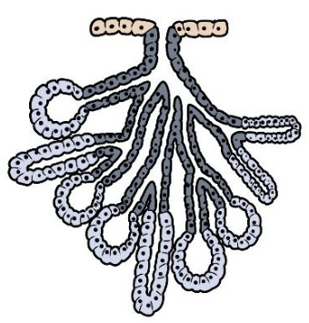
A Tubulosa composta.
B Alveolar composta.
C Tubuloalveolar composta.
D Acinosa simples.
E Tubulosa simples.
Questão 460 · Histologia · 4000200728Analise atentamente a figura abaixo, que representa um tipo de epitélio glandular: Figura: Glândula misteriosa. Fonte: Arquivos Estratégia Med. De acordo com a organização estrutural da porção secretora e do ducto excretor, essa glândula pode ser classificada como:

A Tubulosa composta.
B Tubulosa simples ramificada.
C Tubulosa simples enovelada.
D Acinosa composta.
E Acinosa simples.
Questão 461 · Histologia · 4000200727Veja a imagem a seguir, que é uma representação de um tipo de tecido epitelial glandular: Figura: Glândula misteriosa. Fonte: Arquivos Estratégia Med. De acordo com a organização estrutural da porção secretora e do ducto excretor, essa glândula pode ser classificada como:

A Acinosa composta.
B Tubulosa simples enovelada.
C Tubulosa simples ramificada.
D Tubulosa composta.
E Acinosa simples.
Questão 462 · Histologia · 4000200726Observe a figura abaixo, que representa um tipo de glândula exócrina do organismo: Figura: Glândula misteriosa. Fonte: Arquivos Estratégia Med. De acordo com a organização estrutural da porção secretora e do ducto excretor, essa glândula pode ser classificada como:

A Tubulosa simples.
B Tubulosa simples enovelada.
C Tubulosa composta.
D Alveolar composta.
E Acinosa simples.
Questão 463 · Histologia · 4000200725Analise atentamente a figura abaixo, que representa um tipo de epitélio glandular: Figura: Glândula misteriosa. Fonte: Arquivos Estratégia Med. De acordo com a organização estrutural da porção secretora e do ducto excretor, essa glândula pode ser classificada como:
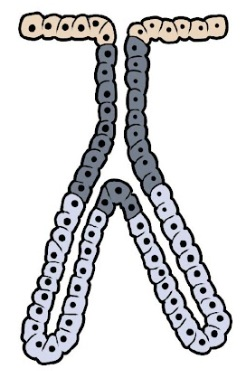
A Tubulosa simples.
B Tubulosa composta.
C Tubuloalveolar composta.
D Acinosa simples.
E Alveolar composta.
Questão 464 · Histologia · 4000200724Veja a imagem a seguir, que é uma representação de um tipo de tecido epitelial glandular: Figura: Glândula misteriosa. Fonte: Arquivos Estratégia Med. De acordo com a organização estrutural da porção secretora e do ducto excretor, essa glândula pode ser classificada como:
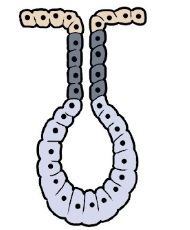
A Glândula tubulosa simples enovelada.
B Glândula tubulosa composta.
C Glândula tubulosa simples.
D Glândula acinosa composta.
E Glândula acinosa simples.
Questão 465 · Histologia · 4000200723Observe a figura abaixo, que representa um tipo de glândula exócrina do organismo: Figura: Glândula misteriosa. Fonte: Arquivos Estratégia Med. De acordo com a organização estrutural da porção secretora e do ducto excretor, essa glândula pode ser classificada como:

A Tubulosa simples.
B Tubulosa composta.
C Tubuloalveolar composta.
D Acinosa simples.
E Acinosa composta.
Questão 466 · Histologia · 4000200722Analise atentamente a figura abaixo, que representa um mesmo tipo de epitélio de revestimento, em dois diferentes estados: Figura: Epitélio misterioso. Fonte: Arquivos Estratégia Med. O tecido representado pode ser encontrado em qual das estruturas abaixo?

A Brônquio.
B Derme.
C Mucosa vaginal.
D Revestimento interno da tuba uterina.
E Bexiga urinária.
Questão 467 · Histologia · 4000200721Veja a imagem a seguir, que é uma representação de um tipo de tecido epitelial: Figura: Tecido misterioso. Fonte: Arquivos Estratégia Med. O tecido representado pode ser encontrado em qual das estruturas abaixo?

A Traqueia.
B Epiderme.
C Mucosa oral.
D Lúmen intestinal.
E Endotélio.
Questão 468 · Histologia · 4000200720Observe a imagem abaixo, que representa um tipo de tecido epitelial de revestimento: Figura: Tecido misterioso. Fonte: Arquivos Estratégia Med. Assinale a alternativa que classifica corretamente o tecido representado na imagem e menciona uma região do organismo onde ele é encontrado:

A Tecido epitelial de transição. Encontrado no revestimento interno da bexiga urinária.
B Tecido epitelial de revestimento pseudoestratificado prismático. Encontrado no revestimento interno dos brônquios.
C Tecido epitelial de revestimento simples prismático. Encontrado na parede que forma o lúmen da vesícula biliar.
D Tecido epitelial de revestimento estratificado prismático. Encontrado na conjuntiva do olho.
E Tecido epitelial de revestimento estratificado pavimentoso. Encontrado na mucosa vaginal.
Questão 469 · Histologia · 4000200719Veja a imagem a seguir, que é uma representação de um tipo de tecido epitelial: Figura: Tecido misterioso. Fonte: Arquivos Estratégia Med. Assinale a alternativa que classifica corretamente o tecido representado na imagem e menciona uma região do organismo onde ele é encontrado:
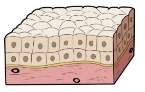
A Tecido epitelial de revestimento simples prismático. Encontrado no revestimento do lúmen intestinal.
B Tecido epitelial de revestimento pseudoestratificado prismático. Encontrado no epitélio da traqueia.
C Tecido epitelial de revestimento simples cuboide. Encontrado no revestimento externo do ovário.
D Tecido epitelial de revestimento estratificado cuboide. Encontrado na parede dos ductos excretores de glândulas exócrinas.
E Tecido epitelial de revestimento pavimentoso simples. Encontrado no mesotélio da pleura.
Questão 470 · Histologia · 4000200718Analise atentamente a figura abaixo, que representa um tipo de epitélio de revestimento: Figura: Epitélio misterioso. Fonte: Arquivos Estratégia Med. Assinale a alternativa que classifica corretamente o tecido representado na imagem e menciona uma região do organismo onde ele é encontrado:
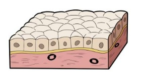
A Tecido epitelial de revestimento estratificado cuboide. Encontrado na parede dos ductos excretores de glândulas exócrinas.
B Tecido epitelial de revestimento simples cuboide. Encontrado na parede dos ductos excretores de glândulas exócrinas.
C Tecido epitelial de revestimento estratificado pavimentoso. Encontrado na epiderme.
D Tecido epitelial de revestimento simples pavimentoso. Encontrado no endotélio (túnica íntima) dos vasos sanguíneos.
E Tecido epitelial de revestimento simples colunar. Encontrado na mucosa intestinal.
Questão 471 · Histologia · 4000200717Veja a imagem a seguir, que é uma representação de um tipo de tecido epitelial: Figura: Epitélio misterioso. Fonte: Arquivos Estratégia Med. Assinale a alternativa que classifica corretamente o tecido representado na imagem e menciona uma região do organismo onde ele é encontrado:

A Tecido epitelial de revestimento simples prismático. Encontrado no revestimento interno das tubas uterinas.
B Tecido epitelial de revestimento pseudoestratificado colunar. Encontrado no epitélio dos brônquios.
C Tecido epitelial de transição. Encontrado na epiderme.
D Tecido epitelial de revestimento simples pavimentoso. Encontrado no mesotélio do peritônio.
E Tecido epitelial de revestimento estratificado pavimentoso. Encontrado na mucosa oral.
Questão 472 · Histologia · 4000200716Observe a imagem abaixo, que representa um tipo de tecido epitelial de revestimento: Figura: Epitélio misterioso. Fonte: Arquivos Estratégia Med. Assinale a alternativa que classifica corretamente o tecido representado na imagem e menciona uma região do organismo onde ele é encontrado:
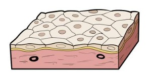
A Tecido epitelial de revestimento simples pavimentoso. Encontrado no endotélio (túnica íntima) dos vasos sanguíneos.
B Tecido epitelial de revestimento estratificado pavimentoso. Encontrado na derme.
C Tecido epitelial de revestimento simples cuboide. Encontrado na superfície externa do ovário.
D Tecido epitelial de revestimento pseudoestratificado prismático. Encontrado na epiderme.
E Tecido epitelial de revestimento simples prismático. Encontrado no revestimento interno da tuba uterina.
Questão 473 · Histologia · 4000200715Analise as assertivas abaixo e marque aquela que descreve corretamente as principais funções do tecido nervoso:
A O tecido nervoso possui a função de secretar hormônios, sendo o principal componente das glândulas endócrinas.
B O tecido nervoso, composto por neurônios e células da glia, é responsável por receber os estímulos do meio, interpretá- los e coordenar respostas por meio da comunicação com os demais sistemas do organismo.
C O tecido nervoso, considerado uma espécie de tecido epitelial, é aquele formado exclusivamente por neurônios, células diferenciadas especializadas em gerar e conduzir estímulos elétricos.
D O tecido nervoso, formado por neurônios e células da glia, é o principal componente dos órgãos do sistema nervoso central, que coordena os demais sistemas por meio do sistema nervoso periférico, o qual é composto por tecido conjuntivo especializado.
E O tecido nervoso, considerado uma classe especializada de tecido conjuntivo, é um tecido formado exclusivamente por neurônios, que são capazes de interpretar os estímulos do meio, convertê-los em impulsos elétricos e coordenar os demais sistemas para efetuar uma resposta.
Questão 474 · Histologia · 4000200714Qual das alternativas abaixo descreve corretamente as funções do tecido ósseo?
A O tecido ósseo é o principal componente do esqueleto, sendo um tecido pouco vascularizado, nutrido apenas a partir dos vasos que transitam no periósteo.
B O tecido ósseo compõe o esqueleto humano, sendo um tecido pouco ativo metabolicamente, uma vez que constitui uma estrutura rígida e estática que fornece proteção e suporte estrutural aos demais tecidos.
C O tecido ósseo é o tecido que forma o esqueleto humano, cuja função é fornecer proteção física e sustentação ao restante dos tecidos. É composto por osteoblastos, osteoclastos e osteócitos, e encontra-se em contínua remodelação, participando do metabolismo iônico do corpo.
D O tecido ósseo, além de participar da formação do esqueleto, também está presente nas camadas mais profundas da pele, onde confere rigidez a essa barreira de revestimento.
E O tecido ósseo possui funções exclusivamente estruturais, não tendo grande relevância no metabolismo de íons ou na secreção de moléculas orgânicas.
Questão 475 · Histologia · 4000200713Leia atentamente as alternativas abaixo e marque aquela que descreve corretamente as funções do tecido cartilaginoso:
A O tecido cartilaginoso é o principal componente do esqueleto, desde a fase embrionária até a vida adulta, sendo responsável pela rigidez dos ossos.
B O tecido cartilaginoso atua no revestimento externo do corpo, formando a pele de regiões espessas como o nariz e as orelhas.
C O tecido cartilaginoso atua como tecido de sustentação no organismo, nos locais onde é necessário equilíbrio entre rigidez e flexibilidade. Pode ser encontrado na cartilagem auricular, na cartilagem nasal, na traqueia, nos brônquios e nos discos intervertebrais da coluna.
D O tecido cartilaginoso é o responsável pela formação da parede luminal dos vasos sanguíneos, criando um ambiente adequado para a passagem do sangue.
E O tecido cartilaginoso atua na proteção mecânica do corpo, na regulação endócrina do metabolismo e no armazenamento de energia na forma de lipídios.
Questão 476 · Histologia · 4000200712Qual das alternativas abaixo descreve corretamente as funções do tecido adiposo?
A O tecido adiposo é responsável pela geração dos elementos figurados do sangue, sendo encontrado no interior da medula óssea vermelha.
B O tecido adiposo atua na sustentação e no preenchimento do organismo, servindo de suporte para os demais tecidos. É o principal componente da derme cutânea, da submucosa das vísceras e da túnica adventícia dos vasos sanguíneos.
C O tecido adiposo é responsável pela proteção e pelo suporte das partes moles, absorvendo os impactos das superfícies articulares sinoviais e compondo os discos intervertebrais da coluna vertebral e a sínfise púbica do quadril.
D O tecido adiposo se localiza principalmente no esqueleto, onde atua conferindo rigidez aos ossos, devido à sua matriz mineralizada secretada pelos adipócitos.
E O tecido adiposo atua como sítio de armazenamento de energia sob a forma de lipídios, possui função endócrina mediante a secreção de adipocinas, absorve choques mecânicos e age como isolante térmico.
Questão 477 · Histologia · 4000200711Marque a alternativa, entre as fornecidas abaixo, que melhor descreve as funções do tecido muscular:
A O tecido muscular é responsável pela sustentação e pelo preenchimento do organismo, ocupando as lacunas entre os tecidos e dando-os suporte.
B O tecido muscular tem como função principal a geração e a condução de impulsos nervosos, tarefa desempenhada pelas células denominadas neurônios, que compõem esse tecido.
C O tecido muscular é responsável pelo armazenamento de energia sob a forma de lipídios, constituindo a principal reserva energética do organismo em caso de déficit calórico prolongado.
D O tecido muscular é o principal componente do esqueleto, participando da sustentação do corpo, da proteção das partes moles e dos movimentos musculares.
E O tecido muscular tem como função principal produzir movimentos, voluntários ou involuntários, por meio das células contráteis repletas de actina e miosina que compõem esse tecido.
Questão 478 · Histologia · 4000200710Assinale a alternativa que descreve corretamente as principais funções do tecido conjuntivo propriamente dito:
A O tecido conjuntivo propriamente dito tem a função de oferecer sustentação e preenchimento para as estruturas do organismo, como os epitélios, os vasos sanguíneos, os músculos e as vísceras.
B O tecido conjuntivo propriamente dito forma o revestimento externo do organismo, compondo a camada mais superficial da pele, e também o revestimento interno dos órgãos, formando as mucosas.
C O tecido conjuntivo propriamente dito tem a função de gerar e conduzir impulsos nervosos, papel desempenhado pelas células chamadas neurônios que compõem esse tecido.
D O tecido conjuntivo propriamente dito é o principal componente dos músculos, contendo células contráteis repletas de actina e miosina, que realizam os movimentos do organismo.
E O tecido conjuntivo propriamente dito é responsável pela formação dos elementos figurados do sangue, sendo o tecido encontrado na medula óssea vermelha.
Questão 479 · Histologia · 4000200709Qual das alternativas abaixo descreve corretamente as principais funções do tecido epitelial?
A O tecido epitelial é responsável pelo revestimento externo do organismo, pelo revestimento interno dos órgãos dotados de lúmen e pela formação das glândulas, exócrinas ou endócrinas.
B O tecido epitelial é responsável pela sustentação e pelo preenchimento do organismo, compondo a derme cutânea, a submucosa dos órgãos luminais e a túnica adventícia das artérias.
C O tecido epitelial é aquele dotado de capacidade contrátil, e atua produzindo os movimentos do organismo, seja por meio dos músculos esqueléticos ou pela camada muscular das vísceras.
D O tecido epitelial é aquele que está associado à regulação neuronal do organismo, sendo o tecido formado pelos neurônios, células especializadas na geração e na condução de impulsos elétricos.
E O tecido epitelial é responsável pelo armazenamento de energia sob a forma de gordura, atuando também na regulação endócrina por meio da secreção de adipocinas.
Questão 480 · Histologia · 4000200708Observe atentamente a figura abaixo: Figura: Tecido Misterioso. Fonte: Arquivos Estratégia Med. A qual dos tecidos abaixo melhor corresponde a arquitetura tecidual representada na imagem:

A Tecido conjuntivo propriamente dito.
B Tecido muscular.
C Tecido adiposo.
D Tecido nervoso.
E Tecido epitelial de revestimento.
Questão 481 · Histologia · 4000200707Veja a figura abaixo: Figura: Tecido Z. Fonte: Arquivos Estratégia Med. A qual dos tecidos abaixo corresponde a morfologia representada na imagem:
A Tecido muscular.
B Tecido nervoso.
C Tecido conjuntivo propriamente dito.
D Tecido epitelial glandular.
E Tecido epitelial de revestimento.
Questão 482 · Histologia · 4000200706Observe a figura abaixo: Figura: Tecido Y. Fonte: Arquivos Estratégia Med. A qual dos tecidos abaixo corresponde a estrutura representada na imagem:

A Tecido adiposo.
B Tecido nervoso.
C Tecido muscular liso.
D Tecido ósseo.
E Tecido cartilaginoso.
Questão 483 · Histologia · 4000200705Observe a figura abaixo: Figura: Tecido X. Fonte: Arquivos Estratégia Med. A qual dos tecidos abaixo corresponde a estrutura representada na imagem:
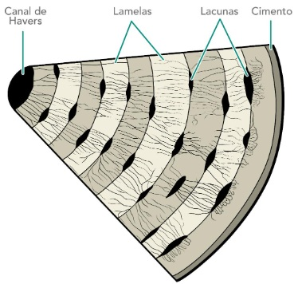
A Tecido conjuntivo propriamente dito denso não modelado.
B Tecido adiposo.
C Tecido cartilaginoso.
D Tecido ósseo.
E Tecido muscular liso.
Questão 484 · Histologia · 4000200704Leia atentamente a descrição abaixo, relativa a um dos tecidos que compõem o organismo humano: “Tecido composto por células multinucleadas de formado cilíndrico bastante alongado. No interior dessas células, encontramos grande quantidade de bras de actina e miosina, que detêm capacidade contrátil. Os núcleos celulares estão deslocados para a periferia, e não se observa a formação de discos intercalares.” A descrição diz respeito ao:
A Tecido muscular estriado esquelético.
B Tecido muscular estriado cardíaco.
C Tecido muscular liso.
D Tecido adiposo.
E Tecido epitelial de revestimento.
Questão 485 · Histologia · 4000200703Leia a descrição a seguir, referente a um tipo de tecido do organismo: “Tecido composto por um grande número de broblastos e brócitos, bastante espaçados entre si por uma matriz celular abundante. Nessa matriz, há grande quantidade de bras colágenas, que estão dispostas paralelamente entre si, de forma a resistir à tração de maneira unidirecional”. Assinale a alternativa que contém o tecido ao qual a descrição diz respeito:
A Tecido muscular estriado esquelético.
B Tecido epitelial de revestimento.
C Tecido conjuntivo denso não-modelado.
D Tecido conjuntivo denso modelado.
E Tecido conjuntivo frouxo.
Questão 486 · Histologia · 4000200702Veja o parágrafo abaixo, que se refere a um dos tipos de tecidos do organismo: “Tecido formado por múltiplos tipos celulares, com predomínio de broblastos e macrófagos, bastante espaçados entre si por uma abundante matriz extracelular. Essa matriz é composta principalmente por bras colágenas, que predominam sobre todos os outros componentes, orientadas aleatoriamente para resistir à tração em múltiplas direções.” A descrição diz respeito ao:
A Tecido epitelial.
B Tecido conjuntivo denso não-modelado.
C Tecido conjuntivo denso modelado.
D Tecido conjuntivo frouxo.
E Tecido adiposo.
Questão 487 · Histologia · 4000200701Analise a assertiva abaixo, que descreve um dos tecidos do organismo: “Tecido formado por células de diversas linhagens ( broblastos, macrófagos, neutró los) bastante espaçadas entre si, apresentando matriz extracelular abundante. Nessa matriz, encontram-se bras colágenas, substância fundamental e bras elásticas, sem predomínio claro de um desses componentes sobre o outro.” A descrição se refere ao:
A Tecido epitelial de revestimento.
B Tecido muscular estriado.
C Tecido nervoso.
D Tecido conjuntivo denso modelado.
E Tecido conjuntivo frouxo.
Questão 488 · Histologia · 4000200700Leia a descrição abaixo, referente a um tipo de tecido do organismo: “Tecido formado por células de formato poliédrico, bastante justapostas entre si, com pequena quantidade de matriz extracelular. As células desse tecido, em geral, estão firmemente unidas por junções intercelulares.” A descrição refere diz respeito ao:
A Tecido epitelial.
B Tecido conjuntivo propriamente dito.
C Tecido muscular.
D Tecido nervoso.
E Tecido adiposo.
Questão 489 · SemiologiaPropedêutica Médica · 4000200699Você é chamado para examinar um paciente vítima de transecção completa de medula espinhal a nível de C3, internado em unidade de terapia intensiva. Seu professor informa que o paciente evoluiu com tetraplegia e está respirando com o auxílio de ventilação mecânica. Como se espera que estejam, nesse paciente, os reflexos cutâneo-plantar e cutâneo abdominal?
A Cutâneo-plantar em extensão, cutâneo abdominal aumentado de intensidade.
B Cutâneo-plantar em extensão, cutâneo abdominal abolido.
C Cutâneo-plantar em flexão, cutâneo abdominal aumentado de intensidade.
D Cutâneo-plantar em flexão, cutâneo abdominal abolido.
E Provavelmente ambos os reflexos estão preservados.
Questão 490 · SemiologiaPropedêutica Médica · 4000200698O tônus muscular é uma característica que pode estar alterada em determinados quadros neurológicos, fazendo parte do exame clínico. Qual a mais provável alteração do tônus de um paciente vítima de acidente vascular cerebral extenso do lado esquerdo do córtex?
A Hipotonia no membro superior direito.
B Hipertonia no membro superior direito.
C Hipotonia no membro superior esquerdo.
D Hipertonia no membro superior esquerdo.
E O tônus não sofre influência do córtex.
Questão 491 · SemiologiaPropedêutica Médica · 4000200697Em qual das seguintes situações a pesquisa dos reflexos miotáticos pode auxiliar no diagnóstico diferencial entre duas doenças?
A Diferenciar paresia por lesão medular do corno anterior de lesão da raiz anterior do nervo espinhal.
B Diferenciar paresia por lesão do neurônio motor superior de lesão do neurônio motor superior.
C Diferenciar paresia por lesão de nervo periférico de lesão muscular.
D Diferenciar paresia por lesão de nervo periférico de lesão de plexo nervoso.
E Diferenciar paresia por lesão medular do corno anterior de lesão do nervo periférico.
Questão 492 · SemiologiaPropedêutica Médica · 4000200696Qual das seguintes manobras
A Teste do índex-nariz.
B Avaliação da marcha.
C Teste de diadococinesia.
D Sinal de Romberg.
E Prova de Brudzinski.
Questão 493 · SemiologiaPropedêutica Médica · 4000200695A pesquisa de sensibilidade geral é parte do exame neurológico, e tem como objetivo investigar as vias neurais envolvidas nas transdução dos sentidos. Nesse contexto, assinale a alternativa que correlaciona corretamente o exame de sensibilidade e uma via medular que está sendo testada por ele:
A Pesquisa de sensibilidade térmica – Fascículos grácil e cuneiforme.
B Pesquisa de sensibilidade tátil – Trato vestibuloespinhal.
C Pesquisa de propriocepção consciente – Trato espinotalâmico anterior.
D Pesquisa de sensibilidade vibratória – Trato corticoespinhal lateral.
E Pesquisa de sensibilidade dolorosa – Trato espinotalâmico lateral.
Questão 494 · SemiologiaPropedêutica Médica · 4000200694Imagine que você está acompanhando o ambulatório de Neurologia e o seu preceptor pede para que você avalie a força de exão do cotovelo de um paciente em recuperação pós acidente vascular cerebral. Você observa que o paciente não é capaz de realizar o movimento contra a gravidade, mas consegue exionar o membro quando é colocado deitado sobre uma maca, eliminando a ação da gravidade. Qual é a classificação correta do grau de força muscular desse paciente?
A Grau 0
B Grau 1
C Grau 2
D Grau 3
E Grau 4
Questão 495 · SemiologiaPropedêutica Médica · 4000200693Marque a alternativa que contém duas escalas médicas utilizadas para avaliar o nível de consciência dos pacientes:
A Escala de coma de Glasgow e escala RASS.
B Prova de Laségue e prova de Brudzinski.
C Exame MEEM e exame MoCA.
D Escala RASS e exame MEEM.
E Escala de coma de Glasgow e prova de Brudzinski.
Questão 496 · SemiologiaPropedêutica Médica · 4000200692Quais são os três elementos avaliados pela escala de coma de Glasgow?
A Reflexo fotomotor direto, reflexo fotomotor consensual e resposta motora.
B Atenção, memória e linguagem.
C Cooperatividade, resposta verbal e perfusão periférica.
D Abertura ocular, resposta verbal e resposta motora.
E Reflexo fotomotor direto, memória e perfusão periférica.
Questão 497 · SemiologiaPropedêutica Médica · 4000200691Ao avaliar a integridade do nervo hipoglosso, qual dos seguintes resultados indica lesão do feixe nervoso à direita?
A Protrusão da língua com desvio para a esquerda.
B Protrusão da língua com desvio para a direita.
C Queda do véu palatino à direita.
D Atrofia da língua à esquerda.
E Perda de sensibilidade no lado direito da língua.
Questão 498 · SemiologiaPropedêutica Médica · 4000200690Assinale a alternativa que contém um teste adequado para avaliar a função do nervo acessório, 11º nervo craniano:
A Teste de força do músculo esternocleidomastoideo.
B Protrusão da língua.
C Pesquisa de motricidade ocular.
D Sensibilidade gustativa nos 2/3 anteriores da língua.
E Teste de sensibilidade geral na região da face.
Questão 499 · SemiologiaPropedêutica Médica · 4000200689Qual dos seguintes reflexos integrados do tronco encefálico é ideal para testar a função do nervo vago?
A Reflexo fotomotor direto.
B Reflexo oculocefálico.
C Reflexo mentoniano.
D Reflexo corneopalpebral.
E Reflexo do vômito.
Questão 500 · SemiologiaPropedêutica Médica · 4000200688O nervo glossofaríngeo é o 9º nervo craniano, e está envolvido com o sentido da gustação. Em qual região é mais indicado pesquisar a gustação do paciente com o intuito de avaliar a integridade do nervo glossofaríngeo?
A 1/3 anterior da língua.
B 1/3 médio da língua.
C 1/3 posterior da língua.
D Região da epiglote.
E Qualquer região da língua.
Questão 501 · SemiologiaPropedêutica Médica · 4000200687Qual das seguintes combinações de resultados de testes de audição indica uma surdez de origem neurossensorial no lado esquerdo do paciente avaliado?
A Teste de Rinne: condução aérea dura menos que condução óssea no lado esquerdo, e condução aérea dura mais que condução aérea no lado direito. Teste de Weber: desvio do som para o lado esquerdo. Teste de Schwabach: o examinado continua ouvindo o som por mais tempo que o examinador quando se avalia a orelha esquerda.
B Teste de Rinne: condução aérea dura mais que condução óssea no lado esquerdo, e condução aérea dura menos que condução óssea do lado direito. Teste de Weber: desvio do som para o lado direito. Teste de Schwabach: o examinado continua ouvindo o som por mais tempo que o examinador quando se avalia a orelha direita.
C Teste de Rinne: condução aérea dura mais que condução óssea no lado esquerdo, e condução aérea dura mais que condução óssea do lado direito. Teste de Weber: desvio do som para o lado direito. Teste de Schwabach: o examinado ouve o som por menos tempo que o examinador quando se avalia a orelha esquerda.
D Teste de Rinne: condução aérea dura mais que condução óssea no lado esquerdo, e condução aérea dura mais que condução óssea no lado direito. Teste de Weber: desvio do som para o lado esquerdo. Teste de Schwabach: o examinado ouve o som por menos tempo que o examinador quando se avalia a orelha direita.
E Teste de Rinne: condução aérea dura menos que condução óssea do lado esquerdo, e condução aérea dura menos que condução óssea do lado direito. Teste de Weber: sem desvio do som. Teste de Schwabach: o examinado ouve o som por mais tempo que o examinador bilateralmente.
Questão 502 · SemiologiaPropedêutica Médica · 4000200686Assinale a alternativa que descreve adequadamente o sinal de paralisia do nervo facial:
A Sinal de Bell, paralisia dos músculos da mímica, tanto no andar superior quanto no andar inferior da face.
B Sinal de Bell, paralisia dos músculos da mímica, restrita ao andar inferior da face.
C Sinal de Bell, queda espontânea da mandíbula.
D Sinal de Bell, desvio ipsilateral da protrusão da língua.
E Sinal de Bell, ptose palpebral.
Questão 503 · SemiologiaPropedêutica Médica · 4000200685Qual é o único grupamento muscular da musculatura extrínseca do olho inervado pelo 4º nervo craniano, o nervo troclear?
A Reto medial.
B Reto lateral.
C Reto superior.
D Reto inferior.
E Oblíquo superior.
Questão 504 · SemiologiaPropedêutica Médica · 4000200684Marque a alternativa que contém a principal função do nervo trigêmeo, que é utilizada para avaliar a integridade desse nervo:
A O nervo trigêmeo é o principal responsável pelo sentido da visão. Portanto, utiliza-se os exames de acuidade visual, campo visual e fundoscopia para avaliar esse nervo.
B O nervo trigêmeo é responsável pela audição e equilíbrio, portanto, as avaliações de surdez neurossensorial são utilizadas para testá-lo
C O nervo trigêmeo é o feixe que realiza a inervação parassimpática das vísceras abdominais, contribuindo para função do trato gastrointestinal.
D O nervo trigêmeo é responsável pela sensibilidade geral da cabeça. Portanto, utiliza-se testes de sensibilidade tátil, térmica e dolorosa para avaliar a função desse nervo.
E O nervo trigêmeo é o feixe que realiza a inervação motora da musculatura da mímica, portanto, utiliza-se testes de força muscular desses grupamentos para avaliar o trigêmeo.
Questão 505 · SemiologiaPropedêutica Médica · 4000200683Você é chamado para avaliar um paciente do ambulatório de Neurologia que se apresenta com o seguinte quadro: Qual o nervo craniano que provavelmente está comprometido nesse caso?
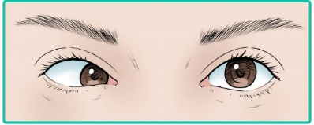
A Nervo oculomotor.
B Nervo troclear.
C Nervo trigêmeo.
D Nervo abducente.
E Nervo facial.
Questão 506 · SemiologiaPropedêutica Médica · 4000200682Qual seria o quadro clínico mais provável para uma lesão completa do 3º nervo craniano, o nervo oculomotor?
A Midríase, desvio lateral do olho e ptose palpebral no lado afetado.
B Miose, desvio medial do olho e impossibilidade de fechar a pálpebra no lado afetado.
C Midríase, desvio lateral do olho e impossibilidade de fechar a pálpebra no lado afetado.
D Miose, desvio medial do olho e ptose palpebral no lado afetado.
E Midríase, desvio medial do olho e ptose palpebral no lado afetado.
Questão 507 · SemiologiaPropedêutica Médica · 4000200681Imagine que você está atendendo um paciente, na atenção primária, que chega com queixas relacionadas ao escurecimento da visão. Qual exame pode ser utilizado, naquele momento, para avaliar clinicamente o campo visual desse paciente e identi car escotomas?
A Teste de Jaeger.
B Campimetria de confrontação.
C Teste de Snellen.
D Campimetria computadorizada.
E Fundoscopia.
Questão 508 · SemiologiaPropedêutica Médica · 4000200680Para avaliar o estado do 1º nervo craniano, qual dos sentidos abaixo deve ser testado?
A Gustação.
B Visão.
C Olfato.
D Tato e propriocepção.
E Audição.
Questão 509 · SemiologiaPropedêutica Médica · 4000200679A palpação da glândula tireoide é parte importante do exame físico de cabeça e pescoço. Qual a referência anatômica utilizada para localizar a tireoide?
A Abaixo da cartilagem tireoidea, na linha mediana do pescoço.
B Inferior à cartilagem cricoide, na linha mediana do pescoço.
C Lateral ao músculo esternocleidomastoideo, na região cervical lateral.
D Superior à fúrcula esternal, na linha mediana do pescoço.
E Acima da cartilagem tireoidea, na linha mediana do pescoço.
Questão 510 · SemiologiaPropedêutica Médica · 4000200678Assinale a alternativa que descreve as características de um linfonodo de aspecto normal:
A Tamanho menor que 2 cm, consistência fibroelástica, doloroso à palpação, móvel.
B Tamanho maior que 3 cm, consistência fibroelástica, indolor à palpação, móvel.
C Tamanho menor que 2 cm, consistência pétrea, indolor à palpação, fixo a planos profundos.
D Tamanho maior que 3 cm, consistência pétrea, doloroso à palpação, fixo a planos profundos.
E Tamanho menor que 2 cm, consistência fibroelástica, indolor à palpação, móvel.
Questão 511 · SemiologiaPropedêutica Médica · 4000200677A cavidade oral é cercada por várias glândulas salivares, dispostas ao redor da região. Como é denominada a glândula salivar palpável no ângulo da mandíbula?
A Glândula parótida.
B Glândula sublingual.
C Glândula submandibular.
D Glândula salivar maior.
E Glândula retromandibular.
Questão 512 · SemiologiaPropedêutica Médica · 4000200676Qual das seguintes cadeias linfonodais
A Linfonodos inguinais.
B Linfonodos occipitais.
C Linfonodos retroauriculares.
D Linfonodos submandibulares.
E Linfonodos cervicais anteriores.
Questão 513 · SemiologiaPropedêutica Médica · 4000200675Marque a alternativa que cita corretamente a referência anatômica utilizada para localizar as cadeias ganglionares submentonianas:
A Mandíbula.
B Maxila.
C Orelha.
D Osso frontal.
E Osso zigomático.
Questão 514 · SemiologiaPropedêutica Médica · 4000200674Marque a alternativa que cita corretamente a referência anatômica utilizada para localizar as cadeias ganglionares cervicais:
A Osso hioide.
B Músculos escalenos.
C Artérias carótidas.
D Músculo esternocleidomastoideo.
E Cartilagem cricoide.
Questão 515 · SemiologiaPropedêutica Médica · 4000200673Ao examinar um paciente no Pronto Socorro, você observa a presença de hiperemia de orofaringe, associada a exsudato purulento na região das tonsilas palatinas e febre há 3 dias. Esse quadro é mais sugestivo de qual das patologias abaixo?
A Neoplasia de garganta.
B Quadro alérgico.
C Processo infeccioso.
D Irritação por agentes químicos.
E Morfologia normal, sem doenças.
Questão 516 · SemiologiaPropedêutica Médica · 4000200672A presença de palpação e de percussão dolorosas dos seios maxilares e frontais sugere qual das seguintes doenças:
A Rinite.
B Sinusite.
C Faringite.
D Tireoidite.
E Estomatite aftosa.
Questão 517 · SemiologiaPropedêutica Médica · 4000200671Em qual região da cabeça é mais indicado pesquisar edema decorrente de condições sistêmicas (ex.: hipervolemia, hipoalbuminemia) em pacientes adultos?
A Lábios.
B Região malar.
C Asa do nariz.
D Região palpebral.
E Couro cabeludo
Questão 518 · SemiologiaPropedêutica Médica · 4000200670Assinale a alternativa que melhor descreve o conceito de “fácies” no contexto do exame clínico:
A Fácies são conjuntos de alterações da estrutura ou da expressão facial dos pacientes que caracterizam uma determinada situação patológica.
B Fácies são alterações da pigmentação da pele na região do rosto.
C Fácies são erupções de origem alérgica na face ou no tronco dos pacientes, indicativas da quadros de hipersensibilidade.
D Fácies são características que indicam para o médico o nível de consciência e cooperatividade do paciente. Devem ser anotadas por extenso no prontuário para facilitar a comunicação entre os cuidadores.
E Fácies são um tipo de lesão elementar dermatológica.
Questão 519 · Anatomia do Sistema Digestório · 4000200669O reto é a última porção do intestino grosso, sobre sua anatomia, assinale a alternativa correta, após julgar as sentenças em verdadeiro ou falso:
A O reto, assim como todas as outras porções do cólon, é recoberto pelos apêndices epiploicos;
B O reto é completamente intraperitoneal;
C A ampola retal é a parte mais estreita do reto, não tendo papel importante na continência fecal, pois armazena pequena quantidade de fezes;
D A capacidade de dilatação do reto, tanto no sexo feminino quanto masculino, ocorre pelas reflexões laterais do peritônio que envolve o seu terço superior, formando a fossas pararretais.
E Nos homens e nas mulheres, a reflexão do peritônio do reto para a parte posterior da bexiga forma a escavação retovesical.
Questão 520 · Anatomia do Sistema Digestório · 4000200668Uma mulher de 52 anos foi assaltada na rua, e após reagir, recebeu uma faca a nível do epigástrio. Qual das estruturas abaixo tem menor probabilidade de ser lesada?
A Duodeno;
B Fígado;
C Pâncreas;
D Estômago;
E Rim direito.
Questão 521 · Anatomia do Sistema Digestório · 4000200667A divisão anatômica do abdome em quadrantes e segmentos é essencial para sabermos os órgãos que estão localizados nesses regiões, no momento da realização do exame físico. Sobre a divisão do abdome, assinale a alternativa correta:
A A divisão do abdome em quadrante é feita trançando uma linha vertical central ao nível da linha alba e uma linha horizontal ao nível das espinhas ilíacas anterossuperiores.
B A divisão em segmentos é feita a partir de duas linhas horizontais e duas verticais. As horizontais ficam ao nível da cicatriz umbilical e uma linha subcostal, abaixo da 10ª costela;
C A divisão em segmentos é feita a partir de 2 linhas horizontais e duas verticais. As verticais são as linhas hemiclavicular direita e esquerda.
D Na descrição do exame físico, a divisão por quadrante traz mais informações do que a divisão por segmentos;
E Na divisão por seguimentos, levando em consideração a posição anatômica temos do lado esquerdo, de cima para baixo: o hipocôndrio esquerdo, o mesogástrio e a fossa ilíaca esquerda;
Questão 522 · Anatomia do Sistema Digestório · 4000200666Sobre a vascularização do intestino grosso, assinale a alternativa correta:
A O cólon é irrigado pelas artérias cólicas direita, média e esquerda, todas ramos da artéria mesentérica superior (AMS);
B O cólon transverso possui irrigação provinda tanto da AMS, quanto da artéria mesentérica inferior (AMI);
C O reto possui irrigação provinda exclusivamente da AMI;
D A AMS é o ramo principal do tronco celíaco, enquanto a AMI é ramo direito da aorta abdominal;
E A artéria cólica direita é ramo da AMS, enquanto as artérias cólicas média e esquerda são ramos da AMI.
Questão 523 · Anatomia do Sistema Digestório · 4000200665Sobre a inervação da vesícula biliar e do ducto cístico, julgue os itens como verdadeiros ou falsos e assinale a alternativa correta: 1) O nervo frênico direito emite fibras aferentes somáticas que causam a sensação de dor quando á inflamação da vesícula biliar; 2) O nervo vago é o responsável pelo estímulo parassimpático; 3) A colecistoquinina gera estímulos simpáticos que causa a contração da vesícula biliar e o relaxamento dos músculos que envolvem a papila duodenal, de forma que a bile flui para o duodeno;
A V-F-F
B V-F-V
C V-V-V
D F-V-F
E V-V-F
Questão 524 · Anatomia do Sistema Digestório · 4000200664Sobre a anatomia da vesícula biliar, assinale a alternativa correta:
A A vesícula biliar está localizada na face visceral do fígado e posterior à porção do duodeno;
B A vesícula biliar é dividida em três partes: fundo, corpo e colo; sendo que o fundo é considerada a parte principal;
C O ducto cístico une o fundo da vesícula ao ducto hepático comum para formar o ducto colédoco;
D A artéria cística irriga a vesícula biliar e o ducto cístico, e pode ser vista no espaço chamado triângulo de Calot, delimitado pelo ducto hepático comum, ducto cístico a face ventral do fígado;
E A drenagem linfática da vesícula biliar é feita a partir dos linfonodos vesiculares.
Questão 525 · Anatomia do Sistema Digestório · 4000200663JHS, 22 anos, estava atravessando a rua quando foi atropelado por uma moto, a qual colidiu com o lado esquerdo do seu tronco. Prontamente, o SAMU foi acionado e levou o paciente para o hospital de referência em traumatologia mais próximo. Na sala de trauma, foi feito uma Ultrassonogra a (USG) FAST, que mostrou a presença de líquido do espaço esplenorrenal e o paciente foi encaminhado para a cirurgia. Sobre o caso a seguir, assinale a alternativa correta:
A Caso o baço apenas o baço tenha sido acometido, é improvável que esse paciente esteja em choque hipovolêmico;
B Devido a ausência de relação anatômica entre os órgão, podemos afirmar que esse paciente muito provavelmente não apresentou lesão do estômago;
C As costelas, apesar de serem um arcabouço ósseo protetor para o baço, nesse caso relatado, podem funcionar como arma branca, agravando a lesão.
D Devido à grande resistência e espessura da cápsula fibrosa do baço, ele é um órgão difícil de ser lesado;
E A artéria esplênica é o menor ramo do tronco celíaco, por isso sua lesão não geral sangramento relevantes.
Questão 526 · Anatomia do Sistema Digestório · 4000200662Sobre a anatomia do baço, suas relações anatômicas e suas funções e suas funções, assinale a alternativa correta:
A Por ter função hematopoiética na vida adulta, bem como órgão linfoide, o baço é considerado um órgão vital;
B O baço é considerado um dos órgãos mais resistentes do abdome, por isso, não é um dos mais afetados em pacientes com trauma abdominal;
C O baço é um órgão que, por se muito vascularizado, se expande facilmente, processo que é chamado de hiperesplenismo;
D O baço está apoiado na flexura esplênica do cólon, estando posterior e protegido da X a XII costelas;
E O baço é praticamente todo revestido por peritônio, exceto seu hilo, local de onde saem a artéria e a veia esplênica.
Questão 527 · Anatomia do Sistema Digestório · 4000200661Sobre a anatomia do pâncreas e as funções, assinale a alternativa correta:
A O pâncreas possui uma função exócrina que se reflete na produção de glucagon e insulina, bem como uma função endócrina, produzindo o suco pancreático;
B A cabeça do pâncreas é circundada pelo duodeno e está apoiada posteriormente em vasos nobres, como a veia cava inferior;
C O processo uncinado do pâncreas é uma projeção do corpo pancreático e está à esquerda da artéria mesentérica superior;
D O pâncreas é considerado um órgão intraperitoneal;
E O esfíncter de Oddi é o músculo que tem maior participação no controle da passagem da bile para duodeno.
Questão 528 · Anatomia do Sistema Digestório · 4000200660A bile é uma secreção amarelo-acastanhada ou verde que auxilia na emulsão das gorduras. Acerca da sua produção e seu uxo, assinale a alternativa correta:
A A bile é produzida pela vesícula biliar e de lá segue para o duodeno;
B A bile é armazenada pela vesícula biliar e produzida no fígado, processo que ocorre durante a mastigação;
C A bile sai da vesícula biliar através do ducto colédoco, de onde é levada até o duodeno;
D A vesícula biliar armazena a bile e a libera para o duodeno no momento que o alimento chega até essa região.
E A bile chega ao duodeno quando o colédoco compõe, junto com o ducto pancreático principal, a ampola de Wirsung, onde se encontra esfíncter de Oddi.
Questão 529 · Anatomia do Sistema Digestório · 4000200659Acerca do ceco e suas estruturas, marque a alternativa correta: 1) O ceco é praticamente todo revestido por peritônio; 2) A válvula ileocecal marca a transição do intestino delgado para o intestino grosso e permite o re uxo do conteúdo do cólon para o jejuno; 3) O ceco não possui grande capacidade de distensibilidade, sendo difícil de ser avaliado no exame físico. 4) Apesar de a válvula ileocecal não possui função es ncteriana, o óstio ileal possui uma contração tônica que caracteriza pela a papila ileal, a qual atual como válvula unidirecional.
A V-F-F-V
B F-F-V-V
C F-F-F-V
D V-F-F-V
E V-F-F-F
Questão 530 · Anatomia do Sistema Digestório · 4000200658MAS, 27 anos, sexo feminino, dá entrada na emergência com queixa de dor abdominal difusa há 2 dias, sendo que á 1 dia passou a estar mais localizada em fossa ilíaca direita, associada a perda de apetite, vômitos e 2 episódios de febre mensurados em 38ºC. Ao exame físico, apesentava o sinal de Blumberg positivo, sendo posteriormente realizada à Tomogra a Computadorizada de abdome com contraste e firmado o diagnóstico de Apendicite Aguda. Com relação ao apêndice vermiforme, assinale a alternativa correta:
A O apêndice é um divertículo cego, que sempre se origina da face anterior do ceco;
B O apêndice não é recoberto por meso, sendo uma continuação do ceco, sem que seja necessária sua fixação;
C O apêndice cecal apresenta variações em sua posição, o que pode gerar apresentações clínicas diferentes, bem como abordagens cirúrgicas variáveis;
D A irrigação do apêndice é feita diretamente pela artéria ileocólica, ramo terminal da artéria mesentérica superior;
E O apêndice, em geral, localiza-se acima da junção ileocecal.
Questão 531 · Anatomia do Sistema Digestório · 4000200657O intestino grosso (cólon) tem por função absorver o conteúdo do quimo líquido, convertendo-o em fezes semissólidas. Acerca da sua anatomia, assinale a alternativa correta:
A O intestino grosso é dividido nas seguintes partes, por ordem: apêndice vermiforme, cólon sigmoide, ascendente, transverso, descendente, esquerdo, ceco, reto e canal anal.
B Os apêndices omentais são pequenas projeções de gordura distribuídas ao longo do cólon.
C As tênias do cólon são faixas circulares (transversais), sendo em número de três: a mesocólica, a omental e livre;
D As saculações estão restritas ao cólon transverso, não estando presentes nos cólons ascendente e descendente;
E A tênia livre está fixada aos mesocolos transverso e sigmoide.
Questão 532 · Anatomia do Sistema Digestório · 4000200656Sobre a inervação do intestino delgado e sua função, assinale a alternativa correta:
A A estimulação simpática promove vasodilatação e diminuição da atividade secretória intestinal.
B O sistema parassimpático está ativado em situações de luta ou fuga, aumentando a atividade peristáltica.
C Ao ser estimulado, sistema simpático promove diminuição da atividade secretória intestinal, bem como do peristaltismo.
D O sistema parassimpático promove vasodilatação e diminuição da atividade secretória intestinal.
E O intestino é insensível tanto a estímulos dolorosos, quanto à distensão.
Questão 533 · Anatomia do Sistema Digestório · 4000200655Durante uma cirurgia abdominal de grande porte, como a laparotomia exploratória, o cirurgião precisa identi car marcos anatômicos que diferenciam o jejuno e o íleo. Acerca das características dessas vísceras no corpo humano vivo, assinale a alternativa correta:
A Jejuno: cor vermelho-vivo, mais gordura no mesentério e poucas placas Peyer;
B Íleo: menos gordura no mesentério, cor rósea e muitas placas de Peyer;
C Jejuno: cor vermelho vivo, e muita gordura no mesentério, muitas placas de Peyer;
D Íleo: cor vermelho vivo, menos gordura no mesentério e mais placas de Peyer;
E Jejuno: cor vermelho vivo, menos gordura do mesentério e poucas placas de Peyer.
Questão 534 · Anatomia do Sistema Digestório · 4000200654Ao avaliar as fotos abaixo, assinale a alternativa que contempla o processo que está acontecendo e uma consequência desse processo.

A Neovascularização abdominal e surgimento de câncer;
B Hipertensão portal e sangramento digestivo;
C Neovascularização abdominal e trombose;
D Hipertensão portal e surgimento de câncer;
E Compressão de veia cava superior e trombose.
Questão 535 · Anatomia do Sistema Digestório · 4000200653A circulação sanguínea do abdome é complexa, envolvendo veias e artérias calibrosas, responsáveis pela vascularização de órgãos nobres. Sobre esses sistemas, assinale alternativa correta:
A Artéria aorta abdominal possui 3 ramos anteriores: o tronco celíaco, a artéria mesentérica superior e artéria mesentérica inferior;
B A veia porta é formada pela junção da veia esplênica e da veia mesentérica superior, sendo responsável por 20-25% do suprimento sanguíneo hepático;
C Os ramos do tronco celíaco são: artéria gástrica esquerda, artéria hepática comum e artéria sacral mediana;
D Mesmo com a existência dos
E A artéria esplênica é ramo direto da aorta abdominal, seguindo para irrigar o baço.
Questão 536 · Anatomia do Sistema Digestório · 4000200652Um paciente de 55 anos, portador de cirrose por ingestão crônica de álcool, entre no Pronto Socorro com relato de 2 episódios de hematêmese. O médico de plantão indicou a realização de uma Endoscopia Digestiva Alta (EDA), justi cando que esse era um quadro de Hemorragia Digestiva Alta (HDA) e que, por isso, o sangramento ocorreu antes da transição duodenojejunal. Qual o marco anatômico, delimita essa transição?
A Ângulo de Louis;
B Ligamento de Cooper;
C Valva de Estáquio;
D Ângulo de Treitz;
E Alça de Henle.
Questão 537 · Anatomia do Sistema Digestório · 4000200651Ao ser realizada uma Endoscopia Digestiva Alta, a única parte do intestino delgado que é possível de ser explorada é o duodeno. Acerca dessa estrutura, assinale a alternativa correta:
A A parte final do duodeno é conhecida como bulbo duodenal, se conectando então com o jejuno;
B Na segunda porção do duodeno (descendente), está a ampola de Vater, local onde se juntam o ducto pancreático principal e o ducto pancreático acessório;
C O duodeno possui intima relação com a cabeça do pâncreas, de forma a “abraçar” essa estrutura. Tal fato possui implicações importantes em determinadas cirurgias.
D A terceira porção do duodeno está localizada inferiormente à cauda do pâncreas.
E Com exceção da 2ª porção, o duodeno é totalmente retroperitoneal.
Questão 538 · Anatomia do Sistema Digestório · 4000200650O estômago é um órgão de extensa vascularização. Assinale a alternativa que contém a correlação correta entre a letra e artéria.
A X – artéria hepática comum;
B Y – artéria esplênica;
C Z – artéria mesentérica superior;
D W – artéria gastroduodenal;
E K – artéria gastromental direita
Questão 539 · Anatomia do Sistema Digestório · 4000200649O estômago possui relação com diversos órgãos da cavidade abdominal. Assinale a alternativa que contempla corretamente essa relação:
A Anteriormente, o estômago se relaciona com o lobo hepático esquerdo, a parede anterior do abdome e diafragma;
B Posteriormente, o estômago se relaciona com a bolsa omental, o pâncreas e o rim esquerdo;
C O estômago não possui nenhuma relação com intestino grosso;
D O estômago, em sua maior parte, é o um órgão extra-peritoneal;
E Apesar de ter contato com o lobo hepático esquerdo, o estômago não tem contato com o baço.
Questão 540 · Anatomia do Sistema Digestório · 4000200648Atualmente entende-se que a obesidade é um dos maiores problemas de saúde na sociedade em que vivemos. Diante disso, existem diversas técnicas cirúrgicas feitas para o controle dessa condição, a chamada “cirurgia bariátrica”. A maioria dessas cirurgias envolve formas diferentes de realizar uma gastrectomia, com diversas variações. Sobre a anatomia do estômago, assinale a alternativa correta:
A A incisura angular é um ângulo formado pela inserção do esôfago no antro;
B O fundo gástrico é a principal e maior porção do estômago;
C O piloro é a porção final do estômago, onde ocorre a massagem do quimo para o intestino delgado;
D A chamada parte pilórica do estômago é a junção do corpo gástrico com o piloro;
E O antro é gástrico é a parte mais afunilada do estômago.
Questão 541 · Anatomia do Sistema Digestório · 4000200647Durante a realização de uma Endoscopia Digestiva Alta (EDA), o endoscopista precisa identi car alguns marcos anatômicos para avaliar qual porção do trato gastrointestinal ele está avaliando. Quando ele avista a linha Z, qual desses marco ele está observando?
A Transição da cavidade oral para o esôfago;
B Junção esofagogástrica;
C Junção piloroduodenal;
D Transição do bulbo para a 2ª porção do duodeno;
E Transição do esôfago cervical para torácica.
Questão 542 · Anatomia do Sistema Digestório · 4000200646O esôfago é um órgão do sistema digestório que tem função majoritária na transferência dos alimentos para o estômago, fazendo a sua comunicação com a cavidade oral. Acerca da anatomia e funcionamento do esôfago, assinale a alternativa correta:
A O esôfago é um tubo muscular que permanece aberto durante todo o tempo, independente da passagem de alimentos;
B O esôfago é um órgão que se estende por 2 regiões do corpo: a região cervical e a região torácica;
C O esfíncter esofagiano superior é composto pela parte cricofaríngea do músculo constritor inferior da faringe, e sua disfunção é responsável pelos principais sintomas da Doença do Refluxo Gastroesofágico;
D O alimento chega da cavidade oral ao estômago em pouco segundos, impulsionado especialmente pela ação da gravidade;
E A parte extrínseca do esfíncter esofagiano inferior é composta pelo pilar direito do diafragma, e possui função no controle do refluxo do conteúdo gástrico, através da sua contração e relaxamento.
Questão 543 · Sistema Endócrino · 4000200645Um paciente de 36 anos comparece a uma consulta ambulatorial relatando que precisou comprar três pares de tênis no último ano. Ele pratica corrida de rua e observou um aumento no tamanho dos seus pés, o que o levou a adquirir calçados maiores. Além disso, menciona ter precisado trocar o anel de casamento por este ter se cado apertado. Ao conversar com amigos, ele suspeita que essas mudanças possam ser efeitos temporários do uso de suplementos como whey protein e creatina. Além disso, refere apresentar sonolência diurna e dores nas articulações mais frequentes. Atribui essas queixas a rotina do trabalho e ao aumento de treinos na academia. O médico realizou exames que evidenciaram a presença de um tumor. Em qual órgão é mais esperado a presença de tumor e quais resultados de exame são esperados ao paciente?

A Hipófise; GH aumentado; HbA1C: 5%
B Hipotálamo; IGF1 aumentado; HbA1C: 9%
C Hipófise; IGF1 aumentado; HbA1C: 9%
D Hipotálamo; GH aumentado; Hb1AC: 5%
E Fígado; IGF1 aumentado; HbA1C: 9%
Revisar: possível letra faltando em enunciado
Questão 544 · Sistema Endócrino · 4000200644No processo de produção dos hormônios tireoidianos pela glândula tireoide, há produção de dois hormônios: o T3 (triiodotironina) e o T4 (tiroxina). Sobre a diferença entre ambos, que afirmativa está correta?
A Apenas o T3 ligado a TBG (
B Uma vez dentro da célula, T4 é predominantemente transformado em T3 reverso (rT3) pela 5-deiodinase
C O T3 se liga a receptores nucleares com maior afinidade que o T4
D T4 é a forma mais ativa com meia vida de 24 a 48 horas
Questão 545 · Sistema Endócrino · 4000200643Um rapaz de 23 anos é levado à sala de emergência com rebaixamento do nível de consciência, febre e cefaleia há dois dias. Ele está torporoso e não consegue fornecer muitas informações sobre seu histórico médico. Seu amigo relata que ele estava sofrendo de cefaleia intensa e febre nos últimos dois dias, com piora significativa hoje. Os sinais vitais do paciente são: temperatura de 39,3 ºC, frequência cardíaca de 128 bpm e pressão arterial de 76x54 mmHg. Durante o exame físico, observa-se uma erupção cutânea purpúrica difusa, pele fria e pegajosa, e rigidez de nuca. Os resultados dos exames laboratoriais mostram níveis baixos de sódio (Na+), altos de potássio (K+), hipocloridria (Cl-), baixo bicarbonato, alta creatinina e baixa glicose. O hemograma revela baixa hemoglobina, leucocitose e trombocitopenia. Após uma hidratação venosa vigorosa, o paciente continua hipotenso e é observado sangramento espontâneo no local da punção venosa. Além de um quadro séptico, qual é o provável quadro sindrômico do paciente e qual é o provável achado na bacterioscopia da hemocultura?
A Insuficiência adrenal central; bacilo gram-negativo
B Insuficiência adrenal periférica; bacilo gram-negativo
C Insuficiência adrenal periférica; diplococo gram-negativo
D Insuficiência adrenal central; diplococo gram-positivo
E Fadiga adrenal; cocos gram-positivos em cachos
Questão 546 · Sistema Endócrino · 4000200642Uma mulher de 33 anos comparece ao consultório com queixa de amenorreia e perda de libido. Ela atribui esses sintomas ao estresse de sua rotina desgastante. Antes desse quadro, que começou há 1 ano, ela tinha ciclos menstruais regulares. Além disso, ela percebeu a saída espontânea de leite pelos seios, o que a constrange em algumas situações sociais, e relata uma alteração visual que não consegue descrever com precisão. Os sinais vitais e o exame físico da paciente estão dentro dos limites normais. Após avaliação, o médico identi ca uma alteração laboratorial significativa e encaminha a paciente para avaliação oftalmológica. Qual alteração foi encontrada pelo oftalmologista, qual órgão está afetado e qual hormônio teve a alteração laboratorial?
A Hemianopsia bitemporal; adeno-hipófise; vasopressina
B Hemianopsia homônima; neuro-hipófise; prolactina
C Escotomas cintilantes; adeno-hipófise; prolactina
D Hemianopsia homônima; neuro-hipófise; vasopressina
E Hemianopsia bitemporal; adeno-hipófise; prolactina
Revisar: possível letra faltando em enunciado
Questão 547 · Sistema Endócrino · 4000200641Uma mulher de 36 anos comparece ao consultório com queixa de amenorreia e incapacidade de produzir leite. Ela relata ter tido um parto complicado há 7 meses, durante o qual recebeu quatro bolsas de sangue e foi internada na terapia intensiva pós-parto. Durante a investigação, foram observados baixos níveis de LH e FSH, bem como outros hormônios. Qual o nome da condição apresentada pela paciente e o órgão afetado?
A Síndrome de Sheehan; hipófise incapaz de produzir hormônios, resultando em amenorreia e agalactia.
B Síndrome de Kallmann; alteração na migração dos neurônios hipotalâmicos e no olfato, resultando em hipogonadismo hipogonadotrófico.
C Síndrome de Asherman; alteração nos ovários que leva à produção hormonal inadequada, resultando em amenorreia e agalactia.
D Síndrome de Sheehan; necrose hipofisária que causa hipopituitarismo com hipogonadismo hipogonadotrófico.
E Síndrome de Sheehan; necrose hemorrágica dos ovários que leva ao hipogonadismo hipogonadotrófico, caracterizado pelos baixos níveis de estradiol, LH e FSH.
Questão 548 · Sistema Endócrino · 4000200640Um homem de 50 anos comparece à consulta médica com queixa de rouquidão. O paciente foi diagnosticado com neoplasia da tireoide durante investigação e é indicada a realização de uma tireoidectomia total cirúrgica. Após o procedimento cirúrgico, o paciente apresenta parestesia perioral, parestesia nas mãos e nos pés, juntamente com os achados clínicos abaixo: Dentre as alternativas a seguir, qual descreve corretamente o contexto clínico, os achados de exame e os nomes dos sinais observados?
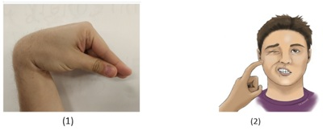
A Hipoparatireoidismo; Cálcio elevado; Fósforo baixo
B Hipotireoidismo; Cálcio baixo; Fósforo elevado
C Hipotireoidismo; Cálcio elevado; Fósforo baixo
D Hipoparatireoidismo; Cálcio baixo; Fósforo elevado
E Hipoparatireoidismo; Cálcio baixo; Fósforo baixo
Questão 549 · Sistema Endócrino · 4000200639Um homem de 50 anos comparece à consulta médica com queixa de rouquidão. O paciente foi diagnosticado com neoplasia da tireoide há 1 mês e foi submetido a uma tireoidectomia total. Após o procedimento, ele inicialmente atribuiu a rouquidão como um efeito temporário da cirurgia. No entanto, como os sintomas persistiram, ele resolveu buscar atendimento médico. Os sinais vitais estão normais. A força e sensibilidade da cabeça e do pescoço estão sem alterações. O exame cardiopulmonar não apresenta alterações. A laringoscopia direta revela paralisia das cordas vocais à direita. Qual é a principal explicação para os sintomas do paciente?
A Lesão do ramo interno do nervo laríngeo superior direito durante a dissecção da artéria tireoidea superior.
B Lesão do ramo externo do nervo laríngeo superior direito durante a dissecção da artéria tireoidea inferior.
C Lesão do nervo laríngeo recorrente direito durante a dissecção da artéria tireoidea superior.
D Lesão do ramo externo do nervo laríngeo superior durante a dissecção da artéria tireoidea superior.
E Lesão do nervo laríngeo recorrente direito durante a dissecção da artéria tireoidea inferior.
Questão 550 · Sistema Endócrino · 4000200638Uma paciente de 23 anos comparece ao consultório médico com queixas de palpitação, agitação, ansiedade e perda de peso de 4 kg nos últimos três meses, além de apresentar um quadro de diarreia. Ela nega antecedentes relevantes ou outros sintomas significativos. Durante o exame físico, a paciente apresenta temperatura de 37,3°C, frequência cardíaca de 112 bpm e pressão arterial de 152x68 mmHg. Com base nos sintomas e sinais clínicos, o médico decide solicitar exames laboratoriais, que revelam os seguintes resultados: hemoglobina (Hb) 12,8 g/dL, leucócitos 7.020/mm³, velocidade de hemossedimentação (VHS) 36 mm/h, hormônio estimulante da tireoide (TSH) < 0,01 mIU/L, tiroxina livre (T4 livre) 5,2 ng/dL e resultado positivo para anticorpos anti-receptor de TSH (TRAb). Posteriormente, é realizada uma cintilografia com iodo marcado, que demonstra alta captação. Veja este achado ao exame físico: Diante desse quadro clínico, qual dos mecanismos de ação a seguir será utilizado pelo medicamento indicado para o tratamento dessa situação clínica?
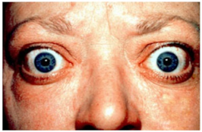
A Inibir a atividade da tireoide peroxidase (TPO).
B Bloqueio do receptor beta-adrenérgico.
C Anticorpo anti-receptor de TSH (TRAb).
D Inibição da COX-1 e COX-2.
E Inibição da fosfolipase A2.
Questão 551 · Sistema Endócrino · 4000200637Uma paciente de 23 anos procura o pronto-socorro com queixas de palpitação, agitação e perda de peso de aproximadamente 4 kg nas últimas duas semanas. Ela relata ter tido um episódio gripal cerca de três semanas atrás, com resolução dos sintomas respiratórios, mas ainda apresenta odinofagia persistente e está em dúvida se teve febre nos últimos dias. Não possui antecedentes pessoais relevantes. Durante o exame físico, apresenta temperatura de 37,3 °C, frequência cardíaca de 112 bpm e dor à palpação do pescoço. Diante desses sintomas e sinais clínicos, o médico decide solicitar exames laboratoriais, que revelam os seguintes resultados: hemoglobina (Hb) 10,8 g/dL, leucócitos 7.020/mm³, velocidade de hemossedimentação (VHS) 110 mm/h (valor alto), hormônio estimulante da tireoide (TSH) < 0,01 mIU/L (valor baixo) e tiroxina livre (T4 livre) 5,2 ng/dL (valor alto). Posteriormente, é realizada uma cintilografia com iodo marcado, que evidencia baixa captação. Diante desse quadro clínico, qual dos mecanismos de ação a seguir é utilizado pelo medicamento indicado para o tratamento dessa situação clínica?
A Inibição da atividade da tireoide peroxidase (TPO).
B Bloqueio do receptor beta-adrenérgico.
C Bloqueio do receptor alfa-adrenérgico.
D Inibição da produção de parede celular.
E Inibição da atividade da topoisomerase II.
Questão 552 · Sistema Endócrino · 4000200636Uma paciente de 54 anos comparece a uma consulta de rotina com queixas de dor bilateral nos joelhos, que a deixaram mais sedentária desde sua última visita. Além disso, ela relata um ganho de peso de 9 kg no último ano, associado ao sedentarismo e ao consumo de alimentos condimentados. A paciente possui antecedentes de osteoartrite, obesidade e hipertensão arterial sistêmica. Está em uso de anlodipino e anti-inflamatórios não esteroides (AINEs). Na história familiar, destaca-se que o pai da paciente sofreu recentemente um infarto agudo do miocárdio. Durante o exame físico, a paciente encontra-se afebril, com frequência cardíaca de 85 bpm, frequência respiratória de 18 irpm e pressão arterial de 142x86 mmHg. Seu índice de massa corporal (IMC) é de 36 kg/m², com circunferência abdominal de 92 cm. Além disso, foram realizados exames laboratoriais que apresentaram os seguintes resultados: sódio (Na+) 134 mmol/L, potássio (K+) 4,2 mmol/L, cloreto (Cl-) 98 mmol/L, bicarbonato (HCO3-) 24 mmol/L, ureia 48 mg/dL, creatinina 0,8 mg/dL, glicemia de jejum 116 mg/dL, triglicerídeos 148 mg/dL e colesterol total 188 mg/dL (LDL 140 mg/dL, HDL 48 mg/dL). Veja este achado ao exame físico: Das condições abaixo, qual mais provavelmente a paciente apresenta:
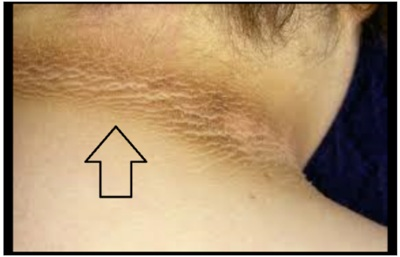
A Diabetes insipidus
B Hemocromatose Hereditária
C Insuficiência adrenal
D Diabetes mellitus
E Síndrome Metabólica
Questão 553 · Sistema Endócrino · 4000200635Uma paciente de 49 anos do sexo feminino vem ao consultório por queixa de ganho de peso progressivo e fadiga há 2 meses. Ela não consegue mais realizar as atividades de casa por fraqueza. Sem antecedentes pessoais dignos de nota. Temperatura axilar: 37 graus celsius, frequência cardíaca de 84 batimentos por minuto, pressão arterial de 166x96 mmHg. No exame físico, observamos equimoses difusas e fraqueza de caráter proximal. Na investigação, temos como exames laboratoriais: cortisol em urina de 24 horas aumentado e ACTH reduzido. Na TC abdominal, encontrado um tumor na glândula adrenal direita. Avaliando a glândula adrenal esquerda, em que região encontraríamos o maior grau de atrofia?
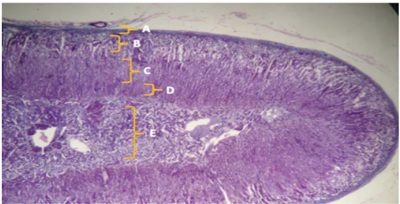
A A
B B
C C
D D
E E
Questão 554 · Sistema Endócrino · 4000200634Um estudo a respeito do desenvolvimento das características sexuais secundárias do sexo feminino é realizado. É demonstrado que alterações como pelos pubianos e desenvolvimento de pelos axilares são decorrentes da contribuição de um hormônio que é produzido em região fora dos ovários. Este hormônio provavelmente é produzido em qual região?
A Zona glomerulosa do córtex adrenal
B Medula adrenal
C Zona reticulada do córtex adrenal
D Zona fasciculada do córtex adrenal
E Hipófise
Questão 555 · Divisão do Coração em Camadas Endocárdio Miocárdio e Epicárdio · 4000200633P.L.S., mulher de 65 anos, com histórico de febre reumática na infância, foi internada com sintomas de febre, calafrios e perda de peso ao longo das últimas duas semanas. Ela também descreveu a ocorrência de manchas arroxeadas em seus dedos e um novo sopro cardíaco. Foi realizada uma ecocardiogra a transesofágica, que mostrou vegetações na válvula mitral. Foi feito o diagnóstico de Endocardite Infecciosa. Durante a internação, ela apresentou súbita perda de força no membro superior direito e alteração da fala. Um exame de imagem cerebral foi imediatamente realizado e sugeriu a presença de um acidente vascular cerebral isquêmico (AVC). Com base no caso clínico apresentado, qual das seguintes opções é a explicação mais provável para a ocorrência de AVC nesta paciente?
A Aumento da pressão intracraniana devido à febre.
B Vasculite cerebral secundária à febre reumática.
C Embolia de vegetação de endocardite.
D Efeito do stress causado pela internação.
Questão 556 · Divisão do Coração em Camadas Endocárdio Miocárdio e Epicárdio · 4000200632J.R.S, mulher de 34 anos, chega ao consultório com febre baixa há duas semanas, perda de peso e fadiga. A paciente tem histórico de uso de drogas intravenosas. No exame físico, observam-se petéquias nas palmas das mãos e plantas dos pés, além de lesões de Janeway (manchas eritematosas, não dolorosas, na palma das mãos e sola dos pés) e nódulos de Osler (nódulos subcutâneos dolorosos nas pontas dos dedos). Os sinais vitais são estáveis, porém há um sopro cardíaco diastólico ouvido na ausculta. Exames laboratoriais indicam anemia leve e os hemocultivos revelam a presença de Staphylococcus aureus. O ecocardiograma transesofágico mostra vegetações nas válvulas cardíacas. Foi então feito o diagnóstico de endocardite infecciosa. Com base no caso clínico apresentado e em seus conhecimentos, qual o principal mecanismo siopatológico da endocardite infecciosa neste paciente?
A Colonização direta do miocárdio por patógenos.
B Disseminação hematogênica de bactérias e formação de vegetações em válvulas cardíacas.
C Proliferação incontrolável de células miocárdicas.
D Deposição de complexos imunológicos na parede dos vasos sanguíneos.
Questão 557 · Anatomia do Sistema Cardiovascular · 4000200631P.J.P., 58 anos, sexo feminino, hipertensa, vem ao seu consultório para consulta de rotina. Ela tem se queixado de episódios de tontura, especialmente ao se levantar rapidamente. Você suspeita que esses sintomas possam estar relacionados à sua medicação anti-hipertensiva, que provoca vasodilatação e, consequentemente, pode reduzir sua resistência vascular periférica (RVP). A paciente, uma enfermeira aposentada, está curiosa sobre como a RVP pode ter relação com sua pressão arterial e os episódios de tontura. Sobre isso, assinale a alternativa correta:
A A resistência vascular periférica é inversamente proporcional à pressão arterial, portanto, quando a RVP aumenta, a pressão arterial diminui.
B A resistência vascular periférica não tem relação direta com a pressão arterial. Alterações na RVP não afetam a pressão arterial.
C A resistência vascular periférica é diretamente proporcional à pressão arterial, portanto, quando a RVP diminui, a pressão arterial também diminui.
D A resistência vascular periférica afeta a pressão arterial somente em situações de stress ou exercício físico. Em repouso, a RVP não tem impacto na pressão arterial.
Questão 558 · Anatomia do Sistema Cardiovascular · 4000200630A.C.S., 62 anos, sexo feminino, é trazida ao seu consultório para uma consulta de rotina. Durante a consulta, ela menciona que tem um histórico de hipertensão arterial e está em tratamento farmacológico há alguns anos. Ela está curiosa sobre os fatores que in uenciam sua pressão arterial e diz que em uma pesquisa na internet encontrou o conceito de resistência vascular periférica, porém não compreendeu bem seu significado, pedindo maiores esclarecimentos. Considerando a importância da resistência vascular periférica na regulação da pressão arterial, assinale a alternativa correta:
A A resistência vascular periférica é determinada principalmente pela dilatação das arteríolas, que resulta em aumento da pressão arterial sistólica e diminuição da pressão arterial diastólica.
B A resistência vascular periférica é influenciada principalmente pelo diâmetro e comprimento dos capilares, o que pode levar a variações significativas na pressão arterial.
C A resistência vascular periférica é influenciada pelo diâmetro e pelo tônus dos vasos sanguíneos, sendo que a vasoconstrição aumenta a resistência vascular periférica e a pressão arterial, enquanto a vasodilatação diminui a resistência vascular periférica e a pressão arterial.
D A resistência vascular periférica é influenciada apenas pelo fluxo sanguíneo venoso, que determina a quantidade de sangue que retorna ao coração e, assim, afeta a pressão arterial.
Questão 559 · Débito Cardíaco e Circulação Coronária · 4000200629R.M.S., 58 anos, sexo masculino, é um paciente hipertenso e diabético que apresenta quadro de falta de ar aos esforços há alguns meses. Durante a consulta, ele menciona que ultimamente tem sentido palpitações e percebeu inchaço nas pernas. Ao exame físico, observa-se uma frequência cardíaca aumentada e terceira bulha cardíaca. A pressão arterial encontra-se dentro dos valores normais. O médico levantou a hipótese de insu ciência cardíaca congestiva e o Ecocardiograma transtorácico mostrou uma fração de ejeção do ventrículo esquerda reduzida. Com base no caso clínico descrito, qual é a possível alteração no débito cardíaco?
A O Débito Cardíaco está aumentado devido à elevação da pressão arterial e ao aumento da frequência cardíaca.
B O Débito Cardíaco está diminuído devido à disfunção sistólica do ventrículo esquerdo.
C O Débito Cardíaco está aumentado devido à hipertrofia do ventrículo esquerdo.
D O Débito Cardíaco está diminuído devido à obstrução na circulação pulmonar.
Questão 560 · Débito Cardíaco e Circulação Coronária · 4000200628K.A.M, sexo feminino, 69 anos, com histórico de hipertensão arterial sistêmica e diabetes mellitus, foi internada com queixa de falta de ar e inchaço nas pernas. Ao exame físico, apresentava dispneia aos médios esforços, crepitações pulmonares e edema em ambos os membros inferiores. Após a realização de exames complementares, foi diagnosticada com insu ciência cardíaca congestiva descompensada. Considerando o caso clínico descrito acima, assinale a alternativa que apresenta o melhor conceito de Débito Cardíaco e sua relação com a insuficiência cardíaca congestiva?
A O Débito Cardíaco é a quantidade de sangue que o coração bombeia por minuto e é diretamente proporcional à força de contração do ventrículo esquerdo. Na insuficiência cardíaca congestiva, o Débito Cardíaco pode estar diminuído devido à disfunção sistólica ou diastólica do ventrículo esquerdo, o que pode levar a um acúmulo de líquido nos pulmões e edema nos membros inferiores.
B O Débito Cardíaco é a quantidade de sangue que o coração bombeia por minuto e é diretamente proporcional à resistência vascular periférica. Na insuficiência cardíaca congestiva, o Débito Cardíaco pode estar aumentado devido à redução da resistência vascular periférica, o que pode levar a um acúmulo de líquido nos pulmões e edema nos membros inferiores.
C O Débito Cardíaco é a quantidade de sangue que o coração bombeia por minuto e é diretamente proporcional à pressão arterial. Na insuficiência cardíaca congestiva, o Débito Cardíaco pode estar aumentado devido à elevação da pressão arterial, o que pode levar a um acúmulo de líquido nos pulmões e edema nos membros inferiores.
D O Débito Cardíaco é a quantidade de sangue que o coração bombeia por minuto e é independente da função ventricular. Na insuficiência cardíaca congestiva, o Débito Cardíaco não é afetado pela disfunção ventricular, mas pode estar aumentado ou diminuído devido a outros fatores, como a perda de sangue ou a desidratação.
Questão 561 · Débito Cardíaco e Circulação Coronária · 4000200627H.F.G, sexo masculino, 66 anos, é admitido na unidade de emergência com queixa de dor torácica e falta de ar. Ao exame físico, apresenta hipotensão, taquicardia, sopro sistólico e terceira bulha cardíaca. Foi diagnosticado com um infarto agudo do miocárdio e iniciado o tratamento adequado. Durante a hospitalização, o Débito Cardíaco foi monitorado e apresentou valores abaixo do normal. Considerando o caso clínico descrito acima, qual é o conceito de Débito Cardíaco e por que a diminuição do Débito Cardíaco pode estar associada a um infarto agudo do miocárdio?
A O Débito Cardíaco é a quantidade de sangue que o coração bombeia por minuto e é inversamente proporcional à frequência cardíaca. Na presença de um infarto agudo do miocárdio, o Débito Cardíaco pode estar diminuído devido a uma bradicardia sinusal.
B O Débito Cardíaco é a quantidade de sangue que o coração bombeia por minuto e é diretamente proporcional ao volume sistólico. Na presença de um infarto agudo do miocárdio, o Débito Cardíaco pode estar diminuído devido à redução do volume sistólico causado pela disfunção do miocárdio infartado.
C O Débito Cardíaco é a quantidade de sangue que o coração bombeia por minuto e é inversamente proporcional à pressão arterial. Na presença de um infarto agudo do miocárdio, o Débito Cardíaco pode estar diminuído devido à hipotensão que frequentemente ocorre após um infarto.
D O Débito Cardíaco é a quantidade de sangue que o coração bombeia por minuto e é independente da função ventricular. Na presença de um infarto agudo do miocárdio, o Débito Cardíaco não é afetado pela disfunção ventricular, mas pode estar diminuído devido a outros fatores, como a perda de sangue ou a desidratação.
Questão 562 · Anatomia do Sistema Cardiovascular · 4000200626M.R.S., 67 anos, sexo feminino, comparece à consulta com queixas de fadiga progressiva e dispneia aos esforços há 6 meses. Ela possui histórico de hipertensão arterial sistêmica e diabetes mellitus tipo 2. Durante a consulta, você suspeita de insu ciência cardíaca e solicita um ecocardiograma, que revela uma fração de ejeção do ventrículo esquerdo (FEVE) de 35% (valores normais entre 55% e 70%). Ao explicar o diagnóstico à paciente, ela pergunta sobre o conceito de contratilidade cardíaca e como isso está relacionado à sua condição. Sobre isso, assinale a alternativa correta:
A A contratilidade cardíaca é a capacidade do coração de gerar força e encurtar-se em resposta a um estímulo elétrico, sendo inversamente proporcional à quantidade de sangue que o coração bombeia a cada batimento.
B A contratilidade cardíaca refere-se à força com que o coração se contrai independentemente da pré-carga e pós-carga, sendo um fator determinante na capacidade do coração de bombear sangue de forma eficiente.
C A contratilidade cardíaca é a capacidade do coração de se adaptar às variações na quantidade de sangue que retorna ao coração, sendo determinada principalmente pela frequência cardíaca.
D A contratilidade cardíaca é a capacidade do coração de manter um ritmo cardíaco constante, sendo um indicador da eficiência do nódulo sinoatrial como marcapasso natural do coração.
Questão 563 · Anatomia do Sistema Cardiovascular · 4000200625G.F.S., 63 anos, sexo feminino, chega ao seu consultório com queixas de falta de ar e cansaço fácil. Ela tem histórico de hipertensão arterial sistêmica e diabetes mellitus tipo 2. Exames revelam que a paciente está com insu ciência cardíaca. Você explica para ela sobre a condição e menciona que a contratilidade do seu coração está comprometida. Ela, porém, não entende o que significa contratilidade e pede mais explicações. Sobre isso, assinale a alternativa correta:
A A contratilidade refere-se à capacidade do coração de se contrair, mas não tem qualquer relação com a quantidade de sangue que o coração é capaz de bombear.
B A contratilidade refere-se à força com a qual o coração se contrai em cada batimento. Quando a contratilidade está comprometida, o coração não consegue bombear o sangue eficientemente.
C A contratilidade é a capacidade do coração de se contrair de forma sincronizada, garantindo que o sangue seja bombeado de maneira eficiente para todas as partes do corpo.
D A contratilidade refere-se à velocidade com que o coração se contrai e relaxa, sendo que uma contratilidade maior leva a uma frequência cardíaca mais alta.
Questão 564 · Anatomia do Sistema Cardiovascular · 4000200624F.S., 28 anos, sexo feminino, vem ao seu consultório para uma avaliação cardiológica de rotina. Ela é uma atleta pro ssional de natação e relata treinar diariamente por várias horas. Durante a consulta, você verifica a frequência cardíaca dela, que é de 50 batimentos por minuto. F.S. ca preocupada com esse valor, pois sabe que a média para adultos é de cerca de 60 a 100 batimentos por minuto. Sobre a frequência cardíaca (FC) de F.S., assinale a alternativa correta:
A A baixa frequência cardíaca indica uma condição médica grave e F.S. deve parar imediatamente de praticar esportes.
B A baixa frequência cardíaca é resultado do condicionamento físico de F.S., e é esperada em atletas treinados.
C A baixa frequência cardíaca indica uma possível arritmia cardíaca e F.S. deve complementar sua investigação com um Holter, além de iniciar tratamento farmacológico.
D A baixa frequência cardíaca indica que F.S. não está treinando adequadamente e precisa melhorar sua performance.
Questão 565 · Anatomia do Sistema Cardiovascular · 4000200623J.G.S., 26 anos, sexo feminino, vem ao seu consultório para uma consulta de rotina. Ela não tem queixas especí cas, mas menciona que tem praticado corrida diariamente como uma forma de aliviar o estresse do trabalho. Durante a anamnese, ela revela que usa um smartwatch que registra sua frequência cardíaca durante os exercícios, e notou que sua frequência cardíaca durante a corrida é significativamente maior do que em repouso. Ela pergunta o motivo dessa diferença. Sobre a frequência cardíaca nesse caso, assinale a alternativa correta:
A A frequência cardíaca aumenta durante o exercício porque o coração precisa bombear mais sangue para suprir a demanda de oxigênio dos músculos.
B A frequência cardíaca diminui durante o exercício porque o coração se torna mais eficiente, necessitando de menos batimentos para bombear a mesma quantidade de sangue. O aumento mostrado no smartwatch na verdade é em relação ao volume sistólico.
C A frequência cardíaca durante o exercício é a mesma que em repouso, a diferença notada no smartwatch é devido ao aumento do estresse e da ansiedade.
D A frequência cardíaca aumenta durante o exercício porque o coração precisa bombear menos sangue, reduzindo o esforço sobre o músculo cardíaco.
Revisar: possível letra faltando em enunciado
Questão 566 · Fisiologia do Sistema Cardiovascular · 4000200622M.A., 62 anos, sexo masculino, é encaminhado ao seu consultório para avaliação cardiológica. Ele relata cansaço fácil e falta de ar aos médios esforços, que vêm piorando ao longo dos últimos seis meses. Durante a consulta, você realiza um exame físico e ausculta cardíaca, onde percebe um sopro sistólico bem característico em área aórtica. Realiza um ecocardiograma que confirma a suspeita de estenose aórtica. Diante desse diagnóstico, M.A. questiona sobre possíveis alterações no volume de sangue que o coração dele está conseguindo bombear. Sobre o Volume Sistólico (VS) nesse caso clínico, assinale a alternativa correta:
A O Volume Sistólico está aumentado devido à maior resistência imposta pela estenose aórtica.
B O Volume Sistólico está diminuído devido à maior resistência imposta pela estenose aórtica.
C O Volume Sistólico está aumentado devido à sensação de cansaço fácil e falta de ar.
D O Volume Sistólico está diminuído devido à sensação de cansaço fácil e falta de ar.
Questão 567 · Fisiologia do Sistema Cardiovascular · 4000200621J.S., 55 anos, sexo masculino, procura atendimento médico ambulatorial com queixa de palpitações e sensação de coração acelerado. Durante a consulta, você realiza um exame físico e ausculta cardíaca, e observa que a frequência cardíaca do paciente está aumentada. Com base no caso clínico descrito, qual é a possível alteração no Volume Sistólico?
A O Volume Sistólico está aumentado devido à frequência cardíaca elevada.
B O Volume Sistólico está diminuído devido à frequência cardíaca elevada.
C O Volume Sistólico está aumentado devido à presença de palpitações.
D O Volume Sistólico está diminuído, sendo o principal fator para isso o aumento da pós-carga.
Questão 568 · Anatomia do Sistema Cardiovascular · 4000200620P.R.J, 45 anos, foi encaminhado ao hospital após um acidente de carro. Um exame de imagem mostra um trauma no abdômen inferior, com suspeita de lesão na veia cava inferior. Com base em seus conhecimentos sobre a anatomia da veia cava inferior e seus ramos, assinale a alternativa correta:
A Uma lesão na veia cava inferior pode comprometer a drenagem de sangue dos membros superiores.
B A veia cava inferior é formada pela junção das veias jugulares internas.
C Uma lesão na veia cava inferior pode comprometer a drenagem de sangue dos membros inferiores, órgãos pélvicos e parte do abdômen.
D A veia cava inferior drena diretamente para o átrio esquerdo do coração.
Questão 569 · Anatomia do Sistema Cardiovascular · 4000200619J.C.P, 33 anos, foi encaminhado ao hospital com suspeita de trombose venosa profunda no membro inferior direito. O clínico decide realizar uma ultrassonografia Doppler para confirmar o diagnóstico. Considerando o sistema venoso maior, que compreende a veia cava e seus ramos, assinale a alternativa correta:
A A veia cava inferior é formada principalmente pela confluência das veias ilíacas internas e externas.
B A veia cava superior recebe o sangue do tronco e dos membros superiores, sendo formada pela junção das veias subclávias e jugulares internas.
C A veia cava inferior recebe sangue apenas das veias renais, veias adrenais e veia gonadal direita.
D A veia cava superior não possui comunicação direta com as veias do sistema ázigo.
Questão 570 · Anatomia do Sistema Cardiovascular · 4000200618J.R., 55 anos, é trazido ao pronto socorro após um acidente de carro. Durante o exame inicial, você percebe que a frequência cardíaca de J.R. está bastante elevada, mesmo após a administração de um sedativo leve para acalmar a ansiedade do paciente. Você suspeita de uma possível lesão que afeta a inervação do coração. Com base no caso apresentado e no seu conhecimento sobre a inervação simpática e parassimpática do coração, qual das seguintes afirmações é mais provável?
A Uma lesão no nervo vago pode ter levado a uma diminuição da inervação parassimpática, resultando em um aumento relativo da inervação simpática e, consequentemente, em uma frequência cardíaca elevada.
B Uma lesão nos nervos espinhais torácicos pode ter levado a uma diminuição da inervação simpática, resultando em um aumento relativo da inervação parassimpática e, consequentemente, em uma frequência cardíaca elevada.
C Uma lesão no nervo vago pode ter levado a um aumento da inervação parassimpática, resultando em uma diminuição relativa da inervação simpática e, consequentemente, em uma frequência cardíaca elevada.
D Uma lesão nos nervos espinhais torácicos pode ter levado a um aumento da inervação simpática, resultando em uma diminuição relativa da inervação parassimpática e, consequentemente, em uma frequência cardíaca elevada.
Questão 571 · Anatomia do Sistema Cardiovascular · 4000200617A regulação do ritmo cardíaco é uma tarefa complexa que envolve a interação entre o sistema nervoso autônomo, o sistema endócrino e o coração. O sistema nervoso autônomo, composto pelos sistemas simpático e parassimpático, desempenha um papel crucial na modulação da frequência e da força de contração do coração. Considerando a inervação simpática e parassimpática do coração, marque a alternativa correta:
A A estimulação simpática do coração, que ocorre principalmente através do nervo vago, tende a diminuir a frequência cardíaca e a força de contração do coração.
B A estimulação parassimpática do coração, mediada principalmente pelo nervo vago, tende a aumentar a frequência cardíaca e a força de contração do coração.
C A estimulação simpática do coração, que ocorre principalmente através dos nervos espinhais torácicos, tende a aumentar a frequência cardíaca e a força de contração do coração.
D A estimulação parassimpática do coração, mediada principalmente através dos nervos espinhais torácicos, tende a diminuir a frequência cardíaca e a força de contração do coração.
Questão 572 · Anatomia do Sistema Cardiovascular · 4000200616R.F., 65 anos, chega à emergência apresentando falta de ar, fadiga e inchaço nas pernas. Ela tem um histórico de hipertensão arterial e diabetes. Durante o exame físico, o médico detecta um sopro cardíaco. Um ecocardiograma é realizado e revela o estreitamento de uma das valvas do coração, que está impedindo o uxo sanguíneo adequado do átrio esquerdo para o ventrículo esquerdo. Qual das seguintes valvas cardíacas está provavelmente afetada?
A Valva mitral
B Valva tricúspide
C Valva pulmonar
D Valva aórtica
Questão 573 · Anatomia do Sistema Cardiovascular · 4000200615P.L.S., 65 anos, chega ao hospital com queixa de inchaço nos membros inferiores e sensação de peso. A paciente relata ter histórico de doença renal crônica e hipertensão arterial sistêmica. Durante o exame físico, o médico nota distensão das veias super ciais do abdômen. A ultrassonogra a doppler evidencia uma obstrução em um vaso grande, que coleta sangue de regiões como o tronco, pescoço, membros superiores e parte da cabeça. Qual é o vaso provavelmente obstruído?
A Veia porta
B Veia pulmonar
C Veia cava superior
D Veia cava inferior
Questão 574 · Anatomia do Sistema Cardiovascular · 4000200614R.S.P., 71 anos, comparece ao consultório com queixa de dor no peito durante atividades físicas intensas, aliviada com o repouso. A paciente possui histórico de diabetes mellitus tipo 2 e hipertensão arterial sistêmica. Durante a consulta, é realizado um teste de estresse, que mostra alterações sugestivas de isquemia miocárdica. O médico decide encaminhar a paciente para um cateterismo cardíaco, que evidencia obstrução em uma artéria que irriga principalmente o ventrículo direito, o nódulo sinoatrial na maioria das pessoas, e, em muitos casos, a parte inferior do ventrículo esquerdo. Qual é a artéria provavelmente obstruída?
A Artéria coronária esquerda
B Ramo circunflexo da artéria coronária esquerda
C Artéria descendente anterior esquerda
D Artéria coronária direita
Questão 575 · Anatomia do Sistema Cardiovascular · 4000200613R.C.A., 63 anos, é levado ao pronto-socorro com queixa de dor torácica intensa e contínua, irradiada para o braço esquerdo, com duração de aproximadamente 1 hora. O paciente relata que é fumante há 40 anos, possui hipertensão arterial sistêmica controlada com medicação e tem histórico familiar de doença arterial coronariana. O eletrocardiograma realizado na emergência mostra alterações sugestivas de infarto agudo do miocárdio. O médico solicita um cateterismo cardíaco, que identi ca uma obstrução em uma artéria que irriga a maior parte da parede anterior do ventrículo esquerdo e a porção anterior do septo ventricular. Qual é a artéria provavelmente obstruída?
A Artéria coronária direita.
B Artéria coronária esquerda.
C Ramo circunflexo da artéria coronária esquerda.
D Artéria descendente anterior esquerda.
Revisar: possível letra faltando em enunciado
Questão 576 · Anatomia do Sistema Cardiovascular · 4000200612A.C.M., sexo masculino, 70 anos, foi encaminhado para consulta de rotina com seu cardiologista. Durante a anamnese, o paciente relata sentir falta de ar ao realizar atividades físicas moderadas. Além disso, menciona episódios de tontura e fadiga após os exercícios. O médico decide realizar um exame físico e, ao auscultar o coração, nota um sopro sistólico em foco mitral. Um ecocardiograma subsequente confirmou a suspeita de insuficiência da válvula mitral. Com base nas informações apresentadas pelo caso e de acordo com seus conhecimentos de anatomia, qual das seguintes afirmações descreve corretamente a função da válvula mitral?
A A válvula mitral permite o fluxo de sangue do ventrículo direito para o átrio direito durante a diástole e impede o refluxo durante a sístole.
B A válvula mitral permite o fluxo de sangue do ventrículo esquerdo para o átrio esquerdo durante a diástole e impede o refluxo durante a sístole.
C A válvula mitral permite o fluxo de sangue do átrio direito para o ventrículo direito durante a diástole e impede o refluxo durante a sístole.
D A válvula mitral permite o fluxo de sangue do átrio esquerdo para o ventrículo esquerdo durante a diástole e impede o refluxo durante a sístole.
Questão 577 · Anatomia do Sistema Cardiovascular · 4000200611L.M.N., sexo masculino, 45 anos, vem ao consultório médico com queixa de cansaço fácil e fadiga durante atividades físicas. Relata também que vem ganhando peso nas últimas semanas, mesmo sem grandes alterações na dieta. Ao exame físico, foi identi cado edema bilateral de membros inferiores e ingurgitamento das veias jugulares. Ausculta cardíaca revela presença de sopro sistólico em foco mitral. Um ecocardiograma foi realizado, confirmando a hipótese de insuficiência mitral. Com base nas informações apresentadas pelo caso e em seus conhecimentos, qual das seguintes estruturas anatômicas é a principal responsável pela insuficiência mitral neste caso?
A Folhetos da valva mitral.
B Seio coronário
C Músculos papilares
D Valva tricúspide
Revisar: possível letra faltando em enunciado
Questão 578 · Anatomia do Sistema Cardiovascular · 4000200610J.C.M., sexo masculino, 42 anos, chega ao consultório médico relatando episódios de tontura e fraqueza nos últimos meses. Durante o exame físico, o médico verifica que a frequência cardíaca do paciente é bastante irregular. Um eletrocardiograma subsequente revela um bloqueio completo do ramo esquerdo. Com base nas informações apresentadas e em seus conhecimentos de anatomia, qual das seguintes a rmações descreve corretamente a função do feixe de His no contexto deste caso clínico?
A O feixe de His é responsável pela geração do impulso elétrico que inicia cada batimento cardíaco, atuando como o marca-passo natural do coração.
B O feixe de His é responsável pela condução do impulso elétrico dos ventrículos para os átrios, garantindo a contração coordenada do coração.
C O feixe de His é responsável pela condução do impulso elétrico do nó atrioventricular para os ventrículos, garantindo a contração coordenada do coração.
D O feixe de His é responsável pela geração do impulso elétrico que inicia a contração dos ventrículos, garantindo o bombeamento eficiente do sangue.
Questão 579 · Anatomia do Sistema Cardiovascular · 4000200609Paciente de 25 anos chega ao pronto-socorro com histórico de palpitações e falta de ar há alguns meses. Durante a avaliação, ele relata que esses episódios geralmente duram alguns minutos e ocorrem de forma espontânea, sem um fator desencadeante específico. Ao realizar um eletrocardiograma, é observado um padrão de pré-excitação ventricular, sugerindo a presença de uma síndrome de Wol -Parkinson-White (WPW). O médico solicita exames adicionais, incluindo um ecocardiograma, que revela um coração estruturalmente normal. O paciente é então encaminhado para um especialista em arritmias cardíacas, que confirma o diagnóstico de WPW. O tratamento inicial consiste em medicamentos para controlar a frequência cardíaca durante os episódios de palpitações e a realização de um procedimento chamado ablação por cateter. Durante a Síndrome de WPW, existe uma via anômala adicional entre os átrios e os ventrículos, que é chamada de feixe de Kent. Essa via pode permitir a ativação precoce dos ventrículos antes de o impulso elétrico normal chegar aos ventrículos pelo ________________________. Qual das estruturas abaixo é a que preenche corretamente a lacuna?
A Ramo direito do feixe atrioventricular.
B Nó sinoatrial.
C Nó atrioventricular.
D Nervo vago.
Questão 580 · Anatomia do Sistema Cardiovascular · 4000200608Paciente de 68 anos de idade chega ao pronto-socorro com queixa de desmaio repentino. Ao realizar o exame físico, o médico percebeu uma frequência cardíaca baixa. Ao realizar o eletrocardiograma (ECG), foi diagnosticado um bloqueio atrioventricular de terceiro grau. O paciente foi encaminhado para uma unidade de terapia intensiva e colocado em monitoramento cardíaco contínuo. Foi iniciado o tratamento com um marca-passo temporário para manter uma frequência cardíaca adequada. Após avaliação completa, foi identi cado que a causa do bloqueio atrioventricular era devido a uma doença cardíaca subjacente, como a doença de Chagas. O paciente foi submetido a exames de imagem e foi encaminhado para avaliação cardiológica especializada para definição do tratamento a longo prazo. O texto acima conta um caso clínico sobre bloqueio atrioventricular, uma disfunção do nó atrioventricular. Em relação a função do nó atrioventricular assinale a alternativa correta.
A Contração cardíaca.
B Conduzir impulsos elétricos dos átrios aos ventrículos.
C Controlar a frequência cardíaca.
D Iniciar a condução elétrica do coração.
Revisar: possível letra faltando em enunciado
Questão 581 · Anatomia do Sistema Cardiovascular · 4000200607J.L.V, 48 anos, foi submetido a cirurgia cardiovascular e pós-operatório evolui com arritmia cardíaca de origem atrial. Esta arritmia pode ocorrer nesta situação devido, entre outros fatores, à in amação do pericárdio (pericardite) que ocorre após o procedimento cirúrgico. A estrutura do complexo estimulante do coração afetada, por estar localizada mais próxima do epicárdio é:
A Nó atrioventricular.
B Ramo esquerdo do feixe atrioventricular.
C Ramo direito do feixe atrioventricular.
D Nó sinoatrial.
Questão 582 · Anatomia do Sistema Cardiovascular · 4000200606Paciente do sexo masculino, 45 anos, sem histórico de doenças cardíacas, comparece ao pronto-socorro com queixa de palpitações e desconforto no peito. Ele relata que começou a sentir os sintomas cerca de uma hora antes de procurar ajuda médica e que não consegue identi car nenhum fator desencadeante específico. Ao ser examinado, o paciente apresenta frequência cardíaca de 110 batimentos por minuto e pressão arterial dentro dos valores normais. O ECG mostra um ritmo sinusal regular com ondas P normais, indicando uma taquicardia sinusal. Os demais exames de sangue e imagem não apresentaram alterações significativas. Após avaliação clínica, o médico opta por monitorar o paciente e prescrever medicamentos para controlar a frequência cardíaca e aliviar os sintomas, além de recomendar medidas para reduzir o estresse e a ansiedade, como técnicas de relaxamento e mudanças no estilo de vida. O texto acima descreve um caso clínico de taquicardia sinusal. A respeito do nó sinoatrial, assinale a alternativa correta.
A É responsável por iniciar os batimentos cardíacos, atuando como 'marcapasso' natural do coração.
B Está localizado no átrio esquerdo.
C É responsável por controlar a pressão arterial do corpo.
D É um tecido nervoso responsável pela contração do coração.
Questão 583 · Fisiologia do Sistema Cardiovascular · 4000200605M.F.G., sexo feminino, 70 anos, vem em consulta ambulatorial com cardiologista e conta que recentemente começou a sentir falta de ar ao caminhar ou subir escadas. Ela também percebeu que sua frequência cardíaca aumenta muito rapidamente com o mínimo de esforço. Ao exame físico, foi possível ouvir um sopro cardíaco característico, suspeito para estenose aórtica. Para confirmar o diagnóstico, o cardiologista pediu que ela realizasse alguns exames, incluindo um ecocardiograma e um teste de esforço. O ecocardiograma de N.F.G mostrou que sua válvula aórtica estava significativamente estreitada, reduzindo de forma significativa o uxo de sangue para a aorta. Além disso, seu teste de esforço mostrou aumento importante da frequência cardíaca rapidamente com pequeno esforço, além de sintomas de falta de ar. A estenose aórtica é uma das doenças que afeta diretamente a pós-carga do paciente. A partir das informações fornecidas, assinale a alternativa que apresenta um fator que in uencia a pós-carga e qual seu impacto sobre ela:
A Resistência valvar, com relação diretamente proporcional.
B Viscosidade sanguínea, com relação inversamente proporcional.
C Aterosclerose, com relação inversamente proporcional.
D Débito cardíaco, com relação diretamente proporcional.
Questão 584 · Fisiologia do Sistema Cardiovascular · 4000200604B.R.G, sexo masculino, 52 anos, compareceu ao pronto-socorro com queixa de inchaço facial, dispneia (falta de ar) progressiva e tosse seca. Ele relatou que os sintomas começaram há cerca de duas semanas e pioraram gradualmente. Também notou que seus braços e mãos estavam inchados e pesados, com uma sensação de formigamento. O exame físico revelou inchaço pronunciado do pescoço, rosto e membros superiores, além de cianose (coloração azulada) nos lábios e ponta dos dedos. Os sinais vitais foram estáveis, com oxigenação adequada, mas o exame pulmonar mostrou sons respiratórios diminuídos na base do pulmão direito. A suspeita clínica inicial foi de síndrome da veia cava superior, que foi confirmada por exames de imagem, incluindo tomogra a computadorizada e ultrassonogra a Doppler, que mostraram uma massa mediastinal (na região entre os pulmões) que comprimia a veia cava superior, obstruindo o fluxo sanguíneo e causando os sintomas descritos. A síndrome da veia cava superior é um quadro que prejudica a pré-carga cardíaca. A partir das informações fornecidas, assinale a alternativa que apresenta um fator que in uencia a pré-carga e qual seu impacto sobre ela:
A Retorno venoso, com relação inversamente proporcional à pré-carga.
B Complacência ventricular, com relação diretamente proporcional.
C Frequência cardíaca, com relação diretamente proporcional.
D Resistência das válvulas cardíacas, com relação diretamente proporcional.
Questão 585 · Fisiologia do Sistema Cardiovascular · 4000200603K.L.H, sexo feminino, 60 anos, vem ao P.S. com queixa de falta de ar e respiração acelerada há alguns meses, sendo que hoje não conseguiu nem andar dentro de casa sem ajuda. Relata também que sente seu coração acelerado mais de uma vez ao dia, geralmente com melhora espontânea após alguns minutos. Ao exame físico, foi identi cado um sopro cardíaco sistólico em foco aórtico. Foi realizado um Ecocardiograma que confirmou a hipótese de estenose aórtica com redução importante do fluxo pela valva. A partir das informações apresentadas pelo caso e de acordo com os seus conhecimentos, qual dos seguintes parâmetros é o mais afetado nesse caso de Estenose aórtica?
A Pré-carga
B Pós-carga
C Contratilidade miocárdica
D Retorno venoso
Revisar: possível letra faltando em enunciado
Questão 586 · Fisiologia do Sistema Cardiovascular · 4000200602J.L.M, 55 anos, sexo masculino, tem histórico de hipertensão arterial, diabetes tipo 2 e tabagismo de longa data. Chega ao PS com queixa de ter acordado há cerca de 30 minutos com dor no peito intensa e falta de ar. Descreve a dor como em pressão, intensidade 10/10 e que irradia para o membro superior esquerdo e para o pescoço. Realizado ECG que identi cou possível área de isquemia cardíaca. O paciente foi submetido ao tratamento clinico inicial e, em seguida, encaminhado imediatamente ao cateterismo, que foi realizado sem intercorrências. Sabemos que o Infarto agudo do miocárdio é um evento que pode afetar de forma grave o desempenho sistólico cardíaco. Entre os fatores que também estão envolvidos com esse desempenho, assinale a alternativa que apresenta a melhor correção entre o fator e sua definição:
A Pré-carga: é a quantidade de sangue que chega aos pulmões antes da contração ventricular.
B Pós-carga: é a resistência externa ao esvaziamento do VE após início da contração ventricular e abertura da válvula aórtica.
C Contratilidade cardíaca: é a capacidade do coração de se contrair, possibilitando o enchimento ventricular durante a sístole.
D Frequência cardíaca: definida como o produto do volume sistólico pelo número de batimentos em um minuto.
Questão 587 · Fisiologia do Sistema Cardiovascular · 4000200601H.L.M, 48 anos, sexo masculino, vem ao seu consultório para avaliação cardiológica. Relata que sofreu infarto agudo do miocárdio em região de ventrículo direito há 3 meses. Desde então, evoluiu com falta de ar aos médios esforços. Além disso, queixa-se de inchaço moderado em ambas as pernas diariamente, principalmente à noite. Apesar de ter compreendido seu diagnóstico, ele te questiona quanto às diferenças entre o ventrículo direito e o ventrículo esquerdo, tanto em relação a anatomia quanto a funcionalidade. Sobre isso, assinale a alternativa correta:
A A parede do ventrículo direito é mais espessa que a do ventrículo esquerdo, o que pode ser explicado pela diferença de pressão que existe entre essas 2 câmaras desde a vida fetal.
B A parede do ventrículo esquerdo é menos espessa que a do ventrículo direito, o que pode ser explicado pela necessidade que há do ventrículo direito de enviar sangue em regime de alta pressão para os pulmões, o que facilita as trocas gasosas.
C A parede do ventrículo esquerdo é mais espessa que a do ventrículo direito, o que pode ser explicado pela necessidade de maior pressão para vencer a resistência imposta pela circulação.
D A parede do ventrículo esquerdo é mais espessa que a do ventrículo direito, o que pode ser explicado pela diferença de pressão entre a aorta e a artéria pulmonar. Durante a contração ventricular, o septo interventricular costuma se desviar para dentro do ventrículo esquerdo, visto que ele tem maior pressão e contratilidade.
Questão 588 · Fisiologia do Sistema Cardiovascular · 4000200600M.F.G., sexo feminino, 55 anos, vem em consulta de rotina com clínico. Queixa-se apenas de falta de ar leve aos esforços moderados e intensos, porém sem grande impacto em sua rotina diária. É tabagista há 20 anos e trata hipertensão arterial sistêmica com enalapril 1x ao dia. No exame físico, o médico identi cou, na ausculta cardíaca, um sopro sistólico em foco tricúspide. Foi solicitado um Ecocardiograma, que confirmou a hipótese de insuficiência da valva tricúspide moderada. Considerando que gráfico abaixo representa a pressão atrial durante o ciclo cardíaco normal, quais das letras abaixo representa uma fase que estará ausente ou muito diminuída devido a Insuficiência tricúspide?
A A
B C
C X
D V
Questão 589 · Fisiologia do Sistema Cardiovascular · 4000200599J.L., 62 anos, sexo masculino, foi submetido a uma cirurgia abdominal há um ano para tratar de uma perfuração intestinal. Após a cirurgia, ele apresentou uma hérnia incisional em sua cicatriz cirúrgica que gradualmente aumentou de tamanho e se tornou sintomática. Foi agendada cirurgia para correção da hérnia. Logo após o procedimento, o paciente evoluiu com dor e distensão abdominal intensas associadas a diminuição da diurese e hipotensão. Foi realizada a medida da sua pressão intra-abdominal, que identi cou um quadro de síndrome compartimental. Apesar do tratamento conservador indicado pela equipe médica, foi necessária nova abordagem cirúrgica para descompressão abdominal. Sabemos que o aumento da pressão intra-abdominal tem um impacto no retorno venoso do paciente, reduzindo a quantidade de sangue que chega ao átrio direito, prejudicando seu enchimento. Considerando que gráfico abaixo representa a pressão atrial durante o ciclo cardíaco normal, quais das letras abaixo representam as fases relacionadas com o enchimento atrial?

A A e C
B A, C e X
C X e Y
D X e V
Questão 590 · Fisiologia do Sistema Cardiovascular · 4000200598J.R.K, sexo masculino, 75 anos, hipertenso de longa data, chegou ao pronto-socorro com um quadro de palpitações recorrentes e intermitentes associadas a fadiga e dispneia aos esforços há cerca de duas semanas. Nega dor no peito, tontura ou desmaio. No exame físico, o paciente apresentava-se com pressão arterial de 130/80 mmHg, frequência cardíaca de 150 batimentos por minuto e saturação de oxigênio de 96% em ar ambiente. Demais exames estavam normais. Foi realizado eletrocardiograma (ECG), revelando um utter atrial com 150 batimentos por minuto. Os exames laboratoriais e o ecocardiograma não mostraram alterações. Optou-se por internação hospitalar para controle de frequência cardíaca e, posteriormente, foi realizada cardioversão elétrica sincronizada. Sabemos que o utter é uma arritmia que ocorre nos átrios. Além disso, o enchimento ventricular envolve 2 processos diferentes: o primeiro é a passagem de sangue de forma passiva entre átrios e ventriculares devido a diferença de pressão entre eles e o segundo ocorre devido a contração atrial, sendo responsável por menos de 30% do volume de enchimento ventricular. Considerando que o utter interfere principalmente na sincronia entre a sístole atrial e o relaxamento ventricular e que o gráfico abaixo representa a pressão atrial durante o ciclo cardíaco normal, qual das letras abaixo aponta a fase que sofrerá maior alteração pelo flutter atrial? Livro Semiologia Cardíaca, Figura 8

A Curva A
B Curva C
C Curva X
D Curva V
Questão 591 · Fisiologia do Sistema Cardiovascular · 4000200597E.J.F, 62 anos, sexo masculino, chega ao Pronto socorro com história de acidente de carro há 30 minutos. Estava dirigindo a cerca de 60km/h, quando perdeu o controle do veículo e chocou-se contra um poste. Não apresenta comorbidades nem faz uso de medicamentos continuamente. Chega a sala de atendimento ao trauma em regular estado geral, lúcido, orientado, em prancha rígida e com colar cervical. Na avaliação inicial apresenta via aérea pérvia, conversando sem di culdades, porém apresenta sinais de desconforto respiratório, saturação de 88%, PA 82x46mmHg; Tórax direito é timpânico a percussão, ausculta pulmonar abolida a direita e tem estase jugular também do lado direito. Foi feita a hipótese diagnóstico de pneumotórax hipertensivo, sendo optado por punção com agulha em 5 espaço intercostal seguida de drenagem torácica, com melhora importante do quadro após. Sabe-se que a diástole, momento em que ocorre o relaxamento e o enchimento dos ventrículos, é uma das etapas do ciclo cardíaco prejudicadas pelo pneumotórax hipertensivo. Considerando que a curva abaixo representa a pressão atrial normal nas diferentes fases de um ciclo cardíaco normal, assinale a alternativa que representa o momento em que o sangue passa a uir dos átrios para os ventrículos e a explicação mais adequada para que isso ocorra: Livro Semiologia Cardíaca, Figura 8

A Curva A, momento em que ocorre a contração atrial, promovendo abertura das válvulas atrioventriculares e passagem de sangue dos átrios para os ventrículos.
B Curva C, momento em que, após abertura das válvulas atrioventriculares no ponto A, há passagem de sangue dos átrios para os ventrículos de forma passiva pela diferença de pressão entre as câmaras.
C Curva Y, momento em que há abertura das válvulas atrioventriculares devido a diferença de pressão entre átrios e ventrículos, permitindo a passagem de sangue de forma passiva.
D Curva X, momento que representa uma queda importante da pressão nos átrios devido à abertura das válvulas atrioventriculares e à contração atrial, permitindo a passagem de sangue de forma ativa dos átrios para os ventrículos.
Questão 592 · Anatomia do Sistema Cardiovascular · 4000200596G.N.I, 52 anos, queixa-se de sudorese, falta de ar, palpitações e dor no peito há cerca de três horas. Paciente possui antecedente pessoal de hipertensão arterial sistêmica e diabetes tipo 2, mas não possui histórico prévio de doença cardíaca. Plantonista realiza exames complementares e detecta lesão grave no principal vaso que sai do ventrículo esquerdo. Qual o vaso lesado?
A Artéria ilíaca comum
B Tronco celíaco
C Artéria aorta.
D Artéria pulmonar.
Questão 593 · Anatomia do Sistema Cardiovascular · 4000200595J.H.V, 50 anos, chega à emergência do PS com queixa de falta de ar, tontura e desconforto torácico progressiva há cerca de 12 horas. Pacientes sem antecedentes pessoais e familiares de doença cardíaca. Foi realizada uma tomogra a computadorizada de tórax que detectou um trombo em um vaso que desemboca no átrio esquerdo. Qual o possível vaso lesado?
A Veia cava superior
B Veia cava inferior
C Seio coronário
D Veia pulmonar
Questão 594 · Acoplamento ExcitaçãoContração e Ciclo Cardíaco · 4000200590H.B.L, 64 anos, queixa-se de dor torácica em aperto de intensidade 6 em 10, sudorese, falta de ar e palpitações há duas horas. Paciente hipertenso, sem histórico de doença cardiovascular prévio e sem antecedentes familiares de problema no coração. Médico de plantão realiza exames complementares que detectam uma rara lesão em um vaso que desemboca no átrio direito. Assinale a alternativa que identifica um possível vaso lesado.
A Seio coronário
B Veia pulmonar
C Tronco braquiocefálico
D Veia subclávia direita
Questão 595 · Anatomia do Sistema Cardiovascular · 4000200587K.M.D., 58 anos, chega à emergência com queixa de dor abdominal intermitente, perda de peso não intencional e diminuição do apetite nos últimos 6 meses. Paciente relata que não há histórico de câncer ou de doença arterial na família. Além disso, não apresenta outras doenças e nunca realizou procedimentos cirúrgicos. Médico realiza exames complementares que detectam uma obstrução na artéria que origina ramos responsáveis por irrigar os seguintes órgãos: estômago, baço, pâncreas, fígado e duodeno. Assinale a alternativa que indica corretamente o vaso obstruído.
A Tronco braquiocefálico.
B Artéria frênica inferior.
C Tronco celíaco.
D Artéria mesentérica inferior.
Questão 596 · Anatomia do Sistema Cardiovascular · 4000200584H.M.G, 49 anos, apresenta-se no pronto socorro com queixa de dormência e dor na região dorsal. Após realização de exames complementares observou-se uma obstrução em ramos da aorta descendente. Assinale a alternativa que indica uma possível artéria ocluída.
A Artéria carótida comum direita.
B Artéria subclávia direita.
C Artéria intercostal posterior.
D Artéria frênica inferior.
Questão 597 · Anatomia do Sistema Cardiovascular · 4000200581M.L.N, sexo feminino, 71 anos, chega ao pronto socorro com queixa dor em aperto na região retroesternal, intensa, 9 de 10. Relata que a dor irradia para a região dorsal e para o pescoço. Possui antecedente pessoal de hipertensão arterial sistêmica, diabetes e tabagismo. Foi realizado um exame de imagem que mostrou dissecção da aorta ascendente que se inicia na altura do primeiro ramo da aorta após as artérias coronárias. Considerando essas informações, assinale a alternativa que indica corretamente a ordem dos três primeiros ramos que surgem da aorta após as coronárias.
A Tronco braquiocefálico, artéria subclávia esquerda e artéria carótida comum esquerda.
B Artéria subclávia esquerda, tronco braquiocefálico e artéria carótida comum esquerda.
C Artéria carótida comum esquerda, tronco braquiocefálico e artéria subclávia esquerda.
D Tronco braquiocefálico, artéria carótida comum esquerda e artéria subclávia esquerda.
Questão 598 · Anatomia do Sistema Cardiovascular · 4000200570J.F.S, 64 anos, sexo masculino, chega ao pronto socorro com queixa de dor torácica intensa, 8 de 10, dor no pescoço e di culdade para respirar. Possui histórico de tabagismo, 50 maços ano, ou seja, fumou um maço de cigarro por dia durante 50 anos. Não há histórico de doença cardiovascular na família. Foram realizados exames complementares que detectaram uma alteração anatômica no primeiro ramo da aorta ascendente após as artérias coronárias. Qual o ramo afetado?
A Tronco braquiocefálico
B Artéria carótida comum esquerda
C Artéria subclávia esquerda
D Artéria subclávia direita
Questão 599 · Circulação Fetal · 4000200569Qual a função das artérias umbilicais na circulação fetal?
A Levar o sangue oxigenado da placenta para o feto.
B Transportar o sangue da circulação corpórea do feto para a placenta.
C Transportar o sangue da circulação corpórea do feto de volta para o coração.
D Passagem do sangue do átrio direito para o átrio esquerdo.
Questão 600 · Circulação Fetal · 4000200568Essa estrutura é um vaso sanguíneo que conecta o feto à placenta durante a gestação. É responsável por transportar sangue oxigenado e rico em nutrientes da placenta para o feto. Após o nascimento seu resquício anatômico é chamado de ligamento redondo. O texto acima descreve qual das seguintes estruturas:
A Canal arterial
B Ducto venoso
C Veia umbilical
D Artéria umbilical
Questão 601 · Circulação Fetal · 4000200567João, recém-nascido de 2 dias de vida, nasceu de parto normal, com 38 semanas de gestação. Durante o pré-natal, não foram identi cadas anormalidades significativas na ecogra a obstétrica. Após o nascimento, João apresentou cianose e di culdade respiratória, além de ter sido observado um sopro cardíaco durante o exame físico. O pediatra solicitou um ecocardiograma, que revelou a presença de um canal arterial patente. Em relação ao canal arterial, assinale a alternativa que apresenta as assertivas corretas. I. O fluxo do canal arterial ocorre da artéria aorta para a artéria pulmonar. II. Durante a vida fetal o uxo do canal arterial se dá da artéria pulmonar para a artéria aorta, pois a pressão pulmonar é menor que na circulação sistêmica. III. Essa estrutura é responsável por levar o sangue oxigenado para os pulmões. IV. Canal arterial após o nascimento se transforma no ligamento arterial, um dos pontos de fraqueza da aorta.
A Apenas I
B I e II
C III e IV
D I e IV
Questão 602 · Circulação Fetal · 4000200566A circulação fetal é o processo de circulação sanguínea que ocorre no feto durante a vida intrauterina. Durante a gestação, o feto obtém oxigênio e nutrientes da mãe através da placenta, e seu próprio sistema respiratório e digestivo ainda não estão funcionando. É diferente da circulação após o nascimento, pois o sangue não precisa ser bombeado para os pulmões para ser oxigenado. Ela é crucial para o desenvolvimento saudável do feto, e sua compreensão é fundamental para a medicina fetal e neonatal. A respeito da circulação fetal assinale a alternativa correta.
A O canal arterial é responsável pela passagem do sangue da artéria aorta para a artéria pulmonar.
B O ducto venoso leva o sangue oxigenado até a veia cava.
C As artérias umbilicais são responsáveis por trazer o sangue oxigenado ao feto.
D O resquício anatômico do ducto venoso é o ligamento redondo.
Questão 603 · Divisão do Coração em Camadas Endocárdio Miocárdio e Epicárdio · 4000200565L.M.K, 55 anos, sexo masculino, chega ao hospital com dor no peito intensa há 3 horas que irradia para o braço esquerdo, acompanhada de sudorese e falta de ar. Relata histórico de hipertensão arterial de difícil controle e tabagismo desde os 18 anos. Descreve que a dor começou enquanto ele fazia atividades físicas leves em casa. Ao examinar o paciente, o médico constata que sua pressão arterial está elevada, bem como sua frequência cardíaca. Além disso, detecta um sopro cardíaco e um terceiro som cardíaco. O ECG mostra alterações típicas de infarto agudo do miocárdio de ventrículo esquerdo. Sobre o miocárdio do VE e suas diferentes camadas, pode-se afirmar:
A O miocárdio é dividido em 3 camadas musculares, sendo que a orientação do feixe muscular é longitudinal no miocárdio subepicárdico, circunferencial no segmento médio e novamente longitudinal no miocárdio subendocárdico.
B O miocárdio é dividido em 2 camadas musculares, sendo que a orientação do feixe muscular é longitudinal no miocárdio subepicárdico e circunferencial no miocárdio subendocárdico.
C O miocárdio é dividido em 3 camadas musculares, sendo que a orientação do feixe muscular é circunferencial no miocárdio subepicárdico, longitudinal no segmento médio e novamente circunferencial no miocárdio subendocárdico.
D O miocárdio é dividido em 2 camadas musculares, sendo que a orientação do feixe muscular é circunferencial no miocárdio subepicárdico e longitudinal no miocárdio subendocárdico.
Questão 604 · Anatomia do Sistema Cardiovascular · 4000200564Paciente B é uma menina de 7 anos que se queixa de cansaço frequente e falta de ar durante atividades físicas leves, como correr ou brincar no parquinho. Ela também tem episódios de cianose, uma coloração azulada nos lábios e nas extremidades, principalmente quando está agitada. Ao realizar um exame físico, o médico identi ca um sopro cardíaco e solicita um exame de ecocardiograma. O exame revela a presença de um forame oval patente. A respeito do forame oval, qual a principal função dessa estrutura na circulação fetal?
A Permitir que o sangue passe do átrio esquerdo para o átrio direito.
B Permitir que o sangue passe do átrio direito para o átrio esquerdo.
C Impedir que o sangue passe do átrio esquerdo para o átrio direito.
D Permitir que o sangue passe do ventrículo direito para o ventrículo esquerdo.
Revisar: possível letra faltando em enunciado
Questão 605 · Anatomia do Sistema Cardiovascular · 4000200563Paciente masculino de 3 anos, é trazido pelos pais para atendimento médico com queixa principal de fadiga, falta de ar e sudorese excessiva durante as atividades físicas. Os pais referem que é uma criança saudável e ativa, mas que notaram que ele ca rapidamente cansado durante atividades físicas, como brincar com seus amigos ou correr. Ele também apresenta falta de ar e sudorese excessiva nessas situações. Seus pais também perceberam que ele não cresceu tanto quanto outras crianças da mesma idade. Ao examinar a criança, é possível ouvir um sopro cardíaco em sua ausculta cardíaca. Após realizar um ecocardiograma, foi visualizado uma abertura entre os dois ventrículos do coração e feito o diagnóstico de Comunicação interventricular. Considerando a anatomia do septo interventricular, é mais provável que o defeito citada esteja localizado:
A Mais próximo do ápice do coração
B Na parte muscular do septo cardíaco
C No septo atrioventricular
D Na parte membranácea do septo cardíaco
Revisar: possível letra faltando em enunciado
Questão 606 · Anatomia do Sistema Cardiovascular · 4000200562Paciente A.V.G 2 anos, é trazido pelos familiares para atendimento com queixa principal de fadiga, falta de ar e sudorese excessiva durante as atividades físicas. Os pais referem que é uma criança saudável e ativa, mas que notaram que ele ca rapidamente cansado durante atividades físicas, como brincar com seus amigos ou correr. Ele também apresenta falta de ar e sudorese excessiva nessas situações. Seus pais também perceberam que ele não cresceu tanto quanto outras crianças da mesma idade. Ao examinar a criança, é possível ouvir um sopro cardíaco em sua ausculta cardíaca. Após realizar um ecocardiograma, foi visualizado uma abertura entre os dois ventrículos do coração e feito o diagnóstico de Comunicação interventricular. Em relação à anatomia do septo interventricular assinale a alternativa correta.
A É uma divisória entre o ventrículo direito e esquerdo, sendo sua espessura similar à do ventrículo direito.
B Após a contração ventricular, o septo se expande para a cavidade do ventrículo esquerdo.
C A parte membranácea se localiza mais inferiormente que a parte muscular.
D A principal função dessa estrutura é impedir que o sangue oxigenado do ventrículo direito se comunique com o sangue não oxigenado do ventrículo esquerdo.
Revisar: possível letra faltando em enunciado
Questão 607 · Anatomia do Sistema Cardiovascular · 4000200561F.N.R, 50 anos, procedente do interior de Minas Gerais, chega ao pronto socorro com queixa de falta de ar, fadiga excessiva, tontura e di culdade para respirar ao se deitar. Segundo o paciente, esses sintomas se iniciaram há 2 meses, porém pioraram nos últimos 2 dias. Não há antecedentes familiares de doença cardíaca e o paciente não tem outras doenças. O médico fez exames complementares que indicaram o diagnóstico de Insu ciência cardíaca. Usando os seus conhecimentos sobre os vasos sanguíneos que chegam e saem do coração, sobre a anatomia das câmaras cardíacas e sobre a circulação sanguínea, analise as a rmativas e assinale a alternativa correta: I. Quando o átrio direito se contrai, a válvula mitral se abre, permitindo a passagem de sangue pobre em oxigênio para o ventrículo direito. II. O sangue oxigenado circula pelo lado esquerdo do coração. III. A veia cava inferior, a veia cava superior e o seio coronário chegam no átrio direito, trazendo sangue pobre em oxigênio para essa câmara cardíaca. IV. Quando o átrio esquerdo se contrai, a válvula tricúspide se abre, permitindo a passagem de sangue rico em oxigênio para o ventrículo esquerdo. V. Do ventrículo esquerdo o sangue oxigenado é transportado para a artéria aorta, que se rami ca em artérias menores para distribuir esse sangue rico em oxigênio para tecidos e órgãos no corpo inteiro.
A I e IV
B II, III e V
C I, II e V
D III e IV
Revisar: possível letra faltando em enunciado
Questão 608 · Anatomia do Sistema Cardiovascular · 4000200560N.M.C, 48 anos, chega ao hospital com queixa de inchaço em membros inferiores, cansaço excessivo e falta de ar há 3 dias. O médico de plantão faz um ecocardiograma, cujo laudo levantou a hipótese de insu ciência cardíaca, que é uma condição em que o coração não bombeia sangue su ciente para suprir as necessidades do corpo. Levando em seus conhecimentos sobre a circulação cardíaca, a anatomia das câmaras cardíacas e as artérias que saem em cada câmara, assinale a alternativa correta:
A Do ventrículo direito sai sangue pobre em oxigênio para a artéria aorta, que distribui esse sangue para todo o corpo.
B Do ventrículo esquerdo sai sangue rico em oxigênio para a artéria aorta, que distribui esse sangue para todo o corpo.
C Do ventrículo esquerdo sai sangue pobre em oxigênio para a artéria pulmonar, que leva esse sangue para ser oxigenado nos pulmões.
D Do ventrículo direito sai sangue rico em oxigênio para a artéria aorta, que distribui esse sangue para todo o corpo.
Revisar: possível letra faltando em enunciado
Questão 609 · Anatomia do Sistema Cardiovascular · 4000200559N.M.C, 48 anos, chega ao hospital com queixa de inchaço em membros inferiores, cansaço excessivo e falta de ar há 3 dias. O médico de plantão solicita um ecocardiograma, cujo laudo levantou a hipótese de insu ciência cardíaca, que é uma condição em que o coração não bombeia sangue su ciente para suprir as necessidades do corpo. Levando em seus conhecimentos sobre a circulação cardíaca, a anatomia das câmaras cardíacas e as veias que chegam em cada câmara, assinale a alternativa correta:
A As veias cavas inferior e superior drenam no átrio esquerdo, transportando sangue rico em oxigênio.
B A veia pulmonar drena no átrio direito, transportando sangue rico em oxigênio.
C As veias cavas inferior e superior drenam no átrio direito, transportando sangue pobre em oxigênio.
D A veia pulmonar drena no átrio esquerdo, transportando sangue pobre em oxigênio.
Revisar: possível letra faltando em enunciado
Questão 610 · Anatomia do Sistema Cardiovascular · 4000200558F.V.G., 47 anos, relata que nas últimas semanas vem se sentindo muito cansado para atividades que antes realizava com facilidade. Além disso, queixa-se de 2 episódios de desmaio após realização de atividade física vigorosa. Nega doenças prévias ou antecedentes familiares de doença cardiovascular. O médico de plantão solicita a realização de um Eletrocardiograma e de um Ecocardiograma, que levam a conclusão de sobrecarga do ventrículo esquerdo, com aumento da espessura dessa câmara e consequente di culdade no bombeamento de sangue por essa câmara cardíaca. Sobre as possíveis consequências desse problema, levando em consideração a relação anatômica das câmaras cardíacas, analise as afirmativas e assinale a alternativa correta: I.O ventrículo esquerdo do paciente terá dificuldade de bombear o sangue rico em oxigênio para a artéria aorta. II.O ventrículo esquerdo é menos espesso e menos trabeculado que o ventrículo direito. Além disso, o VE possui dimensões menores que o VD. III.O sangue pobre em oxigênio passa do átrio esquerdo para o ventrículo esquerdo pela válvula mitral.
A Apenas I
B II e III
C I e III
D II e III
Questão 611 · Anatomia do Sistema Cardiovascular · 4000200557J.V.R., 48 anos, relata que nos últimos meses apresenta cansaço excessivo, tontura e falta de ar após realização de exercícios físicos de moderada intensidade. Segundo ele não há histórico de doença cardiovascular na família, exceto por um primo de segundo grau que teve um infarto agudo do miocárdio há 2 anos. Paciente relata ainda que possui alimentação equilibrada e que é tabagista desde os 18 anos, 1 maço por dia. O médico de plantão solicita a realização de um Eletrocardiograma e de um Ecocardiograma, que mostram aumento do ventrículo direito e di culdade no bombeamento de sangue por essa câmara cardíaca. Sobre as possíveis consequências desse problema, levando em consideração a relação anatômica das câmaras cardíacas, analise as afirmativas e assinale a alternativa correta: I.O ventrículo direito do paciente terá dificuldade de bombear o sangue rico em oxigênio para a artéria aorta. II.O sangue pobre em oxigênio passa do átrio direito para o ventrículo direito pela válvula tricúspide. III.O ventrículo direito do paciente terá dificuldade de bombear o sangue pobre em oxigênio para a artéria pulmonar.
A Apenas II
B I, II e III
C Todas estão incorretas.
D II e III.
Questão 612 · Acoplamento ExcitaçãoContração e Ciclo Cardíaco · 4000200556T.M.S, sexo masculino, 63 anos, chega ao pronto socorro queixando-se de palpitações, falta de ar e cansaço intenso há cerca de 50 minutos. Relata ter diagnostico de diabetes, atualmente bem controlada com Metformina. Ao exame físico encontra-se com frequência cardíaca aumentada e com sinais de esforço respiratório, porém sua pressão está dentro da normalidade, 128x82mmHg. No exame de eletrocardiograma (ECG), é possível observar uma brilação atrial, com frequência cardíaca de 140 batimentos por minuto. Considerando seus conhecimentos sobre a anatomia dos átrios, pode-se afirmar:
A Os músculos papilares são estruturas em forma de cone localizadas nas paredes dos átrios cardíacos.
B No átrio esquerdo existe o assoalho da fossa oval, enquanto no átrio direito há a válvula do forame oval.
C O sangue pobre em oxigênio entra no átrio esquerdo por meio de três vasos: veia cava inferior, veia cava superior e seio coronário.
D Uma parte do átrio direito se localiza na porção direita da face esternocostal do coração, enquanto o átrio esquerdo forma a maior parte da base ou da face posterior do coração.
Questão 613 · Anatomia do Sistema Cardiovascular · 4000200555G.N.S., 61 anos, sexo feminino, chega ao pronto socorro com queixa de falta de ar, palpitações, fadiga e tontura há 3 dias. Tabagista desde os 30 anos, possui mãe falecida de doença cardiovascular e pai falecido de causas naturais. No exame físico é diagnosticada com um sopro diastólicono foco mitral do coração, levando a hipótese de estenose mitral. Essa doença caracteriza-se por di cultar a abertura completa da válvula mitral, o que prejudica o fluxo sanguíneo do átrio esquerdo para o ventrículo esquerdo. Considerando-se as câmaras cardíacas e suas relações anatômicas é correto afirmar:
A O ventrículo esquerdo bombeia o sangue desoxigenado para todo o corpo por meio da artéria aorta.
B A válvula mitral, também conhecida como válvula tricúspide, se abre durante a contração do átrio esquerdo e permite que o sangue rico em oxigênio passe do átrio esquerdo para o ventrículo esquerdo.
C O átrio direito recebe sangue venoso (desoxigenado) das veias pulmonares e envia o sangue para o ventrículo direito por meio da válvula tricúspide.
D O ventrículo direito envia sangue venoso (desoxigenado) para o pulmão através das artérias pulmonares. Esse ventrículo é levemente menor que ventrículo esquerdo.
Questão 614 · Embriologia do Sistema Cardiovascular · 4000200554V.P.S, sexo masculino, 30 anos, queixa-se de cansaço frequente e falta de ar durante atividades físicas leves, como subir escadas. Relata também episódios de palpitação e tontura. Ao realizar um exame físico, o médico identi ca um sopro cardíaco e solicita um exame de ecocardiograma, que revela a presença de um forame oval patente, uma abertura no septo interatrial que permite o uxo sanguíneo entre os átrios. Em relação à anatomia do septo atrial, assinale a alternativa correta.
A Após o nascimento, o forame oval é percebido por uma depressão fina, chamada de fossa oval, no septo interatrial.
B O chamado septo primum é uma camada mais rígida e nele está contido o orifício por onde o sangue atravessa do átrio direito para o átrio esquerdo durante a vida fetal.
C O chamado septo secundum, existente durante a vida fetal, é uma camada mais fina, chamada de válvula do forame oval.
D O fechamento do forame oval, após o nascimento, ocorre devido aumento da pressão no átrio direito.
Revisar: possível letra faltando em enunciado
Questão 615 · Acoplamento ExcitaçãoContração e Ciclo Cardíaco · 4000200553M.T.A.R, sexo feminino, 68 anos de idade, chega ao consultório com queixa de cansaço aos esforços e falta de ar. Ela relata ter notado esses sintomas há alguns meses, mas que vem piorando nas últimas semanas. Ao exame físico, é observado que o paciente apresenta sopro diastólico audível na ausculta cardíaca e o pulso está regular. A pressão arterial é normal, mas a frequência cardíaca está aumentada. O Ecocardiograma confirma o diagnóstico de estenose mitral moderada, com estreitamento da válvula mitral e aumento da pressão no átrio esquerdo. A fração de ejeção está preservada, mas há sinais de hipertensão pulmonar. A paciente é então encaminhada para tratamento cirúrgico, apresentando melhora significativa dos sintomas e retorno à atividade física habitual após o procedimento. A estenose mitral é uma doença que causa alteração importante na pressão do átrio esquerdo. Considerando que a curva abaixo representa a pressão atrial nas diferentes fases de um ciclo cardíaco normal, assinale a alternativa que apresenta uma correlação correta entre a letra da curva e sua fase correspondente: Livro Semiologia Cardíaca, Figura 8
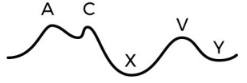
A A - representa a alteração de pressão gerada pelo fechamento das válvulas atrioventriculares.
B C - representa a contração atrial, momento em que ocorre a passagem de cerca de 25% do volume de enchimento ventricular.
C X - representa a queda de pressão logo após a abertura das válvulas atrioventriculares, com saída de sangue dos átrios para os ventrículos.
D V - representa o aumento de pressão que ocorre no final da contração ventricular, momento em que o sangue começa a acumular nos átrios pois as válvulas atrioventriculares ainda não se abriram.
Questão 616 · Acoplamento ExcitaçãoContração e Ciclo Cardíaco · 4000200552B.C.C.A, sexo masculino, 50 anos de idade, sem histórico de doenças cardíacas prévias, chega à emergência com queixa de palpitações e desconforto no peito. Relata sensação de mal-estar que iniciou há cerca de 30 minutos, associado a palpitações persistentes. Ao exame físico, observa-se sinais de desconforto respiratório, sudorese intensa, frequência cardíaca em torno de 180 batimentos por minuto e pressão arterial baixa, 78x52mmHg. O exame cardiovascular revela sopro sistólico audível e o eletrocardiograma (ECG) confirma o diagnóstico de taquicardia ventricular sustentada. O paciente é imediatamente tratado com cardioversão elétrica para reverter o ritmo cardíaco anormal, procedimento realizado com sucesso. A taquicardia ventricular é uma arritmia de origem ventricular. Sobre o sistema de condução e estímulo dos ventrículos, pode-se afirmar:
A O Nó Sinoatrial, que fica na região de encontro dos átrios e dos ventrículos, é responsável pela transmissão do impulso elétrico que despolariza as células miocárdicas ventriculares.
B Após passar pelo Nó Atrioventricular, o estímulo elétrico segue em direção as Fibras de
C O potencial de ação levado do Nó Sinoatrial e que converge para o Nó Atrioventricular é retardado nessa região, pois ela é uma área de condução relativamente lenta, o que permite a diferença que existe entre a contração atrial e a ventricular.
D O Nó Atrioventricular, localizado no septo interventricular, age distribuindo o sinal elétrico para ambos os ventrículos, o que permite sua contração ocorra de forma simultânea.
Questão 617 · Acoplamento ExcitaçãoContração e Ciclo Cardíaco · 4000200551L.F.C.R, sexo masculino, 75 anos, com histórico de hipertensão arterial sistêmica e doença arterial coronariana, chega ao consultório com queixa de falta de ar aos esforços e tonturas ao se levantar que vem progredindo nos últimos 2 anos. Relata piora importante dos sintomas nos últimos meses, referindo episódios de palpitações e cansaço inclusive para andar dentro de casa. Ao exame físico, é observado que o paciente está em bom estado geral, porém com sopro sistólico audível na ausculta cardíaca. A pressão arterial é elevada, o pulso é fraco e a frequência cardíaca está em torno de 90 batimentos por minuto. O ecocardiograma confirma o diagnóstico de estenose aórtica grave, com estreitamento da válvula aórtica e hipertro a ventricular esquerda associada. Após analisar esses sinais e sintomas, o médico opta por indicar abordagem cirúrgica para troca da válvula aórtica da paciente. O quadro de estenose aórtica caracteriza-se por alterar substancialmente o ciclo cardíaco. Uma das etapas por ele alteradas é o momento em que ocorre o maior volume do esvaziamento dos ventrículos, logo após a abertura das válvulas semilunares. Essa etapa chama-se:
A Contração isovolumétrica ventricular
B Esvaziamento rápido ventricular
C Relaxamento isovolumétrico ventricular
D Esvaziamento lento ventricular
Questão 618 · Acoplamento ExcitaçãoContração e Ciclo Cardíaco · 4000200550E.P.A., sexo masculino, 60 anos, chega em consulta ambulatorial com cardiologista queixa de falta de ar aos esforços progressivamente menores, cansaço e inchaço nas pernas há alguns meses. Relata histórico de hipertensão arterial sistêmica de longa data, tabagismo e obesidade. Ao exame físico, o paciente apresenta pressão arterial elevada, frequência cardíaca e respiratória aumentadas. Na ausculta pulmonar há crepitações pulmonares em ambos os pulmões e na ausculta cardíaca há um sopro sistólico na borda esternal esquerda. Além disso, o médico observa inchaço em ambas as pernas em grau moderado. O eletrocardiograma demonstra sinais de sobrecarga ventricular esquerda e confirma o aumento da frequência cardíaca, sem sinais de arritmia. O ecocardiograma mostra dilatação ventricular esquerda e fração de ejeção reduzida para 30%, confirmando o diagnóstico de insuficiência cardíaca sistólica. Sobre a sístole e suas diferentes etapas, pode-se afirmar:
A A ejeção ventricular rápida é a primeira etapa dessa fase, ocorrendo logo após a abertura das válvulas semilunares. Ela é seguida da fase de ejeção lenta e da fase de contração isovolumétrica ventricular.
B A etapa de ejeção ventricular lenta é responsável pela maior parte do volume de sangue que é ejetado pelos ventrículos para as circulações pulmonar e sistêmica.
C A contração ventricular isovolumétrica logo após a abertura das válvulas semilunares. Essa etapa dura pouco tempo e corresponde ao momento em que há variação de pressão dentro dos ventrículos sem variação de volume.
D A sístole ventricular é composta, nessa ordem, pelas seguintes etapas: contração isovolumétrica, ejeção ventricular rápida e ejeção ventricular lenta.
Questão 619 · Acoplamento ExcitaçãoContração e Ciclo Cardíaco · 4000200549C.L.B, sexo feminino, 45 anos de idade, com histórico de Lupus Eritematoso Sistêmico, chega à emergência com queixa de desconforto respiratório, falta de ar e sudorese profusa. Ela relata ter se sentido mal nos últimos dias, com cansaço e mal-estar progressivos. Ao exame físico, observa-se sinais de desconforto respiratório, com pulso rápido e fraco, pressão arterial baixa e temperatura elevada. Há turgência jugular bilateral, com pulso paradoxal presente. O exame cardiovascular revela diminuição dos sons cardíacos, com atrito pericárdico audível em todos os campos pulmonares. O abdome está distendido e doloroso à palpação. O médico de plantão suspeita tamponamento cardíaco, o que é confirmado pelo ecocardiograma, que demonstra uma grande quantidade de líquido no saco pericárdico, determinando compressão cardíaca. A paciente é imediatamente encaminhada para o centro cirúrgico para realização de drenagem pericárdica de emergência. O quadro de tamponamento pericárdico caracteriza-se por alterar substancialmente o ciclo cardíaco. Uma das etapas por ele alteradas é o momento em que ocorre o maior volume do enchimento dos ventrículos, logo após a abertura das válvulas atrioventriculares. Essa etapa chama-se:
A Enchimento ventricular lento.
B Contração isovolumétrica ventricular.
C Enchimento ventricular rápido.
D Relaxamento isovolumétrico ventricular.
Questão 620 · Acoplamento ExcitaçãoContração e Ciclo Cardíaco · 4000200548M.A.R, sexo feminino, 75 anos, com histórico de hipertensão arterial, diabetes mellitus e doença pulmonar obstrutiva crônica, chega ao Pronto Socorro com queixa de falta de ar progressiva nas últimas semanas, especialmente ao se deitar. Relatou ter acordado várias vezes à noite com falta de ar e teve di culdade em realizar atividades do dia a dia, como caminhar até o mercado, que ca a duas quadras de sua casa. Ao exame físico, a paciente apresentava sinais de desconforto respiratório, com a frequência cardíaca em repouso de 85 bpm, pressão arterial de 145/90 mmHg, e saturação de oxigênio de 92% em ar ambiente. Havia alteração na ausculta pulmonar, com estertores pulmonares bibasais, e edema em ambos os membros inferiores. Os exames laboratoriais revelaram valores normais de hemoglobina, função renal e eletrólitos, mas um aumento significativo no nível de peptídeo natriurético do tipo B (BNP), indicando estresse no coração. Foi realizado um ecocardiograma que mostrou aumento de tamanho do coração da paciente, com espessamento da parede do ventrículo esquerdo e função sistólica preservada. Além disso, foi observado um importante aumento da pressão no átrio esquerdo, indicando um possível comprometimento da função diastólica. A diástole, momento em que há relaxamento ventricular, é composta por algumas etapas que ocorrem nos átrios e nos ventrículos. Sobre elas, pode-se afirmar:
A Durante a diástole, ocorrem os seguintes processos nos ventrículos, nessa ordem: Relaxamento isovolumétrico, enchimento lento, enchimento rápido.
B O enchimento ventricular é totalmente dependente da contração atrial, sendo iniciado apenas após a despolarização do Nó Sinoatrial, o que indica que é um 100% processo ativo.
C Durante a diástole ventricular, a primeira fase que ocorre é o relaxamento isovolumétrico dos ventrículos. Nesse momento, tanto as válvulas semilunares quanto as atrioventriculares estão fechadas, o que permite uma queda da Pressão dentro dos ventrículos sem variação do seu volume.
D O enchimento ventricular lento é a primeira fase da diástole ventricular. Nesse momento, a Pressão dentro dos átrios torna-se maior do que a pressão dentro dos ventrículos, permitindo uma abertura gradual das válvulas atrioventriculares e criando um fluxo progressivo de enchimento ventricular.
Revisar: possível letra faltando em enunciado
Questão 621 · Acoplamento ExcitaçãoContração e Ciclo Cardíaco · 4000200547C.L.C.R, 65 anos, sexo feminino, chega ao consultório do cardiologista com queixas de palpitações (aumento da frequência cardíaca), cansaço e falta de ar. Relata que esses sintomas vêm ocorrendo com frequência nas últimas semanas, especialmente quando se exercita ou se estressa. Ao exame físico, o médico detecta uma frequência cardíaca elevada e irregular, além de aumento da pressão arterial. O eletrocardiograma (ECG) realizado no próprio consultório mostra leva ao diagnóstico de brilação atrial, uma condição em que os átrios do coração não se contraem de forma sincronizada, levando a uma frequência cardíaca rápida e irregular. Para entender bem o mecanismo dessa doença, é fundamental conhecer a contração atrial normal do coração. Sobre esse evento do ciclo cardíaco, assinale a alternativa correta.
A A contração atrial tem início no Nó Atrioventricular, que é o principal responsável pela diferença temporal que existe entre a contração atrial e a ventricular. Primeiro ele estimula a contração dos átrios e depois envia estímulos elétricos para a contração dos ventrículos.
B A contração atrial tem início no Nó Sinoatrial, que é o responsável pela automaticidade e ritmicidade do coração. Seu estímulo elétrico é propagado por um tecido de condução especializado que leva à sístole atrial, momento em que sangue é bombeado dos átrios para os ventrículos.
C A contração atrial tem início nas Fibras de
D A contração atrial tem início no Nó Sinoatrial, que é um tecido de condução bastante lento, o que torna possível a contração atrial antes da ventricular.
Questão 622 · Acoplamento ExcitaçãoContração e Ciclo Cardíaco · 4000200546G.M.H., 65 anos, sexo masculino, hipertenso e diabético, apresenta-se ao pronto-socorro com queixas de falta de ar, cansaço e inchaço nas pernas há cerca de 1 ano. Relata que os sintomas pioraram ao longo das últimas semanas, apesar do uso de medicamentos prescritos para controlar sua hipertensão e diabetes. Ao exame físico, o médico identi ca aumento da frequência cardíaca e da frequência respiratória, pressão arterial elevada, edema nas pernas e ausculta dos pulmões com crepitações em bases, que pode indicar edema nesta região. O eletrocardiograma solicitado mostra sinais de sobrecarga do ventrículo esquerdo e o Ecocardiograma revela dilatação do ventrículo esquerdo e diminuição da fração de ejeção do coração. Diante desses achados clínicos, o paciente é diagnosticado com insu ciência cardíaca congestiva (ICC), uma condição em que o ciclo cardíaco está alterado, levando a bombeamento ineficaz de sangue para suprir as necessidades do corpo. Dentre as alternativas abaixo, qual traz a definição mais completa de Ciclo cardíaco?
A Sequência de eventos elétricos e mecânicos durante um único batimento cardíaco.
B Sequência de batimentos cardíacos realizados em um minuto, pois nos permite entender de forma mais ampla como está o funcionamento do coração.
C Quantidade de sangue bombeada pela coração dentro de um minuto, que pode ser calculada por Frequência cardíaca multiplicada por Volume sistólico.
D Diferença matemática entre a Pressão sistólica e a pressão diastólica.
Revisar: possível letra faltando em enunciado
Questão 623 · Acoplamento ExcitaçãoContração e Ciclo Cardíaco · 4000200545Um homem de 63 anos, hipertenso e diabético, chega ao Pronto Socorro com queixa de palpitação associada a falta de ar há cerca de 30 minutos. Relata 2 episódios semelhantes prévios, porém que cessaram sem necessidade de ida ao Hospital. O médico de plantão solicitou um eletrocardiograma, que identi cou um ritmo de Fibrilação atrial, que é quando os átrios não contraem em ritmo sincronizado, o que prejudica o bombeamento do coração para o resto do organismo. Sobre a estimulação elétrica do coração, assinale a alternativa correta:
A O nó atrioventricular é o principal responsável por ditar o ritmo cardíaco, uma vez que sua localização é estratégica para atuar estimulando tanto os átrios quanto os ventrículos.
B O Nó Sinoatrial, também conhecido como marcapasso cardíaco, é o principal responsável pela automaticidade e pelo ritmo cardíaco. Sua ação se inicia estimulando a contração do Ventrículo Direito, para que essa câmara se esvazie e seja capaz de receber o sangue trazido pelas veias cavas superior e inferior.
C Em indivíduos saudáveis, o potencial de ação iniciado no Nó Sinoatrial é propagado para os átrios por um tecido de condução especializado que leva a contração atrial.
D A contração ventricular ocorre exatamente no mesmo momento em que há a contração atrial, visto que o sinal transmitido do nó sinoatrial para o nó atrioventricular é transmitido em poucos milissegundos, o que permite essa sincronia entre todas as câmaras cardíacas, essencial para a chegada de sangue em órgãos vitais como o cérebro e os rins.
Questão 624 · Histologia do Sistema Cardiovascular · 4000200544Paciente masculino, 28 anos, chega ao pronto socorro com queixa de febre, mal-estar geral, inchaço dos gânglios linfáticos, taquicardia e forte dor de cabeça há 1 semana. Relata que foi visitar a família no interior de Minas Gerais há cerca de 3 semanas e que foi picado por um inseto popularmente conhecido como "barbeiro". Na ressonância magnética é detectada uma miocardite, inflamação do músculo cardíaco. Sobre a histologia das camadas cardíacas é correto afirmar:
A A parede cardíaca é formada por 4 camadas principais: epicárdio, pericárdio, miocárdio e endocárdio.
B O epicárdio é o folheto visceral do pericárdio e é composto por epitélio pavimentoso simples apoiado sobre uma camada de tecido conjuntivo.
C O endocárdio é uma camada de tecido conjuntivo denso, formado por fibras colágenas, elásticas e células de músculo liso.
D A miocardite afeta principalmente o epicárdio, camada mais externa do coração.
Questão 625 · Anatomia do Sistema Cardiovascular · 4000200543Paciente masculino, 68 anos, dá entrada no atendimento de urgência e emergência queixando-se de dor intensa na perna e pé direitos, associada a edema. Ao exame físico apresentava importante edema na perna direita e endurecimento da panturrilha direita. Sem alterações ao exame físico da perna contralateral. Após investigação com USG Doppler, foi realizado diagnóstico de trombose de veia femoral direita. Em relação a essa doença, quais assertivas estão corretas? É impossível que o desprendimento de um trombo possa causar um acidente vascular encefálico. Uma complicação comum da TVP é o desprendimento do trombo até a circulação pulmonar, chamado de embolia pulmonar. A veia lesada é uma veia superficial. Portanto, o acometimento também pode ser chamado de varizes venosas. O retorno venoso fica prejudicado com a obstrução da veia femoral.
A I, II, III
B II, III e IV
C II e IV
D Apenas IV
Questão 626 · Anatomia do Sistema Cardiovascular · 4000200542J.V.S, 58 anos, diabético, hipertenso e com pai falecido por doença cardíaca. Durante a consulta, foram realizados exames de imagem que constataram uma hipertro a do átrio e do ventrículo esquerdos. Sobre as câmaras cardíacas e sua anatomia, pode-se afirmar:
A O sangue sai do átrio esquerdo para o ventrículo esquerdo pela válvula tricúspide.
B O ventrículo esquerdo é menos espesso e menos trabeculado que o ventrículo direito. Além disso, possui dimensão interna maior que o ventrículo direito.
C O átrio direito e o átrio esquerdo são separados pelo septo interatrial, que contém resquício do forame oval, a fossa oval.
D O átrio esquerdo é ligeiramente menor que o átrio direito e recebe uma ou até três veias pulmonares do seu lado esquerdo e duas a três do seu lado direito.
Questão 627 · Anatomia do Sistema Cardiovascular · 4000200541G.C.R, 34 anos, relata episódios recorrentes de dor no peito e falta de ar em exercícios mais intensos. Ao ecocardiograma transtorácico detecta-se uma comunicação interatrial, uma condição congênita na qual a abertura do septo interatrial deveria ter se fechado após o nascimento, mas permaneceu aberta. Este defeito congênito ocorre na localização de qual estrutura cardíaca?
A septo atrioventricular
B fossa oval
C na parte membranácea do septo interventricular
D na parte muscular do septo interventricular
Questão 628 · Anatomia do Sistema Cardiovascular · 4000200540Paciente masculino, 68 anos, dá entrada no atendimento de urgência e emergência queixando-se de dor intensa na perna e pé direitos, associada a edema. Ao exame físico apresentava importante edema na perna direita e endurecimento da panturrilha direita. Sem alterações ao exame físico da perna contralateral. Após investigação com USG Doppler, foi realizado diagnóstico de trombose da veia femoral direita. Em relação a essa estrutura anatômica, assinale a alternativa incorreta.
A A veia femoral é continuação da veia poplítea.
B Ela é considerada uma veia solitária por não correr próximo da artéria femoral.
C Ao passar pela região inguinal ela dá origem a veia ilíaca externa.
D Suas tributárias são veia femoral profunda, veia safena magna, veia circunflexa femoral lateral.
Questão 629 · Anatomia do Sistema Cardiovascular · 4000200539Paciente masculino, 71 anos, busca atendimento ambulatorial com queixa de falta de ar aos esforços, dor precordial com exercícios e episódios de desmaios. Ao exame físico cardíaco foi auscultado sopro sistólico em foco aórtico. Após investigação adicional, foi feito diagnóstico de estenose aórtica. Em relação à valva aórtica, assinale a alternativa correta.
A O seu funcionamento se dá pela contração dos músculos papilares que tensionam as cordas tendíneas, gerando o fechamento da valva.
B É formada por três válvulas, chamadas válvula semilunar direita, válvula semilunar esquerda e válvula semilunar anterior.
C O local onde o sopro foi melhor auscultado é no 4o espaço intercostal esquerdo, lateral ao esterno.
D As artérias coronárias direita e esquerda originam-se dos seios aórticos direito e esquerdo, respectivamente.
Questão 630 · Anatomia do Sistema Cardiovascular · 4000200538Paciente A.P.R., 42 anos, em consulta ambulatorial com queixa de 1 ano de dispneia progressiva. No início sentia falta de ar ao fazer exercícios físicos intensos e atualmente sente queixa ao fazer esforços habituais. Ao exame clínico cardíaco foi visto sopro diastólico em ru ar, mais audível no foco mitral. Após confirmação com exames de imagem, foi feito o diagnóstico de estenose mitral. Em relação à valva mitral assinale a alternativa correta.
A As cordas tendíneas são responsáveis pela abertura e fechamento da valva. No momento da sístole, os músculos papilares contraem, tensionando as cordas tendíneas e gerando o fechamento da valva.
B É formada por 3 folhetos, chamadas: folheto anterior, folheto posterior e folheto septal.
C É responsável por evitar que o sangue retorne do ventrículo direito para o átrio direito durante a sístole.
D O local onde o sopro foi mais audível foi no 2° espaço intercostal esquerdo lateral ao esterno.
Questão 631 · Débito Cardíaco e Circulação Coronária · 4000200537Joana, 65 anos, chega ao pronto socorro com queixa de dor no peito intensa que irradia para a mandíbula e para o braço esquerdo, associada a náuseas e fadiga aos mínimos esforços. Paciente hipertensa há 5 anos, com pai diabético e mãe falecida de Infarto agudo do miocárdio. Foi realizado cateterismo que identi cou lesão obstrutiva nas artérias que irrigam o ventrículo esquerdo. Sobre a principal artéria lesada e sua irrigação, pode-se afirmar:
A Artéria coronária esquerda e seus ramos, que irrigam a margem esquerda da parede livre do ventrículo direito, o átrio esquerdo, a parede anterior e lateral do ventrículo direito e 2/3 anteriores do septo.
B Artéria coronária direita e seus ramos, que irrigam a margem esquerda da parede livre do ventrículo direito, o átrio esquerdo, a parede anterior e lateral do ventrículo esquerdo e 2/3 anteriores do septo.
C Artéria coronária direita e seus ramos, que irrigam toda a parede livre do ventrículo direito, todo o átrio direito, a parede inferior do ventrículo esquerdo e 1/3 posterior do septo.
D Artéria coronária esquerda e seus ramos, que irrigam a margem esquerda da parede livre do ventrículo direito, o átrio esquerdo, a parede anterior e lateral do ventrículo esquerdo e 2/3 anteriores do septo interventricular.
Questão 632 · Débito Cardíaco e Circulação Coronária · 4000200536Edimar, 61 anos, chega ao pronto socorro com quadro de dor torácica intensa há 3 horas, di culdade respiratória, fadiga e sudorese excessiva. Paciente tabagista, 1 maço de cigarro por dia, desde os 21 anos, sedentário e com obesidade grau 1. Ao exame físico, nota-se edema de membros inferiores. Considerando-se que foi diagnosticado uma lesão isquêmica do ventrículo direito do coração, pode-se afirmar que o provável vaso lesado e seus ramos são:
A Artéria coronária direita. Principais ramos: ramo interventricular anterior e ramo circunflexo.
B Artéria coronária esquerda. Principais ramos: ramo interventricular anterior e ramo circunflexo.
C Artéria coronária direita. Principais ramos: ramo do nó SA, ramo marginal direito e ramo interventricular posterior.
D Artéria coronária esquerda. Principais ramos: ramo do nó SA, ramo marginal direito e ramo interventricular posterior.
Questão 633 · Débito Cardíaco e Circulação Coronária · 4000200535Paciente de 61 anos chega ao Pronto Socorro com quadro de dor retroesternal há cerca de 45 minutos. Descreve a dor como sendo em aperto, intensidade 9 em 10, irradia para o braço esquerdo e sente náuseas intensas, sem nenhum episódio de vômito. Relata ser diabético e hipertenso, porém não faz uso correto das medicações, esquecendo de tomá-las diversas vezes durante a semana. Foi realizado Eletrocardiograma que levantou a hipótese de lesão isquêmica da parede inferior do coração. Sobre esse quadro clínico e relacionando com a vascularização do coração, pode-se afirmar:
A Provavelmente a artéria acometida é a coronária direita ou um dos seus ramos. Essa artéria origina-se diretamente do ventrículo esquerdo, logo abaixo da válvula aórtica.
B Provavelmente a artéria acometida é a coronária direita ou dos seus ramos. Essa artéria origina-se do seio aórtico direito da aorta ascendente.
C Provavelmente a artéria acometida é a coronária esquerda ou um dos seus ramos. Essa artéria tem origem diretamente no ventrículo esquerdo, logo abaixo da válvula aórtica.
D Provavelmente a artéria acometida é a coronária esquerda ou um dos seus ramos. Essa artéria tem origem no seio aórtico esquerdo da aorta ascendente.
Questão 634 · Anatomia do Sistema Cardiovascular · 4000200534Paciente de 61 anos chega ao Pronto Socorro com quadro de dor retroesternal há cerca de 45 minutos. Descreve a dor como sendo em aperto, intensidade 9 em 10, irradia para o braço esquerdo e sente náuseas intensas, sem nenhum episódio de vômito. Relata ser diabético e hipertenso, porém não faz uso correto das medicações, esquecendo de tomá-las diversas vezes durante a semana. Foi realizado Eletrocardiograma que levantou a hipótese de lesão isquêmica da parede inferior do coração. Sobre esse quadro clínico e relacionando com as camadas da parede cardíaca, pode-se afirmar:
A A principal camada acometida em quadros isquêmicos é epicárdio, pois essa é a camada é rica em musculatura, sendo responsável pela contração cardíaca.
B O miocárdio é uma camada intermediária helicoidal e espessa, sendo formada majoritariamente pelo músculo cardíaco, que é a principal estrutura lesada em caso de lesão isquêmica.
C O endocárdio, camada rica em musculatura, é responsável pela contração cardíaca. Ela é a mais próxima das artérias coronárias e, por isso, é a camada que mais sofre com as lesões isquêmicas, visto que depende diretamente do oxigênio entregue por esses vasos.
D O miocárdio, por ser a camada mais externa do coração, é a mais acometida pela lesão isquêmica. Como consequência, ela deixa de realizar a contração necessária para o bom funcionamento do coração, o que acaba afetando também o epicárdio e o endocárdio.
Questão 635 · Anatomia do Pericárdio · 4000200533Ivan, 35 anos, chega ao pronto socorro com queixa de dor torácica intensa, que melhora ao sentar-se. Além disso, queixa-se de coração acelerado, di culdade para respirar e tosse seca. Possui antecedente pessoal de febre reumática há 2 anos. Após realização de um eletrocardiograma e exames laboratoriais, o paciente foi diagnosticado com Pericardite, que é uma in amação no pericárdio. Sobre essa estrutura que envolve o coração, assinale a alternativa INCORRETA:
A O seio oblíquo do pericárdio é responsável por separar as artérias pulmonares das veias pulmonares, enquanto o seio transverso do pericárdio é responsável por separar as veias cavas inferior e superior.
B O pericárdio fibroso é um tecido conjuntivo denso que define os limites do mediastino médio.
C O líquido pericárdio tem a função de reduzir o atrito entre as camadas viscerais e parietais do pericárdio durante a movimentação do coração.
D As camadas do pericárdio de fora pra dentro são: pericárdio fibroso, lâmina parietal do pericárdio seroso, cavidade pericárdica, lâmina visceral do pericárdio seroso (epicárdio).
Questão 636 · Anatomia do Pericárdio · 4000200532Um paciente de 20 anos foi vítima de um ferimento por arma de fogo (FAF) em região torácica há cerca de 30 minutos. Ao chegar na sala de atendimento de trauma, entre as diversas alterações de exame físico, percebeu-se uma ausculta cardíaca reduzida e hipotensão arterial, sendo levantada a hipótese de Tamponamento Pericárdico (líquido ao redor do coração, dentro da cavidade pericárdica, restringindo as contrações cardíacas). Sobre o pericárdio e a cavidade pericárdica, pode-se afirmar que:
A O pericárdio é um saco fibrosseroso formado por uma única camada de tecido que envolve apenas o coração, sem qualquer relação com os grandes vasos.
B Tem relação íntima com o osso esterno através dos ligamentos esternopericárdicos superior e inferior, e com o diafragma pelo ligamento pericárdicofrênico.
C O pericárdio é formado por 3 camadas: pericárdio fibroso, mais externo, pericárdio seroso, mais interno, e pericárdio intermembranoso, que fica entre o fibroso e seroso.
D A cavidade pericárdica tem como principal função ser um reservatório de líquido drenado pelas artérias coronárias, permitindo o relaxamento do coração.
Questão 637 · Anatomia do Sistema Cardiovascular · 4000200531Um paciente de 20 anos foi vítima de um ferimento por arma de fogo (FAF) em região torácica há cerca de 30 minutos. Ao chegar na sala de atendimento de trauma, entre as diversas alterações de exame físico, percebeu-se uma ausculta cardíaca reduzida e hipotensão arterial, sendo levantada a hipótese de Tamponamento Pericárdico (líquido ao redor do coração, dentro da cavidade pericárdica, restringindo as contrações cardíacas). Considerando que a lesão cardíaca tenha sido causada diretamente pelo FAF e que não houve lesão dos pulmões, do diafragma, da aorta e da veia cava superior, o que pôde-se a rmar em relação ao local de entrada do FAF?
A Provavelmente o FAF teve seu orifício de entrada na linha axilar média Direita. Como o coração está localizado no mediastino anterior, essa linha é o local em que o ele está mais próximo da parede torácica.
B Provavelmente o FAF teve seu orifício de entrada na linha axilar média Esquerda. Como o coração está localizado no mediastino anterior, essa linha é o local em que o coração está mais próximo da parede torácica.
C Provavelmente o FAF teve seu orifício de entrada na região anterior esquerda do tórax. Como o coração se localiza majoritariamente na região medial do mediastino, entre as cavidades pleurais esquerda e direita, esse é o local em que o coração está mais próximo da parede torácica.
D Provavelmente o FAF teve seu orifício de entrada na região anterior esquerda do tórax. Como o coração se localiza majoritariamente na região superior do mediastino, entre as cavidades pleurais esquerda e direita, essa é o local em que o coração está mais próximo da parede torácica..
E Provavelmente o FAF teve seu orifício de entrada na linha axilar média Esquerda. Como o coração está localizado no mediastino anterior, essa linha é o local em que o coração está mais próximo da parede torácica.
Questão 638 · Embriologia · 4000200530Recém-nascido (RN) de 10 horas de vida apresenta extremidades frias e azuladas, di culdade respiratória e redução do tônus muscular. Foi identi cada diminuição de oxigênio (O2) no sangue, com saturação de O2 de 68%. O médico responsável pelo caso resolveu investigar possíveis alterações relacionadas a formação do sistema cardiovascular e a circulação fetal. Sobre esse tema, pode-se afirmar:
A Durante a vida fetal, a veia umbilical leva nutrientes e sangue pobre em oxigênio da placenta para o feto.
B Caso o RN tenha um forame oval patente após o nascimento, esse óstio permitirá que o sangue rico em oxigênio do átrio direito se misture com o sangue pobre em oxigênio do átrio esquerdo.
C Durante a vida fetal, o ducto arterioso é uma conexão entre a artéria aorta e a artéria pulmonar. Ele permite que parte do sangue rico em O2 vindo da placenta seja desviado dos pulmões e entregue mais rapidamente aos demais tecidos.
D Durante a vida fetal, o ducto venoso aumenta o fluxo de sangue para dentro do fígado, o que permite uma melhor metabolização de substâncias potencialmente prejudiciais ao feto.
Questão 639 · Embriologia · 4000200529Mulher de 25 anos, gestante de 12 semanas, realiza sua primeira Ultrassonogra a Morfológica para avaliação do desenvolvimento do feto. Durante o exame, ela questiona o médico em relação ao desenvolvimento dos principais sistemas, principalmente sobre o coração de seu filho. Em relação ao formação embriológica do sistema cardiovascular, assinale a alternativa correta:
A É o primeiro sistema a ser formado, entre a 3a e 8a semanas do embrião, sendo que primeiro são formados os vasos sanguíneos, em seguida se iniciam os batimentos cardíacos e posteriormente se estabelece a circulação do sangue.
B É o primeiro sistema a ser formado, entre a 3a e a 8a semanas do embrião, sendo que primeiro se iniciam os batimentos cardíacos, em seguida formam-se os vasos sanguíneos e posteriormente se estabelece a circulação do sangue.
C É o segundo sistema a ser formado, após o Sistema Nervoso Central, entre a 3a a 8a semanas do embrião, sendo que primeiro são formados os vasos sanguíneos, em seguida se iniciam os batimentos cardíacos e posteriormente se estabelece a circulação do sangue.
D É o segundo sistema a ser formado, após o Sistema Nervoso Central, entre a 3a a 8a semanas do embrião, sendo que primeiro são formados os vasos sanguíneos, em seguida se iniciam os batimentos cardíacos e posteriormente se estabelece a circulação do sangue.
Questão 640 · Patologia Geral · 4000200528Homem de 44 anos foi admitido em CTI com choque séptico que teve como foco lesão traumática infectada extensa em membro inferior direito. Algumas horas após a admissão, foram observadas petéquias, equimoses, sangramento no sítio de inserção de cateter venoso central e gengivorragia. O plantonista solicitou hemograma e coagulograma para avaliação inicial. À hematoscopia, foram observados numerosos esquizócitos. Dentre as opções abaixo, qual é o diagnóstico MAIS PROVÁVEL e como devem estar o tempo de protrombina (TP), o tempo parcial de tromboplastina ativado (PTTa) e contagem de plaquetas?
A Coagulação intravascular disseminada, tempo de protrombina (TP) e tempo de tromboplastina parcial ativada (TTPa) prolongados e trombocitopenia.
B Deficiência prévia de fator de coagulação e infecção aguda, TP e TTPa prolongados e trombocitose.
C Deficiência congênita de ativação plaquetária e infecção aguda, TP normal, TTPa normal e trombocitopenia.
D Uso prévio de inibidor de vitamina K e infecção aguda, TP prolongado, TTPa normal e trombocitopenia.
E Coagulação intravascular disseminada, TP e TTPa prolongados e trombocitose.
Questão 641 · Patologia Geral · 4000200527Jade tem 32 anos, previamente hígida e primigesta, atualmente com idade gestacional de 34 semanas. Na última consulta de pré- natal, há 3 semanas, notou-se que estava com os níveis pressóricos acima do esperado; no entanto, nada foi feito a respeito. Hoje, compareceu ao centro de urgência obstétrica com queixa de forte dor em baixo ventre, sangramento vaginal e redução da movimentação fetal há cerca de 3 horas. Ao exame físico, apresentou-se em mau estado geral, confusa, PA 180x110 mmHg, taquicárdica, taquipneica e com edema de face e membros inferiores. Os batimentos cardíacos fetais não estavam audíveis e o útero estava hipertônico. Foi realizada cesárea de emergência e constatou-se que o feto não estava mais vivo. A paciente foi encaminhada para a UTI e, lá, apresentou um quadro sugestivo de trombose venosa profunda em membro inferior direito, além de evoluir com sangramento profuso de difícil controle pela ferida operatória da cesárea. Evoluiu para óbito cerca de 2 dias depois. Do ponto de vista fisiopatológico, qual alternativa que melhor descreve o evento que levou a paciente a óbito?
A Coagulação intravascular disseminada (CIVD).
B Falha da hemostasia secundária.
C Embolia de líquido amniótico.
D Falha da hemostasia primária.
E Choque séptico.
Questão 642 · Patologia Geral · 4000200526Homem, 42a, procura pronto atendimento com queixa de cansaço há 1 dia, acompanhado de tosse seca e dor em hemitórax esquerdo. Evoluiu com piora nas últimas 2 horas, com intensa falta de ar. Antecedentes pessoais: artroscopia do joelho direito há 7 dias. Exame físico: mau estado geral, cianótico, dispneico, com batimento de asas do nariz, sudorese fria profusa; PA = 82 x 44 mmHg; FC = 136 bpm; FR = 32 irpm; T = 37,4 °C; oximetria de pulso = 85% (ar ambiente); coração: bulhas normofonéticas, taquicárdicas, sem sopros; pulmões: murmúrio vesicular presente, simétrico, com estertores crepitantes em base direita. Radiograma do tórax: proeminência dos hilos pulmonares. Na fisiopatogenia do tipo de choque apresentado, quais fatores estão envolvidos?
A Elevação da pós-carga do ventrículo direito (VD) secundária à extensão da área arterial comprometida e reatividade vascular pulmonar aos mediadores liberados.
B Elevação da pré-carga do ventrículo esquerdo (VE) e vasoconstrição sistêmica secundária à ativação dos receptores alfa.
C Queda da resistência vascular sistêmica e elevação do débito cardíaco pela liberação de mediadores inflamatórios.
D Vasodilatação sistêmica e queda do débito cardíaco pela liberação de citocinas.
E Redução da pós-carga imposta ao ventrículo direito e redução da resistência vascular sistêmica.
Questão 643 · Patologia Geral · 4000200525Choque circulatório é definido como uma condição clínica na qual o sistema circulatório não é capaz de fornecer oxigênio aos tecidos. Do ponto de vista fisiopatológico, qual alternativa traz os choques que são considerados distributivos?
A Hipovolêmico, obstrutivo e séptico.
B Séptico, anafilático e neurogênico.
C Obstrutivo, séptico e hipovolêmico.
D Anafilático, séptico e cardiogênico.
E Hipovolêmico, séptico e cardiogênico.
Questão 644 · Patologia Geral · 4000200524Paciente de 56 anos, masculino, tabagista, comparece ao hospital devido a quadro de adinamia associado à tosse produtiva há 03 dias. Ao exame, encontra-se sonolento, desidratado, normocorado, acianótico, taquidispneico em ar ambiente. Sinais vitais: PA: 70 x 50 mmHg; FC: 135 bpm; FR: 28 irpm; SatO2 90%; Tax 38,5° C. Ausculta pulmonar com estertores crepitantes em base esquerda e sibilos difusos. Exame cardiovascular com ritmo cardíaco regular, bulhas normofonéticas, pulsos periféricos cheios e enchimento capilar em ush. Foi instalado um cateter de monitorização hemodinâmica invasiva ( acompanhamento do quadro. Quais são os parâmetros que esperamos observar neste momento?
A Resistência vascular sistêmica alta, débito cardíaco normal ou alto.
B Resistência vascular sistêmica alta, débito cardíaco baixo.
C Resistência vascular sistêmica baixa, débito cardíaco normal ou alto.
D Resistência vascular sistêmica baixa, débito cardíaco baixo.
E Resistência vascular sistêmica normal, débito cardíaco alto.
Questão 645 · Patologia Geral · 4000200523Benício tem 53 anos e é sabidamente portador de cálculos renais. As crises de cólica nefrética ocorriam com certa frequência e eram resolvidas com anti-inflamatórios e analgésicos comuns. No entanto, há 96 horas, o paciente apresentou uma crise de início que não cedeu com as medicações de uso habitual. Além da dor em anco direito, náuseas e vômitos, abriu quadro de febre alta no terceiro dia de sintomas. Sua esposa trouxe-o ao pronto-socorro e o paciente apresentou os seguintes sinais vitais na admissão: sonolento e confuso, PA 70x40 mmHg, FC 123 bpm, FR 29 irpm, saturação de O2 91% em ar ambiente, pulsos radiais liformes, tempo de enchimento capilar prolongado, palidez e cianose mucocutânea. A ausculta cardíaca e respiratória não apresentava alterações dignas de nota. Recebeu a expansão volêmica adequada na primeira hora de atendimento; no entanto, não houve melhora dos parâmetros hemodinâmicos. Qual a classificação de choque mais provável para esse paciente?
A Choque séptico.
B Choque obstrutivo.
C Choque hipovolêmico.
D Choque cardiogênico.
E Choque anafilático.
Questão 646 · Patologia Geral · 4000200522Elena tem 7 anos, e estava na festa de aniversário de sua melhor amiga. Chegou na festa bem, sem apresentar sintomatologia alguma. No entanto, precisou ser socorrida quando foi encontrada tossindo muito, com um estridor inspiratório importante, vomitando e confusa. Foi resgatada pelo SAMU, e ainda na ambulância notaram os seguintes sinais vitais: torporosa, PA 60x40 mmHg, FC 178 bpm, FR 39 irpm, saturação de O2 81% em ar ambiente, pulsos radiais cheios e simétricos, enchimento capilar em “ ush”, extremidades hiperemiadas e exantema em placas pruriginosas pelo corpo. A respiração se apresentava muito ruidosa, com estridor inspiratório e sibilância difusa. Qual a classificação de choque mais provável para este paciente?
A Choque séptico.
B Choque obstrutivo.
C Choque hipovolêmico.
D Choque cardiogênico.
E Choque anafilático.
Questão 647 · Patologia Geral · 4000200521Marcelo tem 37 anos, e é etilista crônico. Toma cerca de 1,0L de pinga por dia desde os 18 anos. Nas últimas semanas, notou que sua barriga estava aumentando, e que seus olhos estavam amarelos – mas não procurou atendimento médico. Hoje, não teve muita escolha: pouco depois de tomar o café da manhã, se sentiu nauseado e abriu um quadro de hematêmese profusa. Foi encontrado inconsciente no chão do banheiro por sua esposa e a mesma descreveu que havia muito sangue vivo no local. Foi resgatado pelo SAMU, e ainda na ambulância notaram os seguintes sinais vitais: torporoso, PA 70x40 mmHg, FC 156 bpm, FR 23 irpm, saturação de O2 89% em ar ambiente, pulsos radiais liformes, tempo de enchimento capilar prolongado, palidez, icterícia e cianose mucocutânea. Ao exame físico, apresentava aumento do volume abdominal e sinal de piparote positivo, além de notável circulação colateral em terço superior do abdome. Precisou ser entubado, pois estava apresentando episódios incessantes de vômitos com sangue na ambulância. Qual a classificação de choque mais provável para este paciente?
A Choque séptico.
B Choque obstrutivo.
C Choque hipovolêmico.
D Choque cardiogênico.
E Choque anafilático.
Questão 648 · Patologia Geral · 4000200520Charles tem 23 anos e trabalha como motoboy. Enquanto entregava pizzas, teve a brilhante ideia de empinar sua moto para impressionar algumas garotas que estavam na calçada – o famoso “grau”. Acabou impressionando mesmo, mas não da forma que imaginava: durante a manobra, perdeu o equilíbrio e caiu da motocicleta, chocando o hemitórax esquerdo contra o meio- o. Foi resgatado pelo SAMU e, ainda na ambulância, estava com os seguintes sinais vitais: PA 90x60 mmHg, FC 128 bpm, FR 32 irpm, saturação de O2 83% em ar ambiente, pulsos radiais liformes, tempo de enchimento capilar prolongado, palidez e cianose mucocutânea. Ao exame físico, apresentava uma notável turgência jugular e o murmúrio vesicular estava abolido em todo o hemitórax esquerdo, com a percussão revelando hipertimpanismo difuso no local. Qual a classificação de choque mais provável para esse paciente?
A Choque séptico.
B Choque obstrutivo.
C Choque hipovolêmico.
D Choque cardiogênico.
E Choque anafilático.
Questão 649 · Patologia Geral · 4000200519Marilda tem 72 anos e é portadora de diabetes mellitus do tipo 2 insulino-dependente e hipertensão arterial sistêmica. Resolveu não se vacinar contra a COVID-19 após se informar sobre os efeitos colaterais da vacina em redes sociais. Há cerca de 6 dias, iniciou quadro de tosse seca, dor de garganta e coriza. Estava evoluindo bem, até que iniciou quadro de dispneia em ar ambiente e agitação psicomotora utuante. Buscou atendimento médico, que evidenciou os sinais vitais: PA 90x50 mmHg, FC 132 bpm, FR 28 irpm, saturação de O2 83% em ar ambiente, pulsos radiais liformes, tempo de enchimento capilar prolongado, palidez e cianose mucocutânea, edema simétrico de membros inferiores 2+/4+. A ausculta pulmonar revelava estertoração fina e simétrica em ambos os hemitórax, até o terço superior. A ausculta cardíaca continha presença de B3. Após estabilização inicial, foi solicitada uma radiografia de tórax, com os seguintes achados: Fonte da imagem: apostila de choque do profº Bruno Ferraz. Qual a classificação de choque mais provável para esse paciente?

A Choque séptico.
B Choque obstrutivo.
C Choque hipovolêmico.
D Choque cardiogênico.
E Choque anafilático.
Questão 650 · Patologia Geral · 4000200518Lucas tem 32 anos e se considera uma pessoa saudável. Ao acordar esta manhã, notou que não estava conseguindo articular bem as palavras, tampouco movimentar seu membro superior direito. Foi levado ao pronto-socorro e a tomogra a computadorizada sem contraste de crânio evidenciou área de isquemia em território de artéria cerebral média. Durante a avaliação do paciente, que se encontrava hemodinamicamente estável, o eletrocardiograma demonstrou o seguinte ritmo na derivação V2: Ao analisar o eletrocardiograma, o médico plantonista notou que o ritmo estava bastante irregular pelos intervalos RR, além de ausência de onda P e complexo QRS normal – assim, fechou o diagnóstico de fibrilação atrial. Qual evento patológico que mais provavelmente explica o quadro clínico atual do paciente?

A Baixo débito cardíaco por conta da arritmia.
B Tromboembolismo arterial sistêmico.
C Tromboembolismo venoso profundo.
D Cor pulmonale.
E Infarto agudo de ventrículo esquerdo.
Questão 651 · Patologia Geral · 4000200517Wilson tem 48 anos. Depois de apresentar um quadro progressivo de perda de peso, dor abdominal inespecí ca, vômitos e icterícia, foi diagnosticado com câncer de pâncreas. Iniciou o tratamento quimioterápico, pois não havia mais proposta cirúrgica curativa para seu caso. Na segunda semana de quimioterapia, iniciou quadro de dor em membro inferior esquerdo e edema local. Pouco antes de chegar no pronto socorro, subitamente começou a sentir uma intensa sensação de falta de ar e cou bastante agitado. Enquanto estava sendo monitorizado, teve um episódio de síncope. Os sinais vitais estavam sugerindo instabilidade hemodinâmica: pressão arterial de 80 x 60 mmHg, frequência cardíaca de 143 batimentos por minuto, tempo de enchimento capilar prolongado, saturação periférica de oxigênio em 79%. Qual evento patológico que, mais provavelmente, explica o quadro clínico atual do paciente?
A Pneumonia bacteriana e choque séptico.
B Celulite em membro inferior esquerdo e choque séptico.
C Tromboembolismo pulmonar de vasos segmentares distais.
D Cor pulmonale.
E Infarto agudo de ventrículo esquerdo.
Revisar: possível letra faltando em enunciado
Questão 652 · Patologia Geral · 4000200516Wilson tem 48 anos. Depois de apresentar um quadro progressivo de perda de peso, dor abdominal inespecí ca, vômitos e icterícia, foi diagnosticado com câncer de pâncreas. Iniciou o tratamento quimioterápico, pois não havia mais proposta cirúrgica curativa para seu caso. Na segunda semana de quimioterapia, iniciou quadro de dor em membro inferior esquerdo e edema local. Pouco antes de chegar no pronto-socorro, começou a sentir uma intensa sensação de falta de ar. Qual evento patológico que mais provavelmente explica o quadro clínico atual do paciente?
A Tromboembolia pulmonar.
B Embolia gasosa.
C Embolia gordurosa.
D Embolia arterial em membro inferior esquerdo.
E Celulite em membro inferior esquerdo e sepse.
Revisar: possível letra faltando em enunciado
Questão 653 · Patologia Geral · 4000200515Paula tem 27 anos e está em sua terceira gestação. Atualmente, está com idade gestacional de 38 semanas e não teve intercorrências durante esta gravidez. Compareceu ao serviço de urgência obstétrica com queixa de redução da movimentação fetal. Em cardiotocogra a, foi evidenciado possível sofrimento fetal agudo e a equipe da maternidade optou por interromper a gestação por meio de uma cesárea de emergência. Durante a dequitação, houve fragmentação da placenta. Paula estava bem, mas cerca de 12 minutos depois, começou a apresentar, de forma abrupta, uma taquidispneia importante, cianose, dessaturação na oximetria de pulso e rebaixamento do nível de consciência. Em cerca de 2 horas, passou a apresentar equimoses e sangramento profuso pela ferida operatória. Apesar das medidas de suporte, evoluiu para óbito. Qual evento patológico que mais provavelmente explica o trágico desfecho desta paciente?
A Tromboembolia pulmonar.
B Embolia gasosa.
C Embolia gordurosa.
D Embolia de fragmento placentário.
E Embolia de líquido amniótico.
Questão 654 · Patologia Geral · 4000200514Carlos tem 23 anos e trabalha como motoboy. Durante um dia de serviço, foi atropelado em um cruzamento e fraturou tíbia, fíbula e fêmur direitos, além do fêmur esquerdo. Foi levado ao pronto-socorro da cidade e prontamente encaminhado para a sala de cirurgia. Manteve-se hemodinamicamente estável durante dois dias. No entanto, no 2º dia de pós-operatório, passou a apresentar um quadro de taquipneia, agitação psicomotora e confusão mental. Ao exame físico, foi observada a seguinte alteração no tórax do paciente: Qual evento patológico que mais provavelmente explicaria o quadro atual do paciente?
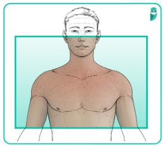
A Tromboembolia pulmonar.
B Embolia gasosa.
C Embolia gordurosa.
D Embolia em artéria cerebral média.
E Infarto pulmonar.
Questão 655 · Patologia Geral · 4000200513Quando há a formação de um trombo, sabe-se que existem diferentes destinos para essa estrutura: A.Propagação. B.Embolização. C.Dissolução. Organização e recanalização. Agora imagine os cenários clínicos a seguir: 1.Paciente com fibrilação atrial que desenvolveu um acidente vascular encefálico isquêmico (AVEi). 2.Paciente vítima de infarto agudo do miocárdio transmural com início há 4 horas, submetido à trombólise química. 3.Paciente que apresentou episódio de trombose venosa profunda em membro inferior sem tratamento adequado há dois meses, apresentando edema crônico no membro afetado. 4.Paciente vítima de tromboflebite na altura da crossa da safena magna, que evoluiu com quadro de trombose venosa profunda. Correlacione os possíveis destinos para os trombos aos casos clínicos:
A 1B - 2C - 3D - 4A.
B 1B - 2D - 3C - 4A.
C 1A - 2C - 3D - 4B.
D 1A - 2D - 3C - 4B.
E 1D - 2C - 3B - 4A.
Questão 656 · Patologia Geral · 4000200512Guilherme tem 25 anos. Vem ao pronto-socorro referindo febre há cerca de 7 dias, além de mal-estar inespecí co. No exame físico, estava febril, taquicárdico, com um sopro diastólico em ru ar em foco mitral 4+/6+, além da seguinte alteração observada nos pés: Conta que teve febre reumática quando era criança, mas só fez a profilaxia com penicilina até os 13 anos. Em coleta de hemoculturas, foi rmado o diagnóstico de endocardite bacteriana aguda. O ecocardiograma solicitado apresentou, além de sinais de calci cação patológica da valva mitral, uma estrutura aderida à válvula cardíaca. Qual o termo adequado para descrever essa estrutura?
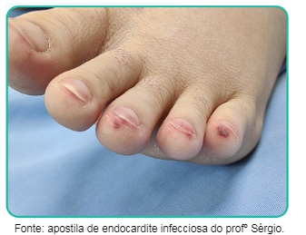
A Trombo intramural.
B Trombo arterial.
C Trombo venoso.
D Vegetação.
E Hemorragia valvar.
Revisar: possível letra faltando em enunciado
Questão 657 · Patologia Geral · 4000200511Alfredo tem 82 anos. Fumou a vida toda e é hipertenso há mais de 3 décadas, além do histórico de 2 infartos agudos do miocárdio prévios. Vem ao pronto-socorro porque está com muita dor na perna esquerda, com início há cerca de 2 horas. Conta que, nos últimos anos, vem apresentando di culdade de caminhar, pois, sempre que anda cerca de um quarteirão, sente uma queimação forte na panturrilha e pés e necessita parar para a dor passar. No entanto, mesmo em repouso, a dor está muito forte nessas últimas horas. Ao exame físico, apresenta frialdade e palidez em todo o território infrapoplíteo da perna esquerda, os pulsos distais não estão palpáveis e não é notado edema em nenhuma das pernas. Além disso, há notável hipotrofia muscular, onicodistrofia e ausência de pelos em ambas as pernas. Qual evento patológico que mais provavelmente explica o quadro atual do paciente?
A Trombose venosa profunda em membro inferior esquerdo.
B Trombose arterial em membro inferior esquerdo.
C Embolia arterial em membro inferior esquerdo.
D Celulite em membro inferior esquerdo.
E Erisipela em membro inferior esquerdo.
Questão 658 · Patologia Geral · 4000200510Flávio tem 53 anos, é portador de diabetes mellitus do tipo 2 e de hipertensão arterial sistêmica. Resolveu não tomar as vacinas contra a COVID-19 após se informar sobre o assunto em redes sociais. De um dia para o outro, acordou com dores no corpo, tosse, coriza e febre. Buscou atendimento médico e, por meio de um teste de RT-PCR, recebeu o diagnóstico de COVID-19. Em cerca de 48 horas de evolução, já estava internado e utilizando suporte ventilatório não invasivo. Com 96 horas de evolução, precisou ser entubado devido ao desconforto respiratório. Foi melhorando progressivamente, até que, sem explicação evidente, apresentou uma piora importante e abrupta no quadro de dessaturação de oxigênio e acidose respiratória. Ao exame físico, foi observado uma assimetria importante entre as duas pernas e, à palpação, a panturrilha direita estava com aspecto empastado. Qual evento patológico que mais provavelmente explica o quadro atual do paciente?
A Fenômeno tromboembólico arterial.
B Fenômeno tromboembólico venoso.
C Infarto pulmonar.
D Hemorragia alveolar maciça.
E Pneumonia bacteriana secundária.
Questão 659 · Patologia Geral · 4000200509Durante a aula de Patologia, o professor dirige-se a você e faz uma pergunta bastante elementar: pensando em fenômenos tromboembólicos, quais são os componentes da tríade de Virchow?
A Lesão endotelial, estase sanguínea, hipercoagulabilidade.
B Hipotermia, coagulopatia e acidose metabólica.
C Acidose metabólica, lesão endotelial e hipercoagulabilidade.
D Plaquetose, estase sanguínea e hipercoagulabilidade.
E Hipotermia, estase sanguínea e lesão endotelial.
Questão 660 · Patologia Geral · 4000200508Qual combinação de exames abaixo melhor avalia a hemostasia primária?
A Tempo de protrombina, avaliação da função plaquetária, dosagem de fator VIII.
B Contagem de plaquetas, tempo de tromboplastina parcial ativada, avaliação da função plaquetária.
C Tempo de protrombina, tempo de sangramento, contagem de plaquetas.
D Contagem de plaquetas, tempo de sangramento, avaliação da função plaquetária.
E Contagem de plaquetas, tempo de tromboplastina parcial ativada, tempo de protrombina.
Questão 661 · Patologia Geral · 4000200507Um jovem de 20 anos procura atendimento na emergência devido à hemartrose de joelhos. Realizados exames laboratoriais, revelaram os seguintes resultados: Tempo de ativação da protrombina (TAP) e INR sem alterações. Tempo de Tromboplastina Parcial Ativado (TPPa): 60 segundos; controle: 30 segundos. Contagem de plaquetas: 300.000/mm³. Assinale a alternativa que descreve qual etapa da hemostasia se encontra mais alterada e um possível causador do problema:
A Hemostasia primária por redução da atividade plaquetária.
B Hemostasia primária por redução absoluta na quantidade de plaquetas.
C Hemostasia secundária por deficiência de fator VII.
D Hemostasia secundária por deficiência de fator VIII.
E Hemostasia secundária por deficiência de fator X.
Questão 662 · Patologia Geral · 4000200506Observe a imagem a seguir e assinale a alternativa que faz de forma correta as correlações entre letras em preto e fatores de coagulação nas vias da hemostasia secundária:
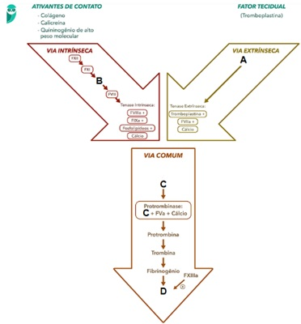
A A - Fator VII; B - Fator IX; C - Fator Xa; D - Fibrina.
B A - Fator IX; B - Fator Xa; C - Fibrina; D - Fator VII.
C A - Fator VII; B - Fator Xa; C - Fator IX; D - Fibrina.
D A - Fibrina; B - Fator IX; C - Fator VII; D - Fator Xa.
E A - Fibrina; B - Fator VII; C - Fator Xa; D - Fator IX.
Questão 663 · Patologia Geral · 4000200505Seu Alberto tem 67 anos. Certo dia, apresentou um episódio de acidente vascular encefálico isquêmico (AVEi). Durante a investigação etiológica, um eletrocardiograma evidenciou ritmo de brilação atrial, presumidamente crônica e causadora da embolia que ocasionou o AVEi. A equipe médica responsável pelo atendimento chegou à conclusão de que não seria prudente reverter o ritmo cardíaco do paciente, e que compensaria mais submetê-lo à terapia anticoagulante para evitar formação de novos trombos e episódios de embolia. A medicação de escolha foi a varfarina, um antagonista da vitamina K. Qual dos exames laboratoriais e etapas da hemostasia a seguir provavelmente apresentarão alteração durante o tratamento de Alberto com essa medicação?
A Contagem de plaquetas e hemostasia primária.
B Tempo de protrombina e hemostasia secundária.
C Tempo de protrombina e hemostasia primária.
D Tempo de tromboplastina parcial ativada e hemostasia primária.
E Tempo de tromboplastina parcial ativada e hemostasia secundária.
Questão 664 · Patologia Geral · 4000200504Arthur tem 9 anos, e vem ao pronto-socorro apresentando um aumento importante do joelho esquerdo. Seu pai conta que o paciente bateu o joelho contra o chão ao tropeçar enquanto corria, há cerca de um dia. Também refere que, tanto ele quanto seu lho, sempre tiveram problemas com sangramentos, de forma que “qualquer coisinha vira uma catástrofe”. A punção da articulação do joelho de Arthur revelou grande quantidade de sangue no local. Além disso, um exame de análise de urina revelou hematúria microscópica. Considerando seus conhecimentos sobre hemostasia, qual dos exames laboratoriais a seguir provavelmente apresentará alteração e qual capacidade de hemostasia de Arthur se encontra mais alterada?
A Contagem de plaquetas e hemostasia primária.
B Contagem de plaquetas e hemostasia secundária.
C Tempo de protrombina e hemostasia primária.
D Tempo de tromboplastina parcial ativada e hemostasia primária.
E Tempo de tromboplastina parcial ativada e hemostasia secundária.
Questão 665 · Patologia Geral · 4000200503Melissa tem 32 anos e procura atendimento no pronto-socorro preocupada com o surgimento espontâneo de múltiplas petéquias pelo corpo há cerca de 1 semana. Além disso, refere que notou aumento importante no uxo menstrual este mês. Não apresentou febre, dores ou quaisquer outros sintomas. O exame físico não revela alterações além de petéquias distribuídas por todo o corpo, especialmente em membros inferiores. No entanto, ao examinar a cavidade oral da paciente, notou-se focos de sangramento gengival. Considerando seus conhecimentos sobre hemostasia, qual dos exames laboratoriais a seguir provavelmente apresentará alteração e qual capacidade de hemostasia de Melissa se encontra mais alterada?
A Contagem de plaquetas e hemostasia primária.
B Contagem de plaquetas e hemostasia secundária.
C Tempo de protrombina e hemostasia primária.
D Tempo de protrombina e hemostasia secundária.
E Tempo de tromboplastina parcial ativada e hemostasia secundária.
Questão 666 · Patologia Geral · 4000200502Cássio, um paciente de 43 anos, é etilista crônico e consome cerca de 60 g de álcool por dia em destilados. Há cerca de 2 meses, notou que está cando “amarelado”, além de sentir que sua barriga aumentou bastante. Ao exame físico, apresenta edema tibial de 3+/4+, bilateral e depressível, macicez móvel de decúbito presente, ginecomastia e presença de múltiplas telangiectasias em tronco. Considerando seus conhecimentos sobre patologia, qual(is) é(são) o(s) principal(is) mecanismo(s) envolvido(s) na gênese do edema no abdome deste paciente?
A Redução da pressão coloidosmótica, somente.
B Aumento da pressão hidrostática, somente.
C Obstrução linfática, somente.
D Redução da pressão coloidosmótica + obstrução linfática.
E Redução da pressão coloidosmótica + aumento da pressão hidrostática.
Questão 667 · Patologia Geral · 4000200501Sheila tem 37 anos e foi submetida a uma gastroplastia em Y de Roux para tratamento de uma síndrome metabólica e obesidade grau II. No 2º dia de pós-operatório, começou a queixar-se de dor no membro inferior esquerdo. Ao exame físico, havia evidente assimetria entre as panturrilhas, com a do lado esquerdo visivelmente edemaciada 2+/4+, com hiperemia na pele sobrejacente e dor à palpação local. Membro inferior direito sem alterações dignas de nota. Qual alternativa traz a combinação correta dos principais mecanismos envolvidos no edema apresentado pela paciente?
A Aumento da pressão hidrostática e redução da pressão coloidosmótica.
B Aumento da pressão hidrostática e inflamação local.
C Inflamação local e redução da pressão coloidosmótica.
D Obstrução linfática e redução da pressão coloidosmótica.
E Inflamação local e obstrução linfática.
Questão 668 · Patologia Geral · 4000200500Miguel tem 6 anos, e vem ao pronto-socorro devido a quadro de edema generalizado. A mãe conta que ele acordou esta manhã com a “cara toda inchada”, e que o xixi está bem escuro e em pouquíssima quantidade. Você nota que o paciente está bastante apreensivo perguntando se “vai tomar vacina”, e a mãe refere que na última vez que veio ao médico (há 14 dias), Miguel foi tratado com penicilina G benzatina após receber o diagnóstico de faringite estreptocócica. Ao exame físico, apresenta pressão arterial acima do p95, pulsos cheios e simétricos, edema bipalpebral e de membros inferiores de 3+/4+. Considerando seus conhecimentos sobre patologia, qual é o principal mecanismo envolvido na gênese do edema deste paciente?
A Redução da pressão coloidosmótica.
B Aumento da pressão hidrostática.
C Obstrução linfática.
D Eliminação de sódio e água.
E Processo inflamatório generalizado.
Questão 669 · Patologia Geral · 4000200499Simone tem 53 anos. Ao realizar a mamogra a para rastreio de câncer de mama, foi evidenciado um nódulo espiculado de 3 cm no quadrante superolateral do seio esquerdo. Foi submetida à biópsia com agulha grossa, que confirmou o diagnóstico de carcinoma ductal. Na pesquisa de linfonodos sentinelas, houve acometimento de toda a cadeia linfonodal da axila esquerda, e indicado o esvaziamento axilar. Cerca de 2 meses após o procedimento de esvaziamento axilar, passou em consulta de retorno com o seu mastologista, queixando-se de inchaço no braço esquerdo. Ao exame físico, havia evidente assimetria entre os membros superiores, sendo que o braço esquerdo apresentava um edema duro generalizado, e o direito não tinha alterações clínicas significativas. Considerando seus conhecimentos sobre patologia, qual é o principal mecanismo envolvido na gênese do edema dessa paciente?
A Redução da pressão coloidosmótica.
B Aumento da pressão hidrostática.
C Obstrução linfática.
D Retenção de sódio e água.
E Processo inflamatório generalizado.
Questão 670 · Patologia Geral · 4000200498Enzo Gabriel tem 4 anos. Vem ao pronto-socorro apresentando quadro de edema generalizado. A mãe refere que o paciente teve um resfriado há cerca de 10 dias, e que o inchaço surgiu nos últimos 3 dias. Ao exame físico, o paciente encontra-se em bom estado geral, hidratado, pulsos radiais cheios, pressão arterial entre p10 e p50, edema 4+/4+ generalizado (face, extremidades, bolsa escrotal e ascite). Ao ser questionada sobre a urina do paciente, a mãe refere que a cor e volume estão normais, porém notou grande quantidade de espuma no vaso sanitário após as micções do paciente. O exame em ta de proteinúria revelou resultado de 3+/4+. Considerando seus conhecimentos sobre patologia, qual é o principal mecanismo envolvido na gênese do edema deste paciente?
A Redução da pressão coloidosmótica.
B Aumento da pressão hidrostática.
C Obstrução linfática.
D Eliminação de sódio e água.
E Processo inflamatório generalizado.
Questão 671 · Patologia Geral · 4000200497Ernesto tem 64 anos, e é portador de hipertensão arterial sistêmica. Hoje, procurou atendimento em unidade básica de saúde pois percebeu que seus sapatos não estão mais servindo. Ao conversar com o paciente, o médico descobriu que, nos últimos meses, seu Ernesto vem evoluindo com sensação de falta de ar aos esforços moderados, apresentando alguns episódios de despertar noturno com sensação de sufocamento, além de estar precisando de 3 travesseiros para conseguir dormir melhor. Ao exame físico, apresenta edema simétrico de membros inferiores 2+/4+ até altura dos joelhos, sem hiperemia da pele sobrejacente, e presença de B3 à ausculta cardíaca. Considerando seus conhecimentos sobre patologia, qual é a principal causa do edema do paciente?
A Redução da pressão coloidosmótica.
B Aumento da pressão hidrostática.
C Obstrução linfática.
D Eliminação de sódio e água.
E Processo inflamatório em pés.
Questão 672 · Sistema Respiratório · 4000200496Um homem de 52 anos trabalha há 30 anos como mineiro e desenvolveu dispneia progressiva e tosse seca nos últimos 6 meses. Ele não apresenta febre ou outras queixas sistêmicas. No exame físico, há crepitações nas em ambos os campos pulmonares. A radiogra a de tórax mostra opacidades nodulares bilaterais e pequenas calci cações no mediastino. Qual das seguintes exposições ocupacionais está mais provavelmente relacionada com as alterações clínicas e radiológicas desse paciente?
A Poeira de amianto
B Asbestos
C Fibras de algodão
D Fumaça de solda
E Sílica
Questão 673 · Sistema Respiratório · 4000200495A pneumonia por vírus sincicial respiratório (VSR) é uma doença infecciosa comum em crianças e pode apresentar diversas manifestações clínicas e radiológicas. Uma menina de 2 anos é levada ao pediatra com tosse, febre e di culdade respiratória. O exame físico revela crepitações bilaterais e o VSR é confirmado através de um teste rápido. Qual das seguintes manifestações radiológicas é mais provável de ser encontrada em uma radiografia de tórax nesse caso?
A Consolidação lobar unilateral.
B Infiltrados intersticiais bilaterais.
C Derrame pleural volumoso.
D Hiperinflação e atelectasia.
E Nódulo pulmonar solitário.
Questão 674 · Sistema Respiratório · 4000200494O câncer de pulmão é uma das principais causas de morte relacionadas ao câncer no mundo e possui diversos tipos histológicos, com diferentes características e prognósticos. Considerando um paciente com suspeita de câncer de pulmão, assinale a alternativa correta sobre o tipo histológico e seu principal sintoma:
A Adenocarcinoma: mais comum em fumantes e frequentemente associado a dor torácica intensa.
B Carcinoma de pequenas células: geralmente é periférico e mais comum em não fumantes, apresentando dispneia.
C Carcinoma de células escamosas: costuma ser central e relacionado ao tabagismo, frequentemente associado à hemoptise.
D Carcinoma de grandes células: periférico e mais comum em não fumantes, relacionado a baqueteamento digital.
E Linfoma pulmonar: comum em pacientes imunossuprimidos e associado a tosse seca e persistente.
Questão 675 · Sistema Respiratório · 4000200493O desenvolvimento laríngeo é essencial para compreender a formação e a função da laringe e suas estruturas adjacentes. Considere o seguinte caso clínico: Um recém-nascido apresenta um choro rouco e di culdade respiratória. Após investigação, é diagnosticado com rede laríngea. Qual alternativa está incorreta em relação ao desenvolvimento laríngeo e à condição apresentada?
A A rede laríngea é causada por uma recanalização incompleta da laringe durante a 10ª semana de desenvolvimento embrionário.
B A epiglote se desenvolve da parte caudal da eminência hipofaríngea, que é formada pela proliferação do mesênquima na extremidade ventral do terceiro e quarto arcos faríngeos.
C Os músculos da laringe se desenvolvem dos mioblastos do quarto e sexto pares de arcos faríngeos e são inervados pelos ramos laríngeos do nervo vago (nervo craniano X).
D O tratamento da rede laríngea geralmente envolve obrigatoriamente a remoção cirúrgica das cartilagens laríngeas.
E A atresia laríngea é uma condição rara que resulta da falha da recanalização da laringe, causando obstrução das vias respiratórias superiores.
Questão 676 · Sistema Respiratório · 4000200492O estudo da embriologia do desenvolvimento pulmonar é fundamental para compreender a formação e a estrutura do sistema respiratório. Com base no desenvolvimento embrionário do pulmão, assinale a alternativa incorreta:
A O sulco laringotraqueal aparece no assoalho da extremidade caudal do intestino anterior primitivo.
B O endoderma de revestimento do sulco laringotraqueal forma o epitélio pulmonar e as glândulas da laringe, da traqueia e dos brônquios.
C O tecido conjuntivo, a cartilagem e o músculo liso das estruturas respiratórias se desenvolvem a partir do mesoderma esplâncnico.
D O divertículo laringotraqueal é formado após a evaginação do sulco laringotraqueal.
E A árvore respiratória se origina de múltiplos brotos respiratórios globulares.
Questão 677 · Sistema Respiratório · 4000200491Um homem de 60 anos de idade procura o médico com queixas de falta de ar e dor torácica leve. Ele tem um histórico de tabagismo de 30 anos. Exames laboratoriais mostram que a concentração de cálcio sérico alta e nível de fósforo sérico baixo. A radiogra a de tórax revela uma massa hilar de 6 cm no pulmão esquerdo. Qual das seguintes neoplasias é mais provável de estar associada a esses achados?
A Carcinoma de células escamosas
B Carcinoma anaplásico de pequenas células
C Adenocarcinoma
D Sarcoma pulmonar
E Carcinoma de grandes células
Questão 678 · Sistema Respiratório · 4000200490Uma menina de 7 anos de idade está comendo pipoca enquanto assiste a um lme. Acidentalmente, ela aspira um pedaço de pipoca e começa a tossir. No dia seguinte, ela apresenta dispneia leve e tosse. Ao exame físico, sua temperatura é de 37,2°C, o pulso é de 80/min, as respirações são de 20/min e a pressão arterial é de 95/65 mmHg. A ausculta revela diminuição do murmúrio vesicular na região inferior do pulmão esquerdo, e a percussão mostra aumento do timpanismo nessa área. Uma radiogra a de tórax mostra uma área de opacidade semicircular no lobo inferior esquerdo. Os exames laboratoriais revelam uma concentração de hemoglobina de 12,8 g/dL e uma contagem leucocitária de 5.500/mm³. Qual das seguintes complicações essa criança provavelmente desenvolveu?
A Broncopneumonia
B Pneumotórax
C Atelectasia de reabsorção
D Embolia pulmonar
E Bronquiectasia
Questão 679 · Sistema Respiratório · 4000200489Um homem de 50 anos, criador de pombos, apresenta-se com dispneia progressiva e tosse seca nos últimos 6 meses. Ao exame físico, ele apresenta crepitações nas bilaterais nos campos pulmonares inferiores. A radiogra a de tórax mostra opacidades reticulares bilaterais. Os testes de função pulmonar revelam uma diminuição na CVF e uma relação VEF1/CVF normal. A biópsia pulmonar mostra in ltrados intersticiais de linfócitos e plasmócitos, bem como pequenos granulomas. Qual é a causa mais provável desse quadro clínico e patológico?
A Exposição prolongada a asbestos
B Autoanticorpos que reagem com as membranas basais alveolares
C Infecção pelo Mycobacterium tuberculosis
D Hipersensibilidade a antígenos orgânicos inalados
E Inalação crônica de partículas de sílica
Questão 680 · Sistema Respiratório · 4000200488Um homem de 30 anos, sem histórico médico relevante, apresenta-se com febre persistente há 3 semanas e suores noturnos. Ao exame físico, os sinais vitais são estáveis, mas há linfonodos palpáveis no pescoço e axilas. A radiogra a de tórax mostra uma área de consolidação no lobo superior direito e linfonodomegalia hilar. Considerando os achados clínicos e de imagem, qual é o teste mais apropriado para confirmar o diagnóstico neste paciente?
A Teste cutâneo com tuberculina
B Anticorpo anticentromérico
C Anticorpo antinuclear
D Reagina plasmática rápida
E Fator reumatoide
Questão 681 · Sistema Respiratório · 4000200487O en sema centrolobular é uma condição que afeta a saúde pulmonar e pode levar a uma série de sintomas respiratórios e alterações na função pulmonar. Considerando um paciente com dispneia progressiva e alterações nos testes de função pulmonar, qual das seguintes características histopatológicas é mais provável de ser encontrada no enfisema centrolobular?
A Acúmulo de células gigantes de Langerhans
B Dilatação e destruição dos espaços aéreos distais aos bronquíolos terminais
C Fibrose e espessamento do septo alveolar
D Oclusão luminal por tampões de fibrina e hemácias
E Granulomas não caseosos
Questão 682 · Sistema Respiratório · 4000200486Um homem de 28 anos, sem histórico de doenças relevantes, apresenta um episódio súbito de hemoptise. No exame físico, ele tem temperatura de 36,9°C, frequência cardíaca de 84/min, frequência respiratória de 22/min e pressão arterial de 148/93 mmHg. A radiogra a do tórax mostra in ltrados de aspecto algodoeiro. Uma biópsia pulmonar realizada por via transbrônquica revela necrose localizada nas paredes alveolares, acompanhada de hemorragia intra-alveolar acentuada. Dois dias depois, o paciente desenvolve oligúria. Os níveis de creatinina sérica são de 3,0 mg/dL e os de ureia de 32 mg/dL. Qual dos exames sorológicos a seguir tem maior probabilidade de apresentar resultado positivo nesse indivíduo?
A Anticorpo antimembrana basal glomerular
B Anticorpo anticitoplasma de neutrófilos
C Anticorpo antinuclear
D Anticorpo anti-DNA topoisomerase I
E Anticorpo anti-Ro/SSA
Questão 683 · Sistema Respiratório · 4000200485Maria Luiza, paciente de 47 anos desenvolveu dispneia aguda após a realização de uma cirurgia abdominal. Ela é intubada e recebe ventilação mecânica com oxigênio a 100%. Quatro dias depois, sua saturação arterial de oxigênio diminui. A radiogra a de tórax mostra opacidade difusa em ambos os campos pulmonares. Para proceder com a investigação o médico resolve solicitar uma biópsia pulmonar transbrônquica e o exame histológico revela a presença de membranas hialinas que revestem ductos e sacos alveolares distendidos. Dentre as opções abaixo, qual é o mecanismo fisiopatológico que ocorre no pulmão do paciente descrito:
A Falha na regulação da produção de surfactante pelas células alveolares tipo II
B Disfunção endotelial com aumento da permeabilidade capilar
C Coagulação intravascular disseminada
D Dano oxidativo nas células alveolares tipo II
E Liberação de citocinas pró-inflamatórias pelos neutrófilos
Questão 684 · Sistema Respiratório · 4000200484Ana, 45 anos, apresenta ganho de peso progressivo nos últimos anos, especialmente na região abdominal, além de fraqueza muscular e estrias avermelhadas na pele. Ela não apresenta histórico de obesidade, diabetes ou hipertensão arterial. Exames revelam hipercortisolismo, e o teste de supressão com dexametasona é inconclusivo. A suspeita de síndrome de Cushing paraneoplásica é levantada, e investigação revela um tumor neuroendócrino secreto de ACTH. Qual das seguintes neoplasias mais provavelmente está presente nesse paciente?
A Adenocarcinoma
B Carcinoide brônquico
C Carcinoma de pequenas células
D Carcinoma de células escamosas (CEC)
E Linfoma não Hodgkin
Questão 685 · Sistema Respiratório · 4000200483Maria, 60 anos, fumante crônica, apresenta tosse com produção de escarro, falta de ar e perda de peso nos últimos meses. Ao realizar uma radiogra a de tórax, é observada uma massa pulmonar. Durante a consulta com o médico, Maria pergunta qual seria o subtipo mais comum de câncer de pulmão. Qual das seguintes alternativas o médico deveria responder?
A Carcinoma de células escamosas
B Carcinoma de células grandes
C Carcinoma de pequenas células
D Adenocarcinoma
E Carcinoma bronquioloalveolar
Questão 686 · Sistema Respiratório · 4000200482Uma mulher de 35 anos de idade apresentou dispneia progressiva com tosse ao longo dos últimos 8 anos. Há 1 ano, sua tosse se tornou produtiva, com expectoração de muco espesso. Ao examiná-la, sua temperatura é normal e uma percussão torácica revela som maciço em todos os campos pulmonares. A radiogra a de tórax mostra opacidades difusas em ambos os pulmões. Uma biópsia transbrônquica é realizada, e a microscopia óptica revela achados patológicos significativos, assim como corpos lamelares na microscopia eletrônica. Considerando essas informações, quais anticorpos são mais prováveis de serem a causa subjacente da doença dessa paciente?
A Fator estimulante de colônias de granulócitos e macrófagos
B CFTR
C DNA topoisomerase I
D Mieloperoxidase neutrofílica
E α
Questão 687 · Sistema Respiratório · 4000200481João, 22 anos, é portador de brose cística diagnosticada na infância. Ele apresenta tosse crônica e produção de expectoração desde a adolescência, apesar do tratamento adequado. Um exame de imagem recente revelou bronquiectasias. Qual dos seguintes achados radiológicos é característico da bronquiectasia?
A Nódulos múltiplos com escavação central
B Áreas de opacidade em vidro fosco
C Espessamento brônquico irregular e dilatação das paredes brônquicas
D Infiltração intersticial com broncograma aéreo
E Adenopatias hiliares bilaterais
Questão 688 · Sistema Respiratório · 4000200480Uma menina de 11 anos participou de um programa de triagem de saúde de rotina e desenvolveu uma área de induração de 12 mm no antebraço esquerdo 2 dias após a injeção intradérmica de 0,1 mL do antígeno de PPD. Ela parece saudável e sem outras queixas. Em razão da sua exposição a bactéria Mycobacterium tuberculosis uma radiogra a de tórax é solicitada. Dentre as opções abaixo, qual é a anormalidade mais provável de ser observada na radiografia?
A Derrame pleural
B Atelectasia
C Nenhum achado anormal
D Nódulo pulmonar solitário
E Infiltrados intersticiais difusos
Questão 689 · Sistema Respiratório · 4000200479Maria, 35 anos, é uma professora de ensino fundamental que começou a apresentar episódios de falta de ar e chiado no peito há cerca de seis meses. Ela relata que isso ocorre principalmente durante o exercício físico e quando ela ca exposta a irritantes respiratórios, como fumaça de cigarro e produtos de limpeza. Os sintomas geralmente desaparecem após algumas horas, mas ela se sente cansada e fraca por algum tempo depois. Ela nunca teve alergias significativas e não há histórico de asma na família. Com base no caso clínico, podemos pensar numa forma de asma que é a não atópica. Qual é a principal diferença entre a asma atópica e a asma não atópica?
A A gravidade dos sintomas da asma.
B A idade de início da doença
C A presença ou ausência de história familiar positiva para asma
D A presença ou ausência de sensibilização a alérgenos
E O tipo de vírus que desencadeia a doença
Revisar: possível letra faltando em enunciado
Questão 690 · Sistema Respiratório · 4000200478Um homem de 60 anos de idade, ex-tabagista, apresenta dispneia aos esforços, tosse crônica e produção de expectoração. Ao exame físico, é notado um aumento da distensão torácica, achatamento do diafragma e diminuição dos ruídos respiratórios, principalmente em regiões basais. A radiogra a de tórax revela hiperinsu ação pulmonar, achatamento diafragmático, diminuição da vascularização periférica e aumento da transparência dos campos pulmonares, especialmente nos ápices. A tomogra a computadorizada de tórax confirma o diagnóstico de en sema pulmonar, com maior predominância de lesões no lobo superior esquerdo. Com base no caso clínico apresentado, qual é o mecanismo siopatológico mais provável por trás do en sema pulmonar?
A A deficiência de a1-antitripsina, uma enzima proteolítica que regula a atividade da elastase, causando degradação do parênquima pulmonar e fibrose.
B O aumento da produção de colágeno pelos fibroblastos pulmonares, levando a fibrose intersticial e perda da elasticidade pulmonar.
C A ativação da resposta inflamatória e a produção de radicais livres de oxigênio, que causam danos oxidativos e degradação do tecido pulmonar.
D A inibição da atividade do surfactante pulmonar, que leva a colapso e obstrução das vias aéreas.
E A redução da pressão oncótica dos capilares pulmonares, que leva a um aumento da retenção de líquidos nos espaços intersticiais e alvéolos
Questão 691 · Sistema Respiratório · 4000200477Um homem de 52 anos procura o médico com queixa de dispneia progressiva e perda de peso de 5 kg nos últimos 2 anos. Ele fumou 1 maço de cigarros por dia por mais de 20 anos, mas não fuma há 2 anos. O exame físico revela um aumento do diâmetro anteroposterior do tórax e uma redução dos sons pulmonares à ausculta. A radiogra a de tórax mostra pulmões hipertransparentes em ambos os campos, com transparência especialmente acentuada nos lobos superiores. Realizada espirometria e os testes de função pulmonar revelam uma redução da relação VEF1/CVF que está em 0.6. Qual das opções a seguir é a mais provável causa patogênica para essa doença?
A Transporte anormal do íon sódio na célula epitelial
B Redução da motilidade ciliar com braços de dineína irregulares
C Liberação de elastase pelos macrófagos
D Comprometimento da liberação hepática de
E Recrutamento de linfócitos e liberação de interleucina-4
Questão 692 · Sistema Respiratório · 4000200476Um paciente do sexo masculino, com 36 anos de idade, apresenta subitamente uma di culdade respiratória grave com sibilos e é levado imediatamente para o departamento de emergência. Durante o exame físico, a temperatura do paciente é de 37°C, o pulso é de 90/min, a frequência respiratória é de 16/min e a pressão arterial é de 125/80 mmHg. A radiogra a de tórax mostra um aumento na transparência em ambos os campos pulmonares. Uma amostra de escarro é coletada e analisada, revelando a presença de espirais de de Curschmann, cristais de Charcot-Leyden e células inflamatórias agudas em um ambiente de muco abundante. Uma significativa parte das células inflamatórias são eosinófilos. Com base nesses achados, qual é o diagnóstico mais provável?
A Asma brônquica
B Bronquiectasia
C Enfisema centrolobular
D Fibrose cística
E Tuberculose pulmonar
Questão 693 · Sistema Respiratório · 4000200475A hipoplasia pulmonar é uma condição rara em que há um desenvolvimento defeituoso dos dois pulmões. O que é a hipoplasia pulmonar?
A Uma condição em que há excesso de desenvolvimento dos pulmões
B Uma condição em que há redução da capacidade de troca gasosa no pulmão
C Uma condição em que há ausência de desenvolvimento dos pulmões
D Uma condição em que há desenvolvimento defeituoso dos dois pulmões
E Uma condição em que há aumento da pressão arterial pulmonar
Questão 694 · Fisiologia do Sistema Respiratório · 4000200474O Ritmo de Cheyne-Stokes é uma forma de respiração periódica que ocorre quando há hiperventilação seguida de depressão do centro respiratório cerebral. Sobre o Ritmo de Cheyne-Stokes, assinale a alternativa incorreta:
A O Ritmo de Cheyne-Stokes ocorre por ciclos quando a pessoa respira excessivamente e promove a remoção de grande quantidade de CO2 do sangue pulmonar e aumento simultâneo do O2 sanguíneo.
B O Ritmo de Cheyne-Stokes é uma forma de respiração periódica que pode ocorrer em qualquer indivíduo, mas sob condições normais é muito "amortecido".
C A depressão do centro respiratório cerebral ocorre no momento em que o sangue hiperventilado finalmente chega ao centro respiratório cerebral.
D O Ritmo de Cheyne-Stokes não é influenciado por fatores como doenças cardíacas, sendo um mecanismo que é relacionado a doenças neurológicas e traumas cranianos.
E O ciclo de respiração periódica do Ritmo de Cheyne-Stokes é caracterizado por hiperventilação seguida de depressão do centro respiratório cerebral.
Questão 695 · Fisiologia do Sistema Respiratório · 4000200473Maria, 42 anos, casada, com dor de cabeça, tontura, náusea e desmaio após sair de incêndio em sua casa. Ao chegar no Pronto Socorro o médico de plantão faz a hipótese diagnóstica de intoxicação por monóxido de carbono. Qual mecanismo siopatológico está por trás desse episódio?
A O CO inibe a ação da mioglobina, desacelerando a respiração muscular
B O CO se combina com a hemoglobina, deslocando o oxigênio do sangue
C O CO interfere na produção de ATP, comprometendo a função celular
D O CO estimula a produção de óxido nítrico, causando vasodilatação e hipóxia
E O CO age diretamente no centro respiratório, acelerando a respiração
Questão 696 · Fisiologia do Sistema Respiratório · 4000200472A curva de dissociação de oxigênio da hemoglobina é um gráfico que representa a relação entre a concentração de oxigênio e a a nidade da hemoglobina por ele. Esta curva é importante porque ajuda a entender como a hemoglobina transporta oxigênio pelo corpo e como essa capacidade pode ser afetada por fatores como doenças, medicamentos e outros. Por exemplo paciente sépticos, traumatizados e em condições patológicas podem apresentar distúrbios que correspondam as suas necessidades atuais de oxigênio. Qual dos fatores abaixo menos afeta a curva de dissociação de oxigênio da hemoglobina?
A pH do sangue
B Pressão parcial de dióxido de carbono (pCO2) no sangue
C Concentração de hemoglobina no sangue
D Temperatura do sangue
E Concentração de 2,3-BPG no sangue
Questão 697 · Fisiologia do Sistema Respiratório · 4000200471Um menino de três anos de idade foi levado à emergência com quadro de desidratação grave, afebril, taquipneico e taquicárdico, apresentando os seguintes exames à entrada: pH 7; pCO2 30 mmHg; e Bic 9 mmol/L. Sabendo que os valores de referência de pH seriam: 7.35-7.45, Bic: 22-26 mEq/L, pCO2: 35-45 mmHg Nesse caso hipotético, a administração de bicarbonato de sódio pode ter como consequência o(a):
A desvio da curva de dissociação da hemoglobina para a direita, ocasionando maior liberação de oxigênio tecidual.
B desvio da curva de dissociação da hemoglobina para a direita, com consequente menor afinidade desta pelo oxigênio.
C desvio da curva de dissociação de hemoglobina para a esquerda, com maior afinidade desta pelo oxigênio.
D desvio da curva de dissociação de hemoglobina para a esquerda, com maior liberação de oxigênio tecidual.
E manutenção da condição atual da curva de dissociação de hemoglobina.
Questão 698 · Fisiologia do Sistema Respiratório · 4000200470A gasometria de um motoboy que sofreu um acidente sem usar capacete mostra uma PaO2 de 50 mmHg e uma PaCO2 de 80 mmHg, além de um pH de 7,1 e uma concentração de HCO₃ transportado é através de:
A Ligação com proteínas no plasma
B Ligação com a hemoglobina
C Como íons bicarbonato
D Dissolvido na água.
E Em forma gasosa.
Questão 699 · Fisiologia do Sistema Respiratório · 4000200469Quando o índice Va/Q é igual a zero, o que ocorre com as pressões parciais alveolares de oxigênio e dióxido de carbono?
A A pressão parcial de oxigênio aumenta enquanto a pressão parcial de dióxido de carbono permanece constante.
B A pressão parcial de oxigênio e dióxido de carbono se mantêm estáveis já que não está ocorrendo nenhum troca.
C A pressão parcial de oxigênio e dióxido de carbono se equilibram devido à difusão entre o sangue e o ar alveolar
D A pressão parcial de oxigênio cai enquanto a pressão parcial de dióxido de carbono aumenta.
E A pressão parcial de oxigênio e dióxido de carbono não têm relação direta com o índice Va/Q.
Questão 700 · Fisiologia do Sistema Respiratório · 4000200468Quais são os principais fatores que contribuem para o aumento da capacidade de difusão de oxigênio durante o exercício?
A A dilatação dos capilares pulmonares e a proporção ventilação-perfusão
B A constrição dos capilares pulmonares e a maior ventilação alveolar
C A maior ventilação alveolar e a queda da perfusão, otimizando a troca
D A dilatação extra dos capilares já abertos e maior proporção de lactato nos pulmões favorecendo o metabolismo anaeróbio
E A abertura de muitos capilares pulmonares e a queda da ventilação no ápice enquanto a base pulmonar aumenta.
Questão 701 · Fisiologia do Sistema Respiratório · 4000200467Qual é o fator principal que determina a difusão de gases respiratórios na membrana alveolar-capilar?
A A concentração do gás nos alvéolos.
B A concentração do gás nos capilares pulmonares.
C A diferença de pressão entre o gás nos alvéolos e o gás nos capilares pulmonares.
D A temperatura da membrana alveolar-capilar.
E A velocidade das moléculas do gás
Questão 702 · Fisiologia do Sistema Respiratório · 4000200466Qual dos seguintes gases é responsável pela difusão efetiva dos alvéolos para o sangue, devido à pressão parcial maior nos alvéolos?
A Nitrogênio
B Oxigênio
C Dióxido de carbono
D Gás hélio
E Gás metano
Questão 703 · Fisiologia do Sistema Respiratório · 4000200465A difusão gasosa no pulmão é in uenciada por vários fatores, um deles é o coe ciente de difusão de cada gás. Em relação ao coeficiente de difusão de cada gás, assinale a alternativa correta:
A O coeficiente de difusão do O₂ é maior que o coeficiente de difusão do CO₂
B O coeficiente de difusão do CO₂ é cerca de 2x maior que o coeficiente de difusão do nitrogênio
C O coeficiente de difusão do nitrogênio é maior que o coeficiente de difusão do O₂
D O coeficiente de difusão do CO₂ é maior que o coeficiente de difusão do O₂
E O coeficiente de difusão do nitrogênio é maior que o coeficiente de difusão do CO₂
Revisar: possível letra faltando em enunciado
Questão 704 · Fisiologia do Sistema Respiratório · 4000200464A anatomia da membrana respiratória é fundamental para entendermos a troca gasosa durante a respiração. Algumas condições podem aumentar a espessura da membrana respiratória, o que pode interferir na difusão de gases. Em relação à espessura da membrana respiratória e seus efeitos na difusão gasosa, assinale a alternativa incorreta:
A Uma espessura maior da membrana respiratória pode tornar a troca gasosa mais lenta.
B O aumento da espessura da membrana respiratória pode ser causado por líquido de edema.
C A difusão gasosa é diretamente proporcional à espessura da membrana respiratória.
D O aumento de mais de 2 a 3 vezes a espessura normal pode interferir significativamente na troca respiratória normal de gases.
E Algumas doenças pulmonares podem causar aumento da espessura da membrana respiratória.
Questão 705 · Fisiologia do Sistema Respiratório · 4000200463Conhecer as unidades básicas respiratórias nos ajuda a entender melhor como funciona o processo de difusão de gases. Qual é a denominação da unidade respiratória composta do bronquíolo respiratório, ductos alveolares, átrios e alvéolos?
A Lobo pulmonar
B Saco alveolar
C Lóbulo Respiratório
D Sistema de Troca Gasosa
E Bronquíolo Pulmonar
Questão 706 · Fisiologia do Sistema Respiratório · 4000200462Sobre a importância da Substituição Lenta do Ar Alveolar no controle respiratório, marque a alternativa correta:
A Ajuda a evitar mudanças repentinas nas concentrações de gases no sangue.
B Torna o mecanismo de controle respiratório pouco eficiente
C Não evita aumentos e quedas excessivos da oxigenação tecidual.
D Não é importante na prevenção da interrupção temporária da respiração.
E Não influencia a concentração tecidual de CO₂ e do pH tecidual.
Questão 707 · Fisiologia do Sistema Respiratório · 4000200461Com base na comparação das composições do ar alveolar e atmosférico, escolha a alternativa que explique adequadamente por que essas composições são diferentes.
A O ar alveolar é misturado constantemente com o ar atmosférico, resultando em concentrações similares de gases.
B A absorção do O₂ pelo sangue pulmonar e a difusão do CO₂ dos alvéolos para o ar pulmonar é o único motivo das diferenças de concentração de gases.
C A umidificação do ar atmosférico seco antes de atingir os alvéolos resulta em concentrações diferentes de gases.
D O ar alveolar é substituído completamente pelo ar atmosférico a cada respiração, levando às diferenças nas concentrações de gases.
E O ar alveolar é criado com concentrações diferentes de gases, independentemente do ar atmosférico.
Questão 708 · Fisiologia do Sistema Respiratório · 4000200460O ar alveolar sofre diversos processos transformacionais na difusão de gases. Qual é a diferença entre a composição de gases presente no ar alveolar e no ar atmosférico?
A A composição do ar alveolar é semelhante à do ar atmosférico.
B O ar alveolar tem concentrações maiores de O₂ e menores de CO₂ que o ar atmosférico.
C O ar alveolar tem concentrações menores de O₂ e maiores de CO₂ que o ar atmosférico.
D A concentração de O₂ no ar alveolar é a mesma que no ar atmosférico, mas a concentração de CO₂ é maior.
E A concentração de O₂ no ar alveolar é a mesma que no ar atmosférico, mas a concentração de CO₂ é menor.
Questão 709 · Fisiologia do Sistema Respiratório · 4000200459Qual dos seguintes gases é comumente utilizado para avaliar a capacidade de difusão de oxigênio nos pulmões?
A HCN
B O₂
C N₂
D CO₂
E CO
Questão 710 · Fisiologia do Sistema Respiratório · 4000200458Com relação à difusão de gases entre a fase gasosa nos alvéolos e a fase dissolvida no sangue pulmonar, assinale a alternativa incorreta:
A A difusão efetiva do gás é determinada pela diferença entre as duas pressões parciais.
B Se a pressão parcial do gás for maior na fase gasosa nos alvéolos, como no caso do oxigênio, mais moléculas se difundirão para o sangue do que na outra direção.
C Se a pressão parcial do gás for maior no estado dissolvido no sangue, como no caso do CO2, a difusão efetiva ocorrerá para a fase gasosa nos alvéolos.
D A intensidade com que as moléculas escapam da fase dissolvida no sangue é inversamente proporcional à sua pressão parcial no sangue.
E A pressão parcial de cada gás na mistura dos gases respiratórios alveolares tende a forçar as moléculas do gás para a solução no sangue dos capilares alveolares.
Questão 711 · Patologia Geral · 4000200457Uma mulher de 73 anos, índice de massa corporal (IMC) de 16,5 kg/m², portadora de diabetes mellitus do tipo 2 insulinodependente e doença arterial obstrutiva crônica, precisou ser submetida a uma colecistectomia aberta de urgência devido a um quadro de colecistite aguda. Na recuperação pós-operatória, evoluiu com infecção de sítio cirúrgico. Foi observada di culdade na cicatrização da ferida operatória. Dentre os fatores a seguir, qual deles não dificultou o processo cicatricial?
A Diabetes mellitus.
B Doença arterial obstrutiva crônica.
C Infecção de sítio cirúrgico.
D IMC.
E Produção endógena de glicocorticoides em resposta ao trauma.
Questão 712 · Fisiologia do Sistema Respiratório · 4000200456Todas as alterações a seguir podem promover o desequilíbrio do acúmulo e da absorção de líquido pleural, podendo levar ao derrame pleural, EXCETO:
A pressão hidrostática diminuída.
B pressão intrapleural negativa aumentada.
C permeabilidade capilar aumentada.
D pressão oncótica plasmática diminuída.
E drenagem linfática diminuída ou interrompida
Questão 713 · Fisiologia do Sistema Respiratório · 4000200455Qual das seguintes alternativas NÃO é uma causa de derrame pleural?
A Infecção ou inflamação nas superfícies da cavidade pleural
B Diminuição acentuada da pressão coloidosmótica do plasma
C Excesso de exercício físico
D Insuficiência cardíaca
E Bloqueio da drenagem linfática da cavidade pleural
Questão 714 · Fisiologia do Sistema Respiratório · 4000200454A anatomia da pleural é fundamental para compreender a siologia respiratória e em cirurgias torácicas, sabendo suas relações entre si e com os demais órgãos. Em relação ao espaço pleural, qual das opções a seguir é verdadeira?
A A fina camada de líquido mucoide entre as pleuras parietal e visceral é responsável por dificultar o deslizamento dos pulmões durante a respiração.
B A quantidade de líquido presente na cavidade pleural é significativa e pode causar complicações respiratórias.
C Os vasos linfáticos que se abrem diretamente da cavidade pleural para o mediastino ajudam a manter o excesso de líquido na cavidade pleural.
D O espaço pleural é considerado espaço físico devido à sua largura.
E O espaço pleural é considerado um espaço potencial devido à sua estreiteza e ao fato de que normalmente não é um espaço físico definido.
Questão 715 · Patologia Geral · 4000200453Um homem de 33 anos foi vítima de queimadura com álcool ao tentar acender uma churrasqueira. Chegou ao pronto-socorro apresentando queimaduras de 2º grau em toda a face anterior do antebraço direito. Foi realizado desbridamento da ferida, de forma que a derme profunda conseguiu ser preservada. Cerca de 4 dias após a lesão, qual achado no ferimento indica presença de boa evolução do processo cicatricial?
A Presença de tecido de granulação.
B Remodelamento das fibras de colágeno.
C Processo inflamatório significativo.
D Surgimento de focos de necrose devido à ação macrofágica.
E Presença abundante de exsudação.
Questão 716 · Fisiologia do Sistema Respiratório · 4000200452O edema pulmonar é uma das principais formas em que o pulmão pode ser lesado por doenças circulatórias ou de acometimento sistêmico. Constitui uma das principais causas de edema pulmonar:
A Insuficiência cardíaca direita.
B Lesão das paredes dos capilares pulmonares por infecções respiratórias.
C Aumento da pressão arterial pulmonar devido a obstruções das artérias pulmonares.
D Diminuição do funcionamento dos linfáticos pulmonares.
E Doença da válvula tricúspide.
Questão 717 · Fisiologia do Sistema Respiratório · 4000200451Qual é o mecanismo que impede os alvéolos pulmonares de se encherem com líquido nas condições normais e como esse mecanismo mantém os alvéolos secos?
A A pressão negativa nos espaços intersticiais dos capilares pulmonares e o sistema linfático pulmonar impede o acúmulo de líquido nos alvéolos, sugando qualquer quantidade extra pelo processo mecânico para o interstício pulmonar e remove o excesso através dos linfáticos pulmonares.
B A umidade da superfície de revestimento dos alvéolos é mantida pelo epitélio, que vaza uma pequena quantidade de líquido para evitar a secura dos alvéolos.
C A atividade muscular das paredes dos alvéolos mantém a pressão negativa no espaço intersticial, impedindo a entrada de líquido nos alvéolos.
D A alta temperatura nos alvéolos causa a evaporação do líquido presente, mantendo seca a região
E A presença de surfactante pulmonar impede a aderência do líquido às paredes dos alvéolos, mantendo a pressão negativa nos espaços intersticiais e evitando o acúmulo de líquido nos alvéolos.
Questão 718 · Fisiologia do Sistema Respiratório · 4000200450Em relação às zonas de West, que descrevem o fluxo sanguíneo em diferentes regiões pulmonares, assinale a alternativa incorreta:
A A pressão arterial pulmonar na parte superior do pulmão é inferior à pressão na parte inferior.
B O fluxo de sangue por unidade de tecido pulmonar é maior na parte inferior do pulmão.
C A zona 1 é caracterizada por uma ausência de fluxo sanguíneo durante todas as partes do ciclo cardíaco.
D A zona 2 é presente em grande parte nos ápices pulmonares quando o paciente está em posição ortostática
E A zona 3 é caracterizada por um fluxo sanguíneo intermitente, somente durante os picos da pressão arterial pulmonar.
Questão 719 · Patologia Geral · 4000200449Dentre os casos a seguir, em qual deles não será possível observar a regeneração do tecido acometido?
A Paciente de 13 anos que, durante tarde ensolarada na praia, apresentou queimaduras de 1º grau.
B Paciente de 43 anos que apresentou crise de hemólise autoimune por atividade de lúpus eritematoso sistêmico.
C Paciente de 2 anos que apresentou quadro de gastroenterocolite por infecção pelo rotavírus.
D Paciente de 35 anos que, durante terapia imunossupressora para tratamento de artrite reumatoide, apresentou um abscesso hepático.
E Paciente de 18 anos que, após inalar fumaça em um ambiente incendiado, apresentou queimaduras restritas à mucosa das vias aéreas.
Questão 720 · Fisiologia do Sistema Respiratório · 4000200448O uxo sanguíneo pulmonar difere entre a base, região média e região apical devido às características da pressão alveolar dada coluna de ar no pulmão. Em um paciente que inicia exercício aeróbico, o que ocorre respectivamente em seu uxo sanguíneo na (1) base pulmonar e no (2) ápice pulmonar?
A (1) sobe e (2) sobe
B (1) diminui e (2) sobe
C (1) sobe e (2) diminui
D (1) sobe e (2) não muda
E (1) não muda e (2) sobe
Questão 721 · Fisiologia do Sistema Respiratório · 4000200447O pulmão pode servir como um grande reservatório sanguíneo para o corpo humano, entretanto ele também pode em alguma situação aprisionar sangue além do normal. Você consegue pensar em quais das alternativas abaixo teríamos um mecanismo que geraria acúmulo de sangue na circulação pulmonar?
A Estenose da artéria pulmonar
B Estenose na válvula mitral
C Trombose causando uma suboclusão da valvula tricúspide
D Congestão na veia cava superior
E Estenose na região da aorta abdominal
Questão 722 · Fisiologia do Sistema Respiratório · 4000200446Qual é a principal função dos pulmões no sistema circulatório do corpo além da oxigenação do sangue?
A Armazenar 9% do volume de sangue e servir como um reservatório da circulação
B Distribuir o sangue para os tecidos do corpo.
C Filtrar o sangue para depurar substâncias.
D Controlar a pressão arterial.
E Regular a temperatura do sangue.
Questão 723 · Fisiologia do Sistema Respiratório · 4000200445Um cateter de Swan-Ganz é um dispositivo usado para medir pressões dentro do sistema cardiovascular. É usado para obter informações sobre o volume sanguíneo, a saturação de oxigênio e a distribuição sanguínea. Ao ser inserido na artéria pulmonar e obtido a pressão pulmonar em cunha, qual das seguintes pressões estamos querendo monitorar?
A Pressão pulmonar total
B Pressão ventricular direita
C Pressão atrial esquerda
D Pressão arterial média
E Pressão sistólica da artéria pulmonar
Questão 724 · Fisiologia do Sistema Respiratório · 4000200444Em pacientes com doenças pulmonares crônicas como a DPOC (Doença Pulmonar Obstrutiva Crônica) podem se formar resistências no trato respiratório que di cultam a ventilação. A principal estrutura que pode gerar essa limitação da ventilação é(são) o(s):
A Sacos alveolares
B Brônquios principais
C Brônquios terciários
D Traqueia
E Bronquíolos
Questão 725 · Fisiologia do Sistema Respiratório · 4000200443A camada de muco que reveste nosso trato respiratório é importantíssima para a manutenção da homeostase do nosso sistema. Qual é o tipo de célula responsável pela secreção de muco no trato respiratório?
A Células nervosas
B Células glandulares
C Células caliciformes
D Pneumócitos tipo 1
E Pneumócitos tipo 2
Questão 726 · Fisiologia do Sistema Respiratório · 4000200442Uma camada de muco recobre toda a superfície do trato respiratório. Qual é a sua função e qual tipo celular é responsável pela sua produção?
A A função do muco é evitar que pequenas partículas do ar inspirado alcancem os alvéolos, e ele é produzido por células nervosas do revestimento epitelial das vias aéreas.
B A função do muco é proteger as vias aéreas de partículas estranhas, e ele é produzido por pequenas glândulas na pele.
C A função do muco é manter a superfície das vias aéreas úmida, e ele é produzido por células mucosas caliciformes e pequenas glândulas submucosas.
D A função do muco é regular a temperatura do ar inspirado, e ele é produzido apenas por células mucosas caliciformes.
E A função do muco é fornecer nutrientes para as células das vias aéreas, e ele é produzido por células glandulares localizadas nos brônquios.
Questão 727 · Fisiologia do Sistema Respiratório · 4000200441Há substâncias e reações presentes nos próprios pulmões que são geralmente ativas em produzir a constrição bronquiolar. Quais são as principais substâncias secretadas localmente que podem causar constrição bronquiolar?
A histamina e substância de reação lenta da anafilaxia
B cigarro, poeira e dióxido de enxofre
C elementos ácidos na poluição
D reações locais neurais
E surfactantes
Questão 728 · Fisiologia do Sistema Respiratório · 4000200440Qual das seguintes afirmações é verdadeira sobre o espaço morto anatômico?
A É o volume dos alvéolos que não estão funcionando corretamente.
B É o volume dos espaços que não estão envolvidos nas trocas gasosas.
C É o volume dos alvéolos que estão funcionando corretamente.
D É o volume dos espaços que estão envolvidos nas trocas gasosas.
E Nenhuma das alternativas está correta.
Questão 729 · Fisiologia do Sistema Respiratório · 4000200439Quais são os principais fatores que afetam o espaço morto?
A Altitude e idade
B Pressão atmosférica e idade
C Altitude e pressão atmosférica
D Idade e doenças pulmonares
E Altitude, pressão atmosférica e doenças pulmonares
Questão 730 · Patologia Geral · 4000200438Homem de 56 anos, obeso e tabagista, procurou atendimento em pronto-socorro devido à queixa de dor torácica com irradiação para mandíbula, sudorese e náuseas, com início há 8 horas. Foi diagnosticado com infarto agudo transmural do miocárdio e, mesmo sendo submetido à trombólise química, evoluiu com área extensa de brose na parede anterior do ventrículo esquerdo. Em consulta de seguimento, assustado e determinado a mudar o estilo de vida, pergunta se caso comece a “se cuidar mais”, o coração voltará a ser como antes. Qual das afirmativas traz uma resposta adequada para o paciente?
A Ao retirar o fator agressor (aterosclerose e obstrução de coronária), o miocárdio conseguirá passar por processo de regeneração e recuperar parte de sua função prévia.
B Ao retirar o fator agressor (aterosclerose e obstrução de coronária), o miocárdio conseguirá passar por processo de cicatrização e recuperar parte de sua função prévia.
C Infelizmente, uma vez instalado o processo de fibrose no coração, não há nada que possa ser feito além de evitar o desenvolvimento de novos focos de lesão.
D A presença de fibrose no miocárdio não afeta a função cardíaca. O problema é a perda das fibras de condução elétrica, de forma que o uso de um marca-passo está indicado.
E Além de controlar os fatores de risco, é possível utilizar medicações que aceleram o processo de regeneração miocárdica, a fim de recuperar a função do segmento afetado.
Questão 731 · Fisiologia do Sistema Respiratório · 4000200437A traqueostomia é o procedimento cirúrgico que consiste na abertura da parede anterior da traqueia, comunicando-a com o meio externo por meio de uma cânula, possibilitando a permeabilidade da via aérea. Considere um paciente de 65 anos, portador de doença pulmonar obstrutiva crônica, diabético e obeso, que se encontra intubado há 15 dias, em UTI devido a um quadro pneumônico sem melhora expressiva que permita extubação em 48h. Assinale a alternativa incorreta sobre a traqueostomia nesta situação sobre como essa parâmetros da alteração fisiológica:
A Diminui o espaço morto anatômico
B Não altera a capacidade pulmonar vital
C Aumenta o volume corrente
D Facilita a higiene das vias aéreas
E Pode ser causa de infecção devido à presença da cânula na traqueia.
Questão 732 · Fisiologia do Sistema Respiratório · 4000200436Qual é a distinção entre o espaço morto anatômico e o espaço morto fisiológico?
A O espaço morto anatômico refere-se ao volume dos espaços que não participam na troca de gases, enquanto o espaço morto fisiológico abrange os alvéolos que não estão funcionando adequadamente.
B O espaço morto anatômico se refere ao volume dos alvéolos que não estão funcionando adequadamente, enquanto o espaço morto fisiológico abrange os espaços que não participam na troca de gases.
C O espaço morto anatômico se refere ao volume dos alvéolos que estão funcionando adequadamente, enquanto o espaço morto fisiológico abrange os espaços que participam na troca de gases.
D O espaço morto anatômico se refere ao volume dos espaços que participam na troca de gases, enquanto o espaço morto fisiológico abrange os alvéolos que estão funcionando adequadamente.
E O espaço morto anatômico se refere ao volume dos espaços que não participam na troca de gases devido a malformações, enquanto o espaço morto fisiológico abrange os alvéolos que não estão funcionando adequadamente.
Questão 733 · Fisiologia do Sistema Respiratório · 4000200435Qual é o nome dado ao ar que preenche as vias respiratórias onde não ocorrem trocas gasosas, como o nariz, a faringe e a traqueia?
A Espaço vivo
B Capacidade Respiratória total
C Espaço inútil
D Espaço morto
E Espaço inativo
Questão 734 · Fisiologia do Sistema Respiratório · 4000200434Conhecer o volume corrente pulmonar é importante para entender como o corpo está lidando com a respiração e avaliar possíveis problemas respiratórios, como a obstrução das vias aéreas ou o enfraquecimento dos músculos respiratórios. Além disso, é essencial para acompanhar a eficácia de tratamentos e intervenções relacionadas à respiração. Qual é a definição de volume corrente?
A O volume de ar movimentado pelos pulmões durante uma respiração forçada
B A quantidade de ar que pode ser inspirada além do volume corrente normal
C A quantidade de ar que permanece nos pulmões após uma expiração normal
D O volume de ar movimentado pelos pulmões durante uma respiração normal
E A quantidade máxima de ar que pode ser expirada depois de inspirar completamente.
Questão 735 · Patologia Geral · 4000200433Uma criança de 6 anos estava brincando com um gato e, ao apertar a cauda do bichano, levou uma bela de uma unhada no rosto. Foi prontamente levada à UBS do bairro para que o ferimento fosse avaliado. O médico, ao examinar, constatou que se tratava de um ferimento bastante super cial, com rompimento parcial da epiderme, apenas. Preocupada, a mãe perguntou se a cicatriz caria muito “feia”. Considerando que você é o médico nessa situação, qual seria a resposta mais adequada?
A O ferimento foi superficial, de forma que a regeneração plena é possível, processo que não deixa cicatriz caso não ocorra nenhuma complicação.
B Caso seja realizada sutura do ferimento, o risco de cicatriz diminui consideravelmente.
C A cicatriz nessa situação é inevitável, tendo em vista o grau de contaminação da lesão.
D Deve ser estudada a possibilidade de um retalho de pele no local desse ferimento, dado o grau de contaminação do ferimento.
E Se o ferimento for mantido limpo com álcool 70% ou outra solução degermante nos próximos 7 a 10 dias, a cicatrização ocorrerá sem problemas.
Questão 736 · Fisiologia do Sistema Respiratório · 4000200432Conhecer a capacidade total pulmonar é importante para avaliar a função respiratória, identi car problemas respiratórios e acompanhar o tratamento de doenças pulmonares. O volume máximo a que os pulmões podem ser expandidos é definido como:
A Volume de reserva expiratório
B Capacidade residual funcional
C Capacidade Inspiratória
D Capacidade Vital
E Capacidade Pulmonar total
Questão 737 · Patologia Geral · 4000200431Paciente de 17 anos, sexo feminino, há 4 dias apresenta quadro de dor abdominal, inapetência, febre baixa intermitente e vômitos. Conta que a dor iniciou ao redor do umbigo, mas aponta que agora está localizada na fossa ilíaca direita. Ao exame físico, apresenta dor à descompressão brusca em fossa ilíaca direita. Em dúvida, o médico resolveu solicitar um hemograma com diferencial de leucócitos para melhor avaliação do caso, além da dosagem sérica de proteína C-reativa. Qual alternativa traz as alterações sistêmicas causadas pelo processo inflamatório em questão?
A Aumento do número total de leucócitos, com predomínio linfomonocitário.
B Redução da proteína C-reativa devido consumo dessa substância pelas células envolvidas no processo inflamatório.
C Presença significativa de formas mais imaturas de neutrófilos.
D Febre baixa e dor em fossa ilíaca direita.
E Redução da frequência cardíaca e pressão arterial.
Questão 738 · Fisiologia do Sistema Respiratório · 4000200430Alterações nas capacidades e volumes pulmonares podem ser relacionados a diversas patologias como asma, DPOC, formas de doenças fibrosantes no pulmão. Dentro dessas, a capacidade inspiratória é formada pela soma de:
A Volume inspiratório + Volume expiratório
B Volume residual + Voluma de reserva inspiratório
C Volume corrente + Capacidade vital
D Volume corrente + Volume de reserva inspiratória
E Capacidade residual + Capacidade inspiratória
Questão 739 · Patologia Geral · 4000200429Paciente de 34 anos, morador de área livre e etilista, procura atendimento médico referindo perda de peso, tosse produtiva e febre vespertina nos últimos 2 meses. Considerando seus conhecimentos acerca de patologia e o processo de in amação, identi que a alternativa incorreta:
A Nessa situação, é esperado que o padrão de inflamação seja granulomatoso.
B O infiltrado celular no local da inflamação deve contar, principalmente, com células linfomonocitárias.
C A presença de corpos estranhos pode ocasionar uma resposta inflamatória com características em comum.
D Linfócitos T são células que, no geral, não são observadas na fase aguda da inflamação; porém, são cruciais em processos inflamatórios crônicos.
E O achado histopatológico de granulomas é patognomônico para infecção por tuberculose.
Questão 740 · Patologia Geral · 4000200428Num belo dia de folga, você prepara-se para revisar a matéria de Patologia Geral. Eis que, ao aproximar-se de sua velha mesa de estudos, um passo desatento faz com que você chute a quina da mesa com o dedinho do pé esquerdo (ou 5º pododáctilo, caso seja mais técnico). Depois de proferir algumas palavras de indignação, você olha para o seu pelo dedinho e nota que ele está inchado e vermelho, e com uma pequena farpa de madeira cravada sob sua unha. Na força da prática, seu conhecimento sobre processos inflamatórios agudos vem à sua mente. Qual das informações a seguir está incorreta?
A A lesão celular provocada pelo trauma local liberou sinalizadores que deram início ao processo inflamatório.
B A resposta inflamatória iniciou-se com a dilatação de pequenos vasos, o que reduziu a velocidade do fluxo sanguíneo e tornou o local do trauma hiperemiado (i.e., avermelhado).
C Para que os leucócitos e as proteínas de defesa chegassem no tecido lesado, ocorreu uma redução da permeabilidade vascular no 5º pododáctilo.
D O edema local deve-se ao acúmulo de líquido, células de defesa e proteínas no interstício. O composto, nesse caso, recebe o nome de exsudato.
E Os leucócitos, principalmente os neutrófilos, são as primeiras células de defesa a emigrar em grande número dos vasos sanguíneos para o 5º pododáctilo.
Questão 741 · Fisiologia do Sistema Respiratório · 4000200427Um médico pneumologista para montar sua clínica resolveu fazer um teste em seu aparelho de pletismogra a, ele sabe que apresenta índice de complacência pulmonar na de 0,2L/mL CmH2O e uma pressão intrapleural de repouso inicial de -5cm H2O. Ela quer fazer um teste para ver se sua máquina está funcionando adequadamente. Dado uma alteração de pressão de -5 para -8cm H2O qual seria o valor de volume alterado que a máquina deveria mostrar?
A 500mL
B 600mL
C 1000mL
D 1600mL
E 6000mL
Questão 742 · Fisiologia do Sistema Respiratório · 4000200426Um homem de 64 anos, com um longo histórico de fumo, apresenta sintomas de falta de ar e foi diagnosticado com en sema pulmonar. Sabendo que a complacência pulmonar em indivíduos com en sema é aumentada e, no caso do nosso paciente, é estimada em 0,4 L/cm H2O, e que a pressão intrapleural em repouso é de -4 cm H2O, qual seria a pressão necessária para que ele inspirasse um volume de 0,6 L de ar?
A –1,5
B –3,5
C –5,5
D –7,5
E –10,5
Questão 743 · Fisiologia do Sistema Respiratório · 4000200425Maria, mulher de 60 anos, tem um histórico de longa data de asma, recentemente exacerbada devido à poluição na cidade. Ela foi hospitalizada devido ao agravamento de seus sintomas e colocada em um ventilador. Durante a inspiração, ela inspira 450 mL do ventilador. As pressões intrapleurais eram de –3 cm H2O antes da inspiração e de –6 cm H2O ao nal da inspiração. Qual o valor da complacência pulmonar?
A 75 mL/cm H2O
B 90 mL/cm H2O
C 112,5 mL/cm H2O
D 150 mL/cm H2O
E 225 mL/cm H2O
Questão 744 · Fisiologia do Sistema Respiratório · 4000200424O surfactante é essencial desde nosso nascimento para uma ventilação pulmonar adequada. Qual é a célula responsável pela produção de surfactante no pulmão?
A Pneumócito tipo I
B Pneumócito tipo II
C Célula bronquial
D Célula alveolar
E Célula de Leydig
Questão 745 · Patologia Geral · 4000200423Você está de plantão no pronto-socorro e recebe os seguintes pacientes: Paciente A: jovem de 23 anos que está com tosse produtiva, febre persistente de 39,2oC, dor ventilatório-dependente em base de hemitórax esquerdo e abolição da ausculta dos murmúrios vesiculares no local. Refere início dos sintomas há pouco mais de dois dias. Paciente B: homem de 43 anos que está com tosse produtiva, febre vespertina de cerca de 38oC, discreta dor ventilatório- dependente em base de hemitórax esquerdo e abolição da ausculta dos murmúrios vesiculares no local. Refere início dos sintomas há 5 semanas. Apesar de o conjunto de sintomas ser bastante semelhantes, a diferença na duração das queixas faz você pensar em problemas distintos para os pacientes. Imagine que você, através de uma supervisão microscópica, consiga olhar de perto o processo inflamatório que está ocorrendo nos pulmões de ambos os pacientes. Qual alternativa traz a descrição incorreta para o caso?
A O paciente A apresenta uma reação inflamatória aguda, e o infiltrado celular será predominantemente neutrofílico.
B Caso o sistema imunológico do paciente A não seja capaz de eliminar totalmente o agente agressor, há possibilidade de cronificação da inflamação.
C O paciente B apresenta uma reação inflamatória cronificada, e o infiltrado celular será composto predominantemente por monócitos e linfócitos.
D O paciente B tende a apresentar sintomas sistêmicos mais intensos, porém, a destruição tecidual tende a ser mais contida.
E O processo inflamatório observado no paciente B iniciou com infiltrado neutrofílico.
Questão 746 · Fisiologia do Sistema Respiratório · 4000200422Qual é a principal função dos surfactantes pulmonares e como eles influenciam a tensão superficial nos alvéolos pulmonares?
A Os surfactantes pulmonares têm como principal função reduzir a tensão superficial do líquido presente nos alvéolos pulmonares, o que facilita a expansão dos pulmões durante a inspiração e evita o colapso alveolar durante a expiração.
B Os surfactantes pulmonares são principalmente responsáveis por aumentar a resistência dos alvéolos pulmonares contra infecções, criando uma barreira física que impede a entrada de patógenos.
C A função principal dos surfactantes pulmonares é aumentar a pressão alveolar, ajudando assim na fase de expiração do ciclo respiratório.
D Os surfactantes pulmonares não possuem uma função clara; eles são apenas uma substância que se encontra nos alvéolos pulmonares sem um propósito definido.
E A principal função dos surfactantes pulmonares é aumentar a pressão intrapleural, o que facilita a fase de inspiração do ciclo respiratório.
Questão 747 · Fisiologia do Sistema Respiratório · 4000200421Sabendo que o valor da pressão intraalveolar em repouso é de 0 cm de H2O, qual seria o valor mais compatível com a pressão alveolar de expiração de um paciente sentado sem praticar exercícios físicos neste momento:
A +5 cm de H₂O
B +1 cm de H₂O
C 0 cm de H₂O
D -1 cm de H₂O
E - 7.5 cm de H₂O
Questão 748 · Fisiologia do Sistema Respiratório · 4000200420Durante a expiração, a pressão na cavidade pleural se torna menos negativa em comparação com a pressão em repouso. Se a pressão pleural em repouso é de -5cm H2O, qual seria a pressão pleural provável durante a expiração:
A -7.5 cm H2O
B -5 cm H2O
C -2.5 cm H2O
D 0 cm H2O
E +2.5 cm H2O
Questão 749 · Fisiologia do Sistema Respiratório · 4000200419Para que a ventilação ocorra adequadamente o pulmão “ utua” dentro do tórax enquanto faz movimentos repetidos de expansão e contração. Qual é a função do líquido pleural na ventilação pulmonar?
A Lubricar os movimentos dos pulmões dentro da cavidade torácica
B Conectar os pulmões às paredes da caixa torácica
C Realizar a troca de gases com o meio externo
D Fornecer suporte para os pulmões os mantendo estáticos
E Manter os pulmões inflados
Questão 750 · Fisiologia do Sistema Respiratório · 4000200418A forma de respiração com esforço é associada à ação de diversos músculos que atuam simultaneamente para expandir nossa caixa torácica e permitem maior in uxo e de ar. Qual é o/os principal(is) músculo(s) que puxa(m) a caixa torácica para baixo durante a expiração?
A Músculos esternocleidomastóideos
B Diafragmáticos
C Serráteis anteriores
D Escalenos
E Reto abdominal
Questão 751 · Patologia Geral · 4000200417O envelhecimento celular é resultado do declínio progressivo da função e viabilidade celulares causado por anormalidades genéticas e acúmulo de danos moleculares e celulares, devido aos efeitos da exposição a influências exógenas e intrínsecas das células. São três os principais mecanismos envolvidos no envelhecimento celular: mutações, perda celular e redução de função celular. Assinale a alternativa que melhor relaciona o mecanismo com a sua causa: 1- Mutações. A-Redução de quantidade e qualidade de proteínas. 2- Perda celular. B- Dano ao DNA. 3- Redução da função celular. C- Encurtamento de telômeros.
A 1A - 2B - 3C.
B 1B - 2C - 3A.
C 1A- 2C - 3B.
D 1B - 2A - 3C.
E 1C - 2A - 3B.
Questão 752 · Fisiologia do Sistema Respiratório · 4000200416Há 2 formas principais de se realizar a ventilação pulmonar: por movimentos de subida e descida do diafragma para aumentar ou diminuir a cavidade torácica através de alterações de pressão e a segunda forma por elevação e depressão das costelas para alterar o diâmetro da cavidade torácica. Os principais músculos responsáveis pela elevação da caixa torácica nessa segunda forma de ventilação é/são:
A Músculos Esternocleidomastoideos
B Intercostais Externos
C Serráteis Anteriores
D Escalenos
E Diafragmáticos
Questão 753 · Fisiologia do Sistema Respiratório · 4000200415Você está sentado tranquilo em sua cadeira enquanto lê essa questão. Quais dos seguintes músculos estão sendo usados na respiração agora?
A Apenas o diafragma
B Intercostais internos e reto do abdome
C Músculos intrínsecos dos pulmões
D Intercostais internos
E Intercostais externos e Diafragma
Questão 754 · Embriologia do Sistema Respiratório · 4000200414Em que fase da maturação pulmonar se dá o início da formação significativa dos surfactantes?
A Pseudoglandular
B Canalicular
C Sacular
D Alveolar
E Bronquíolos respiratórios
Questão 755 · Patologia Geral · 4000200413Um paciente de 32 anos, usuário de drogas injetáveis, procura atendimento no pronto-socorro devido à sensação de falta de ar e tosse há 15 dias, com piora progressiva. Notou que, nos últimos meses, vem perdendo peso. Ao exame físico, apresenta-se dispneico, com saturação de oxigênio de 88% em ar ambiente, porém, com ausculta respiratória sem alterações; além disso, a cavidade oral apresenta achados sugestivos de candidíase. A radiografia e a tomografia pulmonares revelaram as seguintes imagens: Fonte da imagem: apostila de HIV do Estratégia MED. Diante da suspeita de imunossupressão, o médico plantonista solicitou um teste rápido de HIV (vírus da imunode ciência humana), que apresentou resultado positivo. Após estabilização inicial e confirmação da infecção pelo HIV, a contagem de linfócitos CD4+ do paciente foi de 250 células/mm³ (sendo o valor de referência do laboratório 500 células/mm³). Com base nos seus conhecimentos sobre patologia, qual é o principal mecanismo de morte celular desencadeado pelo vírus do HIV nos linfócitos T CD4?

A Necrose coagulativa.
B Apoptose por via intrínseca.
C Necrose caseosa.
D Apoptose por via extrínseca.
E Necrose fibrinoide.
Questão 756 · Embriologia do Sistema Respiratório · 4000200412Qual é a etapa final da maturação dos pulmões na embriogênese?
A Pseudoglandular
B Canalicular
C Sacular
D Alveolar
E Bronquíolos respiratórios
Questão 757 · Embriologia do Sistema Respiratório · 4000200411"A maturação dos pulmões é uma etapa importante para o desenvolvimento fetal e a capacidade de respiração após o nascimento. Em relação às etapas da maturação dos pulmões, assinale a alternativa que não faz parte de tais etapas:
A Pseudoglandular
B Canalicular
C Saco terminal
D Alveolar
E Tubular
Questão 758 · Embriologia do Sistema Respiratório · 4000200410Durante o processo de formação da laringe, qual é a etapa que ocorre na 10ª semana, que dará o crescimento e aspecto histológico que formam a estrutura laríngea?
A Oclusão da luz da laringe
B Formação das pregas vestibulares
C Proliferação do epitélio seguida de recanalização
D Formação das pregas vocais
E Desaparecimento dos ventrículos da laringe
Questão 759 · Embriologia do Sistema Respiratório · 4000200409Um recém-nascido apresenta um defeito a partir de uma má-formação embriológico no qual o tecido conjuntivo entre as cordas vocais é recoberto por uma membrana mucosa, causando uma obstrução nas vias respiratórias e um choro rouco. Essa rara anomalia congênita é a:
A Atresia Bronquial
B Estenose Traqueal
C Laringomalácia
D Displasia Broncopulmonar
E Atresia Laríngea
Questão 760 · Patologia Geral · 4000200408A apoptose é conhecida como a morte celular programada. Trata-se de uma morte celular muito planejada, caracterizada pela dissolução nuclear, fragmentação da célula sem perda completa da integridade da membrana, e rápida remoção dos restos celulares por fagócitos, impedindo, assim, o despertar de uma reação inflamatória. Apesar de planejada e geralmente ocorrer em situações siológicas, existem condições patológicas que podem induzir apoptose em uma célula. Dentre as alternativas a seguir, qual delas aponta uma situação estritamente patológica?
A Involução de tecidos hormônio-dependentes sob privação de hormônios.
B Eliminação de linfócitos autorreativos potencialmente nocivos.
C Eliminação de células específicas durante a embriogênese.
D Eliminação de células que já cumpriram sua atividade funcional.
E Eliminação de células infectadas por certos tipos de vírus.
Questão 761 · Embriologia do Sistema Respiratório · 4000200407Na embriologia, qual é o nome da estrutura que dá origem diretamente à árvore respiratória e qual o tecido que a envolve?
A Sulco laringotraqueal, é envolvido pelo endoderma
B Divertículo laringotraqueal, é envolvido pelo mesoderma
C Pregas pleuropericárdicas, é envolvido pelo mesênquima esplâncnico
D Broto respiratório, é envolvido pelo mesênquima esplâncico
E Canal laríngeo primitivo, é envolvido pelo mesoderma
Questão 762 · Patologia Geral · 4000200406A necrose é o processo desordenado de morte celular, e costuma ocorrer quando a célula sofre alguma agressão intensa e/ou persistente o su ciente para vencer os mecanismos de adaptação celular. Existem vários agentes que podem ocasionar a necrose de uma célula: agentes físicos, químicos, hipóxia, de ciência nutricional, agentes biológicos etc. Mas, independentemente da causa, existem alterações na morfo siologia da célula que passou pelo processo de necrose que são comuns. Dentre as alternativas a seguir, qual não apresenta um mecanismo envolvido no processo de necrose?
A Alteração na produção de adenosina-trifosfato (ATP).
B Alterações mitocondriais.
C Efluxo do cálcio intracelular.
D Formação de radicais livres.
E Alterações na permeabilidade da membrana celular.
Revisar: possível letra faltando em enunciado
Questão 763 · Patologia Geral · 4000200405Joaquim tem 72 anos, é sabidamente portador de hipertensão arterial sistêmica, mas nega-se a tomar as medicações pois “não sente nada”. Certo dia, ao acordar, notou que estava com uma ligeira di culdade para mexer o braço esquerdo e, ao tentar tomar seu café, notou que o líquido escorreu pelo canto da boca. Estranhou a situação e foi até o banheiro para se limpar. Ao olhar-se no espelho, percebeu que, segundo suas próprias palavras, “sua cara estava torta”. Buscou atendimento no pronto-socorro, e foi submetido à uma tomografia de crânio sem contraste devido a suspeita de acidente vascular encefálico: Fonte da imagem: apostila de acidentes vasculares encefálicos do Estratégia MED. Ao analisar a imagem, o médico cou surpreso com a preservação do nível de consciência de seu Joaquim, que estava apenas um pouco confuso e com di culdade de obedecer a comandos. Foi concluído que o paciente foi vítima de um acidente vascular encefálico isquêmico em território de artéria cerebral média. Considerando o caso clínico, qual seria o padrão de necrose tecidual esperado caso a área acometida do cérebro de Joaquim fosse submetida a um estudo anatomopatológico?

A Necrose caseosa.
B Necrose liquefativa.
C Necrose gordurosa.
D Necrose coagulativa.
E Necrose fibrinoide.
Questão 764 · Embriologia do Sistema Respiratório · 4000200404As membranas pleuropericárdicas são estruturas anatômicas fundamentais para o desenvolvimento do sistema respiratório. Em relação a sua função, assinale a alternativa correta:
A Isolam a cavidade peritoneal
B Conectam as veias cardinais comuns à cavidade abdominal
C São responsáveis por definir as cavidades pleural e peritoneal
D Fundem-se com a parede do intestino primitivo na 7ª semana de embriogênese
E Fecham-se nos dois lados simultaneamente, produzindo uma membrana pleuropericárdica menor
Questão 765 · Patologia Geral · 4000200403Miguel, paciente de 8 anos, deu entrada no pronto-socorro com desconforto respiratório, febre e tosse com catarro. A mãe refere que o quadro iniciou há 5 dias, mas que hoje piorou muito, sendo que o paciente recusa qualquer tipo de alimento e tem a respiração bastante rápida e ofegante. Rapidamente, o médico plantonista pensou na possibilidade de uma pneumonia bacteriana, e solicitou uma radiografia de tórax: Fonte da imagem: apostila de pneumonia bacteriana do Estratégia MED. Diante do quadro clínico e dos achados radiológicos, o médico solicitou a internação do paciente para tratamento de uma pneumonia bacteriana adquirida em comunidade com sinais de gravidade. Considerando o caso clínico, qual seria o padrão de necrose tecidual esperado caso o pulmão do Miguel fosse submetido a um estudo anatomopatológico?
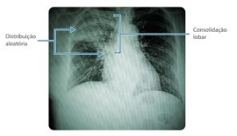
A Necrose caseosa.
B Necrose liquefativa.
C Necrose gordurosa.
D Necrose coagulativa.
E Necrose fibrinoide.
Questão 766 · Embriologia do Sistema Respiratório · 4000200402As pregas pleuropericárdicas são estruturas anatômicas que surgem na parede do embrião. Em relação à sua função, assinale a alternativa incorreta:
A Definem a cavidade pericárdica
B Isolam a cavidade pleural
C São responsáveis por definir as cavidades torácica e abdominal
D Surgem na 5ª semana de embriogênese
E Fundem-se com a parede do intestino primitivo
Questão 767 · Anatomia do Sistema Respiratório · 4000200401O controle da função respiratória é altamente dependente da inervação adequada do diafragma. Com relação à inervação do diafragma, identifique a afirmação que não é verdadeira:
A O nervo frênico é o principal responsável pela inervação motora do diafragma.
B Os nervos intercostais também desempenham um papel na inervação do diafragma.
C A inervação simpática do diafragma ocorre através do plexo celíaco.
D A lesão do nervo frênico pode resultar em uma diminuição da função diafragmática.
E A porção central do diafragma recebe inervação sensitiva pelos nervos frênicos.
Questão 768 · Anatomia do Sistema Respiratório · 4000200400A pleura visceral é uma camada na de tecido que reveste os pulmões e é responsável por evitar o contato físico entre os pulmões e a pleura parietal, formando a cavidade pleural entre essas folhas pleurais. Em relação à inervação da pleura visceral, qual das alternativas abaixo apresenta os principais nervos responsáveis?
A Nervos intercostais
B Nervos frênicos
C Nervos viscerais
D Nervo frênico e vago
E Nervos acessórios
Questão 769 · Anatomia do Sistema Respiratório · 4000200399Conhecer a inervação dos órgãos é essencial para entendermos as manifestações causadas por seu acometimento, entender a clínica de diferenciais dores musculares e abdominais. Qual das alternativas abaixo apresenta os 2 principais nervos que inervam a pleura parietal?
A Nervo frênico e nervos intercostais
B Nervo frênico e nervos viscerais
C Nervos intercostais e nervos viscerais
D Nervo frênico e nervo vago
E Nervos intercostais e nervo vago
Questão 770 · Patologia Geral · 4000200398Paciente de 38 anos, sexo feminino, obesa, evoluiu com quadro de dor em hipocôndrio direito, náuseas e vômitos, além de icterícia de caráter utuante. Com cerca de 24 horas de evolução, a dor assumiu localização em todo andar superior do abdome, com irradiação para as costas, e as náuseas e vômitos tornaram-se mais intensos. Em análise laboratorial, observou-se grande aumento de lipase e amilase sérica, o que fechou o diagnóstico de pancreatite aguda. Com cerca de 36 horas de evolução, a paciente apresentou piora importante do estado geral, e houve surgimento de equimoses em ancos e em região periumbilical, além de sinais clínicos sugestivos de peritonite difusa. Considerando o caso clínico, qual seria o padrão de necrose tecidual esperado caso o peritônio da paciente fosse submetido a um estudo anatomopatológico?
A Necrose caseosa.
B Necrose liquefativa.
C Necrose gordurosa.
D Necrose coagulativa.
E Necrose fibrinoide.
Questão 771 · Anatomia do Sistema Respiratório · 4000200397A pleura parietal é uma camada de tecido que reveste a superfície interna da parede torácica e dos corpos vertebrais. Qual das subdivisões abaixo não faz parte da pleura parietal?
A Pleura costovertebral
B Pleura diafragmática
C Pleura pulmonar
D Pleura cervical
E Pleura mediastinal
Questão 772 · Anatomia do Sistema Respiratório · 4000200396Na intrincada estrutura da anatomia pulmonar, o entendimento da sequência de passagem do ar é essencial. Nesse contexto, qual alternativa corresponde corretamente à subdivisão dos bronquíolos respiratórios?
A Ductos alveolares
B Brônquios segmentares
C Bronquíolos terminais
D Alvéolos
E Bronquíolos primários
Questão 773 · Patologia Geral · 4000200395Paciente do sexo masculino, 43 anos, tabagista e morador de área livre, comparece a consulta de pronto atendimento referindo que há 3 semanas iniciou quadro de tosse produtiva, febre baixa no nal da tarde e sudorese noturna. Além disso, notou que perdeu alguns quilos. Realizou-se radiografia de tórax, que evidenciou o seguinte aspecto: Fonte da imagem: apostila de tuberculose do Estratégia MED. Considerando o caso clínico, qual seria o padrão de necrose tecidual esperado caso o pulmão do paciente fosse submetido a um estudo anatomopatológico?

A Necrose caseosa.
B Necrose liquefativa.
C Necrose gordurosa.
D Necrose coagulativa.
E Necrose fibrinoide.
Questão 774 · Anatomia do Sistema Respiratório · 4000200394Conhecendo a anatomia pulmonar, marque a alternativa qual é o caminho completo da passagem de ar do mais proximal para o mais distal na anatomia pulmonar:
A Traqueia > Brônquio principal > Brônquios lobares > Brônquios segmentares > Bronquíolos terminais > Bronquíolos Respiratórios> Ductos alveolares > Sacos Alveolares
B Brônquios lobares > Traqueia > Brônquio principal > Ductos alveolares > Bronquíolos terminais > Sacos Alveolares > Bronquíolos Respiratórios
C Traqueia > Brônquios lobares> Brônquios Segmentares> Brônquios segmentares > Bronquíolos terminais > Bronquíolos Respiratórios> Sacos Alveolares > Ductos alveolares
D Brônquio principal > Traqueia > Brônquios lobares > Brônquios segmentares > Ductos alveolares > Bronquíolos terminais > Sacos Alveolares
E Traqueia > Brônquio principal > Ductos alveolares > Brônquios lobares > Bronquíolos terminais > Sacos Alveolares
Questão 775 · Anatomia do Sistema Respiratório · 4000200393Conhecer aspectos anatômicos nos pode ser muito útil no raciocínio clínico, especialmente a anatomia comparativa. Por que a broncoaspiração ou a aspiração de corpos estranhos (como uma criança que aspirou um pequeno brinquedo ou parte dele) é mais comum no pulmão direito que no esquerdo?
A Devido ao tamanho maior do pulmão direito
B Devido à posição mais elevada do pulmão direito
C Devido ao trajeto mais curto e vertical do brônquio direito
D Devido à presença da incisura cardíaca no pulmão esquerdo
E Devido à presença de mais lobos no pulmão direito
Questão 776 · Anatomia do Sistema Respiratório · 4000200392A anatomia dos pulmões é essencial para conhecermos a siologia respiratória, e entendermos exames de imagem. Há particularidades especí cas entre o pulmão direito e o esquerdo a que devemos nos atentar. Em relação às diferenças entre pulmão esquerdo e direito, assinale a alternativa incorreta:
A O pulmão esquerdo possui 2 lobos e uma fissura oblíqua
B O pulmão direito possui 3 lobos e duas fissuras (horizontal e oblíqu
C O pulmão esquerdo possui menos lobos do que o pulmão direito
D O pulmão direito é maior e mais pesado que o esquerdo, mas é mais curto e largo devido a elevação da cúpula diafragmática direita.
E A artéria pulmonar, responsável por levar sangue desoxigenado aos pulmões, é maior em seu comprimento no lado esquerdo que no lado direito.
Revisar: possível letra faltando em enunciado
Questão 777 · Patologia Geral · 4000200391Paciente do sexo masculino, 61 anos, tabagista de longa data e obeso, dá entrada no pronto-socorro com queixa de dor no peito, sudorese, parestesia em membros superiores e náuseas iniciados há cerca de 90 minutos. Foi diagnosticado com infarto agudo do miocárdio e submetido a terapia de reperfusão. Cerca de uma semana após o episódio, realizou um estudo eletrocardiográfico que evidenciou áreas de inatividade miocárdica. Caso a área acometida do coração do paciente fosse submetida a um estudo anatomopatológico, qual padrão de necrose tecidual esperaríamos encontrar?
A Necrose caseosa.
B Necrose liquefativa.
C Necrose gordurosa.
D Necrose coagulativa.
E Necrose fibrinoide.
Questão 778 · Anatomia do Sistema Respiratório · 4000200390Em relação às diferenças entre os pulmões esquerdo e direito, qual das alternativas abaixo está correta?
A O pulmão esquerdo possui 3 lobos e duas fissuras, enquanto o direito possui 2 lobos e uma fissura
B A fissura horizontal no pulmão direito separa o lobo superior do lobo inferior
C O pulmão esquerdo apresenta uma estrutura chamada incisura cardíaca, onde está localizada a língula
D O pulmão direito é menor e mais leve que o esquerdo devido à sua posição mais elevada na caixa torácica
E O pulmão esquerdo não possui em sua estrutura nenhuma impressão gerado por outro órgão ou resquício do lobo médio
Questão 779 · Anatomia do Sistema Respiratório · 4000200389A hilo pulmonar é a região onde as artérias pulmonares e veias pulmonares se unem para formar o tronco pulmonar, além de ser onde se encontram diversas importantes estruturas torácicas. Essa região é importante para o uxo sanguíneo pulmonar e para a identi cação de doenças como tromboembolismo pulmonar e estenose pulmonar. Em relação ao hilo pulmonar, qual das seguintes estruturas é encontrada na região?
A Aorta
B Artéria coronária
C Veia cava superior
D Artéria brônquica
E Veia Cava inferior
Questão 780 · Anatomia do Sistema Respiratório · 4000200388Os vasos sanguíneos são responsáveis por transportar o sangue para todo o corpo, levando oxigênio e nutrientes para as células e removendo o dióxido de carbono e outros resíduos. É importante conhecer os nomes e funções dos vasos sanguíneos para entender como o sangue circula pelo corpo e como isso afeta a saúde. Quais vasos sanguíneos levam sangue com baixo teor de oxigênio para os pulmões?
A Veia pulmonar
B Aorta
C Canal arterial
D Arteria pulmonar
E Brônquio direito
Questão 781 · Patologia Geral · 4000200387É sabido que, diante de um quadro de lesão celular por qualquer agente que seja, uma série de alterações bioquímicas e morfológicas instala-se na célula. Quando a lesão se torna irreversível, há evolução para morte celular. Dentre os itens estruturais e funcionais a seguir, qual é o primeiro a ser alterado num quadro de lesão celular?
A Morfologia macroscópica.
B Equilíbrio bioquímico celular.
C Ultraestrutura celular.
D Morfologia microscópica.
E Função celular.
Questão 782 · Anatomia do Sistema Respiratório · 4000200386Conhecer as subdivisões dos conteúdos torácicos é importante para um médico, pois elas podem afetar a identi cação e tratamento de doenças pulmonares, como pneumonias, derrames pleurais e câncer de pulmão. A camada interna que envolve o pulmão em si é chamada de?
A pleura parietal
B pleura visceral
C pleura peripulmonar
D brônquios
E cavidade pleural
Questão 783 · Anatomia do Sistema Respiratório · 4000200385A anatomia da pleural é essencial para conhecermos a siologia respiratória e em cirurgia torácica, principalmente suas relações com os demais órgãos. Em relação às estruturas do sistema respiratório, assinale a alternativa incorreta:
A A pleura é uma membrana dupla que envolve os pulmões.
B A pleura parietal é adjacente à caixa torácica.
C A cavidade pleural é delimitada pela pleura parietal.
D A traqueia é formada por 16-20 anéis cartilaginosos e está na cavidade pleuropulmonar.
E A traqueia se bifurca no ângulo esternal, na região de transição mediastino superior e médio, antes de adentrar na cavidade pleuropulmonar.
Questão 784 · Patologia Geral · 4000200384Ao sair da aula de patologia na faculdade, Leonardo e João Paulo perceberam que se distraíram no celular durante a explicação do processo de morte celular. Então, começaram a discutir: Leonardo: intracelular para o meio extracelular e deixando a bagunça para o sistema imunológico limpar através de um processo inflamatório. E necrose não tem inflamação, tenho certeza! João Paulo: Nesse momento, os dois se viram para você e perguntam quem está certo. Você, que estava sem bateria no celular e foi obrigado a prestar atenção na aula inteira, responde que:
A João está certo, pois necrose e apoptose tem o mesmo significado teórico e prático.
B Leonardo está certo, pois trouxe a definição de apoptose. João está errado, pois necrose e apoptose são processos distintos de morte celular.
C Leonardo está errado, pois descreveu a apoptose citando as características da necrose. João também está errado, pois necrose e apoptose são processos distintos.
D Ambos estão certos, pois a definição de apoptose trazida por Leonardo também pode ser usada para descrever a necrose, que são sinônimos na prática.
E Leonardo está errado somente ao afirmar que há um processo inflamatório na apoptose. João também está errado, pois necrose e apoptose são processos distintos.
Questão 785 · Patologia Geral · 4000200383Paciente do sexo masculino, 61 anos, tabagista de longa data e obeso, dá entrada no pronto-socorro com queixa de dor no peito, sudorese, parestesia em membros superiores e náuseas iniciados há cerca de 50 minutos. A dor iniciou após o almoço com a família, em uma festa. Rapidamente, a equipe de atendimento realizou um eletrocardiograma e, ao interpretá-lo, deu o diagnóstico de um infarto agudo do miocárdio transmural de lesão celular citadas a seguir, qual é que mais se relaciona com o quadro atual do paciente?
A Lesão por privação de oxigênio, por isquemia.
B Lesão por agente físico, por obstrução mecânica da artéria coronária.
C Lesão por agente químico, devido ao tabagismo.
D Lesão por reação imunológica, devido à inflamação intensa e descoordenada no coração.
E Lesão por desequilíbrio nutricional, devido à refeição em excesso e à obesidade.
Questão 786 · Patologia Geral · 4000200382A metaplasia é uma alteração reversível na qual uma célula já diferenciada assume outro fenótipo. Geralmente, ocorre em situações em que há um estresse crônico imposto sobre determinado tipo celular, que se vê obrigada a se tornar mais resistente através de modi cações fenotípicas. Um exemplo clássico de metaplasia ocorre nas vias respiratórias (traqueia e brônquios) de pacientes tabagistas, em que:
A O epitélio escamoso estratificado nativo é substituído por um epitélio colunar ciliado, que é mais eficiente na depuração da fuligem inalada durante o ato de fumar, facilitando a higiene das vias aéreas.
B O epitélio escamoso estratificado nativo é substituído por um epitélio cúbico, que é mais eficiente na depuração da fuligem inalada durante o ato de fumar, facilitando a higiene das vias aéreas.
C O epitélio colunar ciliado nativo é substituído por um epitélio escamoso estratificado que, apesar de ser mais resistente à agressão da fumaça do cigarro, tem menor capacidade de depuração mucociliar.
D O epitélio colunar ciliado nativo é substituído por um epitélio cilíndrico simples, no intuito de aumentar a produção de muco e facilitar a higiene das vias aéreas.
E O epitélio cúbico nativo é substituído por um epitélio colunar ciliado, que é o mais resistente contra a agressão direta promovida pela fumaça do cigarro.
Questão 787 · Patologia Geral · 4000200381Aos 56 anos, um paciente buscou atendimento médico com queixa de perda de peso progressiva, dor abdominal e náuseas intermitentes há cerca de 3 meses. Em investigação, foi diagnosticado com um carcinoma hepatocelular no lobo hepático esquerdo devido a uma infecção pelo vírus da hepatite B. Por preencher os critérios de indicação para o tratamento, foi submetido a uma hepatectomia esquerda, e considerado curado da neoplasia. Preocupado com a “perda” de boa porção de seu fígado, o paciente questiona se ele terá algum problema com o funcionamento do órgão devido à redução do tamanho. O médico responde que, a longo prazo:
A O paciente terá sintomas sugestivos de insuficiência hepática, devido ao processo de atrofia que ocorrerá no tecido remanescente do fígado.
B O paciente terá sintomas sugestivos de insuficiência hepática, devido ao processo de metaplasia que ocorrerá no tecido remanescente do fígado.
C O paciente não deve se preocupar, pois o tecido hepático remanescente é capaz de passar por um processo de hiperplasia e hipertrofia, compensando a função do segmento ressecado.
D O paciente não deve se preocupar, pois o tecido hepático remanescente é capaz de passar por um processo de displasia, compensando a função do segmento ressecado.
E O paciente terá sintomas sugestivos de insuficiência hepática, devido ao processo de hipertrofia que ocorrerá no tecido remanescente do fígado.
Questão 788 · Patologia Geral · 4000200380Uma paciente de 23 anos busca atendimento na Unidade Básica de Saúde com queixa de “verrugas” na região genital. Refere que as lesões surgiram há cerca de 3 semanas e estão aumentando progressivamente. Ao exame físico, observamos o seguinte achado: Fonte da imagem: apostila de doenças da vulva e vagina da prof.ª Monalisa (Estratégia MED). Em investigação, evidenciou-se que a paciente era portadora do HPV (papilomavírus humano). Considerando seus conhecimentos sobre mecanismos de adaptação celular, qual processo ocorreu no epitélio da vulva desta paciente?

A Hiperplasia patológica.
B Atrofia fisiológica.
C Atrofia patológica.
D Metaplasia.
E Hiperplasia fisiológica.
Questão 789 · Patologia Geral · 4000200379Uma paciente de 56 anos comparece a consulta de rotina na Unidade Básica de Saúde referindo que está com di culdades durante as relações sexuais com o seu novo parceiro, pois sente que sua vagina está “muito seca” e sente dor durante a penetração. Alega que sua última menstruação aconteceu há 3 anos. Correlacionando esse caso clínico e seus conhecimentos sobre adaptação celular, o que provavelmente ocorreu no epitélio vaginal dessa paciente pode ser considerado uma:
A Hipertrofia.
B Atrofia fisiológica.
C Atrofia patológica.
D Metaplasia.
E Hiperplasia.
Questão 790 · Patologia Geral · 4000200378Uma paciente de 64 anos, diabética e hipertensa não controlada, foi infectada pela Covid-19 e desenvolveu um quadro bastante grave, sendo necessária ventilação mecânica e internação em UTI, onde permaneceu intubada por 22 dias. Quando a equipe da UTI percebeu que a paciente estava melhorando, foi realizado o teste da respiração espontânea. No entanto, ao ser extubada, rapidamente a paciente evoluiu com di culdade para respirar, e acabou tendo que ser intubada novamente. Qual foi o principal mecanismo de adaptação celular na musculatura respiratória da paciente que ocasionou essa di culdade em respirar sem ajuda do ventilador mecânico?
A Hipertrofia.
B Atrofia fisiológica.
C Hiperplasia.
D Metaplasia.
E Atrofia patológica.
Questão 791 · Patologia Geral · 4000200377Um homem de 46 anos, obeso e tabagista, procura atendimento na Unidade Básica de Saúde referindo sensação de queimação na “boca do estômago” e gosto amargo na boca há alguns meses. O médico, então, solicitou uma endoscopia digestiva alta para avaliar como estava o esôfago e o estômago do paciente. Durante a realização do exame, foi constatada a seguinte visão na transição entre o estômago e o esôfago: Fonte da imagem: apostila de DRGE do Prof. Elio Castro (Estratégia MED). O endoscopista, notando a alteração, realizou uma biópsia do tecido do esôfago e constatou que a peça apresentava, em vez do clássico epitélio escamoso esofágico, características de epitélio colunar com células caliciformes muito parecidas com a do intestino. Qual adaptação celular ocorreu neste cenário?
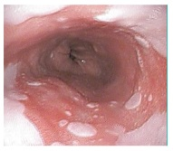
A Hipertrofia.
B Atrofia fisiológica.
C Hiperplasia.
D Metaplasia.
E Atrofia patológica.
Questão 792 · Patologia Geral · 4000200376Paciente do sexo masculino, 50 anos de idade, assintomático e previamente hígido, buscou atendimento de rotina na Unidade Básica de Saúde para “cuidar da saúde”. Durante a triagem do paciente, a equipe de enfermagem notou que o valor da pressão arterial do paciente estava em 180x110 mmHg. Assustada, a técnica de enfermagem perguntou se aquele era o valor normal da pressão do paciente e se ele tomava algum remédio para controlá-la. Ele respondeu que fazia alguns anos que a pressão sempre cava naquele valor, mas que nunca havia tomado nenhuma medicação, pois não sentia nada. Considerando os grandes níveis de pressão arterial com os quais o coração do paciente tem que lidar, qual adaptação celular é esperada caso seja feito um estudo anatomopatológico deste miocárdio?
A Hipertrofia.
B Atrofia.
C Hiperplasia.
D Metaplasia.
E Necrose.
Questão 793 · Parasitologia · 4000200375A ancilostomíase é uma das parasitoses intestinais mais prevalentes do mundo: estima-se que mais de 1 bilhão de pessoas apresentem esses parasitas em seus intestinos, mesmo que de forma assintomática. Sabe-se que é uma doença muito relacionada a baixos níveis socioeconômicos e maus hábitos de higiene, endêmica em algumas regiões do globo. Sobre as medidas de combate à ancilostomíase, assinale a alternativa correta.
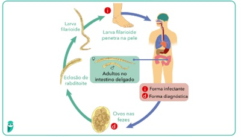
A Uma das medidas mais eficazes de combate a essa parasitose consiste no uso de telas e mosquiteiros que impeçam a inoculação das larvas infectantes no hospedeiro humano, que ocorre por meio da picada de mosquitos flebotomíneos.
B Não ingerir vegetais que não foram adequadamente lavados, água que não foi fervida ou filtrada, bem como carnes cruas e mal passadas, são as medidas mais eficazes de prevenir a infecção pelo parasita.
C Campanhas de conscientização quanto à lavagem adequada das mãos antes das refeições consistem em uma forma eficiente de combate à doença.
D A vacinação mostrou-se como uma das ferramentas mais eficazes na prevenção da doença.
E A utilização de calçados evita a exposição da pele ao solo contaminado por larvas filarioides de ancilostomídeos, sendo uma medida eficaz de combate à doença. Além disso, o tratamento e descarte adequados do esgoto também são fundamentais para evitar a transmissão.
Questão 794 · Parasitologia · 4000200374Paciente de 4 anos de idade é levado até a Unidade Básica de Saúde pela mãe, que relata aparecimento de lesões pruriginosas na região plantar dos pés e em nádegas. Refere que, cerca de 12 dias depois do aparecimento das lesões pruriginosas, a criança passou a apresentar tosse seca e evoluiu com náuseas e perda do apetite nos dias seguintes. A mãe ainda a rma que a criança tem o hábito de brincar de pés descalços no quintal de casa e na rua. Diante do caso, foi solicitado o exame parasitológico de fezes, que confirmou o diagnóstico de ancilostomíase. A respeito dos principais agentes etiológicos e da forma de transmissão da doença, assinale a alternativa correta.
A No Brasil, os principais agentes etiológicos são
B Necator americanus
C Os principais agentes etiológicos da ancilostomíase são
D Necator americanus
E Necator americanus
Questão 795 · Parasitologia · 4000200373A ancilostomíase é uma parasitose intestinal muito frequente em nosso meio e, apesar de ser assintomática em boa parte dos casos, quando associada à dé cits nutricionais preexistentes e a maus hábitos de higiene, podemos encontrar infecções maciças. Clinicamente, essas infecções maciças podem se traduzir em quadros de anemia, desconforto abdominal, náuseas, vômitos, perda de apetite, cansaço e até mesmo pneumonia eosinofílica. Sobre essa parasitose, assinale a alternativa incorreta.
A A infecção por
B O diagnóstico da ancilostomíase é estabelecido laboratorialmente a partir de exame de fezes pelo método de Willis, realizando-se a identificação dos ovos de ancilostomídeos.
C A infecção por ancilostomídeos ocorre a partir do contato da pele do hospedeiro humano com o solo contaminado por larvas rabditoides, as quais penetram na pele e atingem a circulação linfática e/ou sanguínea.
D O mebendazol é a medicação de primeira escolha para o tratamento da ancilostomíase.
E O uso de calçados, a destinação e o tratamento adequado das excretas, bem como o combate às larvas no solo, são medidas profiláticas eficazes para evitar a infecção por ancilostomídeos.
Questão 796 · Parasitologia · 4000200372Em relação à infecção e os principais sinais e sintomas da ancilostomíase, doença provocada por nematelmintos como americanus
A Apesar da pele dos pés ser o ponto de penetração mais frequente para as larvas infectantes de ancilostomídeos, qualquer área cutânea em contato com o solo contaminado pode propiciar a invasão, como mãos, pernas e nádegas.
B No período de invasão cutânea, são frequentes as erupções papuloeritematosas, edemas e um quadro de dermatite alérgica desencadeada pela presença das larvas filarioides na pele.
C Apesar da possibilidade de ocorrer a síndrome de
D Em casos de infecções maciças por ancilostomídeos, é possível que a perda sanguínea provocada pelo parasitismo intestinal, somada à déficits nutricionais, acarrete anemia hipocrômica e microcítica.
E Mal-estar abdominal, especialmente em região epigástrica, anorexia, náuseas, vômitos, febre e perda de peso são parte do quadro clínico que pode ocorrer entre a terceira e a quinta semana de infecção, especialmente quando a carga parasitária adquirida for grande.
Questão 797 · Parasitologia · 4000200371Popularmente conhecida como “amarelão”, a ancilostomíase é uma doença provocada por algumas espécies de nematoides que pertencem à família dos ancilostomídeos. Estima-se que mais de 1 bilhão de pessoas no mundo estejam infectadas por esses vermes, especialmente em países com menores índices socioeconômicos, como o Brasil. A respeito dessa parasitose, assinale a alternativa correta.
A Os principais agentes etiológicos da ancilostomose são
B O contato direto da pele do hospedeiro com o solo contaminado é a principal forma de transmissão da ancilostomíase. Nesses casos, o parasita é encontrado no solo em seu terceiro estágio e só consegue atingir a maturidade sexual após penetrar na pele do hospedeiro, realizar o ciclo pulmonar e alcançar o intestino delgado, onde se fixa através da sua peça bucal.
C A principal forma de infecção por esses parasitas ocorre pela ingestão de água e alimentos contaminados, quando são deglutidos em seu terceiro estágio e passam pelas próximas fases de evolução na luz do tubo digestivo, sem fazer ciclo pulmonar. A infecção por contato direto da pele do hospedeiro com o solo contaminado é menos prevalente.
D Assim como Ascaris lumbricoides,
E Os vermes adultos parasitam seres humanos apenas nas porções altas do intestino delgado, após a papila de Vater; por isso, não é possível os encontrar após esse segmento, dada a impossibilidade de adesão das suas peças bucais à parede do íleo e do ceco, por exemplo.
Questão 798 · Parasitologia · 4000200370Janaína tem 35 anos e compareceu à Unidade Básica de Saúde a rmando categoricamente que está “com verme”. Ela relata que tem se sentido mais cansada e desanimada e que, olhando-se no espelho, considerou que estava com a pele mais pálida. Nega outros sintomas. Ao exame físico, o único achado é o das mucosas conjuntivais hipocoradas 1+/4+. Você, um exímio estudante de Medicina, reporta-se ao preceptor após o exame clínico. O preceptor, tentando te pegar na curva, faz a seguinte pergunta: “Considerando que ela, de fato, apresente uma parasitose intestinal, qual destas histórias epidemiológicas falaria mais a favor de esquistossomose?”.
A Residente de casa de pau a pique.
B Possui um gato de cerca de 2 meses de idade.
C Almoça todos os dias em um restaurante por quilo.
D Não possui telas de proteção para mosquitos em sua janela.
E Tem o hábito de nadar no lago de seu bairro.
Questão 799 · Parasitologia · 4000200369O secretário de saúde de uma pequena cidade do interior de Pernambuco notou um aumento na incidência de esquistossomose no último ano. Dessa forma, reuniu-se com sua equipe para discutir medidas preventivas na tentativa de reduzir a incidência dessa patologia no ano seguinte. Assinale a alternativa que melhor sumariza uma medida combativa adequada que poderia ser adotada pelo secretário de saúde.
A Campanhas de conscientização em escolas para lavagem correta das mãos antes das refeições.
B Combate aos mosquitos
C Fiscalização em restaurantes para higienização correta dos vegetais.
D Investimento em saneamento básico e desencorajamento de recreação em lagos potencialmente contaminados.
E Fiscalização em abatedouros bovinos e suínos para inspeção da presença de cisticercos na carne.
Questão 800 · Parasitologia · 4000200368Cláudio tem 46 anos e é levado ao pronto-socorro pela família porque está “vomitando sangue” há três horas. Ao exame físico abdominal, nota-se esplenomegalia, ascite volumosa e circulação colateral. Cláudio precisou ser entubado, pois havia muito sangue em suas vias aéreas superiores. Após estabilização inicial, o plantonista dirigiu-se para a esposa do paciente para complementar a anamnese. A mulher relata que eles residem ao lado de um despejo de esgoto há cerca de 10 anos e que o marido sempre entra na água para vasculhar a presença de objetos de potencial valor, pois, certa vez, um vizinho encontrou uma pepita de ouro em um dos mergulhos. Nega tabagismo ou etilismo. Acerca do quadro apresentado, pode-se afirmar que se trata de infecção por:
A Ancylostoma duodenale.
B Strongyloides stercoralis.
C Toxocara canis.
D Ascaris lumbricoides.
E Schistosoma mansoni.
Questão 801 · Parasitologia · 4000200367A esquistossomose é uma parasitose causada pelo baixo nível socioeconômico e a condições precárias de saneamento básico, consistindo num grande problema de saúde pública. Tendo em mente os mecanismos de transmissão dessa doença, pode-se afirmar que a transmissão ocorre:
A por meio da ingestão de ovos do parasita, presentes nas fezes do hospedeiro definitivo, sobretudo quando contaminam água e vegetais.
B devido à penetração da larva cercária em fontes d’água, como rios e lagos em que há a presença de caramujos contaminados pelo helminto.
C a partir do contato direto com fezes de animais, nas quais estão presentes a larva do helminto, o esporocisto, que penetra ativamente na pele de pés e mãos, sobretudo em crianças.
D pela ingestão de cistos teciduais do verme presentes em carne mal passada.
E com a penetração ativa do miracídio, larva eliminada pelo molusco do gênero Biomphalaria, presente em água doce ou salgada contaminadas pelo helminto.
Questão 802 · Parasitologia · 4000200366Bianca tem 9 anos e foi levada à Unidade Básica de Saúde de seu bairro pela mãe, que relata surgimento de lesões eritematosas e pruriginosas em ambos os membros inferiores, bem como na barriga de sua lha. Cita que, na tarde anterior, foi a um córrego naquele mesmo bairro e entrou na água juntamente a outras crianças, iniciando o quadro de prurido naquela mesma noite. Acerca da parasitose em questão, assinale a alternativa correta.
A O miracídio é a forma infectante do homem nessa patologia, que eclode na água após sua eliminação pelo molusco do gênero Biomphalaria e busca ativamente penetrar na pele humana.
B Trata-se da sintomatologia inicial da infecção por Necator americanus, a qual também pode ser adquirida por meio de penetração ativa da larva na sola dos pés ao andar descalço em terrenos com fezes de animais.
C A forma infectante desse helminto é a cercária, que eclode na água a partir de ovos do verme adulto eliminados nas fezes humanas. Essa patologia é um típico exemplo de transmissão por ciclo fecal-oral.
D A forma adulta do helminto, que apresenta dimorfismo sexual, sofre maturação no sistema porta intra-hepático e, antes mesmo dessa maturação, já pode ocasionar sintomas, como febre, eosinofilia e urticária.
E A oviposição dos vermes costuma ocorrer ainda no sistema porta, ao redor da segunda semana após a exposição infectante, com posterior migração para vasos menos calibrosos.
Questão 803 · Metodologia Científ ica · 4000200365Um ensaio clínico é projetado para estudar o efeito de um novo medicamento para tratar o câncer de pulmão pequenas células. No entanto, os participantes que têm um prognóstico pior são mais propensos a serem designados para o grupo do novo medicamento. Que tipo de viés isso pode introduzir?
A Viés de seleção
B Viés de confusão
C Viés de medição
D Viés de informação
Questão 804 · Metodologia Científ ica · 4000200364Em um estudo para avaliar a e cácia de um novo medicamento para hipertensão, alguns pacientes deixam tomar a medicação, enquanto outros a mantêm. Os pesquisadores percebem que há diferenças entre os dois grupos. Que tipo de viés está ocorrendo?
A Viés de aderência
B Viés de seleção
C Viés de medição
D Viés de informação
Questão 805 · Metodologia Científ ica · 4000200363Em um ensaio clínico, os pesquisadores que medem o desfecho do estudo sabem qual grupo de tratamento o paciente foi designado. Que tipo de viés isso pode introduzir?
A Viés de informação
B Viés do observador
C Viés de seleção
D Viés de desistência
Questão 806 · Metodologia Científ ica · 4000200362Os resultados de um ensaio clínico para um novo tratamento de asma são publicados porque mostram uma melhoria significativa nos sintomas. No entanto, vários outros ensaios semelhantes que não mostraram benefício significativo não são publicados. Que tipo de viés isso representa?
A Viés de publicação
B Viés de seleção
C Viés de medição
D Viés de desistência
Questão 807 · Metodologia Científ ica · 4000200361Em um ensaio clínico de um novo medicamento para insônia, os pacientes que não estão experimentando melhorias são mais propensos a abandonar o estudo. Que tipo de viés isso pode introduzir?
A Viés de seleção
B Viés de desistência
C Viés de medição
D Viés de informação
Questão 808 · Metodologia Científ ica · 4000200360Em um ensaio clínico que avalia o efeito de um suplemento nutricional na prevenção da doença de Alzheimer, os pesquisadores descobrem que aqueles participantes com uma dieta mais saudável são mais propensos a tomar o suplemento de forma consistente. Que tipo de viés isso pode introduzir?
A Viés de confusão
B Viés de seleção
C Viés de medição
D Viés de publicação
Questão 809 · Metodologia Científ ica · 4000200359Em um ensaio clínico para um novo medicamento para perda de peso, os pesquisadores percebem que os participantes que estão recebendo o medicamento estão relatando maior perda de peso, mesmo quando seus registros alimentares e de exercícios não mudaram. Que tipo de viés isso poderia ser?
A Viés de medição
B Viés do observador
C Viés de placebo
D Viés de resposta
Questão 810 · Metodologia Científ ica · 4000200358Um ensaio clínico está sendo realizado para testar um novo medicamento para tratar a dor de cabeça. No entanto, os pesquisadores notam que mais mulheres estão se inscrevendo para o estudo do que homens. Que tipo de viés isso poderia introduzir no estudo?
A Viés de seleção
B Viés de confusão
C Viés de informação
D Viés de publicação
Questão 811 · Metodologia Científ ica · 4000200357Qual das seguintes afirmações é verdadeira sobre o uso de placebo em ensaios clínicos?
A O uso de placebo é sempre necessário para garantir a validade de um ensaio clínico.
B O uso de placebo é eticamente aceitável quando não há tratamento eficaz conhecido para a condição que está sendo estudada.
C O uso de placebo é eticamente aceitável mesmo quando há um tratamento eficaz conhecido para a condição que está sendo estudada.
D O uso de placebo é sempre contraproducente porque aumenta o efeito nocebo.
Questão 812 · Metodologia Científ ica · 4000200356Em um ensaio clínico, o que é o "braço" de um estudo?
A O grupo de participantes que não recebe nenhum tratamento.
B O grupo de participantes que recebe o tratamento experimental.
C Um subgrupo de participantes designado para receber um determinado tratamento ou intervenção.
D O grupo de participantes que recebe um placebo.
Questão 813 · Metodologia Científ ica · 4000200355Qual é a principal vantagem de um ensaio clínico controlado randomizado em relação a outros desenhos de estudos?
A É o melhor desenho de estudo para estabelecer a causalidade.
B É o desenho de estudo mais fácil e rápido de conduzir.
C É o desenho de estudo mais adequado para o estudo de doenças raras.
D É o desenho de estudo que exige o menor número de participantes.
Questão 814 · Metodologia Científ ica · 4000200354A validade externa de um ensaio clínico refere-se a qual das seguintes características?
A A extensão em que os resultados do estudo podem ser generalizados para populações externas ao estudo.
B A extensão em que o desenho do estudo e sua condução evitam vieses sistemáticos.
C A extensão em que o estudo foi capaz de detectar uma diferença estatisticamente significativa, se ela existir.
D A extensão em que o estudo foi capaz de avaliar a eficácia do tratamento em um ambiente de vida real.
Questão 815 · Metodologia Científ ica · 4000200353A validade interna de um ensaio clínico refere-se a qual das seguintes características?
A A extensão em que os resultados do estudo podem ser generalizados para populações externas ao estudo.
B A extensão em que o desenho do estudo e sua condução evitam vieses sistemáticos.
C A extensão em que o estudo foi capaz de detectar uma diferença estatisticamente significativa, se ela existir.
D A extensão em que o estudo foi capaz de avaliar a eficácia do tratamento em um ambiente de vida real.
Questão 816 · Metodologia Científ ica · 4000200352O que significa NNT em um ensaio clínico?
A Número necessário para tratar para beneficiar um paciente.
B Número necessário para testar para validar um resultado.
C Número necessário para treinar para capacitar um pesquisador.
D Número necessário para transferir para generalizar um resultado.
Questão 817 · Metodologia Científ ica · 4000200351Qual é a diferença entre o efeito placebo e o efeito nocebo em ensaios clínicos?
A O efeito placebo refere-se a uma melhora na condição de um paciente devido à sua crença de que está recebendo tratamento, enquanto o efeito nocebo refere-se a uma piora na condição de um paciente devido ao tratamento.
B O efeito placebo refere-se a uma melhora na condição de um paciente devido à sua crença de que não está recebendo tratamento, enquanto o efeito nocebo refere-se a uma piora na condição de um paciente devido à sua crença de que está recebendo tratamento.
C O efeito placebo refere-se a efeitos colaterais de um medicamento, enquanto o efeito nocebo refere-se a uma melhora na condição de um paciente devido à sua crença de que está recebendo tratamento.
D O efeito placebo refere-se a uma melhora na condição de um paciente devido à sua crença de que está recebendo tratamento, enquanto o efeito nocebo refere-se a efeitos colaterais de um medicamento.
Questão 818 · Metodologia Científ ica · 4000200350Qual é a diferença entre um desfecho clínico e um desfecho substituto em um ensaio clínico?
A Um desfecho clínico mede a percepção do paciente, enquanto um desfecho substituto mede resultados objetivos.
B Um desfecho clínico é diretamente significativo para o paciente, enquanto um desfecho substituto é uma medida indireta de efeito.
C Um desfecho clínico é usado em estudos observacionais, enquanto um desfecho substituto é usado em ensaios clínicos.
D Um desfecho clínico é usado em ensaios clínicos, enquanto um desfecho substituto é usado em estudos observacionais.
Questão 819 · Metodologia Científ ica · 4000200349O que se entende por "cegamento" em um ensaio clínico?
A Restringir a divulgação dos resultados do estudo até que esteja completo.
B Garantir que os participantes e/ou pesquisadores não saibam qual tratamento (se houver) o participante está recebendo.
C Limitar o número de tratamentos que estão sendo testados no estudo.
D Garantir que todos os participantes recebam o mesmo tratamento.
Questão 820 · Metodologia Científ ica · 4000200348Qual das seguintes opções é uma razão comum para a randomização em ensaios clínicos?
A Aumentar o número de participantes no estudo.
B Reduzir o viés na atribuição dos participantes aos grupos de tratamento.
C Aumentar a validade externa do estudo.
D Eliminar a necessidade de cegamento.
Questão 821 · Metodologia Científ ica · 4000200347Um estudo de coorte é iniciado com dois grupos: um grupo exposto a um determinado fator de risco e um grupo não exposto. Ambos os grupos são então acompanhados ao longo do tempo para determinar a incidência de uma doença. Qual das seguintes afirmações é verdadeira sobre os estudos de coorte?
A Eles são úteis para estabelecer correlação, mas não causalidade.
B Eles são comumente usados para estudar a história natural de uma doença.
C Eles são geralmente rápidos e econômicos para conduzir.
D Eles são especialmente úteis para estudar doenças muito raras.
Questão 822 · Metodologia Científ ica · 4000200346Qual é a principal limitação dos estudos transversais?
A Não podem ser usados para estudar doenças raras.
B Não podem determinar a causalidade por causa de sua natureza de "instantâneo".
C Não podem ser usados para estudar populações grandes.
D Não podem ser usados para coletar dados longitudinais.
Questão 823 · Metodologia Científ ica · 4000200345Em um estudo, os pesquisadores estão comparando o histórico de exposição a um fator de risco entre um grupo de indivíduos com uma determinada doença (casos) e um grupo sem a doença (controles). Que tipo de estudo eles estão conduzindo?
A Estudo de caso-controle
B Estudo de coorte
C Estudo transversal
D Série temporal
Questão 824 · Metodologia Científ ica · 4000200344Um pesquisador está analisando a taxa de mortalidade por doenças cardíacas em um país ao longo de 50 anos. Que tipo de estudo ele está conduzindo?
A Série temporal
B Estudo de caso-controle
C Estudo de coorte
D Estudo ecológico
Questão 825 · Metodologia Científ ica · 4000200343Uma equipe de pesquisa reúne casos similares de uma condição rara de um hospital. O objetivo é entender melhor a apresentação e o curso da doença. Que tipo de estudo está sendo conduzido?
A Série de casos
B Estudo transversal
C Estudo ecológico
D Estudo de coorte
Questão 826 · Metodologia Científ ica · 4000200342Em que tipo de estudo um pesquisador analisaria a relação entre consumo de fast-food e obesidade em uma população ao longo de 20 anos?
A Série de casos
B Série temporal
C Estudo de coorte
D Estudo de caso-controle
Questão 827 · Metodologia Científ ica · 4000200341Um grupo de pesquisadores está estudando a relação entre a densidade populacional e a taxa de infecção por COVID-19 em diferentes países. Que tipo de estudo eles estão realizando?
A Estudo de coorte
B Estudo de caso-controle
C Estudo ecológico
D Estudo transversal
Questão 828 · Metodologia Científ ica · 4000200340O que diferencia um estudo de coorte de um estudo de caso-controle?
A Em um estudo de coorte, os sujeitos são selecionados com base em sua exposição, enquanto em um estudo de caso- controle, eles são selecionados com base em seu resultado.
B Em um estudo de coorte, os sujeitos são selecionados com base em seu resultado, enquanto em um estudo de caso- controle, eles são selecionados com base em sua exposição.
C Um estudo de coorte é retrospectivo, enquanto um estudo de caso-controle é prospectivo.
D Um estudo de coorte é prospectivo, enquanto um estudo de caso-controle é retrospectivo.
Questão 829 · Metodologia Científ ica · 4000200339Uma equipe de pesquisa está interessada em entender a relação entre a exposição ao sol e a vitamina D em uma população específica. Eles coletam os dados em um único momento. Que tipo de estudo estão conduzindo?
A Estudo ecológico
B Série temporal
C Estudo transversal
D Estudo de coorte
Questão 830 · Metodologia Científ ica · 4000200338Em qual tipo de estudo um médico documentaria a apresentação, tratamento e acompanhamento de um paciente individual com uma doença rara?
A Estudo de caso-controle
B Estudo de coorte
C Relato de caso
D Estudo transversal
Questão 831 · Metodologia Científ ica · 4000200337Uma equipe de pesquisa está estudando a prevalência de diabetes em diferentes cidades. Eles coletam dados sobre a quantidade total de pessoas diagnosticadas com diabetes em cada cidade, em vez de coletar dados de cada indivíduo. Que tipo de dados a equipe está usando?
A Dados primários
B Dados secundários
C Dados individuais
D Dados agregados
Questão 832 · Metodologia Científ ica · 4000200336Um estudante de medicina está realizando uma revisão sistemática sobre os efeitos da sioterapia na recuperação pós-cirúrgica. Ele reúne e analisa vários estudos publicados sobre o assunto. Que tipo de estudo o aluno está realizando?
A Um estudo primário
B Um estudo secundário
C Um estudo analítico
D Um estudo descritivo
Questão 833 · Metodologia Científ ica · 4000200335Um pesquisador está estudando a relação entre o consumo de álcool e o desenvolvimento de doença hepática. Ele decide comparar a prevalência da doença hepática entre dois grupos: um grupo de indivíduos que consome álcool regularmente e outro que não o faz. Que tipo de estudo o pesquisador está realizando?
A Um estudo analítico
B Um estudo descritivo
C Um estudo secundário
D Um estudo com dados agregados
Questão 834 · Metodologia Científ ica · 4000200334Um estudo mostrou que pessoas que vivem em altitudes mais altas têm uma prevalência menor de doenças cardiovasculares. De acordo com o critério de "Coerência" de Bradford-Hill, como essa descoberta deve ser interpretada?
A A descoberta deve estar alinhada com o atual conhecimento científico e médico sobre doenças cardiovasculares e o efeito da altitude sobre o corpo humano.
B A descoberta deve mostrar que a exposição à altitude elevada ocorreu antes do desenvolvimento de doenças cardiovasculares.
C A descoberta deve demonstrar que quanto maior a altitude, menor a prevalência de doenças cardiovasculares.
D A descoberta deve provar que a vida em altitude elevada é a única causa de menor prevalência de doenças cardiovasculares.
Questão 835 · Metodologia Científ ica · 4000200333Com base no critério de "Plausibilidade" de Bradford-Hill, qual das seguintes opções seria o curso mais apropriado de ação para um pesquisador estudando a associação entre exposição à radiação e desenvolvimento de catarata?
A O pesquisador deve buscar evidências em estudos anteriores e teorias biológicas conhecidas que apoiem essa associação.
B O pesquisador deve provar que a exposição à radiação ocorreu antes do desenvolvimento da catarata.
C O pesquisador deve demonstrar que quanto maior a exposição à radiação, maior o risco de desenvolver catarata.
D O pesquisador deve evidenciar que a exposição à radiação é a única causa possível da catarata.
Questão 836 · Metodologia Científ ica · 4000200332Um médico está pesquisando uma possível ligação entre o consumo de uma determinada substância alimentar e o surgimento de câncer colorretal. O médico observa que há um "efeito dose-resposta" presente. De acordo com os critérios de Bradford-Hill, o que isso significa?
A O câncer colorretal é mais prevalente em pessoas que consomem a substância em questão.
B A exposição à substância alimentar ocorre antes do desenvolvimento do câncer colorretal.
C Quanto maior a ingestão da substância, maior a chance de desenvolver câncer colorretal.
D O câncer colorretal só ocorre em pessoas que consomem a substância.
Questão 837 · Metodologia Científ ica · 4000200331Uma criança foi diagnosticada com asma após ser exposta à fumaça de segunda mão em casa. Seguindo o critério de Bradford Hill para "Força da Associação", qual das seguintes opções é a melhor descrição deste critério?
A A associação é baseada em uma teoria sólida e consensuada.
B A exposição à fumaça de segunda mão gera um grande risco de desenvolver asma
C A associação é consistente e pode ser observada em diferentes estudos.
D A fumaça de segunda mão é a única causa possível da asma.
Questão 838 · Epidemiologia · 4000200330Os pesquisadores estão investigando a prevalência do uso de tabaco em uma população especí ca. Eles descobriram que 200 em 1.000 indivíduos na população são fumantes. No entanto, eles também observaram que muitos desses fumantes estão tentando parar de fumar e têm reduzido seu consumo. Neste cenário, como os pesquisadores poderiam mais adequadamente descrever a prevalência do uso de tabaco na população?
A Prevalência pontual, pois reflete o número de fumantes na população em um dado momento.
B Prevalência periódica, pois leva em conta as mudanças no comportamento de fumar ao longo do tempo.
C Prevalência de período, pois reflete o número de pessoas que fumaram durante um período específico.
D Prevalência de vida, pois leva em conta o número de pessoas que já fumaram em algum momento de suas vidas.
Revisar: possível letra faltando em enunciado
Questão 839 · Epidemiologia · 4000200329Em um estudo sobre a incidência de gripe em uma comunidade especí ca durante um ano, os pesquisadores observaram que a incidência de gripe aumentou durante os meses de inverno e diminuiu durante os meses de verão. Nesse cenário, qual conceito epidemiológico melhor explica essa observação?
A Incidência cumulativa, pois reflete o número de novos casos de uma doença que ocorre em uma população em um período de tempo.
B Prevalência, pois reflete o número total de casos de uma doença em uma população em um dado momento.
C Incidência de densidade, pois leva em conta o tempo de observação, que pode variar para cada indivíduo.
D Incidência padrão, pois reflete o número de casos de uma doença que ocorre em uma população em risco.
Revisar: possível letra faltando em enunciado
Questão 840 · Epidemiologia · 4000200328Considerando um estudo longitudinal sobre a artrite reumatoide em uma cidade especí ca, os pesquisadores observaram um aumento na prevalência da doença ao longo do tempo, mas a incidência permaneceu constante. Qual das seguintes a rmações pode explicar melhor essa observação?
A A população estudada está envelhecendo e a artrite reumatoide é mais comum em idosos.
B As pessoas com artrite reumatoide estão morrendo em uma taxa mais rápida do que podem ser substituídas por novos casos.
C A taxa de diagnóstico da doença aumentou, levando a um aumento artificial na prevalência.
D Os pacientes com artrite reumatoide estão vivendo mais tempo, devido a melhorias no tratamento e gestão da doença.
Revisar: possível letra faltando em enunciado
Questão 841 · Epidemiologia · 4000200327Em uma cidade com 500.000 habitantes, 50.000 pessoas foram diagnosticadas com hipertensão. Ao longo de um ano, foram registrados 10.000 novos casos. Quando os pesquisadores calculam a incidência da hipertensão na cidade, que população deveria ser considerada?
A A população total da cidade no início do ano.
B A população total da cidade no final do ano.
C A população total da cidade no início do ano, menos aqueles já diagnosticados com hipertensão.
D A população total da cidade no final do ano, mais os novos casos de hipertensão.
Questão 842 · Epidemiologia · 4000200326Em um estudo sobre a doença de Alzheimer em uma comunidade de idosos, os pesquisadores descobriram que 100 em 1.000 idosos na comunidade foram diagnosticados com a doença no início do estudo. No final do ano, 30 novos casos foram identificados. Qual é a medida de frequência de doenças mais adequada para descrever essas observações?
A Incidência, pois se refere ao número de novos casos de uma doença em um período de tempo específico.
B Prevalência, pois se refere à proporção total de indivíduos em uma população que têm a doença.
C Incidência cumulativa, pois se refere ao número de novos casos de uma doença em uma população em risco durante um período de tempo.
D Taxa de mortalidade, pois se refere ao número de mortes em um determinado período de tempo.
Questão 843 · Epidemiologia · 4000200325Em um estudo de um ano, 200 de 1.000 indivíduos em uma população isolada desenvolveram diabetes. No mesmo período, 50 indivíduos da população estudada morreram devido a várias causas, incluindo diabetes. Ao considerar essas informações, qual medida de frequência de doenças mais adequadamente representa a ocorrência de diabetes nesta população?
A Prevalência, pois descreve a proporção de indivíduos na população que têm diabetes em um dado momento.
B Incidência cumulativa, pois descreve o número de novos casos de diabetes em um período de tempo específico.
C Taxa de mortalidade, pois se refere ao número de mortes em um determinado período de tempo.
D Taxa de prevalência, pois se refere à proporção de indivíduos que desenvolveram diabetes em um determinado período.
Questão 844 · Epidemiologia · 4000200324Uma mulher jovem que vive em uma área rural tem pouca educação formal, não tem acesso a transporte con ável e vive a mais de 50 quilômetros de um centro médico. Levando em consideração os determinantes de saúde, qual das seguintes intervenções seria a mais adequada para melhorar seu acesso à atenção à saúde?
A Aumentar a disponibilidade de serviços de telemedicina para que ela possa ter consultas médicas à distância.
B Incentivar a adoção de uma dieta saudável e exercícios físicos, mesmo que ela não tenha problemas de saúde conhecidos.
C Fornecer aconselhamento genético para entender sua predisposição para doenças futuras.
D Promover a vacinação, mesmo que ela não esteja em um grupo de alto risco para doenças imunopreveníveis.
Questão 845 · Epidemiologia · 4000200323No contexto de uma pandemia, como a do COVID-19, os determinantes de saúde desempenham um papel crucial na determinação de quem tem mais probabilidade de contrair a doença. Levando em consideração fatores como o acesso a informações precisas, a capacidade de trabalhar em casa, o acesso a cuidados médicos e a exposição a ambientes lotados, qual dos seguintes grupos seria considerado o mais vulnerável?
A Trabalhadores de escritório de classe média que podem trabalhar em casa e têm acesso a cuidados de saúde privados.
B Trabalhadores da construção civil que devem trabalhar em locais físicos, têm acesso limitado a cuidados de saúde e podem ter que utilizar transporte público lotado.
C Aposentados que moram em casas de repouso com boa assistência médica.
D Crianças que não vão à escola durante a pandemia e cujos pais podem trabalhar em casa.
Questão 846 · Epidemiologia · 4000200322Um idoso que vive sozinho em um apartamento pequeno no centro da cidade sofre de várias doenças crônicas, incluindo diabetes e hipertensão. Ele tem di culdade para se locomover e depende de serviços de entrega para obter alimentos e outros suprimentos essenciais. Nesse contexto, qual dos seguintes determinantes de saúde poderia ser uma intervenção e caz para melhorar a saúde desse idoso?
A Implementar um programa de ginástica comunitária para promover a atividade física.
B Proporcionar transporte público gratuito para facilitar o acesso a serviços de saúde.
C Fornecer aconselhamento genético para entender a predisposição do idoso para doenças crônicas.
D Implementar uma política de redução de açúcar em alimentos processados para combater a diabetes.
Questão 847 · Epidemiologia · 4000200321A taxa de mortalidade infantil em um bairro de baixa renda é significativamente maior do que a média nacional. Vários fatores contribuem para esta situação, incluindo a qualidade dos cuidados pré-natais, a nutrição materna, a qualidade do parto e a exposição a fatores ambientais adversos. Com base nesses fatores, que aspecto dos determinantes de saúde está mais diretamente relacionado a essa disparidade?
A Determinantes genéticos, pois as diferenças genéticas influenciam a mortalidade infantil.
B Determinantes comportamentais, pois o comportamento da mãe durante a gravidez é o principal responsável.
C Determinantes socioeconômicos, pois o acesso a serviços de saúde de qualidade, nutrição adequada e ambientes seguros é limitado em bairros de baixa renda.
D Determinantes ambientais, pois a poluição e outros fatores ambientais são os principais culpados.
Questão 848 · Epidemiologia · 4000200320A realização de colonoscopia para rastrear o câncer colorretal é um exemplo de rastreamento. No entanto, a colonoscopia pode causar complicações em alguns pacientes. Neste contexto, qual é a melhor estratégia para minimizar o dano potencial do rastreamento?
A Realizar a colonoscopia em todos os pacientes, independentemente do risco.
B Limitar o rastreamento àqueles com alto risco de câncer colorretal.
C Realizar a colonoscopia somente em pacientes que já apresentam sintomas de câncer colorretal.
D Abandonar completamente o rastreamento de câncer colorretal para evitar danos.
Questão 849 · Biologia Molecular · 4000200319A terapia celular é uma forma de tratamento médico que utiliza células vivas para tratar doenças. Um exemplo de tratamento que utiliza terapia celular é o transplante de medula óssea, que é usado para tratar certos tipos de câncer, como leucemia e linfoma. Nesse procedimento, as células da medula óssea do paciente são substituídas por células saudáveis de um doador. Qual é o objetivo do transplante de medula óssea como tratamento para leucemia?
A Reduzir a inflamação no tecido ósseo do paciente.
B Melhorar a resposta imunológica do paciente contra o câncer.
C Substituir as células cancerosas por células saudáveis ??de um doador.
D Eliminar os tumores cancerígenos no sangue.
E Prevenir a ocorrência de metástases em outros órgãos.
Questão 850 · Epidemiologia · 4000200318Um teste de rastreamento ideal deve ser capaz de identi car corretamente indivíduos com a doença (sensibilidade) e aqueles sem a doença (especi cidade). Se um teste tem uma alta taxa de falsos positivos, qual é a propriedade do teste que está comprometida?
A Sensibilidade
B Especificidade
C Prevalência
D Incidência
Questão 851 · Epidemiologia · 4000200317Qual dos seguintes é uma característica desejável de um teste de rastreamento para uma doença crônica, como a diabetes tipo 2?
A O teste deve ser caro e complexo para garantir a precisão.
B O teste deve ser simples, seguro, aceitável para a população e relativamente barato.
C O teste deve ser capaz de confirmar o diagnóstico sem a necessidade de testes adicionais.
D O teste deve ser capaz de identificar todas as condições médicas que um indivíduo possa ter, além da condição sendo rastreada.
Questão 852 · Biologia Molecular · 4000200316A sequência de uma cadeia de DNA é 5’-GCTTTAG-3’. Usando esta cadeia como molde, a sequência do RNA transcrito, seria:
A 5’-GCTTTAG-3’.
B 5’-CTAAAGC-3’.
C 5’-CTUUUGC-3’.
D 5’-CUAAAGC-3’.
E 5’-GCUUUAG-3’.
Questão 853 · Epidemiologia · 4000200315A vigilância de doenças de noti cação compulsória e a investigação de surtos de doenças são componentes chave de qual dos seguintes conceitos?
A Vigilância sanitária
B Vigilância epidemiológica
C Prevenção primária
D Prevenção secundária
Questão 854 · Epidemiologia · 4000200314Um restaurante foi fechado temporariamente por violar as normas de segurança alimentar, incluindo a preparação e armazenamento inadequados de alimentos. Qual conceito a ação das autoridades de saúde exemplifica neste caso?
A Vigilância sanitária
B Vigilância epidemiológica
C Prevenção primária
D Prevenção secundária
Questão 855 · Biologia Molecular · 4000200313Na respiração celular aeróbica, o gás oxigênio atua como agente oxidante e aceptor nal de elétrons. Sobre o funcionamento deste processo metabólico, considere as afirmações feitas abaixo. I. A degradação total da glicose ocorre em três etapas metabólicas (glicólise, ciclo de Krebs e a fosforilação oxidativa, respectivamente). II. O saldo energético da primeira etapa da respiração celular equivale a quatro ATPs por moléculas de glicose. III. O oxigênio atua em todas as etapas da respiração celular. São corretas as afirmativas:
A I, apenas.
B II e III.
C I, II.
D I e III.
E I, II e III.
Questão 856 · Biologia Molecular · 4000200312Em uma espécie animal, o número diploide é de 24 cromossomos. Espera-se encontrar nas células da epiderme deste animal
A 24 moléculas de DNA em G2.
B 12 moléculas de DNA após a citocinese.
C 24 moléculas de DNA na metáfase.
D 24 moléculas em metáfase II.
E 48 moléculas de DNA em G2.
Questão 857 · Biologia Molecular · 4000200311A cromatina presente no núcleo interfásico das células eucarióticas reorganiza-se quando a célula vai se dividir. Estima-se que cada molécula de DNA esteja empacotada tornando-se cerca de 10.000 vezes menor do que a versão estendida no cromossomo mitótico. Considerando as conformações assumidas pelo DNA, a formação do cromossomo favorece o processo de:
A transcrição dos genes.
B distribuição do DNA para células-filhas.
C síntese de proteínas.
D replicação.
E recombinação genética.
Questão 858 · Epidemiologia · 4000200310Em uma cidade, ocorre um surto inesperado de gastroenterite. As autoridades de saúde imediatamente iniciam uma investigação para identi car a fonte da doença e implementar medidas para controlar o surto. Isso é um exemplo de qual dos seguintes conceitos?
A Vigilância sanitária
B Vigilância epidemiológica
C Prevenção primária
D Prevenção secundária
Questão 859 · Epidemiologia · 4000200309O rastreamento de câncer de mama através da mamogra a é uma estratégia amplamente utilizada. No entanto, esse método pode levar ao sobrediagnóstico e ao tratamento excessivo em alguns casos. Qual nível de prevenção é diretamente relacionado a minimizar esses riscos?
A Prevenção primária, pois envolve a identificação precoce e intervenção na doença.
B Prevenção secundária, pois envolve a administração de tratamento para evitar complicações.
C Prevenção terciária, pois envolve a reabilitação e a redução da incapacidade causada pela doença.
D Prevenção quaternária, pois envolve a identificação de pacientes em risco de sobrediagnóstico e a prevenção de intervenções médicas desnecessárias.
Questão 860 · Epidemiologia · 4000200308Um paciente que sofreu um acidente vascular cerebral é submetido à sioterapia para ajudar a recuperar a mobilidade e prevenir incapacidades futuras. Isso é um exemplo de qual nível de prevenção?
A Prevenção primária
B Prevenção secundária
C Prevenção terciária
D Prevenção quaternária
Questão 861 · Epidemiologia · 4000200307Um paciente com diabetes é aconselhado a monitorar regularmente sua glicemia para prevenir complicações. Isso é um exemplo de qual nível de prevenção?
A Prevenção primária
B Prevenção secundária
C Prevenção terciária
D Prevenção quaternária
Questão 862 · Biologia Celular · 4000200306Sobre as características da membrana celular, é correto afirmar que
A as proteínas ocupam posições fixas na bicamada lipídica.
B a membrana celular tem uma composição química invariável.
C a membrana celular apresenta composição diferente entre o meio extracelular e o meio intracelular.
D a fluidez da membrana celular se dá pelas diferentes formas das proteínas.
E os lipídios servem de ponto de fixação com os microfilamentos de actina.
Questão 863 · Biologia Celular · 4000200305A molécula de DNA presente nas mitocôndrias é caracterizada por ser
A simples-filamento e circular.
B simples-filamento e helicoidal.
C simples-filamento e desprovida de histonas.
D duplo-filamento e linear.
E duplo-filamento e circular.
Questão 864 · Epidemiologia · 4000200304A vacinação é uma estratégia usada para evitar o surgimento de doenças infecciosas em uma população. Isso é um exemplo de qual nível de prevenção?
A Prevenção primária
B Prevenção secundária
C Prevenção terciária
D Prevenção quaternária
Questão 865 · Biologia Celular · 4000200303Na divisão mitótica são formados diferentes fusos mitóticos. São eles:
A fuso do cinetócoro, fusos astrais e fusos polares.
B fuso do centrossomo, fuso polar e fusos astrais.
C fuso do centrômero, fusos astrais e fusos polares.
D fuso metafásico, fuso apolar e fuso do centrômero.
E fuso de centríolo, fuso do centrômero e fusos polares.
Questão 866 · Epidemiologia · 4000200302Um surto de Hepatite A ocorre em uma escola. Exames laboratoriais confirmaram o vírus da Hepatite A em maçãs servidas no refeitório da escola. Nesse caso, as maçãs servem como:
A Reservatório
B Vetor
C Fonte de infecção
D Hospedeiro intermediário
Questão 867 · Epidemiologia · 4000200301Durante uma epidemia de dengue, o número de casos aumentou rapidamente em um curto período de tempo e depois diminuiu da mesma forma. Como esse tipo de curva é chamado em epidemiologia?
A Curva em J
B Curva em S
C Curva em U
D Curva em V
Questão 868 · Biologia Celular · 4000200300Sobre as etapas da divisão celular, verifica-se que:
A na anáfase da mitose, ocorre a separação das cromátides-irmãs, enquanto na anáfase I da meiose ocorre a separação dos cromossomos homólogos.
B ao final do processo meiótico, uma célula de conjunto cromossômico 2n gera duas células-filhas de conjunto cromossômico n.
C ao final do processo mitótico, uma célula de conjunto cromossômico 2n gera duas células-filhas de conjunto cromossômico n.
D tanto a meiose quanto a mitose geram variação genética.
E o crossing-over ocorre na metáfase I.
Questão 869 · Epidemiologia · 4000200299A vacinação em massa é uma estratégia para alcançar a imunidade de rebanho. Qual é a principal vantagem desta estratégia epidemiológica?
A Reduzir a mortalidade individual
B Aumentar a imunidade individual
C Proteger pessoas não vacinadas através da redução da circulação do patógeno
D Eliminar completamente a doença
Questão 870 · Epidemiologia · 4000200298Um estudo de coorte foi realizado para determinar a associação entre o consumo de água contaminada e a ocorrência de cólera. Neste contexto, o que representa a coorte?
A O grupo de pessoas que consomem água contaminada
B O grupo de pessoas com cólera
C O grupo de pessoas sem cólera
D Todas as pessoas da comunidade estudada
Questão 871 · Epidemiologia · 4000200297Qual é a diferença entre um reservatório e um vetor na epidemiologia das doenças infecciosas?
A Reservatórios são sempre humanos, enquanto vetores são animais.
B Vetores são sempre humanos, enquanto reservatórios são animais.
C Vetores transmitem a doença, enquanto reservatórios a hospedam.
D Reservatórios transmitem a doença, enquanto vetores a hospedam.
Questão 872 · Epidemiologia · 4000200296Durante uma epidemia de meningite, uma grande proporção dos casos ocorreu em crianças não vacinadas. Que tipo de prevenção poderia ter evitado essa situação?
A Prevenção primária
B Prevenção secundária
C Prevenção terciária
D Prevenção quaternária
Questão 873 · Epidemiologia · 4000200295Em um surto de sarampo em uma cidade, o que o número básico de reprodução (R0) indica?
A A quantidade de pessoas que uma pessoa infectada pode infectar
B O período de incubação da doença
C A taxa de mortalidade da doença
D A prevalência da doença
Questão 874 · Epidemiologia · 4000200294Qual o papel do vetor na transmissão de doenças infecciosas como a dengue?
A Hospedeiro intermediário
B Reservatório de doenças
C Agente etiológico
D Hospedeiro definitivo
Questão 875 · Epidemiologia · 4000200293Uma comunidade isolada apresenta uma elevada taxa de tuberculose, com vários casos registrados nos últimos anos. Qual é o termo epidemiológico usado para descrever essa situação?
A Epidemia
B Pandemia
C Endemia
D Surto
Questão 876 · Biologia Celular · 4000200292Considere os compartimentos celulares envolvidos na síntese de enzima que será secretada por uma célula. Assinale a alternativa que indica a ordem correta das organelas por onde a enzima irá passar até seu destino final.
A Aparelho de Golgi, citosol, retículo endoplasmático, membrana plasmática.
B Aparelho de Golgi, citosol, retículo endoplasmático, grânulos de secreção, membrana plasmática.
C Retículo endoplasmático, endossomos, citosol, membrana plasmática.
D Retículo endoplasmático, aparelho de Golgi, vesícula secretora, membrana plasmática.
E Complexo de Golgi, lisossomo, retículo endoplasmático, vesícula secretora, membrana plasmática.
Questão 877 · Epidemiologia · 4000200291Um paciente chega à clínica com febre, dor de cabeça e erupções cutâneas. Ele foi recentemente a uma região endêmica para a febre amarela. O que representa esse caso no contexto epidemiológico?
A Prevalência
B Incidência
C Mortalidade
D Morbidade
Questão 878 · Bioquímica · 4000200290A respeito da estrutura, função e propriedades da água, assinale a alternativa incorreta.
A Cada átomo de hidrogênio liga-se covalentemente ao átomo de oxigênio, compartilhando com ele um par de elétrons.
B A tensão superficial da água depende das suas propriedades de coesão (interações água-água) e adesão (interação da água com moléculas de outra natureza).
C A água é uma molécula inerte, o que a torna um excelente solvente biológico.
D Substâncias solúveis em água são moléculas eletricamente carregadas.
E A água apresenta valor alto de calor específico, funcionando como protetor térmico contra variações de temperatura.
Questão 879 · Bioquímica · 4000200289Os sais minerais são essenciais para o organismo, pois atuam em diversas funções, exceto
A como partículas reguladoras da osmolaridade.
B na eliminação das substâncias tóxicas do corpo.
C mantendo a diferença de potencial das membranas celulares em repouso.
D como cofatores de enzimas.
E na regulação do pH nas células.
Questão 880 · Bioquímica · 4000200288A reação a seguir representa a conversão de sacarose em glicose e frutose, na presença da enzima invertase. Assinale a alternativa correta.

A Na conversão ilustrada ocorre a adição de água à ligação glicosídica, formada por um grupo funcional éter.
B A sacarose ou açúcar comum é um dissacarídeo digerido no estômago pela ação da enzima sacarase.
C A enzima sacarase atua em meio ácido para digerir a sacarose.
D Os monossacarídeos obtidos são isômeros de cadeia.
E A conversão da sacarose é um exemplo de reação por condensação.
Questão 881 · Bioestatística · 4000200287Um estudo de coorte prospectivo investiga o efeito do tabagismo no risco de desenvolver doença pulmonar obstrutiva crônica (DPOC) em uma população livre da doença no início do estudo. Os pesquisadores acompanham os participantes por 10 anos e registram a incidência de DPOC em fumantes e não fumantes. Qual medida de associação é mais apropriada para ser calculada neste tipo de estudo?
A Odds ratio (razão de chances)
B Risk ratio (razão de riscos)
C Diferença de riscos
D Número necessário para tratar (NNT)
Questão 882 · Bioquímica · 4000200286Qual das seguintes afirmações melhor descreve a função dos carboidratos?
A Carboidratos são moléculas que funcionam como reservatórios de energia a longo prazo.
B Carboidratos atuam no reconhecimento celular, permitindo que as células se reconheçam mutuamente e se unam umas às outras para formar os tecidos, bem como rejeitando células diferentes.
C Carboidratos atuam como moléculas de sinalização intracelular ao permitir a transferência de íons para dentro e para fora das células.
D Carboidratos como o ATP são essenciais para a transferência de energia entre reações bioquímicas metabólicas.
E Carboidratos não desempenham um papel na sinalização celular.
Questão 883 · Bioestatística · 4000200285Um estudo de caso-controle investiga a associação entre a exposição a pesticidas e o desenvolvimento de câncer de próstata. Os pesquisadores coletam informações sobre a exposição a pesticidas em 200 pacientes com câncer de próstata (casos) e 200 pacientes sem câncer de próstata (controles). Qual medida de associação é mais apropriada para ser calculada neste tipo de estudo?
A Odds ratio (razão de chances)
B Risk ratio (razão de riscos)
C Diferença de riscos
D Número necessário para tratar (NNT)
Questão 884 · Bioestatística · 4000200284Em uma meta-análise sobre a e cácia de um medicamento para reduzir o risco de eventos cardiovasculares, os pesquisadores apresentam um forest plot para ilustrar os resultados combinados dos estudos incluídos. No gráfico, a linha vertical representa a razão de risco igual a 1, e os quadrados representam as estimativas pontuais dos efeitos do tratamento em cada estudo, com tamanhos proporcionais ao peso atribuído a cada estudo. As linhas horizontais que cruzam os quadrados representam os intervalos de confiança de 95%. Como interpretar o forest plot se a maioria dos intervalos de confiança cruza a linha vertical?
A O tratamento é eficaz na redução do risco de eventos cardiovasculares.
B O tratamento não é eficaz na redução do risco de eventos cardiovasculares.
C A maioria dos estudos incluídos na meta-análise não mostra uma associação estatisticamente significativa entre o tratamento e a redução do risco de eventos cardiovasculares.
D A maioria dos estudos incluídos na meta-análise apresenta viés de publicação.
Questão 885 · Bioestatística · 4000200283Um pesquisador está conduzindo uma meta-análise para investigar a associação entre a exposição à poluição do ar e o risco de desenvolver doenças respiratórias. Ele identi ca um possível viés de publicação nos estudos incluídos. Qual técnica grá ca é frequentemente utilizada para ajudar a identificar a presença de viés de publicação em uma meta-análise?
A Gráfico de dispersão
B Gráfico de barras
C Funnel plot (gráfico de funil)
D Gráfico de pizza
Revisar: possível letra faltando em enunciado
Questão 886 · Bioestatística · 4000200282Durante a realização de uma meta-análise, os pesquisadores observam uma grande heterogeneidade entre os estudos incluídos. Essa heterogeneidade pode ser atribuída a diferenças nas populações estudadas, nos desenhos dos estudos e nas intervenções utilizadas. Qual abordagem é mais apropriada para lidar com a heterogeneidade nesse caso?
A Utilizar um modelo de efeitos fixos na meta-análise.
B Utilizar um modelo de efeitos aleatórios na meta-análise.
C Excluir estudos com alta heterogeneidade da análise.
D Realizar uma análise de sensibilidade para identificar estudos que contribuem para a heterogeneidade.
Questão 887 · Bioquímica · 4000200281A respeito das reações catalisadas por enzimas que obedecem a cinética de
A Em níveis saturados de substrato, a velocidade de uma reação catalisada por enzima é proporcional à concentração da enzima.
B A constante de Michaelis-Menten (Km) equivale à concentração de substrato em que a enzima atinge metade da sua velocidade máxima.
C Se for adicionado substrato suficiente a uma solução, a velocidade máxima de uma reação enzimática pode ser alcançada, ainda que haja a presença de um inibidor competitivo.
D A velocidade de uma reação diminui com o tempo conforme o substrato é esgotado.
E A energia de ativação para uma reação catalisada é a mesma de uma reação não catalisada.
Questão 888 · Bioestatística · 4000200280Um grupo de pesquisadores está realizando uma revisão sistemática e meta-análise para avaliar a e cácia de um novo medicamento para o tratamento da hipertensão. Eles identi caram diversos estudos publicados e coletaram dados sobre a redução da pressão arterial sistólica nos grupos de tratamento e controle. Qual é o principal objetivo de realizar uma meta-análise nesse contexto?
A Identificar a presença de viés de publicação nos estudos incluídos.
B Aumentar o poder estatístico e a precisão das estimativas, combinando os resultados de vários estudos.
C Estabelecer a causalidade entre o novo medicamento e a redução da pressão arterial.
D Avaliar a homogeneidade entre os estudos incluídos.
Questão 889 · Bioestatística · 4000200279Um estudo de coorte prospectivo acompanha pacientes com insu ciência cardíaca congestiva ao longo de 5 anos. Os pesquisadores estão interessados em determinar fatores de risco associados ao tempo de sobrevida nesse grupo de pacientes. Eles coletam informações sobre idade, sexo, comorbidades, hábitos de vida e tratamentos recebidos. Qual método de análise é mais adequado para avaliar a relação entre os fatores de risco e o tempo até o óbito neste contexto?
A Regressão linear múltipla
B Regressão logística
C Regressão de Cox (modelo de riscos proporcionais)
D Teste qui-quadrado
Questão 890 · Bioquímica · 4000200278O colesterol é constantemente comparado a um vilão pela mídia, no entanto desempenha funções primordiais em nosso organismo, como:
A síntese de glicogênio e energia celular.
B degradação celular e síntese de hormônios esteroides.
C formação de ácidos biliares e lipogênese.
D formação de membranas celulares e síntese de hormônios esteroides.
E lipólise e síntese de energia celular.
Questão 891 · Bioestatística · 4000200277Um estudo clínico acompanha pacientes diagnosticados com câncer de mama em estágio inicial para investigar a e cácia de um novo tratamento. O objetivo do estudo é comparar a taxa de sobrevivência dos pacientes que receberam o novo tratamento com a taxa de sobrevivência dos pacientes que receberam o tratamento padrão. Ao longo do estudo, alguns pacientes são perdidos no acompanhamento. Qual método de análise é mais adequado para lidar com os dados de sobrevivência e as possíveis perdas no acompanhamento?
A Teste t de Student
B ANOVA (Análise de Variância)
C Método de Kaplan-Meier
D Regressão logística
Questão 892 · Bioestatística · 4000200276Um grupo de pesquisadores deseja investigar o impacto do consumo de álcool durante a gravidez no desenvolvimento cognitivo das crianças. Eles coletam informações sobre o consumo de álcool das mães durante a gravidez e avaliam o desenvolvimento cognitivo das crianças aos 5 anos de idade. Qual tipo de estudo observacional é mais adequado para essa investigação e por quê?
A Estudo de caso-controle, porque compara indivíduos com e sem a exposição de interesse.
B Estudo de coorte, porque acompanha um grupo de indivíduos ao longo do tempo e permite a avaliação de múltiplos desfechos em relação à exposição.
C Estudo transversal, porque avalia a exposição e o desfecho em um único momento.
D Ensaio clínico randomizado, porque permite estabelecer relações de causalidade entre a exposição e o desfecho.
Questão 893 · Bioquímica · 4000200275As vitaminas são componentes orgânicos que devem ser adquiridos na dieta, e cuja absorção depende diretamente da sua solubilidade. A seguir são apresentadas as estruturas químicas de três vitaminas. Dentre as vitaminas apresentadas, é correto afirmar que

A a vitamina I necessita de maior suplementação diária.
B a absorção da vitamina II não será afetada em pessoas que realizaram uma cirurgia bariátrica.
C a vitamina I pode estar relacionada à ação antioxidante típica das frutas cítricas.
D a vitamina III necessita de maior suplementação diária.
E a absorção da vitamina III ocorre nas células do fígado e do tecido adiposo.
Questão 894 · Bioestatística · 4000200274Um estudo epidemiológico pretende investigar a associação entre o consumo de carne vermelha e o risco de desenvolver câncer de cólon. Os pesquisadores acompanham um grupo de pessoas por um período de 10 anos, registrando a quantidade de carne vermelha consumida e o desenvolvimento de câncer de cólon. Qual tipo de estudo observacional é mais adequado para essa investigação?
A Estudo de caso-controle
B Estudo de coorte
C Estudo transversal
D Ensaio clínico randomizado
Questão 895 · Bioestatística · 4000200273Um estudo está sendo realizado para investigar a prevalência de hipertensão em uma população adulta. Os pesquisadores medem a pressão arterial de todos os participantes em um único momento e classificam os indivíduos como hipertensos ou não hipertensos com base nos resultados. Qual tipo de estudo observacional está sendo realizado?
A Estudo de caso-controle
B Estudo de coorte
C Estudo transversal
D Ensaio clínico randomizado
Questão 896 · Bioestatística · 4000200272Um grupo de pesquisadores deseja investigar a relação entre a exposição ao fumo passivo durante a infância e o desenvolvimento de doenças pulmonares na vida adulta. Eles coletam informações sobre a exposição ao fumo passivo em um grupo de crianças e acompanham o diagnóstico de doenças pulmonares quando essas crianças viram adultas. Qual tipo de estudo observacional é mais adequado para esta investigação?
A Estudo de caso-controle
B Estudo de coorte
C Estudo transversal
D Ensaio clínico randomizado
Questão 897 · Bioestatística · 4000200271Um estudo foi conduzido para comparar o efeito de diferentes abordagens terapêuticas no tratamento da hipertensão. Quatro abordagens foram testadas: terapia medicamentosa, exercício físico, dieta e combinação de medicamento, exercício e dieta. Após seis meses de tratamento, a pressão arterial sistólica foi medida em todos os pacientes participantes. Os pesquisadores realizam uma ANOVA de um fator para analisar os dados e obtêm um valor de p < 0,05. O que isso sugere sobre os resultados do estudo?
A Não há diferenças significativas entre as médias das pressões arteriais sistólicas dos quatro grupos.
B Há uma diferença significativa entre pelo menos dois dos grupos de tratamento, mas a ANOVA não indica quais.
C Há diferenças significativas entre todas as médias das pressões arteriais sistólicas dos quatro grupos.
D A ANOVA não é o teste adequado para essa situação, e os resultados não são confiáveis.
Questão 898 · Bioestatística · 4000200270Um grupo de pesquisadores está interessado em comparar a e cácia de três diferentes medicamentos (A, B e C) no controle da glicemia em pacientes com diabetes tipo 2. Para isso, eles selecionam aleatoriamente 30 pacientes e os dividem igualmente entre os três grupos de tratamento. Após três meses de tratamento, os pesquisadores medem a glicemia em cada grupo. Qual teste estatístico deve ser usado para determinar se há diferenças significativas entre as médias das glicemias nos três grupos?
A Teste t de Student
B Teste de Kruskal-Wallis
C Teste qui-quadrado
D ANOVA (Análise de Variância)
Questão 899 · Bioquímica · 4000200269Em 1980, o bioquímico Frederick Sanger foi agraciado com o Prêmio Nobel pela criação do primeiro procedimento automatizado de sequenciamento de DNA, o método de terminação de cadeia. Essa técnica se baseia na síntese de múltiplas tas de DNA complementares ao fragmento original de DNA que será sequenciado. Todas as tas se iniciam com o mesmo oligonucleotídeo, mas cada uma termina com um didesoxirribonucleotídeo (ddNTP), que é um tipo modi cado de desoxirribonucleotídeo (dNTP) com uorescência distinta. A incorporação aleatória de um ddNTP em uma das tas interrompe seu crescimento, uma vez que sua estrutura molecular difere da do dNTP, que é catalisado pela DNA-polimerase. Observe o esquema abaixo. Por que a incorporação do nucleotídeo modificado (ddNTP) determina o fim do crescimento da cadeia de DNA complementar?
A O ddNTP não possui o agrupamento 3’-OH na pentose para a ligação do próximo nucleotídeo.
B A fluorescência impossibilita a DNA-polimerase catalisar a ligação entre nucleotídeos.
C O ddNTP não possui o agrupamento 5’-OH na pentose para ligar-se aos fosfatos.
D O ddNTP não realiza ligações de hidrogênio com a fita antiparalela.
E A DNA-polimerase não consegue ligar outro nucleotídeo na extremidade 5’-H da pentose.
Revisar: possível letra faltando em enunciado
Questão 900 · Correlação Linear Regressão Linear e Regressão Logística · 4000200268Um estudo investiga a relação entre a quantidade de atividade física (em horas por semana) e a pressão arterial em um grupo de 500 adultos. Os pesquisadores realizam uma análise de regressão linear e obtêm uma equação de regressão com uma inclinação negativa. Qual das seguintes afirmações é verdadeira com base nessa informação?
A Aumentar a quantidade de atividade física está associado a uma pressão arterial maior.
B A quantidade de atividade física não tem relação com a pressão arterial.
C Aumentar a quantidade de atividade física está associado a uma menor pressão arterial.
D A análise de regressão linear é inadequada para analisar a relação entre atividade física e pressão arterial.
Questão 901 · Correlação Linear Regressão Linear e Regressão Logística · 4000200267Um estudo clínico está sendo realizado para avaliar a relação entre o tempo desde o diagnóstico de infarto do miocárdio (em meses) e a capacidade funcional do paciente, medida pelo teste de caminhada de seis minutos. Os pesquisadores decidem analisar a correlação e a regressão entre as duas variáveis. Eles observam que a correlação é negativa. O que isso sugere sobre a relação entre o tempo desde o diagnóstico e a capacidade funcional?
A Quanto mais tempo desde o diagnóstico, maior a capacidade funcional do paciente.
B Quanto mais tempo desde o diagnóstico, menor a capacidade funcional do paciente.
C Não há relação entre o tempo desde o diagnóstico e a capacidade funcional do paciente.
D A capacidade funcional do paciente é independente do tempo desde o diagnóstico.
Questão 902 · Correlação Linear Regressão Linear e Regressão Logística · 4000200266Uma equipe de médicos está estudando a relação entre o índice de massa corporal (IMC) e o nível de glicose em jejum em pacientes com diabetes tipo 2. Eles coletaram dados de 200 pacientes e realizaram uma análise de regressão linear. O coe ciente de determinação (R²) encontrado foi de 0,64. O que isso significa em relação à variabilidade da glicose em jejum e o IMC dos pacientes?
A O IMC explica 64% da variabilidade na glicose em jejum dos pacientes.
B O IMC explica 36% da variabilidade na glicose em jejum dos pacientes.
C A glicose em jejum explica 64% da variabilidade no IMC dos pacientes.
D A glicose em jejum explica 36% da variabilidade no IMC dos pacientes.
Revisar: possível letra faltando em enunciado
Questão 903 · Correlação Linear Regressão Linear e Regressão Logística · 4000200265Um grupo de pesquisadores está investigando a relação entre o consumo de sal e a pressão arterial em pacientes com hipertensão arterial. Eles coletaram dados de 100 pacientes, medindo a quantidade diária de sal consumida (em gramas) e a pressão arterial sistólica (em mmHg). Os pesquisadores decidem analisar a correlação entre as duas variáveis para determinar se existe uma relação linear entre o consumo de sal e a pressão arterial sistólica. Qual dos seguintes métodos estatísticos deve ser utilizado para investigar a existência de uma relação linear entre as variáveis?
A Coeficiente de correlação de Pearson
B Teste de normalidade de Shapiro-Wilk
C Teste t de Student
D Teste qui-quadrado
Questão 904 · Bioquímica · 4000200264Observe a molécula abaixo. Trata-se de
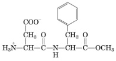
A um carboidrato.
B um lipídio.
C um peptídeo.
D uma vitamina.
E um ácido nucleico.
Questão 905 · Bioestatística · 4000200263Um estudo observacional deseja investigar a relação entre a idade e a incidência de uma doença especí ca. Os pesquisadores coletam dados de 100 pacientes e estimam a correlação entre a idade e a incidência da doença. Eles também calculam um intervalo de con ança de 95% para o coe ciente de correlação. Se o intervalo de con ança incluir zero, o que isso indica sobre a relação entre a idade e a incidência da doença?
A Há uma correlação forte e positiva entre idade e incidência da doença.
B Há uma correlação forte e negativa entre idade e incidência da doença.
C Não há evidências suficientes para afirmar que existe uma correlação significativa entre idade e incidência da doença.
D A correlação entre idade e incidência da doença é exatamente zero.
Revisar: possível letra faltando em enunciado
Questão 906 · Bioestatística · 4000200262Em um estudo clínico, os pesquisadores estão interessados em estimar o efeito médio de um novo medicamento na redução da pressão arterial sistólica. Eles obtêm uma amostra de 50 pacientes e calculam um intervalo de con ança de 95% para a média populacional da redução da pressão arterial sistólica. Esse intervalo de con ança é de 8,5 ± 3,2 mmHg. Como os pesquisadores devem interpretar esse intervalo?
A A redução média da pressão arterial sistólica na população está entre 5,3 e 11,7 mmHg com 95% de confiança.
B A redução média da pressão arterial sistólica na população é exatamente 8,5 mmHg.
C A redução média da pressão arterial sistólica na amostra está entre 5,3 e 11,7 mmHg com 95% de confiança.
D A redução média da pressão arterial sistólica na amostra é exatamente 8,5 mmHg.
Questão 907 · Bioquímica · 4000200261O orlistate é um fármaco utilizado no tratamento da obesidade. Produzido pela bactéria propriedade de impedir a atuação das lipases do tubo intestinal e assim diminui a absorção de lipídios. Como as gorduras não digeridas não são armazenadas pelo organismo, elas acabam sendo eliminadas pelas fezes. Contudo, o medicamento não bloqueia a absorção de calorias do açúcar e de outros alimentos não gordurosos, por isso você ainda precisa restringir a ingestão total de calorias. Um dos efeitos colaterais que devem ser alertados aos pacientes durante o uso do medicamento é
A o desenvolvimento de intolerância à lactose.
B a constipação gastrointestinal.
C o excesso de suco gástrico e posterior desenvolvimento de gastrite.
D a dependência em longo prazo, efeito comum entre medicamentos emagrecedores como a anfetamina.
E a queda nos níveis séricos das vitaminas A, D, E e K.
Questão 908 · Bioestatística · 4000200260Um estudo está sendo realizado para investigar a prevalência de hipertensão em uma população. Os pesquisadores coletam uma amostra aleatória de indivíduos e determinam a proporção deles que têm hipertensão. Eles querem construir um intervalo de con ança de 99% em torno dessa proporção. O que acontece com a largura do intervalo de con ança quando o nível de con ança aumenta de 95% para 99%?
A O intervalo de confiança fica mais estreito.
B O intervalo de confiança fica mais largo.
C O intervalo de confiança permanece o mesmo.
D Não é possível determinar sem mais informações.
Questão 909 · Bioestatística · 4000200259Em um estudo clínico, os pesquisadores investigam o efeito de uma nova dieta na perda de peso de um grupo de participantes. Eles coletam dados de peso antes e depois do período de estudo e calculam a média e o desvio padrão da perda de peso. Os pesquisadores também calculam um intervalo de con ança de 95% para a média da perda de peso. Se o intervalo de con ança for - 5 a -3 kg, qual das seguintes conclusões pode ser tirada?
A A nova dieta não teve nenhum efeito na perda de peso.
B A nova dieta teve um efeito significativo na perda de peso.
C A nova dieta teve um efeito insignificante na perda de peso.
D A nova dieta aumentou o peso dos participantes.
Questão 910 · Bioestatística · 4000200258Um estudo investiga a influência do consumo de cafeína na frequência cardíaca de um grupo de participantes. Os pesquisadores dividem os participantes em dois grupos: um que consome cafeína e outro que recebe um placebo. Após o experimento, eles medem a frequência cardíaca dos participantes. Para testar se há uma diferença significativa na frequência cardíaca entre os dois grupos, os pesquisadores planejam realizar um teste de hipóteses. Se os pesquisadores descobrirem que a variância da frequência cardíaca é significativamente diferente entre os grupos, qual teste estatístico seria mais apropriado?
A Teste t de Student para amostras independentes assumindo homocedasticidade
B Teste t de Student para amostras independentes assumindo heteroscedasticidade
C Teste de Mann-Whitney
D Teste qui-quadrado
Questão 911 · Bioestatística · 4000200257Um estudo investiga a e cácia de um programa de treinamento de força na melhoria do desempenho atlético. Os pesquisadores coletam dados sobre o desempenho atlético antes e depois do programa e querem testar se o programa de treinamento teve um efeito positivo. Eles decidem usar um teste t de Student bicaudado pareado com um nível de signi cância de 0,05. Se o valor-p obtido for 0,03 e o desempenho após foi mais alto que antes, qual conclusão pode ser tirada?
A Rejeitar a hipótese nula e concluir que o programa de treinamento melhorou o desempenho atlético.
B Rejeitar a hipótese nula, mas não concluir que o programa de treinamento melhorou o desempenho atlético.
C Não rejeitar a hipótese nula e concluir que o programa de treinamento não teve efeito no desempenho atlético.
D Não rejeitar a hipótese nula, mas não concluir que o programa de treinamento não teve efeito no desempenho atlético.
Questão 912 · Bioestatística · 4000200256Em uma pesquisa sobre a qualidade do sono, os pesquisadores medem a quantidade de horas de sono por noite em dois grupos de participantes: um grupo que pratica meditação e outro que não pratica. Eles querem testar se a média de horas de sono é maior no grupo que pratica meditação. Qual das alternativas a seguir é a hipótese nula apropriada para esse teste?
A H0: A média de horas de sono é igual nos dois grupos.
B H0: A média de horas de sono é maior no grupo que pratica meditação.
C H0: A média de horas de sono é menor no grupo que pratica meditação.
D H0: A média de horas de sono é diferente nos dois grupos.
Questão 913 · Bioestatística · 4000200255Um estudo analisa a relação entre o consumo de um determinado alimento e a incidência de doenças cardiovasculares em uma população. Os pesquisadores coletam dados categóricos sobre o consumo do alimento (alto, médio ou baixo) e a incidência de doenças cardiovasculares (sim ou não). Qual teste de hipóteses é apropriado para avaliar a associação entre o consumo do alimento e a incidência de doenças cardiovasculares?
A Teste t de Student
B Teste de Mann-Whitney
C Teste qui-quadrado
D Teste de Fisher
Questão 914 · Biologia Celular · 4000200254Mutações ocorrem ao acaso e quando os mecanismos de reparo das células falham. Entretanto, mesmo que uma mutação aconteça em uma região codificante do gene, ela pode ou não resultar em alteração da proteína expressa. Isso é explicado pelo fato
A do código genético ser degenerado.
B da duplicação do DNA ser semiconservativa.
C do código genético ser universal.
D da transcrição poder ser reversa.
E de as mutações serem direcionadas para um fim.
Questão 915 · Bioestatística · 4000200253Um estudo está sendo realizado para determinar se o tempo médio de recuperação após uma cirurgia é diferente entre dois grupos de pacientes: um que segue um protocolo de reabilitação e outro que não segue. Os pesquisadores assumem que os dados não seguem uma distribuição normal. Qual teste de hipóteses seria adequado neste caso?
A Teste t de Student para amostras independentes
B Teste t de Student para amostras pareadas
C Teste de Mann-Whitney
D Teste qui-quadrado
Questão 916 · Bioestatística · 4000200252Um estudo avalia a e cácia de um novo medicamento para a redução da pressão arterial. Os pesquisadores coletam informações sobre a pressão arterial antes e depois do tratamento com o medicamento. Eles querem verificar se há uma diferença estatisticamente significativa na pressão arterial antes e depois do tratamento. Qual teste de hipóteses seria adequado para essa análise?
A Teste t de Student para amostras pareadas
B Teste t de Student para amostras independentes
C Teste de Mann-Whitney
D Teste qui-quadrado
Questão 917 · Biologia Celular · 4000200251A membrana plasmática permite selecionar a entrada de diferentes substâncias do meio externo para o meio intracelular. O esquema a seguir mostra como ocorre o transporte dessas substâncias. Os números 1, 2, 3 e 4 de nem o tipo de transporte que carrega as diferentes substâncias citadas. Sabendo-se disto, está correta a alternativa
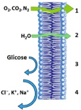
A 1-difusão simples, 2-osmose, 3-difusão facilitada, 4- transporte ativo.
B 1-difusão simples, 2- difusão simples, 3-difusão facilitada, 4- difusão facilitada.
C 1-difusão simples, 2- difusão facilitada, 3-difusão facilitada, 4-transporte ativo.
D 1-osmose, 2- osmose, 3-difusão passiva simples, 4-difusão facilitada.
E 1-difusão simples, 2- difusão simples, 3-transporte ativo, 4-transporte ativo.
Questão 918 · Biologia Molecular · 4000200250Considere que um gene que será expresso resultou em um transcrito de RNA mensageiro com 75 nucleotídeos. A esse respeito foram feitas as seguintes afirmações: I. O RNA mensageiro apresenta 25 códons, que podem codificar 25 aminoácidos diferentes. II. A transcrição acontece no citoplasma e por ação da enzima RNA polimerase. III. O códon de iniciação da tradução desse RNA mensageiro é o AUG, que codifica o aminoácido metionina. IV. A tradução acontece no citoplasma e depende da ação de enzimas específicas e de ATP. Estão corretas as afirmações:
A I e II.
B II e IV.
C III e IV.
D II, III e IV.
E I, II, III e IV.
Questão 919 · Biologia Celular · 4000200249Mutações adquiridas no gene p53 são as alterações genéticas mais comuns encontradas nos cânceres humanos (> 50%). Que tipo de proteína é codificada pelo gene p53?
A Fator de transcrição.
B Proteína de reparação do DNA.
C Protease característica do processo de morte celular.
D Fator de crescimento.
E Fator de inibição.
Questão 920 · Estatística Descritiva Tipos de Dados Distribuições e Probabilidades · 4000200248Um estudo acompanha pacientes com diabetes tipo 2 para avaliar a e cácia de um novo tratamento. Os pesquisadores estão interessados no número de consultas médicas necessárias até que os pacientes atinjam um controle adequado da glicose no sangue. Qual distribuição de probabilidade é adequada para modelar o número de consultas médicas até que o controle adequado da glicose seja alcançado?
A Distribuição binomial
B Distribuição de Poisson
C Distribuição normal
D Distribuição geométrica
Questão 921 · Biologia Celular · 4000200247Algumas enfermidades do sistema respiratório podem ser atribuídas à inadequada formação e subsequente disfunção dos cílios presentes nas células que compõem esse sistema, como por exemplo a sinusite crônica. A sinusite é caracterizada pela in amação dos seios da face, que se situam ao redor do nariz, das maçãs do rosto e dos olhos. Esses seios são revestidos por células que produzem muco, cuja nalidade é reter microrganismos e partículas estranhas. Essas células possuem cílios que trabalham incansavelmente para remover o muco produzido. Quando há algum obstáculo que impeça a eliminação do muco, como alergias ou processos infecciosos, aumenta-se a predisposição ao aparecimento da sinusite. Falhas nas células ciliadas podem ser explicadas
A pela ausência ou redução do número de mitocôndrias.
B por excesso de síntese proteica.
C por erros no funcionamento dos ribossomos.
D por erros na síntese proteica.
E por erros no funcionamento do citoesqueleto.
Questão 922 · Estatística Descritiva Tipos de Dados Distribuições e Probabilidades · 4000200246Um estudo busca avaliar a e cácia de uma nova vacina para prevenir a transmissão de um vírus. Os participantes são divididos em dois grupos: um que recebe a vacina e outro que recebe um placebo. Os pesquisadores registram se os participantes do estudo foram infectados ou não pelo vírus durante o período de acompanhamento. Qual distribuição de probabilidade é apropriada para modelar a probabilidade de um certo número de participantes serem infectados pelo vírus?
A Distribuição binomial
B Distribuição de Poisson
C Distribuição normal
D Distribuição geométrica
Questão 923 · Estatística Descritiva Tipos de Dados Distribuições e Probabilidades · 4000200245Em um estudo sobre a incidência de infecções hospitalares, os pesquisadores coletam dados sobre o número de infecções por paciente em um período de 30 dias. Eles descobrem que a média de infecções por paciente é de 1,5 no período. Qual distribuição de probabilidade é adequada para modelar o número de infecções por paciente neste cenário?
A Distribuição binomial
B Distribuição de Poisson
C Distribuição normal
D Distribuição geométrica
Questão 924 · Estatística Descritiva Tipos de Dados Distribuições e Probabilidades · 4000200244Um hospital está conduzindo um estudo sobre o tempo de internação de pacientes que se submeteram a uma cirurgia cardíaca. Os pesquisadores observaram que o tempo de internação segue uma distribuição simétrica, com média de 10 dias e desvio padrão de 2 dias. Qual distribuição de probabilidade é apropriada para descrever o tempo de internação dos pacientes neste caso?
A Distribuição binomial
B Distribuição de Poisson
C Distribuição normal
D Distribuição geométrica
Questão 925 · Bioestatística · 4000200243Uma pesquisa busca avaliar a associação entre o consumo de frutas e a melhoria dos sintomas de pacientes com síndrome do intestino irritável. Os pesquisadores coletam dados sobre a quantidade diária de frutas consumidas e a pontuação dos sintomas em uma escala de 0 a 100. Ao analisar os dados, eles percebem que há uma grande variabilidade nas pontuações dos sintomas entre os pacientes. Qual medida de dispersão poderia ser utilizada para quantificar essa variabilidade?
A Média
B Mediana
C Amplitude interquartil
D Moda
Questão 926 · Biologia Celular · 4000200242As transformações que ocorrem no útero pós-parto dos mamíferos são exemplos de qual processo celular?
A Necrose.
B Autofagia.
C Renovação celular.
D Heterofagia.
E Autólise.
Questão 927 · Bioestatística · 4000200241Em um estudo para avaliar a e cácia de um novo medicamento para reduzir os níveis de colesterol, os pesquisadores coletam informações sobre os níveis de colesterol total dos participantes antes e após o tratamento. Eles observam que a média dos níveis de colesterol após o tratamento é menor, mas a dispersão dos valores é maior. Qual das seguintes medidas de dispersão pode ser usada para confirmar essa observação?
A Moda
B Mediana
C Variância
D Odds ratio
Questão 928 · Bioestatística · 4000200240Um grupo de cientistas está investigando a relação entre a quantidade de exercício físico e a redução dos níveis de glicose em pacientes com diabetes tipo 2. Eles coletam dados sobre a duração diária do exercício e os níveis de glicose em jejum. Para compreender melhor a distribuição dos dados, os pesquisadores devem analisar quais medidas de dispersão?
A Média e mediana
B Média e desvio padrão
C Variância e desvio padrão
D Mediana e amplitude interquartil
Questão 929 · Biologia Celular · 4000200239Os anabolizantes atuam acelerando a síntese de fibrilas musculares. Assim, na célula, essas substâncias agem:
A no retículo endoplasmático rugoso.
B no complexo de Golgi.
C no núcleo.
D no retículo endoplasmático liso.
E nos centríolos.
Questão 930 · Bioestatística · 4000200238Um estudo analisa o impacto de diferentes tratamentos para hipertensão em pacientes diabéticos. Os pesquisadores coletam os valores de pressão arterial sistólica antes e após cada tratamento. Eles querem comparar as médias das pressões arteriais sistólicas e identi car qual tratamento teve maior impacto na redução da pressão. Além da média, qual outra medida de tendência central pode ser útil nessa comparação?
A Mediana
B Moda
C Variância
D Desvio padrão
Questão 931 · Biologia Celular · 4000200237A doença de Wilson é uma desordem autossômica recessiva do metabolismo do cobre, que leva à impregnação desse metal em diversos tecidos como o fígado, cérebro, córnea e rins. Tem prevalência de 1:40.000 e evolui de forma progressiva e fatal se não tratada. Essa patologia é causada por mutações no gene ATP7B, que codi ca uma proteína transportadora de cobre nos hepatócitos. Normalmente, tal proteína regula a absorção intestinal de cobre por meio do sequestro vesicular do elemento, com posterior encaminhamento para a circulação portal. Na doença de Wilson, esse sequestro deixa de acontecer. A mutação ATP7B do gene comprometeu
A a atividade dos ribossomos nos hepatócitos.
B a atividade do retículo endoplasmático rugoso nos hepatócitos.
C a inibição da difusão do cobre do interior dos hepatócitos para a circulação sanguínea.
D a transcrição dentro do núcleo.
E a atividade do complexo golgiense nos hepatócitos.
Revisar: possível letra faltando em enunciado
Questão 932 · Biologia Celular · 4000200236Sobre a técnica de coloração de Gram e as características da parede celular bacteriana, considere as seguintes afirmativas: 1. A parede celular das bactérias consideradas Gram positivas é mais delgada. 2. As bactérias Gram positivas apresentam coloração rosa ao final da aplicação da técnica. 3. A parede celular das bactérias consideradas Gram negativas é composta por lipopolissacari fina camada de peptideoglicano. 4. As bactérias consideradas Gram negativas apresentam coloração rosa ao final da aplicação da técnica. Assinale a alternativa correta.
A Somente afirmativa 2 é verdadeira.
B Somente as afirmativas 3 e 4 são verdadeiras.
C Somente as afirmativas 1, 2 e 3 são verdadeiras.
D Somente as afirmativas 1, 3 e 4 são verdadeiras.
E Somente as afirmativas 2 e 4 são verdadeiras.
Questão 933 · Biologia Molecular · 4000200235Para investigar os efeitos de dois agentes mutagênicos, culturas de E. coli foram tratadas com cada um deles e amostras dessas células tiveram seus genes modi cados isolados e sequenciados. Os resultados sobre a estrutura primária das proteínas codi cadas foram estudados e registrados na tabela abaixo. Sabendo-se que o gene em questão codi ca uma proteína da cadeia respiratória, é possível a rmar que, nas células tratadas com o agente mutagênico
A I, houve alteração no rendimento energético celular.
B I, não houve alteração no rendimento energético celular.
C II, a mutação incorreu no término precoce da proteína.
D II, a mutação foi silenciosa.
E II, a mutação foi pontual do tipo transversão.
Revisar: possível letra faltando em enunciado
Questão 934 · Bioestatística · 4000200234Uma pesquisa busca analisar a relação entre a obesidade e o desenvolvimento de diabetes mellitus tipo 2. Os pesquisadores coletam informações como índice de massa corporal (IMC), circunferência abdominal, níveis de glicose no sangue e presença ou ausência de diabetes tipo 2. Considerando os tipos de variáveis, qual das alternativas a seguir descreve corretamente a variável que representa a presença ou ausência de diabetes tipo 2 e a escala de medida do IMC?
A Presença ou ausência de diabetes tipo 2: variável categórica; IMC: variável contínua.
B Presença ou ausência de diabetes tipo 2: variável ordinal; IMC: variável categórica.
C Presença ou ausência de diabetes tipo 2: variável categórica; IMC: variável ordinal.
D Presença ou ausência de diabetes tipo 2: variável contínua; IMC: variável categórica.
Questão 935 · Bioestatística · 4000200233Um estudo longitudinal está sendo conduzido para investigar a associação entre o consumo de alimentos ricos em sódio e o desenvolvimento de hipertensão arterial em adultos. Os dados coletados incluem o consumo diário de sódio (baixo, médio e alto), a pressão arterial sistólica e diastólica, e a classificação da hipertensão (normal, pré-hipertensão, hipertensão estágio 1 e hipertensão estágio 2). Quais variáveis são, respectivamente, categórica, ordinal e contínua?
A Consumo diário de sódio, classificação da hipertensão e pressão arterial sistólica
B Classificação da hipertensão, pressão arterial diastólica e consumo diário de sódio
C Pressão arterial sistólica, classificação da hipertensão e consumo diário de sódio
D Classificação da hipertensão, consumo diário de sódio e pressão arterial sistólica
Questão 936 · Bioestatística · 4000200232Uma pesquisa clínica busca analisar a e cácia de uma nova droga no tratamento de infarto agudo do miocárdio. Os participantes do estudo são divididos em dois grupos: um grupo que recebe a nova droga e outro grupo que recebe um tratamento padrão. Os pesquisadores coletam dados demográ cos, como idade e sexo, e medidas clínicas, como valor de troponina e tempo de internação (dias). Qual das seguintes alternativas apresenta uma variável categórica e uma variável contínua coletadas neste estudo?
A Troponina e idade
B Troponina e tempo de internação
C Sexo e troponina
D Idade e tempo de internação
Revisar: possível letra faltando em enunciado
Questão 937 · Bioestatística · 4000200231Um grupo de pesquisadores está realizando um estudo para avaliar a relação entre a prática de exercícios físicos e o controle da hipertensão em pacientes diabéticos. Para isso, eles coletam informações sobre os níveis de glicemia e pressão arterial dos pacientes, e o tempo de duração do diabetes. Considerando os tipos de variáveis envolvidas, identi que qual das seguintes combinações descreve corretamente os dados coletados:
A Níveis de glicemia: variável contínua; Pressão arterial: variável contínua; Tempo de duração do diabetes: variável contínua.
B Níveis de glicemia: variável ordinal; Pressão arterial: variável contínua; Tempo de duração do diabetes: variável contínua.
C Níveis de glicemia: variável categórica; Pressão arterial: variável ordinal; Tempo de duração do diabetes: variável contínua.
D Níveis de glicemia: variável contínua; Pressão arterial: variável ordinal; Tempo de duração do diabetes: variável ordinal.
Questão 938 · Tradução e controle póstraducional · 4000200230As vacinas de RNA contêm informações genéticas selecionadas do vírus na forma de mRNA, que são traduzidos em proteínas virais (peptídeo sinal), como, por exemplo, a proteína spike do coronavírus. A localização esperada da proteína traduzida a partir desse RNAm é:
A o núcleo.
B a membrana celular.
C o meio extracelular.
D o aparelho de Golgi.
E o citosol.
Questão 939 · Tradução e controle póstraducional · 4000200229Duas das vacinas utilizadas contra a COVID-19 usam, como princípio ativo, moléculas de RNA mensageiro (RNAm) que codi cam uma das proteínas do coronavírus SARS-CoV-2, a glicoproteína S. O RNA da vacina contém elementos também presentes em RNAm endógenos. Uma vez dentro das células, o RNAm é traduzido, a glicoproteína S é localizada na superfície celular e a resposta do sistema imunológico é deflagrada. Assinale a alternativa que apresenta um elemento necessário para que a tradução ocorra de maneira eficiente.
A Nucleotídeo de 7-metilguanosina na extremidade 5’.
B Sinal de exportação nuclear.
C Sequência consenso do splicing.
D Códon de início da tradução na extremidade 3’.
E Poliadenilação na extremidade 5’.
Questão 940 · Biotecnologia · 4000200228Um dos fatores de risco para o desenvolvimento da cirrose é a infecção crônica pelo vírus da hepatite B, que possui um genoma de DNA de dupla hélice. Para diagnosticar a quantidade de cópias virais, deve-se solicitar:
A PCR.
B PCR em tempo real.
C Retrotranscrição.
D Eletroforese de DNA.
E Eletroforese de proteínas.
Questão 941 · Biotecnologia · 4000200227A técnica CRISPR-Cas9 permite modi car o genoma das células mediante a introdução de uma endonuclease exógena (Cas9), baseando-se no mecanismo endógeno de:
A pontos de controle do ciclo celular.
B reparação de danos que afetam as fitas do DNA.
C formação descontínua de fragmentos de Okazaki.
D DNA recombinante a partir de enzimas de restrição.
E modificação pós-traducional.
Questão 942 · Replicação do DNA · 4000200226Na replicação das células somáticas, ocorre um encurtamento dos telômeros, evento que se associa ao fato de:
A a telomerase possuir intensa atividade nos cromossomos.
B os telômeros serem compostos por DNA não codificante.
C as extremidades 3' das fitas dos cromossomos não poderem ser replicadas pelas DNA polimerases.
D a heterocromatina, geneticamente ativa, começa a replicar desde o início da fase S, enquanto a eucromatina, inativa, só inicia a replicação no final do período S.
E não ser possível a ligação de sequências iniciadoras nas extremidades dos cromossomos.
Questão 943 · Transcrição do DNA · 4000200225O processo de splicing alternativo é caracterizado por:
A reduzir a taxa de erros durante o processo de transcrição.
B remover os íntrons de transcritos maduros.
C utilizar códons sinônimos para gerar a mesma proteína a partir de RNAs mensageiros distintos.
D aumentar a capacidade codificante do genoma.
E remover os íntrons de um gene, unindo seus éxons em diferentes combinações.
Questão 944 · Biologia Molecular · 4000200224Qual dos seguintes mecanismos moleculares participa durante a fase M do ciclo celular?
A A ativação do complexo promotor da anáfase promovida pelo fator promotor da fase M.
B A restauração do envoltório nuclear promovida pela fosforilação das lâminas nucleares.
C A desorganização do envoltório nuclear promovida pelo complexo promotor da anáfase.
D O movimento das cromátides em direção aos polos, durante a anáfase, pelos microtúbulos polares.
E A produção de proteínas inibidoras de Cdk no ponto de checagem do fuso, promovida pela proteína p53.
Questão 945 · Biologia Molecular · 4000200223A cirrose é caracterizada por gerar um aumento da pressão venosa do fígado, o que causa dilatação e ruptura dos vasos devido à dissociação das junções aderentes, entre outros processos. As seguintes proteínas estão envolvidas nessas junções:
A Actina e caderinas.
B Actina e dineínas.
C Filamentos intermediários e conexinas.
D Filamentos intermediários e cinesinas.
E Actina e cinesinas.
Questão 946 · Transcrição do DNA · 4000200222A brose hepática é caracterizada pela contínua deposição de bras de colágeno nos espaços entre as células do fígado, uma tentativa do organismo de reparar lesões que acontecem de maneira recorrente. O consumo de álcool em excesso, hepatites virais, colestase biliar, entre outros fatores, causam in amação no fígado e brose, que, se não for tratada adequadamente, pode evoluir para cirrose, o estágio nal comum às doenças hepáticas crônicas, é a décima quarta maior causa de mortalidade em todo o mundo. Na fibrose hepática, espera-se encontrar:
A maior glicosilação proteica no retículo endoplasmático liso.
B elevada expressão de RNAs de interferência complementares aos RNAs mensageiros de colágeno.
C intensa tradução de RNAs mensageiros de colágeno em polirribossomos livres.
D maior acetilação de histonas nas regiões regulatórias de genes de colágeno.
E aumento da síntese de inibidores da quinase dependente de ciclina.
Questão 947 · Organelas Compartimentos Celulares · 4000200221A doença de Tay-Sachs é um problema genético raro, que surge como consequência da insu ciência de uma enzima lisossômica, a hexosaminidase, responsável pela decomposição de glicolipídeos. Sem sua degradação, esses lipídios acumulam-se no cérebro, interferindo em diferentes processos importantes para a vida do indivíduo, como a coordenação motora, a respiração e a visão. Assim como a doença de Tay-Sachs, outras doenças decorrem do acúmulo progressivo de substâncias não metabolizadas no interior do lisossomo, como a Doença de Gaucher, a Doença de Pompe, a Doença de Fabry e a Mucopolissacaridose. A respeito das doenças acima citadas, denominadas genericamente de doenças lisossomais, é correto afirmar que
A lisossomos são pequenas vesículas derivadas do complexo golgiense, com capacidade para autoduplicação, de modo que um lisossomo defeituoso pode originar cópias que carregam o mesmo defeito.
B lisossomos realizam a digestão de partículas intracelulares em pH acima do pH citosólico; na ausência dessa condição, as enzimas lisossomais perdem suas atividades.
C as enzimas lisossômicas fabricadas pelo retículo endoplasmático agranular derivam da transcrição gênica de genes mutantes.
D podem ser reguladas por tratamentos hormonais que induzam elevada produção da enzima em quantidade deficiente no organismo.
E podem ser consideradas hereditárias quando ocorre falha enzimática inata a partir de um gene mutante.
Questão 948 · Comunicação Celular · 4000200220A comunicação celular envolve a transmissão de um sinal (ligante) de uma célula emissora para uma célula receptora (célula-alvo). No entanto, nem todas as células emissoras e receptoras são vizinhas próximas, e nem todos os pares de células trocam sinais da mesma forma. Considerando-se a sinalização endócrina, como atuam os ligantes hidrossolúveis?
A Ligantes hidrossolúveis, como os hormônios FSH, LH e os hormônios sexuais, são reconhecidos por proteínas intrínsecas expostas na superfície da célula-alvo.
B Ligantes hidrossolúveis podem atravessar a membrana celular para serem reconhecidos no citoplasma, ou até mesmo no núcleo, e desencadear respostas com efeitos lentos e duradouros.
C Os receptores dos ligantes hidrossolúveis, como os receptores acoplados à proteína G e os receptores tirosina quinases, devem obrigatoriamente estar na membrana plasmática, expostos na superfície celular.
D Ligantes hidrossolúveis, por apresentarem alta afinidade com a membrana das células-alvo, atravessam-na por difusão e promovem uma ação muito intensa e fugaz.
E A sinalização endócrina é uma via de comunicação de longa distância, com efeitos lentos e duradouros, em que os ligantes hidrossolúveis alcançam as células-alvo, difundindo-se do meio extra para o meio intracelular.
Questão 949 · Ciclo Celular Mitose e Meiose · 4000200219Observe as diferentes fases de uma célula em processo de divisão. Foto: Reprodução/Fuvest. Fonte original: http://coofarm.fmns.rug.nl/celbiologie/gallery - Acessado em 01/03/2011. Leia atentamente as alternativas e assinale a correta.
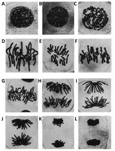
A As fases representadas nas imagens evidenciam que a célula deriva de tecidos germinativos.
B De A a C, as imagens representam o período de intérfase, momento em que a célula está em baixa atividade metabólica.
C Na imagem G, cada cromossomo apresenta duas cromátides-irmãs idênticas.
D Na imagem D, observa-se o início da formação das tétrades.
E A imagem F caracteriza-se pelo alinhamento dos pares de cromossomos homólogos na placa metafásica.
Questão 950 · Biologia Celular · 4000200218As afirmativas abaixo relacionam-se à organização e função do citoesqueleto nas células animais. Analise-as. I. Centríolos são estruturas organizadas aos pares e formadas por nove trios de filamentos de actina. II. Os centríolos formam as bras do fuso mitótico durante a divisão celular, que se ligam aos cromossomos na região do centrômero pelo cinetócoro. III. Alterações estruturais nos centríolos caracterizam divisões celulares anômalas. Está(ão) correta(s) apenas a(s) afirmativa(s):
A I
B II
C III
D I e II
E II e III
Questão 951 · Citoesqueleto · 4000200217Cílios e agelos são formados por duas proteínas motoras importantes, que, caso sejam silenciadas, podem acarretar infertilidade nos homens. Tais proteínas são:
A a dineína e a miosina.
B a actina e a nexina.
C a actina e a miosina.
D a nexina e a dineína.
E a dineína e a actina.
Questão 952 · Transporte através das membranas · 4000200216A respeito dos variados processos pelos quais diferentes moléculas podem atravessar a membrana plasmática, analise o gráfico a seguir, que apresenta a curva de entrada de suas substâncias, A e B, em células animais colocadas em meio de cultura em vários frascos com diferentes concentrações. Assinale a alternativa correta.
A A quantidade de moléculas da substância A que entra na célula é diretamente proporcional à concentração no meio extracelular, como indica sua representação linear no gráfico.
B A substância A poderia ser representada pelo gás oxigênio, enquanto a substância B, por etanol.
C A substância A difunde-se livremente através da membrana, enquanto a substância B necessita de um transportador.
D A substância A poderia ser representada pelo íon Na+, enquanto a substância B, pela glicose.
E Inicialmente, a substância B difunde-se livremente através da membrana, reduzindo sua velocidade de entrada à medida que as concentrações dos meios intra e extracelulares se aproximam do equilíbrio.
Questão 953 · Transporte através das membranas · 4000200215Na linha de produção dentro da célula do hormônio tireoidiano, existe a produção também da tireoglobulina. Ela serve como participante na produção de hormônio. A síntese dos hormônios tireoidianos requer iodo, adquirido na alimentação e na água, como iodeto. As células tireoidianas sequestram iodeto para o interior da célula, sendo capazes de deixá-lo com até 30 vezes sua concentração no sangue. Uma vez dentro das células foliculares, o iodeto é convertido em iodo orgânico e interage com a tireoglobulina, uma glicoproteína produzida e secretada pelas próprias células, que contém tirosina em sua matriz. A tirosina é, então, iodada em monoiodotirosina ou di-iodotirosina locais e depois acoplada para produzir duas formas de hormônio tireoidiano. Observe a ilustração abaixo que sintetiza todo o processo descrito. A partir da análise do texto e da figura, infere-se que
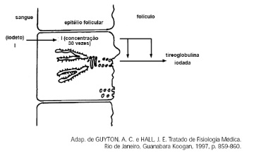
A o iodeto é transportado para dentro da célula da tireoide ativamente, por bombas de iodeto.
B o retículo endoplasmático rugoso sintetiza a parte proteica da tireoglobulina, enquanto o complexo de Golgi sintetiza a parte glicídica.
C o iodeto é transportado para dentro da célula da tireoide passivamente, a favor do gradiente.
D o ribossomo sintetiza a parte proteica da tireoglobulina, enquanto o complexo de Golgi adiciona a parte glicídica a ela, exportando-a.
E o iodeto é transportado para dentro da célula folicular passivamente, por proteínas carreadoras.
Questão 954 · Membrana Celular · 4000200214Pên go é um termo que abrange um grupo de doenças autoimunes caracterizadas pelo surgimento de bolhas na epiderme e nas mucosas (oral, vaginal e peniana). Sabe-se que esse sintoma surge a partir de um mecanismo imunológico de autoagressão, em que parte dos anticorpos atacam a pele, resultando na perda de aderência entre as células da epiderme. A partir do exposto, entende-se que as estruturas atacadas pelos anticorpos são
A as microvilosidades.
B as interdigitações.
C os desmossomos.
D as junções comunicantes.
E as zônulas de oclusão.
Questão 955 · Estrutura da Célula Eucariótica · 4000200213A compartimentalização das células eucarióticas trouxe vantagens evolutivas para esse tipo celular quando comparado à célula procariótica, especialmente em relação à complexidade funcional. Entre essas vantagens, é INCORRETO citar:
A a comunicação entre os diversos compartimentos citoplasmáticos.
B a separação espacial e temporal dos processos de transcrição e tradução.
C a presença de um citoesqueleto formado por uma rede organizada de proteínas tubulares ou filamentosas.
D a aquisição de um sistema altamente complexo e eficiente de divisão celular.
E o confinamento do material genético em um envoltório nuclear completamente íntegro.
Questão 956 · Teoria Celular · 4000200212O pilar da Citologia, área da ciência responsável pelo estudo das células, é a teoria celular, cuja ideia central diz que:
A toda célula se origina de uma célula preexistente.
B todo ser vivo é formado por, pelo menos, uma célula.
C a célula é a unidade básica da vida.
D todos os seres vivos se formam a partir de um conjunto de células.
E membrana, citoplasma e núcleo são as partes fundamentais da célula.
Questão 957 · Contração Muscular · 4000200211No organismo animal, embora a maior parte da massa muscular corporal seja formada por músculo estriado esquelético, a musculatura lisa é fundamental para a manutenção da homeostase. Ele é comumente encontrado na parede de órgãos viscerais ocos, cuja contração promove alterações no formato do órgão. Essas alterações são cruciais, por exemplo, para o peristaltismo do tubo digestório e também na resistência ao uxo sanguíneo através da vasoconstrição. A estrutura tecidual e os mecanismos básicos envolvidos na contração do músculo liso diferem daqueles observados nos músculos estriados. Sobre a estrutura e siologia básica da musculatura lisa pode-se dizer que:
A as proteínas actina e miosina também se organizam em sarcômeros, cuja contração é ativada exclusivamente pelo influxo de Ca2+ pelos canais localizados nas cavéolas.
B não possuem sarcômeros e o cálcio necessário pode ser adquirido via canais dependentes de voltagem nas cavéolas e canais no retículo sarcoplasmático, dependentes de Ca2+ ou mediada pelo mensageiro IP3.
C assim como ocorre nos músculos estriados o Ca2+ intracelular se liga à troponina do filamento fino, permitindo a ligação da miosina com a actina.
D à semelhança da musculatura estriada as células musculares lisas iniciam sua contração por intermédio da liberação de cálcio, provenientes exclusivamente do interior do retículo sarcoplasmático.
E as células musculares lisas se arranjam apenas de maneira paralela, não havendo qualquer tipo de junção intercelular, sendo cada célula estimulada sempre de modo independente.
Questão 958 · Hemoglobina · 4000200210Os eritrócitos humanos são células do tecido sanguíneo, sintetizados a partir das células-tronco precursoras chamadas hemocitoblastos, em formato de discos bicôncavos, cuja função principal é carregar a proteína hemoglobina dissolvida no citosol em concentrações muito altas. Tal proteína apresenta múltiplas subunidades e sítios de ligação para o oxigênio (O2), sendo responsável pelo seu transporte dos pulmões para as células teciduais. Sobre as características estruturais e funcionais dessa proteína assinale a alternativa correta:
A a saturação de oxigênio nas hemoglobinas presentes no sangue arterial é menor do que aquelas observadas no sangue venoso.
B a ligação do O2 ao grupo heme das hemoglobinas aumenta a conversão irreversível de Fe2+ para Fe3+.
C a ligação do O2 à uma subunidade ß não interfere na afinidade das subunidades adjacentes.
D a interação das moléculas de O2 com as subunidades ß das hemoglobinas é maior quando as mesmas se encontram no estado T.
E a molécula 2,3-bifosfoglicerato (BPG) diminui a capacidade do O2 se ligar à hemoglobina, sendo muito útil em casos de hipóxia ou em altas altitudes.
Questão 959 · Metabolismo de Bases Nitrogenadas · 4000200209A síndrome de Lesch Nyhan é uma doença genética caracterizada pela ausência ou de ciência da enzima hipoxantina-guanina- fosforribosil-transferase (HGPRT), que acomete quase exclusivamente crianças do sexo masculino. Tais crianças costumam apresentar baixa coordenação motora e de ciência intelectual somada à agressividade autodestrutiva. Essa enzima está envolvida no metabolismo de nucleotídeos púricos, reutilizando purinas livres para a síntese de novos nucleotídeos. Alterações na sua atividade normal podem levar ao acúmulo tecidual de xantina, hipoxantina e ácido úrico, devido principalmente aos níveis elevados da molécula fosforribosil-pirofosfato (PRPP), e a não conversão de hipoxantina e guanina em seus respectivos nucleotídeos. Sobre esse assunto, assinale a alternativa correta:
A com o aumento da PRPP a síntese de nucleotídeos purínicos diminui.
B a deficiência da HGPRT impede a recaptação de timina o que aumenta a sua degradação e conversão em hipoxantina.
C a síntese de adenosina monofosfato fica comprometida, o que diminui sua degradação e assim acúmulo de xantina nos tecidos.
D a ausência da HGPRT aumenta a concentração de hipoxantina nos tecidos e a produção de ácido úrico pela degradação de purinas, os quais possuem efeitos tóxicos.
E erros na conversão de guanina em xantina, devido à ausência da HGPRT, promove o aumento do ácido úrico e assim as lesões no tecido nervoso.
Questão 960 · Via das Pentoses Fosf ato · 4000200208Na maioria dos tecidos animais, o principal destino catabólico da glicose-6-fosfato é a degradação glicolítica até piruvato, cuja maior parte é, então, oxidada pelo ciclo do ácido cítrico, levando en m à formação de ATP. No entanto, a glicose-6-fosfato tem outros destinos catabólicos, que levam a produtos especializados, necessários para a célula. Sabendo que a oxidação da glicose-6- fosfato pela via das pentoses-fosfato (também chamada de via do fosfogliconato ou via das hexoses-monofosfato) é de grande importância em alguns tecidos, quais são os produtos finais obtidos pela fase oxidativa na via das pentoses-fosfato?
A NADPH e desoxirribose.
B NADPH e ribose-5-fosfato.
C Acetil-CoA e ribose-5-fosfato.
D ATP e ribose-5-fosfato.
E FADH₂ e O₂.
Questão 961 · PH PKa e SoluçõesTampão · 4000200207Tampão são soluções que atenuam a variação dos valores de pH mantendo-o aproximadamente constante, mesmo com adição de pequenas quantidades de ácidos ou bases. São, portanto soluções cujo pH ideal se encontra no centro da zona tampão do par conjugado ácido/base. Como já referido, muitos processos biológicos dependem do estado de protonação de moléculas como as enzimas, sendo fundamental o controle rigoroso do pH do meio em que esses processos se desenrolam. O sangue humano apresenta, normalmente, pH em torno de 7,4 sendo este um dos sistemas tampões mais importante que permite a manutenção das trocas gasosas e das proteinas. Para manter essa faixa de pH, o organismo utiliza vários tampões, sendo que o principal tampão do plasma sanguíneo consiste de ácido carbônico e íon bicarbonato. O equilíbrio químico desse tampão pode ser representado pela equação: Analise as afirmações seguintes: I. Quando uma pequena quantidade de base entra em contato com uma solução-tampão, os íons hidróxido reagem com o ácido do tampão alterando praticamente o pH dessa solução. II. Soluções tampão são soluções que resistem à mudança no pH quando ácidos ou bases são adicionados ou quando ocorre diluição. Estas soluções não são importantes em processos bioquímicos, pois muitos sistemas biológicos não dependem do pH. III. Quando a concentração de íons bicarbonato no sangue aumenta, o pH também aumenta e quando a concentração de CO2 no sangue aumenta, o pH diminui. IV. Uma solução apresenta efeito tamponante quando é formada por um sal solúvel e por uma base ou ácido forte. São corretas as afirmações:
A I, apenas.
B II, apenas.
C III, apenas.
D IV, apenas.
E II e III apenas.
Questão 962 · Propriedades FísicoQuímicas da Água · 4000200206A água é fundamental para os seres vivos, permeia todas as porções das células, é o meio no qual ocorrem o transporte de nutrientes, as reações metabólicas catalisadas enzimaticamente e a transferência de energia química. Todos os aspectos de estrutura celular e suas funções são adaptadas às propriedades físico-químicas da água. Dentre as características a seguir relacionadas, qual é uma propriedade da água de importância fundamental para os sistemas biológicos?
A Possui baixo calor específico, pois sua temperatura varia com muita facilidade.
B Suas moléculas são formadas por hidrogênios de disposição espacial linear.
C Seu ponto de ebulição é entre 0 e 100°C.
D É um solvente limitado, pois não é capaz de se misturar com muitas substâncias.
E Possui alta capacidade térmica e é solvente de muitas substâncias.
Questão 963 · Glicólise · 4000200205A glicólise é uma via central quase universal do catabolismo da glicose, a via com o maior uxo de carbono na maioria das células. Na glicólise (do grego glykys, “doce” ou “açúcar”, e lysis, “quebra”), ocorre a quebra da glicose, formada por seis átomos de carbono, em duas moléculas de piruvato, cada uma com três carbonos, por meio de 10 etapas. A maioria das reações da glicólise é reversível, porém algumas reações são fisiologicamente irreversíveis e estas são catalisadas por enzimas regulatórias. Assinale a alternativa que indica as enzimas que participam dessas reações irreversíveis:
A Hexocinase, fosfofrutocinase 1 (PFK-1) e piruvato-cinase
B Hexocinase e fosfofrutocinase 1 (PFK-1)
C Fosfofrutocinase 1 (PFK-1) e piruvato-cinase
D Fosfohexose-isomerase e piruvato-cinase
E Hexocinase, fosfoglicerato-cinase e piruvato-cinase
Questão 964 · Metabolismo do Glicogênio · 4000200204O excesso de glicose é convertido em formas poliméricas de armazenamento – o glicogênio. O glicogênio é armazenado em grandes grânulos citosólicos nos hepatócitos e no músculo esquelético. No músculo, o glicogênio fornece uma fonte de energia rápida para os metabolismos aeróbico e anaeróbico. Já no fígado, o glicogênio serve como um reservatório de glicose para os outros tecidos quando não há glicose da dieta disponível (entre as refeições ou no jejum); Os grânulos de glicogênio são agregados complexos de glicogênio mais as enzimas que o sintetizam e degradam, assim como a maquinaria de regulação dessas enzimas. Tanto no músculo esquelético quanto no fígado, as unidades de glicose das rami cações externas do glicogênio entram na via glicolítica pela ação de três enzimas. Escolha a opção que indica uma dessas enzimas:
A Piruvato desidrogenase
B ATP-sintase
C glicose-6-fosfatase
D fosfopentose-isomerase
E glicogênio-fosforilase
Questão 965 · Bioquímica · 4000200203Dentro da regulação metabólica existem milhares de vias que desempenham papéis distintos. Uma típica célula eucariótica tem a capacidade de produzir cerca de 30 mil proteínas diferentes, que catalisam milhares de reações distintas envolvendo muitas centenas de metabólitos, muitos deles compartilhados por mais de uma “via”. Essas reações são tão importantes para a sobrevivência que mecanismos reguladores muito complexos evoluíram para assegurar que os metabólitos se desloquem ao longo de cada via no sentido e na velocidade corretos para satisfazer exatamente as condições variáveis da célula ou do organismo. Além disso, as condições mudam, às vezes, de forma drástica. Por exemplo, a disponibilidade de oxigênio pode ser reduzida devido à hipoxia (redução da liberação de oxigênio aos tecidos) ou à isquemia (redução do uxo sanguíneo para os tecidos). A cicatrização de ferimentos exige quantidades muito grandes de energia e de precursores biossintéticos. Quando as condições externas se alteram, são feitos ajustes na velocidade do uxo metabólico ao longo de toda uma via por uma grande variedade de mecanismos que operam em escalas de tempo diferentes. As vias do metabolismo da glicose, por exemplo, fornecem, no sentido catabólico, a energia essencial para se opor às forças de entropia e, no sentido anabólico, precursores biossintéticos e uma forma de armazenamento da energia metabólica. Assim, dentro das vias que envolvem a glicose-6-fosfato são possíveis quatro destinos diferentes para ela em um hepatócito. São eles, exceto:
A degradação pela glicólise para a produção de ATP.
B degradação na via das pentoses-fosfato para a produção de NADPH e pentoses-fosfato.
C utilização na síntese de polissacarídeos complexos da matriz extracelular
D hidrólise em glicose e fosfato para repor a glicose sanguínea.
E degradação nas mitocôndrias pelo processo de ß-oxidação.
Questão 966 · Gliconeogênese · 4000200202Para o encéfalo humano e o restante do sistema nervoso, assim como para os eritrócitos, os testículos, a medula renal e os tecidos embrionários, a glicose do sangue é a principal ou a única fonte de combustível. Apenas o encéfalo requer em média 120 g de glicose por dia – mais da metade de toda a glicose estocada como glicogênio nos músculos e no fígado. No entanto, o suprimento de glicose a partir desses estoques não é sempre su ciente; entre as refeições e durante períodos de jejum mais longos, ou após exercício vigoroso, o glicogênio esgota-se. Para esses períodos, os organismos precisam de um método para sintetizar glicose a partir de precursores que não são carboidratos. Isso é realizado por uma via chamada de gliconeogênese (“nova formação de açúcar”), que converte em glicose o piruvato e compostos relacionados, com três e quatro carbonos. Em mamíferos, a gliconeogênese ocorre principalmente no fígado, e em menor extensão no córtex renal e nas células epiteliais que revestem internamente o intestino delgado. Assim como demostrado na imagem abaixo, a reação nal da gliconeogênese consiste na desfosforilação da glicose-6-fosfato, pela enzima glicose-6-fosfatase, para formar glicose. Essa reação não ocorre em todas as células, apenas nos hepatócitos, células renais e células epiteliais do intestino delgado. Essa enzima ativada por Mg2+ é encontrada em qual organela celular?
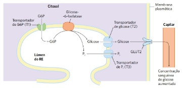
A Retículo endoplasmático
B Complexo de Golgi
C Lisossomos
D Mitocôndrias
E Peroxissomos
Revisar: possível letra faltando em enunciado
Questão 967 · Sistema Nervoso · 4000200201Você é chamado para examinar um paciente vítima de transecção completa de medula espinhal a nível de C3, internado em unidade de terapia intensiva. Seu professor informa que o paciente evoluiu com tetraplegia e está respirando com o auxílio de ventilação mecânica. Como se espera que estejam, nesse paciente, os reflexos cutâneo-plantar e cutâneo abdominal?
A Cutâneo-plantar em extensão, cutâneo abdominal aumentado de intensidade.
B Cutâneo-plantar em extensão, cutâneo abdominal abolido.
C Cutâneo-plantar em flexão, cutâneo abdominal aumentado de intensidade.
D Cutâneo-plantar em flexão, cutâneo abdominal abolido.
E Provavelmente ambos os reflexos estão preservados.
Questão 968 · Transporte Ativo · 4000200200As membranas celulares são estruturas constituídas por uma bicamada fosfolipídica de fundamental importância para a célula. Uma vez que os processos bioquímicos envolvidos na função celular requerem a manutenção de um ambiente intracelular precisamente controlado, caso não existisse uma barreira envolvendo a célula para prevenir as trocas entre os espaços intracelulares e extracelulares, toda a composição ímpar do citoplasma, duramente conquistada, seria perdida por difusão em alguns segundos. Dessa forma, pensando no transporte não acoplado de uma molécula pequena e hidrofóbica “X”, não carregada eletricamente, através de uma membrana celular, pode-se afirmar que:
A o gradiente de concentração promoverá o seu movimento por difusão simples.
B a diferença de energia potencial elétrica estimulará o seu movimento por difusão facilitada.
C o gradiente eletroquímico será a força motriz que resultará na sua passagem direta pela bicamada lipídica.
D apenas o gradiente de concentração atuará sobre a molécula “X”, atravessando-o por transporte ativo.
E apenas o gradiente elétrico exercerá força sobre essa molécula.
Questão 969 · Sistema Nervoso · 4000200199O tônus muscular é uma característica que pode estar alterada em determinados quadros neurológicos, fazendo parte do exame clínico. Qual a mais provável alteração do tônus de um paciente vítima de acidente vascular cerebral extenso do lado esquerdo do córtex?
A Hipotonia no membro superior direito.
B Hipertonia no membro superior direito.
C Hipotonia no membro superior esquerdo.
D Hipertonia no membro superior esquerdo.
E O tônus não sofre influência do córtex.
Questão 970 · Sistema Nervoso · 4000200198Em qual das seguintes situações a pesquisa dos reflexos miotáticos pode auxiliar no diagnóstico diferencial entre duas doenças?
A Diferenciar paresia por lesão medular do corno anterior de lesão da raiz anterior do nervo espinhal.
B Diferenciar paresia por lesão do neurônio motor superior de lesão do neurônio motor inferior.
C Diferenciar paresia por lesão de nervo periférico de lesão muscular.
D Diferenciar paresia por lesão de nervo periférico de lesão de plexo nervoso.
E Diferenciar paresia por lesão medular do corno anterior de lesão do nervo periférico.
Questão 971 · Sistema Nervoso · 4000200197Qual das seguintes manobras
A Teste do índex-nariz.
B Avaliação da marcha.
C Teste de diadococinesia.
D Sinal de Romberg.
E Prova de Brudzinski.
Questão 972 · Sistema Nervoso · 4000200196A pesquisa de sensibilidade geral é parte do exame neurológico, e tem como objetivo investigar as vias neurais envolvidas na transdução dos sentidos. Nesse contexto, assinale a alternativa que correlaciona corretamente o exame de sensibilidade e uma via medular que está sendo testada por ele:
A Pesquisa de sensibilidade térmica – Fascículos grácil e cuneiforme.
B Pesquisa de sensibilidade tátil – Trato vestibuloespinhal.
C Pesquisa de propriocepção consciente – Trato espinotalâmico anterior.
D Pesquisa de sensibilidade vibratória – Trato corticoespinhal lateral.
E Pesquisa de sensibilidade dolorosa – Trato espinotalâmico lateral.
Questão 973 · Sistema Nervoso · 4000200195Imagine que você está acompanhando o ambulatório de Neurologia e o seu preceptor pede para que você avalie a força de exão do cotovelo de um paciente em recuperação pós acidente vascular cerebral. Você observa que o paciente não é capaz de realizar o movimento contra a gravidade, mas consegue exionar o membro quando é colocado deitado sobre uma maca, eliminando a ação da gravidade. Qual é a classificação correta do grau de força muscular desse paciente?
A Grau 0
B Grau 1
C Grau 2
D Grau 3
E Grau 4
Questão 974 · Transporte Ativo · 4000200194Os seres biológicos vivos mesmo apresentando um alto grau organizacional e de complexidade interna não estão livres das consequências das leis da termodinâmica que regem o universo. Em sistemas biológicos isso pode ser apreciado no ambiente celular, observando as diferentes reações citoplasmáticas e movimento de moléculas através das várias estruturas. No citoplasma a transferência de moléculas para dentro e para fora dos diferentes compartimentos membranosos obedecem à 2ª Lei da termodinâmica que descreve a transferência da energia sempre de níveis mais altos para níveis mais baixos de maneira espontânea. No meio do caminho desse movimento natural das moléculas se encontra as membranas celulares, entretanto, as quais são seletivamente permeáveis devido à sua natureza hidrofóbica. Os mais variados íons celulares se movimentam através das membranas biológicas com a ajuda de proteínas transportadoras integrais. Sobre o transporte de moléculas através de tais proteínas assinale a alternativa correta:
A quando os íons são transportados a favor do gradiente eletroquímico, as proteínas transportadoras estão sempre acopladas à hidrólise de ATP.
B no transporte de glicose para dentro das células teciduais a partir do líquido extracelular, sempre há gasto de ATP celular, pois a concentração intracitoplasmática é sempre maior.
C nos neurônios, após a transmissão do potencial de ação, o sódio e potássio são transportados, para fora e para dentro respectivamente, contra seus gradientes eletroquímicos pelas bombas de Na+/K+, havendo assim gasto de ATP.
D na célula muscular estriada, o cálcio é liberado pelo retículo sarcoplasmático através de permeases acopladas a hidrólise de ATP, pois no citoplasma é sempre mantido um excesso desse íon.
E a ação de neurotransmissores inibitórios sobre neurônios pós-sinápticos ocorre devido ao efluxo de potássio através de permeases localizadas na membrana dessas células, associado com a hidrólise de ATP celular.
Questão 975 · Sistema Nervoso · 4000200193Marque a alternativa que contém duas escalas médicas utilizadas para avaliar o nível de consciência dos pacientes:
A Escala de coma de Glasgow e escala RASS.
B Prova de Laségue e prova de Brudzinski.
C Exame MEEM e exame MoCA.
D Escala RASS e exame MEEM.
E Escala de coma de Glasgow e prova de Brudzinski.
Questão 976 · Sistema Nervoso · 4000200192Quais são os três elementos avaliados pela escala de coma de Glasgow?
A Reflexo fotomotor direto, reflexo fotomotor consensual e resposta motora.
B Atenção, memória e linguagem.
C Cooperatividade, resposta verbal e perfusão periférica.
D Abertura ocular, resposta verbal e resposta motora.
E Reflexo fotomotor direto, memória e perfusão periférica.
Questão 977 · Sistema Nervoso · 4000200191Ao avaliar a integridade do nervo hipoglosso, qual dos seguintes resultados indica lesão do feixe nervoso à direita?
A Protrusão da língua com desvio para a esquerda.
B Protrusão da língua com desvio para a direita.
C Queda do véu palatino à direita.
D Atrofia da língua à esquerda.
E Perda de sensibilidade no lado direito da língua.
Questão 978 · Sistema Nervoso · 4000200190Assinale a alternativa que contém um teste adequado para avaliar a função do nervo acessório, 11º nervo craniano:
A Teste de força do músculo esternocleidomastoideo.
B Protrusão da língua.
C Pesquisa de motricidade ocular.
D Sensibilidade gustativa nos 2/3 anteriores da língua.
E Teste de sensibilidade geral na região da face.
Questão 979 · Sistema Nervoso · 4000200189Qual dos seguintes reflexos integrados do tronco encefálico é ideal para testar a função do nervo vago?
A Reflexo fotomotor direto.
B Reflexo oculocefálico.
C Reflexo mentoniano.
D Reflexo corneopalpebral.
E Reflexo do vômito.
Questão 980 · Sistema Nervoso · 4000200188O nervo glossofaríngeo é o 9º nervo craniano, e está envolvido com o sentido da gustação. Em qual região é mais indicado pesquisar a gustação do paciente com o intuito de avaliar a integridade do nervo glossofaríngeo?
A 1/3 anterior da língua.
B 1/3 médio da língua.
C 1/3 posterior da língua.
D Região da epiglote.
E Qualquer região da língua.
Questão 981 · Sistema Nervoso · 4000200187Qual das seguintes combinações de resultados de testes de audição indica uma surdez de origem neurossensorial no lado esquerdo do paciente avaliado?
A Teste de Rinne: condução aérea dura menos que condução óssea no lado esquerdo, e condução aérea dura mais que condução aérea no lado direito. Teste de Weber: desvio do som para o lado esquerdo. Teste de Schwabach: o examinado continua ouvindo o som por mais tempo que o examinador quando se avalia a orelha esquerda.
B Teste de Rinne: condução aérea dura mais que condução óssea no lado esquerdo, e condução aérea dura menos que condução óssea do lado direito. Teste de Weber: desvio do som para o lado direito. Teste de Schwabach: o examinado continua ouvindo o som por mais tempo que o examinador quando se avalia a orelha direita.
C Teste de Rinne: condução aérea dura mais que condução óssea no lado esquerdo, e condução aérea dura mais que condução óssea do lado direito. Teste de Weber: desvio do som para o lado direito. Teste de Schwabach: o examinado ouve o som por menos tempo que o examinador quando se avalia a orelha esquerda.
D Teste de Rinne: condução aérea dura mais que condução óssea no lado esquerdo, e condução aérea dura mais que condução óssea no lado direito. Teste de Weber: desvio do som para o lado esquerdo. Teste de Schwabach: o examinado ouve o som por menos tempo que o examinador quando se avalia a orelha direita.
E Teste de Rinne: condução aérea dura menos que condução óssea do lado esquerdo, e condução aérea dura menos que condução óssea do lado direito. Teste de Weber: sem desvio do som. Teste de Schwabach: o examinado ouve o som por mais tempo que o examinador bilateralmente.
Questão 982 · Sistema Nervoso · 4000200186Assinale a alternativa que descreve adequadamente o sinal de paralisia do nervo facial:
A Sinal de Bell, paralisia dos músculos da mímica, tanto no andar superior quanto no andar inferior da face.
B Sinal de Bell, paralisia dos músculos da mímica, restrita ao andar inferior da face.
C Sinal de Bell, queda espontânea da mandíbula.
D Sinal de Bell, desvio ipsilateral da protrusão da língua.
E Sinal de Bell, ptose palpebral.
Questão 983 · Sistema Nervoso · 4000200185Qual é o único grupamento muscular da musculatura extrínseca do olho inervado pelo 4º nervo craniano, o nervo troclear?
A Reto medial.
B Reto lateral.
C Reto superior.
D Reto inferior.
E Oblíquo superior.
Questão 984 · Sistema Nervoso · 4000200184Marque a alternativa que contém a principal função do nervo trigêmeo, que é utilizada para avaliar a integridade desse nervo:
A O nervo trigêmeo é o principal responsável pelo sentido da visão. Portanto, utilizam-se os exames de acuidade visual, campo visual e fundoscopia para avaliar esse nervo.
B O nervo trigêmeo é responsável pela audição e equilíbrio, portanto, as avaliações de surdez neurossensorial são utilizadas para testá-lo
C O nervo trigêmeo é o feixe que realiza a inervação parassimpática das vísceras abdominais, contribuindo para função do trato gastrointestinal.
D O nervo trigêmeo é responsável pela sensibilidade geral da cabeça. Portanto, utiliza-se testes de sensibilidade tátil, térmica e dolorosa para avaliar a função desse nervo.
E O nervo trigêmeo é o feixe que realiza a inervação motora da musculatura da mímica, portanto, utiliza-se testes de força muscular desses grupamentos para avaliar o trigêmeo.
Questão 985 · Sistema Nervoso · 4000200183Você é chamado para avaliar um paciente do ambulatório de Neurologia que se apresenta com o seguinte quadro: Qual o nervo craniano que provavelmente está comprometido nesse caso?

A Nervo oculomotor.
B Nervo troclear.
C Nervo trigêmeo.
D Nervo abducente.
E Nervo facial.
Questão 986 · Sistema Nervoso · 4000200182Qual seria o quadro clínico mais provável para uma lesão completa do 3º nervo craniano, o nervo oculomotor?
A Midríase, desvio lateral do olho e ptose palpebral no lado afetado.
B Miose, desvio medial do olho e impossibilidade de fechar a pálpebra no lado afetado.
C Midríase, desvio lateral do olho e impossibilidade de fechar a pálpebra no lado afetado.
D Miose, desvio medial do olho e ptose palpebral no lado afetado.
E Midríase, desvio medial do olho e ptose palpebral no lado afetado.
Questão 987 · Sinapses · 4000200181O tecido nervoso está organizado em células nervosas e de suporte, neurônios e neuroglia respectivamente. Na região encefálica, especi camente no córtex cerebral, encontra-se o corpo celular dos neurônios junto às células gliais, enquanto na região central, formada pela substância branca, estão presentes a coleção dos prolongamentos axonais desses neurônios e também células da glia. Ao longo do sistema nervoso central (SNC) pode-se observar a presença de inúmeros circuitos neurais formados por mais ou menos neurônios. Imaginando um pequeno circuito cortical cerebral, composto apenas por neurônios excitatórios que se conectam através de sinapses químicas axodendríticas, está correto afirmar que em todas elas:
A ocorre a liberação de neurotransmissores excitatórios.
B os íons sódio passam diretamente de uma célula à outra.
C o íon potássio é quem estimula a saída dos neurotransmissores pelo botão sináptico.
D há contato físico entre as membranas celulares.
E esses neurotransmissores podem gerar também potenciais de repouso.
Questão 988 · Sistema Nervoso · 4000200180Imagine que você está atendendo um paciente, na atenção primária, que chega com queixas relacionadas ao escurecimento da visão. Qual exame pode ser utilizado, naquele momento, para avaliar clinicamente o campo visual desse paciente e identi car escotomas?
A Teste de Jaeger.
B Campimetria de confrontação.
C Teste de Snellen.
D Campimetria computadorizada.
E Fundoscopia.
Questão 989 · Sistema Nervoso · 4000200179Para avaliar o estado do 1º nervo craniano, qual dos sentidos abaixo deve ser testado?
A Gustação.
B Visão.
C Olfato.
D Tato e propriocepção.
E Audição.
Questão 990 · Contração Muscular · 4000200178O corpo humano contém três tipos fundamentalmente diferentes de músculos, adaptados a funções especializadas. O músculo esquelético é responsável pelo movimento voluntário dos ossos que são a base da locomoção e produção de trabalho. O músculo cardíaco é específico do coração na função de bomba biomecânica que conduz a distribuição de sangue para os pulmões e tecidos. O músculo liso provê controle mecânico dos sistemas de órgãos tais como os tratos digestório, urinário e reprodutivo, assim como os vasos sanguíneos do sistema circulatório e as passagens das vias aéreas do sistema respiratório. O processo de contração dos músculos é iniciado por um neurotransmissor químico, por um fator parácrino ou pela excitação elétrica direta. Todos os músculos fazem a transdução da energia química liberada pela hidrólise de ATP em trabalho mecânico. Sobre os acontecimentos envolvidos no processo de contração dos músculos estriados, assinale a alternativa correta:
A a despolarização dos túbulos T na altura das tríades resulta apenas no influxo de cálcio proveniente do fluido extracelular.
B a ligação da molécula de ATP à cabeça da miosina reduz a sua afinidade pela actina, causando a dissociação do complexo actina-miosina.
C a hidrólise das moléculas de ATP presentes no sarcoplasma é suficiente para promover a formação das pontes cruzadas.
D o estado de rigor mortis, observado em cadáveres logo após a sua morte, é desencadeado pela ausência da recaptação de cálcio pelo retículo sarcoplasmático.
E nesse tipo de músculo a única e suficiente fonte energética é representada pela molécula de fosfocreatina sarcoplasmática.
Questão 991 · Sinalização Celular e Transdução do Sinal · 4000200177Em alguns tipos de câncer de mama, a divisão das células cancerosas depende da presença contínua de estrogênio. O tamoxifeno é um antagonista do estrogênio. Ele compete com o estrogênio pela ligação ao receptor de estrogênio, porém o complexo tamoxifeno-receptor possui pouco, ou nenhum, efeito sobre a expressão gênica. Como consequência, a administração de tamoxifeno após cirurgia ou durante quimioterapia desacelera ou para o crescimento das células cancerosas remanescentes nos casos de câncer de mama dependentes do hormônio. Outro análogo de esteroide, o fármaco mifepristona (RU486), liga-se ao receptor de progesterona e bloqueia a ação desse hormônio, essencial para a implantação do óvulo fecundado no útero, e, assim, age como contraceptivo. Nos dois casos descritos acima observamos a especi cidade entre a interação esteroide e receptor, a qual é aproveitada para promover tratamentos específicos. Levando em consideração a natureza dos fármacos apresentados e o princípio da sinalização celular que diz que as moléculas sinais se ligam em receptores específicos na célula-alvo, com qual tipo de receptor os hormônios esteroides ou os fármacos descritos acima interagem?
A Receptores de superfície celular acoplados a canais iônicos.
B Receptores de superfície celular acoplados a proteína G.
C Receptores de superfície celular acoplados a enzimas.
D Receptores nucleares.
E Receptores citoplasmáticos ou importinas.
Questão 992 · Biossíntese das Membranas Biológicas · 4000200176As membranas celulares são compostas basicamente por lipídios e proteínas, e alguns desses componentes estão covalentemente ligados a carboidratos. Os Fosfolipídeos (Fosfoglicerídeos e Es ngolipídeos) e esterois são os principais lipídeos das membranas celulares. A nomenclatura dos Fosfoglicerídeos é dada de acordo com o radical presente na cabeça polar: fosfatidilcolina, fosfatidiletanolamina, fosfatidilserina e fosfatidilinositol. Além desses, existe também um tipo especial de fosfoglicerídeo denominado difosfatidilglicerol ou cardiolipina. Em relação aos es ngolipídios existem as seguintes subclasses: as es ngomielinas e os glicolipídeos (cerebrosídios e gangliosidios). Já o colesterol é um esteroide, que se insere entre os fosfolipídios. A composições de lipídeos das duas monocamadas da bicamada lipídica de muitas membranas são surpreendentemente distintas. A assimetria lipídica é funcionalmente importante, em especial na conversão de sinais extracelulares em sinais intracelulares. Em outros casos, os animais exploram a assimetria dos fosfolipídeos de sua membrana plasmática para distinguir entre células vivas e células mortas. Quando uma célula animal sofre apoptose, um tipo específico de fosfoglicerídeo, que normalmente está con nada à monocamada citosólica (ou interna) da bicamada lipídica da membrana plasmática, rapidamente se transloca para a monocamada extracelular (ou externa). Esse fosfoglicerídeo exposto na superfície celular sinaliza para as células vizinhas, como os macrófagos, para fagocitar e digerir a célula morta. Qual tipo de fosfoglicerídeo está envolvido nesse processo?
A fosfatidilserina
B cardiolipina
C colesterol
D esfingomielinas
E gangliosidios
Questão 993 · Cadeia de Transporte de Elétrons e Fosf orilação Oxidativa · 4000200175As mitocôndrias são organelas especializadas na “queima” de moléculas de alimentos para produzir ATP pela fosforilação oxidativa. Nesse processo, as mitocôndrias convertem a energia química das moléculas orgânicas em uma forma de energia prontamente utilizável pela célula, o ATP. Contudo, existem alguns agentes que podem interferir no processo global da fosforilação oxidativa. Dentre eles, está listado a Antimicina A, a qual é um antibiótico que tem a capacidade de bloquear o complexo de enzimas da cadeia respiratória. Qual evento especificamente, ocorre nessa fase da respiração celular que envolve a cadeia respiratória?
A Quebra da molécula de glicose em duas moléculas menores.
B Produção de Acetil-CoA.
C Produção de elétrons com alta energia.
D Transferência ordenada de elétrons de um complexo de menor potencial de redução para outro de maior, com consequente ejeção de prótons para o espaço intermembranas.
E Transporte de prótons a partir do espaço intermembranas de volta a matriz mitocondrial para produção de ATP.
Questão 994 · Metabolismo de Ácidos Graxos e Corpos Cetônicos · 4000200174O metabolismo da glicose é regulado pela taxa de captação da glicose pelas células, a qual é mediada pelos membros da família GLUT de transportadores de glicose. Um dos membros dessa família (GLUT4) só consegue se deslocar para a membrana e captar a glicose em resposta a um sinal de insulina. No Diabetes Mellitus tipo 1 (dependente de insulina), a inserção de GLUT4 nas membranas está inibida, assim a de ciência de insulina impede a captação de glicose pelo GLUT4. Como consequência, as células são privadas de glicose, embora ela esteja elevada na corrente sanguínea. Dessa maneira, sem glicose para o suprimento de energia, qual outra fonte os adipócitos utilizam para fornecer matéria prima para outros tecidos promoverem a produção mitocondrial de ATP?
A Triacilgliceróis
B Colesterol
C Fosfolipídeos
D Esfingolipídeos
E Glicolipídeos
Questão 995 · Replicação do DNA · 4000200173A replicação do DNA é o processo pelo qual novas moléculas de DNA são sintetizadas. Esse processo é denominado semiconservativo, pois cada molécula formada é constituída por uma ta antiga, que serviu de molde, e uma ta nova complementar. Várias são as enzimas que participam da replicação do DNA, cujas funções são fundamentais para que esse processo complexo seja permitido. Assinale a alternativa que apresenta a enzima e a função por ela desempenhada.
A Topoisomerase: relaxa o superenrolamento da molécula de DNA devido à ação da helicase.
B DNA-polimerase: adiciona nucleotídeos complementares à fita molde no sentido 3’→5’.
C Helicase: separa as duas fitas da molécula de DNA pela quebra das ligações fosfodiéster.
D DNA-ligase: une os fragmentos de Okazaki gerados para a formação da fita líder.
E RNA-polimerase: adiciona nucleotídeos de RNA complementares à fita molde para formação de primers.
Questão 996 · Ciclo Celular Mitose e Meiose · 4000200172A meiose é um tipo de divisão celular em que uma célula diploide dá origem a quatro células haploides geneticamente diferentes. Nos animais, é por meio da meiose de células da linhagem germinativa que os gametas, células especializadas na função reprodutiva, são formados. Considerando esse processo de divisão celular, é errado dizer que:
A a permutação ocorre na prófase I, após o emparelhamento dos pares de cromossomos homólogos.
B na metáfase I, os cromossomos estão dispostos na região equatorial da célula, ainda emparelhados, na forma de tétrades.
C ao final da meiose I, são formadas duas células-filhas com a mesma quantidade de cromossomos da célula-mãe.
D na anáfase I, ocorre a separação independente dos cromossomos homólogos em direção a polos opostos da célula.
E na anáfase II, ocorre a separação das cromátides-irmãs dos cromossomos em direção aos polos opostos da célula.
Questão 997 · Sistema Nervoso · 4000200171Observe a imagem a seguir, que representa a anastomose entre as artérias da base do crânio: Figura: Polígono de Willis. Fonte: Arquivos Estratégia Med. A artéria representada por “C” é chamada de:

A Artéria carótida interna.
B Artéria vertebral.
C Artéria cerebral anterior.
D Artéria cerebral posterior.
E Artéria cerebral média.
Questão 998 · Sistema Nervoso · 4000200170Observe a imagem a seguir, que representa a anastomose entre as artérias da base do crânio: Figura: Polígono de Willis. Fonte: Arquivos Estratégia Med. A artéria representada por “B” é chamada de:

A Artéria carótida interna.
B Artéria vertebral.
C Artéria cerebral posterior.
D Artéria cerebral média.
E Artéria cerebral anterior.
Questão 999 · Sistema Nervoso · 4000200169Leia a seguinte descrição, referente a uma célula que faz parte da neuróglia: “Célula com formato epitelial prismático ou cuboide. Participa do revestimento das cavidades do sistema ventricular do encéfalo e da medula, como os ventrículos e o aqueduto cerebral.” A célula descrita é conhecida como:
A Célula de Schwann.
B Oligodendrócito.
C Célula ependimária.
D Astrócito.
E Microgliócito.
Questão 1000 · Sistema Nervoso · 4000200168Leia a seguinte descrição, referente a uma célula que faz parte da neuróglia: “Célula achatada, com núcleo ovoide. Se dispõe enrolada ao redor das bras nervosas. Presente no sistema nervoso periférico, constitui a bainha de mielina dos axônios”. A célula descrita é conhecida como:
A Oligodendrócito.
B Astrócito.
C Célula ependimária.
D Célula de Schwann.
E Microgliócito.
Questão 1001 · Organelas Compartimentos Celulares · 4000200167A teoria da endossimbiose foi proposta, em 1981, para explicar a origem das mitocôndrias e dos plastos, como os cloroplastos, no interior de células eucariontes, já que são organelas membranosas com características peculiares. Segundo essa teoria, as células eucariontes, como as conhecemos, teriam evoluído a partir de uma simbiose com seres procariontes ancestrais, englobados devido ao estilo de vida predatório das células eucarióticas primitivas. Algumas são as evidências que suportam a teoria da endossimbiose, dentre as quais não podemos citar:
A presença de membrana dupla.
B presença de DNA circular na matriz mitocondrial.
C presença de ribossomos com tamanho de 80S.
D capacidade de síntese proteica.
E capacidade de autoduplicação.
Questão 1002 · Sistema Nervoso · 4000200166Leia a seguinte descrição, referente a uma célula que faz parte da neuróglia: “Célula pertencente à macróglia do sistema nervoso central, apresenta poucos prolongamentos citoplasmáticos. Nesse sistema, participa da formação da bainha de mielina dos neurônios.” A célula descrita é conhecida como:
A Célula de Schwann.
B Astrócito.
C Célula ependimária.
D Microgliócito.
E Oligodendrócito.
Questão 1003 · Sistema Nervoso · 4000200165Leia a seguinte descrição, referente a uma célula que faz parte da neuróglia: “Célula alongada de pequenas dimensões. Participa da resposta imune do sistema nervoso, assumindo, nesse sistema, funções fagocíticas similares aos macrófagos nos demais tecidos do organismo”. A célula descrita é conhecida como:
A Astrócito.
B Oligodendrócito.
C Célula de Schwann.
D Microgliócito.
E Célula ependimária.
Questão 1004 · Sistema Nervoso · 4000200164Leia a seguinte descrição, referente a uma célula que faz parte da neuróglia: “Célula com formato estrelado, provida de muitos prolongamentos que se apoiam nos capilares sanguíneos e nos neurônios. Sua função é de sustentar e de proteger os neurônios, contribuindo para a formação e o funcionamento adequado das sinapses”. A célula descrita é conhecida como:
A Astrócito.
B Oligodendrócito.
C Célula de Schwann.
D Microgliócito.
E Célula ependimária.
Questão 1005 · Citoesqueleto · 4000200163Microtúbulos são os componentes mais espessos do citoesqueleto, sendo constituídos pela polimerização de proteínas chamadas de tubulinas, encontradas em todos os tipos de células eucarióticas. Uma de suas funções é o transporte intracelular de vesículas: os microtúbulos formam “trilhos” pelos quais as vesículas são direcionadas pelo citoplasma da célula. Existem proteínas motoras que auxiliam nesse transporte e sobre elas, é correto afirmar que:
A as dineínas permitem o transporte de vesículas no sentido da extremidade negativa do microtúbulo, presa ao centrossomo.
B as cinesinas permitem o transporte de vesículas no sentido da extremidade negativa do microtúbulo, apontada para a periferia da célula.
C as dineínas permitem o transporte de vesículas no sentido da extremidade positiva do microtúbulo, apontada para a periferia da célula.as cinesinas permitem o transporte de vesículas no sentido da extremidade negativa do microtúbulo, presa ao centrossomo. as dineínas permitem o transporte de vesículas no sentido da extremidade positiva do microtúbulo, presa ao centrossomo
D as cinesinas permitem o transporte de vesículas no sentido da extremidade negativa do microtúbulo, presa ao centrossomo.
E as dineínas permitem o transporte de vesículas no sentido da extremidade positiva do microtúbulo, presa ao centrossomo
Questão 1006 · Sistema Nervoso · 4000200162Assinale a alternativa que preenche corretamente as lacunas do enunciado abaixo: Um neurônio típico é constituído por três porções distintas: dendritos, corpo celular e axônio. No(s) _____, ocorre a recepção dos impulsos nervosos, que são conduzidos até o(s) _____, produzindo uma alteração do potencial de membrana. Caso essa alteração atinja um determinado limiar, um potencial de ação é gerado e conduzido pelo(s) _____ até as terminações nervosas.
A Axônio, corpo celular, dendritos.
B Dendritos, corpo celular, axônio.
C Corpo celular, axônio, dendritos.
D Dendritos, axônio, corpo celular.
E Axônio, dendritos, corpo celular.
Questão 1007 · Sistema Nervoso · 4000200161Observe a imagem a seguir, que representa a anastomose entre as artérias da base do crânio: Figura: Polígono de Willis. Fonte: Arquivos Estratégia Med. A artéria representada por “A” é chamada de:
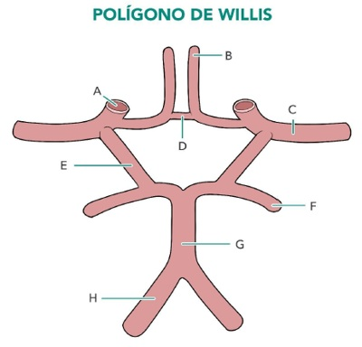
A Artéria cerebral anterior.
B Artéria cerebral média.
C Artéria cerebral posterior.
D Artéria vertebral.
E Artéria carótida interna.
Questão 1008 · Sistema Nervoso · 4000200160Assinale a alternativa que preenche corretamente as lacunas do enunciado abaixo: Duas grandes artérias são as protagonistas do suprimento sanguíneo do encéfalo. Nas regiões anteriores do sistema nervoso central, predomina a vascularização pelos ramos da ________, e, nas regiões posteriores, predomina a vascularização pelos ramos derivados das __________.
A Artéria carótida interna, artérias vertebrais.
B Artéria carótida externa, artérias vertebrais.
C Artéria vertebral, artérias carótidas (interna e externa).
D Artéria vertebral, artérias meníngeas médias.
E Artéria meníngea média, artérias carótidas (interna e externa)
Questão 1009 · Citoesqueleto · 4000200159Hemácias são células vermelhas do sangue, responsáveis pelo transporte de oxigênio pelo corpo. Nos mamíferos, essas células são anucleadas e possuem formato bicôncavo, ambas características adaptativas, que garantem maior e ciência na função de oxigenação. Os principais componentes do citoesqueleto responsáveis pela determinação da forma celular, como a forma bicôncava das hemácias, são os
A microtúbulos, também relacionados com o transporte de vesículas.
B microfilamentos, também relacionados com a adesão intercelular.
C filamentos intermediários, também relacionados com a formação de flagelos.
D microtúbulos, também relacionados com a formação do fuso mitótico.
E filamentos de actina, também relacionados com a sustentação de microvilosidades.
Questão 1010 · Sistema Nervoso · 4000200158Observe a figura a seguir: Figura: Núcleos da base. Fonte: Arquivos Estratégia Med. Os núcleos indicados como “A”, “B” e “C”, componentes do corpo estriado, são denominados, respectivamente:

A Núcleo caudado, putâmen e globo pálido.
B Núcleo caudado, globo pálido e putâmen.
C Putâmen, núcleo caudado e globo pálido.
D Putâmen, globo pálido e núcleo caudado.
E Globo pálido, núcleo caudado e putâmen.
Questão 1011 · Sistema Nervoso · 4000200157Ao se realizar acessos cirúrgicos do centro branco medular do cérebro, o cirurgião deve estar atento para a posição dos núcleos da base, que são aglomerados de substância cinzenta presentes no interior da substância branca cerebral. Partindo do córtex da ínsula até o III ventrículo, as estruturas encontradas no interior de cada hemisfério cerebral, de superficial para profundo, são:
A Cápsula extrema, claustrum, cápsula externa, globo pálido, putâmen, cápsula interna, núcleo caudado e tálamo.
B Cápsula externa, claustrum, cápsula interna, putâmen, globo pálido, cápsula extrema, núcleo caudado e tálamo.
C Cápsula externa, claustrum, cápsula interna, globo pálido, putâmen, cápsula extrema, tálamo e núcleo caudado.
D Cápsula extrema, claustrum, cápsula externa, putâmen, globo pálido, cápsula interna, núcleo caudado e tálamo.
E Cápsula extrema, claustrum, cápsula externa, globo pálido, putâmen, cápsula interna, tálamo e núcleo caudado.
Questão 1012 · Sistema Nervoso · 4000200156No cérebro, dois importantes giros são separados entre si pelo sulco central. O primeiro deles possui localização ventral em relação ao sulco central, e contém a área motora primária. Já o segundo possui localização dorsal ao sulco, e contém a área somestésica primária. Esses giros são intitulados, respectivamente:
A Giro pré-central e giro pós-central.
B Giro pós-central e giro pré-central.
C Área de Broca e área de Wernicke.
D Giro frontal superior e giro frontal médio.
E Giro temporal superior e giro temporal médio.
Questão 1013 · Sistema Nervoso · 4000200155A figura a seguir representa dois dos mais importantes acidentes anatômicos do córtex cerebral: Figura: Acidentes anatômicos do córtex cerebral. Fonte: Arquivos Estratégia Med. Identifique-os:

A Giro central e giro lateral.
B Sulco central e sulco lateral.
C Sulco pré-central e sulco lateral.
D Sulco central e sulco temporal superior.
E Sulco pré-central e sulco temporal superior.
Questão 1014 · Sistema Nervoso · 4000200154Um dos lobos do telencéfalo não tem relação com os ossos do crânio, estando contido na profundidade do sulco lateral do cérebro. O lobo a que essa afirmação faz referência é chamado de:
A Lobo frontal.
B Lobo parietal.
C Lobo temporal.
D Ínsula.
E Lobo occipital.
Questão 1015 · Núcleo · 4000200153O núcleo é o compartimento que armazena o material genético das células eucarióticas. Assim, é a estrutura que permite distinguirmos os dois tipos celulares básicos, procarionte e eucarionte. Trata-se da maior estrutura presente no interior celular. Sobre o núcleo, é correto dizer que:
A é o local em que ocorrem processos fundamentais à célula, replicação e transcrição, que utilizam o DNA como molde para a construção de novas moléculas de ácidos nucleicos.
B é delimitado pelo envoltório nuclear, formado por duas membranas de igual constituição, que se unem nas regiões em que se formam os complexos de poros.
C apresenta um ou mais nucléolos, regiões delimitadas por uma fina membrana, em que ocorre a produção das subunidades ribossômicas.
D contém material genético na forma de cromatina, formada por DNA enrolado em proteínas histonas em nível alto de compactação.
E é o local em que ocorrem os processos de transcrição e tradução, que resultam na formação de uma proteína necessária à célula.
Questão 1016 · Sistema Nervoso · 4000200152O lobo temporal é uma das regiões anatômicas do telencéfalo, estando relacionado aos ossos temporais do crânio. Como são definidos os limites do lobo temporal, na face dorsolateral do cérebro?
A O lobo temporal se localiza profundamente no sulco lateral, recoberto pelos lobos frontal e parietal, não sendo visto na face dorsolateral do cérebro.
B O lobo temporal se localiza posteriormente ao sulco central, superiormente ao ramo posterior do sulco lateral, e anteriormente à linha imaginária que une a incisura pré-occipital ao sulco parieto-occipital.
C O lobo temporal se localiza inferiormente ao sulco lateral, e anteriormente à linha imaginária que une a incisura pré- occipital ao sulco parieto-occipital.
D O lobo temporal se localiza anteriormente ao sulco central, e superiormente ao sulco lateral.
E O lobo temporal é toda a massa de cérebro localizada posteriormente à linha imaginária que une a incisura pré-occipital ao sulco parieto-occipital.
Questão 1017 · Sistema Nervoso · 4000200151O lobo occipital é uma das regiões anatômicas do telencéfalo, estando relacionado ao osso occipital do crânio. Como são definidos os limites do lobo occipital, na face dorsolateral do cérebro?
A O lobo occipital se localiza inferiormente ao sulco lateral, e anteriormente à linha imaginária que une a incisura pré- occipital ao sulco parieto-occipital.
B O lobo occipital se localiza anteriormente ao sulco central, e superiormente ao sulco lateral.
C O lobo occipital se localiza posteriormente ao sulco central, superiormente ao ramo posterior do sulco lateral, e anteriormente à linha imaginária que une a incisura pré-occipital ao sulco parieto-occipital.
D O lobo occipital se localiza profundamente no sulco lateral, recoberto pelos lobos frontal, parietal e temporal, não sendo visto na face dorsolateral do cérebro.
E O lobo occipital é toda a massa de cérebro localizada posteriormente à linha imaginária que une a incisura pré-occipital ao sulco parieto-occipital.
Questão 1018 · Sistema Nervoso · 4000200150O lobo parietal é uma das regiões anatômicas do telencéfalo, estando relacionado aos ossos parietais do crânio. Como são definidos os limites do lobo parietal, na face dorsolateral do cérebro?
A O lobo parietal é toda a massa de cérebro localizada posteriormente à linha imaginária que une a incisura pré-occipital ao sulco parieto-occipital.
B O lobo parietal se localiza inferiormente ao sulco lateral, e anteriormente à linha imaginária que une a incisura pré- occipital ao sulco parieto-occipital.
C O lobo parietal se localiza profundamente no sulco lateral, recoberto pelos lobos frontal e temporal, não sendo visto na face dorsolateral do cérebro.
D O lobo parietal se localiza posteriormente ao sulco central, superiormente ao ramo posterior do sulco lateral, e anteriormente à linha imaginária que une a incisura pré-occipital ao sulco parieto-occipital.
E O lobo parietal se localiza anteriormente ao sulco central, e superiormente ao sulco lateral.
Questão 1019 · Sistema Nervoso · 4000200149O lobo frontal é uma das regiões anatômicas do telencéfalo, estando relacionado aos ossos frontais do crânio. Como são definidos os limites do lobo frontal, na face dorsolateral do cérebro?
A O lobo frontal se localiza anteriormente ao sulco central, e superiormente ao sulco lateral.
B O lobo frontal se localiza posteriormente ao sulco central, superiormente ao ramo posterior do sulco lateral, e anteriormente à linha imaginária que une a incisura pré-occipital ao sulco parieto-occipital.
C O lobo frontal se localiza profundamente no sulco lateral, recoberto pelos lobos parietal e temporal, não sendo visto na face dorsolateral do cérebro.
D O lobo frontal se localiza inferiormente ao sulco lateral, e anteriormente à linha imaginária que une a incisura pré-occipital ao sulco parieto-occipital.
E O lobo frontal é toda a massa de cérebro localizada posteriormente à linha imaginária que une a incisura pré-occipital ao sulco parieto-occipital.
Questão 1020 · Distúrbios do Ciclo Celular · 4000200148A síndrome de Turner é uma anormalidade genética complexa que afeta mulheres, cujo cariótipo, na maioria dos casos, é 45,XO. Isso significa que apresentam um cromossomo X a menos, caracterizando uma aneuploidia do tipo monossomia. Essa alteração cromossômica é causada por um fenômeno de não-disjunção durante a formação dos gametas, especialmente, femininos. Estudos mostram que disfunções no metabolismo de folatos (vitamina B9) estão relacionadas com os processos de não- disjunções cromossômicas. Os grupos metil formados a partir desse metabolismo são essenciais para a replicação do DNA, para a estabilidade cromossômica e a segregação adequada do material genético na divisão celular. Assim, diante de redução da formação de grupos metil, ocorre a hipometilação do DNA, associada com a promoção de aneuploidias. Pensando na meiose, processo pelo qual ocorre a formação dos gametas femininos, é correto dizer que o fenômeno de não- disjunção pode ter acontecido:
A na prófase I, devido ao não emparelhamento dos cromossomos homólogos.
B na metáfase II, devido à não associação dos cromossomos homólogos às fibras do fuso.
C na anáfase I, devido à não separação das cromátides-irmãs.
D na anáfase II, devido à não separação dos cromossomos homólogos.
E na anáfase I, devido à não separação dos cromossomos homólogos.
Questão 1021 · Comunicação Celular · 4000200147O músculo cardíaco é formado por uma rede de bras responsáveis por contrações coordenadas em cada ciclo cardíaco - sequência alternada de contração e relaxamento dos átrios e ventrículos para bombear o sangue por todo o corpo. Embora todas as partes do coração tenham capacidade de gerar potenciais de ação, o nó sinoatrial é o principal iniciador e regulador do impulso nervoso, sendo, por esse motivo, chamado de marcapasso siológico do coração. Uma vez que as células do nó sinoatrial geram o potencial de ação, o impulso nervoso é rapidamente enviado e conduzido para as células miocárdicas, que se contraem de forma sincronizada, resultando em um batimento cardíaco. A rápida propagação dos impulsos nervosos e a contração sincronizada das células musculares cardíacas são facilitadas pela presença de
A junções de adesão, que tornam as células muito unidas.
B junções comunicantes, que permitem a propagação dos sinais elétricos.
C junções gap, que tornam as células muito unidas.
D junções intercelulares, que permitem que as células se reconheçam.
E junções aderentes, que promovem a troca de sinais elétricos.
Questão 1022 · Sistema Nervoso · 4000200146No estudo da anatomia do sistema nervoso central, o cérebro costuma ser dividido em duas regiões: uma central, ímpar e mediana, e outra lateral, dupla e volumosa. Identifique essas regiões na imagem abaixo: Figura: Regiões do cérebro. Fonte: Arquivos Estratégia Med.
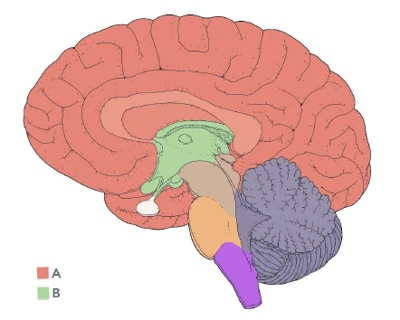
A A – Córtex cerebral, B – Tronco encefálico.
B A – Diencéfalo, B – Telencéfalo.
C A – Telencéfalo, B – Diencéfalo.
D A – Córtex cerebral, B – Centro branco medular.
E A – Hemisférios cerebrais, B – Tronco encefálico.
Questão 1023 · Ciclo Celular Mitose e Meiose · 4000200145O ciclo celular é composto por duas etapas básicas: intérfase e divisão celular. Uma célula que recebe um estímulo para se dividir, primeiramente, precisa crescer, o que envolve duplicar o conteúdo de DNA que ela apresenta. A duplicação do DNA acontece na fase S da intérfase. Considere uma célula humana do epitélio intestinal, que é 2n = 46, cuja frequência de divisão é acentuada. É correto afirmar que essa célula contém:
A 46 moléculas de DNA na prófase.
B 92 moléculas de DNA em G1.
C 92 moléculas de DNA na metáfase.
D 92 cromossomos em G2.
E 92 cromossomos na metáfase.
Questão 1024 · Sistema Nervoso · 4000200144A figura a seguir representa as estruturas do assoalho do III ventrículo, pertencentes ao hipotálamo: Figura: Assoalho do III ventrículo. Fonte: Arquivos Estratégia Med. Assinale a alternativa que identifica corretamente as estruturas indicadas por “A”, “B”, “C” e “D”:

A Corpo mamilar, túber cinéreo, infundíbulo e quiasma óptico.
B Corpo mamilar, quiasma óptico, infundíbulo e túber cinéreo.
C Quiasma óptico, corpos mamilares, túber cinéreo e infundíbulo.
D Quiasma óptico, corpos mamilares, infundíbulo e túber cinéreo.
E Quiasma óptico, infundíbulo, túber cinéreo e corpo mamilar.
Questão 1025 · Sistema Nervoso · 4000200143A imagem a seguir representa a emergência dos doze pares de nervos cranianos a partir do encéfalo: Figura: Nervos Cranianos. Fonte: Arquivos Estratégia Med. Assinale a alternativa que identifica corretamente os nervos cranianos indicados por “A”, “B” e “C”, respectivamente:
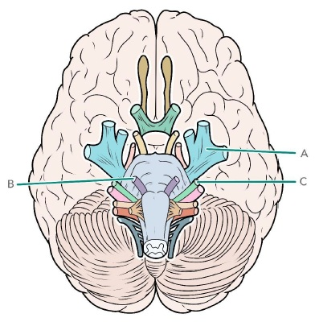
A Nervo olfatório, nervo óptico e nervo oculomotor.
B Nervo trigêmeo, nervo oculomotor e nervo troclear.
C Nervo trigêmeo, nervo abducente e nervo facial.
D Nervo glossofaríngeo, nervo vago e nervo acessório.
E Nervo vago, nervo acessório e nervo hipoglosso.
Questão 1026 · Sistema Nervoso · 4000200142A imagem a seguir é uma representação esquemática de um corte transversal do mesencéfalo: Figura: Corte transversal do mesencéfalo. Fonte: Arquivos Estratégia Med. Assinale a alternativa que identi ca corretamente a região assinalada por “A”, correspondente à área mesencefálica situada posteriormente ao aqueduto cerebral:

A Tegmento.
B Pedúnculo cerebral.
C Base.
D Teto.
E Substância negra.
Revisar: possível letra faltando em enunciado
Questão 1027 · Genoma Cromossomos e Código Genético · 4000200141Mutações gênicas ocorrem quando os mecanismos de reparo da célula falham. Uma mutação gênica, mesmo que aconteça em uma região codificante de um gene ativo, pode não resultar em alteração da proteína produzida. Isso é explicado pelo fato de
A o código genético ser universal.
B a tradução ser interrompida.
C a duplicação do DNA ser semiconservativa.
D o código genético ser redundante.
E a transcrição usar apenas uma fita do DNA como molde.
Questão 1028 · Sistema Nervoso · 4000200140Observe a figura abaixo: Figura: Visão frontal do tronco encefálico. Fonte: Arquivos Estratégia Med. Como são denominados os acidentes anatômicos do bulbo indicados por “A”, “B” e “C”, respectivamente?
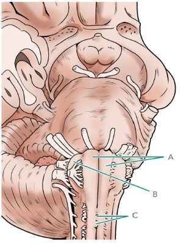
A Pirâmides bulbares, oliva, raízes do nervo hipoglosso.
B Olivas, pirâmide bulbar, decussação das pirâmides.
C Pirâmides bulbares, oliva, decussação das pirâmides.
D Fascículos grácil e cuneiforme, pirâmide bulbar, raízes do nervo hipoglosso.
E Fascículos grácil e cuneiforme, oliva, raízes do nervo hipoglosso.
Questão 1029 · Sistema Nervoso · 4000200139A imagem a seguir é uma representação esquemática da região do IV ventrículo: Figura: IV ventrículo. Fonte: Arquivos Estratégia Med. Assinale a alternativa que contém a nomenclatura correta das estruturas indicadas por “A” e “B”, respectivamente:
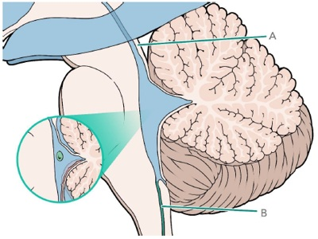
A Forame de Luschka e Forame de Magendie.
B Aqueduto cerebral e canal central da medula.
C III ventrículo e canal central da medula.
D Aqueduto cerebral e V ventrículo.
E Forame de Magendie e III ventrículo.
Questão 1030 · Sistema Nervoso · 4000200138Observe a imagem esquemática de um corte coronal do cérebro a seguir: Figura: Meninges. Fonte: Arquivos Estratégia Med. Como são denominados respectivamente os folhetos das meninges representados por “a”, “b” e “d”, e o espaço representado por “c”?
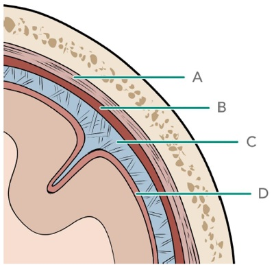
A Dura-máter, aracnoide e pia-máter. Espaço subaracnóideo.
B Dura-máter, pia-máter e aracnoide. Espaço subaracnóideo.
C Pia-máter, dura-máter e aracnoide. Espaço subdural.
D Aracnoide, dura-máter e pia-máter. Espaço subdural.
E Pia-máter, aracnoide e dura-máter. Espaço epidural.
Questão 1031 · Biologia Molecular · 4000200137A anemia falciforme é uma doença genética causada pela anormalidade das proteínas hemoglobinas, presentes nos glóbulos vermelhos do sangue. Nos portadores da doença, é produzida uma hemoglobina mutante, chamada de hemoglobina S, que forma agregados e confere à célula a forma de foice – por isso o nome falciforme. Nesse formato, os glóbulos vermelhos não têm exibilidade, são frágeis e têm vida curta. Além disso, tornam o sangue mais viscoso, prejudicando o uxo sanguíneo e a oxigenação de tecidos, e podem causar lesão capilar e coagulação sanguínea. A mutação genética que causa a anemia falciforme é dada pela substituição de uma base nitrogenada T (timina) por uma base nitrogenada A (adenina). O resultado é a determinação do aminoácido valina ao invés do ácido glutâmico, o que altera a configuração da proteína formada na tradução. Considerando a mutação gênica descrita, é correto dizer que ela é do tipo:
A silenciosa.
B sem sentido.
C com perda de sentido.
D neutra.
E sinônima.
Questão 1032 · Sistema Nervoso · 4000200136Observe a imagem esquemática de um corte transversal da medula espinhal abaixo: Como são denominados os acidentes indicados por a, b, c e d, respectivamente?
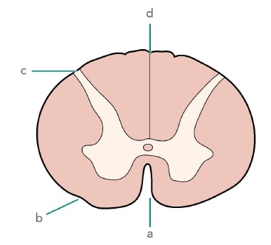
A Fissura mediana anterior, sulco lateral posterior, sulco lateral anterior e sulco mediano posterior.
B Fissura mediana anterior, sulco lateral anterior, sulco lateral posterior e fissura mediana posterior.
C Sulco lateral anterior, sulco intermediário anterior, sulco intermediário posterior e sulco lateral posterior.
D Sulco anterior, sulco lateral anterior, sulco lateral posterior, sulco posterior.
E Fissura mediana anterior, sulco lateral anterior, sulco lateral posterior e sulco mediano posterior.
Questão 1033 · Sistema Nervoso · 4000200135A superfície do cérebro é marcadamente irregular, sendo repleta de sulcos que de nem os giros cerebrais. Qual a função dos sulcos do cérebro, quando comparados a uma superfície cortical lisa?
A A presença de sulcos na superfície do cérebro serve para aumentar a área de substância cinzenta, sem que se aumente excessivamente o volume do órgão.
B Os sulcos da superfície do cérebro existem para reduzir a quantidade de área de superfície, ao encapsular parte do órgão.
C A função dos sulcos do cérebro é a de aumentar a área de substância branca que pode ser contida no interior da cavidade craniana, ao dispô-la no interior dessas depressões.
D Os sulcos do cérebro não apresentam nenhuma vantagem evolutiva em relação a uma superfície lisa, sendo apenas um resquício da embriologia do sistema nervoso.
E A presença de sulcos na superfície do cérebro serve para proteger o parênquima cerebral nos casos de trauma, uma vez que as áreas mais nobres do órgão ficam localizadas no interior dessas depressões.
Questão 1034 · Sistema Nervoso · 4000200134O III ventrículo é uma das cavidades que compõem o sistema ventricular do encéfalo, sendo responsável pela circulação do líquor. Quais são os limites que definem o III ventrículo?
A Parede anterior: lâmina terminal. Parede posterior: subtálamo. Paredes laterais: tálamo e epitálamo. Assoalho: hipotálamo. Teto: tela coroide.
B Parede anterior: hipotálamo. Parede posterior: epitálamo. Paredes laterais: tálamo e hipotálamo. Assoalho: subtálamo. Teto: tela coroide.
C Parede anterior: lâmina terminal. Parede posterior: epitálamo. Paredes laterais: tálamo e epitálamo. Assoalho: subtálamo. Teto: epitálamo.
D Parede anterior: hipotálamo. Parede posterior: subtálamo. Paredes laterais: tálamo e hipotálamo. Assoalho: hipotálamo. Teto: epitálamo.
E Parede anterior: lâmina terminal. Parede posterior: epitálamo. Paredes laterais: tálamo e hipotálamo. Assoalho: hipotálamo. Teto: tela coroide.
Questão 1035 · Sistema Nervoso · 4000200133O diencéfalo é parte do sistema nervoso central, tendo estreita relação com uma das cavidades do sistema ventricular do encéfalo. Assinale a alternativa que nomeia corretamente a cavidade supracitada:
A Ventrículos laterais.
B III ventrículo.
C IV ventrículo.
D Canal central da medula.
E Aqueduto cerebral.
Questão 1036 · Vitaminas · 4000200132A coagulação sanguínea é um processo no qual participam vaso sanguíneo, plaquetas, fatores de coagulação, que resultam na formação de um coágulo de fibrina, que cessa o sangramento e auxilia no reparo do vaso sanguíneo danificado. Dentre os fatores de coagulação, existem aqueles dependentes de uma determinada vitamina para desempenharem suas atividades. Essa vitamina é a:
A Vitamina A.
B Vitamina E.
C Vitamina K.
D Vitamina D.
E Vitamina C.
Questão 1037 · Glicólise · 4000200131A glicólise é a primeira etapa do processo de respiração celular. Trata-se de uma etapa composta por 10 passos, todos executados por enzimas presentes no citosol da célula. Não é correto afirmar que no processo:
A duas moléculas de ATP são hidrolisadas.
B duas moléculas de NAD+ são reduzidas a NADH + H+.
C duas moléculas de ácido pirúvico são produzidas.
D duas moléculas de glicose são consumidas.
E quatro moléculas de ADP sofrem fosforilação e formam ATP.
Questão 1038 · Vitaminas · 4000200130As vitaminas são compostos orgânicos requeridos pelo organismo em pequenas quantidades. Apesar disso, são essenciais para o metabolismo celular e, consequentemente, para o bom funcionamento do corpo. Assinale a alternativa que contém uma associação correta entre vitamina e importância fisiológica.
A A vitamina A está relacionada com a absorção de cálcio e fósforo pelo intestino.
B A vitamina B12 está relacionada com a atividade de fatores de coagulação sanguínea.
C A vitamina C é antioxidante e está relacionada com o bom funcionamento do sistema genital.
D A vitamina D está relacionada com a absorção de cálcio e a prevenção ao raquitismo.
E A vitamina E é antioxidante e está relacionada com a prevenção à cegueira noturna.
Questão 1039 · Sistema Nervoso · 4000200129Qual das afirmativas a seguir é verdadeira a respeito da anatomia do cerebelo?
A A superfície do cerebelo é composta pelo córtex cerebelar, uma lâmina de substância cinzenta contínua e regular, repleta de corpos celulares de neurônios.
B Macroscopicamente, o cerebelo aparece como duas eminências laterais, os hemisférios cerebelares, ligados a uma estrutura ímpar e mediana, denominada vérmis.
C O cerebelo se localiza posterior ao tronco encefálico, constituindo o teto do IV ventrículo e estando em íntima relação com o mesencéfalo.
D O córtex cerebelar, composto por substância cinzenta, engloba o corpo medular do cerebelo, composto por substância branca. Ao contrário do que ocorre no telencéfalo e no tronco encefálico, não existem núcleos de substância cinzenta no interior da substância branca cerebelar.
E Os pedúnculos cerebelares, superior e inferior, unem o cerebelo ao tronco encefálico. Essas são as duas principais estruturas que carregam as aferências e eferências relativas ao cerebelo.
Questão 1040 · Sistema Nervoso · 4000200128Assinale a alternativa correta a respeito da disposição da substância cinzenta do cerebelo:
A O cerebelo possui uma organização similar à da medula espinhal, com a substância cinzenta disposta no interior da substância branca.
B O cerebelo é organizado de forma que a substância branca está contida em seu centro medular, sendo circundada por um córtex cerebelar composto de substância cinzenta. Essa organização é similar à da medula espinhal.
C O cerebelo possui substância cinzenta localizada no córtex cerebelar, disposto ao redor de um centro de substância branca, o qual contém alguns núcleos de substância cinzenta em seu interior. Essa organização se assemelha ao telencéfalo.
D O cerebelo constitui-se de maneira similar ao telencéfalo: possui substância cinzenta na região central e substância branca na periferia do órgão.
E O cerebelo é considerado como um grande núcleo de substância cinzenta, não sendo encontrado nele um centro medular de substância branca.
Questão 1041 · Ácidos Nucleicos · 4000200127O DNA é uma molécula composta por duas tas de ácidos nucleicos, que se unem por ligações de hidrogênio entre bases nitrogenadas complementares. Considere uma molécula de DNA contendo 228 bases nitrogenadas, sendo 48 citosinas. É correto afirmar que:
A A molécula de DNA contém por 48 timinas.
B A molécula de DNA contém por 66 guaninas.
C A molécula de DNA contém 96 bases pirimídicas.
D A molécula de DNA contém 48 adeninas.
E A molécula contém 114 bases púricas.
Questão 1042 · Sistema Nervoso · 4000200126Assinale a alternativa que descreve corretamente os limites do IV ventrículo:
A Súpero-lateral: Pedúnculo cerebelar superior. Ínfero-lateral: Pedúnculo cerebelar inferior. Teto: Cerebelo. Assoalho: Ponte e Bulbo.
B Súpero-lateral: Pedúnculo cerebelar médio. Ínfero-lateral: Pedúnculo cerebelar inferior. Teto: Cerebelo. Assoalho: Ponte e Bulbo.
C Súpero-lateral: Pedúnculo cerebelar médio. Ínfero-lateral: Pedúnculo cerebelar inferior. Teto: Cerebelo. Assoalho: Mesencéfalo e Ponte.
D Súpero-lateral: Pedúnculo cerebelar superior. Ínfero-lateral: Pedúnculo cerebelar inferior. Teto: Cerebelo. Assoalho: Mesencéfalo e Ponte.
E Súpero-lateral: Pedúnculo cerebelar superior. Ínfero-lateral: Pedúnculo cerebelar médio. Teto: Cerebelo. Assoalho: Mesencéfalo e Ponte.
Questão 1043 · Sistema Nervoso · 4000200125Como é denominado o acidente anatômico do bulbo localizado entre os sulcos lateral anterior e lateral posterior?
A Oliva.
B Pirâmide bulbar.
C Fascículo grácil.
D Fascículo cuneiforme.
E Decussação das pirâmides.
Questão 1044 · Sistema Nervoso · 4000200124Marque a alternativa que contém a estrutura do IV ventrículo responsável pela produção de líquor:
A Forames de Luschka.
B Forame de Magendie.
C Plexo coroide.
D Canal central da medula.
E Aqueduto cerebral.
Questão 1045 · Sistema Nervoso · 4000200123Qual das seguintes assertivas é verdadeira a respeito do quiasma óptico?
A O quiasma óptico é a região do assoalho do III ventrículo, relacionada ao hipotálamo, que recebe os nervos ópticos e marca o cruzamento das fibras da retina nasal.
B O quiasma óptico é a região do assoalho do IV ventrículo, relacionada ao tálamo, que recebe os nervos ópticos e marca o cruzamento das fibras da retina nasal.
C O quiasma óptico é a região do assoalho do III ventrículo, relacionada ao hipotálamo, que recebe os nervos oculomotores e marca o cruzamento das fibras que inervam a musculatura intrínseca do olho.
D O quiasma óptico é a região do assoalho do IV ventrículo, relacionada ao tálamo, que recebe os nervos ópticos e marca o cruzamento das fibras da retina temporal.
E O quiasma óptico é a região do assoalho do III ventrículo, relacionada ao hipotálamo, que recebe os nervos ópticos e marca o cruzamento das fibras da retina temporal.
Questão 1046 · Sistema Nervoso · 4000200122Quais dos pares de nervos cranianos emergem a partir do mesencéfalo?
A Nervo olfatório e nervo óptico (I e II pares).
B Nervo oculomotor e nervo troclear (III e IV pares).
C Nervo trigêmeo (V par).
D Nervo abducente, nervo facial e nervo vestíbulo-coclear (VI, VII e VII pares de nervos cranianos).
E Não emergem nervos cranianos a partir do mesencéfalo.
Questão 1047 · Sistema Nervoso · 4000200121O pedúnculo cerebral, região ventral do mesencéfalo, é dividido em base e tegmento pela substância negra, núcleo de neurônios pigmentados com melanina que produzem o neurotransmissor:
A Dopamina.
B Serotonina.
C Acetilcolina.
D Noradrenalina.
E Encefalina.
Questão 1048 · Sistema Nervoso · 4000200120A base da ponte é marcada por um profundo sulco mediano, que aloja uma importante estrutura da região. A estrutura que passa ali é denominada:
A Nervo trigêmeo.
B Nervo hipoglosso.
C Artéria cerebral média.
D Artéria cerebral anterior.
E Artéria basilar.
Questão 1049 · Sistema Nervoso · 4000200119Qual das seguintes afirmativas é verdadeira a respeito do mesencéfalo observado em corte transversal?
A No interior do mesencéfalo é possível observar uma cavidade preenchida por líquor, que faz parte do sistema ventricular, denominada III ventrículo.
B Utilizando como referência o aqueduto cerebral, o mesencéfalo pode ser divido em duas regiões, o teto mesencefálico (posterior) e os pedúnculos cerebrais (anteriores).
C O mesencéfalo é bastante uniforme quando observado em corte transversal, tendo como único acidente anatômico mais importante o aqueduto cerebral.
D Os colículos são estruturas arredondadas presentes na região ventral do mesencéfalo, sendo que os colículos inferiores participam da via auditiva e os colículos superiores participam da via óptica.
E Diferentemente da ponte e do bulbo, não emergem nervos cranianos a partir do mesencéfalo.
Questão 1050 · Sistema Nervoso · 4000200118Qual acidente anatômico do tronco encefálico marca o ponto de surgimento do nervo trigêmeo?
A Sulco bulbo-pontino.
B Sulco medial do pedúnculo cerebral.
C Região do teto do mesencéfalo caudal aos colículos inferiores.
D Sulco lateral posterior.
E Limite entre a ponte e o pedúnculo cerebelar médio.
Questão 1051 · Sistema Nervoso · 4000200117Na investigação de suspeita de coma, é de rotina que se teste o reflexo fotomotor, com o intuito de verificar a integridade do sistema ativador reticular ascendente (SARA), localizado no mesencéfalo, que é responsável por manter a vigília. Qual o nervo que participa do reflexo fotomotor cujo núcleo e ponto de emergência se localizam no mesencéfalo?
A Nervo olfatório.
B Nervo óptico.
C Nervo oculomotor.
D Nervo troclear.
E Nervo trigêmeo.
Questão 1052 · Sistema Nervoso · 4000200116Um dos acidentes anatômicos mais marcantes do bulbo é o sulco lateral posterior, que representa uma continuação direta do mesmo sulco presente na medula espinhal. No caso de um processo expansivo que comprima o sulco lateral posterior do bulbo, quais estruturas seriam lesadas?
A Nervo trigêmeo e pedúnculo cerebelar médio.
B Nervo abducente, nervo facial e nervo vestíbulo-coclear.
C Nervo hipoglosso e pirâmides bulbares.
D Nervo acessório, nervo vago e nervo glossofaríngeo.
E Artéria basilar e nervo oculomotor.
Questão 1053 · Sistema Nervoso · 4000200115Na área dorsal do bulbo, encontramos os fascículos grácil e cuneiforme, continuações do funículo posterior da medula espinhal, que fazem sinapses nos núcleos grácil e cuneiforme. Essa via então continua superiormente, juntamente às estruturas denominadas:
A Pedúnculos cerebelares superiores.
B Pedúnculos cerebelares médios.
C Pedúnculos cerebelares inferiores.
D Colículos inferiores.
E Colículos superiores.
Questão 1054 · Sistema Nervoso · 4000200114O sulco bulbo-pontino é uma importante área de emergência de nervos cranianos a partir do tronco encefálico. Marque a alternativa que contém os nervos que emergem do encéfalo a partir deste sulco:
A Nervo hipoglosso e nervo acessório.
B Nervo trigêmeo, nervo facial e nervo vestíbulo-coclear.
C Nervo abducente, nervo facial e nervo vestíbulo-coclear.
D Nervo acessório, nervo vago e nervo glossofaríngeo.
E Nervo troclear e nervo oculomotor.
Questão 1055 · Sistema Nervoso · 4000200113O canal central da medula continua na porção fechada do bulbo, até que se abre na região dorsal do tronco encefálico formando a cavidade denominada:
A I ventrículo.
B II ventrículo.
C III ventrículo.
D IV ventrículo.
E Aqueduto cerebral.
Questão 1056 · Sistema Nervoso · 4000200112Qual nervo craniano emerge do sulco lateral anterior do bulbo?
A Nervo acessório.
B Nervo vago.
C Nervo glossofaríngeo.
D Nervo hipoglosso.
E Nervo trigêmeo.
Questão 1057 · Sistema Nervoso · 4000200111A ssura mediana anterior da medula espinhal é contínua no bulbo, até que é obliterada por um acidente anatômico de grande importância. O acidente anatômico que cruza a fissura mediana anterior do bulbo é o(a):
A Oliva.
B Decussação das pirâmides.
C Nervo hipoglosso.
D Nervo acessório.
E IV ventrículo.
Questão 1058 · Sistema Nervoso · 4000200110O tronco encefálico é a região de transição entre a medula espinhal e o cérebro, compartilhando características com ambos. Assinale a alternativa que contém as estruturas que compõem o tronco encefálico:
A Tálamo e hipotálamo.
B Ponte, bulbo e cerebelo.
C Subtálamo e ponte.
D Hipocampo, amígdala e corpos mamilares.
E Bulbo, ponte e mesencéfalo.
Questão 1059 · Sistema Nervoso · 4000200109Qual estrutura de grande importância está localizada no espaço epidural da medula espinhal?
A Nenhuma em particular. Por ser um espaço virtual, contém apenas pequena quantidade de líquido.
B Grande quantidade de líquor. Nesse espaço se localiza a maior quantidade do líquido cefalorraquidiano, onde flutua o sistema nervoso central.
C Substância cinzenta. No espaço epidural se localizam os corpos celulares dos neurônios medulares, que se dispõem na periferia do órgão.
D Ligamento denticulado. Essa formação da dura-máter contribui para a fixação lateral da medula espinhal na coluna vertebral.
E Plexo venoso vertebral. Esse conjunto de veias sem válvulas realiza a drenagem da medula espinhal e pode contribuir para a disseminação medular de infecções e metástases.
Questão 1060 · Sistema Nervoso · 4000200108Durante uma raquianestesia, o médico deve perfurar os tecidos com a agulha até alcançar o espaço subaracnoideo, onde será depositado o anestésico. Quais folhetos das meninges serão perfurados nesse trajeto?
A Dura-máter e aracnoide.
B Aracnoide e pia-máter.
C Dura-máter, pia-máter e aracnoide.
D Dura-máter e pia-máter.
E Apenas a aracnoide.
Questão 1061 · Sistema Nervoso · 4000200107Entre as alternativas abaixo, qual contém uma a rmação correta a respeito dos segmentos da medula espinhal e dos nervos espinhais correspondentes?
A Existem oito pares de nervos espinhais cervicais, porém apenas sete vértebras. O oitavo nervo cervical emerge pelo forame intervertebral abaixo da sétima vértebra.
B Todos os nervos espinhais emergem acima da vértebra da coluna vertebral correspondente (ex.: o nervo T11 sai pelo forame intervertebral acima da 11ª vértebra torácica).
C Existem 33 pares de nervos espinhais, correspondentes às 33 vértebras da coluna vertebral. Cada um dos nervos tem relação íntima com a sua vértebra equivalente.
D Todos os nervos espinhais emergem abaixo da vértebra da coluna vertebral correspondente (ex.: o nervo C5 sai pelo forame intervertebral abaixo da 5ª vértebra cervical).
E Todas as alternativas estão incorretas.
Questão 1062 · Sistema Nervoso · 4000200106Marque a alternativa que descreve corretamente a estrutura dos funículos de substância branca na medula espinhal:
A O funículo lateral está contido entre os sulcos lateral anterior e lateral posterior, na periferia da medula espinhal.
B O funículo posterior é delimitado pelos sulcos lateral posterior e intermediário posterior, na periferia da medula espinhal.
C O funículo posterior é delimitado pelos sulcos intermediário posterior e mediano posterior, na periferia da medula espinhal.
D O funículo anterior está contido entre a fissura mediana anterior e o sulco lateral anterior, profundamente à substância cinzenta.
E O funículo lateral se localiza entre a fissura mediana anterior e o sulco mediano posterior, profundamente à substância cinzenta.
Questão 1063 · Sistema Nervoso · 4000200105Assinale a alternativa verdadeira a respeito da substância cinzenta da medula espinhal:
A A substância cinzenta da medula se organiza na periferia do órgão, formando a área cortical que contém os corpos celulares dos neurônios, a qual circunda a substância branca.
B A substância cinzenta da medula espinhal se divide em três funículos: posterior, anterior e lateral. Esses funículos contêm os prolongamentos neuronais mielinizados que realizam a comunicação do sistema nervoso com o restante do organismo.
C A substância cinzenta da medula espinhal tem a forma de um “H” nos cortes transversais, formando colunas anteriores e posteriores ao longo do órgão. Os neurônios da coluna anterior estão relacionados à sensibilidade, formando as raízes dorsais dos nervos espinhais.
D A substância cinzenta da medula espinhal se dispõe no interior da substância branca, e forma as colunas anterior, posterior e lateral, sendo que esta última é encontrada apenas na região torácica e lombar.
E Os funículos da substância cinzenta são delimitados pelos sulcos superficiais da medula espinhal, e formam um anel ao redor da periferia do órgão, entremeado pela substância branca que dá origem aos nervos espinhais.
Questão 1064 · Sistema Nervoso · 4000200104Como é chamado o acidente anatômico da superfície da medula espinhal de onde emergem as raízes ventrais dos nervos espinhais?
A Fissura mediana anterior.
B Sulco lateral anterior.
C Sulco lateral posterior.
D Sulco intermediário posterior.
E Sulco mediano posterior.
Questão 1065 · Sistema Nervoso · 4000200103A medula espinhal é um órgão que não apresenta diâmetro uniforme ao longo do seu trajeto, formando intumescências de maior volume em determinadas regiões. Como são denominadas as intumescências da medula e o que determinam essas expansões?
A Intumescência cervical e intumescência lombar. As intumescências são coxins adiposos que protegem a medula de choques mecânicos.
B Intumescência torácica e intumescência sacral. As intumescências são coxins adiposos que protegem a medula de choques mecânicos.
C Intumescência torácica e intumescência lombar. As intumescências são formadas pela expansão da substância cinzenta na altura de formação dos plexos braquial e lombossacral.
D Intumescência cervical e intumescência lombar. As intumescências são formadas pela expansão da substância cinzenta na altura de formação dos plexos braquial e lombossacral.
E Intumescência torácica e intumescência cervical. As intumescências são resquícios de processos infecciosos da medula, que cursam com inflamação local e edema não reabsorvível.
Questão 1066 · Sistema Nervoso · 4000200102Na maioria das pessoas, onde estão localizados os limites superiores e inferiores da medula espinhal?
A Limite superior: Ponte, na altura do forame magno do osso occipital. Limite inferior: Osso cóccix.
B Limite superior: Bulbo, na altura do forame magno do osso occipital. Limite inferior: Segunda vértebra lombar (L2).
C Limite superior: Cérebro, na altura da órbita ocular. Limite inferior: Segunda vértebra lombar (L2).
D Limite superior: Bulbo, na altura do forame magno do osso occipital. Limite inferior: Osso cóccix.
E Limite superior: Ponte, na altura do forame magno do osso occipital. Limite inferior: Segunda vértebra lombar (L2).
Questão 1067 · Sistema Nervoso · 4000200101Como ocorre a divisão entre os neurotransmissores utilizados pelos neurônios pós-ganglionares do sistema nervoso simpático e o sistema nervoso parassimpático?
A A maioria dos neurônios do sistema nervoso simpático utiliza acetilcolina, e o sistema nervoso parassimpático utiliza noradrenalina.
B A maioria dos neurônios do sistema nervoso simpático utiliza dopamina, e o sistema nervoso parassimpático utiliza serotonina.
C A maioria dos neurônios do sistema nervoso simpático utiliza acetilcolina, e o sistema nervoso parassimpático também. A diferença entre eles está no neurotransmissor utilizado pelo neurônio pré-ganglionar.
D A maioria dos neurônios do sistema nervoso simpático realiza sinapses elétricas e os neurônios do sistema nervoso parassimpático utilizam sinapses químicas.
E A maioria dos neurônios do sistema nervoso simpático utiliza noradrenalina, e os neurônios do sistema nervoso parassimpático utilizam acetilcolina.
Questão 1068 · Sistema Nervoso · 4000200100O sistema nervoso autônomo (SNA) é parte fundamental da estrutura homeostática do organismo. Quais são os componentes do SNA?
A SNA aferente e SNA eferente.
B SNA somático e SNA visceral.
C SNA simpático e SNA parassimpático.
D SNA voluntário e SNA involuntário.
E SNA muscular estriado esquelético e SNA muscular liso.
Questão 1069 · Sistema Nervoso · 4000200099Assinale a alternativa que descreve corretamente como é realizada a divisão do sistema nervoso baseada em critérios anatômicos:
A A divisão anatômica do sistema nervoso separa esse sistema em sistema nervoso central e sistema nervoso periférico, de acordo com a sua relação com o esqueleto axial.
B A divisão anatômica do sistema nervoso é baseada na separação entre sistema nervoso somático e sistema nervoso visceral.
C A divisão anatômica do sistema nervoso divide o sistema em três porções: prosencéfalo, mesencéfalo e rombencéfalo, baseado na estrutura intrauterina das vesículas primordiais.
D Os dois componentes da divisão anatômica do sistema nervoso central são o sistema nervoso segmentar e o sistema nervoso suprassegmentar.
E A divisão anatômica se baseia na semelhança histológica entre os tecidos que compõem o sistema nervoso, e divide o sistema em telencéfalo, diencéfalo, mesencéfalo, metencéfalo e mielencéfalo.
Questão 1070 · Anatomia do Sistema Locomotor · 4000200098A articulação do tornozelo é protegida por fortes ligamentos, que resguardam a cápsula articular. Assinale a alternativa que contém os principais ligamentos da articulação do tornozelo:
A Ligamento colateral anterior e ligamento colateral posterior.
B Ligamento deltoideo e ligamento triangular.
C Ligamento colateral medial e ligamento colateral lateral.
D Ligamento arqueado do tornozelo e ligamento oblíquo do tornozelo.
E Menisco medial e menisco lateral.
Questão 1071 · Anatomia do Sistema Locomotor · 4000200097A articulação do quadril é reforçada por fortes ligamentos que mantêm a sua estabilidade. Marque a alternativa que descreve os três ligamentos intrínsecos que fortalecem a articulação do quadril:
A Ligamento sacrotuberal, ligamento sacrofemoral, ligamento acetabular.
B Ligamento iliofemoral, ligamento pubofemoral, ligamento isquiofemoral.
C Ligamento iliofemoral, ligamento acetabular, ligamento pubofemoral.
D Ligamento sacrotuberal, ligamento iliofemoral e ligamento pubofemoral.
E Ligamento iliofemoral, ligamento isquiofemoral, ligamento intertrocanteriano.
Questão 1072 · Anatomia do Sistema Locomotor · 4000200096A drenagem venosa do membro superior recebe grande contribuição das veias super ciais, que se localizam no subcutâneo. Assinale a alternativa que descreve as duas principais veias superficiais do membro superior e o local para onde elas drenam:
A V. ázigos e v. hemiázigos, drenam para as veias braquiais.
B V. safena magna e v. safena parva, drenam para a veia axilar.
C V. braquial e v. axilar, drenam para a veia subclávia.
D V. cefálica e v. antebraquial, drenam para as veias braquiais.
E V. cefálica e v. basílica, drenam para a veia axilar.
Questão 1073 · Anatomia do Sistema Locomotor · 4000200095Os ossos do carpo formam a estrutura do punho, e permitem um aumento da amplitude de movimento da mão ao deslizarem entre si. Assinale a alternativa que descreve corretamente a disposição dos ossos carpais na mão:
A Duas fileiras, proximal e distal, com 4 ossos em cada.
B Três fileiras, proximal, média e distal, com 3 ossos em cada.
C Fileira única, com 4 ossos.
D Duas fileiras, medial e lateral, com 3 ossos em cada.
E Três fileiras, proximal, média e distal, com 2 ossos em cada.
Questão 1074 · Anatomia do Sistema Locomotor · 4000200094Marque a alternativa que cita três dos principais acidentes ósseos da escápula:
A Colo cirúrgico, espinha da escápula, sulco do músculo subclávio.
B Espinha da escápula, processo coracoide, cavidade glenoide.
C Acrômio, olécrano, processo coronoide.
D Tubérculo conoide, cavidade glenoide, incisura troclear.
E Processo estiloide, acrômio, processo coronoide.
Questão 1075 · Anatomia do Sistema Locomotor · 4000200093A articulação do ombro, ou glenoumeral, é uma juntura extremamente móvel, capaz de realizar movimentos nos três eixos do corpo. Sabendo disso, assinale a alternativa que classifica corretamente a articulação glenoumeral:
A Articulação sinovial do tipo plana.
B Articulação fibrosa do tipo sutura.
C Articulação sinovial do tipo gínglimo.
D Articulação sinovial do tipo esferoidea.
E Articulação cartilaginosa do tipo sínfise.
Questão 1076 · Anatomia do Sistema Locomotor · 4000200092O principal vaso que inicia a irrigação do membro superior é a artéria subclávia. Originária da aorta (à esquerda) ou do tronco braquicefálico (à direita), a artéria subclávia dá origem a ramos que contribuem para a vascularização do pescoço, tórax e cintura escapular. Sabendo disso, assinale a alternativa que contém os principais ramos da artéria subclávia:
A Artéria torácica interna, tronco tireocervical e artéria axilar.
B Artéria axilar, artéria toracoacromial e artéria torácica lateral.
C Artéria braquial profunda, artéria nutrícia do úmero.
D Artéria toracodorsal e artéria circunflexa da escápula.
E Artéria subescapular, artéria circunflexa do úmero posterior, artéria circunflexa do úmero anterior e artéria braquial.
Questão 1077 · Anatomia do Sistema Locomotor · 4000200091A respeito da inervação da região glútea, assinale a alternativa que contém o nervo responsável pela inervação do músculo glúteo máximo e o maior nervo que transita pela região, sem emitir ramos:
A Nervo glúteo superior e nervo cutâneo femoral posterior.
B Nervo glúteo inferior e nervo pudendo.
C Nervo glúteo inferior e nervo isquiático.
D Nervo isquiático e nervo pudendo.
E Nervo glúteo inferior e nervo cutâneo femoral posterior.
Questão 1078 · Anatomia do Sistema Locomotor · 4000200090Originam-se a partir dos fascículos do plexo braquial uma série de nervos importantes para a função do membro superior. Marque a alternativa que contém respectivamente um nervo que se origina a partir do fascículo lateral, um do fascículo medial e um do fascículo posterior do plexo braquial:
A N. musculocutâneo, n. ulnar e n. radial.
B N. ulnar, n. axilar e n. mediano.
C N. toracodorsal, n. musculocutâneo e n. radial.
D N. radial, n. ulnar e n. axilar.
E N. axilar, n. peitoral medial e n. mediano.
Questão 1079 · Anatomia do Sistema Locomotor · 4000200089As artérias glútea superior, glútea inferior e pudenda interna são os principais vasos sanguíneos presentes na região glútea. A partir de qual artéria se originam esses vasos?
A Aorta abdominal.
B Artéria ilíaca externa.
C Artéria ilíaca interna.
D Artéria glútea comum.
E Artéria obturatória.
Questão 1080 · Anatomia do Sistema Locomotor · 4000200088O plexo braquial é um grande conjunto de bras nervosas que se dirigem para o membro superior e para a cintura escapular. Sobre a organização do plexo braquial, assinale a alternativa que enumera corretamente os segmentos que compõem essa estrutura:
A Cinco raízes (C1, C2, C3, C4 e C5), três troncos (superior, médio e inferior), duas divisões (anterior e posterior) em cada tronco e três fascículos (lateral, medial e posterior).
B Três raízes (C5, C6 e C7), três troncos (lateral, medial e posterior), duas divisões (anterior e posterior) em cada tronco e três fascículos (superior, médio e inferior).
C Cinco raízes (C5, C6, C7, C8 e T1), três troncos (superior, médio e inferior), duas divisões (anterior e posterior) em cada tronco e três fascículos (lateral, medial e posterior).
D Três raízes (C7, C8 e T1), três troncos (lateral, medial e posterior), duas divisões (anterior e posterior) em cada tronco e três fascículos (superior, médio e inferior).
E Cinco raízes (C5, C6, C7, C8 e T1), três troncos (lateral, medial e posterior), duas divisões (anterior e posterior) em cada tronco e três fascículos (superior, médio e inferior).
Questão 1081 · Anatomia do Sistema Locomotor · 4000200087O compartimento anterior da perna situa-se medial à tíbia, lateral à fíbula e anterior à membrana interóssea, sendo composto por importantes grupamentos musculares. Qual a ação que produzem em conjunto os músculos do compartimento anterior da perna quando se contraem?
A Extensão do joelho.
B Flexão plantar do tornozelo.
C Dorsiflexão do tornozelo.
D Flexão do joelho.
E Flexão das falanges proximais.
Questão 1082 · Anatomia do Sistema Locomotor · 4000200086Entre as alternativas a seguir, qual descreve os principais ligamentos da coluna vertebral?
A Ligamento colateral lateral, ligamento colateral medial, ligamento cruzado e ligamento supraespinhal.
B Ligamento longitudinal anterior e posterior, ligamento flavo, ligamentos intertransversários, ligamentos interespinhais, ligamento supraespinhal e ligamento nucal.
C Ligamento colateral lateral, ligamento colateral medial, ligamento cruzado anterior e ligamento cruzado posterior.
D Ligamento intervertebral, ligamento transversal medial e ligamento transversal lateral.
E Ligamento cruzado anterior, ligamento cruzado posterior, ligamento arqueado e ligamentos intertransversários.
Questão 1083 · Organelas Compartimentos Celulares · 4000200085A doença de Pompe é uma doença genética rara, causada pela de ciência da enzima alfa-glicosidase ácida (GAA). Essa de ciência leva ao acúmulo progressivo intracelular de glicogênio, principalmente nos músculos e no tecido nervoso. Na forma infantil, a criança morre no primeiro ano de vida, na ausência de tratamento. A patologia acima descrita está associada a que organela?
A Mitocôndria.
B Peroxissomo.
C Lisossomo.
D Complexo golgiense.
E Glioxissomo.
Questão 1084 · Anatomia do Sistema Locomotor · 4000200084Os músculos da região do braço são de grande importância para os movimentos do antebraço, realizando ações na articulação do cotovelo e na articulação radioulnar proximal. Nesse contexto, assinale a alternativa que enumera respectivamente os principais músculos do braço responsáveis pelas seguintes ações: flexão do cotovelo, supinação do antebraço e extensão do cotovelo.
A M. braquial, m. bíceps braquial e m. tríceps braquial.
B M. tríceps braquial, m. bíceps braquial e m. coracobraquial.
C M. braquiorradial, m. supinador e m. tríceps braquial.
D M. bíceps braquial, m. supinador e m. tríceps braquial.
E M. coracobraquial, m. braquial e m. bíceps braquial.
Questão 1085 · Anatomia do Sistema Locomotor · 4000200083As vértebras de cada região da coluna vertebral possuem características que as diferenciam dos demais segmentos. Nesse sentido, marque a alternativa que descreve uma característica que permite diferenciar uma vértebra cervical:
A Uma vértebra cervical possui forame transverso.
B Uma vértebra cervical normalmente é maior que as vértebras de outros segmentos.
C Uma vértebra cervical possui fóvea costal.
D Uma vértebra cervical possui processo espinhoso.
E As vértebras cervicais normalmente estão fundidas entre si.
Questão 1086 · Anatomia do Sistema Locomotor · 4000200082Como ocorre o surgimento das artérias da perna a partir da artéria poplítea?
A A artéria poplítea se ramifica em artéria tibial anterior, que vai para o compartimento anterior da perna, artéria tibial posterior e artéria fibular, sendo que as duas últimas permanecem no compartimento posterior da perna.
B A artéria poplítea se ramifica em artéria tibial anterior, que vai para o compartimento anterior da perna, e artéria tibial posterior, que permanece no compartimento posterior da perna. A artéria tibial posterior então origina a artéria fibular.
C A artéria poplítea se ramifica em artéria tibial, que vai para o compartimento anterior da perna, e artéria fibular comum, que permanece no compartimento posterior da perna. A artéria fibular comum então origina as artérias fibular superficial e fibular profunda.
D A artéria poplítea se ramifica em artéria tibial, que vai para o compartimento anterior da perna, artéria fibular superficial e artéria fibular profunda. A artéria fibular superficial vai para o compartimento lateral da perna, e a artéria fibular profunda permanece no compartimento posterior.
E A artéria poplítea se ramifica em artéria fibular anterior e posterior, sendo que a artéria fibular anterior supre o compartimento anterior e a artéria fibular posterior supre o compartimento posterior. Ambas auxiliam na irrigação do compartimento lateral.
Questão 1087 · Anatomia do Sistema Locomotor · 4000200081Conhecer a inervação sensitiva da mão é uma habilidade fundamental para realizar um bom exame clínico dos pacientes e fazer diagnósticos corretos. Imagine que você, futuro médico, suspeita que seu paciente possua uma lesão do nervo radial, e deseja fazer a pesquisa de sensibilidade na mão no território deste nervo. Em qual das regiões assinaladas na figura abaixo é mais indicado fazer essa pesquisa? Figura: Mãos. Fonte: adaptada de https://commons.wikimedia.org/wiki/File:Human-Hands-Front-Back.jpg.
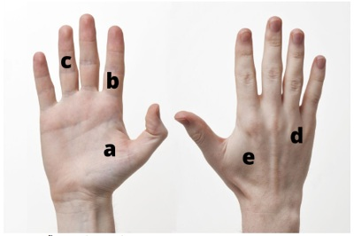
A A
B B
C C
D D
E E
Questão 1088 · Anatomia do Sistema Locomotor · 4000200080A respeito da inervação do membro superior, marque a alternativa que contém o nervo responsável por inervar a maioria dos músculos intrínsecos da mão e a parte medial do compartimento flexor do antebraço:
A Nervo radial
B Nervo ulnar
C Nervo mediano
D Nervo musculocutâneo
E Nervo toracodorsal
Questão 1089 · Anatomia do Sistema Locomotor · 4000200079O nervo musculocutâneo possui um nome curioso, que auxilia na memorização de suas funções: após inervar uma série de músculos, esse nervo torna-se cutâneo e realiza inervação sensitiva do antebraço. Com base nisso, assinale a alternativa que contém os músculos inervados pelo n. musculocutâneo, e o nervo cutâneo que tem origem a partir dele:
A Músculos: deltoide e redondo menor; nervo cutâneo medial do braço.
B Músculos: trapézio e escaleno; nervo cutâneo medial do antebraço.
C Músculos: braquiorradial, extensor dos dedos e supinador; nervo sural.
D Músculos: interósseos e lumbricais, ramo cutâneo palmar.
E Músculos: braquial, coracobraquial e bíceps braquial; nervo cutâneo lateral do antebraço.
Questão 1090 · Transporte através das membranas · 4000200078Uma pessoa portadora de diabetes mellitus do tipo 2 apresenta resistência à insulina, hormônio responsável por reduzir os níveis de glicose no sangue, quando esses se encontram mais elevados do que o normal. A resistência à insulina acontece porque o hormônio não consegue atuar adequadamente sobre seus receptores de membrana, prejudicando a entrada de glicose no meio intracelular, que permanece em alta concentração no tecido sanguíneo. A glicose entra nas células por meio de proteínas transportadoras, que apresentam 14 isoformas, denominadas GLUTs. O transporte de glicose para o interior celular acontece por
A difusão simples, um tipo de transporte passivo.
B bombas, em um transporte do tipo ativo.
C difusão facilitada, um tipo de transporte ativo.
D osmose, um tipo de transporte passivo.
E difusão facilitada, um tipo de transporte passivo.
Questão 1091 · Anatomia do Sistema Locomotor · 4000200077O nervo mediano é um dos principais responsáveis pela inervação sensitiva e motora do membro superior. Entretanto, devido ao seu trajeto anatômico este nervo se encontra sujeito a sofrer compressão pelas estruturas adjacentes. Marque a alternativa que contém a região na qual ocorre com maior frequência a compressão do nervo mediano:
A Fossa axilar.
B Posterior ao epicôndilo medial do úmero.
C Fossa cubital.
D Túnel do carpo.
E Entre os músculos escalenos anterior e médio.
Questão 1092 · Transporte através das membranas · 4000200076As hemácias, células vermelhas do sangue, encontram-se em solução que apresenta mesma concentração em solutos em relação a seu interior. Nessa condição, a quantidade de água que entra na célula por osmose é a mesma que dela sai. Considerando o movimento de água nessas células, é correto afirmar que:
A caso sejam colocadas em solução hipotônica, perderão água e ficarão murchas.
B caso sejam colocadas em solução isotônica, perderão água e ficarão murchas.
C caso sejam colocadas em solução hipertônica, receberão água e sofrerão hemólise.
D caso sejam colocadas em solução hipertônica, não sofrerão alteração de volume.
E caso sejam colocadas em solução hipotônica, receberão água e sofrerão hemólise.
Questão 1093 · Anatomia do Sistema Locomotor · 4000200075O cíngulo do membro inferior, ou cintura pélvica, é um conjunto de ossos que articulam o esqueleto axial com a parte livre dos membros inferiores, transferindo o peso do restante do corpo para estes últimos. Marque a alternativa que cita os ossos integrantes do cíngulo do membro inferior:
A Osso do quadril e fêmur.
B Sacro e osso do quadril.
C Coluna vertebral, osso do quadril e fêmur.
D Sacro, osso do quadril, fêmur, tíbia e calcâneo.
E Tíbia e fíbula
Questão 1094 · Anatomia do Sistema Locomotor · 4000200074A coluna vertebral normal possui curvaturas que conferem a ela um formato típico, e auxiliam nas funções que ela exerce. Marque a alternativa que descreve corretamente as curvaturas normais da coluna vertebral:
A Cifose cervical, lordose torácica, cifose lombar e lordose sacral.
B Cifose cervical, cifose torácica, lordose lombar e lordose sacral.
C Lordose cervical, cifose torácica, lordose lombar e cifose sacral.
D Lordose cervical, lordose torácica, cifose lombar e cifose sacral.
E Lordose cervical, cifose torácica, cifose lombar e lordose sacral.
Questão 1095 · Anatomia do Sistema Locomotor · 4000200073O sacro é um osso grande e triangular localizado na base da coluna vertebral, sendo formado, na maioria dos adultos, por cinco vértebras sacrais fundidas entre si. Marque a alternativa que descreve duas das principais funções do sacro:
A Sustentação de peso e rotação da coluna vertebral sobre o próprio eixo.
B Proteção mecânica da pelve e alojamento da medula espinhal.
C Articulação com o cíngulo do membro inferior e proteção de nervos espinhais.
D Alojamento da medula espinhal e fixação de músculos.
E Rotação da coluna vertebral sobre o próprio eixo e fixação de ligamentos da pelve.
Questão 1096 · Anatomia do Sistema Locomotor · 4000200072Cite duas características das vértebras do segmento lombar:
A São pequenas e pouco móveis.
B São móveis e, no adulto, estão fundidas entre si.
C Possuem capacidade de rotação em torno do próprio eixo e grandes corpos vertebrais.
D Possuem grandes corpos vertebrais e processos transversos longos.
E Não se movimentam e possuem processos espinhosos curtos.
Questão 1097 · Anatomia do Sistema Locomotor · 4000200071Assinale a alternativa que contém uma característica própria das vértebras torácicas, que as diferencie das vértebras dos demais segmentos da coluna:
A Presença de processo espinhoso.
B Capacidade de realizar movimentos de flexão e extensão.
C Atuam como ponto de fixação de músculos.
D Possuem os maiores corpos vertebrais.
E Presença de fóvea costal no processo transverso.
Questão 1098 · Aminoácidos e Proteínas · 4000200070Um dos tampões mais importantes do sangue é formado pelo ácido carbônico (H2CO3) e pelo sal desse ácido, o bicarbonato de sódio (NaHCO3). Em uma situação de doença pulmonar obstrutiva, como um en sema pulmonar, em que há grande aumento da concentração de gás carbônico no sangue, em virtude da não eliminação desse gás na expiração, uma acidemia importante pode acontecer (pH sanguíneo inferior a 6,9) e levar o indivíduo à morte. Alguns sintomas estão relacionados com a condição de acidemia, como arritmias cardíacas e redução do transporte de O2 pelo sangue. Esses sintomas ocorrem porque a variação brusca do pH promove:
A a perda de função das proteínas do tipo enzimas.
B a perda da estrutura primária das proteínas.
C a perda da estrutura secundária das proteínas.
D a perda da estrutura terciária das proteínas.
E a perda da estrutura quaternária das proteínas.
Questão 1099 · Membrana Celular · 4000200069A constituição da membrana é basicamente lipoproteica, sendo formada por uma bicamada de lipídios, onde estão inseridas proteínas, classificadas em periféricas e integrais de membrana. Acerca das funções das proteínas de membrana, assinale a alternativa correta.
A Algumas proteínas periféricas interagem com componentes do citoesqueleto, formando uma trama logo abaixo da membrana com a função de estabilizar a forma das células.
B As proteínas integrais ocupam posições fixas na membrana celular, não sendo possível sua movimentação pelo plano da bicamada de lipídios.
C As proteínas periféricas podem funcionar como receptores de superfície celular quando voltadas para o meio extracelular.
D As proteínas integrais apresentam um domínio extracelular, um domínio intracelular e um domínio hidrofílico inserido na bicamada lipídica.
E As proteínas periféricas podem funcionar como receptores de superfície celular quando voltadas para o meio intracelular.
Questão 1100 · Estrutura da Célula Eucariótica · 4000200068À exceção de bactérias, os organismos vivos são eucariontes, isto é, possuem célula do tipo eucariótica, cuja estrutura básica é a mesma. Entretanto, algumas diferenças podem ser observadas entre as células eucariontes dos diferentes grupos de organismos, como de plantas e animais. Quando tratamos de uma célula eucariótica animal, é incorreto afirmar que:
A possuem organelas membranosas.
B possuem citoesqueleto.
C não possuem centríolos.
D não possuem parede celular.
E não possuem cloroplastos.
Questão 1101 · Estrutura da Célula Eucariótica · 4000200067Bactérias, diferentemente dos demais seres vivos que compõem a grande árvore da vida, apresentam uma estrutura celular mais simples, do tipo procariótica. É correto afirmar que, nas bactérias:
A os ribossomos possuem tamanho de 80S.
B o material genético encontra-se em uma região denominada nucleoide.
C a parede celular é composta predominantemente por quitina.
D estruturas locomotoras nunca estão presentes.
E moléculas menores de DNA extracromossômicos são chamadas de nucleoide.
Questão 1102 · Biologia Celular · 4000200066Segundo a Teoria Celular, estabelecida por Schleiden e Schwann em 1838, a célula é a unidade básica da vida, o que significa que todos os seres vivos são compostos por uma ou mais células. Qual é outro princípio postulado pela teoria celular?
A Um ser vivo pode surgir a partir de matéria inanimada.
B As células contêm informações hereditárias em moléculas de RNA.
C Todos os seres vivos apresentam célula com membrana, citoplasma e núcleo.
D Todas as células surgem apenas a partir de outras preexistentes.
E Seres unicelulares possuem células mais simples, do tipo procariótica.
Questão 1103 · Determinantes Sociais do Processo SaúdeDoençaCuidado · Medicina Preventiva · 4000194250Uma médica iniciou suas atividades em uma equipe de Saúde da Família (ESF) de um grande centro urbano. Na primeira reunião de equipe, questionou de que forma os trabalhadores organizavam seu processo de trabalho para compreender as especi cidades e necessidades da população da área adstrita, do ponto de vista dos determinantes sociais da saúde (DSS). Os pro ssionais participantes da reunião não conseguiram responder a essa pergunta. A seguir é apresentado o modelo de determinantes sociais da saúde (DSS), proposto por Dahlgren e Whitehead. BUSS e PELLEGRINI FILHO, Saneamento e saúde ambiental. Disponível e m: <https://publica.ciar.ufg.br/ebooks/saneamento-e- saude-ambiental/modulos/4_modulo_saude/01.html.> Acesso em 03 fev. 23 (adaptado). Considerando o modelo de determinação social da saúde apresentado, os profissionais dessa ESF deveriam
A considerar que apenas os fatores genéticos, estilo de vida e as redes sociais e comunitárias devem ser avaliadas para se reconhecerem as especificidades da população da área adstrita.
B entender que, apesar das condições de vida e trabalho serem importantes para os DSS, elas não influenciam ou orientam as atividades desenvolvidas no território.
C considerar que os fatores hereditários; estilo de vida; condições socioeconômicas, culturais e ambientais gerais, são os fatores mais importantes para a determinação das suas ações.
D entender que os indivíduos e suas características individuais de idade, sexo e fatores hereditários estão na base do modelo, e os estilos de vida individuais estão situados no limiar entre os fatores individuais e os DSS.
Questão 1104 · Território e Vulnerabilidade · 4000190101No Brasil, a territorialização é um pressuposto básico do Programa de Saúde da Família (PSF). Sobre a territorialização, assinale a alternativa CORRETA:
A As ações de vigilância em saúde, primordialmente, deverão ser estabelecidas sobre uma base territorial local de saúde.
B O território microárea é a unidade operacional pela qual uma equipe de saúde da família é responsável.
C A territorialização é uma ferramenta utilizada pelos países subdesenvolvidos para a promoção da saúde.
D O distrito sanitário deve ser resolutivo na promoção e prevenção do cuidado a nível primário, direcionando demais questões às regionais.
Questão 1105 · Malf ormações f etais · Teratologia · 4000189149Sobre os agentes teratogênicos, é CORRETO afirmar:
A A maioria dos compostos estrogênicos afeta o desenvolvimento embrionário, como, por exemplo, os anticoncepcionais orais hormonais.
B A teratogênese de um agente deve ser avaliada em três importantes princípios: período crítico do desenvolvimento, dose ou magnitude da exposição e genótipo do embrião.
C A caxumba é uma infecção aguda causada por vírus RNA, porém, não aumenta o risco de abortamento espontâneo e óbito intrauterino.
D De todos os agentes teratogênicos, o uso de álcool não merece grande atenção pois não é um dos maiores causadores de deficiência mental em crianças.
Questão 1106 · Organização geral do SUS · 4000189093A m de promover o relacionamento harmônico entre as diversas partes interessadas, a direção de um hospital pode trabalhar com uma estrutura organizacional matricial, definida com base em seus processos, objetivando a aproximação das diversas áreas através do estabelecimento de lideranças. Quanto à identificação das pessoas com potencial de liderança, é CORRETO afirmar:
A As pessoas com potencial de liderança devem ser escolhidas entre aquelas que apresentam a personalidade de submissão independentemente do tipo de ordem recebida.
B Os usuários devem indicar as pessoas com potencial de liderança.
C As pessoas com potencial de liderança podem ser identificadas por meio da avaliação de desempenho dos colaboradores.
D É aconselhável que as pessoas com potencial de liderança sejam indicadas por critérios de conveniência.
Questão 1107 · Medidas de Associação Risco Relativo Razão de Prevalência e Odds Ratio · 4000188399Um médico analisa os dados de mortalidade da área de cobertura de sua UBS (Unidade Básica de Saúde) e vê que uma determinada doença é responsável por uma grande porcentagem das mortes. Ele resolve fazer um programa para detectar o mais precocemente possível as pessoas que apresentam essa doença. O programa vai se basear na aplicação de um teste diagnóstico. Qual a principal característica que esse teste deve ter?
A Alta especificidade.
B Alta sensibilidade.
C Risco relativo elevado.
D Valor preditivo negativo elevado.
Questão 1108 · Atributos da APS · 4000188371São atribuições do Médico, no contexto de Atenção Primária à Saúde, na condução do pré-natal:
A Solicitar exames complementares e orientar o tratamento, caso necessário.
B Identificar as gestantes de alto risco e manter o acompanhamento exclusivo na APS, e encaminhar ao serviço de referência apenas em caso de complicação.
C Identificar as gestantes com exame de citopatologia do colo do útero atrasado, e programar a coleta para a primeira consulta de revisão pós-parto.
D Realizar todas as consultas da gestante durante o pré-natal de baixo risco, sem intercalar com a enfermagem.
Questão 1109 · Revisão Sistemática e MetaAnálise · 4000188284Qual a opção errada da relação entre revisão narrativa e sistemática: Revisão narrativa; I) Fornece um panorama geral, cobrindo um tópico; II) Enfatiza um conhecimento por sequencia tais como causa de doença, manifestações clinicas, siopatologia, tratamento e prognostico; III) suscetível ao viés na seleção e na avaliação dos estudos; IV) geralmente não leva em conta tamanho e poder dos estudos, além do seu delineamento; V) É objetiva em responder uma ou poucas questões; Revisão sistemática; É objetiva em responder uma ou poucas questões; Enfatiza tópicos específicos, tais como nos pacientes com determinada doença e qual dos tratamentos disponíveis tem maior beneficio; Usa métodos rigorosos, reprodutíveis para minimizar o viés, tornando as conclusões mais valiosas; Geralmente critérios especificados propiciam valorização de estudos com maior rigor cientifico; Suscetível ao viés na seleção e na avaliação dos estudos.
A I
B II
C III
D IV
E V
Questão 1110 · Equipe de Saúde na APS · 4000187953São ações a serem desenvolvidas pelas Equipes de Saúde da Família (ESF): I. Avaliar e acompanhar sistematicamente as ações implementadas, visando à readequação do processo de trabalho; II. Realizar o cuidado da saúde da população adscrita, prioritariamente no âmbito da unidade de saúde, e, quando necessário, no domicílio e nos demais espaços comunitários (escolas, associações, entre outros); III. Responsabilizar-se pela população adscrita, mantendo a coordenação do cuidado somente quando o paciente estiver no território de cobertura; IV. Realizar ações de atenção à saúde conforme determinado pela equipe sem articulação com a população, bem como as previstas nas prioridades e protocolos da gestão local. Está CORRETO o contido em:
A I e II;
B II e III;
C II e IV;
D III e II.
Questão 1111 · Ciclo Básico Graduação em Medicina · 4000187903Os termos cientí cos, amplamente utilizados na Medicina, são formados em sua grande maioria por radicais oriundos do grego e do latim. O conhecimento destes radicais torna mais fácil o entendimento e a memorização da terminologia médica. A esse respeito avalie as assertivas abaixo, associe as colunas e escolha a alternativa que contém a sequência correta: I. Adipo; II. Bleno; III. Carcino; IV. Escolio; V. Xeno; [ ] Fluxo mucoso; [ ] Torcido; [ ] Caranguejo; [ ] Estranho; [ ] Gordura; (Porto, C.C.; Rezende, J.M. Glossário de termos e expressões populares de interesse médico. EM: Porto, C.C.; Porto, A.L. Exame clínico. Guanabara Koogan. Capítulo 23. Sétima edição. 2016.)
A I, III, II, IV, V
B II, IV, III, V, I
C IV, II, V, I, III
D V, I, IV, III, II
E Nenhuma das alternativas acima está correta.
Revisar: possível letra faltando em enunciado
Questão 1112 · Anatomia Vascular do Trato Gastrointestinal · Anatomia do Sistema Digestório · 4000187533A artéria mesentérica superior tem origem na aorta abdominal. Emite ramos arteriais para todo o delgado e a metade proximal do cólon. Seus ramos principais são, exceto:
A Ramos jejunoileais.
B Ileocólica e apendicular.
C Cólica direita.
D Cólica esquerda.
Questão 1113 · Anatomia e Fisiologia do Intestino Delgado e Grosso · Anatomia do Sistema Digestório · 4000187519As artérias mesentéricas superior e inferior possuem ampla rede anastomótica que permite uxo de sangue entre a circulação mesentérica. Assinale a alternativa correta.
A A artéria de Riolan conecta o ramo esquerdo da artéria cólica média a artéria cólica esquerda.
B Ponto de Griffith: é o ponto mais distal da artéria retal superior, que corresponde à área de irrigação arterial da junção retossigmoide.
C Ponto de Sudeck: é justamente o ponto do cólon que corresponde à junção dos territórios das artérias mesentérica superior e inferior, ao nível do ângulo esplênico. Em tese é o ponto menos vascularizado do cólon.
D O arco de Riolan compreende a rede anastomótica entre as artérias cólica direita, cólica média e cólica esquerda.
Questão 1114 · Cirurgia Cardíaca · Anatomia do Sistema Cardiovascular · 4000187071Sobre as considerações anatômicas para a cirurgia cardíaca, assinale a correta.
A O seio coronário é responsável pela irrigação do átrio direito.
B A valva atrioventricular esquerda possui três cúspides: septal, anterolateral e posteromedial.
C O nó sinusal se localiza na junção da veia cava superior com o átrio direito.
D A valva aórtica tem sua topografia normal no tronco de saída do ventrículo direito.
Questão 1115 · Exame Abdominal · 4000187051Na propedêutica das doenças do aparelho digestivo, o sinal de Courvoisier é melhor descrito em:
A Dor no ponto de McBurney quando comprimindo o abdômen inferior esquerdo.
B Dor causada pela inspiração e aplicando pressão ao abdome superior direito.
C Vesícula biliar palpável na presença de icterícia.
D Dor causada pela tração delicada do testículo direito.
Questão 1116 · Estrogênios · 4000187043Em paciente na pós-menopausa, a principal fonte de estrógenos é:
A ovários.
B supra-renal.
C tecido adiposo.
D fígado.
Questão 1117 · Aconselhamento Genético · 4000186984A incorporação do sequenciamento de última geração têm aumentado a sensibilidade dos testes genéticos, possibilitando o diagnóstico precoce com perspectiva de intervenção. Sendo correto que:
A Consequentemente, a avaliação molecular passa a fazer parte da rotina de avaliação de pacientes com miocardiopatias não hereditárias.
B Consequentemente, a avaliação molecular não passa a fazer parte da rotina de avaliação de pacientes com miocardiopatias hereditárias, tais como: miocardiopatias hipertróficas, arritmogênica dilatada.
C Consequentemente, a avaliação molecular passa a fazer parte da rotina de avaliação de pacientes com miocardiopatias hereditárias, tais como: miocardiopatias hipertróficas, arritmogênica dilatada e/ou restritiva e miocárdio não compactado, em função do seu potencial de fornecer aconselhamento mais individualizado e preciso aos pacientes e familiares com estas doenças.
D Consequentemente, a avaliação molecular passa a fazer parte da rotina de avaliação de pacientes com miocardiopatias hereditárias, tais como: miocardiopatias hipertróficas, arritmogênica dilatada e/ou restritiva e miocárdio não compactado, em função de nunca fornecer aconselhamento mais individualizado e preciso aos pacientes e familiares com estas doenças.
Questão 1118 · Heranças Multif atoriais · 4000186910Existem ainda efeitos genéticos que ocorrem intraútero e que podem persistir por gerações. Sendo correto que:
A 2Algumas influências sobre a obesidade podem ocorrer no útero ou até mesmo duas gerações passadas quando os oócitos são formados na avó.
B Nenhuma influência sobre a obesidade podem ocorrer no útero ou até mesmo duas gerações passadas quando os oócitos são formados na avó.
C Algumas influências sobre a obesidade podem ocorrer no útero, mas não de gerações passadas quando os oócitos são formados na avó.
D Algumas influências sobre a obesidade nunca podem ocorrer no útero ou até mesmo de duas gerações passadas quando os oócitos são formados na avó.
Questão 1119 · Neurof isiologia · Comunicação Sináptica · Neurotransmissores · 4000186865Das alternativas apresentadas abaixo, qual não faz parte do diagnóstico diferencial de Hiperatividade Simpática Paroxística?
A Fratura óssea.
B Síndrome de abstinência.
C Síndrome da resposta inflamatória sistêmica.
D Anemia falciforme.
Questão 1120 · Modif icações f isiológicas · Estrogênios · 4000186837A conversão de androstenediona em estrona, no tecido adiposo, é a principal via de produção estrogênica:
A na menopausa.
B na puberdade.
C no menacme.
D durante a gravidez.
Questão 1121 · Revisão Sistemática e MetaAnálise · 4000186354São critérios metodológicos para avaliação crítica de revisões sistemáticas, EXCETO:
A checar se a revisão é de ensaios clínicos randomizados com desfechos clínicos relevantes.
B não levar em conta a importância estatística do efeito da terapia.
C avaliar se a determinação dos efeitos da intervenção foi feita de maneira objetiva e reprodutível.
D analisar se a abrangência dos efeitos demonstrada permite uma avaliação sobre os benefícios e/ou danos reais da intervenção na prática.
E considerar se a magnitude do efeito da terapia era clinicamente relevante.
Questão 1122 · SemiologiaPropedêutica Médica · Manif estações Clínicas e Exame Físico · 4000186066Paciente de 64 anos é admitido em serviço de urgência com quadro de dor abdominal. Refere que essa dor já dura meses, sempre após se alimentar, localizada na região do hipocôndrio direito e epigástrio. No entanto, hoje ela iniciou e já dura 18 horas, sem alívio com medicamentos analgésicos que fez uso em casa. Ao exame físico, o paciente apresenta-se com fascies de dor, sem icterícia, febril e com sinal de Murphy presente. Qual das alternativas melhor descreve o sinal de Murphy apresentado pelo paciente?
A Interrupção abrupta da inspiração forçada enquanto o examinador palpa o ponto cístico.
B Dor a palpação da região do hipocôndrio direito.
C Dor a percussão da região subcostal direita em decúbito dorsal.
D Dor a palpação da região delimitada no terço inferior da linha entre a espinha ilíaca anterossuperior e a cicatriz umbilical.
E Dor a palpação profunda da região localizada a 3 centímetros do rebordo costal direito em direção à cicatriz umbilical.
Questão 1123 · Higienização das Mãos e Paramentação · Medidas Gerais de Prevenção de Inf ecção do Sítio Cirúrgico ISC · 4000185789Em 1846, Ignaz Semmelweis, médico húngaro, reportou a redução no número de mortes maternas por infecção puerperal após a implantação da prática de higienização das mãos em um hospital em Viena. Desde então, esse procedimento tem sido recomendado como medida primária no controle da disseminação de agentes infecciosos. Todo médico deve reconhecer a importância destes cuidados, e, evidentemente, praticá-los em suas atividades. Acerca deste tema, assinale a afirmativa correta:
A Preparo pré-operatório de mãos ou antissepsia cirúrgica das mãos é uma prática obrigatória antes de qualquer cirurgia de médio e grande porte, e tem por objetivo eliminar as microbiotas transitória e residente das mãos do cirurgião.
B Para o preparo pré-operatório de mãos, a clorexidina é o agente antisséptico mais usado por ter efeitos excelentes contra bactérias gram-positivas, gram-negativas, micobactérias e fungos, sendo, inclusive, esporicida.
C A mais recente atualização da Norma Regulamentadora (NR) 32 permite que profissionais utilizem unhas postiças como adornos, desde que estejam curtas e limpas, no contato com o paciente.
D O ceticismo dos profissionais de saúde a respeito da importância da higienização de mãos é um dos fatores apontados por eles próprios para a baixa adesão a esta prática.
Questão 1124 · Anatomia da Pelve · Anatomia do trato genital f eminino · 4000185529Com a posição ereta do ser humano, desenvolveu-se o assoalho pélvico como estrutura de sustentação para evitar o prolapso dos órgão pélvicos. O equilíbrio entre arcabouço ósseo e tecido bromuscular permite a manutenção das funções orgânicas. Em relação à anatomia e fisiologia pélvicas na mulher, assinale a alternativa ERRADA:
A A função de suspensão do complexo uterovaginal, bexiga e reto é formada pelo tecido endopélvico e pela fáscia endopélvica
B As espinhas isquiáticas são estruturas exclusivas do ser humano
C O hiato urogenital é uma abertura central do assoalho pélvico que permite ocorrer funções fisiológicas como, coito, esvaziamento vesical e o parto
D O ligamento uterossacral é responsável pela suspensão lateral do colo uterino, surgindo na parede lateral pélvica e se inserindo lateralmente ao colo do útero
Questão 1125 · História Natural da Doença Prevenção e Promoção de Saúde na APS · Política Nacional de Promoção de Saúde · 4000184771Pode-se afirmar, sobre a Promoção da Saúde, que é:
A realizada, tradicionalmente, no âmbito dos centros sociais, sob coordenação de vereadores ligados ao território e atuando em prol da autonomia da comunidade e dos cidadãos.
B definida como processo de capacitação da comunidade para atuar na melhoria de sua qualidade de vida e saúde, incluindo uma maior participação no controle desse processo.
C considerada como cuidado realizado no âmbito da comunidade, fora do espaço físico dos serviços de saúde, sejam eles clínicas da família, ambulatórios especializados ou hospitais.
D relativa às ações de autocuidado realizadas no período patogênico, para interromper o processo mórbido, evitar futuras complicações e sequelas, limitar a invalidez e evitar a morte.
Questão 1126 · Estudos de f ase II · Ensaios clínicos Fase I a Fase IV · Outros · 4000184762A vacina contra a COVID-19 produzida pelo Instituto Butantan em parceria com a farmacêutica chinesa Sinovac foi avaliada em diversas pesquisas e análises populacionais. Um dos principais estudos foi o ensaio clínico de fase 3 realizado, em 2020, pelo Butantan em parceria com 16 centros de pesquisa brasileiros, que testou o imunizante em cerca de 13 mil voluntários (Fonte: Instituto Butantan, 22/06/2021). Pode-se afirmar, sobre os ensaios clínicos, que os de fase:
A 3 são ensaios de efetividade.
B 2 são ensaios-piloto de eficácia.
C 1 são ensaios de imunogenicidade.
D 4 são ensaios controlados e randomizados.
Questão 1127 · Prevalência · Outros · Medidas de Ocorrência de Doenças Incidência e Prevalência · 4000184759Em relação à medida prevalência de uma doença, analise as afirmativas a seguir: I) elevadas taxas de incidência não implicam em altas proporções de prevalência quando a duração do problema de saúde em questão é curta; II) elevadas proporções de prevalência podem se sobrepor a baixo níveis de incidência quando a duração de uma doença é longa; III)a imigração de casos ou a emigração de não-doentes leva a uma redução na proporção de prevalência. Pode-se afirmar que estão corretas as afirmativas:
A I e III
B I e II
C II e III
D I, II e III
Questão 1128 · Anatomia e Fisiologia do Pâncreas Exócrino · Anatomia do Sistema Digestório · 4000183516Qual é o suprimento arterial do pâncreas?
A Tronco celíaco e artéria mesentérica superior;
B Artérias mesentéricas superior e inferior;
C Artérias gástricas e gastroduodenais curtas;
D Artérias gastroepiplóicas e duodenais
Questão 1129 · Cef aleia por Hipotensão Liquórica · Neurologia · Líquor e Ventrículos · 4000183289Um paciente de 45 anos de idade, que tinha realizado cirurgia de exérese de tumor de hipó se havia sete dias, via transfenoidal, compareceu ao pronto-socorro com queixa de cefaleia intensa, febre de 38,5 oC e rinorreia clara e volumosa. Estava consciente, orientado, sem sinais localizatórios. Iniciou-se antibioticoterapia endovenosa e foi realizada internação para investigação diagnóstica. Considerando esse caso hipotético, assinale a alternativa que apresenta a medicação que deve ser utilizada junto ao tratamento dessa complicação.
A dexametasona
B furosemida
C acetazolamida
D manitol
E desferroxamina
Questão 1130 · Anatomia do Sistema Reprodutor Masculino · Cirurgia · 4000182828Hipospadia se caracteriza
A pela localização ectópica do meato uretral, abaixo do centro da glande.
B pela curvatura peniana ventral com um meato uretral ortotópico.
C por um prepúcio intacto.
D pelo alto risco de anomalias associadas, além do trato geniturinário.
Questão 1131 · Semiologia Neurológica · Escroto · Cirurgia · 4000182592Uma boa anamnese e um exame físico detalhado são passos essenciais para a avaliação de pacientes com queixas álgicas em geral. O tipo de dor, a sua localização e a irradiação podem sugerir a existência de patologias em determinados órgãos e sistemas. Assinale a alternativa que apresenta a associação correta entre a localização da dor referida e o possível órgão acometido.
A Ombro direito – pâncreas.
B Ombro esquerdo – estômago.
C Periumbilical – cólon.
D Fossa ilíaca direita – vesícula biliar.
E Escroto – ureter.
Questão 1132 · Território e Vulnerabilidade · 4000182482Segundo as diretrizes do Ministério da Saúde para a organização e funcionamento das Equipes de Consultório na Rua (eCR), é correto afirmar que
A esse serviço foi organizado em decorrência das novas necessidades de atenção impostas pela pandemia da Covid-19.
B s atividades das eCR pautam-se exclusivamente pela demanda espontânea da população em situação de rua.
C as eCR não podem se utilizar das instalações das unidades básicas de saúde da sua região de atuação.
D uma das motivações para sua criação foi a demanda do Movimento Nacional da População em Situação de Rua.
E as eCR não devem atender os usuários de crack, que devem ser encaminhados aos Centros de Atenção Psicossocial (CAPS
Questão 1133 · Saúde ColetivaAtenção Primária à Saúde · Atenção Primária à Saúde APS no Brasil · 4000182473Em uma Unidade Básica de Saúde – UBS há uma grande demanda espontânea. De forma a organizar a ordem de atendimento, esta unidade deve
A atender rigorosamente, de acordo com a ordem de chegada dos usuários, para evitar injustiças.
B atender prioritariamente idosos e crianças em função de sua maior vulnerabilidade.
C preocupar-se com o acesso com equidade podendo, já na recepção da unidade, uma atendente, um porteiro ou um segurança identificar situações que apresentam maior risco ou que geram sofrimento intenso.
D estabelecer critérios de prioridade no atendimento que devem ser aplicados exclusivamente pelos médicos ou enfermeiros, ou dentistas quando se tratar que problema odontológico.
E recusar-se a atender quem não agendou previamente o comparecimento à unidade, orientando para que a demanda espontânea seja transferida para prontos-socorros ou unidades de pronto atendimento.
Questão 1134 · Mecanismos de resistência · Antibióticos e Resistência bacteriana · 4000182266As bactérias encontradas em feridas crônicas podem ser encapsuladas por uma camada protetora formada pelo hospedeiro e proteínas bacterianas. Essa camada é chamada de:
A debris
B fibrina
C biofilme
D abscesso
Questão 1135 · Medidas de Ocorrência de Doenças Incidência e Prevalência · 4000181789Em 01/01/2021, existiam 800 casos de hanseníase em determinado município. Ao longo deste ano foram noti cados 200 casos novos dessa doença e 400 casos tiveram alta por cura. A população residente estimada para esse município era de 100.000 habitantes. Qual a taxa de prevalência de hanseníase no final de 2021?
A 0,6 %.
B 0,8 %.
C 1,0 %.
D 1,4 %.
Questão 1136 · Embriologia · Fase de Segmentação e Mórula · Ginecologia · 4000198062Sobre o blastocisto, é CORRETO afirmar que:
A Acontece por volta do quinto dia de desenvolvimento embrionário.
B Acontece por volta do décimo dia de desenvolvimento embrionário.
C Contém 12 a 16 blastômeros.
D O processo nomeado clivagem dá origem ao blastocisto.
E Pode ser chamado de mórula.
Questão 1137 · Comunicação e Relacionamento MédicoPaciente · 4000193783Paciente de 43 anos, entra na sala de emergência em parada cardiorrespiratória. Ritmo da PCR assistolia. Paciente após 30 minutos de ressuscitação não retorna à circulação espontânea. Você tem que dar a notícia para a esposa. Qual o protocolo que utilizamos para fazer a comunicação de más notícias?
A CALM
B DEATH
C SPIKES
D MASCC
Questão 1138 · Habilidades de Enf ermagemBiossegurança · 4000193441Punções e dissecções venosas são procedimentos de extrema importância e com múltiplas nalidades no diagnóstico e tratamento de diversas doenças. Subestimar o procedimento, desde uma simples punção venosa periférica até uma dissecção venosa cirúrgica, é um erro que deve ser evitado por todos os profissionais da área da saúde. No tocante ao assunto, é incorreto afirmar:
A Um acesso venoso cuja ponta se localiza em uma veia central é considerado um acesso central, independentemente de sua inserção ter ocorrido através de uma veia central ou periférica.
B O port-a-cath é um exemplo de cateter totalmente implantável, utilizado para acesso intermitente, como no tratamento quimioterápico, não podendo ser utilizado para uso contínuo, infusão de soluções ou derivados do sangue.
C A veia subclávia constitui a via de acesso que oferece menor taxa de infecção e de trombose, porém, apresenta o maior risco de pneumotórax e complicações hemorrágicas. Esta punção pode ser infra ou supraclavicular.
D Para a abordagem posterior da veia jugular interna, o ponto de punção deve ser a borda posterior do ramo clavicular do músculo esternoclidomastóideo, próximo ao cruzamento da veia jugular externa, direcionando a agulha em direção à fúrcula esternal.
Questão 1139 · Cistite · Antibióticos e Resistência bacteriana · 4000193193A exposição a antimicrobianos é um dos mecanismos responsáveis pelo surgimento de mutações e expressão de resistência bacteriana aos antibióticos. Sobre o tratamento de infecções causadas por enterobactérias produtoras de betalactamases de espectro estendido (ESBL) e enterobactérias resistentes aos carbapenêmicos (ERC) podemos dizer que:
A o tratamento de escolha da pielonefrite, causada por ESBL, é Ertapenem ou Meropenem, podendo ser utilizada a Fosfomicina como alternativa terapêutica.
B ciprofloxacino não deve ser utilizado para infecções do trato urinário causadas por ERC, mesmo que seja uma cistite não complicada.
C o cefepime deve ser evitado para tratamento de infecções causadas por ESBL, mesmo se a sensibilidade ao cefepime esteja demonstrada. Porém, se o cefepime tiver sido iniciado empírico para cistite, causada por uma ESBL posteriormente identificada e tiver havido melhora clinica, não é necessário escalonar a terapia.
D não está indicado o uso de Ceftazidima-avibactam para ERC, pois a ceftazidima é uma cefalosporina de terceira geração e, portanto, demonstra resistência às cepas produtoras de carbapenemases.
Questão 1140 · Processos de Descentralização e Regionalização do SUS · Redes de Atenção à Saúde RAS · Território e Vulnerabilidade · 4000193098A imagem abaixo corresponde à territorialização do Centro de Saúde Saco Grande em Florianópolis: De acordo com a imagem, as linhas divisórias com numerações delimitam:
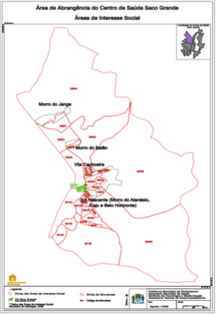
A Território-área, que corresponde à área de abrangência do Centro de Saúde Saco Grande.
B Território-microárea, que geralmente é assimétrico e delimitado de acordo com as condições socioeconômicas e sanitárias da região.
C Território-moradia, que se institui no espaço de vida de uma família, um território conceitualmente delimitado.
D Território-distrito: uma delimitação político-administrativa abrangendo mais de um Centro de Saúde ou município.
Questão 1141 · Morte e Luto · Luto · Fases do Luto · 4000192958Você é residente de Medicina e Família e Comunidade (MFC) do primeiro ano e acompanha há 1 ano a família Rodrigues no processo de adoecimento da matriarca e, agora, falecimento. A Sra. Antônia já vinha há algum tempo lidando com uma Doença Pulmonar Obstrutiva Crônica (DPOC) grave, com recorrentes exacerbações e importantes limitações funcionais. Recebeu alta da última internação para acompanhamento do m da sua vida em sua casa, junto da família. A sua equipe já havia feito algumas visitas domiciliares e tinha um bom vínculo com os Rodrigues. Você vinha abordando com Jurema, a principal cuidadora e a lha mais velha da Sra. Antônia, a possibilidade de óbito de sua mãe, o que de fato veio a ocorrer na noite passada. Agora Jurema vem ao posto de saúde, acompanhada da bisneta de Antônia, Joana (7 anos), solicitando o atestado de óbito. Jurema conta sobre os últimos momentos da mãe e como estão os preparativos funerais. Além disso, aponta para Joana e, falando em voz baixa, refere preocupação em expor o ocorrido para a bisneta, que tinha uma ótima relação com a bisavó. Sobre esse caso, é possível afirmar:
A O fato de ter sido a principal cuidadora pode dificultar o processo de readaptação de Jurema, devendo-se atentar a essa variável, já que cerca de 10% das pessoas podem desenvolver luto complicado ou prolongado.
B O luto é um processo fisiológico e tem duração de 12 meses. Caso o processo de luto de Jurema se estenda para além desse período, será um luto complicado que deverá ter avaliação profissional.
C Em geral, a declaração de óbito é fornecida por meio da avaliação presencial do corpo pelo médico. Nesse caso, porém, como o caso já era acompanhado pela equipe, o documento pode ser emitido com base no relato de Jurema.
D Ao abordar a morte da bisavó com Joana, deve-se evitar usar termos agressivos ou diretos, preferindo metáforas para descrever o ocorrido, facilitando assim seu entendimento.
Questão 1142 · Gametogênese e Fecundação · 4000192213Considerando a temática da Reprodução Humana e sua fisiologia, é incorreta a afirmativa dada em:
A As espermatogônias, células primordiais que darão origem aos espermatozoides, permanecem dormentes nos túbulos seminíferos nos testículos desde o período fetal tardio até antes da puberdade.
B Oôgenese é a sequência de eventos pelos quais as oogônias se diferenciam em oócitos.
C Em relação à constituição de cromossomos sexuais, existem dois tipos de espermatozoides normais, 22 autossômicos mais um cromossomo sexual X (23, X) ou um cromossomo sexual Y (23, Y).
D A gametogênese origina duas células: o espermatozoide e o oócito. São chamados de gametas e cada um contém metade do número típico de cromossomos. Esse número é reduzido pela metade por meio de um tipo de divisão celular conhecida como mitose.
E Após a menarca (época do primeiro período menstrual), a mulher passa, mensalmente, por ciclos reprodutivos regulados pelo hipotálamo, pela glândula hipófise e pelos ovários.
Questão 1143 · Princípios e Diretrizes do SUS · 4000192164A Atenção Primária à Saúde (APS) é o primeiro nível de atenção em saúde e se caracteriza por um conjunto de ações de saúde, no âmbito individual e coletivo, que abrange a promoção e a proteção da saúde, a prevenção de agravos, o diagnóstico, o tratamento, a reabilitação, a redução de danos e a manutenção da saúde com o objetivo de desenvolver uma atenção integral que impacte positivamente na situação de saúde das coletividades. Ela se organiza em torno de quatro atributos essenciais que são:
A Acesso, territorialidade, integralidade, relação médico-pessoa.
B Competência cultural, equidade, universalidade, acesso.
C Acesso, integralidade, longitudinalidade, coordenação do cuidado.
D Relação médico-paciente, método clínico centrado na pessoa, longitudinalidade, porta de entrada.
Questão 1144 · Genética do Câncer · 4000192139Ao longo século, a evolução das pesquisas em biologia molecular possibilitou muitas aplicações a beira leito com considerável impacto clinico no tratamento em oncologia. Neste contexto, conhecimento sobre a genética do câncer demonstrou que a base siopatológica tem forte associação com consecutivas alterações somáticas no DNA resultando em proliferações celulares irrestritas. Este conceito hoje muito claro, foi uma das bases ou ponto de partida das pesquisas que resultaram nos desfechos clínicos atuais. Entretanto, ainda há muito o que descobrir e avançar no tratamento do câncer. Considerando a temática da genética oncológica e sua importância na prática clínica em oncologia, resposta as questões abaixo. Sobre as classes de genes ligados ao câncer podemos afirmar que:
A São duas classes; uma ligada diretamente ao crescimento celular e uma conhecida como ""caretaker"" que afeta a capacidade da célula em manter a integridade do genoma.
B Uma classe: Ligada ao crescimento celular onde se subdivide em mecanismo bax apoptótico e bcl2 antiapoptótico.
C Uma classe: Atua diretamente na capacidade da célula em manter a integridade do genoma.
D Nenhuma das alternativas é correta.
Questão 1145 · Genética do Câncer · 4000192138Ao longo século, a evolução das pesquisas em biologia molecular possibilitou muitas aplicações a beira leito com considerável impacto clinico no tratamento em oncologia. Neste contexto, conhecimento sobre a genética do câncer demonstrou que a base siopatológica tem forte associação com consecutivas alterações somáticas no DNA resultando em proliferações celulares irrestritas. Este conceito hoje muito claro, foi uma das bases ou ponto de partida das pesquisas que resultaram nos desfechos clínicos atuais. Entretanto, ainda há muito o que descobrir e avançar no tratamento do câncer. Considerando a temática da genética oncológica e sua importância na prática clínica em oncologia, resposta as questões abaixo. Sobre a epigenética e os mecanismos de manifestação de doenças podemos afirmar que:
A Uma modificação epigenética se refere a uma mudança no genoma, herdada pela progênie celular, que não envolve mudança na sequência de DNA.
B Uma modificação epigenética se refere a uma mudança no genoma, herdada pela progênie celular, que envolve mudança na sequência de DNA.
C Uma modificação epigenética se refere a uma mudança no genoma, herdada pela progênie celular, que geralmente envolve mudança na sequência de DNA.
D Uma modificação epigenética se refere a uma mudança no genoma, herdada pela progênie celular, que geralmente não envolve mudança na sequência de DNA.
Questão 1146 · Farmacocinética Absorção Distribuição Metabolismo e Excreção · Heparinas · 4000192087Quando a TFGe chegar em 15mL/ min/1,73m2, devemos evitar o uso de enoxaparina. Está correto que:
A Uma alternativa nessa condição é a Heparina Não Fracionada HNF, pois tem metabolismo exclusivamente renal.
B Uma alternativa nessa condição não é a Heparina Não Fracionada HNF, pois tem metabolismo exclusivamente hepático.
C Uma alternativa nessa condição é a Heparina Não Fracionada HNF, pois tem metabolismo exclusivamente hepático.
D Uma alternativa nessa condição é a Heparina Não Fracionada HNF, pois tem metabolismo não exclusivamente hepático.
Questão 1147 · Redes de Atenção à Saúde RAS · Território e Vulnerabilidade · Regionalização do SUS · 4000192005A organização das ações de saúde pressupõe uma adequada apropriação do território, sobretudo na atenção primária. Dessa forma, é fundamental considerar toda a pluralidade que envolve tanto as dimensões socioeconômicas, políticas e epidemiológicas, quanto os aspectos culturais, os valores e símbolos que permeiam as relações e que geram impacto nos níveis de saúde das pessoas e na produção de cuidado (LACERDA et al, 2010). Sobre as dimensões do território e suas relações com a cidadania e a saúde, analise as assertivas e identifique com V as verdadeiras e com F as falsas. ( ) Para organizar as ações de cuidado, as equipes de saúde devem compreender o território como um espaço social em contínua transformação. ( ) Realizar a atenção em saúde a partir da identi cação dos problemas presentes no território fragiliza a participação popular e o controle social por parte da comunidade. ( ) A visualização do espaço território e o acompanhamento das características sociossanitárias devem ser tomados como instrumentos de trabalho pelas equipes de saúde. ( ) As atividades de reconhecimento do território e a construção de mapas inteligentes são irrelevantes para a atuação das equipes que possuem agentes comunitários de saúde. A alternativa que contém a sequência correta, de cima para baixo, é
A F V F V
B F V V F
C V V F F
D V F F V
E V F V F
Questão 1148 · Farmacocinética Absorção Distribuição Metabolismo e Excreção · Antibióticos e Resistência bacteriana · 4000191288Qual alternativa contém apenas antibióticos que não necessitam de correção de dose pela função renal?
A Ceftriaxona, amicacina, metronidazol.
B Ceftriaxona, clindamicina, moxifloxacino.
C Amicacina, teicoplanina, clindamicina.
D Teicoplanina, sulfametoxazol-trimetoprima, nitrofurantoína.
Questão 1149 · GnRH e Gonadotrof inas · 4000191237São efeitos colaterais do uso do análogo de hormônio liberador de gonadotrofina (aGnRH) todos os abaixo, exceto:
A Dor de cabeça.
B Abscesso frio no local da aplicação.
C Escoliose.
D Ondas de calor.
Questão 1150 · Vascularização · 4000191229O tronco celíaco é ramo da aorta e dá origem aos seguintes vasos:
A Artéria hepática, artéria mesentérica superior e artéria esplênica.
B Artéria hepática, artéria gástrica direita e artéria esplênica.
C Artéria hepática, artéria gástrica esquerda e artéria esplênica.
D Artéria hepática, artéria gástrica esquerda e veia esplênica.
Questão 1151 · Lipídeos · 4000191149Apesar do impacto deletério de trans sobre o risco cardiovascular, estudo recente conduzido no Brasil revela que um quinto dos alimentos empacotados ainda são preparados com este ácido graxo. Sendo adequado que:
A Além disso, outros alimentos consumidos em lanchonetes em substituição às refeições, tais como salgados fritos ou assados, folhados, tortas, entre outros, são frequentemente preparados com trans.
B Além disso, outros alimentos consumidos em lanchonetes em substituição às refeições, tais como salgados fritos ou assados, folhados, tortas, entre outros, não são preparados com trans.
C Além disso, outros alimentos consumidos em lanchonetes em substituição às refeições, tais como salgados e folhados, tortas, entre outros, nunca são preparados com trans.
D Além disso, outros alimentos consumidos em lanchonetes em substituição às refeições, tais como salgados fritos ou assados, folhados, tortas, entre outros, são frequentemente preparados sem trans.
Questão 1152 · Coleta de Materiais Biológicos · Af erição de Sinais Vitais · 4000191146Nos serviços de saúde, o pro ssional deve utilizar seringa de insulina, agulha para caneta e lancetas com dispositivo de segurança. Sendo correto que:
A O descarte imediatamente antes do uso de perfurocortantes é de responsabilidade do profissional que utilizou e deve ser feito em coletor apropriado para perfurocortantes.
B O descarte imediatamente após o uso de perfurocortantes não é de responsabilidade do profissional que utilizou e deve ser feito em coletor apropriado para perfurocortantes.
C O descarte imediatamente após o uso de perfurocortantes é de responsabilidade do profissional que utilizou e deve ser feito em coletor apropriado para perfurocortantes.
D O descarte imediatamente após o uso de perfurocortantes é de responsabilidade do profissional que utilizou e nunca deve ser feito em coletor apropriado para perfurocortantes.
Questão 1153 · Lipídeos · 4000191145Os ácidos graxos monoinsaturados (MONO):
A Não são caracterizados pela presença de uma única dupla ligação em sua cadeia carbônica.
B São caracterizados pela presença de varias duplas ligações em sua cadeia carbônica.
C São caracterizados pela presença de uma única dupla ligação em sua cadeia não carbônica.
D São caracterizados pela presença de uma única dupla ligação em sua cadeia carbônica.
Questão 1154 · Lipídeos · 4000191144O ácido oleico (ômega-9) se apresenta como o mais abundante encontrado na natureza, sendo correto que:
A Representa cerca de 10% de todos os ácidos graxos MONO, sendo os principais óleosfonte os de oliva e canola.
B Representa cerca de 90% de todos os ácidos graxos MONO, sendo os principais óleosfonte os de oliva e canola.
C Representa cerca de 90% de todos os ácidos graxos MONO, sendo os principais óleosfonte os de oliva e não canola.
D Representa cerca de 90% de todos os ácidos graxos POLI, sendo os principais óleosfonte os de oliva e canola.
Questão 1155 · Teorema de Bayes Sensibilidade Especif icidade e Valores Preditivos · Sensibilidade · Valor Preditivo Positivo · 4000190826Considere os seguintes cenários: A. Para uma população da área de abrangência da UBS Z, sabe-se que a prevalência da doença "X" é de 1%. B. A mesma doença "X" tem uma prevalência de 10% no ambulatório de especialidade dessa afecção. Para um mesmo teste diagnóstico padrão-ouro para a doença "X" nos dois cenários, podemos esperar que os valores de Sensibilidade (S), Especificidade (E), Valor Preditivo Negativo (VPN) e Valor Preditivo Positivo (VPP) sejam, nos cenários A e B, respectivamente:
A Iguais, diferentes, iguais, diferentes
B Diferentes, diferentes, iguais, iguais
C Diferentes, iguais, diferentes, iguais
D Iguais, iguais, diferentes, diferentes
Questão 1156 · Lipídeos · 4000190796Os ácidos graxos poli-insaturados (POLI):
A Fazem parte de um amplo grupo de gorduras sem as duas ou mais duplas ligações em sua cadeia carbônica.
B Fazem parte de um amplo grupo de gorduras com duas ou mais duplas ligações em sua cadeia carbônica.
C Fazem parte de um amplo grupo de gorduras com duas ou mais duplas ligações em sua cadeia não carbônica.
D Não fazem parte de um amplo grupo de gorduras com duas ou mais duplas ligações em sua cadeia carbônica.
Questão 1157 · Lipídeos · 4000190794Os ácidos graxos SAT apresentam estrutura molecular simples que:
A Caracterizam-se pela ausência de duplas ligações em suas cadeias carbônicas retilíneas.
B Caracterizam-se pela ausência de duplas ligações em suas cadeias carbônicas não retilíneas.
C Caracterizam-se pela presença de duplas ligações em suas cadeias carbônicas retilíneas.
D Caracterizam-se pela ausência de ligações simples em suas cadeias carbônicas retilíneas.
Questão 1158 · Território e Vulnerabilidade · Política Nacional de Atenção Básica PNAB · 4000189699A territorialização e a definição do território como responsabilidade de cada equipe estão entre as diretrizes da Política Nacional de Atenção Básica (PNAB). Sobre a territorialização, é INCORRETO afirmar que:
A O processo de territorialização deve ser considerado um meio operacional para o desenvolvimento do vínculo entre os serviços de saúde e a população.
B A territorialização norteia as ações de atenção, assistência e vigilância em saúde de acordo com as diversas realidades das comunidades das áreas de responsabilidades das equipes.
C É responsabilidade exclusiva do Agente Comunitário de Saúde realizar o processo de territorialização e mapeamento da área de atuação da equipe e repassar para os demais.
D O diagnóstico comunitário, a classificação de risco comunitário, a divisão de áreas por risco e a cartografia são ferramentas para apoio ao processo de territorialização.
Questão 1159 · Estudos observacionais · Ensaios clínicos · 4000189697São considerados estudos observacionais, EXCETO:
A Coorte.
B Transversal.
C Caso controle.
D Ensaio clínico.
Questão 1160 · Farmacocinética Absorção Distribuição Metabolismo e Excreção · 4000189682O lopinavir-ritonavir podem também influenciar na atividade dos inibidores P2Y12 por inibição da CYP3A4:
A O que aumenta o nível sérico de metabólitos ativos do clopidogrel e aumenta a atividade do ticagrelor.
B O que reduz o nível sérico de metabólitos inativos do clopidogrel e aumenta a atividade do ticagrelor.
C O que reduz o nível sérico de metabólitos ativos do clopidogrel e reduz a atividade do ticagrelor.
D O que reduz o nível sérico de metabólitos ativos do clopidogrel e aumenta a atividade do ticagrelor.
Questão 1161 · Toxicidade e Dose Letal · Maculopatia por cloroquina · Cloroquina · 4000189677Apesar de classicamente bem toleradas, a cloroquina e a hidroxicloroquina:
A Nunca podem induzir graves efeitos colaterais tais como aumentar o intervalo QT, induzir hipoglicemia, retinopatia e distúrbios neuropsiquiátricos.
B Podem induzir graves efeitos colaterais tais como reduzir o intervalo QT, induzir hipoglicemia, retinopatia e distúrbios neuropsiquiátricos.
C Podem induzir graves efeitos colaterais tais como aumentar o intervalo QT, induzir hipoglicemia, retinopatia e distúrbios neuropsiquiátricos.
D Podem induzir graves efeitos colaterais tais como aumentar o intervalo QT, induzir hipoglicemia, retinopatia e nunca distúrbios neuropsiquiátricos.
Questão 1162 · Formas Farmacêuticas e Vias de Administração · Mecanismos de Ação de Fármacos · 4000189670A gabapentina é um análogo estrutural do GABA que possui propriedades antiepilépticas e antinociceptivas. É usada em pacientes com dor neuropática periférica, no pós-operatório e para controle da dor visceral. Sobre essa medicação, assinale a afirmativa correta.
A Sua eliminação é hepática e sua meia-vida varia de 5 a 7 horas.
B Sua dose varia de 5 a 15mg/Kg/dia, até 3 vezes ao dia, e deve ser lentamente ajustada conforme resposta do paciente.
C Não necessita redução gradual, pois não causa abstinência.
D Em associação com opioides, pode potencializar os efeitos adversos.
Questão 1163 · Medicina Centrada na Pessoa · Método Clínico Centrado na Pessoa · Outros · 4000189618A identificação da fragilidade no idoso, não deve ser vista como uma razão para se negar ou suspender tratamentos, e sim:
A Como um meio para se programarem intervenções não individualizadas e centradas no paciente.
B Como um meio para se programarem intervenções individualizadas e centradas no paciente.
C Como um meio para se programarem intervenções individualizadas e não centradas no paciente.
D Como um meio para não se programarem intervenções individualizadas e centradas no paciente.
Questão 1164 · Lipídeos · 4000189613A principal fonte de trans na dieta é o ácido elaídico (18:1, n-9t), que está:
A Presente nas gorduras vegetais preparadas a partir da hidrogenação total de óleos vegetais, as quais são amplamente utilizadas pela indústria alimentícia.
B Presente nas gorduras vegetais preparadas a partir da hidrogenação parcial de óleos vegetais, as quais não são utilizadas pela indústria alimentícia.
C Presente nas gorduras vegetais preparadas a partir da hidrogenação parcial de óleos vegetais, as quais são amplamente utilizadas pela indústria alimentícia.
D Ausente nas gorduras vegetais preparadas a partir da hidrogenação parcial de óleos vegetais, as quais são amplamente utilizadas pela indústria alimentícia.
Questão 1165 · Habilidades de Enf ermagemBiossegurança · Organização geral do SUS · 4000189495Um paciente procura uma unidade de urgência, pois está com diarreia há um dia e em seu prontuário é classificado pela cor verde. Pergunta do que se trata e um dos profissionais da equipe de saúde lhe diz que se trata da classificação de risco. Nesse caso,
A o paciente foi classificado como de risco médio e deverá ser atendido imediatamente.
B o paciente foi classificado como de baixo risco e deverá ser encaminhado a uma consulta na UBS.
C o paciente foi classificado como de baixo risco e deverá ser encaminhado a uma consulta na unidade ambulatorial especializada.
D a classificação foi equivocada.
E o paciente foi classificado como de baixo risco e deverá aguardar para ser atendido.
Questão 1166 · Princípios e Diretrizes do SUS · 4000189486Assinale a alternativa que apresenta corretamente uma das atribuições do Sistema Único de Saúde (SUS), segundo a Constituição Federal.
A Fiscalizar os ambientes de trabalho com base nas leis trabalhistas.
B Ordenar a formação de recursos humanos na área de saúde, da educação, da assistência e previdência social.
C Fiscalizar e inspecionar alimentos, compreendido o controle de seu teor nutricional, bem como bebidas e águas para quaisquer finalidades.
D Participar do controle e fiscalização da produção, transporte, guarda e utilização de substâncias e produtos psicoativos, tóxicos e radioativos.
E Atuar na proteção do meio ambiente, fiscalizando os mananciais.
Questão 1167 · Medicina Preventiva · Comunicação Relação MédicoPaciente · Relação MédicoPaciente · 4000180232Assinale a alternativa que preencha corretamente a lacuna. A Política Nacional de Educação Popular em Saúde (PNEPS) é orientada por alguns princípios. A ampliação do diálogo nas relações de cuidado e na ação educativa pela incorporação das trocas emocionais e da sensibilidade, propiciando ir além do diálogo baseado apenas em conhecimentos e argumentações logicamente organizadas é um desses princípios, qual seja _________.
A problematização
B compromisso com a construção do projeto democrático e popular
C emancipação
D amorosidade
E subjetivação
Questão 1168 · Saúde ColetivaAtenção Primária à Saúde · Medicina Preventiva · Avaliação da Qualidade em Atenção Primária à Saúde · 4000180220Considere a Resolução nº 5, de 15 de outubro de 2021, que dispõe sobre o Contrato de Gestão para o desenvolvimento da Atenção Primária à Saúde entre Ministério da Saúde (MS) e a Agência para o Desenvolvimento da Atenção Primária à Saúde (Adaps). O Contrato de gestão deverá contribuir para o alcance dos objetivos estratégicos do Ministério da Saúde e do Plano Nacional de Saúde relacionados à atenção primária. Assinale a alternativa que contém um objetivo que não é citado na resolução.
A Intensificações para a erradicação de doenças endêmicas como a tuberculose e a hanseníase
B Aprimorar o subsistema de atenção integral à saúde dos povos indígenas
C Fortalecer o monitoramento e avaliação de políticas públicas em saúde
D Intensificar o acesso a vacinas, medicamentos e demais insumos estratégicos
E Aprimorar a gestão integrada da rede de saúde
Questão 1169 · Medicina Preventiva · Política Nacional de Atenção Básica PNAB · Equipe de Saúde na APS · 4000180207Assinale a alternativa que preencha correta e respectivamente as lacunas. A Equipe de Atenção Primária (eAP), segundo a Política Nacional de Atenção Básica, poderá ser de duas modalidades. Na modalidade I: a carga horária mínima individual dos pro ssionais deverá ser de _______ horas semanais, com população adscrita correspondente a _______ % da população adscrita para uma equipe de Saúde da Família.
A 40; 100
B 30; 75
C 20; 50
D 30; 100
E 24; 60
Questão 1170 · Inf ectologia · Mecanismos de resistência · Antibióticos e Resistência bacteriana · 4000177579Bactérias Gram negativas e Gram positivas expressam distintos mecanismos de resistência aos antimicrobianos. Considerando esses mecanismos,
A betalactamases promovem resistência dos Staphylococcus aureus a penicilinas e cefalosporinas.
B proteínas ligadoras de penicilina codificadas pelo gene mecA conferem resistência do Streptococcus pneumoniae à penicilina.
C oxacilinases (betalactamases de Classe D de Ambler) de Acinetobacter baumannii hidrolisam carbapenem.
D carbapenemases e betalactamases de espectro estendido (ESBL) de Klebsiella pneumoniae hidrolisam todos os betalactâmicos, exceto o Aztreonam.
Questão 1171 · Medicina Preventiva · Política Nacional de Atenção Básica PNAB · Equipe de Saúde na APS · 4000176433Assinale a alternativa que preencha corretamente a lacuna. Para o programa Saúde na Hora no âmbito da Política Nacional de Atenção Básica, os estabelecimentos participantes do Saúde na Hora poderão ter as seguintes equipes cadastradas no Sistema do Cadastro Nacional de Estabelecimentos de Saúde _________.
A Equipes de Saúde da Família apenas
B Equipes de Atenção Primária apenas
C Equipes de Saúde Bucal e Equipes de Atenção Primária
D Equipes de Saúde da Família e Equipes de Atenção Primária
E Equipes de Saúde da Família, Equipes de Atenção Primária e Equipes de Saúde Bucal
Questão 1172 · Inf ectologia · Animais peçonhentos · Animais Peçonhentos · 4000173594Os acidentes por animais peçonhentos no Brasil é tema de grande relevância, pois podem estar relacionados à ocorrência de óbitos ou produção de sequelas. Sobre esses acidentes, assinale a alternativa INCORRETA.
A São quatro os gêneros de serpentes de interesse médico:
B No ofidismo, o soro ou antiveneno deve ser específico para cada tipo de acidente, e a via de administração é a endovenosa.
C No escorpionismo, o soro antiescorpiônico ou antiaracnídico é indicado nos acidentes moderados e graves.
D O araneísmo constitui, dentre os acidentes por animais peçonhentos, o de maior interesse médico devido à frequência e gravidade.
E A picada de aranha do gênero
Questão 1173 · Princípios e Diretrizes do SUS · 4000171106Pedro e Laura são casados há 23 anos e têm 2 lhos. Pedro tem 59 anos e apresenta hipertensão arterial sistêmica. Laura tem 55 anos, apresenta diabetes mellitus tipo 2 insulino-dependente e hemiparesia à direita devido a um acidente vascular encefálico (AVE) há 1 ano, quando perdeu a capacidade de andar. Ambos são acompanhados pela Unidade Saúde da Família (USF) Jardim Primavera. Contudo, Laura, diferentemente de Pedro, recebe seus atendimentos em domicílio desde o AVE. Dentre os princípios do Sistema Único de Saúde (SUS), aquele que mais se relaciona com a atenção e o cuidado prestado à Laura é a
A universalização.
B descentralização.
C equidade.
D participação social.
E regionalização.
Questão 1174 · Saúde ColetivaAtenção Primária à Saúde · Medicina Preventiva · Atenção Primária à Saúde APS no Brasil · 4000170091No Brasil, a Atenção Primária à Saúde (APS) é considerada como o centro ordenador das redes de atenção à saúde do Sistema Único de Saúde. Para o fortalecimento da APS, deve(m)-se
A conhecer as especificidades de problemas de saúde de cada território adscrito, organizar ações assistenciais e educativas voltadas à integralidade do cuidado, priorizar a atenção aos problemas de saúde prevalentes e àqueles que acarretam maior risco à saúde, desenvolver ações de educação permanente e estimular o trabalho em equipe e a participação social da comunidade.
B assumir a estratégia de saúde da família como única porta de entrada do sistema de saúde, com um mesmo modelo de atenção em todo território nacional, considerando-se as diferenças locorregionais e a frequência das doenças em cada região a partir do conceito de igualdade, valorizando a assistência médica individual.
C realizar o matriciamento de pacientes atendidos por meio do trabalho e da presença do Núcleo de Apoio a Saúde da Família (NASF), consolidar e qualificar a estratégia de saúde da família nos pequenos e médios municípios, identificando- se a impossibilidade de implantar e qualificar a estratégia de saúde da família nos grandes centros urbanos.
D garantir acesso à população moradora do território adscrito, adequar a infraestrutura necessária ao funcionamento das unidades básicas de saúde, dotando-as de recursos materiais e insumos para que elas executem um conjunto de ações de assistência à saúde de nível primário, secundário e terciário.
Questão 1175 · Medicina Preventiva · Teorema de Bayes Sensibilidade Especif icidade e Valores Preditivos · Sensibilidade · 4000170089Sobre a acurácia dos testes diagnósticos para a covid-19 registrados na Anvisa, a sensibilidade e a especi cidade variaram entre os fabricantes, contudo, em geral, a sensibilidade foi superior a 85%, e a especi cidade foi superior a 94%. Caso dois indivíduos que residam em diferentes cidades, uma com prevalência de covid-19 de 20% e a outra de 33%, realizem testes sorológicos do mesmo fabricante e ambos obtenham resultados positivos, a probabilidade desses indivíduos realmente apresentarem a doença é:
A igual, pois quanto maior a especificidade de um teste, maior será o seu valor preditivo positivo.
B igual, pois o valor preditivo positivo de um teste é uma propriedade exclusiva deste, ou seja, não depende da prevalência da doença.
C diferente, pois quanto maior a prevalência de uma doença, maior é o valor preditivo de um teste.
D diferente, pois quanto maior a sensibilidade de um teste, maior será o seu valor preditivo positivo.
Questão 1176 · Inf ectologia · Antibióticos e Resistência bacteriana · 4000169499Qual das drogas abaixo apresenta melhor atividade contra pseudomonas?
A Cefepima.
B Penicilina V.
C Sulfametoxazol.
D Ceftriaxona.
Questão 1177 · Medicina Preventiva · Comunicação Relação MédicoPaciente · Comunicação e Relacionamento MédicoPaciente · 4000168757Em relação à comunicação de más noticias pelo protocolo SPIKES assinale a alternativa ERRADA:
A Durante a fase de percepção, antes de discutir achados médicos, o profissional usa perguntas abertas para compreender como o paciente percebe a situação
B Na fase da transmissão das informações, avisar ao paciente que más noticias estão por vir e utilizar comunicação direta, rápida e concisa com termos técnicos
C Na fase de abordagem das emoções, o uso de respostas afetivas como "Eu também queria que as notícias fossem melhores." pode ser uma forma de mostrar apoio ao paciente
D Na fase de planejamento, o ensaio mental é uma maneira útil de se preparar para a tarefa estressante.
Questão 1178 · Inf ectologia · Antibióticos e Resistência bacteriana · 4000168563O uso indiscriminado de antibióticos, sabidamente, agravou-se durante a pandemia de COVID 19. Dentre o grupo de bactérias multirresistentes selecionadas, podemos destacar as produtoras de carbapenemases, cujo representante mais conhecido é a Klebsiella pneumoniae, produtora de carbapenemase (KPC). Os principais mecanismos de resistência destes germes são a produção de metalo-carbapenemases e serino-carbapenemases. Num paciente séptico, apresentando duas hemoculturas positivas para.KPC, cujo teste fenotípico evidenciou uma metalobetalactamase, o antibiótico de escolha é:
A Cefepima;
B Aztreonam;
C Piperacilina + Tazobactam;
D Imipenem .cilastatina;
E Sulfametoxazol + Trimetoprima.
Questão 1179 · Medidas de Associação Risco Relativo Razão de Prevalência e Odds Ratio · 4000167892Em relação ao ensaio clínico fase III da vacina Coronavac realizado no Brasil, participaram 12123 voluntários, sendo randomizados 6057 no grupo vacinado e 6058 no grupo não vacinado. Após um período de acompanhamento, 85 casos de infecção pelo SARS- Cov2 foram identi cados, enquanto no grupo placebo foram 166 casos. Então, a partir desses dados, podemos dizer da e cácia vacinal:
A Pode ser calculada pela fórmula 1/Risco Atribuível.
B Não é tão importante em estudos fase III, pois precisamos considerar a medida de efetividade.
C Pode ser calculada pela fórmula de redução do Risco Relativo (1-RR) ou no caso de dados censurados 1-HR (Hazard- Ratio).
D Pode ser calculada pela fórmula Risco entre Vacinados – Risco no grupo placebo.
Questão 1180 · Medidas de Associação Risco Relativo Razão de Prevalência e Odds Ratio · 4000167891Na pandemia da COVID-19, ainda em evolução, os testes diagnósticos rápidos de Ag, com material de swab de oro e naso faringe foram comparados com o padrão-ouro RT-PCR com material semelhante. Na avaliação da acurácia desses testes, podemos usar a medida do Odds-Ratio. Quanto maior essa medida, melhor é o teste. Então, assinale a afirmativa verdadeira:
A O Odds-ratio diagnóstico é a razão entre a Razão de Verossimilhança Positiva e a Razão de Verossimilhança Negativa.
B A curva ROC é fundamental nessa avaliação, pois a área sob a curva expressa a medida do Odds-ratio diagnóstico.
C O Odds-ratio diagnóstico depende da sensibilidade, da especificidade, e da prevalência, assim como o Valor Preditivo Positivo.
D Não se aplica o Odds-ratio na avaliação de testes diagnóstico, somente é útil em estudos epidemiológicos.
Questão 1181 · Atributos da APS · 4000167885Paciente com diagnóstico de mal de Alzheimer e Doença Pulmonar Obstrutiva Crônica, 78 anos, em uso de Ventilação mecânica não invasiva e nutrição parenteral. Encontra-se desnutrido, com incapacidade de locomoção, com úlceras de pressão e escaras pelo corpo, micções apenas por sonda de alívio. Paciente recebeu alta hospitalar e necessita de acompanhamento domiciliar. Que tipo de modalidade de Equipe de Atenção Domiciliar é recomendada para acompanhar esse paciente?
A Modalidade AD1.
B Modalidade AD2.
C Modalidade AD3.
D NASF/ESF.
Questão 1182 · Inf ectologia · Órgãos e Células do Sistema Imune · 4000166344Durante a resposta inflamatória, qual a célula do sistema imune que fagócita e degrada a proteína antígeno-derivada, carregando-a em um complexo maior de histocompatibilidade e a apresenta ao linfonodo e baço?
A Célula macrófago.
B Célula B.
C Célula dentrítica.
D Célula T.
Questão 1183 · Vigilância Sanitária · Tipos de Isolamento · 4000165211Quarentena é uma medida sanitária referente a
A pessoas ou animais sãos que se expuseram a um caso de doença transmissível durante o período de transmissibilidade ou contágio.
B pessoas com suspeita de doença infectocontagiosa não se aplicando o termo para animais.
C pessoas com diagnóstico confirmado de doença infectocontagiosa durante pelo menos 14 dias.
D pessoas acometidas da forma grave de doenças que podem ocasionar a morte.
E pessoas com doenças infecciosas mesmo que não transmissíveis.
Questão 1184 · Território e Vulnerabilidade · 4000165207A transição nutricional está associada às transições demográ ca, epidemiológica e alimentar e se caracteriza por mudanças importantes nos hábitos alimentares da população brasileira nas últimas décadas, que são associadas ao ganho excessivo de peso e ao aumento da incidência de doenças crônicas como diabetes, hipertensão, doenças cardiovasculares e alguns tipos de câncer. Assinale a alternativa correta referente ao tema do enunciado.
A As mudanças de hábitos alimentares as quais o enunciado se refere têm relação com o aumento do consumo dos alimentos tradicionais da dieta de arroz, feijão e mandioca.
B Adultos jovens são menos propensos à obesidade devido ao alto metabolismo característico até os 21 anos de idade.
C A territorialização como um dos pressupostos básicos do trabalho das equipes da APS permite conhecer como se dão as relações, as tradições e os costumes adotados pela comunidade no tocante às práticas alimentares.
D A vigilância alimentar realizada pelas equipes da APS nos territórios é fundamental para que mudanças necessárias sejam orientadas por meio de aulas e palestras sobre o valor nutricional de cada alimento.
E As equipes de APS devem difundir amplamente as dietas saudáveis e padronizadas entre as pessoas de baixa escolaridade que não têm acesso a informações de qualidade.
Revisar: possível letra faltando em enunciado
Questão 1185 · Medicina Preventiva · Tipos de Estudos Epidemiológicos · Ensaios clínicos · 4000165056Pesquisadores internacionais desejam testar cienti camente uma nova vacina para a Malária, no Brasil. Contam para isso com uma instituição nacional patrocinadora. O protocolo de pesquisa implica em usar em voluntários uma dose da nova vacina, testando sua eficácia e segurança. Identi que, entre os citados, o desenho metodológico mais apropriado para verificar os desfechos primário e secundários da pesquisa.
A Ensaio Clínico Prospectivo Randomizado Duplo Cego.
B Estudo Caso – Controle Pareado e Estratificado.
C Metanálise com Inferência Estatística.
D Estudo Teste de Sensibilidade e Especificidade.
Questão 1186 · Medicina Preventiva · Ética em Pesquisa · Ensino e pesquisa médica · 4000165055Pesquisadores internacionais desejam testar cienti camente uma nova vacina para a Malária, no Brasil. Contam para isso com uma instituição nacional patrocinadora. O protocolo de pesquisa implica em usar em voluntários uma dose da nova vacina, testando sua eficácia e segurança. Identi que o documento formal inicial necessário para o registro da pesquisa, no qual devem constar o nome do projeto e dos pesquisadores, e que precisa ser assinado pelos pesquisadores e anexado ao protocolo.
A Termo de Consentimento Livre e Esclarecido.
B Folha de Rosto do Projeto.
C Termo de Anuência Institucional.
D Termo de Responsabilidade por Efeitos Adversos.
Questão 1187 · Diretrizes e normas regulamentadoras de pesquisas envolvendo seres humanos Resolução CNS n 4662012 · 4000165054Medicina Preventiva Pesquisadores internacionais desejam testar cienti camente uma nova vacina para a Malária, no Brasil. Contam para isso com uma instituição nacional patrocinadora. O protocolo de pesquisa implica em usar em voluntários uma dose da nova vacina, testando sua eficácia e segurança. Considerando os aspectos médicos e legais, identi que o órgão no qual a pesquisa cientí ca precisa ser, preliminarmente, registrada:
A Agência Nacional de Vigilância Sanitária.
B Comissão Nacional de Ética em Pesquisa.
C Câmara Técnica do Conselho Federal de Medicina.
D Comitê de Ética em Pesquisa da instituição patrocinadora.
Revisar: possível letra faltando em enunciado
Questão 1188 · Derrame Pleural · Exame Pulmonar · Pneumologia · 4000165021Mulher, 40 anos de idade, procura pronto-atendimento queixando-se de dispneia, tosse com expectoração amarelada e febre, há 48 horas. Nega comorbidades ou tabagismo. Ao exame físico, apresenta-se em regular estado geral, com FR: 28irpm, PA: 120x70mmHg, FC: 90bpm, Temperatura axilar: 38,0°C, SatO₂: 94%. Ao exame torácico, macicez à percussão e murmúrios vesiculares abolidos nos dois terços inferiores de hemitórax direito, sem ruídos adventícios à ausculta. Radiogra a de tórax evidenciou derrame pleural à direita. Com base nos dados do caso clínico, Pode-se afirmar que, em relação à propedêutica torácica,
A os dados de exame físico, já fornecidos, permitiriam fechar o diagnóstico de derrame pleural.
B o frêmito toracovocal reduzido auxiliaria na diferenciação entre derrame pleural e pneumonia.
C o atrito pleural é auscultado na maior parte dos pacientes com quadro semelhante.
D a presença de pectorilóquia afônica permitiria fechar o diagnóstico de derrame pleural.
Questão 1189 · Medicina Preventiva · História Natural da Doença Prevenção e Promoção de Saúde na APS · 4000164440Um programa de promoção da saúde, para prevenir e controlar doenças cardíacas, diabetes tipo 2 e câncer, bem como para reduzir os sintomas de depressão e ansiedade, será implantado e terá como base as estatísticas globais da Organização Mundial da Saúde sobre falta de atividade física. A população-alvo com maior porcentagem de inatividade é constituída por
A adolescentes.
B adultos.
C crianças.
D gestantes.
Questão 1190 · Prevalência · Medidas de Associação Risco Relativo Razão de Prevalência e Odds Ratio · Risco Absoluto · 4000163265Sobre as medidas de risco epidemiológico, considere as afirmativas a seguir. I. Risco atribuível é a relação da incidência no grupo de expostos e informa a proporção de doença entre os expostos que poderia ter sido prevenida se a exposição fosse eliminada. II. O risco relativo indica quantas vezes maior é o risco das pessoas expostas quando comparado ao risco das pessoas não expostas. III. Incidência é a medida do número de casos novos de uma doença, originados de uma população em risco de sofrê-la, durante um período de tempo determinado. IV. Prevalência é a medida do número total de casos existentes de uma doença em um ponto ou período de tempo e em uma população determinada, sem distinguir se são casos novos ou não. Assinale a alternativa correta.
A Somente as afirmativas I e II são corretas.
B Somente as afirmativas I e IV são corretas.
C Somente as afirmativas III e IV são corretas.
D Somente as afirmativas I, II e III são corretas.
E Somente as afirmativas II, III e IV são corretas.
Questão 1191 · Exame dos Membros · SemiologiaPropedêutica Médica · 4000174253Qual o teste onde se investiga dor no quadrante inferior direito ao se fazer exão passiva da perna sobre a coxa e da coxa sobre a pelve com rotação interna da coxa?
A Teste de Gersuny.
B Teste de Jobert.
C Teste do obturador.
D Teste do psoas.
Questão 1192 · Imunidade Inata · 4000174238Assinale a alternativa que apresenta os componentes da imunidade inata.
A Linfócitos T, sistema complemento e macrófagos.
B Células dendríticas, monócitos e plasmócitos.
C Sistema complemento, células dentríticas e células NK.
D Linfócitos B, plasmócitos e células NK.
Questão 1193 · Equipe de Saúde na APS · Níveis de Assistência à Saúde · 4000174121Uma senhora de 79 anos, diabética, mora com a lha e o genro, que trabalham fora e têm di culdades de lhe dar atenção. Durante o dia, ela ca sozinha. Há 1 mês, desenvolveu uma úlcera no pé direito, que di culta sua deambulação. Mantém bom estado clínico. Para que essa senhora receba os cuidados adequados, é preciso que sua glicemia seja controlada com maior frequência e que a úlcera seja bem higienizada diariamente de forma adequada. Para isso,
A a ESF deve orientar sua filha a fazer o curativo diariamente, e a usuária deve ir à UBS semanalmente para monitoramento do estado de saúde.
B a usuária deve receber uma tabela da ESF contendo o horário em que será feito o curativo.
C a ESF deve encaminhar a usuária para internação, devido à idade avançada e à possibilidade da úlcera se agravar e repercutir sistemicamente no estado de saúde.
D a usuária deve ser orientada para comparecer diariamente à UBS, para que lhe façam o curativo adequadamente e para que seja avaliada pelo médico e pela equipe de enfermagem.
E a ESF deve combinar com a usuária a melhor hora para a visita domiciliar, para a realização dos controles e do curativo e, se preciso, fazer contato com a Equipe Multidiscipinar de Atenção Domiciliar (Emad).
Revisar: possível letra faltando em enunciado
Questão 1194 · História Natural da Doença Prevenção e Promoção de Saúde na APS · 4000174120Uma senhora de 45 anos de idade faz hemodiálise 3 vezes por semana em um centro especializado e, na vigência da pandemia de COVID-19, começou a ter um quadro gripal, com febre persistente e dor de garganta. Assinale a alternativa correta no tocante à conduta adequada por parte dela.
A Procurar o centro especializado o mais rápido possível para receber orientações.
B Buscar a UBS mais próxima de sua casa para ser avaliada e receber orientações.
C Aguardar a evolução dos sintomas e, se tiver falta de ar, procurar um serviço de emergência.
D Procurar um hospital especializado em doenças infectocontagiosas.
E Internar-se em um hospital o mais rápido possível antes que o quadro piore.
Questão 1195 · Atributos da APS · 4000174114Uma das funções da atenção primária da saúde para contribuir com o funcionamento das Redes de Atenção à Saúde é a ordenação das redes. Trata-se de
A reconhecer as necessidades de saúde da população sob sua responsabilidade, organizando-as em relação aos outros pontos de atenção, contribuindo para que a programação dos serviços de saúde parta das necessidades de saúde dos usuários.
B identificar os riscos à saúde existentes da população sob sua responsabilidade e definir fluxos de atenção à saúde, que devem ser rigorosamente seguidos pelos usuários.
C organizar uma ampla rede de comunicação para que todas as redes de atenção à saúde conheçam minuciosamente o conteúdo das ações de cada uma delas para que não haja sobreposição e desperdício de recursos públicos.
D dar acesso aos usuários às agendas de todos os profissionais das redes de atenção à saúde, para que se proceda à gestão compartilhada e participativa entre o gestor e a população.
E providenciar prontuário eletrônico em rede, protocolos de atenção organizados sob a lógica de linhas de cuidado, com condutas terapêuticas padronizadas para que o atendimento de qualidade seja garantido ao usuário.
Questão 1196 · Hipotálamo · 4000174080Não é hormônio hipotalâmico:
A ACTH
B GnRH
C GHRH
D TRH
Questão 1197 · Atenção Primária à Saúde APS no Brasil · Princípios e Diretrizes do SUS · Níveis de Assistência à Saúde · 4000173939A atenção primaria inclui um espectro de serviços que correspondem a:
A Procedimentos básicos em puericultura, pré-natal, vacinas, controle de endemias e doenças muito prevalentes, tais como Hipertensão e Diabetes.
B Consultas em pediatria, ginecologia, obstetricia e clinica geral.
C Consultas em pediatria, ginecologia, obstetrícia, clinica geral e saúde mental.
D Promoção da saúde e prevenção, tratamento de doenças agudas e infecciosas , controle de doenças crônicas, cuidados paliativos e reabilitação.
Questão 1198 · Anatomia do Sistema Cardiovascular · 4000173886Em relação ao tronco celíaco assinale a alternativa mais correta:
A Origem na face anterior da aorta abdominal.
B Origem ao nível da margem inferior do corpo da XII vértebra torácica.
C Divide em três ramos: a artéria hepática, a esplênica e a gástrica esquerda.
D Trata-se de um ramo curto e grosso.
E Todas as alternativas estão corretas.
Questão 1199 · Conceitos relacionados à morte · 4000173860O Serviço de Atenção Domiciliar do município é acionado para realizar a avaliação inicial de um municípe de 68 anos , devido diagnóstico principal de Acidente Vascular Encefálico do tipo Isquêmico, caracterizado por hemiparesia grau II em dimídio E, Iabilidade emocional e períodos de confusão mental e de ansiedade. Exame físico mostrava alguns tubérculos cutâneos. Durante realização de exames sorológicos iniciais identi cou-se um VDRL, positivo, com investigação subsequente mostrando um teste treponêmico positivo. Familiares informam apenas que o munícipe apresentava, na juventude, antecendente de promiscuidade sexual e que realizou tratamento para Gonorréia há cerca de 45 anos atrás - período este em que chegou a apresentar lesões cutâneas, inclusive em regiões palmares e plantares, cuja cessação ocorreu espontaneamente. Familiares informam ainda que o munícipe já vinha apresentando quadro progressivo de alterações comportamentais e de memória há alguns anos, embora nunca tivesse demonstrado sinais de ansiedade até o quadro vascular. O munícipe da questão anterior, até o presente momento, já estava em acompanhamento com a Equipe de Assistência Domiciliar há cerca de 02 anos. Equipe inicia atividades de trabalho recebendo o contato telefônico do familiar informando que o paciente encontrava-se deitado na cama, com olhar xo, pupilas dilatadas, sem respiração, sem movimentação do corpo, com arroxeamento das partes do corpo em contato com o colchão. Diante deste quadro, a melhor conduta a ser adotada seria:
A Orientar que o(a) familiar acione o Serviço de Atendimento Móvel de Urgência (ou equivalente) para que o paciente seja conduzido o mais breve possível para uma Unidade de Atendimento de Emergência e Urgência para tentativa de Ressuscitação Cardiopulmonar.
B Orientar que o(a) familiar chame a ajuda mais próxima possível: enquanto uma pessoa aciona o Serviço de Atendimento Móvel de Urgência (ou equivalente) a outra pessoa é orientada a realizar manobras condizentes com o Suporte Básico de Vida até que a viatura possa chegar e dar continuidade ao atendimento.
C Procurar tranquilizar o(a) familiar e orientar que o(a) mesmo(a) chame a ajuda mais próxima possível (familiar, vizinhos ou amigos) enquanto a Equipe de Assistência Domiciliar ( com profissional Médico) se desloca até o domicílio para fazer os procedimentos pertinentes.
D Orientar o familiar a procurar a Delegacia de Polícia mais próxima do domicílio para fazer a Notificação do Óbito.
E Orientar que o(a) familiar chame a ajuda mais próxima possível: enquanto uma parte da Equipe de Assistência Domiciliar (com Profissional Médico) se desloca até o domicílio, a outra parte orienta aos acompanhantes do paciente a realizar manobras condizentes com o Suporte Básico de Vida até os profissionais possam chegar e dar continuidade ao atendimento.
Questão 1200 · Determinantes Sociais do Processo SaúdeDoençaCuidado · Projeto Terapêutico Singular · 4000173842Dona Margarida, 69 anos, tem seu cuidado em saúde fragmentado com diversos especialistas. Em consulta com a enfermeira de sua unidade de saúde, ela conta que tem problema nos rins e faz hemodiálise, também tem problemas no coração e acompanha com o cardiologista, tem diabetes e segue com o endocrinologista. Ela disse que toma 8 tipos de medicamentos por dia e que está muito confusa e sentindo muita dor de estômago e um pouco de tontura. A enfermeira recomenda que ela passe com o médico de sua equipe de saúde da família para orientá-la e ajudar a gerenciar esses medicamentos e esses especialistas todos. O atributo da Atenção Primária que trata diretamente dessa organização entre a rede e os especialistas é:
A Integralidade.
B Coordenação do cuidado.
C Acesso.
D Orientação familiar.
E Longitudinalidade.
Questão 1201 · História Natural da Doença Prevenção e Promoção de Saúde na APS · Método Clínico Centrado na Pessoa · 4000173841""Em novembro de 2018, a Representação da Organização Pan-Americana da Saúde/Organização Mundial da Saúde (OPAS/OMS) no Brasil lançou a versão nal do relatório ""30 anos de SUS - Que SUS para 2030?"". A publicação sintetiza alguns dos maiores conhecimentos e experiências acumuladas no Sistema Único de Saúde (SUS) brasileiro, com a perspectiva de contribuir para que o Brasil alcance as metas dos Objetivos de Desenvolvimento Sustentável. Uma das conclusões presentes no relatório é a importância da expansão e consolidação de uma Atenção Primária à Saúde (APS) forte, que ordene as redes de atenção e as integre aos sistemas de vigilância em saúde"". De acordo com a Barbara Star eld todos os itens abaixo são associados a uma APS forte, EXCETO:
A Serviços de Atenção Primária como porta de entrada do cuidado em saúde e capazes de resolver 80-90% das necessidades em saúde das pessoas.
B Serviço de saúde centrado no médico generalista capaz de cuidar de todas as pessoas de todas as faixas etárias ao longo da vida.
C Equipe de Atenção Primária responsável por gerenciar o cuidado das pessoas dentro da rede de saúde.
D Cuidado em saúde centrado principalmente na promoção de saúde e o cuidado das doenças centrado nos ambulatórios de especialidades.
E Cuidado em saúde de maneira integral, olhando o indivíduo em todos os seus aspectos, dentro de sua família, comunidade e cultura.
Questão 1202 · História Natural da Doença Prevenção e Promoção de Saúde na APS · 4000173831De acordo com o ""Previne Brasil"" (Portaria n° 2.979, de 12 de novembro de 2019) os indicadores de saúde incluem todos, exceto:
A Proporção de gestantes com exames de rastreio para Sífilis e HIV
B Cobertura vacinal de Poliomielite inativada e Pentavalente
C Percentual de pessoas hipertensas com PA aferida em cada semestre
D Proporção de RN de baixo peso ao nascer
Questão 1203 · Atributos gerais da Atenção Primária à Saúde APS · Níveis de Assistência à Saúde · 4000173755São características do nível primário de atenção, EXCETO:
A Porta de entrada do sistema
B Baixo custo
C Processos de trabalho pouco complexos
D Coordenação do cuidado
Questão 1204 · Teorema de Bayes Sensibilidade Especif icidade e Valores Preditivos · Sensibilidade · 4000173749Ao eleger um teste diagnóstico para fazer rastreamento de uma doença, qual característica é a mais importante?
A Sensibilidade
B Especificidade
C Valor preditivo positivo
D Valor preditivo negativo
Questão 1205 · MALT · Linf omas Gástricos · 4000173700Em relação ao linfoma gástrico tipo MALT, é correto afirmar que:
A Cirurgia com gastrectomia total é sempre o tratamento de escolha.
B A erradicação do H. pylori poderá ser o suficiente para o tratamento.
C Quimioterapia não tem papel efetivo no seu tratamento.
D Está associado a infecção por Epstein-Barr.
E Nenhuma das anteriores.
Questão 1206 · Histologia do Sistema Nervoso · 4000173618Com a evolução da espécie humana, o número de células e conexões corticais aumentaram muito, possibilitando a existência de circuitos corticais mais complexos. Dentre essas evoluções, podemos destacar as chamadas células horizontais (de Cajal). Em que camada do isocórtex encontramos com maior abundância este tipo de célula?
A Camada granular externa
B Camada piramidal externa
C Camada granular interna
D Camada piramidal interna ou camada ganglionar
E Camada molecular
Questão 1207 · Níveis de Assistência à Saúde · 4000173469Sílvio, 65 anos de idade, morava sozinho em uma casa no território de uma Unidade Básica de Saúde (UBS). Um dia, enquanto fazia compras, percebeu paresia súbita do dimídio esquerdo e desvio da comissura labial para a direita. As pessoas ao seu redor o acudiram, chamaram um táxi e o levaram para a UBS mais próxima. Lá foi atendido pela Dra. Paula, médica, que suspeitou de um acidente vascular cerebral, e então solicitou uma ambulância para removê-lo para uma unidade de emergência. Considerando os níveis de atenção em saúde, pode-se afirmar que o cuidado inicial a Sílvio ocorreu no nível:
A Primário
B Secundário
C Terciário
D Quaternário
E Nenhum
Questão 1208 · Espirometria · Volumes e Capacidades Pulmonares · 4000173347Um homem de 27 anos de idade está respirando tranquilamente. Ele então inala o máximo possível de ar e exala o máximo que consegue, produzindo o espirograma mostrado na figura abaixo. Qual é o seu volume de reserva expiratória (em litros)?
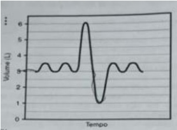
A 2,0 l
B 3,0 l
C 4,0 l
D 5,0 l
Questão 1209 · Apresentação e Anamnese · Relação MédicoPaciente · 4000173119Sempre é reforçado ao médico, desde os tempos de faculdade, a importância de uma anamnese bem feita para que possamos fazer um diagnóstico preciso. Das alternativas citadas abaixo assinale aquela que NÃO apresenta um dado que deve estar presente em todas as anamneses:
A Nome completo e data de nascimento.
B História da gestação e parto.
C História de nascimento dos pais.
D História alimentar e de vacinas.
Questão 1210 · Imunidade Adquirida · 4000172813Sobre o Sistema Imune Adaptativo assinale a alternativa correta.
A O sistema imune adaptativo é a primeira linha de defesa do organismo à infecção.
B A resposta Th1 refere-se a anti-inflamatórios, produtores de citocinas como IL-10.
C A resposta Th2 refere-se a pró-inflamatórios, produtores de citocinas como IFN-gama.
D O sistema imune adaptativo promove uma resposta altamente específica aos antígenos.
Questão 1211 · Mecanismos de Ação de Fármacos · 4000172736São medicações analgésicas que possuem ação anti-inflamatória, EXCETO:
A aspirina
B acetoaminofen
C nimesulida
D diclofenaco
E naproxeno
Questão 1212 · Vascularização do f ígado · Fígado · O f ígado anatomia e histologia · 4000172606O conhecimento sobre a anatomia hepática é um requisito imprescindível para a realização de cirurgias no fígado e árvore biliar. Marque a alternativa CORRETA sobre a anatomia lobar do fígado:
A O fígado direito é dividido em um setor anterior (segmentos V e VIII) e um segmento posterior (segmentos VI e VII) pela cisura direita, que contém a veia hepática direita.
B O fígado esquerdo é dividido em um setor anterior (segmentos III e IV) e um setor posterior (segmentos I e II) pela cisura esquerda, que contém a veia hepática esquerda.
C O lobo caudado é a porção anterior do fígado e envolve a veia cava inferior em sua superfície anterior, e se localiza anterior à tríade portal esquerda.
D A anatomia funcional do fígado é composta de sete segmentos, cada um suprido por várias pequenas tríades portais, cada tríade é composta por uma veia porta, artéria hepática e veia hepática.
E A fissura umbilical é uma cisura que contém uma veia hepática, artéria hepática e veia porta que correm nessa cisura para alimentar o lobo caudado.
Questão 1213 · História Natural da Doença Prevenção e Promoção de Saúde na APS · Política Nacional de Promoção de Saúde · 4000172479A prevenção em saúde é uma ação antecipada, que se baseia no conhecimento da história natural, de forma a evitar possível progresso posterior da doença. A promoção da saúde refere-se a medidas que não estão focadas na doença, mas que visam aumentar a ""saúde e o bem-estar geral"". LEAVELL, H.; CLARK, E. G. Medicina preventiva. São Paulo: McGraw-Hill do Brasil, 1976 (adaptado). Considerando os conceitos de prevenção e promoção da saúde apresentados no texto, assinale a alternativa correta:
A O setor saúde é o único responsável pela qualidade de vida das populações;
B Promoção de saúde visa eliminar as doenças específicas que afetam a saúde dos indivíduos;
C Justiça social meio ambiente, renda e educação são alguns aspectos relacionados a medidas de promoção de saúde;
D Ações de prevenção buscam articular-se a outros setores da sociedade e demais políticas do SUS, a fim de promover condições dignas de vida às populações;
E Ações de promoção devem ser realizadas por profissionais de saúde não médicos;
Questão 1214 · Prevenção e promoção de saúde nos adolescentes · História Natural da Doença Prevenção e Promoção de Saúde na APS · 4000172475Política Nacional de Promoção de Saúde Você é médico(a) de uma UBSF. Silvia, uma adolescente de 13 anos, procura a Unidade de Saúde para agendar coleta de citologia oncótica, pois teve uma relação sexual desprotegida. A recepcionista pergunta-lhe como deve proceder. Assinale a alternativa que representa a conduta CORRETA a ser orientada:
A Orientar agendamento para a paciente o quanto antes, para que faça a coleta da citologia oncótica de colo de útero com a equipe de enfermagem;
B Orientar agendamento de consulta médica para receber orientações sobre vida sexual, porém não há necessidade de coleta de citologia oncótica;
C Orientar que a paciente agende a coleta de citologia oncótica de colo de útero, bem como de sorologias para DST;
D Orientar que a paciente agende a coleta de citologia oncótica de colo de útero, bem como vacinação contra HPV;
E Encaminhar para o Centro de Referência de Doenças Infecto Contagiosas;
Questão 1215 · Anatomia do Sistema Locomotor · Anatomia do Quadril · 4000172395O músculo glúteo é formado por 03 camadas. Marque a alternativa que possui a nomenclatura correta destes músculos.
A Médio, mínimo e máximo.
B Externo, interno e médio.
C Menor, intermédio e maior.
D Pequeno, médio e grande.
Questão 1216 · Medidas de Associação Risco Relativo Razão de Prevalência e Odds Ratio · 4000172205Levando em conta as recomendações sanitárias durante a pandemia COVID-19, uma amostra de 100 jovens de 18 a 25 anos de idade, 80 relataram não ter mantido o distanciamento social na semana anterior, enquanto que em um grupo similar de 100 idosos de mais de 65 anos, apenas 20 relataram não ter mantido o distanciamento social no mesmo período. A razão de chances (odds ratio) de um jovem não ter mantido o distanciamento social em relação a um idoso é:
A 64.
B 32.
C 16.
D 8.
E 4.
Questão 1217 · Equipe de Saúde na APS · 4000171528Os Núcleos de Apoio à Saúde da Família (NASF), criados em 2008, são um grupo de pro ssionais de diferentes áreas de conhecimento que compartilham práticas em saúde nos territórios de responsabilidade das equipes de ESF (Estratégia Saúde da Família). A presença de uma equipe do NASF em um território provê um atendimento mais adequado aos pacientes, principalmente em relação ao seguinte atributo da Atenção Primária:
A integralidade.
B primeiro acesso.
C longitudinalidade.
D coordenação do cuidado.
Questão 1218 · Equipe de Saúde na APS · 4000171162As equipes de Saúde da Família atuam na perspectiva do território, ofertando cuidados aos indivíduos, às famílias e à comunidade sob sua responsabilidade sanitária. Tomar a família como objeto de intervenção, requer que os pro ssionais compreendam a família que está recebendo estes cuidados, sua estrutura e funcionalidade (BRASIL, 2012). Em relação à família enquanto objeto de intervenção, analise as assertivas e identifique com V as verdadeiras e com F as falsas. ( ) A abordagem às famílias é um elemento de gestão do cuidado e, também, de prática diagnóstica e terapêutica. ( ) As interações, os con itos e as desagregações fazem parte do universo da família, interferindo diretamente na saúde de seus membros. ( ) Uma família que tem poucas conexões com a comunidade e entre seus membros necessita menor investimento por parte da equipe de saúde. ( ) A família deve ser entendida a partir de suas relações e, dessa forma, o contexto social, econômico e político não in uenciam no bem-estar da família e de seus membros. A alternativa que contém a sequência correta, de cima para baixo, é
A V V F F
B V F V F
C V F F V
D F F V V
E F V V F
Questão 1219 · Anatomia Testicular e do Cordão Espermático · Escroto · 4000153329O músculo cremaster é inervado pelo
A ramo genital do nervo genitofemoral.
B ramo femoral do nervo genitofermoral.
C nervo ilioinguinal.
D ramo terminal do nervo subcostal (T12).
E nervo ílio-hipogástrico.
Questão 1220 · Exame dos Membros · Celulite · Edema e Congestão · 4000146238Sobre o edema localizado, assinale a alternativa correta.
A Pode ter origem infecciosa, neoplásica, genética e inflamatória.
B Todo o edema localizado, se não tratado, pode evoluir para generalizado.
C Nas obstruções vasculares, o edema se desenvolve próximo ao local do comprometimento.
D Imobilização prolongada em fraturas é fator de proteção à formação de trombose, portanto, o repouso às atividades escolares é sempre orientado.
Questão 1221 · Débito Cardíaco e Circulação Coronária · 4000145630Assinale a alternativa que apresenta a principal repercussão quando há queda do débito cardíaco.
A Má perfusão tecidual.
B Hipotensão arterial.
C Pulsos periféricos reduzidos.
D Extremidades frias.
Questão 1222 · Morf ologia e Fisiologia das Bactérias · Doença pneumocócica · 4000145621Qual é a importância do antígeno polissacarídeo capsular para o pneumococo?
A Esse polissacarídeo capsular não pode ser utilizado como antígeno vacinai por causa da pouca diversidade antigênica da cápsula.
B A cápsula é o principal fator de virulência do pneumococo, pois protege a bactéria da fagocitose por macrófagos e neutrófilos.
C Não induz imunidade, portanto não pode ser utilizado como antígeno vacinai.
D Cerca de 90% das cepas de pneumococo isoladas de quadros de doença não têm cápsula polissacarídica.
Questão 1223 · Envelhecimento Celular · 4000145603Entre os mecanismos moleculares do envelhecimento vascular dos hipertensos, citamse as alterações corretas do item:
A Alterações genéticas de segmentos não envolvidos na proteção e reparação do DNA e na atividade metabólica mitocondrial.
B Alterações genéticas de segmentos envolvidos na proteção e reparação do DNA e na atividade metabólica mitocondrial.
C Alterações genéticas de segmentos envolvidos na proteção e reparação do DNA e na inatividade metabólica mitocondrial.
D Alterações não genéticas de segmentos envolvidos na proteção e reparação do DNA e na atividade metabólica mitocondrial.
Questão 1224 · Equipe de Saúde na APS · 4000145355Considerando as atribuições dos membros da Equipe de Saúde da Família (ESF), assinale a opção que aponta atribuição exclusiva do médico, segundo diretrizes da Portaria Nacional de Atenção Básica - PNAB, nº 2436 de 21 de setembro de 2017:
A Coordenar e avaliar ações desenvolvidas pelos Agentes Comunitários de Saúde (ACS).
B Indicar a necessidade de internação hospitalar ou domiciliar, mantendo a responsabilização pelo acompanhamento da pessoa.
C Cadastrar e atualizar cadastro das famílias e dos indivíduos no sistema de informação da Atenção Básica vigente, utilizando as informações sistematicamente para a análise situacional de saúde, priorizando as situações a serem acompanhadas no planejamento local.
D Realizar estratificação de risco e elaborar plano de cuidados para as pessoas que possuem condições crônicas no território, junto aos demais membros da equipe.
E Realizar consultas clínicas, pequenos procedimentos cirúrgicos, atividades em grupo na Unidade Básica de Saúde (UBS) e, quando indicado ou necessário, no domicílio e/ou nos demais espaços comunitários.
Questão 1225 · Estudos observacionais · Estudos Observacionais · 4000145311Leia o texto abaixo para assinalar a alternativa que completa corretamente a lacuna. Os estudos _____ permitem que a natureza determine o seu curso: o investigador mede, mas não intervém na pesquisa. Esses estudos podem ser descritivos e analítico. Um estudo descritivo limita-se a descrever a ocorrência de uma doença em uma população, sendo, frequentemente, o primeiro passo de uma investigação epidemiológica.
A de coorte.
B observacionais.
C descritivos experimentais randomizados.
D de caso controle.
Questão 1226 · Medidas de Ocorrência de Doenças Incidência e Prevalência · 4000145044Um exame de detecção em massa (rastreamento) de 1000 mulheres de 45-54 anos identi cou 20 casos de carcinoma de mama. Durante o período de 10 anos de seguimento outras 60 mulheres tiveram diagnóstico de carcinoma de mama. Dessas informações podem ser obtidas as seguintes medidas de frequência respectivamente:
A taxa de incidência e taxa de prevalência
B taxa de prevalência e taxa de incidência
C taxa de prevalência e taxa de letalidade
D taxa de letalidade e taxa de incidência
E taxa de incidência e taxa de sobrevida.
Questão 1227 · Ensaios clínicos Fase I a Fase IV · 4000144803A respeito dos ensaios clínicos, assinale a alternativa correta:
A O pareamento consiste em utilizar técnicas matemáticas para avaliar as diferenças entre fatores relacionados aos desfechos.
B Validade externa refere-se à ausência de erro sistemático
C Mascaramento não pode ser utilizado em patologias com desfechos fatais.
D Ajuste multivariável consiste em comparar índices dentro de subgrupos que apresentam probabilidade de desfecho similar.
E A utilização de técnicas de cegamento permite evitar, entre outros fatores, o efeito Hawthorne
Questão 1228 · Diagnóstico Clínico · Anatomia da Cabeça e Pescoço · 4000144589Sobre o trauma cervical, as zonas cervicais, para avaliação, são divididas, da seguinte forma: 1 - Abrange do ângulo da mandíbula até a base do crânio. li - Abrange da cartilagem cricoide até o ângulo da mandíbula. Ili - Base do pescoço -> Abrange da clavícula até a cartilagem cricoide. Respectivamente, os itens acima, discorrem, sobre as:
A Zona I / Zona lI/ Zona IlI.
B Zona I / Zona IlI/ Zona lI.
C Zona lI/ Zona IlI/ Zona I.
D Zona IlI/ Zona lI/ Zona I.
Questão 1229 · Medicina Preventiva · Medidas de Associação Risco Relativo Razão de Prevalência e Odds Ratio · 4000144464Risco Relativo RR Razão de Riscos Em um estudo de coorte, analisou-se o risco de desenvolvimento da doença ""X"" a partir da exposição a "V". Após 1 O anos de seguimento, entre 100 pessoas expostas, 10 desenvolveram a doença. E entre 200 não expostos, cinco desenvolveram a doença. O Risco Relativo calculado nesse estudo é:
A 0.1.
B 1.
C 4.
D 8.
Questão 1230 · Medidas de Associação Risco Relativo Razão de Prevalência e Odds Ratio · Estudos de Coorte · 4000142581Um estudo foi realizado com o objetivo de avaliar a possível associação entre o tipo de personalidade e o risco de desenvolvimento de doença coronariana. Participaram do estudo 3.154 trabalhadores do sexo masculino. Por meio de entrevista no início do estudo, eles foram classificados em dois tipos de personalidade (A e B) e, após a classificação, foram acompanhados por um período médio de nove anos. O delineamento do estudo e a medida calculada para se avaliar a associação foram, respectivamente:
A caso-controle – risco relativo.
B coorte – risco relativo.
C caso-controle – odds ratio.
D prevalência – razão de prevalência.
Questão 1231 · Transição da circulação f etal para a neonatal · Circulação Fetal · 4000142101Em relação à circulação fetal, assinale a alternativa correta.
A O duto venoso é um shunt que pode manter o fluxo por alguns dias após o parto.
B A concentração de O2 é maior na aorta abdominal que no duto venoso.
C O duto arterioso é um shunt entre a artéria pulmonar e aorta.
D O forâmen oval comunica o ventrículo direito com o ventrículo esquerdo.
E As artérias umbilicais têm alta saturação de oxigênio.
Questão 1232 · Medicina Preventiva · Comunicação Relação MédicoPaciente · Relação MédicoPaciente · 4000140697Ao abordar pacientes com doenças crônicas não transmissíveis, como a diabetes mellitus, por exemplo, o médico de família se depara, muitas vezes, com indivíduos assintomáticos que negligenciam o seu tratamento. Entre os componentes do método clínico centrado na pessoa, o que, inicialmente, melhor auxiliará o médico na abordagem a esse indivíduo será
A fortalecer a relação médico-pessoa.
B promover promoção e prevenção à saúde.
C explorar a doença e a experiência da pessoa com a doença.
D ser realista.
Questão 1233 · História Natural da Doença Prevenção e Promoção de Saúde na APS · Ginecologia · Ginecologia geral · 4000140561Consultas periódicas são oportunidades únicas e deveriam ir além dos cuidados ginecológicos, sendo excelente oportunidade para aconselhar os pacientes sobre os cuidados preventivos. Elas devem incluir avaliação, triagem e aconselhamento, além do calendário vacinal, com base na idade e nos fatores de risco. Analise os itens abaixo que contêm recomendações relacionadas a faixas etárias quanto ao comparecimento em consultas ginecológicas. Dentre as recomendações, as que se adequam às suas respectivas faixas etárias estão nos itens
A I e III.
B I e II.
C II e IV.
D III e IV.
Questão 1234 · Olf ato · COVID 19 · Rinossinusite Crônica · 4000138394Sobre as alterações do sentido olfatório é incorreto afirmar que:
A Na sinusite purulenta crônica é comum o paciente pode ser portador de cacosmia subjetiva.
B Em casos de traumatismo facial o paciente pode referir hidrorréia nasal por passagem de líquido cefalorraquidiano pela lâmina crivada do etmóide.
C A parosmia pode ser encontrada em pacientes com determinadas afecções neurológicas.
D A hiperosmia pode ser encontrada em pacientes com COVID 19.
E Na obstrução nasal unilateral deve-se considerar as hipóteses de desvio de septo ou tumor.
Questão 1235 · Medidas de Associação Risco Relativo Razão de Prevalência e Odds Ratio · 4000133133Foram identi cadas 5.554 gestantes infectadas pelo HIV e 4.559 crianças expostas ao HIV, das quais 130 casos de soroconversão foram confirmados, com taxa de 2,9%. O não uso de antirretroviral durante a gestação (OR=9,31 IC95% 5,97-14,52; p<0,001) e aleitamento materno (OR=3,10 IC95%1,34-7,20; p=0,008) foram considerados fatores de risco independentes para a soroconversão (Cunga, IVA, 2019, dissertação de mestrado PPGSC, UNISUL). Pode-se concluir pelos resultados do estudo que:
A O não uso de ART e o aleitamento materno são fatores de risco estatisticamente significativos para a transmissão vertical do HIV.
B O não uso de ART é um fator de risco para a transmissão vertical, mas o aleitamento materno não, para a transmissão vertical do HIV.
C Houve interação ou modificação do efeito entre o aleitamento materno e o não uso do ART.
D Não houve confundimento entre o não uso de ART e o aleitamento materno.
Questão 1236 · Medidas de Associação Risco Relativo Razão de Prevalência e Odds Ratio · 4000133132A eficácia vacinal em um estudo de ensaio clínico randomizado duplo-cego é calculada através:
A Do número de casos evitados de uma doença infecciosa para cada um indivíduo vacinado.
B Do inverso do Risco Atribuível.
C Da Redução do Risco Relativo (RRR ou 1 – RR).
D Da fração etiológica ou atribuível na população.
Questão 1237 · Medicina Preventiva · Teorema de Bayes Sensibilidade Especif icidade e Valores Preditivos · Sensibilidade · 4000132886Em uma situação hipotética, um país desenvolveu um novo teste para a Covid-19 com sensibilidade de 100% e especi cidade de 80%, e decidiu testar toda a sua população de dois milhões de habitantes. Supondo que a prevalência da Covid-19 nessa população seja de 0,5%, quantos verdadeiramente positivos e falso- positivos espera- se encontrar, respectivamente?
A 20.000 e 398.000.
B 10.000 e 398.000.
C 20.000 e 40.000.
D 10.000 e 400.000.
Questão 1238 · Medicina Preventiva · Avaliação da Qualidade em Atenção Primária à Saúde · Níveis de Assistência à Saúde · 4000132882A classificação da complexidade assistencial em Atenção Domiciliar (AD), diante da diversidade de um país continental como o Brasil, fundamenta-se na tentativa de se propor parâmetros que permitam a delimitação do foco de atenção, priorizando os casos que demandam maiores recursos dos serviços de saúde e o acompanhamento da equipe multipro ssional, tornando possível o planejamento da assistência com qualidade e evitando-se duplicidade de atendimento na rede pública. A respeito da AD, considere as finalidades a seguir: I. Admissão no Serviço de AD, aliada aos critérios de inclusão nas modalidades de AD. II. Migração da modalidade assistencial, conforme evolução clínica do usuário. III. Apoio na elaboração do plano terapêutico, sugerindo periodicidade de visitas dos pro ssionais das equipes de Saúde, insumos, logística de transporte e agendamentos necessários. A classificação da complexidade assistencial em AD tem por finalidade:
A I e II, apenas.
B II e III, apenas.
C I e III, apenas.
D I. II e III.
Questão 1239 · Medicina Preventiva · Probabilidade préteste e valor preditivo positivo · 4000131318Estatística Descritiva Tipos de Dados Distribuições e Probabilidades Em um estudo sobre a leitura de radiografias de tórax em pessoas com micobacteriose, foram encontrados os resultados a seguir Os valores das proporções de falso positivo e falso negativo são, respectivamente:
A 0,6986 e 0,0045.
B 0,0045 e 0,6986.
C 0,0284 e 0,2666.
D 0,2666 e 0,0284.
Questão 1240 · Revisão Sistemática e MetaAnálise · 4000131276Na revisão sistemática “E ect of hydroxychloroquine with or without azithromycin on the mortality of coronavirus disease 2019 (COVID-19) patients: a systematic review and meta-analysis” publicada por Fiolet et al. na revista Clinical Microbiology and Infection em agosto de 2020, foi apresentado o seguinte resumo: Introdução: A hidroxicloroquina ou cloroquina com ou sem azitromicina foram amplamente promovidas para tratar a doença coronavírus 2019 (COVID-19) após efeitos antivirais in vitro precoces contra a síndrome respiratória aguda grave coronavírus 2 (SARS-CoV-2). Objetivo: O objetivo desta revisão sistemática e meta-análise foi avaliar se a cloroquina ou hidroxicloroquina com ou sem azitromicina diminuiu a mortalidade de COVID-19 em comparação com o padrão de atendimento. Bases de dados: PubMed, Web of Science, Embase Cochrane Library, Google Scholar e MedRxiv foram pesquisados até 25 de julho de 2020. Critérios de elegibilidade dos estudos: Incluímos estudos publicados e não publicados comparando a taxa de mortalidade entre pacientes tratados com cloroquina ou hidroxicloroquina com ou sem azitromicina e pacientes tratados com tratamento padrão. Participantes: Pacientes de 18 anos ou mais com COVID-19 confirmado. Intervenções: Cloroquina ou hidroxicloroquina com ou sem azitromicina. Métodos: Os tamanhos de efeito foram combinados usando um modelo de efeitos aleatórios. As análises de múltiplos subgrupos foram conduzidas para avaliar a segurança do medicamento. Resultados: A busca inicial resultou em 839 artigos, dos quais 29 atenderam aos nossos critérios de inclusão. Todos os estudos exceto um foram realizados em pacientes hospitalizados e avaliaram os efeitos da hidroxicloroquina com ou sem azitromicina. Entre os 29 artigos, três eram ensaios clínicos randomizados, um era um ensaio não randomizado e 25 eram estudos observacionais, incluindo 11 com risco crítico de viés e 14 com risco grave ou moderado de viés. Depois de excluir estudos com risco crítico de viés, a meta-análise incluiu 11 932 participantes para o grupo da hidroxicloroquina, 8081 para a hidroxicloroquina com grupo azitromicina e 12 930 para o grupo controle. A hidroxicloroquina não foi significativamente associada à mortalidade: risco relativo (RR) 0.83 (IC 95% 0.65-1.06, n = 17 estudos) para todos os estudos e RR = 1,09 (IC 95% 0.97 e 1.24, n =3 estudos) para ensaios clínicos randomizados. Hidroxicloroquina com azitromicina foi associada a um aumento da mortalidade RR = 1.27 ( IC 95% 1.04-1.54 n = 7 estudos). Resultados semelhantes foram encontrados com uma meta-análise bayesiana. A tabela 1 do artigo representada a seguir reporta os resultados reunidos para risco relativo e risco diferencial das terapias estudadas em óbito de pacientes hospitalizados com COVID 19. São corretas as seguintes a rmações a respeito da análise das informações apresentadas. 1- Considerando tanto risco relativo, quanto risco diferencial dos estudos reunidos, em qualquer um dos tratamentos estudados, não houve associação significativa com o desfecho óbito por qualquer causa. 2- Considerando todos os estudos que compararam a hidroxicloroquina associada a azitromicina versus terapia usual, atribuiu-se 7% óbitos adicionais (podendo variar de 1% a 14%) à hidroxicloroquina associada a azitromicina, com resultado in uenciado por estudos não randomizados. 3- Considerando a comparação hidroxicloroquina versus terapia usual, os resultados de estudos randomizados até aquela data indicavam associação significativa a óbitos em pacientes internados por COVID 19.
A A afirmativa 1 está correta.
B A afirmativa 3 está correta.
C A afirmativa 2 está correta.
D As afirmativas 1 e 2 estão corretas.
E Nenhuma das alternativas está correta.
Questão 1241 · Medidas de Associação Risco Relativo Razão de Prevalência e Odds Ratio · 4000131272No dia 07/11/2020, o boletim epidemiológico do Governo do Estado do Paraná trazia as seguintes informações a respeito dos números da COVID-19. Disponível em: https://www.saude.pr.gov.br/sites/default/arquivos_restritos/files/documento/202011/informe_epidemiologico_07_11_2020_.pdf Acesso em: 15/11/2020. Sobre a interpretação desses dados, assinale a alternativa
A A mortalidade por COVID-19 no Estado do Paraná na data de divulgação do Boletim era de 2,4.
B O risco relativo de morte é maior entre os homens do que entre as mulheres.
C A Média Móvel de óbitos é calculada pelo número de óbitos em um dia dividido pelo número total de casos.
D No dia do boletim, o número de casos ativos no Estado era de 566.
E A curva de casos acumulados é ascendente, o que é preocupante, pois o esperado, caso as políticas de distanciamento social estivessem sendo seguidas, seria uma curva descendente.
Questão 1242 · · 4000131255Filo Nematoda Ascaris lumbricoides Trichuris trichiura Enterobius vermicularis Ancylostoma duodenale Necator americanus Strongyloides stercoralis Exames de Imagem Uma criança de 2 anos foi admitida no pronto atendimento com quadro de vômitos, desidratação e abdome distendido. Foi realizado uma radiografia de abdome. Analise a figura a seguir e assinale qual o diagnóstico mais provável. Disponível em: 10.18561/2179-5746/biotaamazonia.v4n4p102-107 Acesso em: 13/11/2020.
A Suboclusão por Áscaris.
B Invaginação Intestinal.
C Tumoração.
D Bridas de Delgado.
E Megacólon.
Questão 1243 · Medidas de Associação Risco Relativo Razão de Prevalência e Odds Ratio · 4000131106A razão de chances, mais conhecida como Odds Ratio (OR), é uma medida de risco que representa quantitativamente a relação entre eventos. Verifique as afirmativas abaixo e identifique a alternativa correta: I. O risco relativo e o OR sempre apontam para a mesma direção, embora possa haver mínimas diferenças numéricas entre as duas medidas. II. O OR é definido como as chances de um caso exposto dividido pelas chances de um controle ser exposto. III. Quanto mais forte for a associação entre a exposição a um fator de risco e a doença, menor será o OR.
A As afirmativas I e II são verdadeiras.
B As afirmativas II e III são verdadeiras.
C Somente a afirmativa I é verdadeira.
D Somente a afirmativa III é verdadeira.
Questão 1244 · Medicina Preventiva · Teorema de Bayes Sensibilidade Especif icidade e Valores Preditivos · Especif icidade · 4000131052Observe a definição do Ministério da Saúde do Brasil para caso suspeito da doença pelo SARS-CoV-2: “Indivíduo com quadro respiratório agudo, caracterizado por, pelo menos, dois dos seguintes sinais e sintomas: febre (mesmo que referida), calafrios, dor de garganta, dor de cabeça, tosse, coriza, Assinale a alternativa que corretamente preenche a frase a seguir: O trecho em negrito e sublinhado confere ___________ à definição apresentada.
A Sensibilidade.
B Especificidade.
C Valor preditivo positivo.
D Valor preditivo negativo.
E Nenhuma das respostas anteriores.
Questão 1245 · Embriologia do Sistema Cardiovascular · Circulação neonatal · 4000129938Em relação às cardiopatias fetais, assinale a alternativa
A O sistema cardiovascular composto pelo coração, vasos e sanguíneas origina-se da camada germinativa endodérmica.
B O “septo primum” divide o átrio totalmente, permitindo a separação dessas duas cavidades.
C As valvas aórtica e pulmonar são formadas entre a sétima e nona semana de gravidez, completando assim o circuito cardiorrespiratório.
D O sistema de condução do coração fetal está maduro ao redor da 16ª semana de vida intrauterina.
Questão 1246 · MALT · Hematologia · Linf onodos e Tecidos Linf oides Associados a Mucosas MALT · 4000129773A primeira opção de tratamento que se imagina para um linfoma de células B (MALT) confinado ao estômago é:
A Gastrectomia subtotal.
B Antibioticoterapia para erradicação do Helicobacter pylori.
C Radioterapia + quimioterapia.
D Radioterapia.
E Quimioterapia.
Questão 1247 · Medicina Preventiva · Estudos de Prevalência · Estudos SeccionaisTransversais · 4000129548Uma médica iniciou, em fevereiro de 2020, sua atuação como plantonista de um hospital que era referência para o tratamento de pacientes com COVID-19. Após atender os primeiros pacientes, resolveu ler um artigo para ter mais segurança no manejo clínico destes. Considerando os princípios da Medicina Baseada em Evidências (MBE) e os dados de um estudo transversal apresentados na tabela, qual a interpretação mais adequada para este artigo?
A A não realização de tomografia foi mais associada à evolução para óbito e a associação apresentou significância estatística.
B Ter idade menor que 60 anos foi associado a maior chance de evoluir para o óbito por COVID-19, mas não teve significância estatística.
C Pacientes do sexo masculino morreram mais que do sexo feminino e esse achado teve significância estatística.
D O uso de azitromicina foi mais prevalente entre os pacientes que evoluíram para óbito e um estudo transversal é o mais adequado para respaldar a tomada de decisão para uma conduta clínica.
Questão 1248 · Noções de ECG · Cardiologia · 4000129353Em relação à investigação complementar das cardiopatias, assinale a alternativa INCORRETA.
A Baixa voltagem do QRS e alternância elétrica sugerem derrame pericárdico.
B Cintilografia com zona de hipoperfusão em repouso e no esforço indica necrose.
C A presença de onda U no ECG é um sinal de isquemia miocárdica.
D Ecocardiograma transtorácico na Estenose Aórtica é o exame de escolha para o acompanhamento.
Questão 1249 · Formação Geral ENADE · 4000152913O esgotamento pro ssional, conhecido como Síndrome de Burnout, foi incluído na Classi cação Internacional de Doenças da Organização Mundial da Saúde (OMS). Essa síndrome, que foi incluída no capítulo de problemas associados ao emprego ou ao desemprego, foi descrita como uma síndrome resultante de um estresse crônico no trabalho não administrado com êxito e caracterizado por três elementos: sensação de esgotamento, cinismo ou sentimentos negativos relacionados a seu trabalho e e cácia pro ssional reduzida. A nova classificação, publicada em 2018 e aprovada durante a 72ª Assembleia Mundial da OMS, entrará em vigor no dia 1º de janeiro de 2022. A Classi cação Internacional de Doenças da OMS estabelece uma linguagem comum que facilita o intercâmbio de informações entre os profissionais da área da saúde ao redor do planeta. Disponível em: <https://noticias.uol.com.br/ultimas-noticias/afp/2019/05/27/oms-inclui-a-sindrome-de-burnout-na-lista-de- doencas.htm>. Acesso em: 06 jul. 2019 (adaptado). Considerando as informações apresentadas, avalie as afirmações a seguir. I. Os programas de formação de lideranças focados na obstinação e na resistência ao erro têm sido e cazes na redução da vulnerabilidade a esse tipo de síndrome. II. A compreensão dos sintomas de forma isolada do contexto sociocultural di culta o estabelecimento do chamado nexo causal entre trabalho e adoecimento. III. As relações de trabalho onde predominam o sentido de realização pro ssional tendem a reforçar elos de coesão e reconhecimento social favoráveis à saúde psíquica. IV. A prevalência do protocolo clínico pautado no tratamento medicamentoso é condição determinante para a superação desse problema de saúde pública. É correto o que se afirma em
A I, apenas.
B II e III, apenas.
C III e IV, apenas.
D I, II e IV, apenas.
E I, II, III e IV.
Questão 1250 · Formação Geral ENADE · 4000152912Disponível desenvolvimento-urbano-com>. Acesso em: 11 set. 2019 (adaptado). O princípio da acessibilidade dispõe que na construção de espaços, na formatação de produtos e no planejamento de serviços deve- se considerar que as pessoas com de ciência (PCD) são usuárias legítimas, dignas e independentes. Nenhum serviço pode ser concedido, permitido, autorizado ou delegado sem acessibilidade plena, para não obstaculizar o exercício pleno dos direitos pelas pessoas com de ciência. A acessibilidade é um direito de todos os cidadãos e, por isso, não se limita a propiciar a inclusão de pessoas com deficiência, mas também de pessoas com mobilidade reduzida, idosos, gestantes e em situação vulnerável. OLIVEIRA, S. M. de. Cidade e acessibilidade: inclusão social das pessoas com de ciências. In: comércio internacional, desenvolvimento e integração regional Considerando a imagem e as informações apresentadas, avalie as afirmações a seguir. I. Projetar e adaptar as vias públicas facilita a circulação das pessoas com di culdade de locomoção e usuários de cadeiras de rodas, sendo uma medida adequada de acessibilidade. II. Padronizar as calçadas com implantação universal de rampas, faixas de circulação livres de barreiras, guias e pisos antiderrapantes atende ao princípio da acessibilidade. III. Garantir a ajuda de terceiros a pessoas com de ciências, nos edifícios públicos e em espaços abertos públicos, é uma previsão legal convergente ao princípio da acessibilidade. IV. Implantar sinalização sonora nos semáforos e informações em braille nas sinalizações dos espaços urbanos para pessoas com deficiência visual são providências de acessibilidade adequadas. É correto o que se afirma em
A III, apenas.
B I e IV, apenas.
C II e III, apenas.
D I, II e IV, apenas.
E I, II, III e IV.
Questão 1251 · Formação Geral ENADE · 4000152911Conforme dados do Atlas da Violência 2019, apresentados no gráfico a seguir, verifica-se o crescimento no número de homicídios de mulheres no país durante o período de 2007 a 2017. Nesse período, a taxa de homicídios entre as mulheres negras cresceu mais do que a taxa de homicídios entre as mulheres não negras. A classificação de raça/cor do IBGE agrega negras como a soma de pretas e pardas e não negras como a soma de brancas, amarelas e indígenas. Instituto de Pesquisa Econômica Aplicada (IPEA); Fórum Brasileiro de Segurança Pública (Orgs.). Ipea, 2019 (adaptado). Considerando as informações apresentadas, avalie as asserções a seguir e a relação proposta entre elas. I. O maior crescimento dos casos de homicídios de mulheres negras em comparação com os casos de mulheres não negras indica a relevância dos estudos a respeito das múltiplas variáveis relacionadas a este fenômeno social. PORQUE II. A análise do gráfico permite concluir que, no início da série histórica, havia um contexto favorável à superação da situação social de maior vulnerabilidade da mulher negra, em razão da menor diferença entre as taxas de homicídios. A respeito dessas asserções, assinale a opção correta.
A As asserções I e II são verdadeiras, e a II é uma justificativa correta da I.
B As asserções I e II são verdadeiras, mas a II não é uma justificativa correta da I.
C A asserção I é uma proposição verdadeira e a II é uma proposição falsa.
D A asserção I é uma proposição falsa e a II é uma proposição verdadeira.
E As asserções I e II são falsas.
Questão 1252 · Formação Geral ENADE · 4000152910O Supremo Tribunal Federal definiu, em 2009, os critérios para o reconhecimento de determinada terra como território indígena, sendo eles: o marco da tradicionalidade da ocupação; o marco temporal da ocupação; o marco da concreta abrangência e nalidade prática da ocupação tradicional; e, por m, o marco da proporcionalidade, que consiste na aplicação do princípio da proporcionalidade em matéria indígena. De acordo com o marco da tradicionalidade da ocupação, para que uma terra indígena possa ser considerada tradicional, as comunidades indígenas devem demonstrar o caráter de perdurabilidade de sua relação com a terra, caráter este demonstrado em sentido de continuidade etnográfica. Disponível em: <https://doi.org/10.12957/publicum.2018.37271>. Acesso em: 27 set. 2019 (adaptado). Com base nas imagens e informações acerca dos referidos marcos para o reconhecimento de determinada terra como indígena, avalie as afirmações a seguir. I. A tradicionalidade é um elemento fundamental para a perpetuação dos vínculos territoriais das populações indígenas, já que remete ao caráter estático de seus modos de vida. II. Os marcos de reconhecimento da ocupação viabilizam o alcance do direito de utilização das terras em diferentes tipos de atividades produtivas por parte das comunidades indígenas. III. O critério de ocupação tradicional considera que a terra indígena proporciona elementos materiais e simbólicos essenciais à transmissão dos legados culturais entre gerações. IV. O reconhecimento de terras ancestrais integra-se à lógica da homogeneidade cultural, já que esta medida valoriza a cultura e a participação dos povos indígenas como elementos do amálgama cultural brasileiro. É correto apenas o que se afirma em
A I e III.
B I e IV.
C II e III.
D I, II e IV.
E II, III e IV.
Questão 1253 · Formação Geral ENADE · 4000152909Segundo resultados da última Pesquisa Nacional de Saneamento Básico (PNSB) de 2008, a quase totalidade dos municípios brasileiros tinha serviço de abastecimento de água em pelo menos um distrito (99,4%). Além da existência da rede, uma das formas de se avaliar a e ciência do serviço de abastecimento de água à população é examinar o volume diário distribuída por rede geral. No ano de 2008, foram distribuídos diariamente, no conjunto do país, 320 litros per capita, média que variou bastante entre as regiões. Na Região Sudeste, o volume distribuído alcançou 450 litros per capita, enquanto na Região Nordeste ele não chegou à metade desta marca, apresentando uma média de 210 litros aumentado em todas as regiões do país, comparando-se com os números apresentados pela PNSB de 2000, as diferenças regionais permaneceram praticamente inalteradas. Disponível em: <https://biblioteca.ibge.gov.br/index.php/biblioteca-catalogo?view=detalhes&id=280933> Acesso em: 01 out. 2019 (adaptado). Com base nas informações apresentadas, avalie as asserções a seguir e a relação proposta entre elas. I. Em algumas regiões do Brasil, os índices referidos estão abaixo da média nacional, indicando diferenças de acesso de qualidade a abastecimento de água que podem impactar a saúde pública. PORQUE II. O aumento da e ciência da política pública de abastecimento de água no Brasil contribui para o desenvolvimento nacional, para a redução dos desequilíbrios regionais e para a promoção da inclusão social. A respeito dessas asserções, assinale a opção correta.
A As asserções I e II são verdadeiras, e a II é uma justificativa correta da I.
B As asserções I e II são verdadeiras, mas a II não é uma justificativa correta da I.
C A asserção I é uma proposição verdadeira e a II é uma proposição falsa.
D A asserção I é uma proposição falsa e a II é uma proposição verdadeira.
E As asserções I e II são falsas.
Questão 1254 · Formação Geral ENADE · 4000152908Na história das civilizações humanas, a agricultura esteve relacionada à origem de um fenômeno que se tornaria o marco da economia alimentar: o aumento demográ co. Entretanto, apesar de toda a força civilizatória da agricultura, muitos povos tornaram- se vulneráveis por falta de alimentos. Mesmo com o aumento do volume de alimentos, o número de indivíduos subnutridos é grande, como demonstrado pelos dados estatísticos da Organização das Nações Unidas para a Agricultura e Alimentação (FAO). A análise dos dados revela que, até 2014, a quantidade de pessoas desnutridas no mundo estava diminuindo, porém, entre 2015 e 2017, esse número aumenta. LIMA, J. S. G. Segurança alimentar e nutricional: sistemas agroecológicos são a mudança que a intensi cação ecológica não alcança. Ciência e Cultura, v. 69, n. 2, 2017 (adaptado). Considerando a segurança alimentar e a nutrição no mundo, avalie as afirmações a seguir. I. O conceito de segurança alimentar e nutricional admite que a fome e a desnutrição são problemas de oferta adequada e garantia de alimentos saudáveis, respeitando-se a diversidade cultural e a sustentabilidade socioeconômica e ambiental. II. A segurança alimentar e nutricional compreende a produção e a disponibilidade de alimentos, bem como o acesso à alimentação adequada e saudável. III. A escassez da oferta de alimentos nas últimas décadas decorre da falta de processos de produção e disseminação tecnológica que garantam a produção no campo frente às mudanças climáticas. É correto o que se afirma em
A I, apenas.
B III, apenas.
C I e II, apenas.
D II e III, apenas.
E I, II e III.
Revisar: possível letra faltando em enunciado
Questão 1255 · Formação Geral ENADE · 4000152907CAMPOS, A. Augusto de Campos é um artista concretista brasileiro cuja poética estabelece a relação de diálogo entre o aspecto visual, sonoro e tátil do texto verbal. Com base no poema apresentado, avalie as afirmações a seguir. I. O aspecto sensorial é construído por meio da exploração da dimensão visual das palavras, sendo a imagem um elemento essencial do texto. II. O artista utiliza técnicas de diagramação, harmonizando os componentes gráficos e espaciais, que se transformam em elementos de construção de sentidos diversos. III. A impressão de movimento caótico cria o efeito de uma espécie de big-bang que atua sobre ambas as palavras: poema e bomba. IV. A utilização do espaço é secundária para a construção de sentidos da obra, já que a palavra escrita, nesse caso, é su ciente para a leitura do poema. É correto o que se afirma em
A I, apenas.
B II e IV, apenas.
C III e IV, apenas.
D I, II e III, apenas.
E I, II, III e IV.
Revisar: possível letra faltando em enunciado
Questão 1256 · Formação Geral ENADE · 4000152906O regime internacional de mudanças climáticas, organizado no âmbito do Sistema das Nações Unidas há 24 anos, constitui, em essência, um arranjo institucional dinâmico e de construção permanente. Criado para facilitar o entendimento e promover a cooperação entre as 195 partes signatárias, é dotado de estrutura jurídica e organizacional próprias. A Convenção Quadro das Nações Unidas sobre mudanças climáticas prevê mecanismos para a solução dos con itos e para promoção da cooperação entre os Estados nacionais. Disponível em: <http://dx.doi.org/10.18623/rvd.v14i29.996>. Acesso em: 22 jul. 2019 (adaptado). A partir do contexto apresentado, é correto a rmar que a Convenção Quadro das Nações Unidas sobre mudanças climáticas objetiva
A estimular atores estatais e não estatais a planejar e a executar conjuntamente programas dedicados a garantir a redução da interferência humana no meio ambiente.
B evitar a propagação do efeito estufa por meio da criação de projetos que visem à redução das emissões a partir de medidas compensatórias, como plantação de árvores e melhor utilização de recursos naturais.
C estabelecer mecanismos flexíveis destinados a permitir que países que não utilizam toda a sua quota prevista de emissões vendam o seu excedente a outros que necessitam de limites maiores.
D promover o princípio da responsabilidade comum e demandas diferenciadas para permitir que os países desenvolvidos alterem a média global de aumento da temperatura acordada.
E assegurar a continuidade dos compromissos para que as metas de redução de emissão mantenham-se regulares e estáveis ao longo dos próximos vinte anos.
Questão 1259 · Teorema de Bayes Sensibilidade Especif icidade e Valores Preditivos · Teste ergométrico · Cardiologia · 4000130206Dois pacientes com dor torácica aos esforços realizam teste ergométrico e apresentam depressão do segmento ST > 2,5 mm. Caso 1: homem 67a, fumante e hipertenso; Caso 2: homem, 34a, jogador de futebol. ASSINALE A ALTERNATIVA CORRETA:
A O valor preditivo de síndrome coronariana em ambos os pacientes é semelhante.
B A sensibilidade do ECG é maior no paciente idoso.
C A prevalência de coronariopatia em diferentes grupos populacionais altera o valor preditivo positivo e negativo do ECG.
D A razão de verossimilhança positiva do teste no paciente jogador de futebol é alta.
Questão 1260 · Teorema de Bayes Sensibilidade Especif icidade e Valores Preditivos · Teste ergométrico · Teste ergométrico · 4000032827Ao interpretar o resultado do teste ergométrico de um atleta maratonista de 28 anos de idade, assintomático, o médico deverá levar em consideração que este teste tem:
A Alta confiabilidade.
B Baixa sensibilidade.
C Valor preditivo negativo muito baixo.
D Valor preditivo positivo muito baixo.
Questão 1261 · Formação Geral ENADE · 4000152873A figura a seguir ilustra a apresentação do teatro de bonecos do grupo Riso do Povo, do mestre Zé Divina, de Pernambuco. Esse tipo de teatro, denominado mamulengo, está intimamente ligado ao contexto histórico, cultural, social, político, econômico, religioso e educativo da região Nordeste do Brasil. Apresentado em praças, feiras e ruas, em linguagem provocativa e irreverente, com repertórios inspirados diretamente nos fatos do cotidiano popular, o mamulengo ganha existência nos palcos por meio do movimento das mãos dos atores que manipulam os bonecos, narram as histórias e transcendem a realidade, metamorfoseando o real em momentos de magia e sedução. Disponível em: <https://en.wikipedia.org>. Acesso em: 22 ago. 2016. A partir dessas informações, avalie as afirmações a seguir. I. O mamulengo dá vida ao objeto e à matéria e permite jogo cênico divertido em que os atores de carne e osso cedem às formas animadas o lugar central da comunicação teatral. II. No mamulengo, os bonecos são os próprios agentes da ação dramática, e não simples adereços cenográficos. III. No mamulengo, os atores interagem com o público de forma a transportá-lo para a mágica representação cênica. É correto o que se afirma em
A I, apenas.
B III, apenas.
C I e II, apenas.
D II e III, apenas.
E I, II e III.
Questão 1262 · Formação Geral ENADE · 4000152872A articulação indígena-quilombola vem-se consolidando em Oriximiná, no Pará, desde 2012, com o objetivo de incentivar a parceria entre índios e quilombolas frente a novos desafios comuns. A aliança possibilitou, em 2015, a reaproximação entre índios da Terra Indígena Kaxuyana-Tunayana e os quilombolas da Terra Quilombola Cachoeira Porteira, cujas relações, no processo de regularização de suas terras, haviam assumido ares de con ito. Reunidos no Quilombo Abuí, escolhido como local neutro e livre de influências externas, em maio de 2015, lideranças indígenas e quilombolas de ambas as terras, com a mediação de lideranças quilombolas de outras comunidades, acordaram os limites territoriais para fins de regularização fundiária. O acordo foi oficializado junto ao Ministério Público Federal e ao Ministério Público Estadual. Disponível em: <http://www.quilombo.org.br>.Acesso em: 29 ago. 2016 (adaptado). A análise dessa situação evidencia a importância da
A autodeterminação dos povos tradicionais na definição de seus limites territoriais.
B intervenção prévia do Estado em situações de potencial conflito entre povos tradicionais.
C urgência de regularização das terras quilombolas e indígenas, priorizando-se áreas isentas de conflitos.
D definição, por atores externos, dos desafios comuns a serem enfrentados pelos povos tradicionais.
E participação do Ministério Público nas negociações de limites territoriais entre quilombolas e indígenas.
Questão 1263 · Formação Geral ENADE · 4000152871A Lei n. 8.213/1991 assegura a contratação de pessoas com de ciência tanto no serviço público como em empresas privadas que empreguem cem trabalhadores ou mais. Todavia, ainda não é tão simples a inserção dessas pessoas no mercado de trabalho, como ilustra a figura abaixo. Disponível em: <www.multiplicandocidadania.com.br>.Acesso em: 30 jul. 2016. A respeito da inserção, no mercado de trabalho, de pessoas com deficiência, avalie as afirmações a seguir. I. Assegurada por lei, a contratação de pro ssionais com de ciência é cada vez mais frequente no serviço público, contudo a regulamentação de cotas para esses profissionais não abrange as empresas privadas. II. As pessoas com de ciência passaram a ter mais chances de inserção no mercado de trabalho, mas, em geral, elas ainda enfrentam preconceito nos locais de trabalho. III. Um dos maiores empecilhos para a inserção de pro ssionais com de ciência no mercado de trabalho é de natureza cultural e envolve estereótipos e discriminação. É correto o que se afirma em
A I, apenas.
B II, apenas.
C I e III, apenas.
D II e III, apenas.
E I, II e III.
Questão 1264 · Formação Geral ENADE · 4000152870Disponível em: <https://desenvolvimentoambiental.wordpress.com>.Acesso em: 9 set. 2016. A partir das ideias sugeridas pela charge, avalie as asserções a seguir e a relação proposta entre elas. I. A adoção de posturas de consumo sustentável, com descarte correto dos resíduos gerados, favorece a preservação da diversidade biológica. PORQUE II. Refletir sobre os problemas socioambientais resulta em melhoria da qualidade de vida. A respeito dessas asserções, assinale a opção correta.
A As asserções I e II são proposições verdadeiras, e a II é uma justificativa correta da I.
B As asserções I e II são proposições verdadeiras, mas a II não é uma justificativa correta da I.
C A asserção I é uma proposição verdadeira, e a II é uma proposição falsa.
D A asserção I é uma proposição falsa, e a II é uma proposição verdadeira.
E As asserções I e II são proposições falsas.
Questão 1265 · Formação Geral ENADE · 4000152869O plágio é daqueles fenômenos da vida acadêmica a respeito dos quais todo escritor conhece um caso, sobre os quais há rumores permanentes entre as comunidades de pesquisa e com os quais o jovem estudante é confrontado em seus primeiros escritos. Trata-se de uma apropriação indevida de criação literária, que viola o direito de reconhecimento do autor e a expectativa de ineditismo do leitor. Como regra, o plágio desrespeita a norma de atribuição de autoria na comunicação cientí ca, viola essencialmente a identidade da autoria e o direito individual de ser publicamente reconhecido por uma criação. Por isso, apresenta- se como uma ofensa à honestidade intelectual e deve ser uma prática enfrentada no campo da ética. Na comunicação cientí ca, o pastiche é a forma mais ardilosa de plágio, aquela que se autodenuncia pela tentativa de encobrimento da cópia. O copista é alguém que repete literalmente o que admira. O pasticheiro, por sua vez, é um enganador, aquele que se debruça diante de uma obra e a adultera para, perversamente, aprisioná-la em sua pretensa autoria. Como o copista, o pasticheiro não tem voz própria, mas dissimula as vozes de suas influências para fazê-las parecer suas. DINIZ, D.; MUNHOZ, A. T. M. Cópia e pastiche: plágio na comunicação cientí ca. Argumentum, Vitória (ES), ano 3, v. 1, n.3, p.11-28, jan./jun. 2011 (adaptado). Considerando o texto apresentado, assinale a opção correta.
A O plágio é uma espécie de crime e, portanto, deve ser enfrentado judicialmente pela comunidade acadêmica.
B A expectativa de que todo escritor acadêmico reconheça a anterioridade criativa de suas fontes é rompida na prática do plágio.
C A transcrição de textos acadêmicos, caso não seja autorizada pelo autor, evidencia desonestidade intelectual.
D Pesquisadores e escritores acadêmicos devem ser capazes de construir, sozinhos, sua voz autoral, a fim de evitar a imitação e a repetição que caracterizam o plágio.
E O pastiche se caracteriza por modificações vocabulares em textos acadêmicos, desde que preservadas suas ideias originais, bem como sua autoria.
Revisar: possível letra faltando em enunciado
Questão 1266 · Formação Geral ENADE · 4000152868A inovação tecnológica pode ser caracterizada como um processo multifacetado que envolve a integração de várias funções da empresa e de atores externos, conforme ilustra o diagrama a seguir. ORGANIZAÇÃO PARA COOPERAÇÃO E DESENVOLVIMENTO ECONÔMICO. interpretação de dados sobre inovação. Brasília: FINEP, 2006. Com base nas relações estabelecidas no diagrama, avalie as a rmações a seguir, concernentes ao processo de inovação tecnológica. I. A inovação tecnológica é alicerçada por atividades realizadas nas empresas, tais como esforços de P&D, contratação de mão de obra qualificada, licenciamento e aquisição de tecnologias, investimento produtivo e ações de marketing. II. A empresa deve interagir com fontes externas de informação e cooperação tecnológica, tais como clientes, fornecedores, universidades, concorrentes e institutos públicos e privados de pesquisa. III. Cabe à empresa não só propor a implantação de leis e políticas cientí cas e tecnológicas, mas também buscar nanciamento específico para processos inovadores nas instituições financeiras. IV. A geração de resultados efetivos de inovação tecnológica, tanto de produto quanto de processo, impacta economicamente a própria capacidade de uma empresa para futuras inovações. É correto apenas o que se afirma em
A I e IV.
B II e III.
C III e IV.
D I, II e III.
E I, II e IV
Revisar: possível letra faltando em enunciado
Questão 1267 · Formação Geral ENADE · 4000152867Inserir-se na sociedade da informação não significa apenas ter acesso às Tecnologias de Informação e Comunicação (TIC), mas, principalmente, saber utilizar essas tecnologias para a busca e a seleção de informações que permitam a cada pessoa resolver problemas do cotidiano, compreender o mundo e atuar na transformação de seu contexto. Assim, o uso das TIC com vistas à criação de uma rede de conhecimentos favorece a democratização do acesso à informação, a troca de informações e de experiências, a compreensão crítica da realidade e o desenvolvimento humano, social, cultural e educacional. Disponível em: <www.portal.mec.gov.br>. Acesso em: 30 jul. 2016 (adaptado). Com base no texto apresentado, conclui-se que
A a inserção de um indivíduo nas relações sociais e virtuais contemporâneas exige mais que inclusão digital técnica.
B o domínio de recursos tecnológicos de acesso à internet assegura ao indivíduo compreender a informação e desenvolver a capacidade de tomar decisões.
C a solução para se democratizar o acesso à informação no Brasil consiste em estendê-lo a todo o território, disponibilizando microcomputadores nos domicílios brasileiros.
D o compartilhamento de informações e experiências mediado pelas TIC baseia-se no pressuposto de que o indivíduo resida em centros urbanos.
E os avanços das TIC vêm-se refletindo globalmente, de modo uniforme, haja vista a possibilidade de comunicação em tempo real entre indivíduos de diferentes regiões.
Questão 1268 · Formação Geral ENADE · 4000152866Em janeiro de 2016, entrou em vigor a Lei Brasileira de Inclusão da Pessoa com De ciência (LBI), instrumento que garante mais direitos às pessoas com de ciência e prevê punições para atos de discriminação. A Lei destaca a importância de estratégias de inclusão e de superação de barreiras oriundas de deficiência. Um exemplo de superação e inclusão é a atuação do atleta paralímpico Daniel Dias. O nadador, que nasceu no dia 24 de maio de 1988, sem partes de alguns membros, conquistou, aos 28 anos de idade, sua 24ª medalha, das quais 14 de ouro, sendo nove conquistadas nas Paralímpiadas do Rio de Janeiro. Orgulho para os brasileiros. Disponível em: <http://www.lance.com.br>. Acesso em: 9 set. 2016. Considerando o texto apresentado, avalie as afirmações a seguir, relativas à inclusão de pessoas com deficiência. I. O esporte, para ser inclusivo, requer prática orientada para cada tipo de deficiência. II. Na prática esportiva orientada, metas e objetivos são estabelecidos como ferramentas motivacionais a fim de promover ganhos motores e cognitivos à pessoa com deficiência. III. A LBI foi fundamental para a inclusão de Daniel Dias, que se tornou o melhor nadador paralímpico da história. É correto o que se afirma em
A II, apenas.
B III, apenas.
C I e II, apenas.
D I e III, apenas.
E I, II e III.
Questão 1273 · Formação Geral ENADE · 4000152831Texto I Muito me surpreendeu o artigo publicado na edição de 14 de outubro, de autoria de um estudante de Jornalismo, que compara a legislação antifumo ao nazismo, considerando-a um ataque à privacidade humana. Ao contrário do que a rma o artigo, os fumantes têm, sim, sua privacidade preservada. (...) Para isso, só precisam respeitar o mesmo direito à privacidade dos não fumantes, não impondo a eles que respirem as mesmas substâncias que optam por inalar e que, em alguns casos, saem da ponta do cigarro em concentrações ainda maiores. FITERMAN, J. Disponível em: <http://www.clicrbs.com.br>. Acesso em: 24 jul. 2013 (adaptado). Texto II Seguindo o mau exemplo de São Paulo e Rio de Janeiro, o estado do Paraná, ao que tudo indica, também adotará a famigerada lei antifumo, que, entre outras coisas, proíbe a existência de fumódromos nos espaços coletivos e estabelece punições ao proprietário que não coibir o fumo em seu estabelecimento. É preciso, pois, perguntar: tem o Estado o direito de decidir a política tabagista que o dono de um bar, por exemplo, deve adotar? Com base em que princípio pode uma tal interferência ser justificada? A lei somente se justi caria caso seu escopo se restringisse a locais cuja propriedade é estatal, como as repartições públicas. Não se pode confundir um recinto coletivo com um espaço estatal. Um recinto coletivo, como um bar, continua sendo uma propriedade privada. A lei representa uma clara agressão ao direito à propriedade. PAVÃO, A. Disponível em: <http://agguinaldopavao.blogspot.com.br>. Acesso em: 24 jul. 2013 (adaptado). Os textos I e II discutem a legitimidade da lei antifumo no Brasil, sob pontos de vista diferentes. A comparação entre os textos permite concluir que, nos textos I e II, a questão é tratada, respectivamente, dos pontos de vista
A ético e legal.
B jurídico e moral.
C moral e econômico.
D econômico e jurídico.
E histórico e educacional.
Questão 1274 · Formação Geral ENADE · 4000152830Uma sociedade sustentável é aquela em que o desenvolvimento está integrado à natureza, com respeito à diversidade biológica e sociocultural, exercício responsável e consequente da cidadania, com a distribuição equitativa das riquezas e em condições dignas de desenvolvimento. Em linhas gerais, o projeto de uma sociedade sustentável aponta para uma justiça com equidade, distribuição das riquezas, eliminando-se as desigualdades sociais; para o m da exploração dos seres humanos; para a eliminação das discriminações de gênero, raça, geração ou de qualquer outra; para garantir a todos e a todas os direitos à vida e à felicidade, à saúde, à educação, à moradia, à cultura, ao emprego e a envelhecer com dignidade; para o fim da exclusão social; para a democracia plena. TAVARES, E. M. F. Disponível em: <http://www2.ifrn.edu.br>. Acesso em: 25 jul. 2013 (adaptado). Nesse contexto, avalie as asserções a seguir e a relação proposta entre elas. I. Os princípios que fundamentam uma sociedade sustentável exigem a adoção de políticas públicas que entram em choque com velhos pressupostos capitalistas. PORQUE II. O crescimento econômico e a industrialização, na visão tradicional, são entendidos como sinônimos de desenvolvimento, desconsiderando-se o caráter nito dos recursos naturais e privilegiando-se a exploração da força de trabalho na acumulação de capital. A respeito dessas asserções, assinale a opção correta.
A As asserções I e II são proposições verdadeiras, e a II é uma justificativa correta da I.
B As asserções I e II são proposições verdadeiras, mas a II não é uma justificativa correta da I.
C A asserção I é uma proposição verdadeira, e a II é uma proposição falsa.
D A asserção I é uma proposição falsa, e a II é uma proposição verdadeira.
E As asserções I e II são proposições falsas.
Questão 1275 · Formação Geral ENADE · 4000152829De um ponto de vista econômico, a globalização é a forma como os mercados de diferentes países interagem e aproximam pessoas e mercadorias. A superação de fronteiras gerou uma expansão capitalista que tornou possível realizar transações nanceiras e expandir os negócios para mercados distantes e emergentes. O complexo fenômeno da globalização resulta da consolidação do capitalismo, dos grandes avanços tecnológicos e da necessidade de expansão do uxo comercial mundial. As inovações nas áreas das telecomunicações e da informática (especialmente com a Internet) foram determinantes para a construção de um mundo globalizado. Disponível em: <www.significados.com.br>. Acesso em: 2 jul. 2013 (adaptado). Sobre globalização, avalie as afirmações a seguir. I. É um fenômeno gerado pelo capitalismo, que impede a formação de mercados dinâmicos nos países emergentes. II. É um conjunto de transformações na ordem política e econômica mundial que aprofunda a integração econômica, social, cultural e política. III. Atinge as relações e condições de trabalho decorrentes da mobilidade física das empresas. É correto o que se afirma em
A I, apenas.
B II, apenas.
C I e III, apenas.
D I e III, apenas.
E I, II e III.
Questão 1276 · Formação Geral ENADE · 4000152828Na tabela abaixo, é apresentada a distribuição do número de empregos formais registrados em uma cidade brasileira, consideradas as variáveis setores de atividade e gênero, de acordo com a Relação Anual de Informações Sociais (RAIS). Com base nas informações da tabela apresentada, avalie as afirmações a seguir. I. O setor com o melhor desempenho em termos percentuais foi o da Administração Pública, com a geração de 7 490 postos de trabalho entre 2010 e 2011. II. De uma forma geral, comparando-se os dados de gênero, as mulheres vêm ocupando mais postos de trabalho na Administração Pública e perdendo postos na Construção civil. III. Entre 2010 e 2011, o aumento na distribuição dos postos de trabalho entre homens e mulheres foi mais equilibrado que o ocorrido entre 2009 e 2010. IV. O setor com o pior desempenho total entre 2010 e 2011 foi o da Agropecuária, extração vegetal, caça e pesca, que apresentou aumento de somente 7 postos de trabalho. É correto apenas o que se afirma em
A I e II.
B I e IV.
C III e IV.
D I, II e III.
E II, III e IV.
Questão 1277 · Formação Geral ENADE · 4000152827A Política Nacional de Resíduos Sólidos (Lei n° 12.305, de 2 de agosto de 2010) define a logística reversa como o “instrumento caracterizado por um conjunto de ações, procedimentos e meios destinados a viabilizar a coleta e a restituição dos resíduos sólidos ao setor empresarial, para reaproveitamento, em seu ciclo ou em outros ciclos produtivos, ou outra destinação nal ambientalmente adequada”. A Lei n° 12.305/2010 obriga fabricantes, importadores, distribuidores e comerciantes de agrotóxicos, pilhas, baterias, pneus, óleos lubri cantes, lâmpadas uorescentes, produtos eletroeletrônicos, embalagens e componentes a estruturar e implementar sistemas de logística reversa, mediante retorno dos produtos após o uso pelo consumidor, de forma independente do serviço público de limpeza urbana e de manejo dos resíduos sólidos. Considerando as informações acima, avalie as asserções a seguir e a relação proposta entre elas. I. O retorno de embalagens e produtos pós-consumo a seus fabricantes e importadores objetiva responsabilizar e envolver, na gestão ambiental, aquele que projeta, fabrica ou comercializa determinado produto e lucra com ele. PORQUE II. Fabricantes e importadores responsabilizados, inclusive nanceiramente, pelo gerenciamento no pós-consumo são estimulados a projetar, manufaturar e comercializar produtos e embalagens menos poluentes e danosos ao meio ambiente. Fabricantes são os que melhor conhecem o processo de manufatura, sendo, por isso, os mais indicados para gerenciar o reprocessamento e reaproveitamento de produtos e embalagens. A respeito dessas asserções, assinale a opção correta.
A As asserções I e II são proposições verdadeiras, e a II é uma justificativa correta da I.
B As asserções I e II são proposições verdadeiras, mas a II não é uma justificativa correta da I.
C A asserção I é uma proposição verdadeira, e a II é uma proposição falsa.
D A asserção I é uma proposição falsa, e a II é uma proposição verdadeira.
E As asserções I e II são proposições falsas.
Questão 1278 · Formação Geral ENADE · 4000152826Uma revista lançou a seguinte pergunta em um editorial: “Você pagaria um ladrão para invadir sua casa?”. As pessoas mais espertas diriam provavelmente que não, mas companhias inteligentes de tecnologia estão, cada vez mais, dizendo que sim. Empresas como a Google oferecem recompensas para hackers que consigam encontrar maneiras de entrar em seus softwares. Essas companhias frequentemente pagam milhares de dólares pela descoberta de apenas um bug – o su ciente para que a caça a bugs possa fornecer uma renda significativa. As empresas envolvidas dizem que os programas de recompensa tornam seus produtos mais seguros. “Nós recebemos mais relatos de bugs, o que significa que temos mais correções, o que significa uma melhor experiência para nossos usuários”, a rmou o gerente de programa de segurança de uma empresa. Mas os programas não estão livres de controvérsias. Algumas empresas acreditam que as recompensas devem apenas ser usadas para pegar cibercriminosos, não para encorajar as pessoas a encontrar as falhas. E também há a questão de double-dipping – a possibilidade de um hacker receber um prêmio por ter achado a vulnerabilidade e, então, vender a informação sobre o mesmo bug para compradores maliciosos. Disponível em: <http://pcworld.uol.com.br>. Acesso em: 30 jul. 2013 (adaptado). Considerando o texto acima, infere-se que
A os caçadores de falhas testam os softwares, checam os sistemas e previnem os erros antes que eles aconteçam e, depois, revelam as falhas a compradores criminosos.
B os caçadores de falhas agem de acordo com princípios éticos consagrados no mundo empresarial, decorrentes do estímulo à livre concorrência comercial.
C a maneira como as empresas de tecnologia lidam com a prevenção contra ataques dos cibercriminosos é uma estratégia muito bem-sucedida.
D o uso das tecnologias digitais de informação e das respectivas ferramentas dinamiza os processos de comunicação entre os usuários de serviços das empresas de tecnologia.
E os usuários de serviços de empresas de tecnologia são beneficiários diretos dos trabalhos desenvolvidos pelos caçadores de falhas contratados e premiados pelas empresas.
Revisar: possível letra faltando em enunciado
Questão 1279 · Formação Geral ENADE · 4000152825A discussão nacional sobre a resolução das complexas questões sociais brasileiras e sobre o desenvolvimento em bases sustentáveis tem destacado a noção de corresponsabilidade e a de complementaridade entre as ações dos diversos setores e atores que atuam no campo social. A interação entre esses agentes propicia a troca de conhecimento das distintas experiências, proporciona mais racionalidade, qualidade e eficácia às ações desenvolvidas e evita superposições de recursos e competências. De uma forma geral, esses desa os moldam hoje o quadro de atuação das organizações da sociedade civil do terceiro setor. No Brasil, o movimento relativo a mais exigências de desenvolvimento institucional dessas organizações, inclusive das fundações empresariais, é recente e foi intensificado a partir da década de 90. BNDES. <http://www.bndes.gov.br>.Acesso em: 02 ago. 2013 (adaptado). De acordo com o texto, o terceiro setor
A é responsável pelas ações governamentais na área social e ambiental.
B promove o desenvolvimento social e contribui para aumentar o capital social.
C gerencia o desenvolvimento da esfera estatal, com especial ênfase na responsabilidade social.
D controla as demandas governamentais por serviços, de modo a garantir a participação do setor privado.
E é responsável pelo desenvolvimento social das empresas e pela dinamização do mercado de trabalho.
Questão 1280 · Formação Geral ENADE · 4000152824Todo caminho da gente é resvaloso. Mas também, cair não prejudica demais A gente levanta, a gente sobe, a gente volta!... O correr da vida embrulha tudo, a vida é assim: Esquenta e esfria, aperta e daí afrouxa, Sossega e depois desinquieta. O que ela quer da gente é coragem. Ser capaz de ficar alegre e mais alegre no meio da alegria, E ainda mais alegre no meio da tristeza... ROSA, J.G. De acordo com o fragmento do poema acima, de Guimarães Rosa, a vida é
A uma queda que provoca tristeza e inquietute prolongada.
B um caminhar de percalços e dificuldades insuperáveis.
C um ir e vir de altos e baixos que requer alegria perene e coragem.
D um caminho incerto, obscuro e desanimador.
E uma prova de coragem alimentada pela tristeza.
Questão 1283 · Formação Geral ENADE · 4000152791Isótopos radioativos estão ajudando a diagnosticar as causas da poluição atmosférica. Podemos, com essa tecnologia por exemplo, analisar o ar de uma região e determinar se um poluente vem da queima do petróleo ou da vegetação. Outra utilização dos isótopos radioativos que pode, no futuro, diminuir a área de desmatamento para uso da agricultura é a irradiação nos alimentos. A técnica consiste em irradiar com isótopos radioativos para combater os micro-organismos que causam o apodrecimento dos vegetais e aumentar a longevidade dos alimentos, diminuindo o desperdício. A irradiação de produtos já é uma realidade, pois grandes indústrias que vendem frutas ou suco utilizam essa técnica. Na área médica as soluções nucleares estão em ferramentas de diagnóstico, como a tomogra a e a ressonância magnética, que conseguem apontar, sem intervenção cirúrgica, mudanças metabólicas em áreas do corpo. Os exames conseguem, inclusive, detectar tumores que ainda não causam sintomas, possibilitando um tratamento precoce do câncer e maior possibilidade de cura. Correio Popular de Campinas A notícia acima
A comenta os malefícios do uso de isótopos radioativos, relacionando-os às causas da poluição atmosférica.
B elenca possibilidades de uso de isótopos radioativos, evidenciando, assim, benefícios do avanço tecnológico.
C destaca os perigos da radiação para a saúde, alertando sobre os cuidados que devem ter a medicina e a agroindústria.
D propõe soluções nucleares como ferramentas de diagnóstico em doenças de animais, alertando para os malefícios que podem causar ao ser humano.
E explica cientificamente as várias técnicas de tratamento em que se utilizam isótopos radioativos para matar os micro- organismos que causam o apodrecimento dos vegetais.
Questão 1284 · Formação Geral ENADE · 4000152790Para preservar a língua, é preciso o cuidado de falar de acordo com a norma padrão. Uma dica para o bom desempenho linguístico é seguir o modelo de escrita dos clássicos. Isso não significa negar o papel da gramática normativa; trata-se apenas de ilustrar o modelo dado por ela. A escola é um lugar privilegiado de limpeza dos vícios de fala, pois oferece inúmeros recursos para o domínio da norma padrão e consequente distância da não padrão. E esse domínio é o que levará o sujeito a desempenhar competentemente as práticas sociais; trata-se do legado mais importante da humanidade. PORQUE A linguagem dá ao homem uma possibilidade de criar mundos, de criar realidades, de evocar realidades não presentes. E a língua é uma forma particular dessa faculdade [a linguagem] de criar mundos. A língua, nesse sentido, é a concretização de uma experiência histórica . Ela está radicalmente presa à sociedade. XAVIER, A. C. & CORTEZ, S. (orgs.). Parábolas Editorial, p. 72-73. 2005 ( com adaptações). Analisando a relação proposta entre as duas asserções acima, assinale a opção correta.
A As duas asserções são proposições verdadeiras, e a segunda é uma justificativa correta da primeira.
B As duas asserções são proposições verdadeiras, mas a segunda não é uma justificativa correta da primeira.
C A primeira asserção é uma proposição verdadeira, e a segunda é uma proposição falsa.
D A primeira asserção é uma proposição falsa, e a segunda é uma proposição verdadeira.
E As duas asserções são proposições falsas.
Questão 1285 · Formação Geral ENADE · 4000152789Levantamento feito pelo jornal Folha de S. Paulo e publicado em 11 de abril de 2009, com base em dados de 2008, revela que o índice de homicídios por 100 mil habitantes no Brasil varia de 10,6 a 66,2. O levantamento inclui dados de 23 estados e do Distrito Federal. De acordo com a Organização Mundial da Saúde (OMS), áreas com índices superiores a 10 assassinatos por 100 mil habitantes são consideradas zonas epidêmicas de homicídios. A partir das informações do texto e do gráfico acima, conclui-se que
A o número total de homicídios em 2008 no estado da Paraíba é inferior ao do estado de São Paulo.
B os estados que não divulgaram os seus dados de homicídios encontram-se na região Centro-Oeste.
C a média aritmética das taxas de homicídios por 100 mil habitantes da região Sul é superior à taxa média aproximada do Brasil.
D a taxa de homicídios por 100 mil habitantes do estado da Bahia, em 2008, supera a do Rio Grande do Norte em mais de 100%.
E Roraima é o estado com menor taxa de homicídios por 100 mil habitantes, não se caracterizando como zona epidêmica de homicídios.
Questão 1286 · Formação Geral ENADE · 4000152788O mapa abaixo representa as áreas populacionais sem acesso ao saneamento básico. Considerando o mapa apresentado, analise as afirmações que seguem I. A globalização é fenômeno que ocorre de maneira desigual entre os países, e o progresso social independe dos avanços econômicos. II. Existe relação direta entre o crescimento da ocupação humana e o maior acesso ao saneamento básico. III. Brasil, Rússia, Índia e China, países pertencentes ao bloco dos emergentes, possuem percentual da população com acesso ao saneamento básico abaixo da média mundial. IV. O maior acesso ao saneamento básico ocorre, em geral, em países desenvolvidos. V. Para se analisar o índice de desenvolvimento humano (IDH) de um país, deve-se diagnosticar suas condições básicas de infraestrutura, seu PIB
A I e II.
B I e III.
C II e V.
D III e IV.
E IV e V.
Questão 1287 · Formação Geral ENADE · 4000152787Conquistar um diploma de curso superior não garante às mulheres a equiparação salarial com os homens, como mostra o estudo “Mulher no mercado de trabalho: perguntas e respostas”, divulgado pelo Instituto Brasileiro de Geogra a e Estatística (IBGE) nesta segunda-feira, quando se comemora o Dia Internacional da Mulher. Segundo o trabalho, embasado na Pesquisa Mensal de Emprego de 2009, nos diversos grupamentos de atividade econômica, a escolaridade de nível superior não aproxima os rendimentos recebidos por homens e mulheres. Pelo contrário, a diferença acentua- se. No caso do comércio, por exemplo, a diferença de rendimento para pro ssionais com escolaridade de onze anos ou mais de estudo é de R$ 616,80 a mais para os homens. Quando a comparação é feita para o nível superior, a diferença é de R$ 1.653,70 para eles. Disponível em: <http://oglobo.globo.com/economia/boachance/mat/2010/03/08>. Acesso em: 19 out. 2010 (com adaptações). Considerando o tema abordado acima, analise as afirmações seguintes. I. Quanto maior o nível de análise dos indicadores de gêneros, maior será a possibilidade de identi cação da realidade vivida pelas mulheres no mundo do trabalho e da busca por uma política igualitária capaz de superar os desafios das representações de gênero. II. Conhecer direitos e deveres, no local de trabalho e na vida cotidiana, é su ciente para garantir a alteração dos padrões de inserção das mulheres no mercado de trabalho. III. No Brasil, a desigualdade social das minorias étnicas, de gênero e de idade não está apenas circunscrita pelas relações econômicas, mas abrange fatores de caráter histórico-cultural. IV. Desde a aprovação da Constituição de 1988, tem havido incremento dos movimentos gerados no âmbito da sociedade para diminuir ou minimizar a violência e o preconceito contra a mulher, a criança, o idoso e o negro. É correto apenas o que se afirma em
A I e II.
B II e IV.
C III e IV.
D I, II e III.
E I, III e IV.
Revisar: possível letra faltando em enunciado
Questão 1288 · Formação Geral ENADE · 4000152786De agosto de 2008 a janeiro de 2009, o desmatamento na Amazônia Legal concentrou-se em regiões especí cas. Do ponto de vista fundiário, a maior parte do desmatamento (cerca de 80%) aconteceu em áreas privadas ou em diversos estágios de posse. O restante do desmatamento ocorreu em assentamentos promovidos pelo INCRA, conforme a política de Reforma Agrária (8%), unidade de conservação (5%) e em terras indígenas (7%). Disponível em: <www.imazon.org.br>. Acesso em: 26 ago. 2010. (com a adaptações) Infere-se do texto que, sob o ponto de vista fundiário, o problema do desmatamento na Amazônia Legal está centrado
A nos grupos engajados na política de proteção ambiental, pois eles não aprofundaram o debate acerca da questão fundiária.
B nos povos indígenas, pois eles desmataram a área que ocupavam mais do que a comunidade dos assentados pelo INCRA.
C nos posseiros irregulares e proprietários regularizados que desmataram mais, pois muitos ainda não estão integrados aos planos de manejo sustentável da terra.
D nas unidades de conservação, que costumam burlar leis fundiárias; nelas, o desmatamento foi maior que orealizado pelos assentados pelo INCRA.
E nos assentamentos regulamentados pelo INCRA, nos quais o desmatamento foi maior que o realizado pelos donos de áreas privadas da Amazônia Legal.
Revisar: possível letra faltando em enunciado
Questão 1289 · Formação Geral ENADE · 4000152785A charge acima representa um grupo de cidadãos pensando e agindo de modo diferenciado, frente a uma decisão cujo caminho exige um percurso ético. Considerando a imagem e as ideias que ela transmite, avalie as afirmativas que a seguem. I. A ética não se impõe imperativamente nem universalmente a cada cidadão; cada um terá que escolher por si mesmo os seus valores e ideias, isto é, praticar a autoética. II. A ética politica supõe o sujeito responsável por suas ações e pelo seu modo de agir na sociedade. III. A ética pode se reduzir ao político, do mesmo modo que o político pode se reduzir à ética, em um processo a serviço do sujeito responsável. IV. A ética prescinde de condições históricas e sociais, pois é no homem que se situa a decisão ética, quando ele escolhe os seus valores e as suas finalidades. V. A ética de dá de fora pra dentro, como compreensão do mundo, na perspectiva do fortalecimento dos valores pessoais. É correto apenas o que se afirma em
A I e II.
B I e V.
C II e IV.
D III e IV
E III e V
Questão 1290 · Formação Geral ENADE · 4000152784Morte e Vida Severina (trecho) Aí ficará para sempre, livre do sol e da chuva, criando tuas saúvas. -- Agora trabalharás só para ti, não a meias, como antes em terra alheia. -- Trabalharás uma terra da qual, além de senhor, serás homem de eito e trator — Trabalhando nessa terra, tu sozinho tudo empreitas: serás semente, adubo, colheita -- trabalharás numa terra que também te abriga e te veste: embora com o brim do Nordeste. --Será de terra tua derradeira camisa: te veste, como nunca em vida. --Será de terra e tua melhor camisa: te veste e ninguém cobiça. --Terás terra completo agora o teu fato: e pela primeira vez, sapato. — Como és homem, a terra te dará chapéu fosses mulher, xale ou véu. — Tua roupa melhor será de terra e não de fazenda: não se rasga nem se remenda. — Tua roupa melhor e te ficará bem cingida como roupa feita à medida. João Cabral de Melo Neto. Analisando o painel de Portinari apresentado e o trecho destacado de
A ambos revelam o trabalho dos homens na terra, com destaque para os produtos que nela podem ser cultivados.
B ambos mostram as possibilidades de desenvolvimento do homem que trabalha a terra, com destaque para um dos personagens.
C ambos mostram, figurativamente, o destino do sujeito sucumbido pela seca, com a diferença de que a cena de Portinari destaca o sofrimento dos que ficam.
D o poema revela a esperança, por meio de versos livres, assim como a cena de Portinari traz uma perspectiva próspera de futuro, por meio do gesto.
E o poema mostra um cenário próspero com elementos da natureza, como sol, chuva, insetos, e, por isso, mantém uma relação de oposição com a cena de Portinari.
Questão 1293 · Formação Geral ENADE · 4000153028Entre 1508 e 1512, Michelangelo pintou o teto da Capela Sistina no Vaticano, um marco da civilização ocidental. Revolucionária, a obra chocou os mais conservadores, pela quantidade de corpos nus, possivelmente, resultado de seus secretos estudos de anatomia, uma vez que, no seu tempo, era necessária a autorização da Igreja para a dissecação de cadáveres. Recentemente, perceberam-se algumas peças anatômicas camu adas entre as cenas que compõem o teto. Alguns pesquisadores conseguiram identi car uma grande quantidade de estruturas internas da anatomia humana, que teria sido a forma velada de como o artista “imortalizou a comunhão da arte com o conhecimento”. Uma das cenas mais conhecidas é “A criação de Adão”. Para esses pesquisadores ela representaria o cérebro num corte sagital, como se pode observar nas figuras a seguir. BARRETO, Gilson e OLIVEIRA, Marcelo G. de. Considerando essa hipótese, uma ampliação interpretativa dessa obra-prima de Michelangelo expressaria
A o Criador dando a consciência ao ser humano, manifestada pela função do cérebro.
B a separação entre o bem e o mal, apresentada em cada seção do cérebro.
C a evolução do cérebro humano, apoiada na teoria darwinista.
D a esperança no futuro da humanidade, revelada pelo conhecimento da mente.
E a diversidade humana, representada pelo cérebro e pela medula.
Questão 1294 · Formação Geral ENADE · 4000153027Desnutrição entre crianças quilombolas “Cerca de três mil meninos e meninas com até 5 anos de idade, que vivem em 60 comunidades quilombolas em 22 Estados brasileiros, foram pesados e medidos. O objetivo era conhecer a situação nutricional dessas crianças.(...) De acordo com o estudo,11,6% dos meninos e meninas que vivem nessas comunidades estão mais baixos do que deveriam, considerando-se a sua idade, índice que mede a desnutrição. No Brasil, estima-se uma população de 2 milhões de quilombolas. A escolaridade materna in uencia diretamente o índice de desnutrição. Segundo a pesquisa, 8,8% dos lhos de mães com mais de quatro anos de estudo estão desnutridos. Esse indicador sobe para 13,7% entre as crianças de mães com escolaridade menor que quatro anos. A condição econômica também é determinante. Entre as crianças que vivem em famílias da classe E (57,5% das avaliadas), a desnutrição chega a 15,6%; e cai para 5,6% no grupo que vive na classe D, na qual estão 33,4% do total das pesquisadas. Os resultados serão incorporados à política de nutrição do País. O Ministério de Desenvolvimento Social prevê ainda um estudo semelhante para as crianças indígenas.” BAVARESCO, Rafael. UNICEF/BRZ. Boletim, ano 3, n. 8, jun. 2007 O boletim da UNICEF mostra a relação da desnutrição com o nível de escolaridade materna e a condição econômica da família. Para resolver essa grave questão de subnutrição infantil, algumas iniciativas são propostas: I − distribuição de cestas básicas para as famílias com crianças em risco; II − programas de educação que atendam a crianças e também a jovens e adultos; III − hortas comunitárias, que ofereçam não só alimentação de qualidade, mas também renda para as famílias. Das iniciativas propostas, pode-se afirmar que
A somente I é solução dos problemas a médio e longo prazo.
B somente II é solução dos problemas a curto prazo.
C somente III é solução dos problemas a curto prazo.
D I e II são soluções dos problemas a curto prazo.
E II e III são soluções dos problemas a médio e longo prazo.
Questão 1295 · Formação Geral ENADE · 4000153026Vamos supor que você recebeu de um amigo de infância e seu colega de escola um pedido, por escrito, vazado nos seguintes termos: “Venho mui respeitosamente solicitar-lhe o empréstimo do seu livro de Essa solicitação em tudo se assemelha à atitude de uma pessoa que
A comparece a um evento solene vestindo smoking completo e cartola.
B vai a um piquenique engravatado, vestindo terno completo, calçando sapatos de verniz.
C vai a uma cerimônia de posse usando um terno completo e calçando botas.
D frequenta um estádio de futebol usando sandálias de couro e bermudas de algodão.
E veste terno completo e usa gravata para proferir uma conferência internacional.
Questão 1296 · Formação Geral ENADE · 4000153025Leia o esquema abaixo. 1 - Coleta de plantas nativas, animais silvestres, microorganismos e fungos da floresta Amazônica. 2 - Saída da mercadoria do país, por portos e aeroportos, camu ada na bagagem de pessoas que se disfarçam de turistas, pesquisadores ou religiosos. 3 - Venda dos produtos para laboratórios ou colecionadores que patenteiam as substâncias provenientes das plantas e dos animais. 4 - Ausência de patente sobre esses recursos, o que deixa as comunidades indígenas e as populações tradicionais sem os benefícios dos 5 - Prejuízo para o Brasil! Com base na análise das informações acima, uma campanha publicitária contra a prática do conjunto de ações apresentadas no esquema poderia utilizar a seguinte chamada:
A Indústria farmacêutica internacional, fora!
B Mais respeito às comunidades indígenas!
C Pagamento de
D Diga não à biopirataria, já!
E Biodiversidade, um mau negócio?
Questão 1297 · Formação Geral ENADE · 4000153024Os países em desenvolvimento fazem grandes esforços para promover a inclusão digital, ou seja, o acesso, por parte de seus cidadãos, às tecnologias da era da informação. Um dos indicadores empregados é o número de hosts, isto é, o número de computadores que estão conectados à Internet. A tabela e o gráfico abaixo mostram a evolução do número de hosts nos três países que lideram o setor na América do Sul. Fonte: IBGE (Network Wizards, 2007) Dos três países, os que apresentaram, respectivamente, o maior e o menor crescimento percentual no número de hosts, no período 2003−2007, foram
A Brasil e Colômbia.
B Brasil e Argentina.
C Argentina e Brasil.
D Colômbia e Brasil.
E Colômbia e Argentina.
Questão 1298 · Formação Geral ENADE · 4000153023Os ingredientes principais dos fertilizantes agrícolas são nitrogênio, fósforo e potássio (os dois últimos sob a forma dos óxidos P₂O₅ e K₂O, respectivamente). As percentagens das três substâncias estão geralmente presentes nos rótulos dos fertilizantes, sempre na ordem acima. Assim, um fertilizante que tem em seu rótulo a indicação 10−20−20 possui, em sua composição, 10% definitrogênio, 20% de óxido de fósforo e 20% de óxido de potássio. Misturando-se 50 kg de um fertilizante 10−20−10 com 50 kg de um fertilizante 20−10−10, obtém-se um fertilizante cuja composição é
A 7,5−7,5−5.
B 10−10−10.
C 15−15−10.
D 20−20−15
E 30−30−20.
Questão 1299 · Formação Geral ENADE · 4000153022Revista O alerta que a gravura acima pretende transmitir refere-se a uma situação que
A atinge circunstancialmente os habitantes da área rural do País.
B atinge, por sua gravidade, principalmente as crianças da área rural.
C preocupa no presente, com graves consequências para o futuro.
D preocupa no presente, sem possibilidade de ter consequências no futuro
E preocupa, por sua gravidade, especialmente os que têm filhos.
Questão 1301 · Atributos da APS · 4000165973Uma das diretrizes do SUS é a hierarquização das ações de saúde, com ênfase no papel das unidades básicas de saúde. Pode-se afirmar que a unidade básica de saúde deve
A restringir-se às ações programáticas, como controle de hipertensão arterial e diabetes.
B ofertar grande variedade de consultas especializadas e exames complementares.
C ser a porta de entrada aos serviços de saúde, não se ocupando de ações curativas.
D desenvolver ações que prescindam de exames complementares.
E implementar as ações básicas de saúde de natureza preventiva e curativa.
Questão 1304 · Formação Geral ENADE · 4000165970Os países em desenvolvimento fazem grandes esforços para promover a inclusão digital, ou seja, o acesso, por parte de seus cidadãos, às tecnologias da era da informação. Um dos indicadores empregados é o número de hosts, ou seja, número de computadores que estão conectados à Internet. A tabela e o gráfico abaixo mostram a evolução do número de hosts nos três países que lideram o setor na América Latina. Dos três países, os que apresentaram, respectivamente, o maior e o menor crescimento percentual no número de hosts no período 2000-2004 foram:
A Brasil e México.
B Brasil e Argentina.
C Argentina e México.
D Argentina e Brasil.
E México e Argentina.
Questão 1305 · Formação Geral ENADE · 4000165969A leitura do poema de Carlos Drummond de Andrade traz à lembrança alguns quadros de Cândido Portinari. Portinari De um baú de folhas-de-flandres no caminho da roça um baú que os pintores desprezaram mas que anjos vêm cobrir de flores namoradeiras salta João Cândido trajado de arco-íris saltam garimpeiros, mártires da liberdade, São João da Cruz salta o galo escarlate bicando o pranto de Jeremias saltam cavalos-marinhos em fila azul e ritmada saltam orquídeas humanas, seringais, poetas de e sem óculos, transfigurados saltam (nele estamos crucificados e nossos olhos dão testemunho) salta uma angústia purificada na alegria do volume justo e da cor autêntica salta o mundo de Portinari que fica lá no fundo maginando novas surpresas. ANDRADE, Carlos Drummond de. Uma análise cuidadosa dos quadros selecionados permite que se identifique a alusão feita a eles em trechos do poema. Podem ser relacionados ao poema de Drummond os seguintes quadros de Portinari:
A I, II, III e IV.
B I, II, III e V.
C I, II, IV e V.
D I, III, IV e V.
E II, III, IV e V.
Questão 1306 · Formação Geral ENADE · 4000165968Muitos países enfrentam sérios problemas com seu elevado crescimento populacional. Em alguns destes países, foi proposta (e por vezes colocada em efeito) a proibição de as famílias terem mais de um filho. Algumas vezes, no entanto, esta política teve conseqüências trágicas (por exemplo, em alguns países houve registros de famílias de camponeses abandonarem suas lhas recém-nascidas para terem uma outra chance de ter um lho do sexo masculino). Por essa razão, outras leis menos restritivas foram consideradas. Uma delas foi: as famílias teriam o direito a um segundo (e último) filho, caso o primeiro fosse do sexo feminino. Suponha que esta última regra fosse seguida por todas as famílias de um certo país (isto é, sempre que o primeiro lho fosse do sexo feminino, fariam uma segunda e última tentativa para ter um menino). Suponha ainda que, em cada nascimento, sejam iguais as chances de nascer menino ou menina. Examinando os registros de nascimento, após alguns anos de a política ter sido colocada em prática, seria esperado que:
A o número de nascimentos de meninos fosse aproximadamente o dobro do de meninas.
B em média, cada família tivesse 1,25 filhos.
C aproximadamente 25% das famílias não tivessem filhos do sexo masculino.
D aproximadamente 50% dos meninos fossem filhos únicos.
E aproximadamente 50% das famílias tivessem um filho de cada sexo.
Questão 1307 · Formação Geral ENADE · 4000165967“Crime contra Índio Pataxó comove o país (...) Em mais um triste “Dia do Índio”, Galdino saiu à noite com outros indígenas para uma confraternização na Funai. Ao voltar, perdeu-se nas ruas de Brasília (...). Cansado, sentou-se num banco de parada de ônibus e adormeceu. Às 5 horas da manhã, Galdino acordou ardendo numa grande labareda de fogo. Um grupo “insuspeito” de cinco jovens de classe média alta, entre eles um menor de idade, (...) parou o veículo na avenida W/2 Sul e, enquanto um manteve-se ao volante, os outros quatro dirigiram-se até a avenida W/3 Sul, local onde se encontrava a vítima. Logo após jogar combustível, atearam fogo no corpo. Foram agrados por outros jovens corajosos, ocupantes de veículos que passavam no local e prestaram socorro à vítima. Os criminosos foram presos e conduzidos à 1ª Delegacia de Polícia do DF onde confessaram o ato monstruoso. Aí, a estupefação: ‘os jovens queriam apenas se divertir’ e ‘pensavam tratar-se de um mendigo, não de um índio,’ o homem a quem incendiaram. Levado ainda consciente para o Hospital Regional da Asa Norte − HRAN, Galdino, com 95% do corpo com queimaduras de 3º grau, faleceu às 2 horas da madrugada de hoje.” Conselho Indigenista Missionário - Cimi A notícia sobre o crime contra o índio Galdino leva a reflexões a respeito dos diferentes aspectos da formação dos jovens. Com relação às questões éticas, pode-se afirmar que elas devem:
A manifestar os ideais de diversas classes econômicas.
B seguir as atividades permitidas aos grupos sociais.
C fornecer soluções por meio de força e autoridade.
D expressar os interesses particulares da juventude.
E estabelecer os rumos norteadores de comportamento.
Questão 1308 · Formação Geral ENADE · 4000165966“Os determinantes da globalização podem ser agrupados em três conjuntos de fatores: tecnológicos, institucionais e sistêmicos.” GONÇALVES, Reinaldo. Globalização e Desnacionalização. São Paulo: Paz e Terra, 1999. “A ortodoxia neoliberal não se verifica apenas no campo econômico. Infelizmente, no campo social, tanto no âmbito das idéias como no terreno das políticas, o neoliberalismo fez estragos ( ... ). SOARES, Laura T. O Desastre Social. Rio de Janeiro: Record, 2003. “Junto com a globalização do grande capital, ocorre a fragmentação do mundo do trabalho, a exclusão de grupos humanos, o abandono de continentes e regiões, a concentração da riqueza em certas empresas e países, a fragilização da maioria dos Estados, e assim por diante ( ... ). O primeiro passo para que o Brasil possa enfrentar esta situação é parar de mistificá-la.” BENJAMIM, Cesar & outros. A Opção Brasileira. Rio de Janeiro: Contraponto, 1998. Diante do conteúdo dos textos apresentados acima, algumas questões podem ser levantadas. 1 - A que está relacionado o conjunto de fatores de “ordem tecnológica”? 2 - Considerando que globalização e opção política neoliberal caminharam lado a lado nos últimos tempos, o que defendem os críticos do neoliberalismo? 3 - O que seria necessário fazer para o Brasil enfrentar a situação da globalização no sentido de “parar de mistificá-la”? A alternativa que responde corretamente às três questões, em ordem, é:
A revolução da informática / reforma do Estado moderno com nacionalização de indústrias de bens de consumo / assumir que está em curso um mercado de trabalho globalmente unificado.
B revolução nas telecomunicações / concentração de investimentos no setor público com eliminação gradativa de subsídios nos setores da indústria básica / implementar políticas de desenvolvimento a médio e longo prazos que estimulem a competitividade das atividades negociáveis no mercado global.
C revolução tecnocientífica / reforço de políticas sociais com presença do Estado em setores produtivos estratégicos / garantir níveis de bem-estar das pessoas considerando que uma parcela de atividades econômicas e de recursos é inegociável no mercado internacional.
D revolução da biotecnologia / fortalecimento da base produtiva com subsídios à pesquisa tecnocientífica nas transnacionais / considerar que o aumento das barreiras ao deslocamento de pessoas, o mundo do trabalho e a questão social estão circunscritos aos espaços regionais.
E Terceira Revolução Industrial / auxílio do FMI com impulso para atração de investimentos estrangeiros / compreender que o desempenho de empresas brasileiras que não operam no mercado internacional não é decisivo para definir o grau de utilização do potencial produtivo, o volume de produção a ser alcançado, o nível de emprego e a oferta de produtos essenciais.
Questão 1309 · Formação Geral ENADE · 4000165965TEXTO II A charge de Millôr e o texto de Dom Paulo Evaristo Arns tratam, em comum,

A do total desrespeito às tradições religiosas e éticas.
B da defesa das convicções morais diante da corrupção.
C da ênfase no êxito econômico acima de qualquer coisa.
D da perda dos valores éticos nos tempos modernos.
E da perda da fé e da esperança num mundo globalizado.
Questão 1310 · Formação Geral ENADE · 4000165964TEXTO II A charge de Millôr aponta para
A a fragilidade dos princípios morais.
B a defesa das convicções políticas.
C a persuasão como estratégia de convencimento.
D o predomínio do econômico sobre o ético.
E o desrespeito às relações profissionais.
Questão 1311 · Formação Geral ENADE · 4000165963TEXTO I “O homem se tornou lobo para o homem, porque a meta do desenvolvimento industrial está concentrada num objeto e não no ser humano. A tecnologia e a própria ciência não respeitaram os valores éticos e, por isso, não tiveram respeito algum para o humanismo. Para a convivência. Para o sentido mesmo da existência. Na própria política, o que contou no pós-guerra foi o êxito econômico e, muito pouco, a justiça social e o cultivo da verdadeira imagem do homem. Fomos vítimas da ganância e da máquina. Das cifras. E, assim, perdemos o sentido autêntico da con ança, da fé, do amor. As máquinas andaram por cima da plantinha sempre tenra da esperança. E foi o caos.” ARNS, Paulo Evaristo. Em favor do homem. Rio de Janeiro: Avenir, s/d. p.10. De acordo com o texto, pode-se afirmar que Respostas: 1 14 27 40 53 66 79 92 105 118 131 144 157 170 183 196 209 222 235 248 261 274 287 300 313 326 339 352 365 378 391 404 417 430 443 456 469 482 495 508 521 534 547 560 573 586 599 612 625 638 651 664 677 690 703 716 729 742 755 768 781 794 807 807 820 833 846 859 872 885 898 911 924 937 950 963 976 989 1002 1015 1028 1041 1054 1067 1080 1093 1106 1119 1132 1145 1158 1171 1184 1197 1210 1223 1236 1249 1262 1275 1288 1301
A a industrialização, embora respeite os valores éticos, não visa ao homem.
B a confiança, a fé, a ganância e o amor se impõem para uma convivência possível.
C a política do pós-guerra eliminou totalmente a esperança entre os homens.
D o sentido da existência encontra-se instalado no êxito econômico e no conforto.
E o desenvolvimento tecnológico e científico não respeitou o humanismo.
A 2
A 15
E 28
D 41
A 54
C 67
D 80
B 93
D 106
A 119
A 132
E 145
B 158
D 171
A 184
C 197
B 210
C 223
E 236
A 249
B 262
A 275
D 288
C 301
C 314
A 327
E 340
D 353
E 366
D 379
A 392
D 405
D 418
C 431
C 444
A 457
D 470
E 483
A 496
C 509
C 522
B 535
A 548
A 561
C 574
B 587
B 600
D 613
C 626
C 639
D 652
E 665
A 678
C 691
D 704
B 717
D 730
C 743
D 756
C 769
A 782
D 795
B 808
B 808
B 821
A 834
B 847
D 860
A 873
C 886
D 899
A 912
C 925
A 938
B 951
A 964
D 977
C 990
E 1003
A 1016
C 1029
E 1042
B 1055
E 1068
C 1081
B 1094
C 1107
D 1120
D 1133
A 1146
C 1159
E 1172
C 1185
D 1198
D 1211
B 1224
C 1237
B 1250
A 1263
D 1276
C 1289
E 1302